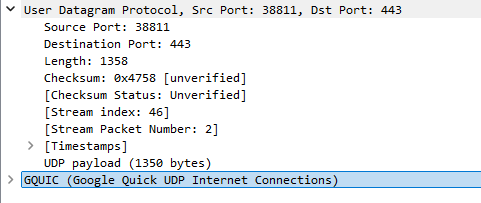
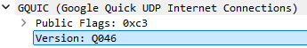

Все вопросы по поводу zapret пишите сюда.
Добрый день, использовал программу для Linux nfqws. До недавнего времени все работало. Но что то поменяли в настройках сети, либо придумали ещё что то мои настройки nfqws перестали работать. Использовали эти команды, также изменял размер пакета. ИСпользовал на линукс сервере.
iptables -A OUTPUT -p tcp -m tcp --sport 443 --tcp-flags SYN,ACK SYN,ACK -j NFQUEUE --queue-num 200 --queue-bypass
плюс изменял размер:
zapret/binaries/x86_64/nfqws --qnum=200 --wsize=8 --daemon
Но к сожалению это уже не работает. Выдает ошибку на у клиента опен transport error. Посоветуйте как можно изменить настройки этой проги
Фрагментация на сервере - не панацея. Этой технике уже много лет, она начала использоваться давным давно для борьбы с китайским фаерволом. Разумеется, сейчас это уже там не работает.
И у нас это сработает лишь на тех провайдерах, DPI которых достаточно для обмана лишь фрагментация TLS ClientHello. Такие провайдеры существуют, но их меньшинство.
DPI развиваются. Посмотрите какие техники используются в атаке десинхронизации. Вы не сможете без помощи со стороны клиента преодолеть такие DPI. И уж точно никогда не сможете сделать универсальную пиллюлю, которая работала бы везде и гарантированно.
Попробуйте посмотреть в сторону TLS 1.3+ESNI. Это тоже не панацея, требует поддержку в броузере (не всегда включено по умолчанию), спецификация еще не RFC, потому поддержки в веб серверах нет. Но уже есть proxy-поделки.
Думаю попробовать какие то другие техники, возможно помогут, или zapret уже не справиться с задачей которую я ставлю? Я могу с вами пообщаться в приватном чате? Или могу ли я написать вам в личку?
Как можно реализовать эту технологию? Мне в этом поможет программа zapret?
Я с этим не связывался сам, но полагаю у cloudflare можно заказать fronting с поддержкой ESNI.
Или ищите прокси-поделку для терминации TLS у себя на сервере. Где-то проскакивало, но не запомнил как называется.
zapret предназначен для обмана DPI на стороне клиента. даже не думал, что кто-то это будет использовать на сервере
Большинство DPI способно принять решение о запрете по первому пакету с данными от клиента. TLS client hello или http request. С сервера можно повлиять только на разбивку посредством wsize, но как уже сказал это далеко не всегда сработает
Возможно это поможет, мне? Пожалуйста подскажите как мне запустить этот парметр в nfqws. А то я немного затрудняюсь.Я хочу попробовать реализовать это на сервере.
Это ничем вам не поможет. Даже если вы разобьете ответ от сервера, клиент без специальных средств будет отсылать обычный ClientHello, на который тут же ополчится DPI. Вашему серверу даже отвечать не придется. DPI отрежет клиента до того, как серверу представится шанс что-то сделать
Это ничем вам не поможет. Вашему серверу даже отвечать не придется.
О каких способах обхода блокировки тогда могла идти речь в следующей теме?
Если порассуждать немного…
Большинство DPI заблокируют стрим при первом же пакете с данными от клиента, где http запрос или TLS client hello.
Значит действовать надо уже на этапе 3-way handshake.
Можно попытаться сделать реверс-десинхронизацию, базируясь на пришедшем TTL. Или badsum, badseq
Чтобы desync пакеты доходили до DPI, но не доходили до клиента.
Попробовать от сервера послать RST. Как будто сервер сбросил конект. Но чтобы не дошло до клиента. Или послать какой-то левый пакет данных, например левый http response.
Возможно, какие-то DPI это задурит
По IP можно определить провайдера, и имея базу провайдеров что работает на каком, изменять тип реверс-дурения
Как запускать custom-скрипты, такие как custom-nfqws-dht4all? Хотелось бы подробную иструкцию для работы со скриптами.
Попробная инструкция написана в readme. Раздел “вариант custom”.
Готовые скрипты включаются копированием соотв. файла в файл “custom” с его замещением, затем выбор в config MODE=custom.
Код скрипта следует прочитать, там в коментах пишу необходимые дополнительные переменные в config.
dht скрипт наследует режим nfqws, потому вся остальная конфигурация ему соответствует.
Можно прогнать install_easy с MODE=nfqws, настроить, убедиться в работоспособности, затем перейти на custom
после того как попробовал гудбайдпи на винде и на моё удивление проканало, решил попробовать запрет на линуксе сначала он (вместе со мной)) как то приуныл (UNAVAILABLE) а потом как попёрли (AVAILABLE!!!) и ведь риально работает, спасибо вам всем за титаникстический труд!
ps
к сожительению после 24 февраля автономный обход блокировок становется всё меннее актуально всвязи с тем что ето уже нетолько лиш у нас но и на той стороне начали блокировать с росийских айпишники
pps
и в тоже самое время автономный обход блокировок не теряет свой актульности так как ркн усилили методы борьбы с впнами и прочим шифротрафиком который идёт через границу как я понел
Потому у меня и создана система “ipban”. Потому что все автономно обойти невозможно.
Но это только хелпер, основа - руками
Интересно, что смотрит ответ только если SNI нет, но TLS выявлен. При наличии SNI блокирует или прекращает следить.
nice
Добрый день.
Прошу помощи в настройке zapret в такой конфигурации домашней сети:
клиенты - virtual box (192.168.199.65, openWrt, установлен zapret) - основной роутер - интернет.
Чтобы можно было указать в качестве прокси на клиентах (ПК, смартфоны) IP и порт виртуальной машины (я предпочитаю использовать privoxy, 192.168.199.65:8118).
Можно ли так настроить, если да, то как это сделать?
Или как можно настроить в подобной конфигурации?
Если после запуска файла blockcheck.sh в сводке доступных способов обхода есть строка:
ipv4 rutracker.org curl_test_http : tpws --methodeol
можно ли мне выбрать при настройке (install_easy.sh) в качестве способа обхода tpws и потом указать в файле
TPWS_OPT=“–methodeol”
Будет ли так работать?
После настройки zapret у меня запускается, как процесс, виден в htop
/opt/zapret/tpws/tpws --user=daemon --bind addr=127.0.0.127 --port=988 --methodeol
Буду благодарна за помощь.
Если вопросы некорректны, то прошу прощения - только начала с этим разбираться.
GoodByeDPI на Windows у меня работает, теперь пробую настроить на openWrt.
Если получится настроить на виртуальной машине, потом так же сделаю на роутере.
Сеть не должна быть в режиме NAT. Нужен bridge. Иначе почти никакие методы не будут работать.
Можно, но такая настройка zapret не касается, а ликбезом по linux я не занимаюсь. Ищите информацию в сети.
Если вкратце, то zapret обходит блокировки в тч на локальном устройстве. Значит надо установить любой прокси на то же устройство, и соединения с него пойдут через zapret.
Хотя такая конфигурация и не очень логична, правильнее было бы использовать маршрутизацию
Будет для http , ломая значительное количество сайтов. Для https не будет.
Спасибо Вам за ответ
У меня в настройках виртуальной машины в разделе “Сеть” выбран “Тип подключения” - “Сетевой мост”, речь, наверное, об этом?
Тогда какие выбрать настройки для install_easy.sh, если у меня такие способы обхода:
ipv4 rutracker.org curl_test_http : tpws --methodeol
ipv4 rutracker.org curl_test_http : nfqws --dpi-desync=split --dpi-desync-ttl=8
ipv4 rutracker.org curl_test_https_tls12 : tpws not working
ipv4 rutracker.org curl_test_https_tls12 : nfqws --dpi-desync=fake,split2 --dpi-desync-ttl=4
Те, что с nfqws, раздельно для http и https
Спасибо Вам огромное за помощь. Все работает, сайты открываются. Замечательный скрипт.

* SUMMARY
ipv4 instagram.com curl_test_https_tls12 : tpws not working
ipv4 instagram.com curl_test_https_tls12 : nfqws not working
ipv4 instagram.com curl_test_https_tls13 : tpws not working
ipv4 instagram.com curl_test_https_tls13 : nfqws not working
не то чтобы он мне сильно нужон, просто интересно как такойе возможно, другие сайты открывает норм
а может быть такойе что например дпи оно пробивает но сам ихний веб-сервер дропает видоизменённые несоответствующие не одному стандарту пакеты? 
У таких сайтов обычно прыгающие IP, и часть из них может быть заблокирована по IP
У меня норм обходит
Заметил интересную особенность, сайт windscribe.com на 99% провайдеров не имеет рабочей стратегии обхода блокировки. Блокировки по ip нет нигде, но стратегию все равно найти не удалось.
Заработало только на AS12695 DINET-AS, причем для всех заблокированных сайтов достаточно обычного fake на TCP TLS 1.2, а для windscribe.com нужен
–dpi-desync=fake,split2 --dpi-desync-split-pos=1
И заработало на NAT64 мобильного мегафона через fake,split2. На том же мегафоне без NAT64 стратегии обхода нет
windscribe.com на 3 провайдерах не конектит на порт 443 вообще. таймаут
о каком zapret речь ?
Как выше описал, на магафоне NAT64 и небольшом провайдере в Москве zapret срабатывает на windcribe.com, на остальных провайдерах где тестировал - нет
Видимо блок по v4 именно на порт 443 на большинстве провайдеров. Хотя просто пинги до сайта ходят. Если необходимо могу поднять ВПН и дать Вам временный доступ для теста к этой точке которую выше описывал (AS12695 DINET-AS) 85.192.51.Х
блокируется по ip только порт 443
на 80 http работает даже без обхода
del
Добрый день.
Настроил на роутере keenetic zapret c nfqws и wireguard сервер
Нужно чтобы через zapret проходил только трафик с wireguard
Откажитесь от скриптов, сделайте все руками
а через /opt/zapret/init.d/sysv/custom никак?
Можно через custom script
Переписать логику nfqws и добавить фильтр -s 192.168.5.0/24 (подсеть wireguard)
Можно взять за основу это, только избавиться от tpws и заменить его на nfqws. nftables можно не писать.
А как. Зайти. Через Google Chrome По http Я пытался. Ну что-то не получается Автоматом. Заходит. По https
К слову. Я недавно проверял возможность запутыванию с помощью TFO. Если засунуть запрос в SYN, то можно пробить некоторые DPI, однако ТСПУ (под ним имею ввиду то, что замораживает соединение, даже если пробит первый DPI), может собрать такой запрос и заблокировать, но и он пробивается, если размер данных в SYN < 3 байт, притом split на тех же позициях не работает. Похоже, что он либо учитывает расширение tfo, либо грубо сканирует все первые пакеты, размер которых превышает некоторое число.
Сплит через TFO может работать только на серверах, поддерживающих TFO. А чтобы это узнать, придется отправить тестовый запрос, и если нет, то придется заново переподключаться, держа при этом клиента на связи
Действительно, я тоже замечал замораживание на http, но не на https. Под замораживанием я понимаю такое состояние, когда DPI в процессе своей грязной работы задерживает пакеты и правит sequence numbers, и в случае десинхронизации соединение ломается. Обычно это видно на disorder. Зависание. syndata так же может вызывать слом. На некоторых провайдерах норм, на других ломается.
На https TFO не пробовали ?
Смотря на результат, мы видим работу произвольного количества DPI на пути. Обычно их не один там, и разные могут вести себя по-разному
Да, а серверов поддерживающих TFO не так уж и много, но rutracker, например, поддерживает.
Не придется, ядро делает это прозрачно. Если у ядра есть сохранённый cookie, то он отправит данные в первом SYN, если же нет, то он отправит обычный SYN с расширением TFO, для получения первого cookie от сайта. Затем просто отправит запрос после рукопожатия. Если сервер прислал в ответ TFO, то впредь данные ему будут отправляться в первом SYN.
Как раз на нем и пробовал (несколько недель назад у меня перестал блокироваться HTTP на всех DPI). На обычных сайтах замораживания не было, только на заблокированных. Т.е. DPI умеет собирать такие запросы при условии, что полезной нагрузки > 2 байт.
Вот это и вводит неопределенность. Нельзя сделать обычными средствами так, чтобы всегда были данные в SYN. Или можно, сделав предварительный конект. Но можно ли узнать потом действительно ли сервер поддерживает TFO ?
Прозрачность удобна, но для наших целей засунуть данные в SYN может быть не очень удобна
Гуглится вот что :
The case that you are sure fast open was used is when you have a non-blocking socket, you already have a fast open cookie and sendto() does not return EINPROGRESS:
For non-blocking socket, it returns the number of bytes queued (and transmitted in the SYN-data packet) if cookie is available. If cookie is not available, it transmits a data-less SYN packet with Fast Open cookie request option and returns -EINPROGRESS like connect().
Если имеется ввиду и случаи, когда на сервере нет TFO, то похоже, что это невозможно. В Linux (начиная вроде с 4.11) есть такая опция - TCP_FASTOPEN_CONNECT. Если cookie у ядра есть, то connect мнгновенно вернет 0, если нет, то EINPROGRESS. Т.е. можно сделать предварительное подключение, не отправляя данные.
Возможно ли как-нибудь посредством zapretа реализовать блокировку quic (блокировка от провайдера то есть, то нет)? Максимально криво работает и единственным способом избежать проблем становится принудительное отключение quic в браузерах. Но хотелось бы найти способ заблокировать quic на домашних устройствах полностью
Закройте порт udp 443 на выход из домашней сети и никакого quic не будет
Попробуйте еще пробивать не --dpi-desync=fake, а с добавлением --dpi-desync-repeats=6
Вчера такую тему просек на sknt ipv6
Добрый день . Вчера заметил странные вещи . Вчера скачал . Последнюю версию zapret . На роутер . Кинетик пик . Он Почему-то запускается . От имени пользователя Starting daemon 1: /opt/zapret/nfq/nfqws --user=tpws И ничего не работает А должно быть Starting daemon 1: /opt/zapret/nfq/nfqws --user=nobody . Как. Это. Лечить . Или как скачать . Предыдущую версию
keenetic официально я не поддерживаю.
скрипты sysv пытаются добавить юзера tpws. если даже в entware и есть adduser, то он будет добавлять в /opt/etc/passwd, а tpws/nfqws будут читать из /etc/passwd и не найдут юзера tpws, потому они с ошибкой будут завершаться
/etc/passwd - это ссылка на /tmp, где прошивка динамически в tmpfs генерит слишком нестандартный и обрезаный passwd/group
сам же корень большинства стоковых прошивкок является readonly squashfs, что резко сокращает возможности по управлению ими, отчего и заточен zapret под openwrt
решается добавлением в config
WS_USER=nobody
Вроде предыдущих версиях такого не было
в предыдущих версиях обламывался useradd по причине отсутствия группы nogroup. я это поправил командой добавления группы. useradd перестал обламываться, скрипт стал думать, что юзер добавляется и использует его, что приводит к ошибке
добавил в базовый конфиг
# redefine user for zapret daemons. required on Keenetic
#WS_USER=nobody
Благодарю за Помощь всё заработало
bolvan, ваш метод, мягко говоря, не самый простой. И мне интересно какой результат он в итоге дает. Я понял только то, что нельзя обойти блокировку IP-адреса. Но можно ли вашим методом разблокировать, например, Рутрекер, Флибусту, Либген и т.п.? И что лучше использовать - любой десктопный дистрибутив или openwrt?
Да, вы правы. Если для вас все кажется слишком сложным, я рекомендую пройти мимо. Никогда не ставил себе задачу сделать это для всех одним нажатием кнопки.
А обходит практически все, кроме блоков по IP. Блоки по IP приходится заворачивать в VPN, для чего сделаны хелперы, но настройка еще сложнее в разы, чем сам zapret
Для роутеров только openwrt, для десктопа - практически любой linux. Хотя если можете сделать роутер из обычного linux, тоже ничто не мешает
Добрый день, а как можно обновиться на новую версию?
Скачать и распаковать в /tmp, дальше оттуда install_easy.sh
добрый у меня такой вопрос если сайт не обходится запретом и его ip не пингуется и не проходит трасировку это что значит блокировка или поломка сети
Если это блокировка . Что мешает . Все сайты таким образом заблокировать . И Запрет не будет работать
Проверьте из другой сети:
https://www.whatismyip.com/port-scanner/
https://dnschecker.org/port-scanner.php
https://check-host.net/
https://ping.pe/
https://looking.house/index.php
Если проходит, значит блокировка на стороне тспу или администратора сайта.
Ничего не мешает.
про CDN забыли? https://host.io/ip/104.21.68.2
или думаете что ркн они не мешают?
смотрите где заканчивается трассировка, если в РФ или в сети провайдера - ТСПУ, если за границей (cogent, telia, …) - админ сайта блочит вас
Первым делом в таком случае тестируется сама возможность подключения по TCP к 80 или 443.
Если она отсутствует, то zapret насиловать смысла нет. Он чудес не творит.
Дальше - написали выше. Неплохо сделать подключение с забугорного хоста на порт. Если нет VPSки, есть полно веб порт сканеров
я пытаюсь зайти вот сюда mail.proton.me запретом хотя сайт Proton Mail — конфиденциальная и надёжная почта с шифрованием | Proton Легко открывается запретом
Заблокировано по IP адресу на ТСПУ. Сразу идет RST на SYN. connection refused
Трейс на соседние IP нормальный, на этот обрыв на 7 хопе после провайдера.
Применение zapret бессмысленно, требуется перенаправление через сторонний хост
Как сделать Перенаправление сторонним хостом.Это Только VPN
Да, только VPN или прокси.
В zapret есть система ipban, облегчающая построение policy routing или выборочного прозрачного перенаправления на прокси. Но это непросто, требуется много понимания и работы руками
Простая альтренатива - только включение/выключение VPN или прокси
Но из реестра.
Результат блокировки почтовиков в ходе борьбы с лже-минерами. Борьбы была суровой, доставалось даже пейджерам.
Заработала . При смене DNS
Доброе утро А Можно ли добавить Ещё один старт в config например http Отдельно https Отдельно vpn Отдельно
Если запихать все редко желаемые хотелки в систему, то система станет перегруженой. Программы с кучей редко используемых неуниверсальных, частных функций и кнопок в тулбаре плохо юзабельны, поэтому я по такому пути не пойду.
Сейчас можно включить или выключить http, https, quic раздельно в конфиге.
Другие конфигурации, тем более VPN, где нет ни стандартного порта, ни стандартного протокола, реализуются либо custom скриптами, либо руками. Другого не дано
Спасибо. Всё понял. У меня при такой конфигурации работает
# CHOOSE OPERATION MODE
# MODE : nfqws,tpws,tpws-socks,filter,custom
# nfqws : nfqws for dpi desync
# tpws : tpws transparent mode
# tpws-socks : tpws socks mode
# filter : no daemon, just create ipset or download hostlist
# custom : custom mode. should modify custom init script and add your own code
MODE=custom
# apply fooling to http
MODE_HTTP=1
# for nfqws only. support http keep alives. enable only if DPI checks for http request in any outgoing packet
MODE_HTTP_KEEPALIVE=1
# apply fooling to https
MODE_HTTPS=1
# apply fooling to quic
MODE_QUIC=1
# none,ipset,hostlist
MODE_FILTER=none
# CHOOSE NFQWS DAEMON OPTIONS for DPI desync mode. run "nfq/nfqws --help" for option list
DESYNC_MARK=0x40000000
#NFQWS_OPT_DESYNC="--dpi-desync=fake --dpi-desync-ttl=0 --dpi-desync-ttl6=0 --dpi-desync-fooling=md5sig"
NFQWS_OPT_DESYNC_HTTP="--dpi-desync=split --dpi-desync-fooling=md5sig --dpi-desync-fooling=badsum"
NFQWS_OPT_DESYNC_HTTPS="--dpi-desync=fake,disorder --dpi-desync-ttl=9 --dpi-desync-fooling=badsum --dpi-desync-any-protocol --dpi-desync-cutoff=d2 --dpi-desync-repeats=6"
#NFQWS_OPT_DESYNC_HTTP6="--dpi-desync=split --dpi-desync-ttl=5 --dpi-desync-fooling=none"
#NFQWS_OPT_DESYNC_HTTPS6="--wssize=1:6 --dpi-desync=split --dpi-desync-ttl=5 --dpi-desync-fooling=none"
NFQWS_OPT_DESYNC_QUIC="--dpi-desync=fake --dpi-desync-any-protocol --dpi-desync-cutoff=d2 --dpi-desync-repeats=6 --dpi-desync-ttl=9"
#NFQWS_OPT_DESYNC_QUIC6="--dpi-desync=hopbyhop"
Но хотелось бы Чтобы https Сайтaм не мешало
Если вы при этом ничего не делали с самим custom скриптом, то эта конфигурация не будет делать ровно ничего. Выбирать custom - это как бы для полупрограммистов. Нельзя просто так взять, сделать custom, и все заработало. Тут нет никакой простой и волшебной таблетки
Ну работает же Open VPN tcp udp работает wireguard работает ikev2 работает При такой конфигурации
в custom Я кое-какие поправки делаль для udp
Спасибо за zapret На Windows Всё отлично работает
Добрый день, запустил blockcheck.sh и получил такую информацию:
* SUMMARY
ipv4 twitter.com curl_test_http : working without bypass
ipv4 twitter.com curl_test_https_tls12 : tpws not working
ipv4 twitter.com curl_test_https_tls12 : nfqws --dpi-desync=syndata --dpi-desync-fake-syndata=/opt/zapret/files/fake/tls_clienthello_iana_org.bin
ipv4 twitter.com curl_test_https_tls13 : tpws not working
ipv4 twitter.com curl_test_https_tls13 : nfqws --dpi-desync=syndata --dpi-desync-fake-syndata=/opt/zapret/files/fake/tls_clienthello_iana_org.bin
Сейчас zapper запущен в режиме:
Starting daemon 1: /opt/zapret/tpws/tpws --user=tpws --bind-addr=127.0.0.127 --port=988 --hostspell=HOST --split-http-req=method --split-pos=3 --oob
Не совсем понятно, как перенастроить демон на работу с nfqws.
Был бы признателен, если ткните носом в какую сторону копать, спасибо!
блокчек был выполнен без остановки zapret ? странные результаты. если так, то это все неверно.
инсталятор позволяет все выбрать, что нужно
Прошу прощения за вопрос, не относящийся напрямую к теме…А что означает (как расшифровывается) суффикс ws в именах приложений? nfqws, tpws, winws 
проект начинался в далеком 2016. тогда первой идеей была смена window size с целью фрагментации запроса. отсюда пошло название. дальше обросло фукнциями, а название осталось
Вопросы по настройке zapret’а в связке со Squid’ом: что нужно будет изменить в nftables? Нужно ли заварачивать трафик с кальмара в запрет или наоборот? Или это будет зависить от самого режима настроек прокси, а точнее от того, как он слушает трафик: 1. Браузер настроен жестко на работу с прокси через прописывание самого прокси и порта, 2. Браузер работает без настроек прокси, а трафик на калшьмар заварачивается средствами таблиц. Второй вариант предпочтительнее и интереснее, так как отпадает необходимость прописывать прокси на всех девайсах домашней сети. Буду признателен к паре-тройке примеров готовых правил табличек. Сам запрет крутится в режиме авто-хост листа, т.е. самоубучении возможным заблокированным сайтам и как следствие добавления оных в нужный лист обхода. Не нужно ли будет менять режим работы запрета при этом?
с nfqws проблем быть не должно в обоих случаях.
с tpws проблем нет в режиме squid как обычный прокси, но возможны проблемы в транспарент варианте. хотя и они решаются, но придется понять как оно все вместе.будет жить.
в чем смысл squid ?
Смысл в том, что из-за массовых блокировок подсетей на ТСПУ вынужден был поднять подключение к vpn через SoftetherVPN клиент (последний правда кривоватый и на openwrt стабильно работает только 4 версия, да и то, консольная vpncmd в режиме клиента не умеет подключаться к udp vpn серверам ни в какую, есть даже топик в issue у разрабов, но его почему-то закрыли как solved), соответственно хочу немного покэшировать трафик, который ползет через vpn через squid, так как zapret не может (что очевидно и было уже упомянуто) пробивать ip блокировки. Вообщем наверное это кривые костыли, но сейчас у меня работает все так - все что можно надурить zapret’ом идет напрямую в сеть, все что забанено по ip роутиться статическими маршрутами через vpn. А хочу еще и добавить прокси в эту цепочку. И как понимаю zapret точно должен быть после squid’а, так как вроде Вы говорили, что кальмар все пересобирает и дурение не будет работать если пустить трафик с zapret’а на него. Если конечно моя задумка вообще возможна практически к реализации. Проблем с местом и памятью не будет, так как все крутится на реальной машине с 8Гб оперативы и жирным ССД. Ах да, самое главное, что забыл указать, в zapret’е вертится у меня nfqws.
squid не может кэшировать https. plain http уже почти нет. да и смысл кэширования для пробивки ип блоков в чем?
ваша проблема решается через полиси роутинг. в запрете для этого существует ipban. есть и мануал по прикрутке к вирегард. но суть от замены впн не меняется
да запрет должен быть после прокси
Ах-да, конечно же Вы правы, как я мог забыть про https. Что бы кешировать https, это надо сувать самопальный сертификат в цепочку сервер - прокси - клиент, расшифровывать и зашифровывать им, да и плюс дырка это в безопасности будет. Тупо забыл, мой косяк. Эту затею видимо придется отбросить. Одно мне тогда не понятно (хоть и к запрету уже отношения не имеет) - как тогда работают обычные открытые прокси, использующиеся для обхода блокировок? Или там крутится что-то продвинутое или используются какие-то прокси, котрые умееют проксировать https трафик?
они проксят без дешифровки
для кэширования нужно лезть в содержимое под тлс
squid удобен только более или менее внятными и удобными настройками
и можно почти без гимора подсовывать все списки (от автора. от валдика. етк) чтобы заворачивать нужные домены/ИП куда то.
у меня IPv6+частьРФ DIRECT, чтото в VPN (socks5 через Privoxy), остальное вообще в TOR (через HTTPTunnelPort оно понимает/принимает только CONNECT)
на роутерах это тоже иногда можно сделать но ИМХО с большим гемороем
часть задумок можно завернуть через Безопасный HTTPS-прокси менее чем за 10 минут / Хабр (от автора opera/hola/etc-proxy)
в свое время интересовался и не нашел возможности заворачивать по сни в скуиде
это должен уметь хрей
у меня к сожалению 3.5.28 на windows10
он вообше многово не умеет. dst_as например и надо искать актуальные списки тех же cloudflare IP/network (причем непересекающиеся ибо squid достанет warning-ами)
но вот ваши списки раскидать в VPN/TOR/etc через cache_peer ИМХО удобно и просто. причем можно и завернуть на какой нибудь прокси на роутере с Запретом/АнтиЗапретом или на этой же машине наверно подобрать рабочие настройки как указано выше
У меня сейчас zapret работает на роутере (ImmortalWrt 21, Privoxy, переход с устройств по IP_роутера:8118), но хотелось бы еще сделать (если это возможно) переход на некоторых сайтах (например, intel.com, который закрыт с той стороны) через openVPN или что-то подобное.
Мне не хватает пошаговой инструкции, как это сделать. Может быть, кто-то, кто уже настроил у себя подобное, напишет такую инструкцию, была бы благодарна.
“просто” это врядли
тем более разные VPNы
для пользователей только варианты типа https://chromewebstore.google.com/detail/proxy-switchyomega/padekgcemlokbadohgkifijomclgjgif
и там уже прописывать .PAC антизапрета. и разные socks/https прокси включая локальные наподобие TOR / Psiphon / etc
у меня например каждый список/прокси это куча правил в конфиге. я сам иногда в них путаюсь уже 
acl TXT1 dstdomain “/etc/squid/_PKH1.LST”
cache_peer_access Opera allow TXT1
cache_peer_access Privoxy allow TXT1
acl PPP dstdomain “/etc/squid/_6_tor.LST”
cache_peer_access TOR deny PPP !C0NNECT
cache_peer_access TCP deny PPP !C0NNECT
cache_peer_access TOR allow PPP C0NNECT
cache_peer_access TCP allow PPP C0NNECT
писать пошаговые, конечно, не стану
но я бы решал этот вопрос через полиси роутинг и цепочку прокси
выборочно рулить на впн можно через таблицу маршрутизации, но она касается только ип адресов. либо через ip rule. а там можно выбирать в том числе по uid процесса.
если запустить под отдельным uid простой прокси типа tpws, заруливая с него на отдельную таблицу, а на сам tpws с привокси по набору фильтров, то эффект будет достигнут.
если привокси не может рулить по sni, можно использовать xray.
или если не надо обруливать сайты на cdn, то достаточно заруливания по ipset. см систему ipban в zapret
а для юзера это решается гораздо проще средствами броузера и расширениями типа фокси прокси
Вам огромное спасибо за замечательный zapret, который здорово выручает в наши дни.
Только сюда заходят люди, которые реализовали разные способы. Может быть, кто-то из них, кто уже настроил и пользуется, написал бы такую подробную инструкцию.
Лично я знаю пока один простой способ составлять списки (для пользователя начального уровня, вроде меня). Когда на устройстве с zapret настроены privoxy и tor. Тогда достаточно в конфигурационном файле privoxy указать:
forward-socks4a *.intel.com/ 192.168.199.10:9050 .
Такой способ у меня тоже работал. Проблема в том, что на маломощных роутерах (как у меня в данный момент времени) tor с obfs4proxy не запустишь. Вот и подумалось: может, есть какие-то другие способы как-то разделить трафик? Так-то удобно: у нас получается одно устройство в локальной сети, адрес которого можно прописать в том же FoxyProxy (в броузере) или на планшете, например, а оно уже разделяет трафик, что куда.
Так-то чувствуется, что инструмент мощный, только сложный в освоении.
Может завести отдельную тему на форуме, где люди будут делиться своими способами настройки (инструкциями)? Все равно их надо будет куда-то отдельно складывать. Хочется в итоге получить универсальное устройство, которое будет подключено к основному роутеру и через которое при необходимости можно пустить трафик со всех домашних устройств. (По моему, в преддверии грядущих тотальных блокировок это будет актуально).
в любом случае нужен внешний впн или прокси вне зоны ру. только выборочно рулить по домену проще через прокси. сопряжение этого с сетевым стеком ос требует дополнительных усилий, поскольку там имена доменов не используются, а ип адреса могут прыгать на цдн или по геоип.
если есть впс, то достаточно ssh. он сделает сокс прокси.
Таких тем уже несколько было. С инструкциями и способами. На intel.com хотя бы из тора заходит, в отличие от ti.com.
роутеры даже сейчас ИМХО не настолько круты по всем параметрам
CPU / RAM / SSD / “OS” (гибкость настроек и доступных пакетов)
самое “простое” и надежное если понимать что делать это ПК с линуксом
а уж на нем поднимать все нужное
причем сейчас есть довольно компактные хоть и дорогие “сборки”. на 4пда вроде были темы https://4pda.to/forum/index.php?showforum=1077
и самое главное тот же ЗАПРЕТ и другое работает без напильника
Что значит “без напильника”? По любому на разных провайдерах надо блокчек прогонять. У меня дома один провайдер (проводной), на даче другой (беспроводной) и “общий конфиг” не работает (пробовала).
У меня сейчас zapret работает на компактном (но маломощном) tl-mr3020 и я им очень даже довольна. (Эти роутеры мне за их дизайн нравятся, они маленькие и таких устройств можно раскидать где угодно: дома/на даче/у родственников и т.д., подключенными к основному роутеру). Только вот tor на нем не запустишь, а другие варианты настроить - пока тому не научена, не умею. Вот и ищу доступную инструкцию.
Мне с zapret-ом повезло, что удалось найти пошаговую инструкцию по настройке.
Можно неттоп с Linux использовать (я взяла б/у, подешевле…)
У меня была идея подключаться удаленно к моему домашнему неттопу и использовать его как прокси-сервер. Попробовать хотелось (интересно же…), но по некоторой причине не получилось (выключили тот неттоп).
Варианты разные могут быть. Сам zapret нетребователен к ресурсам и запускать его можно на любом подходящем оборудовании - как удобнее настроить.
Оставьте это на сервере и десктопе. На роутере онли OPNsense, на крайняк pfSense
С чего бы это? Путаете, наверное, что-то. То, что вы скинули больше похоже на роутер, чем чудовища франкештейна, которые впаривают людям недобросовестные провайдеры, где 4-в-1 модем+AP+роутер+свитч и арм проц хорошо если пятнадцатого года
не знаю чем так привлекает *sense
интерфейсом может быть?
на деле linux далеко обогнал bsd по возможностям
на фаерволах pf и ipfw очень много чего нельзя из того, что можно с netfilter, nftables, iproute
Тем, что это устоявшийся проект конкретно для роутеров, фаерволлов, и т.д.
Но в данном случае такой спорный их недостаток как отсутствие приемлемой дефолтной конфигурации перевешивает. Чтобы поставить OPNsense и настроить там VPN, Pi-hole, лоад балансинг и мб даже шейпинг трафика – много ума не надо, о лине такого не скажешь. Рядовой Вася не обязан иметь скиллы нетадмина для того, чтобы самому установить роутер. Да и помщников никаких нет в любом случае, самый очевидный претендент занят продажей китайских недоразумений с 256мб оперативы и флеш-памяти
Роутер – это почти такое же критическое звено в телекоммуникациях как браузер, так что нужны не возможности, а безопасность. В случае *sense её гарантируют и упомянутые выше дефолты, и компания Netgate, спонсирующая как сам проект, так и патчи CVE в используемых пакетах, и лицензия (нарушений меньше, чем у GPL, самое крупное от Sony, то есть вообще в другой плоскости). Вот где точно обогнал, так это в поддержке устройств (удачи на *BSD если сетевая карта с чипом не от intel) и беспроводной связи
Некорректно сравнивать appliance в веб мордой с голым linux.
Тогда уж с openwrt сравнивайте.
И прикиньте что будет, когда предложенных в морде возможностей станет недостаточно.
Когда станут нужны юниксоидные прикрутки через шелл. Нестандартные схемы. Хаки, борьба против системы.
zapret тот же. Очень это удобно будет ?
А тупо проNATить и раскидать инет может любая мыльница со стоком
Про перезапись в TCP.
Возьмем такие фейк-данные:
00 00 00 00 16 03
Если их отправить в пакете со смещением SEQ в -4 от предыдущего, то первые нули отбросятся, а 1603 попадет в приложение.
Таким образом можно объединить фейковые данные и полезную нагрузку в один пакет, так что DPI не сможет ни правильно спарсить его, ни проигнорировать, т.к. потеряет начало следующего пакета.
В nfqws можно сделать как-то так:
./nfqws --qnum=200 --dpi-desync=fake --dpi-desync-fake-tls=0x000000001603 --dpi-desync-fooling=badseq --dpi-desync-badack-increment=0 --dpi-desync-badseq-increment=-4
Однако второй пакет все-же будет целый + нужен кастомный фейк.
Было бы неплохо иметь некий параметр --fake-overwrite=n, который скопирует n байт в конец фейка и обрежет начало настоящего пакет на столько же.
Спасибо за идею. Будет время - рассмотрю этот вариант
Всем добрый день. Решил сегодня обновиться до свежей ветки и поломал себе весь обход. До сегодняшнего дня сидел со стратегией --dpi-desync=fake,disorder2 --dpi-desync-ttl=3 и всё прекрасно работало. Обновился до свежей, выставил в install_easy.sh --qnum=0 и свою прошлую стратегию. По итогу демон запускается с такими параметрами
/opt/zapret/nfq/nfqws --user=tpws --dpi-desync-fwmark=0x40000000 --qnum=200 --qnum=0 --dpi-desync=fake,disorder2 --dpi-desync-ttl=3
Обход не срабатывает. Сижу на Keenetic Viva (KN-1912)
а провайдер ничего не менял ?
тот же blockcheck все тоже самое предлагает ?
и меня кстати тут заинтересовало. это мой РТ что то чудит или все таки IPv6 блокируют хоть и не весь ?!
ipv6 rutracker.org curl_test_http : working without bypass
ipv6 rutracker.org curl_test_https_tls12 : working without bypass
ipv6 rutracker.org curl_test_https_tls13 : working without bypass
ipv6 rutracker.org curl_test_http3 : winws --wf-l3=ipv6 --wf-udp=443 --dpi-desync=fake --dpi-desync-repeats=2
Для keenetic’a user=nobody, а не tpws. Ну и если UDP нужно, то надо маскарад добавлять.
Возможно вы делали по одной из инструкций в инете, где советуют править скрипты без обьяснения сути и причины сего исправления. А потом накатили оригинальную версию без этой правки.
См здесь
С ipv6 у меня на провайдере какое-то скакание. То нужно тяжелым бить с fake,split. То работает простейший hostcase или split2. А бывает некоторые домены вообще перестают блокироваться
Думаю над вашей идеей. Если для первого пакета с данными от клиента или после L7 раундтрипа (запрос-ответ-запрос-атака_на_него), то вроде неплохо выглядит. Но если вдруг поток идет сплошняком. desync any protocol, допустим, или еще какой-то случай. если прошлый пакет еще не был выплюнут в сокет ? unix системы презервят ласт дата. Потому мы перепишем кусок полезной нагрузки ерундой, и это будет передано серверному приложению
ну меня немного удивило ибо
может я как то не так проверяю ?
curl -6 --http3 -v https://rutracker.org/myip
Connected to rutracker.org (2606:4700:3031::6815:2027) port 443
using HTTP/3
< HTTP/3 200
ip: 2a00:62c0: :2b23 RU
–http3-only. --http3 лезет по tcp сначала.
вообще на счет quic-а много неясностей.
запросы от разных libraries имеют разный эффект.
одно время на quiche вообще блокировка не действовала.
теперь на quiche не действует обход ни через fake, ни через ipfrag. и на curl от BSD систем тоже не действует.
а на ngtcp3 все норм. и на броузерах тоже.
на первый взгляд, сравнивая хедеры, различия видны. это и packet number length, и длина connection id, и наличие непустого destination id в initial клиента.
похоже, там кроме собственно фильтра, расшифровывающего SNI, стоит фингерпринт резалка. может быть против каких-то отдельных приложений, использующих quic. Псифон ? Им подобные ? Я не знаю.
На одном из доступных мне провайдеров, который подключен через globalnet, вообще блок любого quic на 443. Рудимент от магистрала не выключенный
Спасибо, помогло
Спасибо, помогло!
вот теперь вижу блокировку. спасибо за опцию
curl -6 --http3-only -v https://rutracker.org/myip
QUIC connection has been shut down
QUIC connect to 2606:4700:3031::6815:2027 port 443 failed: Couldn’t connect to server
Лучше это применять только для первого пакета, для последующих же делать как по прежнему.
Для потока нужна другая логика, например:
Оригинальный запрос: 01 02 03 04 05
Создаем первый пакет:
00 00 04 05
Отправляем этот пакет со смещением SEQ в +1.
Затем отправляем второй пакет со смещением 0:
01 02 03
Получается нечто схожее с fake+disorder2.
Недостатки:
- Есть небольшой риск, что первый пакет придет позже второго и все сломает, поэтому желательно отправлять второй только при ретрансмисии, это даст небольшую задержку.
- Размер фейка должен быть меньше размера запроса или же обрезаться до него, поэтому DPI может не клюнуть на него.
Достоинства:
- Экономится один пакет по сравнению с обычным fake2.
- Сложнее восстановить поток (более запутанно).
- Не нужно использовать fooling.
Можно назвать весь комплекс этих атак sequence overlap
да уж. навертели (с)(r)™
кстати Psiphon у меня вроде работает без проблем == не знаю чего они там тогда блочат
C:\ProgramData\chocolatey\bin\curl.exe --version
curl 8.8.0 (x86_64-w64-mingw32) libcurl/8.8.0 LibreSSL/3.9.2 zlib/1.3.1 brotli/1.1.0 zstd/1.5.6 WinIDN libpsl/0.21.5 libssh2/1.11.0 nghttp2/1.62.1 ngtcp2/1.5.0 nghttp3/1.3.0
Protocols: dict file ftp ftps gopher gophers http https imap imaps ipfs ipns ldap ldaps mqtt pop3 pop3s rtsp scp sftp smb smbs smtp smtps telnet tftp ws wss
Features: alt-svc AsynchDNS brotli HSTS HTTP2 HTTP3 HTTPS-proxy IDN IPv6 Kerberos Largefile libz NTLM PSL SPNEGO SSL SSPI threadsafe UnixSockets zstd
M:_Microsoft_MSYS2\ucrt64\bin\curl.exe --version
curl 8.8.0 (Windows) libcurl/8.8.0 OpenSSL/3.3.1 zlib/1.3.1 brotli/1.1.0 zstd/1.5.6 libidn2/2.3.7 libpsl/0.21.5 libssh2/1.11.0 nghttp2/1.61.0 nghttp3/1.4.0
Protocols: dict file ftp ftps gopher gophers http https imap imaps ipfs ipns ldap ldaps mqtt pop3 pop3s rtsp scp sftp smb smbs smtp smtps telnet tftp
Features: alt-svc AsynchDNS brotli HSTS HTTP2 HTTP3 HTTPS-proxy IDN IPv6 Kerberos Largefile libz NTLM PSL SPNEGO SSL SSPI threadsafe TLS-SRP UnixSockets zstd
C:\ProgramData\chocolatey\bin\curl.exe -6 --http3-only -v https://rutracker.org/myip
- ngtcp2_conn_handle_expiry returned error: ERR_HANDSHAKE_TIMEOUT
- using HTTP/3
< HTTP/3 200
M:_Microsoft_MSYS2\ucrt64\bin\curl.exe -6 --http3-only -v https://rutracker.org/myip
- QUIC connection has been shut down
- QUIC connect to 2606:4700:3031::6815:2027 port 443 failed: Couldn’t connect to server
- QUIC connection has been shut down
- QUIC connect to 2606:4700:3034::ac43:b6c4 port 443 failed: Couldn’t connect to server
- Failed to connect to rutracker.org port 443 after 60064 ms: Couldn’t connect to server
- Closing connection
curl: (7) QUIC connection has been shut down
По поводу autohostlist.
Что если изменить логику на такую:
После срабатывания сразу же начать обход (заносить во временный список). Обход будет длиться недолго, секунд 10, после отключается. После этого времени, если произойдет обращение к сайту и обнаружится блокировка, то вносить домен в постоянный список.
Так можно почти однозначно определить блокировку, исключив перегрузки и пр., а также быстрее открывать заблокированные сайт.
С обходом не понять есть ли блокировка или ее нет. А без обхода это носит вероятностный характер.
То ли блокировка, то ли проблемы на сервере. Поэтому и используется такая модель, чтобы юзер долбился. Несколько попыток подряд проблема - считаем, что блокировка.
Единственный вариант, когда можно сразу с 1 попытки что-то сказать уверенно, это http redirect. Зависание и RST могут легко и самим сервером генериться
Можно, конечно, пробовать через раз обход/без обхода, чтобы набрать какую-то статистику работает ли обход. Но во время набора статистики будет хаос для клиента. То пашет, то не пашет
Обход включается после обнаружения блокировки. После нескольких секунд выключается (за это время может быть несколько успешных обращений к сайту)
Если получается, что сначала недоступно, с обходом доступно, а без снова не работает, то это наверняка блокировка.
А что если сайт упал? Пользователь ломится, а он все не открывается. И с существующуей логикой zapret должен добавлять сайт лишь в том случае, когда после обхода сайт открылся. А так можно сэкономить время.
Зачем собственно этот список нужен. Не проще ли без него вообще ?
Он сделан, потому что обход сайты может ломать. Есть такие стратегии, которые ломают большое количество сайтов, и с ними без ограничителя плохо будет.
Если сайт ломающийся, то после первого сбоя ваш алгоритм его еще сильнее прижмет и заставит не работать дольше.
Кроме того, распознавание сломанных сайтов и блокировок различно, тк ответы разные получаются. Сломанный сайт распознать намного сложнее
Имеется ввиду случай, когда произошел обычный сбой, включился обход и произошел еще один сбой, но уже из-за нестабильного метода? Вероятность этого достаточно маленькая. Но даже если, это просто добавит одну лишнюю перезагрузку страницы.
Ах да, поломка может быть сложно обнаруживаемая, тогда сайт будет сломан некоторое время, но все же, блокировка обнаружится (этот список может быть потом полезен для других методов), рабочий сайт и так не попадет в список.
Если сайт ломающийся, то вероятность этого равна вероятности произойти обычному сбою.
У меня autolist гоняется с дебаг логом. Каждый день много такого :
16.07.2024 18:28:27 : widget.svk-native.ru : tcp retrans threshold reached
16.07.2024 18:28:27 : widget.svk-native.ru : fail counter 1/3
16.07.2024 22:00:10 : contile.services.mozilla.com : tcp retrans threshold reached
16.07.2024 22:00:10 : contile.services.mozilla.com : fail counter 1/3
16.07.2024 22:00:38 : versioncheck-bg.addons.mozilla.org : tcp retrans threshold reached
16.07.2024 22:00:38 : versioncheck-bg.addons.mozilla.org : fail counter 1/3
16.07.2024 22:36:53 : connectivitycheck.gstatic.com : tcp retrans threshold reached
16.07.2024 22:36:53 : connectivitycheck.gstatic.com : fail counter 1/3
там и мейл ру, и яндекс попадают. все, вообщем, известные нагруженные сайты время от времени сбоят. сюда можно еще добавить плохой конект по сотовой сети.
Если стратегия сильно ломающая, то проблемы будут
Даже если не сильно ломающая, и сломается какой-нибудь сбербанк, без которого никак
Таймауты обычно броузеры сами разруливают. фокс 2 раза пытается, хроме не меньше 3.
Но если там прилетит код 409 или SSL alert, то будет ругань и останов
Возможно задам глупый вопрос. Но поддерживает ли dvtws расшифровку quic clienthello и реассемблинг kyber?
Поддерживает
Спойлер
packet: id=0 len=1278 outbound IPv6=1 IPChecksum=1 TCPChecksum=1 UDPChecksum=0 IfIdx=5.0
IP6: xxxx:xxxx:xxxx:xxxx:xxxx:xxxx:xxxx:xxxx => 2a00:1450:4010:c0e::5e proto=udp ttl=64 sport=59280 dport=443
UDP: C7 00 00 00 01 08 0F E0 FA E2 ED 14 26 CE 00 00 44 BC 1B EC 83 5E 40 C6 11 70 26 41 00 E4 E2 4F ... : ............&...D....^@..p&A...O ...
packet contains QUIC initial
packet contains partial TLS ClientHello
starting reassemble. now we have 1195/16384
DELAY desync until reasm is complete (#1)
packet: id=14 drop
packet: id=15 len=1278 outbound IPv6=1 IPChecksum=1 TCPChecksum=1 UDPChecksum=0 IfIdx=5.0
IP6: xxxx:xxxx:xxxx:xxxx:xxxx:xxxx:xxxx:xxxx => 2a00:1450:4010:c0e::5e proto=udp ttl=64 sport=59280 dport=443
UDP: C3 00 00 00 01 08 0F E0 FA E2 ED 14 26 CE 00 00 44 BC 4B B1 F4 B0 CE 4B BA 57 AC 0C FE 4C B3 12 ... : ............&...D.K....K.W...L.. ...
packet contains QUIC initial
reassemble : feeding data payload size=1195. now we have 2390/16384
packet contains full TLS ClientHello
DELAY desync until reasm is complete (#2)
REPLAYING delayed packet #1 offset 0
REPLAY IP6: xxxx:xxxx:xxxx:xxxx:xxxx:xxxx:xxxx:xxxx => 2a00:1450:4010:c0e::5e proto=udp ttl=64 sport=59280 dport=443
UDP: C7 00 00 00 01 08 0F E0 FA E2 ED 14 26 CE 00 00 44 BC 1B EC 83 5E 40 C6 11 70 26 41 00 E4 E2 4F ... : ............&...D....^@..p&A...O ...
packet contains QUIC initial
packet contains full TLS ClientHello
hostname: update.googleapis.com
dpi desync src=[xxxx:xxxx:xxxx:xxxx:xxxx:xxxx:xxxx:xxxx]:59280 dst=[2a00:1450:4010:c0e::5e]:443
sending fake request : 40 00 00 00 00 00 00 00 00 00 00 00 00 00 00 00 00 00 00 00 00 00 00 00 00 00 00 00 00 00 00 00 ... : @............................... ...
reinjecting original packet. len=1278 len_payload=1230
DROPPING delayed packet #1
REPLAYING delayed packet #2 offset 1230
REPLAY IP6: xxxx:xxxx:xxxx:xxxx:xxxx:xxxx:xxxx:xxxx => 2a00:1450:4010:c0e::5e proto=udp ttl=64 sport=59280 dport=443
UDP: C3 00 00 00 01 08 0F E0 FA E2 ED 14 26 CE 00 00 44 BC 4B B1 F4 B0 CE 4B BA 57 AC 0C FE 4C B3 12 ... : ............&...D.K....K.W...L.. ...
SENDING delayed packet #2 unmodified
reassemble session finished
packet: id=15 drop
Действительно, работает. Спасибо
Здравствуйте! Помогите настроить zapret на openwrt с nftables для обхода замедления ютуб. Установил его с помощью install_easy:
- firewall type : nftables
- ipv6 support: No
- MODE : nfqws
- NFQWS_OPT_DESYNC=“–dpi-desync=split2 --dpi-desync-split-pos=1” (остальные пустые)
- http suppport: No
- https support: Yes
- quic: No
- filtering : hostlist
- flow offloading : donttouch
Чтобы проверять отключил службу и запускаю вручную с --debug=1 но в выводе ничего нет, и я так понимаю что у меня вся проблема в том что роутер с openwrt используется в качестве точки доступа и подключен одним проводом в LAN порт, а в nftables в таблице zapret wanif и lanif - оба br-lan. По факту так и есть, и вход и выход в br-lan, но так не работает. Пробовал сносить все правила и добавлять все тоже самое но с lan - phy1-ap0(wifi) и wan eth0 - все равно в дебаге ничего нет. Подскажите, пожалуйста, что можно сделать?
Точка доступа - обычно это bridge. L2 соединение, а не L3.
iptables/nftables для zapret работают на уровне L3. Они не могут работать с bridge.
Чтобы они заработали, надо сделать routed конфигурацию (L3).
Сделайте отдельный bridge для wifi, если несколько SSID, иначе не надо делать.
Отдельный интерфейс для WAN. Настройте между ними маршрутизацию по IP.
На шлюзе тоже придется прописать статический маршрут до подсети wifi.
Например
inet - GW (192.168.1.1/24) - AP (192.168.1.2/24, 192.168.2.1/24)
На GW прописываем статик роуте 192.168.2.0/24 со шлюзом AP 192.168.1.2
Если надо , чтобы клиенты из 192.168.1.1/24 могли работать с wifi клиентами , можно использовать dhcp options с route
config dhcp 'lan'
option interface 'lan'
....
list dhcp_option '121,192.168.2.0/24,192.168.1.2'
list dhcp_option '249,192.168.2.0/24,192.168.1.2'
Для упрощения или если на GW доступа нет можно использовать NAT. Но это не лучший варик.
Если надо ipv6 - с этим чуть посложнее. Зависит от того, как раздаются ip адреса - slaac или dhcpv6.
Если slaac, то надо, чтобы оба роутера выдавали в сеть router advertisement. точка доступа - только на свою подсеть без default route. С odhcpd это может не получиться. Может потребоваться использовать radvd. windows клиенты это подхватят, а в linux потребуется на каждом клиенте делать еще sysctl : sysctl -w net.ipv6.conf.$IFACE.accept_ra_rt_info_max_plen=64
У меня именно такая конфигурация дома, так что если что - пишите в личку, вопрос это не по теме zapret
Или если по уму - надо ставить запрет на сам GW. Если есть такая возможность. Тогда и выкрутасов не понадобится
Понял, спасибо, ipv6 не нужен, буду пробовать как то на l3 переделать.
Не получилось у меня установить запрет на flint ax1800. Выдает ошибку: * opkg_install_cmd: Cannot install package iptables-mod-nfqueue.
could not install prerequisites
Попробовал добавить несколько репозиториев, но в поиске все равно не появляется “iptables-mod-nfqueue.”
В toh openwrt нет такого устройства.
Чьи-то само-собиралки ? В самопалах часто отсутствует репозитории, модули ядра, так что неудивительно. К тому же явно какая-то старая версия, раз iptables используются.
Где-то найденный файлик на форумах. Репозитории могли давно протухнуть.
Или это вообще не openwrt, а мерлин какой-нибудь ?
Или даже отсебятина от производителя пре-инсталлед ? Тогда там наверняка все протухло
Это не совсем чистый openwrt, да.
Но может этот пакет
с iptables тут такая ситуация. Не знаю может я просто не нашел правильный репозиторий где есть пакет iptables-mod-nfqueue.
Накатывать левые репозитории на систему = почти наверняка ее портить
Если даже каким-то чудом оно встанет, то оно никак не компенсирует отсутствие совместимых модулей ядра. Если их нет, это все
Да это продукция китайской фирмы GL-inet. У них OpenWRT из коробки идёт.
А коли ручки китайцев взялись, то на выходе получаем - Г.
У них явно magic у модулей ядра не совпадает с официальными релизными сборками OpenWRT.
А в из офф репозитория нету способа собрать прошивку для устройств на чипах qcom ipq6000.
Вот так всё плохо. Проще поменять роутер.
Можно похимичить с tpws в ручном режиме без скриптов.
Он ничего дополнительного не требует
Для ютубе точно хватит
blockcheck.sh поддерживает ли тест не заблокированных, но замедляемых доменов вроде googlevideo?
Пытался на линуксе протестить rr2---sn-hgn7rn7r.googlevideo.com, говорит доступно без байпаса и на этом останавливается, но замедление вроде есть.
rr2---sn-q4fl6nss.googlevideo.com начал тестировать, но там почему-то с таймаута началось. Видимо поэтому и начал, т.к. первичную проверку доступности не прошёл.
iptables, IPv4, http N, остальное дефолт
Не поддерживает
А можно ли принудительно заставить bloсkcheck.sh подбирать параметры для домена, если домен доступен?
Да, режим force при выборе quick/standard/force.
Но это не поможет протестировать замедление
А нужно ли поднимать два процесса под tcp и udp отдельно или можно обойтись одним?
Зависит от стратегии. Если они сочетаемы - да, иначе - нет
–dpi-desync=split2
–dpi-desync=fake
сочесть нельзя без дополнительных параметров, ограничивающих fake на tcp. и это не должен быть TTL
можно так сделать : winws --wf-tcp=443 --wf-udp=443 --dpi-desync=fake,split2 --dpi-desync-fooling=badsum
на *nix перенаправить udp 443 и tcp 443 на одну очередь/divert port
но этот пример каксается только замедления ютуба без обхода блокировок
в целом multi-instance это нормальное явление в zapret. так и задумано
23 posts were split to a new topic: Подписи драйверов Windows 7 x64
Приветствую! Подскажите, если я запускаю zapret с дебагом и вижу что он обрабатывает пакеты - значить обход должен работать? Я его поставил ради Ютуба на ТВ, вижу что он вроде бы работает но поведение на ТВ какое-то странное, то играет видео в любом качестве, то другое видео уже не играет. Но самое частое: включаешь видео и через ± две минуты останавливается и приходится перезапускать проигрывание возвращаясь назад и включать по новой. Иногда можно качество поменьше выбрать и заиграет снова, но чаще это не помогает. zapret поднят на роутере с опенврт. Опенврт был настроен точкой доступа(кабель с инетом включен в lan, lan в бридже с wifi, dhcp отключен). Добавил второй бридж с другим wifi и с другой адресацией и dhcp сервером, телек подключен к нему по wifi. Второй бридж ходит в инет через первый получается. Zapret пробовал и со split2 и disorder2, split-pos 1 и 2. Во всех сочетаниях вижу что запрет пакеты обрабатывает но Ютуб скорее не работает чем работает… Подскажите что можно покрутить или какие логи приложить чтобы прояснить ситуацию.
Тот факт, что пакеты поступают на nfqws, говорит лишь о том, что они туда поступают, и ни о чем больше.
Если стратегия не работает, то и обход не будет работать.
Необходимы curl тесты, которые приведены тут : Обход замедления youtube в России · bol-van/zapret · Discussion #200 · GitHub
А я думал что тспу везде один и тот же и детектит и замедляет Ютуб везде одинаково и стратегия должна работать что и у всех… Провел тесты curl’oм - замедления как будто нет вообще, файл скачивается всегда на около тарифной скорости. В лисе на ПК все ок, и с quic и без него, на андроид приложение тоже все ок. Проверял все без обходов, а вот на двух разных телевизорах lg с webos приложение Ютуб так толком и не работает со вчерашнего дня(
Хотел отредактировать сообщение, а сделал дубликат
собрал вот такого кадавра
winws --wf-l3=ipv4 --wf-tcp=80,443 --dpi-desync=fake,disorder2 --dpi-desync-ttl=9 --dpi-desync-fooling=datanoack --wf-udp=443
на первый взляд открывает тоже что и gbd и не ломает то что gbd не ломает(но надо больше тестить)
из положительного теперь нет разницы h3 или h2 на тытрубе по таймингам в f12 и буферу в стате0дмина
единственно напрягает (не помню как допустим месяцы назад было) что videoplayback?expire= в network f12 минимум половина красные (с gbd также) т.е. половину таки режут? или по 2+ разу надо фрагменты запрашивать чтоб норм.скорость была…
но и другие вопросы остались
-как нибудь без указаний стапицот портов автодетект в tcp можно сделать? для holavpn. или точно также как в gbd сначала найти а потом перечислить? а ограниченье какое?
Спойлер
как нибудь кроме остановки службы\процесса указать хосты к каким ненужно применять пробивку или в целом как замодить ключи, чтоб к прововскому кабинету попасть. а он на 5-6 хопе
поправка по прову. теперь (в отличьи от gbd) на удивление открывает без ошибки серта кабинет. но просто ОООоочень долго
Нельзя сочетать quic и TTL ! Если это и работает, то вам повезло, что роутер на 9 хопе не шлет icmp expired in transit
Можно запустить весь диапазон 1-65535, но редирект трафика - дорогое удовольствие
Может начать жраться CPU при upload-ах.
Лучше зафиксировать порты
ок
значит ещё и везение…
просто показалось сранным чтоб больше одного процесса запускать
а какой сайт из лоченых знаешь чтоб там точно quic работал?
ну чтоб если и делать отдельно так с минимумом ключей
понял что вчера я плохо тестил
quic внезависимости от ttl бажит на тытрубе
если fake выставлять он именно видеофрагменты в h1.1 грузит вместо h3 (поэтому и буфер хороший)
а все остальные split\disorder h3 не ломают но и не ускоряют 
H3 это udp, а split и disorder не работают на udp пакеты. Посмотрите в readme список поддерживаемых стратегий для каждого протокола
кроме fake ничего там не вижу
а fake ломает сам h3
покрайней мере на тытрубе = замкнутый круг
ещё ipfrag2 нашёл
но тоже самое
udp пропадает для видео
лишь какието картинки и незначительная петушь по h3 идёт
т.е. не на 100% отрубается. но для видео напрочь нехочет
fake вряд ли может ломать куик
если он правильно работает
всякие кинетики как раз и ломают куик при попытке его фейкнуть
но конечно может дпи плохо среагировать на фейк и начать в середине сеанса дропать
тогда будут подвисания и фоллбэк на тцп
ипфраг режется гуглом он на ютубе не работает. но работат на клоудфларе. если конечно ваш домашний роутео или пров с нат фрагменты не обьединят
тест обхода куик на рутракер ннм кинозал они все на клауде
Ростелеком, такая же история - рутрекер, ннм и проч открываются, но видео контент ютуба грузится http/1.1. --dpi-desync=fake --dpi-desync-repeats=6
Не может ли быть такого, что РКН тупо собрал подсети cdn гугла и режет трафик именно по принадлежности ip адреса к подсети
Да, такое подозрение есть:
Подскажите как исправить проблему.
Запускаю блокчек, но на все тесты пишет:
seccomp: Invalid argument
seccomp: this can be safely ignored if kernel does not support seccomp
Прошивка openwrt, из последних релизов.
Соответственно, итогом блокчека не находит стратегии обхода, хотя GoodByeDPI у меня отлично работает.
если у вас новый полноценный опенврт, а не что то запущеное в контейнере, то секкомп ядро поддерживает
но даже если нет, то это просто предупреждение. на функционал не влияет
причина неработы в другом
он мог бы, но тогда бы он прирезал их остальные сервисы
там ип скачут. выделить отдельно туб непросто
Оу, не полноценный опенврт. Сборка на базе NSS и в сонфиге билда seccomp отключен.
Насколько это критично для работы запрета и блокчека?
Так же, роутер подключен по WAN порту к другому роутеру, который уже подключен к интернету, так можно?
Если всё ок, будет ли работать если роутер с openwrt будет переведен в режим моста?
А какой quic initial отправляется по умолчанию? iana?
И почему для quic достаточно указать fake без fooling?
Вполне возможно, что NAT на втором роутере (который подключен к провайдеру) может ломать дурение
GoodByeDPI работает нормально. Или NAT может ломать запрет, но не трогать конечные устройства?
Типичный NAT смотрит только порты в заголовке. Ломать может высокоуровневый корпоративный брандмауэр.
Идеально было бы настроить zapret на основном роутере, а openwrt переключить в свитч, но там rt-n56u с padavan на борту и я тупо не понимаю, что там и как настраивать, инструкция под openwrt проще. И поменять их не могу, расположение и задачи у них разные
отправляется quic short
0x40 0x00 0x00 …
нат разные бывают
нат от вируалок ломает почти все
линуховый нат ломает некоторые методы
еще роутеры кое что могут ломать. бадсум не пропускать
недавно узнал что с модулем ядра br_netfilter можно работать с ип нф таблес на мостах
возможно и запрет пойдет без дополнительного л3 роутинга
Доступен пакет kmod-br-netfilter. Это оно? Без дополнительного роутинга - это просто переткнуть основной роутер в LAN и отключить DHCP?
Скорее всего проблема в моих нулевых знаниях OpenWrt и есть просто способ объединить сети двух роутеров через WAN. Мне всего-то нужен доступ ко всем устройствам в обоих сетях
да это оно. обьдинить через лан
дхцп откл на опенврт
на опенврт задать статик ип вне диапазона дхцп чтобы доступ не потерять без другого рутера
Збс, спасибо. Будем попробовать.
Получилось настроить сам запрет и всё отлично, но есть нюанс.
В хроме ютуб работает богически, протогол h3, изредка проглядывает h1.1
Огнелис мертв совсем, там h2 и h1.1 попеременно и ничего не грузит, пакеты теряются с ns_error_dom_bad_url
Телефон грузит хорошо, но с периодическими затупами.
Куда копать?
Настройки:
NFQWS_OPT_DESYNC=“–dpi-desync=fake --dpi-desync-ttl=0 --dpi-desync-ttl6=0 --dpi-desync-fooling=badsum”
NFQWS_OPT_DESYNC_HTTP=“–dpi-desync=fake --dpi-desync-ttl=3
NFQWS_OPT_DESYNC_HTTPS=”–dpi-desync=split2 --dpi-desync-split-pos=1"
NFQWS_OPT_DESYNC_QUIC=“–dpi-desync=fake --dpi-desync-repeats=6 --dpi-desync-fooling=md5sig”
Провайдер прихвостень ЭР-телеком, dnscrypt обязательно
П.С. Спасибо за советы и саму прогу. С неё, конечно, ёжика родишь, пока настраиваешь, но работает магистрально.
П.П.С. В блокчек можно сразу несколько доменов закидывать? Если нет - функция нужная, ибо долго и проще штук 10 разных кинуть и забыть на пару часов, а потом текстовик изучить.
домены можно вводить через пробел в блокчеке
копать в исследование что происходит
ф12 и вирешарк + знания и голова
и эксперименты со стратегиями
таблетки волшебной нет на все случаи
Я например нашел настройки под GDI, можно ли как-то эти опции конвертировать в nfqs? Хотел конечно через blockcheck, но он у меня не работает под keenetic
можно но зачем ?
с компа прогнать блокчек
для роутера уменьшить ттл на 1 если он есть
Нашёл еденичные хосты GGC ютуба, к которым зависает TLS даже без SNI, пробивается только режимом syndata. Подскажите насколько он проблемный в режиме hostlist? Получается он поправляет все SYN-ы на 443 порт. На первый вгляд всё работает хорошо, но даже wireshark из-за этого пейлоада в конце, не может нормально отобразить флаги tcp.
UPD: К сожалению нашёл сайт который ломается этой стратегией.
синдата не работает с хостлистами
Я неверно сформулировал вопрос, я понимаю что не работает, имеется ввиду синдата как добавление к режиму хостилист. Но я уже понял, что вполне ломает некоторые сервисы. Нашёл сайт, нужный по работе, который даже при добавлении одного 0x00 в конец SYN, перестаёт реагировать на коннект.
фильтр по ип или ипсет
других вариантов не вижу
Хотелось бы узнать, а почему автор не советует использовать zapret на роутерах keenetic если он там работает и многие ставят? Или это относится только к определенным старым моделям устройств? Ютуб обходится, заблокированные сайты тоже, все дело в том что кинетик каким-то образом нарушает обход если включен квик?
там есть ряд проблем
используйте если хотите
автор лишь открещивается от любой поддержки этих устройств
все сами
Вопрос или идея может быть уже обсуждалась, но все же спрошу снова - возможна ли будующая реализация программы с применением разных правил для разных доменов? Дело в том, что провренные методы обхода не всегда работают для всех сайтов и иногда попадается варианты, где требуется более тонкая настройка для определенного домена, которая ломает или не срабатывает на остальных. Что-то из рода такого:
–dpi-desync=fake --domain-list=domainlist1.txt для domain1.com
–dpi-desync-disorder2 --domain-list=domainlist2.txt для domain2.txt
Все это для процесса nfwqs под linux’ом. Да и все конечно в одной строке, при одном запущенном zapret’е формат привел чисто как идею.
Или это можно реализовать через запуск нескольких процессов с разной очередью и правилами файервола? Сейчас приходится часть заворачивать в 6to4 туннель, для тех, которые имеют поддержку 6го протокола и АААА записи в ДНС, а 4ые в впн, по причинам разных методов обхода, которые не всегда четко срабатывают. И да, понимаю, что с автохостлистом сложности будут, но возможно тогда просто он будет отключен в новом режиме.
планирую это в ближаший месяц-два
сейчас только через подбор стоатегии класса общий знаменатель
Ко мне в конце недели придет роутер banana pi r4, сейчас самый лучший вариант для обхода dpi это zapret от болвана?
если интересует автономный обход, кроме запрета есть еще byedpi. и его можно прозрачно завернуть через redsocks или tun2socks
а других аналогичных решений под линух я и не знаю
Если я верно понял, программу можно установить запуская последовательно скрипты, а можно скомпиллировать из исходников. И я слышал, что эти варианты не равнозначны. А в чем разница?
есть готовые бинарики. собирать их на нетрадиционном линухе было бы мучением
есть скрипты установки и запуска. это один путь.
но можно их не использовать, а сделать все сасому. запускать бинарики и своими правилами редиректить трафик. это другой путь
А правила для Iptables нужны когда используется tpws или для nfqws они нужны тоже?
нужны для всего, кроме tpws socks mode
Если я возьму бинарик nfqws из x86_64, помещу его в произвольную директорию, добавлю в нее текстовый файл .txt со списком нужных доменов для опции --hostlist и запущу nfqws из командной строки, то этого будет достаточно? (+ правила Iptables + опции для “дурения”).
Опция --hostlist только с nfqws работает?
Да, достаточно запустить nfqws или tpws и настроить ip/nftables, чтобы тот направлял траффик в запрет
Хостлист есть и для tpws, чекай readme
Ув. @bolvan, в утилите tpws есть возможность применять пользовательский список типа ‘исключения’ (‘hostlist-exclude=’).
Есть ли возможность добавить опцию к этим спискам - не просто не применять ‘дурение’, а делать перенаправление на конкретный интерфейс?
Поясню, насколько могу судить, алгоритмы противодействия dpi полезны пока домен не попадет в блокировку по ip, поэтому бесполезно будет просто отправлять запрос из списка ‘исключений’ на произвол судьбы, а лучше отправить его в тунель vpn.
Да можно фильтровать не посредственно то что должно попасть в обработку к tpws, но предложенный мной вариант был бы полезен в некоторых ситуациях (например, когда проще настраивать списки по ip range - iptables перенаправят заросы по нему или в vpn тунель или в прокси - tpws, чем по конкретным ip адресам и может возникнуть ситуация, что какой то домен из ip range должен пойти в тунель vpn, а какой то домен, из того же ip range - лучше через ваш прокси).
Да это не функционал вашей утилиты, не для этого она предназначена, но это сильно упростит сосуществование с различными способами блокировки.
если что-то блочится по ip, с ним и надо разбираться по ip. а не по домену
заводим ипсет, по нему делаем марк, по марку выбор таблицы маршрутизации
и не нужны тут никакие юзер программы
все умеет ядро
а на уровне юзер прог итерфейсы не выбираются
xray умеет снифать хост из запроса и перенаправлять запрос на другой прокси
если сделать на локалхосте прокси, настроить на его uid правило на другую таблицу маршрутизации, то можно достигнуть желаемого
Для quic у меня работает (winws):
--wf-udp=443 --dpi-desync=fake
@bolvan какая стратегия параллельно к этому будет самой оптимальной для https?
// для всех заблокированных (использую сейчас)
--dpi-desync=fake,disorder2 --dpi-desync-fooling=md5sig
// либо для всех
--wf-tcp=80,443 --dpi-desync=syndata,disorder2 --dpi-desync-fake-syndata=tls_clienthello_iana_org.bin
// либо syndata для всех без YT и disorder2 отдельно для YT
--wf-tcp=80,443 --dpi-desync=syndata --dpi-desync-fake-syndata=tls_clienthello_iana_org.bin
--wf-tcp=80,443 --dpi-desync=disorder2
blockcheck нашел много рабочих стратегий, внутренний перфекционист не дает покоя. 
ТСПУ обходится обычным fake с ттл до последнего провайдерского хопа (в данном случае имеются в виду все российские провайдеры на пути до последнего бордера магистрала). Если ттл не угадать, или он слишком длинный (например, криво настроенный cgnat), ТСПУ 100% ломает badseq. Т.е. --dpi-desync=fake --dpi-desync-fooling=badseq в большинстве случаев должен ломать тспу, а также дпи от vasexperts. Но может сломать и некоторые сайты не из списка, не все любят badseq. Замедление обходит split2, желательно поменять --dpi-desync-split-pos=1, т.к. с 2 по дефолту ютуб перестает выдавать список GGC кэшей и вы привязаны к провайдерским (причина этого пока не установлена, но выявлена на 3 провайдерах) Либо использовать disorder2, но он ломает некоторые не заблокированные сайты. В плане замедления ничего в тспу не менялось со времен замедления твиттера, как split2 это все обходил так и обходит. Если по каким-то причинам это не работает, нужно проверить адекватность выдоваемых вам днс ответов и что вы не находитель за каким-нибудь злым натом (типа мобильный интернет), и нужные вам сайты не забанены по ип вашим провайдером. Если провайдер вам гадит в трафик до такой степени, что вам приходится использовать какие-то лестницы из обхода блокировок - проще сменить провайдера, это никогда не будет работать хорошо без жестких списков исключений\включений.
TLDR
Если у вас тспу или скат, нужно начать с --dpi-desync=fake,disorder2 --dpi-desync-fooling=badseq и проверить ютуб, твиттер, рутрекер. Открылось, скорость норм? Убираем disorder2, добавляем split2 --dpi-desync-split-pos=1. Открылось, скорость норм? Убираем --dpi-desync-fooling=badseq, добавляем --dpi-desync-ttl=n --dpi-desync-fooling=md5sig, вместо n подбираем ттл, 4-5 обычно достаточно.
Я имел дело с тспу, с тройным тспу, с тспу+скат, из провайдеров ТТК, РТК, их клиенты. Вы себе этими конструкциями только хуже делаете, тспу обходится крайне просто.
Предполагаю, что вы отвечаете мне. У меня и обходится все просто, fake и md5sig для нужных сайтов, disorder2 для YT, и ttl подбирать не требуется.
Но почитал readme, там есть syndata, которая работает на этапе установки соединения и обходит у меня блокировку всех нужных сайтов кроме YT. Т.е. не нужно трогать/фейкать пакеты данных, все работает до их отправки. Разве это не лучший вариант? Плюс disorder2 или split2 пустить отдельно для YT.
syndata ломает сайты на DDOS guard точно, мб какие-то еще (у меня еще банковске приложение одно не прогружается с syndata). Как пример, попробуйте с syndata зайти на ixbt.com, он будет очень долго прогружать из-за анти-ддос защиты. А ограничить syndata по определенным доменам нельзя, т.к. она срабатывает раньше (в readme обозначено как 0 стадия).
На YT подкрутили фильтр ТСПУ пару дней назад буквально, там теперь просто fake лично у меня не срабатывает. Нужно еще например split2 докинуть.
Вот это смущает, конечно.
Только вот открывает все равно не все сайты, даже те что по айпи не забанены как,например, rutor.info(работает только по http) или torrentgalaxy.to. С остальными проблем нет, но все же будто чего-то не хватает. Хотя рутор в инкогнито открывает, а вот torrentgalaxy нет
может быть только порт 443 забанен на этом ip, поэтому по http все работает, а по https нет.
Проверьте curl с резрешенный доменом на адрес заблокированного сайта который по https не открывается, но работает по http
curl -v https://ya.ru --connect-to ::0.0.0.0 (ip заблоченного сайта)
Хотел попробовать обойтись без fake, не нашлось одинаковой стратегии для YT и остальных блокированных 
Для блокированных работает:
--dpi-desync=disorder2 --dpi-desync-split-seqovl=1 --dpi-desync-split-tls=sni
Для YT:
--dpi-desync=disorder2 --dpi-desync-split-seqovl=1 --dpi-desync-split-pos=2
А запустить два winws с --wf-tcp=443 и разными стратегиями для разных блэклистов, естественно, нельзя.
Не удалось настроить работу youtube на тв самсунг (старый, 2015г).
Все устройства в сети работают (Windows, iOS, Android, Android TV и тп), но на тв самсунг - приложение открывается, доступный контент отображается корректно, но если начать воспроизводить - темный экран и бесконечная надпись ‘загрузка’.
При этом, если сделать перенаправление домена googlevideo.com в vpn тунель (остальные домены ютуба через zapret) - на тв начинает проигрывать ролики.
Т.е. проблема только с одним доменом и только со старыми тв самсунг.
Кому то удалось заставить работать на тв?
Проверял через прокси twps.
Запустите блокчек на заблокированный ресурс с параметром force и перебирайте все стратегии которые он выдаст, пока не найдете ту, которая и YT и сайты разблокирует
Так и делал. Без fake, т.е. только disorder2/split2, общей стратегии не нашлось.
Похоже, так оно и есть. Есть способ это обойти? У этого сайта нет http
curl -v https://torrentgalaxy.to --connect-to ::176.97.124.208
- Connecting to hostname: 176.97.124.208
- Trying 176.97.124.208:443…
- connect to 176.97.124.208 port 443 from 0.0.0.0 port 49600 failed: Timed out
- Failed to connect to 176.97.124.208 port 443 after 21055 ms: Couldn’t connect to server
- Closing connection
curl: (28) Failed to connect to 176.97.124.208 port 443 after 21055 ms: Couldn’t connect to server
А вот сайт у которого только http, но он почему-то в основном профиле не открывается только через инкогнито
curl -v http://rutor.info --connect-to ::193.46.255.29
- Connecting to hostname: 193.46.255.29
- Trying 193.46.255.29:80…
- Connected to 193.46.255.29 (193.46.255.29) port 80
GET / HTTP/1.1
Host: rutor.info
User-Agent: curl/8.8.0
Accept: /- Request completely sent off
Вам надо вызывать curl с НЕЗАБЛОКИРОВАННЫМ доменом на ip адресс заблокированного домена:
~ # curl -v https://ya.ru --connect-to ::176.97.124.208 --max-time 5
- Connection timed out after 5001 milliseconds
curl: (28) Connection timed out after 5001 milliseconds
~ # curl -v https://ya.ru --connect-to ::193.46.255.29
- TLSv1.3 (OUT), TLS handshake, Client hello (1):
- TLSv1.3 (IN), TLS handshake, Server hello (2):
- TLSv1.3 (IN), TLS handshake, Encrypted Extensions (8):
- TLSv1.3 (IN), TLS handshake, Certificate (11):
- TLSv1.3 (IN), TLS handshake, CERT verify (15):
- TLSv1.3 (IN), TLS handshake, Finished (20):
- TLSv1.3 (OUT), TLS change cipher, Change cipher spec (1):
- TLSv1.3 (OUT), TLS handshake, Finished (20):
- SSL: no alternative certificate subject name matches target host name ‘ya.ru’
- TLSv1.3 (OUT), TLS alert, close notify (256):
curl: (60) SSL: no alternative certificate subject name matches target host name ‘ya.ru’
More details here: curl - SSL CA Certificates
Лично у меня torrentgalaxy заблокирован по ip, даже не пингуется. А rutor работает по http через zapret.
У вас всегда есть стратегия:
–dpi-desync=split2 --dpi-desync-split-seqovl=336 --dpi-desync-split-seqovl-pattern=/…/tls_clienthello_iana_org.bin
и еще стратегии с syndata и wssize.
Понял, я айпишник сайта внес в zapret-hosts-user-ipban но что-то все равно доступа нет.Этого недостаточно? Хотя на гитхабе запрета написано, что это не поможет если блок по ip, хотя файл для ipban есть
ipban это только хелпер для ведения ипсета
он ресолвит сам домены и пропускает ипшники и подсети как есть
но полиси роутинг на впн или редсокс на прокси это за вами
Добрый день! Подскажите, пожалуйста, что не так?
Запускаю с параметром --hostlist-auto=autohostlist.txt
winws.exe --wf-tcp=80,443 --dpi-desync=fake,disorder2 --dpi-desync-autottl=2 --dpi-desync-fooling=md5sig --hostlist-auto=autohostlist.txt
В консоли сообщения
Loading hostlist autohostlist.txt
loading plain text list
Loaded 0 hosts from autohostlist.txt
windivert initialized. capture is started.
Недоступные сайты не грузятся, файл autohostlist.txt создается, но остается пустым.
Убираю --hostlist-auto=autohostlist.txt - все недоступные сайты прекрасно открываются
Прочитайте как работает autohostlist в readme. У вас в нем сейчас 0 сайтов. Чтобы они там появились надо или руками их туда записать или открывать заблокированные сайты несколько раз подряд за короткий промежуток времени.
Пытаюсь запустить скрипт blockcheck.sh под Windows 10:
Используя WSL установил Ubuntu и Debian
Клонировал репозиторий: git clone https://github.com/bol-van/zapret
Выполнил make -C "/home/andmail/zapret"
Получил:
make: Entering directory ‘/home/andmail/zapret’
make[1]: Entering directory ‘/home/andmail/zapret/nfq’
rm -f nfqws dvtws winws.exe
make[1]: Leaving directory ‘/home/andmail/zapret/nfq’
make[1]: Entering directory ‘/home/andmail/zapret/tpws’
rm -f tpws *.o
make[1]: Leaving directory ‘/home/andmail/zapret/tpws’
make[1]: Entering directory ‘/home/andmail/zapret/ip2net’
rm -f ip2net *.o
make[1]: Leaving directory ‘/home/andmail/zapret/ip2net’
make[1]: Entering directory ‘/home/andmail/zapret/mdig’
rm -f mdig *.o
make[1]: Leaving directory ‘/home/andmail/zapret/mdig’
make[1]: Entering directory ‘/home/andmail/zapret/nfq’
cc -s -std=gnu99 -Wno-logical-op-parentheses -O3 -o nfqws .c crypto/.c -lnetfilter_queue -lnfnetlink -lz
/bin/sh: 1: cc: not found
make[1]: *** [Makefile:14: nfqws] Error 127
make[1]: Leaving directory ‘/home/andmail/zapret/nfq’
make: *** [Makefile:6: all] Error 2
make: Leaving directory ‘/home/andmail/zapret’
Выполнил ./install_bin.sh
Получил:
/home/andmail/zapret/binaries/my/ip2net is absent
my is NOT OK
x86_64 is OK
installing binaries …
linking : …/binaries/x86_64/ip2net => /home/andmail/zapret/ip2net
linking : …/binaries/x86_64/mdig => /home/andmail/zapret/mdig
linking : …/binaries/x86_64/nfqws => /home/andmail/zapret/nfq
linking : …/binaries/x86_64/tpws => /home/andmail/zapret/tpws
Выполнил ./install_prereq.sh
Получил:
- checking system
system is not either systemd, openrc or openwrt based
easy installer can set up config settings but can’t configure auto start
you have to do it manually. check readme.txt for manual setup info.
system is based on linux - checking privileges
root is required - checking system
system is not either systemd, openrc or openwrt based
easy installer can set up config settings but can’t configure auto start
you have to do it manually. check readme.txt for manual setup info.
system is based on linux - checking privileges
select firewall type :
1 : iptables
2 : nftables
your choice (default : nftables) : 2
selected : nftables
- checking prerequisites
required utilities exist : curl nft
Выполнил./blockcheck.sh
Получил:
- checking system
Linux detected
firewall type is nftables - checking privileges
root is required - checking system
Linux detected
firewall type is nftables - checking privileges
- checking prerequisites
nftables queue support is not available. pls install modules.
nftables v1.0.6 (Lester Gooch #5)
Подскажите, пожалуйста, что нужно для работы скрипта blockcheck.sh ?
Есть же набор для win:
zapret теоретически может заработать только под WSL2, который суть виртуалка с linux
но и там надо как-то сделать маршрутизацию, чтобы трафик шел через ядро linux
на WSL1 пойдет только tpws в режиме socks, не будут работать несколько опций - oob,mss,disorder
и придется отключить splice (–nosplice)
nfqws нет шансов
для этого есть нативная версия winws под винду
Спасибо. Все равно не могу понять, как это все работает. В readme
сколько раз нужно обнаружить ситуацию, похожую на блокировку, чтобы добавить хост в лист (по умолчанию: 3)
Открываю десятки раз инстраграмм, рутрекер, рутор, кинозал. В итоге ни один из этих сайтов не открылся. В autohostlist добавились ютубовские домены, хотя ютуб-то как раз никто не открывал.
В логе logfile.txt опять-таки запросы к гуглу и ютубу
18.08.2024 18:31:46 : accounts.youtube.com : tcp retrans threshold reached
18.08.2024 18:31:46 : accounts.youtube.com : fail counter 1/3
18.08.2024 19:48:59 : clients3.google.com : incoming RST
18.08.2024 19:48:59 : clients3.google.com : fail counter 1/3
18.08.2024 19:48:59 : clients3.google.com : incoming RST
18.08.2024 19:48:59 : clients3.google.com : fail counter 2/3
18.08.2024 19:48:59 : clients3.google.com : incoming RST
18.08.2024 19:48:59 : clients3.google.com : fail counter 3/3
18.08.2024 19:48:59 : clients3.google.com : adding
18.08.2024 19:49:03 : play-fe.googleapis.com : incoming RST
18.08.2024 19:49:03 : play-fe.googleapis.com : fail counter 1/3
18.08.2024 19:49:03 : play-fe.googleapis.com : incoming RST
18.08.2024 19:49:03 : play-fe.googleapis.com : fail counter 2/3
18.08.2024 19:49:03 : play-fe.googleapis.com : incoming RST
18.08.2024 19:49:03 : play-fe.googleapis.com : fail counter 3/3
18.08.2024 19:49:03 : play-fe.googleapis.com : adding
18.08.2024 19:49:03 : play-fe.googleapis.com : incoming RST
18.08.2024 19:49:03 : play-fe.googleapis.com : fail counter 1/3
18.08.2024 19:49:04 : googleads.g.doubleclick.net : tcp retrans threshold reached
18.08.2024 19:49:04 : googleads.g.doubleclick.net : fail counter 1/3
18.08.2024 19:49:04 : googleads.g.doubleclick.net : tcp retrans threshold reached
18.08.2024 19:49:04 : googleads.g.doubleclick.net : fail counter 2/3
18.08.2024 20:35:38 : yt3.ggpht.com : incoming RST
18.08.2024 20:35:38 : yt3.ggpht.com : fail counter 1/3
18.08.2024 20:35:38 : yt3.ggpht.com : incoming RST
18.08.2024 20:35:38 : yt3.ggpht.com : fail counter 2/3
18.08.2024 20:35:38 : yt3.ggpht.com : incoming RST
18.08.2024 20:35:38 : yt3.ggpht.com : fail counter 3/3
18.08.2024 20:35:38 : yt3.ggpht.com : adding
А у вас сайты просто по ip не забанены? Прочитайте в каких случаях автохостлист срабатывает
Неа, все пингуется. blockcheck выдал DNS подменяется, но провайдер не перехватывает обращения к сторонним DNS, поменяйте DNS на публичный. Сейчас стоит гугловский 8.8.8.8
Заблокированные сайты с параметром --hostlist-auto отваливаются по таймауту с сообщением о невозможности загрузить страницу. Без --hostlist-auto те же сайты прекрасно открываются с запущенным zapret. Ладно, видно не судьба в авторежиме список вести, буду вручную добавлять.
Небольшой отчет о проделанной работе. Хотел попробовать zapret. Решил установить Linux на флешку и его туда - типа как печочница  В общем все установил, нифига не сработало, вынул флешку - оказалось я сломал компуктер и система теперь не запускается. То автоматом в BIOS, то черный экран с предложением установить загрузочный девайс. Так что я теперь тоже хакер. Но есть ньюанс. Хакеры ломают чужие системы, а я свою.
В общем все установил, нифига не сработало, вынул флешку - оказалось я сломал компуктер и система теперь не запускается. То автоматом в BIOS, то черный экран с предложением установить загрузочный девайс. Так что я теперь тоже хакер. Но есть ньюанс. Хакеры ломают чужие системы, а я свою. 
Дополнение
Вопрос. Сколько по времени занимает проверка блокчеком и стоит ли для проверки Рутрекер заменить на googlevideo?
Для песочницы используйте virtualbox (free), hyper-v (win10 pro), или vmware workstation (shareware). На торрентах есть даже готовые образы уже установленных linux дистрибутивов, для совсем ленивых.
Минут 20
Нет, не стоит. Block checker не определит замедление ресурса.
здесь важно предостеречь от использования нат на виртуалках. все поломает
сам googlevideo не предназначен для обращения. будет ошибка сертификата везде
у автолиста есть дебаг режим
лог файл что и почему он делает
NAT внутри одной подсети ничего не ломает. И разницы виртуалка/не виртуалка нет никакой.
Да, вот выше этот файл logfile.txt под спойлером Zapret: обсуждение - #211 by TesterTi
Там ютубовские хосты, которые не открывались. А сайтов, которые открывались десятки раз (к примеру, рутрекер, инстаграмм), там нет почему-то. И в итоге в автохостлист попали
Магия, в общем )
гипервизорный нат это не линух нат и не провайдерский. он ломает большинство методов
виртуалку только в бридж
А я про линуксовый NAT на самой виртуалке. Ни разу не тестил NAT от гипервизоров.
надо смотреть лог nfqws --debug
возможно блокировка идет не сразу
и метод детектирования не срабатывает
Спасибо. А на windows это сработает? Я запускаю через winws.exe
сработает
лучше запускать с cygwin prompt, чтобы был | tee
Всем привет! Пару дней назад поставил себе на роутер Zapret, доволен был до того момента, пока инет не стал пропадать. В одном из Telegram-чатов мне сказали, что дело скорее всего в том что Zapret имеет много утечек памяти. Я пробовал отключать Zapret и инет не пропадал. Возможно это совпадение, а может и нет.
На кинетик ставили? Если да, то из-за особенностей NDM там есть утечка памяти при использовании запрета. При чисто v4 проблема заметна не сильно, при v4+v6 может меньше чем за сутки забить ОЗУ в роутере
если кинетик, то я его не поддерживаю
и судя по всему там течет патченое ядро, а не zapret
всем, кто может, рекомендую слезать со стока на openwrt
Да, Keenetic. Интернет IPv4, но отключений больше не было. Думаю что провайдер (РТО-Дон) менял ТСПУ.
Понял, приму к сведению.
добрый вечер перестали работать конфигурационные файлы варп впн сама программа подключается варп а вот файл конфига не подключается все остальные впны работают включенным запретом
подробности. как запущен zapret, с какими параметрами
какой протокол VPN (wireguard ?), конфиг wireguard (без индивидуальных приватных ключей, если такие есть)
для WG есть только вариант fake. иногда надо делать repeats >=6, иногда >=12
ipfrag2 помочь может только со своими серверами
на ТСПУ могут включать stateless режим для некоторых известных диапазонов IP, чтобы сделать фейки нерабочими.
Ну допустим, у меня вчера включили stateless . Как с ним бороться Дo вчерашнего дня… Всё работало
. И Что странно. Только warp . Конфигураторы . Не работают. Сама программа 1.1.1.1 WARP работает
Мало что понятно из такого обьяснения. Я не знаю что такое конфигураторы.
Мне надо знать какой VPN протокол используется и на какие IP адреса нацелен, а так же как настроен zapret для противодействия предполагаемой проблеме
Interface]
PrivateKey = удалено
Address = 172.16.0.2/32, fd01:5ca1:ab1e:8c88:472d:77ce:3f:8a48/128
DNS = 1.1.1.1
[Peer]
PublicKey = bmXOC+F1FxEMF9dyiK2H5/1SUtzH0JuVo51h2wPfgyo=
AllowedIPs = 0.0.0.0/0, ::/0
Endpoint = 162.159.193.5:500
Протокол wireguard Провайдер . Таттелеком
override ports
#HTTP_PORTS=1-65535
HTTPS_PORTS=83-65535
QUIC_PORTS=21,83-65535
CHOOSE OPERATION MODE
MODE : nfqws,tpws,tpws-socks,filter,custom
nfqws : nfqws for dpi desync
tpws : tpws transparent mode
tpws-socks : tpws socks mode
filter : no daemon, just create ipset or download hostlist
custom : custom mode. should modify custom init script and add your own code
MODE=custom
apply fooling to http
MODE_HTTP=1
for nfqws only. support http keep alives. enable only if DPI checks for http request in any outgoing packet
MODE_HTTP_KEEPALIVE=1
apply fooling to https
MODE_HTTPS=1
apply fooling to quic
MODE_QUIC=1
none,ipset,hostlist
MODE_FILTER=none
CHOOSE NFQWS DAEMON OPTIONS for DPI desync mode. run “nfq/nfqws --help” for option list
DESYNC_MARK=0x40000000
#NFQWS_OPT_DESYNC=“–dpi-desync=fake --dpi-desync-ttl=0 --dpi-desync-ttl6=0 --dpi-desync-fooling=md5sig”
NFQWS_OPT_DESYNC_HTTP=“–dpi-desync=fake,disorder --dpi-desync-ttl=9 --dpi-desync-fake-http=0x00000000”
NFQWS_OPT_DESYNC_HTTPS=“–dpi-desync=fake,disorder2 --dpi-desync-ttl=9 --dpi-desync-any-protocol --dpi-desync-cutoff=d2 --dpi-desync-repeats=6 --dpi-desync-fooling=md5sig,badsum”
#NFQWS_OPT_DESYNC_HTTP6=“–dpi-desync=split --dpi-desync-ttl=5 --dpi-desync-fooling=none”
#NFQWS_OPT_DESYNC_HTTPS6=“–dpi-desync=fake,disorder2 --dpi-desync-fooling=md5sig --dpi-desync-any-protocol=1 --dpi-desync-cutoff=d2”
NFQWS_OPT_DESYNC_QUIC=“–dpi-desync=fake,disorder2 --dpi-desync-fooling=md5sig --dpi-desync-any-protocol=1 --dpi-desync-cutoff=d2 --dpi-desync-repeats=6”
#NFQWS_OPT_DESYNC_QUIC6=“–dpi-desync=hopbyhop”
this custom script in addition to MODE=nfqws runs desync to all QUIC initial packets, without ipset/hostlist filtering
need to add to config : NFQWS_OPT_DESYNC_QUIC=“–dpi-desync=fake”
NOTE : do not use TTL fooling. chromium QUIC engine breaks sessions if TTL expired in transit received
QNUM2=$(($QNUM+10))
zapret_custom_daemons()
{
# $1 - 1 - run, 0 - stop
local MODE_OVERRIDE=nfqws
local opt
zapret_do_daemons $1
opt="--qnum=$QNUM2 $NFQWS_OPT_BASE $NFQWS_OPT_DESYNC_QUIC"
do_nfqws $1 100 "$opt"
}
zapret_custom_firewall_nft()
{
# stop logic is not required
local MODE_OVERRIDE=nfqws
local f
local first_packets_only="$nft_connbytes 1-3"
local desync="mark and $DESYNC_MARK == 0"
zapret_apply_firewall_rules_nft
f="udp dport {$QUIC_PORTS}"
nft_fw_nfqws_post "$f $desync $first_packets_only" "$f $desync $first_packets_only" $QNUM2
}
zapret_custom_firewall()
{
# $1 - 1 - run, 0 - stop
local MODE_OVERRIDE=nfqws
local f
local first_packets_only="-m connbytes --connbytes-dir=original --connbytes-mode=packets --connbytes 1:3"
local desync="-m mark ! --mark $DESYNC_MARK/$DESYNC_MARK"
zapret_do_firewall_rules_ipt $1
f="-p udp --dport 443"
fw_nfqws_post $1 "$f $desync $first_packets_only" "$f $desync $first_packets_only" $QNUM2
# fix NDM kernel masquerade for nfqws
ipta_add_del $1 _NDM_MASQ -t nat -o ovpn_br5 -j MASQUERADE
ipta_add_del $1 _NDM_MASQ -t nat -o ppp0 -j MASQUERADE
ipta_add_del $1 _NDM_MASQ -t nat -o ovpn_br6 -j MASQUERADE
ipta_add_del $1 _NDM_MASQ -t nat -o apcli0 -j MASQUERADE
}
Похоже вы на кинетике пытаетесь запустить? В кинетике нет и не было nftables. Зачем вам маскарад не на ван интерфейсах? Кинетик не поддерживается автором, плюс имеет проблему с udp. Зачем disorder2 в “NFQWS_OPT_DESYNC_QUIC”? Посмотрите список стратегий для tcp и udp.
NFQWS_OPT_DESYNC_QUIC=“–dpi-desync=fake,disorder2 --dpi-desync-fooling=md5sig --dpi-desync-any-protocol=1 --dpi-desync-cutoff=d2 --dpi-desync-repeats=6”
вот тут все, кроме fake и repeats не нужно. nfqws может распознавать wireguard handshake, ему не нужно any protocol. остальные параметры относятся только к tcp и никак не влияют на udp
custom был содран с какого-то старого поста видимо.
сейчас QUIC уже давно забит в основные скрипты и использует QNUM 210
повторный запуск из custom с QNUM 210 не сработает, потому что основная часть уже запустит nfqws на этой очереди
правило перенаправления на udp 443 так же дублиует основное правило QUIC_PORTS=21,83-65535
непонятно зачем задан такой широкий диапазон портов QUIC и HTTPS. лучше фиксировать порты и не заставлять бедный nfqws и слабенький роутер процессить всякие торенты
этот кадавр как-то работал только потому, что в итоге порт wireguard перенаправлялся на инстанс nfqws, отвечающий за quic, и в нем была стратегия fake с repeats
видимо она перестала работать
и да. 162.159.193.5 относится к cloudflare, и именно там я замечал включение stateless на части диапазонов
ipfrag2 возможно помог бы. cloudflare его не режет. но его невозможно запустить на iptables для проходящего трафика. требуются nftables. следовательно кинетик на отдых
конфиг wg проверил на моем провайдере. просто так не работает, одиночный fake пробивает блок, stateless не наблюдаю. но не факт, что на некоторых других тспу его не включили
Можно ли прошить. . Этот роутер. На openwrt Или он не поддаётся. Перепрошивки
https://openwrt.org/toh/start
вот тут вбиваем model keenetic и проверяем по названию и ревизии
тут обсуждают у многих отвалилось
А на Windows. Он сработает
большая вероятность, что NAT подрежет или обьединит фрагменты.
ipfrag может потребовать внешнего IP на устройстве с zapret
вообще эта техника только для точечного пробива отдельных ресурсов и работает лишь иногда, а не как правило
можно попробовать прогнать блокчек на QUIC на rutracker.org
если ipfrag срабатывает, то шансы есть
Кто-нибудь сталкивался:
Zapret на компьютере и android tv - работает идеально.
На телефонах, планшетах - при старте каждого видео задержка 5-10 сек.
После того как видео уже запустилось, перематывается хорошо, без подгрузок
Zapret установлен на роутере (OpenWrt),
конфиг NFQWS_OPT_DESYNC=“–dpi-desync=fake,split2 --dpi-desync-ttl=2”
blockcheck показывает
preparing winws redirection
- checking winws --wf-l3=ipv4 --wf-udp=443 --dpi-desync=fake
!!! AVAILABLE !!! - checking winws --wf-l3=ipv4 --wf-udp=443 --dpi-desync=fake --dpi-desync-repeats=2
!!! AVAILABLE !!! - checking winws --wf-l3=ipv4 --wf-udp=443 --dpi-desync=fake --dpi-desync-repeats=5
!!! AVAILABLE !!! - checking winws --wf-l3=ipv4 --wf-udp=443 --dpi-desync=fake --dpi-desync-repeats=10
!!! AVAILABLE !!! - checking winws --wf-l3=ipv4 --wf-udp=443 --dpi-desync=fake --dpi-desync-repeats=20
!!! AVAILABLE !!! - checking winws --wf-l3=ipv4 --wf-udp=443 --dpi-desync=ipfrag2 --dpi-desync-ipfrag-pos-udp=8
!!! AVAILABLE !!! - checking winws --wf-l3=ipv4 --wf-udp=443 --dpi-desync=ipfrag2 --dpi-desync-ipfrag-pos-udp=16
!!! AVAILABLE !!! - checking winws --wf-l3=ipv4 --wf-udp=443 --dpi-desync=ipfrag2 --dpi-desync-ipfrag-pos-udp=24
!!! AVAILABLE !!! - checking winws --wf-l3=ipv4 --wf-udp=443 --dpi-desync=ipfrag2 --dpi-desync-ipfrag-pos-udp=32
!!! AVAILABLE !!! - checking winws --wf-l3=ipv4 --wf-udp=443 --dpi-desync=ipfrag2 --dpi-desync-ipfrag-pos-udp=40
!!! AVAILABLE !!! - checking winws --wf-l3=ipv4 --wf-udp=443 --dpi-desync=ipfrag2 --dpi-desync-ipfrag-pos-udp=64
!!! AVAILABLE !!!
но winws открывает только сайт рутрекер на протоколы он не действует даже с теми стратегиями которые стоят в роутере
winws и nfqws на роутере мешать нельзя, они будут друг другу мешать
я отключал в роутере запрет Я запускал на Windows
не только рутракер. nnmclub, kinozal. те, что на cloudflare.
там не блокируют ip фрагменты udp
но вообще это неплохая новость, значит дурение с ipfrag помогает
да и fake тоже помогает. fake гораздо более живуч, чем ipfrag.
можно попробовать его напустить на wireguard на порт 500
лучше в командной строке с --debug, чтобы смотреть действительно ли идет дурение wireguard handshake
А как правильно. Запустить . Командной строке
точно так же, только порт заменить с 443 на 500
и --debug для проверки
А нет ли случайно сего чудного решения в формате докер образа? Хочется попробовать на некротик припарковать
Не будет работать. Там отдельный network namespace, ограниченные права и нехватка модулей ядра
Эта тема предназначена только для запуска сервисных приложений, но никак не для рулежки сетевой подсистемой
Окей, приниматся, под капотом некротики действительно странные. А если парковать на какую-нибудь малинку? А в контейнер положить WG сервер, который и будет входным интерфейсом для всего, что туда заворачивается?
Мне кажется смысла нет.
zapret разрабатывался изначально исходя из абсолютного минимума зависимостей.
Он работает на сильно обрезаных прошивках, так что к userland окружению совершенно нетребователен.
А вот к модулям ядра требователен, и их не подтянешь докером.
Традиционный linux обычно расчитан на загрузку модулей по мере надобности. Сами команды типа iptables, nftables их загружают. Что будет в контейнере, где эти команды не увидят модулей от основного ядра ? Наверно, придется их искусственно загружать перед запуском контейнера.
Но там же еще есть выбор iptables, nftables, и модули нужны разные. Все что ли загружать ? iptables есть еще nft и legacy. Старое ядро не потянет новые nftables даже если я положу nft в контейнер.
Звучит разумно. Жаль. Хотелось решение в формате “чёрного ящика”, не конфликтющего с уже навешанными правилами iptables и прочими накрученными чудесами в системе.
Черный ящик - это виртуалка. Требования к ней самые минимальные.
Но настраивать все равно придется
Тоже самое можно сделать и на паравиртуализации
network namespace это как отдельный хост
но придется руками разбираться с модулями ядра и настраивать мосты с хостом
Впрочем, на виртуалке тоже придется настраивать интерфейсы как-то
Почитал я readme.txt, поматерился, но так и не понял: как же сделать исключение для сайта? Любая фильтрация работает странно, но вкратце autohostlist работал, hostlist работал с добавленным сайтом, но сейчас пробуя то же — не получается. Ключ none для фильтрации срабатывает против замедления, но ломает сайт. Поделитесь, как вы делаете исключения?!
вот что происходит пакеты дропаются
winws.exe --wf-l3=ipv4 --wf-udp=2408 --dpi-desync=ipfrag2 --dpi-desync-ipfrag-pos-udp=8 --debug
windivert filter size: 420
windivert filter:
!impostor and !loopback and ip and
((outbound and ((udp.DstPort == 2408)) and ((ip.DstAddr < 127.0.0.1 or ip.DstAddr > 127.255.255.255) and (ip.DstAddr < 10.0.0.0 or ip.DstAddr > 10.255.255.255) and (ip.DstAddr < 192.168.0.0 or ip.DstAddr > 192.168.255.255) and (ip.DstAddr < 172.16.0.0 or ip.DstAddr > 172.31.255.255) and (ip.DstAddr < 169.254.0.0 or ip.DstAddr > 169.254.255.255)))
or
(inbound and tcp and false))
initializing conntrack with timeouts tcp=60:300:60 udp=60
windivert initialized. capture is started.
packet: id=0 len=176 outbound IPv6=0 IPChecksum=1 TCPChecksum=1 UDPChecksum=1 IfIdx=19.0
IP4: 192.168.40.35 => 162.159.193.5 proto=udp ttl=128 sport=50682 dport=2408
UDP: 01 00 00 00 23 58 84 D1 F0 5B 80 F0 3D E0 F2 42 18 6F E4 EE FE A6 15 2A FE B1 EE BF 8B 2B 3C EF … : …#X…[…=…B.o……+<. …
packet contains wireguard handshake initiation
dpi desync src=192.168.40.35:50682 dst=162.159.193.5:2408
sending 1st ip fragment 0-7 ip_payload_len=8 : 45 00 00 1C 6D C1 20 00 80 11 60 9F C0 A8 28 23 A2 9F C1 05 C5 FA 09 68 00 9C 94 3B : E…m. …`…(#…h…;
sending 2nd ip fragment 8-155 ip_payload_len=148 : 45 00 00 A8 6D C1 00 01 80 11 80 12 C0 A8 28 23 A2 9F C1 05 01 00 00 00 23 58 84 D1 F0 5B 80 F0 3D E0 F2 42 18 6F E4 EE FE A6 15 2A FE B1 EE BF 8B 2B 3C EF A2 8A FD 00 17 96 EF 1F D3 B7 B0 1E 02 EF D8 A4 65 F2 33 DB 8E 6B DD 38 F4 19 12 3F … : E…m…(#…#X…[…=…B.o……+<…e.3…k.8…? …
packet: id=0 drop
packet: id=1 len=176 outbound IPv6=0 IPChecksum=1 TCPChecksum=1 UDPChecksum=1 IfIdx=19.0
IP4: 192.168.40.35 => 162.159.193.5 proto=udp ttl=128 sport=50682 dport=2408
UDP: 01 00 00 00 69 D8 AB 6A 2C F8 6C 59 CC B2 32 10 EA 4C 29 AC 47 D9 17 81 DC 4A C3 23 8B 1F DF D2 … : …i…j,.lY…2…L).G…J.#… …
packet contains wireguard handshake initiation
dpi desync src=192.168.40.35:50682 dst=162.159.193.5:2408
sending 1st ip fragment 0-7 ip_payload_len=8 : 45 00 00 1C 6D C2 20 00 80 11 60 9E C0 A8 28 23 A2 9F C1 05 C5 FA 09 68 00 9C 17 EC : E…m. …`…(#…h…
sending 2nd ip fragment 8-155 ip_payload_len=148 : 45 00 00 A8 6D C2 00 01 80 11 80 11 C0 A8 28 23 A2 9F C1 05 01 00 00 00 69 D8 AB 6A 2C F8 6C 59 CC B2 32 10 EA 4C 29 AC 47 D9 17 81 DC 4A C3 23 8B 1F DF D2 64 01 58 EA 71 DD AF 1F 63 98 48 D9 FE 51 06 43 38 96 47 D1 F4 1E B9 84 C8 A5 0A 61 … : E…m…(#…i…j,.lY…2…L).G…J.#…d.X.q…c.H…Q.C8.G…a …
packet: id=1 drop
packet: id=2 len=176 outbound IPv6=0 IPChecksum=1 TCPChecksum=1 UDPChecksum=1 IfIdx=19.0
IP4: 192.168.40.35 => 162.159.193.5 proto=udp ttl=128 sport=50682 dport=2408
UDP: 01 00 00 00 AB E3 F5 3A 45 EB E8 6E 2E 3A D8 93 2E DD 88 4A 6E E0 1E EC 7B E2 19 A7 AF D1 62 D1 … : …:E…n.:…Jn…{…b. …
packet contains wireguard handshake initiation
dpi desync src=192.168.40.35:50682 dst=162.159.193.5:2408
sending 1st ip fragment 0-7 ip_payload_len=8 : 45 00 00 1C 6D C3 20 00 80 11 60 9D C0 A8 28 23 A2 9F C1 05 C5 FA 09 68 00 9C 1F BF : E…m. …`…(#…h…
sending 2nd ip fragment 8-155 ip_payload_len=148 : 45 00 00 A8 6D C3 00 01 80 11 80 10 C0 A8 28 23 A2 9F C1 05 01 00 00 00 AB E3 F5 3A 45 EB E8 6E 2E 3A D8 93 2E DD 88 4A 6E E0 1E EC 7B E2 19 A7 AF D1 62 D1 DE 08 3D EA 6A 41 63 47 CE B2 CE 13 B8 95 60 60 A2 C9 A9 79 DA C5 E2 AE 24 E5 40 AB … : E…m…(#…:E…n.:…Jn…{…b…=.jAcG…``…y…$.@. …
packet: id=2 drop
packet: id=3 len=176 outbound IPv6=0 IPChecksum=1 TCPChecksum=1 UDPChecksum=1 IfIdx=19.0
IP4: 192.168.40.35 => 162.159.193.5 proto=udp ttl=128 sport=50682 dport=2408
UDP: 01 00 00 00 02 25 CA 25 25 B4 41 77 CB B6 F5 60 08 3A FC 83 E7 39 BC B7 EA C3 E0 CA 25 CC CA 91 … : …%.%%.Aw…`.:…9…%… …
packet contains wireguard handshake initiation
dpi desync src=192.168.40.35:50682 dst=162.159.193.5:2408
sending 1st ip fragment 0-7 ip_payload_len=8 : 45 00 00 1C 6D C4 20 00 80 11 60 9C C0 A8 28 23 A2 9F C1 05 C5 FA 09 68 00 9C 12 33 : E…m. …`…(#…h…3
sending 2nd ip fragment 8-155 ip_payload_len=148 : 45 00 00 A8 6D C4 00 01 80 11 80 0F C0 A8 28 23 A2 9F C1 05 01 00 00 00 02 25 CA 25 25 B4 41 77 CB B6 F5 60 08 3A FC 83 E7 39 BC B7 EA C3 E0 CA 25 CC CA 91 FD 86 EF FF 99 52 00 7F 49 FA 89 3E 16 5E CD F2 95 5F 1D F3 49 41 20 D0 94 D1 BF E8 … : E…m…(#…%.%%.Aw…`.:…9…%…R.I…>.^…_…IA … …
packet: id=3 drop
packet: id=4 len=176 outbound IPv6=0 IPChecksum=1 TCPChecksum=1 UDPChecksum=1 IfIdx=19.0
IP4: 192.168.40.35 => 162.159.193.5 proto=udp ttl=128 sport=64478 dport=2408
UDP: 01 00 00 00 49 45 60 B9 E4 E8 62 48 F9 78 E0 3C 3A FE A4 4E 63 7B 9D 50 C9 A3 38 9F CF 17 9E 75 … : …IE`…bH.x.<:…Nc{.P…8…u …
packet contains wireguard handshake initiation
dpi desync src=192.168.40.35:64478 dst=162.159.193.5:2408
sending 1st ip fragment 0-7 ip_payload_len=8 : 45 00 00 1C 6D C5 20 00 80 11 60 9B C0 A8 28 23 A2 9F C1 05 FB DE 09 68 00 9C DA E4 : E…m. …`…(#…h…
sending 2nd ip fragment 8-155 ip_payload_len=148 : 45 00 00 A8 6D C5 00 01 80 11 80 0E C0 A8 28 23 A2 9F C1 05 01 00 00 00 49 45 60 B9 E4 E8 62 48 F9 78 E0 3C 3A FE A4 4E 63 7B 9D 50 C9 A3 38 9F CF 17 9E 75 3E DF BE BE E4 6E 0F 18 1E 1C 42 F4 C9 9C 13 32 20 DD A0 F8 4C 0D 49 FC 47 07 B9 45 … : E…m…(#…IE`…bH.x.<:…Nc{.P…8…u>…n…B…2 …L.I.G…E …
packet: id=4 drop
packet: id=5 len=176 outbound IPv6=0 IPChecksum=1 TCPChecksum=1 UDPChecksum=1 IfIdx=19.0
IP4: 192.168.40.35 => 162.159.193.5 proto=udp ttl=128 sport=64478 dport=2408
UDP: 01 00 00 00 A7 36 24 06 CC 37 F7 3F 7F 8A AD EB 0A 1F 83 26 33 76 7F 9C FD A2 FA 9B A1 B8 8F 14 … : …6$…7.?..&3v… …
packet contains wireguard handshake initiation
dpi desync src=192.168.40.35:64478 dst=162.159.193.5:2408
sending 1st ip fragment 0-7 ip_payload_len=8 : 45 00 00 1C 6D C6 20 00 80 11 60 9A C0 A8 28 23 A2 9F C1 05 FB DE 09 68 00 9C 57 31 : E…m. …`…(#…h…W1
sending 2nd ip fragment 8-155 ip_payload_len=148 : 45 00 00 A8 6D C6 00 01 80 11 80 0D C0 A8 28 23 A2 9F C1 05 01 00 00 00 A7 36 24 06 CC 37 F7 3F 7F 8A AD EB 0A 1F 83 26 33 76 7F 9C FD A2 FA 9B A1 B8 8F 14 82 7F FF CB 6D E3 C4 22 F6 54 11 4D A0 6D 3B B3 A1 05 FE 90 22 AA 47 35 48 AB 10 85 … : E…m…(#…6$…7.?..&3v…m…“.T.M.m;…”.G5H… …
packet: id=5 drop
packet: id=6 len=176 outbound IPv6=0 IPChecksum=1 TCPChecksum=1 UDPChecksum=1 IfIdx=19.0
IP4: 192.168.40.35 => 162.159.193.5 proto=udp ttl=128 sport=64478 dport=2408
UDP: 01 00 00 00 D5 E1 E2 6A 1B D6 EA E7 4F 86 79 9D 6C 47 41 87 77 64 6B F6 B5 E5 60 EF BB 6E FD C5 … : …j…O.y.lGA.wdk…`…n… …
packet contains wireguard handshake initiation
dpi desync src=192.168.40.35:64478 dst=162.159.193.5:2408
sending 1st ip fragment 0-7 ip_payload_len=8 : 45 00 00 1C 6D C7 20 00 80 11 60 99 C0 A8 28 23 A2 9F C1 05 FB DE 09 68 00 9C B9 BB : E…m. …`…(#…h…
sending 2nd ip fragment 8-155 ip_payload_len=148 : 45 00 00 A8 6D C7 00 01 80 11 80 0C C0 A8 28 23 A2 9F C1 05 01 00 00 00 D5 E1 E2 6A 1B D6 EA E7 4F 86 79 9D 6C 47 41 87 77 64 6B F6 B5 E5 60 EF BB 6E FD C5 33 19 4D 93 93 86 DF 12 5D EE 13 3C DC E5 61 A7 41 69 81 39 C0 22 12 C5 A3 24 EB C9 … : E…m…(#…j…O.y.lGA.wdk…`…n…3.M…]…<…a.Ai.9."…$… …
packet: id=6 drop
Не работает выходит. drop это нормально. дропнутый пакет заменяется собственными отсылаемыми фрагментами. Но они фильтруются. Значит не взлетело.
Идет периодическая отсылка запроса wireguard без ответа.
Порт 500 стремноват немного. Он используется IKE. Если возможно лучше бы заменить порт на другой. Хоть на 443.
Но скорее всего IP warp в бане, либо если они прыгающие, применена тактика усиленной блокировки (любое подозрительное убиваем, используем более сложные методы обнаружения, stateless режим) на диапазоне IP. Возможно, с фильтром по порту
но сайт с включенным kyber открывается
На kyber идет фрагментация на уровне application protocol, а ipfrag - фрагментация на уровне IP.
тогда почему дропаются на моих настройка которые на роутере прекрасно работают а на виндоусе дропают
я не понял вопроса. кто что дропает ?
@bolvan
Здравствуйте. Подскажите, пожалуйста, есть ли рабочая стратегия под OpenVPN UDP и Lightway UDP/TCP. Lightway это протокол от ExpressVPN (GitHub - expressvpn/lightway-core: Lightway Core is a modern VPN protocol by ExpressVPN, to deliver a VPN experience that’s faster, more secure, and more reliable.)
Для wireguard уже составил и всё прекрасно работает, спасибо за инструмент этот. Под windows 10 интересует подходящее решение.
Для UDP есть только fake, ipfrag2, udplen и tamper.
fake самый универсальный , ipfrag для точечного пробития
udplen только для протоколов, не ругающихся на дописки в конец пакета (чтобы DPI не увидел длину)
tamper только для протоколов, которые можно переписывать на лету (пока только DHT)
если протокол не распознается , надо использовать --dpi-desync-any-protocol и --dpi-desync-cutoff. в последнем указывать dX или nX, где X - конечный номер пакета, на котором обрываем десинхронизацию, нумерация с 1. Например, d2 значит только первый пакет, а на 2-м уже стоп
Как лучше всего обновлять программу чтобы она не трогала созданные ранее рабочие настройки?
При установке поверх через изи инсталл скрипт же не видит что программы стоит и работает и на сколько помню всё равно предлагает настройку как новую?
Можно ли просто убив демона, распаковать новый zapret-master.zip и заменить все файлы через шару на роутере?
С винды права могут угробиться.
Лучше через распаковку в /tmp и easy_install или через git pull, если есть extroot
Если точно известно, что никакие файлы новые не создаются, а пишется поверх имеющихся, то можно и копированием. Например, заменить бинарики
предварительно сохранив рабочий конфиг и не важно что отвечать на вопросы в изи инстале, а после установки просто заменить конфиг?
у вас написано в ридмишки что права восстановятся если в opt кидать, или я не так понял
Система простой инсталяции заточена на любое умышленное или неумышленное изменение прав доступа на файлы.
Устойчива к репаку под windows. После копирования в /opt права будут принудительно восстановлены.
после_копирования_в_opt
инсталятором
когда установка производится из другого места происходит уничтожение /opt/zapret с опциональным сохранением конфигов, копирование новой версии с принудительным выставлением прав, восстановление конфигов
если запускать инсталятор из /opt/zapret, восстановления не будет
так же не будет восстановления волшебного просто от копирования
Кстати, адрес putinhuylo.com (захардкоженный в blockcheck-е) не резолвится)) Может, чем-нибудь заменить?
Ещё при конфигурировании blockcheck-а вылазит такая штука:
specify domain(s) to test. multiple domains are space separated.
domain(s) (default: rutracker.org) :
ping: connect: Сеть недоступна
Это, если правильно понимаю, жалоба на отсутствие IPv6?
Да, все верно.
Путин уже не … Домен умер
заменено на ntc.party
Всем привет.
На устройстве с OpenWRT всё поставилось. Благодарю за проделанную работу.
Есть вопрос: Почему-то обход работает только на одном порту(или на одном клиенте) с которого я и заходил в роутер через ssh.
Можете подсказать как сделать чтобы обход работал и на других портах?
Спасибо.
Я не думаю, что это связано с портами свитча. Совпадение, причина в другом.
Но стоит проверить на всякий случай не включен ли offloading в настройках фаервола.
Иначе надо поднимать логгинг (–debug в tpws, nfqws - см доку) и смотреть заворачивается ли трафик
Благодарю за ответ.
Кажется вы правы, может быть причина в другом.
На устройстве с OpenWrt всего 3 порта - Wan и 2 Lan. Десктоп(с которого всё работает), и второй LAN занял еще один роутер - возможно беда в нём. Буду смотреть в сторону его настроек. Может что-то надо сделать в настройках DHCP.
Потыкаюсь.
Еще раз спасибо.
Здравствуйте. Можете подсказать. По какому Принцип работы. Приложение 1.1.1.1 warp cloudflare Почему она обходится zapret И спокойно Работает. А вот wg warp config cloudflare Не обходится zapret
Про приложение не в курсе. У меня нет проблем с WG Warp в связке с nfqws. Смотрите --debug или что там происходит.
Как использовать в роутере keenetic
если у вас послед версия запрета
то можно попробовать вот так, будет выгружаться в файл, путь указывайте куда вам надо
NFQWS_OPT_DESYNC=“-debug=@/opt/zapret/log.txt --dpi-desync=fake,split2 --dpi-desync-split-pos=1 --dpi-desync-ttl=3 --dpi-desync-fooling=md5sig”
вот wg config
initializing conntrack with timeouts tcp=60:300:60 udp=60
opening library handle
unbinding existing nf_queue handler for AF_INET (if any)
binding nfnetlink_queue as nf_queue handler for AF_INET
binding this socket to queue ‘0’
setting copy_packet mode
initializing raw sockets bind-fix4=0 bind-fix6=0
set_socket_buffers fd=5 rcvbuf=2048 sndbuf=32768
fd=5 SO_RCVBUF=4096
fd=5 SO_SNDBUF=65536
set_socket_buffers fd=6 rcvbuf=2048 sndbuf=32768
fd=6 SO_RCVBUF=4096
fd=6 SO_SNDBUF=65536
seccomp: Invalid argument
seccomp: this can be safely ignored if kernel does not support seccomp
Running as UID=65534 GID=65534
set_socket_buffers fd=4 rcvbuf=65536 sndbuf=32768
fd=4 SO_RCVBUF=131072
fd=4 SO_SNDBUF=65536
packet: id=1 len=176 mark=00000000
IP4: 192.168.40.35 => 162.159.192.9 proto=udp ttl=127 sport=55477 dport=4500
UDP: 01 00 00 00 70 E9 2F DF E4 82 DF 73 D2 0D B2 D0 9B 97 66 CE 9C DF C4 24 15 82 F5 37 4D 80 3A 60 … : …p./…s…f…$…7M.:` …
desync-cutoff not reached (mode d): 1/2
packet contains wireguard handshake initiation
dpi desync src=192.168.40.35:55477 dst=162.159.192.9:4500
sending fake request : 00 00 00 00 00 00 00 00 00 00 00 00 00 00 00 00 00 00 00 00 00 00 00 00 00 00 00 00 00 00 00 00 … : … …
reinjecting original packet. len=176 len_payload=148
applying linux postnat conntrack workaround
packet: id=1 pass modified. len=28
вот само приложение cloudflare warp
initializing conntrack with timeouts tcp=60:300:60 udp=60
opening library handle
unbinding existing nf_queue handler for AF_INET (if any)
binding nfnetlink_queue as nf_queue handler for AF_INET
binding this socket to queue ‘0’
setting copy_packet mode
initializing raw sockets bind-fix4=0 bind-fix6=0
set_socket_buffers fd=5 rcvbuf=2048 sndbuf=32768
fd=5 SO_RCVBUF=4096
fd=5 SO_SNDBUF=65536
set_socket_buffers fd=6 rcvbuf=2048 sndbuf=32768
fd=6 SO_RCVBUF=4096
fd=6 SO_SNDBUF=65536
seccomp: Invalid argument
seccomp: this can be safely ignored if kernel does not support seccomp
Running as UID=65534 GID=65534
set_socket_buffers fd=4 rcvbuf=65536 sndbuf=32768
fd=4 SO_RCVBUF=131072
fd=4 SO_SNDBUF=65536
packet: id=1 len=311 mark=00000000
IP4: 192.168.40.35 => 162.159.192.6 proto=udp ttl=127 sport=52444 dport=2408
UDP: C1 03 87 00 24 46 D6 01 5F 44 C9 AD 71 FE BC C7 64 F0 35 DC C5 B1 76 0E E1 70 FE 94 3D A1 1E 0D … : …$F…_D…q…d.5…v…p…=… …
desync-cutoff not reached (mode d): 1/2
applying tampering to unknown protocol
dpi desync src=192.168.40.35:52444 dst=162.159.192.6:2408
sending fake request : 00 00 00 00 00 00 00 00 00 00 00 00 00 00 00 00 00 00 00 00 00 00 00 00 00 00 00 00 00 00 00 00 … : … …
reinjecting original packet. len=311 len_payload=283
applying linux postnat conntrack workaround
packet: id=1 pass modified. len=28
Так в первом случае идет соединение по wg:
Во втором по какому-то неизвестному протоколу (видимо что-то кастомное внутри приложения warp)
Скорее всего вг режется на ТСПУ, а второй протокол нет
Короче я так понял wg Cloudflare zapretom Больше не открыть. Всё прикрыли лавочку
Обрисуйте еще раз свою схему подключения. Выше Вы скидывали дебаг с пк с ipfrag (это был шнур от провайдера воткнут в пк напрямую, без роутера?), а сейчас был дебаг с роутера при включении warp через конфиг WG и через приложение? Я так понимаю что ВГ с роутера не работает? Это кинетик? Покажите еще раз строчку NFQWS_OPT_DESYNC_QUIC из конфига запрета в роутере, покажите строчку с портами которые идут на nfqws. У вас 100% что-то настроено не так по ощущениям.
Всем привет.
BlockCheck сразу кидает алёрт что DNS HIJACK DETECTED. Я правильно понимаю что нужно поставить dnscrypt-proxy+dnsmasq и убедиться что blockcheck не жалуется на DNS прежде чем приступать к дальнейшии действиям?
Спасибо
не совсем
жаловаться он не перестанет. он сравнивает системный днс и публичные. разница останется. определить где правда он не может, поскольку у него нет средств обратиться к эталону
но dnscrypt или doh поставить надо
Скажите пожалуйста, а можно как-то tpws запустить в режиме прокси на windows? Или это нереально?
только под wsl
см docs/windows.txt
Понятно, спасибо!
Привет еще раз.
Что-то я немного уже забамбузлился. Роутер буквально вчера перезагрузился от моргания света и с того момента что бы я ни сделал - работать не хочет.
dnsmasq есть. dnscrypt-proxy уже включён. (есть ли железобетон как проверить что они действительно дают нужный эффект?)
Начинаю подозревать что я как-то не так вбиваю настройки и в первый раз я просто на удаче как-то правильно занёс.
Думаю оператор подкинул палку в колёса, начал собирать новый алгоритм.
blockcheck находит мне конфигурацию и выдает с следующей информацией:
!!! curl_test_https_tls13: working strategy found for ipv4 rutracker.org : nfqws --dpi-desync=split2 !!!
clearing nfqws redirection
- SUMMARY
ipv4 rutracker.org curl_test_http : tpws --split-http-req=method --hostcase --oob
ipv4 rutracker.org curl_test_http : nfqws --dpi-desync=fake --dpi-desync-ttl=2
ipv4 rutracker.org curl_test_https_tls12 : tpws --split-pos=1
ipv4 rutracker.org curl_test_https_tls12 : nfqws --dpi-desync=split2
ipv4 rutracker.org curl_test_https_tls13 : tpws --split-pos=2
ipv4 rutracker.org curl_test_https_tls13 : nfqws --dpi-desync=split2
Можете подсказать как должен выглядеть итоговый файл с настройками?
Я понял полученный результат вот так:
NFQWS_OPT_DESYNC=“–dpi-desync=fake --dpi-desync-ttl=2”
NFQWS_OPT_DESYNC_HTTP=“–dpi-desync=split2”
NFQWS_OPT_DESYNC_HTTPS=“–dpi-desync=split2”
NFQWS_OPT_DESYNC_HTTP6=“”
NFQWS_OPT_DESYNC_HTTPS6=“”
NFQWS_OPT_DESYNC_QUIC=“–dpi-desync=split2”
NFQWS_OPT_DESYNC_QUIC6=“”
Спасибо.
У меня NFQWS_OPT_DESYNC применяется ко всем протоколам, остальное всё закоменчено кроме квика
Мне кажется подбирать под каждый это прям специфичная задача
по dns, блокчек вроде бы в начале проверяет наличие подмены у провайдера и репортует если есть проблема
через nslookup глянуть будет юзаться прокся
сайт https://www.dnsleaktest.com
Попробуй убрать значения у этих параметров:
NFQWS_OPT_DESYNC_HTTP=“–dpi-desync=split2”
NFQWS_OPT_DESYNC_HTTPS=“–dpi-desync=split2”
PS: и проверь, что запрет вообще запущен. Сам когда ставил, забыл автозапуск подключить и когда свет моргнул он естественно отвалился.
Вы определяете стратегию, а потом в следующих двух строчках переопределяете ее (заменяете на другую). Если вы оставите только самую верхнюю строчку, убедитесь, что эта стратегия у вас работает не только для http, но и для https.
Для UDP действуют только режимы десинхронизации fake,hopbyhop,destopt,ipfrag1,ipfrag2,udplen,tamper.
Всем привет.
Благодарю dark_spirit, easyone11, wigeance за ответы выше.
Попробовал поставить только первую строчку с результатом блокчера - лучший результат, пока что, то что я смог курлануть рутрекер, но в вебе он все равно не грузился, ютуб продолжал лагать.
Опишу последовательность действий, которые были предприняты позже по порядку т.к. возможно загвоздка где-то в других деталях.
-
Полный вайп ПО роутера.
-
Создание нового PPPoE соединения с добавлением портов в пул. Добавлял интерфейсы в пул wan, wan6 - всё работает. Если добавлять lan - почему-то работает всё наполовину, будто половина сайтов не резолвились - здесь я не совсем понимаю что так, добавил в пул wan, wan6 т.к. с ними всё ок.
-
Установка dnscrypt-proxy2, который при старте жалуется что нет конфига. Запускал позже с --config с указанием пути - жаловался на 53-й порт, занят DNSMASQ’ом.
-
Стартовал DNSMASQ - фейлился при старте с ошибой udhcp no lease, failing. Где-то пишут в сети что она не критичная и не аффектит вас никак если у вас PPPoE, подтвердить, это, я конечно же не могу.
После таких-то манипуялций из двух пунктов выше сделал вывод что связка не работает. -
Позже решил что надо какой-то путь попроще и поискал видео на ютубе, нашел видео от Van Tech Corner про DoH(https-dns-proxy + dnsmasq), вайпнул с нуля, сделал как по гайду с установой luci-app, с виду всё работает, но не уверен решает ли это проблему, о которой предупреждает blockckeck при старте.
-
Ищу новый алгоритм. Нашлось --dpi-desync=disorder2.
-
Запускаю install_easy. NFQWS, поле с QUIC оставляю как есть, остальные стираю, ставлю первой строчкой NFQWS_OPT_DESYNC=“–dpi-desync=disorder2”.
-
Дальше протыкиваю всё Y. Качаем хостлист, пункт 3.
-
Курлую рутрекер - есть ответ в курле, в вебе не работает.
По пунктам 3 и 4 путём гуглежки в интернете выяснил что есть 3 конфига - .toml файл dnscrypt-proxy, dnsmasq.conf, и udhcp конфиг. Я правильно понимаю что сейчас вся беда в том что связка из пунктов 3 и 4 не работает и нужно править конфига? Или их установкой и неверной конфигурацией я и сам zapret ломаю?
P.S. Делал zapret начистую без манипуляций с днскриптом и днсмаском - не работало.
На данном этапе могу сделать всё с полного нуля с вайпами т.к. уже отладил процесс до буквально тройки минут.
Буду благодарен за любой совет.
Спасибо.
- По DNS, могу посоветовать сделать как у меня, это наверно не бестпрактикс, но в данном случае у меня работает
ставишь https-dns-proxy
удаляешь в HTTPS DNS Proxy - Instances существующие
добавляешь в самом низу Custom данный DOH https://dns.controld.com/comss
проверить работает или нет по ссылке www.dnsleaktest.com и Configuration Status
я этот doh добавлял для работы chatpgt, по идеи клауд и гугл тоже рабочие - Тестируй доступность заблокированных сайтов в режиме none или autohostlist, это исключит ошибки с имена доменов в твоём лист, как всё оттестишь можно превестись в hostlist
- В браузере F12 и смотри закладку network, будешь видеть куда обращается сайт
- Поиск рабочей стратегии это самый геморой уже, либо перебором из того что блокчек выдаёт по разным сайтам, либо читать что каждый параметр значит и в этом разбираться после чего подставлять нужные
А можно для каждого хоста свою стратегию прописать?
Или в будущем может реализуется такая возможность?
обычно такое желание возникает из-за непонимания как работают стратегии и следовательно от неумения находить общий знаменатель
но и правда бывают случаи, когда это нужно
возможно, осенью сделаю
Ростелеком, Омск - умер ютуб. Сервера rr9---sn-n8v7snl7.googlevideo.com rr2---sn-gvnuxaxjvh-vhnl.googlevideo.com i.ytimg.com - ns_binding_aborted
Я читал, что для гуглвидео блокчек запускать нет смысла, тогда какой у меня алгоритм для поиска решения? Пока что остальные заблокированные сайты открываются - да тот же нтц пати.
rr9, rr2 - пингуются, так что, наверно, это не блокировка по ip?
В командной строке проверьте вот так curl -sv -o NUL https://rr*--- и там адрес проблемных серверов вставьте.
В соседней теме пишут что начали фильтровать --wrong-seq, так что попробуйте другую стратегию.
Если используете GoodByeDPI, то:
В батнике (.cmd) прописать вместо -9 надо -7, либо -q -f 2 -k 2 -n -e 2 --reverse-frag --wrong-chksum --max-payload
Начали фильтровать --wrong-seq
* Host rr9---sn-n8v7snl7.googlevideo.com:80 was resolved.
* IPv6: (none)
* IPv4: 173.194.151.27
* Trying 173.194.151.27:80...
* Connected to rr9---sn-n8v7snl7.googlevideo.com (173.194.151.27) port 80
> GET / HTTP/1.1
> Host: rr9---sn-n8v7snl7.googlevideo.com
> User-Agent: curl/8.7.1
> Accept: */*
>
* Request completely sent off
< HTTP/1.1 404 Not Found
< Date: Thu, 12 Sep 2024 12:38:19 GMT
< Content-Type: text/html; charset=UTF-8
< Server: gvs 1.0
< Content-Length: 1561
< X-XSS-Protection: 0
< X-Frame-Options: SAMEORIGIN
<
{ [1561 bytes data]
* Connection #0 to host rr9---sn-n8v7snl7.googlevideo.com left intact
Остальные дают такой же ответ.
Если бы я пользовался GoodByeDPI, я бы написал в соответствующий раздел. Впрочем, сейчас попробую ваши параметры.
Сорян, я не заметил что это раздел запрета.
Https используйте, он у вас через 80 порт курлится. Какая у вас стратегия? Попробуйте md5sig добавить. Возможно badseq фильтровать начали.
--wf-tcp=80,443 --dpi-desync=fake,disorder2 --dpi-desync-autottl=2 --dpi-desync-fooling=md5sig
--wf-udp=443 --dpi-desync=fake --dpi-desync-repeats=11 --dpi-desync-fooling=md5sig
дефолтная рекомендация, насколько я понимаю
Попробуйте -dpi-desync=fake,disorder --dpi-desync-fooling=badseq или -dpi-desync=fake,disorder --dpi-desync-fooling=badsum для начала. И сделайте нормально curl, прописав адрес с https в начале. Отключите quic и kyber, если не отключали.
оплошался, да
* Host rr2---sn-gvnuxaxjvh-vhnl.googlevideo.com:443 was resolved.
* IPv6: (none)
* IPv4: 79.133.76.13
* Trying 79.133.76.13:443...
* Connected to rr2---sn-gvnuxaxjvh-vhnl.googlevideo.com (79.133.76.13) port 443
* schannel: disabled automatic use of client certificate
* ALPN: curl offers http/1.1
* Recv failure: Connection was reset
* schannel: failed to receive handshake, SSL/TLS connection failed
* Closing connection
* schannel: shutting down SSL/TLS connection with rr2---sn-gvnuxaxjvh-vhnl.googlevideo.com port 443
* Send failure: Connection was reset
* schannel: failed to send close msg: Failed sending data to the peer (bytes written: -1)
к сожалению, без изменений
У вас какой-то непонятный курл. Вы можете последнюю версию скачать и с ней повторить? Посмотрите соседнюю тему про gdpi, может это тоже ваш случай.
Они включили stateless и на TCP.
Тут писал про udp, но с сегодняшнего дня и на tcp stateless режим. Можно хоть 20 фейков отправить на TCP все равно дропает соединение. Обычный сплит или дисордер работает прекрасно.
Можно хоть 20 фейков отправить на TCP все равно дропает соединение. Обычный сплит или дисордер работает прекрасно.
Спасибо!
Приветствую ! Только разбираюсь с zapret, нататил на кинетик и радовался какое-то время. Ситуация аналогичная, Ростелеком, Омск. Вам удалось пофиксить сегодняшний отвал ?
Спасибо
Ну для самого гуглвидео - да, понятно, а если для конкретного ggc rr9---sn-n8v7snl7.googlevideo.com ?
Мне выдал вот такое
ipv4 rr9---sn-n8v7snl7.googlevideo.com curl_test_https_tls13 : winws --wf-l3=ipv4 --wf-tcp=443 --dpi-desync=split2
Обычный сплит или дисордер работает прекрасно.
Т.е вполне рабочий способ через blockcheck
Попробуйте тоже конфиг без фейков
--dpi-desync=disorder2
--dpi-desync=split2
Ну или подберите свой через blockcheck. Когда спросит
specify domain(s) to test. multiple domains are space separated.
domain(s) (default: rutracker.org) :
Вставьте там свой ggc вида rr*…googlevideo.com
Свой конфиг я оставлял выше. Если у вас такой же, убрать фейк для хттп(с) или вместо него добавить сплит, для юдп вместо fake - split. Можно поэкспериментировать со split2 как вам написали выше.
Мне казалось, что там нюанс с тем, что на ютуб не блокировка, а замедление, но если работает, значит я неверно понял. Буду знать, в случае новых проблем сразу начну с блокчека.
Так на udp сплит не работает же, вроде?
Для UDP действуют только режимы десинхронизации fake,hopbyhop,destopt,ipfrag1,ipfrag2,udplen,tamper. из readme.
Ну или я опять не так понял 
Спасибо ! Зашелестело.
Все правильно вы поняли, на udp есть только эти режимы. При чем ipfrag1,ipfrag2 еще и требуют доп настроек или nftables.
Господа, подскажите пожалуйста что поменять? Просто fake убрать? Или вместо него split2?
NFQWS_OPT_DESYNC=“–dpi-desync=fake,disorder2 --dpi-desync-split-pos=1 --dpi-desync-ttl=0 --dpi-desync-fooling=md5sig,badsum --dpi-desync-repeats=6 --dpi-desync-any-protocol --dpi-desync-cutoff=d4”
NFQWS_OPT_DESYNC_QUIC=“–dpi-desync=fake,disorder2 --dpi-desync-repeats=6 --dpi-desync-ttl=0 --dpi-desync-any-protocol --dpi-desync-cutoff=d4 --dpi-desync-fooling=md5sig,badsum”
Спасибочки! Без fake заработало.
Так оставили?
NFQWS_OPT_DESYNC=“–dpi-desync=disorder2
Да, убрать fake и добавить split. У меня с таким конфигом заработало
NFQWS_OPT_DESYNC=“–dpi-desync=disorder2 --dpi-desync-split-pos=1 --dpi-desync-ttl=0 --dpi-desync-fooling=md5sig,badsum --dpi-desync-repeats=6 --dpi-desync-any-protocol --dpi-desync-cutoff=d4”
NFQWS_OPT_DESYNC_QUIC=“–dpi-desync=disorder2 —dpi-desync=split --dpi-desync-repeats=6 --dpi-desync-ttl=0 --dpi-desync-any-protocol --dpi-desync-cutoff=d4 --dpi-desync-fooling=md5sig,badsum”
Не, я в своем конфиге fake убрал. Мой так выглядит (подсмотрел на гите в обсуждении):
NFQWS_OPT_DESYNC="--dpi-desync=split2 --dpi-desync-autottl=1:1-10 --dpi-desync-fooling=md5sig"
Работает на телефоне, пк и самсунг-тв
нет, вы верно прочитали, это я ридми не читал вообще.
Для UDP действуют только режимы десинхронизации fake,hopbyhop,destopt,ipfrag1,ipfrag2,udplen,tamper.
при этом
Режимы десинхронизации hopbyhop, destopt и ipfrag1 (не путать с fooling !) относятся только к ipv6
Режим tamper … На текущий момент работает только с DHT.
fake, как сказали выше, не работает при statless dpi, что объясняет тот факт, что у меня никогда при включенном запрете http3 и не работал, весь трафик ютуба был h1 h2. Получается для экспериментов, остается ipfrag2 и udplen.
С ipfrag2 тоже нюансы
кое-где бывает, что режут и фрагментированный udp.
Роутеры на базе linux могут самопроизвольно собирать или перефрагментировать пакеты.
Может быть, сработает -dpi-desync-fooling, тоже нужны эксперименты. Но пока что у меня работает сплит, а то, что QUIC не работает - с этим можно жить.
Спасибо а это какой провайдер?
спс
мгтс мск, заработало
PS
на компе и телефоне пашет, на телеке нет
тоже вот на приставке отвалилось, если просто fake убрать
split вместо fake добавить? NFQWS_OPT_DESYNC="–dpi-desync=split,disorder2
Подскажите ваши настройки?
МГТС, МСК
Под linux: NFQWS_OPT_DESYNC=“–dpi-desync=disorder2 --dpi-desync=split2 --dpi-desync-ttl=3 --dpi-desync-split-pos=1”
NFQWS_OPT_DESYNC_HTTP=“–dpi-desync=split --dpi-desync-fooling=md5sig”
На этой машине работает проксик microsocks, через него вроде всё работает.
Под windows с теми же настройками нормально работает youtube, но rutracker и другие сайты не открываются.
win 7 64, браузер chrome, quick отключен.
Что я упустил?
А blockcheck что вам советует для rutracker на win 7?
* SUMMARY
ipv4 rutracker.org curl_test_http : winws --wf-l3=ipv4 --wf-tcp=80 --dpi-desync=split --dpi-desync-fooling=md5sig
ipv4 rutracker.org curl_test_https_tls12 : winws --wf-l3=ipv4 --wf-tcp=443 --dpi-desync=fake,split2 --dpi-desync-fooling=badseq --dpi-desync-split-pos=1
NFQWS не предлагает ( Неужели дело в проксике?
Честно говоря, не знаю. Это же виндовый blockcheck
У вас такой конфиг работает для ютуба и рутрекера одновременно?
--dpi-desync=fake,split2 --dpi-desync-fooling=badseq --dpi-desync-split-pos=1
Начали блокировать стандартный payload фейка. Достаточно поменять payload на какой-нибудь другой, например, так:
--dpi-desync-fake-tls=/opt/zapret/files/fake/tls_clienthello_sberbank_ru.bin
Для рутрекера - да. Для ютуба - нет.
Ростелеком
Получается, для ютуба
NFQWS_OPT_DESYNC=“–dpi-desync=disorder2 --dpi-desync=split2 --dpi-desync-ttl=3 --dpi-desync-split-pos=1”
NFQWS_OPT_DESYNC_HTTP=“–dpi-desync=split --dpi-desync-fooling=md5sig”
а для рутрекера
winws --wf-l3=ipv4 --wf-tcp=443 --dpi-desync=fake,split2 --dpi-desync-fooling=badseq --dpi-desync-split-pos=1
winws --wf-l3=ipv4 --wf-tcp=80 --dpi-desync=split --dpi-desync-fooling=md5sig
Спасибо тебе, Anon1!
Заработало, РТК Мос. обл.
Fake убрал, но с таким конфигом у меня не заовдится ютюб
NFQWS_OPT_DESYNC=“–dpi-desync=disorder2 --dpi-desync-split-pos=1 --dpi-desync-ttl=0 --dpi-desync-fooling=md5sig,badsum --dpi-desync-repeats=6 --dpi-desync-any-protocol --dpi-desync-cutoff=d4”
NFQWS_OPT_DESYNC_QUIC=“–dpi-desync=disorder2 —dpi-desync=split --dpi-desync-repeats=6 --dpi-desync-ttl=0 --dpi-desync-any-protocol --dpi-desync-cutoff=d4 --dpi-desync-fooling=md5sig,badsum”
Спасибо, мудрый человек. Итоговый конфиг:
NFQWS_OPT_DESYNC="--dpi-desync=fake,split2 --dpi-desync-fooling=md5sig --dpi-desync-split-pos=1 --dpi-desync-fake-tls=/opt/zapret/files/fake/tls_clienthello_sberbank_ru.bin"
Работает и для винды, и для linux, и ютуб, и рутрекер, и даже этот форум.
Спойлер
Но вк видео и рутуб всё равно тормозит, даже VPN не помогает. 
А без запрета они у вас не грузятся что ли? ОО
все варианты из ветки перепробовал… странно
Грузятся, но видео тормозит. Я думал роскомпозор постарался…
А если их в список исключений запихнуть? --hostlist-exclude=“exclude.txt”
Они тормозят независимо от провайдера, методов обхода и страны. Особенно видосы 10-летней давности. Сорри за оффтоп.
Что-то не получается, и fake убрал и autottl пробовал. Мтсу не помог.
Перестал работать для ютуба. Теперь работает такой:
NFQWS_OPT_DESYNC="--dpi-desync=fake,split2 --dpi-desync-fooling=badsum --dpi-desync-split-pos=1 --dpi-desync-fake-tls=/opt/zapret/files/fake/tls_clienthello_sberbank_ru.bin"
Странно. Вечером помогло для ютуба. Сейчас утром не работает с ютубом. Остальное как работало, так и работает.
на моих провайдерах стандартный фейк не портит googlevideo.com
но в целом раз они начали охоту, придется делать рандомизированый фейк
по шаблону фокса
из гудбая тоже секут фейк ?
С гудбая и начали. Запрет у меня еще работает со стандартным пейлоадом, а гудбай уже нет. Но это только гуглвидео касается, остальное продолжает работать как раньше.
На одном прове продолжает работать:
--dpi-desync=fake,disorder2 --dpi-desync-fooling=md5sig
только ролики стартуют через пару секунд.
На втором прове пришлось поменять на:
--dpi-desync=disorder --dpi-desync-fooling=md5sig
Вот если ба winws умел применять разные стратегии для разных наборов доменов…
надо поменять фейк пейлоад как выше рассказали
скоро сделаю рандомизацию дефолтного пейлоада
разные стратегии будут еще не скоро
То есть на ТСПУ РКН заблочил (научился находить) определённый fake?
А как скоро ждать апдейт?
как пишут - похоже на то
мера не особо эффективная
легко исправляется
правда, в гудбае вроде нет кустомизации пейлоада
так что без исправления кода никак
либо найти в коде проги этот запрос и исправить в хекс эдиторе
но главная новость не в этом
недавно вышли статьи, где говорится, что выделяют 60 лярдов на тспу
значит текущие мощности не позволяют люто фильтровать все методы дурения
потому делают затычки как эта
рандомизацию - в выходные сделаю скорее всего
а разные стратегии там надо выделить несколько дней, чтобы не отвлекаться
пока не могу
осенью видимо в октябре
У меня изначально был vk, когда ночью все начало отваливаться у меня работало, но с утра и vk отвалился.
Работает без fake, только фрагментация.
Возможно еще и ttl смотрят.
с нестандартным фейком тоже не пашет ?
если в openssl создать tls1.0 clienthello (openssl s_client -connect domain.ru:443 -msg -tls1), вывод получается всего на 75 байт, можно поправить первые байты (16 03 01 02 00 (до размера 528 как в примерах), далее добить нулями - такой payload для всех доменов кроме googlevideo работает
Мне интересно какой % людей используют метод дурения трафика для обхода блокировок, судя по своему окружению это примерно никто (за исключением людей работающих в айти сфере), что ркн считает это проблемой такого маштаба что на это тратит силы и средства.
Если конечно vpn не используют такие же методы и в целом идёт борьба против vpn (вот как раз vpn юзают на право и не лево)
Пейлоад vk.com на tcp не работает. Стоит убрать fake как трафик сразу проходит
Пейлоад iana.org тоже не проходит
Похоже РКН просто скопировали пейлоады байт в байт и добавили в фильтр
Пейлоады на udp проходят нормально
еще попробовать стоит скрытый фейк с seqovl с паттерном в виде фейкового клиентхелло и сплит позицией под размер паттерна
провы некоторые начали дурить
один похвастался на гитхабе
я написл ему все что думаю об этом
тут же смылся, удалив комент
идиоты. ради сиюминутного бонуса портят всю малину
нихрена особо не достигнув
а если свой пейлоад записать в шарке от фокса без кибера ?
на неблоченый домен.
важно понять они тупо внесли стандартные пейлоады из запрета
или универсальный детект фейка сделали
у кого-то работал фейк с гос услугами
и убедитесь, что фейк не доходит до сервера
ограничитель достаточен
@bolvan не подскажите, что можно сделать на кинетике? Провайдер МТС, удаление fake не помогает.
NFQWS_OPT_DESYNC=“–dpi-desync=disorder2 --dpi-desync-split-pos=1 --dpi-desync-ttl=0 --dpi-desync-fooling=md5sig,badsum --dpi-desync-repeats=6 --dpi-desync-any-protocol --dpi-desync-cutoff=d4”
NFQWS_OPT_DESYNC_QUIC=“–dpi-desync=disorder2 --dpi-desync-repeats=6 --dpi-desync-ttl=0 --dpi-desync-any-protocol --dpi-desync-cutoff=d4 --dpi-desync-fooling=md5sig,badsum”
Мне помогло следующее:
- убрал fake
- изменил ttl на 112
- перезапустил службу командой /opt/zapret/init.d/sysv/zapret restart
Ютуб руботает и на телеках, и на компах, и на приставках
через блокчек попробовать найти другие стратегии и их перебирать не пробовали?
для начала этот бред перестать копипастить
дальше экспериментировать
у меня нет готовых рецептов и доступа к прову
это значит что ттл вообще не нужен
если нет фейков - не нужны и ограничители
да я весь день экспериментирую, всё, что людям помогает, тут отказывается работать.
нет способа делать блокчек на два домена (т.е. в автомате найти вариант при котором оба будут работать)?
Записал свой пейлоад для https. С ним работает. Похоже они просто внесли дефолтные пейлоады
ну судя по опциям нет))
делать поочерёдно и сопоставлять видимо только, сопоставить в автоматическом режиме поможет chatgpt какой нибудь
попробовал без смены ттл тоже работает. обязательно надо перезапускать NFQWS иначе не работает.
Что, если они отслеживают способы, какие используют люди, и постепенно начинают бороться с ними (а отслеживать могут по техническим ресурсам, например, что именно там люди обсуждают). И потом, может для них это совсем не сложно, просто очередную строку добавить в свои фильтры.
Какой домен? Не популярный? Я попробовал с gosuslugi.ru - не прокатило.
безусловно отслеживают как и из форумов\сайтов так и через внутр анализ, закрыть все дыры одной строчкой? ну хзхз + тесты + согласования + риски как будут работать другие сайты и тд и тп
не так всё просто, но это так, размышления обывателя, может я и не прав
habr. com
Firefox, без kyber
Я с хрома делал без кайбера, экспорт шарком. Не работает даже если домен малопосещяемый, щас попробую фокс.
Где взять “tls_clienthello_sberbank_ru.bin”?
Похоже обманул я Вас. Патч goodbyedpi.exe tlsclienthello vk.com или gosuslugi.ru мне не помог.
а можно ссылку на руководство как создавать свои пейлоады через фаирфокс?
Я понял в чем дело. Добавьте --dpi-desync-repeats
Одной отправки фейка не достаточно!
Возможно заработает даже с дефолтным пейлоадом. Щас проверю - нет, не работает!!
Так что общая стратегия такая - свой пейлоад + многократная отправка
можно 2 отдельно протестить
экспертной функции обьединения стратегий нет. на человека с понималкой расчитано
вроде бы рдпшный дпи жует фейк только если сни идет первым экстенжином. нужен фокс
zapret\files\fake
спасибо, будем ждать. Как я понимаю в этом случаи каждому пользователю нужно будет вставить собственный домен, при том можно и не существующий?
Ещё было бы очень не плохо иметь возможность одновременной работы в разных режимах: На список ютуба -7 и на остальное стандартный -9. Ведь не выйдет просто запустить 2 программы одновременно?
Сделал фоксом, SNI идёт первым, добавил репиты 1…2…16. Не работает.
если разделить по ипсетам с АСками - выйдет
но это не очень удобно и не просто
А без повторов с 1 фейком работает? Точно нет ошибки относительно того, что с кастомным доменом заработало а не по другой причине которая наложилась?
На rr****.googlevideo.com не проходит стандартный фейк точно, не стандартные вчера ходили, сегодня еще не смотрел. Если оно видело фейк, то сразу блочило соединение, при этом ходил фейк 0х00000000 и после можно было split просто сделать и все заводилось.
Еще работает вариант syndata (дефолт 0х00000000), потом фейк (iana) и split2. Срабатывает и гуглвидео и все остальное.
По поводу ТВ у кого они не заводятся, нужна стратегия такая, чтобы и play.google.com и *.googlevideo.com заводились одновременно. Тогда все работает.
На некоторых гуглвидео этого фильтра нет, но вот тут точно он есть (https://rr3---sn-n8v7kn7k.googlevideo.com/).
UPD: да, нестандартные пейлоады тоже прикрыли. Надо проверять кастомный
Нет не работает. Специально оставил только fake
Проверял на googlevideo домене
Тоже самое кстати с quic. Фейк проходит только с повторениями. Но хватает дефолтного фейка
На моем провайдере (спб, скайнет) пока вообще всё работает с --dpi-desync=fake,disorder2 --dpi-desync-fooling=badseq. А вот питерские ggc ростелекома rr2---sn-gvnuxaxjvh-o8ge.googlevideo.com с такими настройками уже не курлятся. Решилось заменой fake на rst.
кастомный (tls1.2 или 1.3) к разным доменам из firefox - для googlevideo не прокатывает
У меня блокчек запрета вообще не находит сейчас рабочей стратегии для этого домена. Приходится заворачивать в впн. РТ МСК. Ай-пи “белый”. Временно это (тесят они что-ли опять) или на совсем теперь это уже другой вопрос. Не исключаю, что перебанят и по аи-пи все скоро. Этим уродам это сделать проще, и им похрен, что отвалится еще что-нибудь. Главное кремлин ру что-бы для них работал. 
ttl не причем, с любым любой фейк в пролете
работает стратегия без фейков, disorder2 и больше ничего не нужно
на гудбай работает тоже, если без фейков (-e 2 --reverse-frag --blacklist youtube.txt)
но не факт, что повсеместно
Поддерживаю. Сегодня ночью работал через “disorder2”
Необходио отметить, что детект fake работает только при обращении к ip CDN ютуба, это говорит о том, что есть сформированнный список ip адресов для которых изменены правила. Тогда неясно, что мешает им дропнуть коннекты на 443 порт на этот список. Возможно то, что на части адресов размещены ещё какие-то сервисы гугла. Таким образом можно попробовать понять какие, и попробовать подкинуть фейковый payload с соседним доменом гугла. Проверьте кому не лень.
вчера вечером у меня в целом перестали открываться сайты под запретом используя fake, точно только для ютуба применяться стали?
Fake больше не работает, еще сегодня с утра работала замена tls clienthello.
Сейчас ни кастомный не срабатывает, ни из списка
Пользуюсь winws (windows 10). Ночью запустил blockcheck с доменом rr2---sn-gvnuxaxjvh-o8ge.googlevideo.com - выдало, что fake вообще не нужен. Работает сейчас с такими параметрами - --dpi-desync=disorder2 --dpi-desync-split-seqovl=1 --dpi-desync-split-pos=2
Остальные заблокированные сайты тоже нормально себя чувствуют.
Провайдер - Prometey Home, Питер.
Да, disorder2 работает,
но у меня с fake работали телевизоры с QUIC
На первом прове добавил --dpi-desync-fake-tls=0x00000000, задержки у роликов при старте исчезли.
Перед тем как писать предыдущий пост проверял, с fake,disorder2 работали обычные блокнутые домены, ютубовские нет. Сейчас займусь более глубоким изуением.
по крайней мере так было вчера вечером (мгтс мск)
сейчас на работе, проверить не могу
такой конфиг был
–dpi-desync=fake,split2 --dpi-desync-split-pos=1 --dpi-desync-ttl=3 --dpi-desync-fooling=md5sig
Вот мои параметры обхода ютуб летает + заблокированные сайты 


–dpi-desync=fake,disorder2 --dpi-desync-split-pos=1 --dpi-desync-fake-tls=0x00000000 --dpi-desync-ttl=0 --dpi-desync-fooling=md5sig
Как по мне немного задержка загрузки страницы ютуба есть в остальном все отлично
Догадка подтвердилась. С tls payload www.google.com fake не мешает. Файл приложил.
tls_clienthello_google_com.bin (517 байтов)
а можно ссылку на руководство как создавать свои пейлоады через фаирфокс?
Потестил, вот такие варианты у меня рабочие. Мой тспу, похоже, пока фейки не блочит яхз. Проверял через курл к ростелекомовскому гуглвидео. Вместо fooling можно ttl указать, тоже работает. Обычный фейк и дефолтные пейлоады заблочены.
winws --wf-l3=ipv4 --wf-tcp=443 --dpi-desync=disorder2
winws --wf-l3=ipv4 --wf-tcp=443 --dpi-desync=rst,disorder2 --dpi-desync-fooling=md5sig
winws --wf-l3=ipv4 --wf-tcp=443 --dpi-desync=rst,disorder2 --dpi-desync-fooling=badseq
winws --wf-l3=ipv4 --wf-tcp=443 --dpi-desync=fake,disorder2 --dpi-desync-fake-tls=0x00000000 --dpi-desync-fooling=md5sig
winws --wf-l3=ipv4 --wf-tcp=443 --dpi-desync=fake,disorder2 --dpi-desync-fake-tls=0x00000000 --dpi-desync-fooling=badseq
winws --wf-l3=ipv4 --wf-tcp=443 --dpi-desync=split2 --dpi-desync-split-seqovl=1
winws --wf-l3=ipv4 --wf-tcp=443 --dpi-desync=rst,split2 --dpi-desync-split-seqovl=1 --dpi-desync-fooling=md5sig
winws --wf-l3=ipv4 --wf-tcp=443 --dpi-desync=rst,split2 --dpi-desync-split-seqovl=1 --dpi-desync-fooling=badseq
winws --wf-l3=ipv4 --wf-tcp=443 --dpi-desync=fake,split2 --dpi-desync-fake-tls=0x00000000 --dpi-desync-fooling=md5sig
winws --wf-l3=ipv4 --wf-tcp=443 --dpi-desync=fake,split2 --dpi-desync-fake-tls=0x00000000 --dpi-desync-fooling=badseq
Оно почти с любым кастомным пейлоадом не мешает. Там просто руками забанили популярные пейлоады (те что в репозитории запрета лежат).
Wireshark, захватить трафик при открытии сайта нужного домена, найти строку с Client Hello с нужным SNI=домену, Внизу выделить секцию данных в пакете TLS v… record layer, справа в хексе выделится кусок данных, начало должно быть с 16 03 и до конца. Дальше правой кнопкой - Экспортировать данные пакета. Это и будет payload для фейка.
Я пробовал со своим доменом который мало кому известен - блочат. Также не работает хабр, госуслуги, которых не было в репозиториях. Больше не проверял. И кстати. dpi-desync-repeats оказался не нужен.
не понял с google fake работает?
я тоже создал пару нештатных - сразу блок включается
там, что у них whitelist что ли
Проверил у себя, тоже самое. Пейлоад от мейлру не прошел, а от гуглдрайва прошел. Забавно.
спс, получилось
А не подскажете, почему все готовые пейлоады в папке запрета в случае tls_clienthello равны 517 байт из которых примерно 200 последних забиты нулями, а если самому снимать, то пакеты получаются разной длины, с данными до самого конца пакета и обычно длиннее, около 650 байт?
стандарт фокса
Запрос Curl-ом тоже 517 байт, может зависит от браузера?
Привет всем. Есть телек с ОС VIDAA. Не могу никак подобрать стратегию, чтобы на нем работал youtube. Как и у всех со вчерашнего дня ютуб перестал работать на всех устройствах. На данный момент использую такую стратегию
–dpi-desync-fake-tls=/opt/zapret/files/fake/tls_clienthello_gosuslugi_ru.bin --dpi-desync-ttl=6 --dpi-desync-fooling=md5sig,badsum --dpi-desync=disorder
При такой стратегии работает ютуб и все остальное, но только на смартах и ПК, а вот на ТВ при запуске приложения “черный экран”. При этом если, например, поставить --dpi-desync=disorder2 вместо --dpi-desync=disorder, то на ТВ инет вообще пропадает.
Проблема в том, что роутер стоит не у меня и оперативно проверять работоспособность я не могу. Может кто-то уже возился с VIDAA и знает, в чем проблема?
Да. Наверное Curl-ом эти 517 байт и делались, а не лисой.
Не понимаю, что именно является стандартом - готовые 517 байт или те ~650, которые я вижу в шарке при запросе фаерфоксом v130.0?
517 с нулями в конце это curl. Более жирный с ECH это ФФ.
Тут наглядно The Illustrated TLS 1.3 Connection: Every Byte Explained
Спасибо )
Скажите пожалуйста если использовать фейк который маскируется под tls clienthello другого сайта то ключ --dpi-desync= должен быть как,например, fake,split2 или просто как split2 без fake? так как будет использоваться ключ --dpi-desync-fake-tls=путь до пейлоада с нужным сайтом?
disorder2 и split2 не предполагают отсылку фейк пакетов, поэтому опции ttl и fooling неактуальны
Насколько понимаю, disorder2 и split2 фейки сами по себе не отправляют, т.е. нужно указывать fake,split2
Объясните пожалуйста, в чем смысл --dpi-desync-ttl=0. Это работает, но не понимаю как, нам ведь надо чтобы фейк пакет дошел до DPI, т.е .по идее значение должно быть положительным числом.
это значит не применять ограничитель по ттл
работает другой ограничитель fooling
или в стратегии нет методов отсылкой фейков
без fake кастомный пейлоад ничего небудет делать
от относится только к фейку
видимо подрос размер. раньше фф выдавал 517
омск. дом.ру. Вроде отрабатывае эта стратегия. Но потребовалось дополнительно ставить dns-proxy2.
DESYNC_MARK=0x40000000
DESYNC_MARK_POSTNAT=0x20000000
NFQWS_OPT_DESYNC=“–dpi-desync=split2 --dpi-desync-ttl=4”
NFQWS_OPT_DESYNC_HTTP=“–dpi-desync=split2 --dpi-desync-ttl=4”
NFQWS_OPT_DESYNC_HTTPS=“–dpi-desync=split2 --dpi-desync-ttl=4”
#NFQWS_OPT_DESYNC_HTTP6=
#NFQWS_OPT_DESYNC_HTTPS6=
NFQWS_OPT_DESYNC_QUIC=“–dpi-desync=split2 --dpi-desync-repeats=6”
#NFQWS_OPT_DESYNC_QUIC6=
А если этот параметр не указывать, то ограничитель по TTL применяться не будет или будет применено какое-то дефолтное значение?
То есть если сделаю флаг --dpi-desync=fake,split2 и --dpi-desync-fake-tls с кастомным пейлоадем он будет работать
а если --dpi-desync=split2 и --dpi-desync-fake-tls то уже нет. Все правильно?
Да, именно так
В split2 нет фейка как и в disorder2. Точнее tls helo есть в fake
Конец недели…
верно
не будет
он делает лишь то, что ему сказали
даже если это поломает конект
никаких шаблонов
split не работает с удп
куик не дурится
ясно, спасибо
Тест
Никто не сталкивался с проблемой на ТВ с ОС vidaa?
Хочу попробовать наконец-то zapret на Linux, но совершенно запутался в документации. Я для начала хочу просто попробовать запустить программу указав путь до файла в коммандной строке. Подскажите с какими параметрами нужно ее запустить на данный момент конкретно для Ютуба.
И какие оптимальные правила для nftables использовать? Здесь тоже запутался.
китайцы вообще для оптимизации, если сами что-то рожают, отклоняются от стандартов, поэтому можете ожидать, что угодно
видел их оборудование, которое с частью оборудования по 100-1000BASE линк толком не могли поднять
HDMI порты без питания
вероятно и с ip у них может упрощено до минимума, чтобы работало только в идеальных условиях
мой совет на будущее, берите просто хороший ТВ, а смарт к нему докупайте в виде Андроид (кому и яблоко) ТВ приставки, только опять же не лютый китай, а нормальные, я для себя выделил Mi Box (да, Китай, но качественный), родные от Google и т.п.
либо (я так понял ОС linux) ищите способ зайти как-то в его консоль (как это по нашему) и поставить запрет прям на телек )
Ну а смысл у некоторых людей и на lg и на самсунгах обходы не работают
я имею ввиду просто хороший ТВ (матрица, звук, но без смарт)… хотя не уверен, есть ли сейчас такие
но даже если у вас со смарт, никто не запрещает добавить ТВ box и пользоваться им, вместо встроенного
хотя, даже у родной гугл приставки я нашел косяк (видимо разные бригады работают) ipv4 протокол приоритетней чем ipv6
@bolvan Подскажите, пожалуйста, можно ли подобрать через blockcheck стратегию обхода для конкретного GGC (типа rr…googlevideo.com)? И если да - верно ли написана инcтрукция https://ntc.party/t/подбор-рабочего-конфига-для-ggc-ютуба-через-blockcheck/ ?
у меня сейчас ютуб работает с такими параметрами --dpi-desync=disorder2 --dpi-desync-split-pos=1 --dpi-desync-any-protocol. Если убрать --dpi-desync-any-protocol, то сайт зависает при открытии. Если это не quic, то на какой протокол срабатывает этот параметр?
Помогите понять картину. Сегодня при разных стратегиях zapret наблюдаю следующее:
Грузится где-то каждое пятое видео, может реже.
Если для видео предлагается хотя бы один GCS вида rrN—sn-5goXXX, то видео проигрывается. Например:
rr1---sn-5goeenes.googlevideo.com 74.125.108.230
rr1---sn-5go7ynlk.googlevideo.com 173.194.6.6
rr1---sn-5go7ynl6.googlevideo.com 74.125.111.38
rr2---sn-5go7ynlk.googlevideo.com 173.194.6.7
rr3---sn-5goeenes.googlevideo.com 74.125.108.232
rr3---sn-5go7ynld.googlevideo.com 74.125.111.72
rr4---sn-5go7ynl6.googlevideo.com 74.125.111.41
Если оба предложенных GCS имеют вид rrN—n8v7XXXX, то видео не проигрывается. Запросы висят несколько секунд и дропаются по таймауту. Например:
rr15---sn-n8v7knel.googlevideo.com 173.194.180.97
rr12---sn-n8v7znzl.googlevideo.com 74.125.153.156
rr12---sn-n8v7kne7.googlevideo.com 173.194.177.222
rr1---sn-n8v7knee.googlevideo.com 173.194.178.19
rr10---sn-n8v7znly.googlevideo.com 173.194.178.220
rr9---sn-n8v7zns7.googlevideo.com 173.194.179.27
rr9---sn-n8v7knes.googlevideo.com 173.194.180.155
rr6---sn-n8v7znly.googlevideo.com 173.194.178.216
Причем, если пинговать адреса из первой группы, с которыми все ок, то для них всех из России пинги ~20мс, из Голландии ~25мс.
Если пинговать проблемные адреса, то из России пинги <3мс, а из Голландии >40мс.
ip у всех вроде американские.
Вчера все работало нормально.
А почему вам вообще адреса из Швеции подсовывает? Вы какой-нибудь ВПН или цензортрекер используете?
Попробуйте через командную строку curl -sv -o NUL https://rr и сюда пару адресов из первой группы и пару из второй.
Нет, не американские. В первой группе у вас Швеция, во второй - Москва.
https://www.nslookup.io/domains/rr1—sn-5goeenes.googlevideo.com/dns-records/
Попробуйте стратегии из вот этого поста.
На адресах ggc стоящих в рф и стыках google в РФ они включили тот самый фильтр что режет фейки. До адресов вне РФ у них руки не дошли.
Поэтому адреса в РФ пробиваются одной стратегией, адреса вне РФ другой.
У меня вообще адреса из обоих списков без обхода достаются 
Хорошие:
rr1---sn-5goeenes
curl -sv -o NUL https://rr1---sn-5goeenes.googlevideo.com
* Host rr1---sn-5goeenes.googlevideo.com:443 was resolved.
* IPv6: 2a00:1450:400f::6
* IPv4: 74.125.108.230
* Trying 74.125.108.230:443...
* Connected to rr1---sn-5goeenes.googlevideo.com (74.125.108.230) port 443
* GnuTLS ciphers: NORMAL:-ARCFOUR-128:-CTYPE-ALL:+CTYPE-X509:-VERS-SSL3.0
* found 171 certificates in /etc/ssl/certs/ca-certificates.crt
* found 515 certificates in /etc/ssl/certs
* SSL connection using TLS1.3 / ECDHE_RSA_AES_256_GCM_SHA384
* server certificate verification OK
* server certificate status verification SKIPPED
* common name: *.c.docs.google.com (matched)
* server certificate expiration date OK
* server certificate activation date OK
* certificate public key: EC/ECDSA
* certificate version: #3
* subject: CN=*.c.docs.google.com
* start date: Tue, 27 Aug 2024 14:31:13 GMT
* expire date: Tue, 05 Nov 2024 14:31:12 GMT
* issuer: C=US,O=Google Trust Services,CN=WR2
* ALPN: server did not agree on a protocol. Uses default.
* using HTTP/1.x
> GET / HTTP/1.1
> Host: rr1---sn-5goeenes.googlevideo.com
> User-Agent: curl/8.8.0
> Accept: */*
>
* Request completely sent off
< HTTP/1.1 404 Not Found
< Date: Fri, 13 Sep 2024 23:25:14 GMT
< Content-Type: text/html; charset=UTF-8
< Server: gvs 1.0
< Content-Length: 1561
< X-XSS-Protection: 0
< X-Frame-Options: SAMEORIGIN
<
{ [1561 bytes data]
* Connection #0 to host rr1---sn-5goeenes.googlevideo.com left intact
rr1---sn-5go7ynlk
curl -sv -o NUL https://rr1---sn-5go7ynlk.googlevideo.com
* Host rr1---sn-5go7ynlk.googlevideo.com:443 was resolved.
* IPv6: 2a00:1450:400f:8::6
* IPv4: 173.194.6.6
* Trying 173.194.6.6:443...
* Connected to rr1---sn-5go7ynlk.googlevideo.com (173.194.6.6) port 443
* GnuTLS ciphers: NORMAL:-ARCFOUR-128:-CTYPE-ALL:+CTYPE-X509:-VERS-SSL3.0
* found 171 certificates in /etc/ssl/certs/ca-certificates.crt
* found 515 certificates in /etc/ssl/certs
* SSL connection using TLS1.3 / ECDHE_RSA_AES_256_GCM_SHA384
* server certificate verification OK
* server certificate status verification SKIPPED
* common name: *.c.docs.google.com (matched)
* server certificate expiration date OK
* server certificate activation date OK
* certificate public key: EC/ECDSA
* certificate version: #3
* subject: CN=*.c.docs.google.com
* start date: Tue, 27 Aug 2024 14:31:13 GMT
* expire date: Tue, 05 Nov 2024 14:31:12 GMT
* issuer: C=US,O=Google Trust Services,CN=WR2
* ALPN: server did not agree on a protocol. Uses default.
* using HTTP/1.x
> GET / HTTP/1.1
> Host: rr1---sn-5go7ynlk.googlevideo.com
> User-Agent: curl/8.8.0
> Accept: */*
>
* Request completely sent off
< HTTP/1.1 404 Not Found
< Date: Fri, 13 Sep 2024 23:25:19 GMT
< Content-Type: text/html; charset=UTF-8
< Server: gvs 1.0
< Content-Length: 1561
< X-XSS-Protection: 0
< X-Frame-Options: SAMEORIGIN
<
{ [1561 bytes data]
* Connection #0 to host rr1---sn-5go7ynlk.googlevideo.com left intact
Плохие:
http://rr15---sn-n8v7knel
curl -sv -o NUL https://rr15---sn-n8v7knel.googlevideo.com
* Host rr15---sn-n8v7knel.googlevideo.com:443 was resolved.
* IPv6: 2a00:1450:4011:4f::21
* IPv4: 173.194.180.97
* Trying 173.194.180.97:443...
* Connected to rr15---sn-n8v7knel.googlevideo.com (173.194.180.97) port 443
* GnuTLS ciphers: NORMAL:-ARCFOUR-128:-CTYPE-ALL:+CTYPE-X509:-VERS-SSL3.0
* found 171 certificates in /etc/ssl/certs/ca-certificates.crt
* found 515 certificates in /etc/ssl/certs
http://rr12---sn-n8v7znzl
curl -sv -o NUL https://rr12---sn-n8v7znzl.googlevideo.com
* Host rr12---sn-n8v7znzl.googlevideo.com:443 was resolved.
* IPv6: 2a00:1450:4011:38::1c
* IPv4: 74.125.153.156
* Trying 74.125.153.156:443...
* Connected to rr12---sn-n8v7znzl.googlevideo.com (74.125.153.156) port 443
* GnuTLS ciphers: NORMAL:-ARCFOUR-128:-CTYPE-ALL:+CTYPE-X509:-VERS-SSL3.0
* found 171 certificates in /etc/ssl/certs/ca-certificates.crt
* found 515 certificates in /etc/ssl/certs
У меня настроена раздельная маршрутизация, и youtube идет не через vpn.
Ну это не объясняет почему вам выдаются серваки из Швеции и из Москвы одновременно. Я такое наблюдал, когда youtube.com пустил через прокси, а googlevideo.com напрямую.
Попробуйте стратегию --dpi-desync=disorder2 или --dpi-desync=split2 --dpi-desync-split-seqovl=1 без всего остального. Там начали фейки блочить недавно, так что у большинства работает только без них.
Попробовал эти две стратегии и все стратегии из вашего поста выше.
Картина везде одинаковая.
Редкие видео грузятся, когда из двух предложенных адресов GCS один “шведский”, а второй “московский”.
Почему он предлагает их одновременно, не знаю.
До вчерашнего дня все работало с параметрами
--dpi-desync=fake,disorder2 --dpi-desync-split-pos=1 --dpi-desync-fooling=md5sig
А если rst вместо fake в вашу прошлую стратегию запихнуть. Ещё можно фейковый пейлоад свой попробовать. Я пейлоад от гугл диска использую и он вроде проходит. Вот тут написано как.
Если не помогает - проверить нерабочий сервер через blockcheck.
Если всё еще не помогает - заблочить нерабочие сервера через ublock/adblock вот по такой схеме:
||rr*---sn-n8v7*.googlevideo.com^
Возможно, станет лучше.
C rst картина аналогичная.
Про пейлоады вроде выше bol-van писал, что это нерабочая тема.
Пробовал с госуслугами и кастомным google.com с аналогичным результатом, а точнее его отсутствием.
blockcheck предлагает просто disorder2.
Про блокировку через ublock тред читал, но как я понимаю, это поможет только, если в видео хотя бы один из двух предлагаемых GCS адресов рабочий. Второй будет отваливаться быстрее по ublockу, и видео будет грузиться с рабочего. Когда почти в каждом видео оба адреса нерабочие, то это не поможет. Но может я неправильно это понимаю.
К тому же у вас, как я понял, дело решилось добавлением двух блоков из 8 адресов в правила ublock. Я пинговал неработающие адреса и соседние по нумерации, и там счет быстро перевалил за 100.
Может завтра сутра свежим взглядом увижу, чего не замечаю.
У меня вариант с кастомным пэйлоадом пока работает, хз.
Пустите сам youtube.com через впн, вам должно больше иностранных серверов начать подкидывать. Трафик идет с googlevideo.com, так что на ВПНе не скажется.
Ну или можно извратиться и смотреть через внешний плеер, если прокси сделать. В mpv, например, прописываете в conf файл:
script-opts=ytdl_hook-ytdl_path=D:\Soft\YT-DLP\yt-dlp.exe
ytdl-raw-options=proxy=[socks5h://127.0.0.1:8888]
ytdl-format='bestvideo+bestaudio/best'
rtsp-transport=tcp
hwdec=auto
Он будет получать ссылки через прокси, а тянуть напрямую.
В mpc-hc тоже можно сделать. Про другие плееры не знаю, не пробовал.
Как это с раздельной маршрутизацией реализуется хз.
На этом мои предложения всё.
2 день не могу победить МТС - вроде бы пишут что эта рабочая-
NFQWS_OPT_DESYNC=“–dpi-desync=fake,disorder2 --dpi-desync-split-pos=1 --dpi-desync-ttl=0 --dpi-desync-fooling=md5sig,badsum --dpi-desync-repeats=6 --dpi-desync-any-protocol --dpi-desync-cutoff=d4 --dpi-desync-fake-tls=/opt/zapret/files/fake/dtls_clienthello_w3_org.bin”
Но и она не помогла. Вроде бы уже все перебрал, до 12 работало все идеально. Меняя параметры то рутрекер работает, то нет, но ютюб все 2 дня одинаково не работает (либо вообще сайт не открывается, либо открывается со скрипом но видео не грузит).
Жесть ты нагородил. Это до ненужного усложненная стратегия. Попробуй вот из этого поста.
А вообще, просто ищите несколько заблоченных сайтов, прогоняете их через блокчек и пытаетесь совместить найденные стратегии. Касаемо ютуба, под него лучше отдельную стратегию без фейков, тупо disorder2, например. Потому что там нынче блочатся фейки.
Почему до ненужного? У меня как раз такая сейчас работает, только со стандартным пейлоадом. Для многих ресурсов мне хватает --dpi-desync=disorder2 --dpi-desync-split-pos=1 --dpi-desync-any-protocol, но некоторые эта стратегия ломает. А с вышеуказанной работает почти все, в т.ч. и инста. Совет с блокчеком правильный, вот только знать бы еще как совместить несколько результатов в одном чтобы работало все. )
Попробовал все 6 из поста сейчас - рутрекер открывается, а ютюб нет, либо со скрипом загружает превьюхи, а самое видео нет.
Какие я только не пробовал за 2 дня, просто все тут не перечислю, по ютюбу результат нулевой. А вот рутрекер то отваливался то работал при переборе стратегий.
Пока перебирал так этот сайт отвалился, так как он в списке есть. Пока вернул старую
Инста по айпи заблочена на большей части территории. Она открывается если тебе dns другой айпи подсовывает. От gdpi это не зависит. Я уже об этом писал.
Стратегия реально слишком сложная. --dpi-desync=fake,disorder2 --dpi-desync-fooling=badseq должно хватать. Если badseq блочится, то md5sig. Если фейк блочится, то rst. Или кастомный пейлоад. Или --dpi-desync-fake-tls=0x00000000
Для googlevideo.com отдельный инстанс с --dpi-desync=disorder2 без всего.
Мне днс выдает 157.240.205.174, причем в браузере открывается, а curl-ом не цепляется, возможно блокировка по user-agent.
157.240.225.174 доступен, а другой их айпи 31.13.72.174 - нет. О том и речь. Это рулетка, какой тебе айпи подсунет dns. И этот айпи тоже заблочен.
Он даже не пингуется.
В браузере чтобы проверять блокировки надо обновлять страницу через ctrl+F5, иначе она просто из кэша может загрузиться.
Через курл проверка вот так делается: curl -sv -o NUL https://www.instagram.com --resolve www.instagram.com:443:157.240.225.174
Ну вот это тоже прямо сейчас перебрал, рестартил, затем пытался зайти - сюда и на рутрекер без проблем, ютюб то грузит превью, то нет, но видео совсем нет.
Вы хостлист используете же? Не надо весь трафик пускать через zapret. Сам youtube.com и ytimg.com сейчас вроде не блочат. Это может помочь с превьюхами.
А для видосов надо пробовать тупо disorder2 для googlevideo.com. Там блочат фейки. Поэтому видосы и не пашут. Это только для этого домена.
Если у тебя нет хостлиста, то можно сделать автоматический --hostlist-auto="hostlist.txt" который будет сам наполняться доменами, которые не открываются.
В СПб этот адрес не заблокирован, видимо поэтому у меня он открывается.
С вашей командой результат такой проверки:
- Recv failure: Connection was reset
- schannel: failed to receive handshake, SSL/TLS connection failed
А в браузере нормально открывается, но видео по прямой ссылке могут со 2-3 раза открываться, наверное из-за попадания на заблокированные диапазоны ip.
Ну это вам RST пакет присылают в подарок от РКН, он разрывает соединение. Попробуйте с тем айпи, который вы сами давали: curl -sv -o NUL https://www.instagram.com --resolve www.instagram.com:443:157.240.205.174
И заодно ping 157.240.205.174
Да хостлист. youtube.com и ytimg.com нет в хостлисте. До видео у меня редко доходит, которое не грузится при любой стратегии. Пробовал без хостлиста - с ютюбом тоже самое.
bolvan
вот вы говорите, не нужно слепо копипастить, тут разбираться нужно. А как тут разобраться, если ничего не понятно? Я пытался использовать nfqws, а с меня в ответ требуют задать значение --qnum. Я обращаюсь к документации и нахожу там следующее --qnum=N номер очереди N. Сразу возникают вопросы какой номер? какой очереди? какими эти номера вообще бывают и как выбрать себе подходящий? Ответов нет. В итоге я ищу готовое решение и копипастю его. --qnum=200 А что это такое и почему именно 200 я хз до сих пор.
Пробовали без хостлиста просто --dpi-desync=disorder2 без ничего? Либо --dpi-desync=split2 --dpi-desync-split-seqovl=1 без ничего. Именно видео сами затестить.
Я не совсем вник в вопрос, но если у вас не работает Ютуб, попробуйте только опции для nfqws --dpi-desync=disorder2 --dpi-desync-split-pos=1 --hostlist=somefile.txt
СКОПИПАСТИЛ это из Интернета. У меня работает. Я, правда запускаю все это вручную из командной строки и еще указываю --qnum=200 (не знаю что это )
connect to 157.240.205.174 port 443 from 0.0.0.0 port 44008 failed: Timed out
Не пингуется. Что интересно - в лисе открывается, а в хроме нет, хотя doh у них одинаковый прописан.
Есть небольшие сдвиги. Отключил hostlist (брал его от гудбайдпи вчера) поставил none. При --dpi-desync=disorder2 теперь при заходе на ютюб пишет нет подключения к интернету (до видео не добраться). При --dpi-desync=split2 --dpi-desync-split-seqovl=1 начал быстро открываться ютюб и сами ролики. Убрал none, включил hostlist, работает. Но это только для ютюба, теперь некоторые другие сайты отвалились, некоторые трекеры и инстаграм. Да и ютюб похоже только в браузере открывается, на андроид приставке не грузит.
Я тестил через курл и мне клаудфлеровский doh 2 разных айпи по очереди подсовывал curl -sv -o NUL --doh-url https://one.one.one.one/dns-query https://www.instagram.com. Я хз как это работает 
я бы с радостью попробовал, но я в конфиге кинетика настраиваю, и куда --qnum=200 вписать я не знаю
Попробовал вашу стратегию, видео снова поломались и не грузятся.
Сделайте 2 хостлиста. В первом googlevideo.com и ytimg.com. Второй всё остальное.
Потом просто запустите отдельно 2 копии запрета. Первую для ютуба, а вторую как у вас раньше было.
Ещё можно попробовать добавить что-нибудь в стратегию, которая работает для ютуба, например:
--dpi-desync=split2 --dpi-desync-split-seqovl=1 --dpi-desync-ttl=6
--dpi-desync=split2 --dpi-desync-split-seqovl=1 --dpi-desync-fooling=md5sig
--dpi-desync=rst,split2 --dpi-desync-split-seqovl=1
--dpi-desync=fake,split2 --dpi-desync-split-seqovl=1 --dpi-desync-fake-tls=0x00000000
Может быть, все-таки заведется и будет работать и там, и там… но вряд ли.
1.1.1.1
Спойлер
curl -sv -o NUL --doh-url https://one.one.one.one/dns-query https://www.instagram.com
- DoH: Too small type A for www.instagram.com
- DoH: Too small type AAAA for www.instagram.com
- Closing connection
OpenDNS
Спойлер
curl -sv -o NUL --doh-url https://doh.opendns.com/dns-query https://www.instagram.com
- Host www.instagram.com:443 was resolved.
- IPv6: 2a03:2880:f213:e4:face:b00c:0:4420
- IPv4: 157.240.205.174
- Trying 157.240.205.174:443…
- Trying [2a03:2880:f213:e4:face:b00c:0:4420]:443…
- connect to 2a03:2880:f213:e4:face:b00c:0:4420 port 443 from :: port 52498 failed: Network unreachable
- connect to 157.240.205.174 port 443 from 0.0.0.0 port 52497 failed: Timed out
- Failed to connect to www.instagram.com port 443 after 22656 ms: Couldn’t connect to server
- Closing connection
К сожалению на приставке (андроид) не идет ютюб ни стандартный ни другой клиент. Возможно нужно NFQWS_OPT_DESYNC_QUIC поправить? Там тоже длинная стратегия, но до 12 сентября работала.
Через quic грузится только сам интерфейс ютуба. Сейчас он вроде доступен без обхода. А видеопоток с quic не связан, насколько я понял.
Попробуйте значение в --dpi-desync-split-seqovl= поменять, может что-то изменится. Ещё можно --dpi-desync-split-pos= присобачить.
Спойлер
C:\Users\1>curl -sv -o NUL --doh-url https://one.one.one.one/dns-query https://www.instagram.com
* Host www.instagram.com:443 was resolved.
* IPv6: 2a03:2880:f20a:e5:face:b00c:0:4420
* IPv4: 31.13.72.174
* Trying [2a03:2880:f20a:e5:face:b00c:0:4420]:443...
* connect to 2a03:2880:f20a:e5:face:b00c:0:4420 port 443 from :: port 10384 failed: Network unreachable
* Trying 31.13.72.174:443...
^C
C:\Users\1>curl -sv -o NUL --doh-url https://doh.opendns.com/dns-query https://www.instagram.com
* Host www.instagram.com:443 was resolved.
* IPv6: 2a03:2880:f213:e4:face:b00c:0:4420
* IPv4: 157.240.205.174
* Trying [2a03:2880:f213:e4:face:b00c:0:4420]:443...
* connect to 2a03:2880:f213:e4:face:b00c:0:4420 port 443 from :: port 10389 failed: Network unreachable
* Trying 157.240.205.174:443...
^C
C:\Users\1>
Вот так можно альтернативные айпишники попробовать поискать. В сабнет указываем какой-нибудь забугорный адрес. Или вообще рандомный.
Спойлер
C:\Users\1>curl "https://dns.google/resolve?name=www.instagram.com&type=A&edns_client_subnet=124.233.190.94"
{"Status":0,"TC":false,"RD":true,"RA":true,"AD":false,"CD":false,"Question":[{"name":"www.instagram.com.","type":1}],"Answer":[{"name":"www.instagram.com.","type":5,"TTL":607,"data":"z-p42-instagram.c10r.instagram.com."},{"name":"z-p42-instagram.c10r.instagram.com.","type":1,"TTL":60,"data":"163.70.158.174"}],"edns_client_subnet":"124.233.190.94/16","Comment":"Response from 2a03:2880:f1fd:c:face:b00c:0:35."}
C:\Users\1>curl -sv -o NUL https://www.instagram.com --resolve www.instagram.com:443:163.70.158.174
* Added www.instagram.com:443:163.70.158.174 to DNS cache
* Hostname www.instagram.com was found in DNS cache
* Trying 163.70.158.174:443...
* Connected to www.instagram.com () port 443
* ALPN: curl offers h2,http/1.1
* TLSv1.3 (OUT), TLS handshake, Client hello (1):
} [312 bytes data]
* CAfile: C:\Users\1\AppData\Local\Microsoft\WinGet\Packages\cURL.cURL_Microsoft.Winget.Source_8wekyb3d8bbwe\curl-8.10.0_1-win64-mingw\bin\curl-ca-bundle.crt
* CApath: none
* TLSv1.3 (IN), TLS handshake, Server hello (2):
{ [122 bytes data]
* TLSv1.3 (IN), TLS handshake, Unknown (8):
{ [15 bytes data]
* TLSv1.3 (IN), TLS handshake, Certificate (11):
{ [2989 bytes data]
* TLSv1.3 (IN), TLS handshake, CERT verify (15):
{ [264 bytes data]
* TLSv1.3 (IN), TLS handshake, Finished (20):
{ [36 bytes data]
* TLSv1.3 (OUT), TLS handshake, Finished (20):
} [36 bytes data]
* SSL connection using TLSv1.3 / TLS_CHACHA20_POLY1305_SHA256 / [blank] / UNDEF
* ALPN: server accepted h2
* Server certificate:
* subject: C=US; ST=California; L=Menlo Park; O=Meta Platforms, Inc.; CN=*.www.instagram.com
* start date: Jun 23 00:00:00 2024 GMT
* expire date: Sep 21 23:59:59 2024 GMT
* subjectAltName: host "www.instagram.com" matched cert's "www.instagram.com"
* issuer: C=US; O=DigiCert Inc; OU=www.digicert.com; CN=DigiCert SHA2 High Assurance Server CA
* SSL certificate verify ok.
* Certificate level 0: Public key type ? (2048/112 Bits/secBits), signed using sha256WithRSAEncryption
* Certificate level 1: Public key type ? (2048/112 Bits/secBits), signed using sha256WithRSAEncryption
* Certificate level 2: Public key type ? (2048/112 Bits/secBits), signed using sha1WithRSAEncryption
* using HTTP/2
* [HTTP/2] [1] OPENED stream for https://www.instagram.com/
* [HTTP/2] [1] [:method: GET]
* [HTTP/2] [1] [:scheme: https]
* [HTTP/2] [1] [:authority: www.instagram.com]
* [HTTP/2] [1] [:path: /]
* [HTTP/2] [1] [user-agent: curl/8.10.0]
* [HTTP/2] [1] [accept: */*]
> GET / HTTP/2
> Host: www.instagram.com
> User-Agent: curl/8.10.0
> Accept: */*
>
* Request completely sent off
при использовании 1-2 варианта все так же (на пк работает на приставке андроид нет)
при использовании 3-4 варианта ломаются и не грузятся снова видео на ПК (превью есть), вечная загрузка. На андроид приставке нет подключения к сети.
А если --dpi-desync=split2 --dpi-desync-split-seqovl=1 --dpi-desync-fooling=badseq?
Или --dpi-desync=split2 --dpi-desync-split-seqovl=2 --dpi-desync-split-pos=3 --dpi-desync-fooling=md5sig
Возможно это реально из-за quic или из-за ipv6, хз… Без понятия насчет андроид приставок и как там настроить.
Спойлер
curl “https://dns.google/resolve?name=www.instagram.com&type=A&edns_client_subnet=124.233.190.94”
curl: (60) schannel: SEC_E_UNTRUSTED_ROOT (0x80090325) - Цепочка сертификатов выпущена центром сертификации, не имеющим доверия.
More details here: curl - SSL CA Certificates
Спасибо, но мне инста вообще-то не нужна, так, к слову пришлась.
Любопытно, я такого у себя не видел. Разных курлов слишком много 
Возможно это вот так правильно делается curl -H "Content-Type: application/dns-message" "https://dns.google/resolve?name=www.instagram.com&type=A&edns_client_subnet=64.233.190.94"
Ну или добавить --insecure.
Ну да пофиг)
Попробовал и то и то, на ПК так же, а на приставке мертво. На телефоне андроид нормально, а вот на приставке глухо на всех клиентах. IPV6 вроде как нет.
Автор статьи писал ранее " Предложенный в комментариях вариант убрать режим fake - да это поможет на компьютере и телефоне, но не будет тогда работать телевизорах (по крайней мере тех, которые работают на устаревшем https с tls 1.2), так как только стратегия fake позволяет пробить блокировку с tls 1.2."
bolvan
Я для nfqws скопипастил из интернета команду вида
iptables -I OUTPUT -o <network_interface> -p tcp --dport 443 -m connbytes --connbytes-dir=original --connbytes-mode=packets --connbytes 1:6 -m mark ! --mark 0x40000000/0x40000000 -j NFQUEUE --queue-num 200 --queue-bypass
И как я понял, там применены различные ухищрения и финифлюшки, чтобы не гнать весь трафик, а только то, что необходимо. Но сейчас повсеместно используется nftables. Вы сами говорили, что nftables в некоторых аспектах значительно превосходит iptables. И вот для nftables правила выглядят подозрительно простыми
nft add rule inet ztest post tcp dport "{80,443}" ct original packets 1-12 queue num 200 bypass
nft add rule inet ztest post udp dport 443 ct original packets 1-4 queue num 200 bypass
А мне хочется не абы какие правила, а САМЫЕ ЛУЧШИЕ!  Возможно как-то улучшить правила для nftables или же они уже безупречны?
Возможно как-то улучшить правила для nftables или же они уже безупречны?
Печально. Могу разве что предложить вам попробовать сделать свой фейковый пейлоад вот по этой инструкции. Я себе сделал пейлоад от сайта гуглдиска, пока не заблочили, коннект до гуглвидео с ним проходит. Это, наверное, единственный вариант фейка который имеет шансы на работоспособность.
Большое спасибо за помощь и ответы, вы мне очень помогли, половину получилось решить, осталось восстановить только на андроид приставке. Буду дальше думать, премного благодарен.
fooling или ttl нужны для fake и rst, соответственно можно попробовать что-то вроде --dpi-desync=fake,split2 --dpi-desync-split-seqovl=1 --dpi-desync-fooling=md5sig,badsum
Так работает )
Спойлер
curl -H “Content-Type: application/dns-message” “https://dns.google/resolve?name=www.instagram.com&type=A&edns_client_subnet=64.233.190.94” --insecure
Это все прописано, сейчас как раз сделал, на пк и телефоне все хорошо, а на андроид приставке нет, надо делать фейковый пейлоад и пробовать.
так не работает вроде fake с Ютубом со вчерашнего дня. Соответственно и ttl не нужен
fake перед split2 точно прописан?
Вот вам пейлоад от google earth, например. Попробуйте его подцепить через --dpi-desync-fake-tls= и вписать опцию fake в --dpi-desync= И проверьте будет ли работать ютуб.
~тут что то было, а теперь нет~
fake не для ютуба нужен, а для других доменов
NFQWS_OPT_DESYNC=“–dpi-desync=fake,split2 --dpi-desync-split-seqovl=1 --dpi-desync-split-pos=1 --dpi-desync-ttl=0 --dpi-desync-fooling=md5sig,badsum --dpi-desync-repeats=6 --dpi-desync-any-protocol --dpi-desync-cutoff=d4 --dpi-desync-fake-tls=/opt/zapret/files/fake/tls_earth_google_com_01.bin”
Вот сделал такую, теперь и на ПК работает и на приставке и на телефоне. Возможно что то лишнее добавил в стратегию?
Это не нужно. Ну и списки можно добавить, чтобы запрет все пакеты не колбасил.
Поздравляю 
По стратегии, я всё еще считаю её до ненадобности сложной, но, как говорится, работает - не трогай.
И вам надо самому освоить метод создания пейлоадов, потому что их банят и нужны будут новые. Главное используйте для пейлоада домены смежные с гуглвидео: гугл докс, гугл диск, гугл переводчик и т.д.
Он у меня сейчас по hostlist работает.
Почему только их? Фейки же не только при запросе к ютубовским доменам отсылаются.
Огромная благодарность за отзывчивость и помощь. Теперь можно будет дальше смотреть котиков и песиков на ютюбе:) Пэйлоады можно делать по той инструкции что вы выше кидали? И с каких сайтов лучше делать, только смежные с гугл докс, гугл диск, гугл переводчик и т.д? Я просто сейчас использовал ваш, чтобы проверить и сказать каков результат.
Тоже благодарю за содействие. У меня кстати и инстаграм заработал.
Рад был помочь. )
Тебя же зовут “я только спросить”, милок, неужто в очереди никогда не стоял и не знаешь, что это за напасть такая? Ну вот представь, пришёл ты в банк за пенсией, а там две тысячи людей. Кто-то из них new, хотят клиентами стать, кто-то established - у них с уже существующими кредитами вопросы, кто-то related - наследство получить пришли, а кто-то вообще invalid послевоенный, выплату свою законную хочет.
И у каждого своя цель, своя история, и денег у всех по-разному. Если всем одинаковый талончик раздать и в порядке живой очереди обслуживать - времени уйдёт уйма! А помещение-то не резиновое, перегрузится - начнётся переполнение, и клиентов, кто не успел, дропать начнут, мол, приходите завтра.
Негоже это. Вот для того и есть базовые правила фильтрации. Новых клиентов сначала на проверку отправить надо, вдруг они враги народа, да ещё и в неположенные порты ломятся. К текущим клиентам и их родственникам можно попроще отнестись - по ним-то уже вся информация в базе. А вот инвалидов, знаешь, и дропать можно, как говорится, пусть делают что хотят.
Но если тебе “только спросить”, зачем тебе в одной очереди с остальными стоять? На всех таких никакого QoS не напасёшься! Для этого очереди и разделяют, чтобы в разных окошках по разным вопросам консультировали, операции проводили, и на всякие запросы отвечали. А чтобы не путаться, каждой очереди номерок свой присваивают.
А уж какие номера давать - это от тебя зависит. Хочешь - два, а хочешь - двести. Можешь и несколько очередей для одного приложения завести, балансировка нагрузки называется. Ты не ленись, почитай, как подсистема nfnetlink_queue работает. Она ж ещё с 2.6 ядра существует. Глянь документацию, если что непонятно - в код загляни, там всё с комментариями, не запутаешься.
Вот тут написано почему.
Я тебе программист что ли?
Так я глянул --qnum=N номер очереди N ПАРАМ ПАРАМ ПАМ ВСЕ!
Я давно пришел к выводу, что умение объяснять даже очень простые вещи - это особый, вероятно врожденный талант. Не каждому дано. Есть те, которые не могут ничего, кроме как пробурчать себе под нос что-нибудь неразборчивое. Другие так увлекаются малозначительными второстепенными деталями, что в итоге не могут сказать главного. Третьи толкут воду в ступе и переливают из пустого в порожнее. Слов много, а толку мало. Вы вот, например, что сказать-то хотели? Столько много букв израсходавали а смысл?
так может вам тогда к ним не обращаться?
Вчера потестил с пейлодом от гугла, в целом работало, но через час перестали открываться часть сайтов, в том числа и пати, вернулся на дисордер.
config
–dpi-desync-fake-tls=/opt/zapret/files/fake/tls_clienthello_google_com_moy.bin --dpi-desync-ttl=6 --dpi-desync-fooling=md5sig,badsum
Скинь плс конфиг свой для пейлоада еще потестю ради интереса.
Я к болвану обращался. Колобок сам ко мне подкатил.
Попустись, дружище. Тебе на блюдечке принесли полный ответ на твой вопрос, а ты всё продолжаешь гнуть палку “я ничаво нипанимаю”. Не понял один раз — читай. Не понял второй — читай снова. И так до того, пока не станет “понятно”. Документация у zapret хорошая, если и встречается что-то незнакомое, то это сразу гуглится
Так он в инструкции на гитхабе сразу написал, что способ не для простых обывателей и надо разбираться, а после как запрет завирусился пошли инструкции альтернативные для разных устройств, даже альтернативные решения где почти все сделано за вас. Но проблема в том, что вы как и человек выше просто откуда-то копипастите готовый конфиг а потом бегаете по форуму и обвиняете автора, что у вас ничего не работает, хотя можно было бы хоть чуть-чуть прочитать доку, прогнать блокчек и найти себе стратегию под своего провайдера
У меня была проблема на ТВ с ОС TIzen. Её тут описывали на форуме в другой ветке: при использовании split2 либо disorder2 на домен youtube.com перестаёт открывать приложение ютуба на тв, даже просто сам сайт в браузере не открывается. По итогу я нашёл такое решение проблемы:
NFQWS_OPT_DESYNC_HTTPS="--dpi-desync=fake,split2 --dpi-desync-fooling=badsum --dpi-desync-split-pos=1 --dpi-desync-fake-tls=/opt/zapret/files/fake/tls_clienthello_google_com.bin"
NFQWS_OPT_DESYNC_QUIC="--dpi-desync=fake --dpi-desync-repeats=6 --dpi-desync-fake-tls=/opt/zapret/files/fake/tls_clienthello_google_com.bin"
tls_clienthello_google_com.bin взял в этой теме, спасибо @disappointed
Надо ли было добавлять его в NFQWS_OPT_DESYNC_QUIC не знаю, но сделал это на всякий случай. С таким конфигом работает и на ТВ, и на пк в браузере, и на смартфоне в приложении.
Ещё прикреплю свой
zapret-hosts-user.txt (190 байтов)
Так будет же рандомизация фейков скоро
А я так сразу и написал, что в его инструкции невозможно разобраться.
Я не обвинял автора, что у меня ничего не работает. Я скопипастил, и у меня работает.
Моя святая вера в том что любая программа должна или работать из коробки по запуску, или иметь ГУИ. У запрета ни того ни другого. Он для красноглазиков.
Многие красноглазики не только писать не умеют, но и читать. Я где-то требовал ГУИ и работу из коробки? Я всего лишь тонко намекнул, что руководство пользователя могло бы быть написано чуть лучше.
Не должна, как автор захотел так и будет
ну так покупайте однокнопочное впн решение, там все из коробки работает и гуи есть. Но вы же за это платить не хотите, надо что бы было бесплатно из коробки с гуи
zapret/docs/quick_start_windows.txt at master · bol-van/zapret (github.com)
Всё остальное стоит забыть как страшный сон. Readme в формате Войны и мира писать не принято. Вот то что здесь по ссылке должно быть в релизах. Но Запрет именно потому хорош что умная прога. У автора интеллект выше чем суммарный у всех операторов ТСПУ - этих муравьёв раздавят просто)
Я впн покупал для того чтобы на пэйпале зарегать казахскую карту с казахским же ip - Запрет казахские ip давать я подозреваю не умеет, не для того нужен. А в повседневном режиме я гораздо более простыми вещами пользуюсь.
zapret создавался для шарющих людей в 1ую очередь, автор готов помогать и делает это (судя по его активности) для средне\мало шарющих, но желающих разобраться, остальные ему не интересны) и это его право.
ps
это я к тому что переделки инструкции не будет с его стороны, если только кто то из вне это не сделает.
Ну да нельзя лезть в чужой дом со своим уставом.
Вот зачем мне zapret на Windows? Там GoodbyeDPI работает.
Я тоже не верю, что автор сможет это переделать в что-то принципиально разборчивое. Значит будем дальше копипастить.
Должна быть такая же штука но для Линукса.
Основной readme это Талмуд и даже сам автор говорит что это именно Талмуд.
Вот для Линукса.
zapret/docs/quick_start.txt at master · bol-van/zapret (github.com)
Он падал недавно и не у всех сейчас работает.
Ну это моветон. Запуск скриптов, которые делают все волшебство автоматически, противоречит здешней догме, что надо самому во все вникать и разбираться.
Они все на одних принципах и техниках основаны. Упадет один, упадет и другой.
bolvan
посмотрите мой вопрос а то он уже затерялся.
Суть режима в автоматическом определении TTL, чтобы он почти наверняка прошел DPI и немного не дошел до сервера. Берутся базовые значения TTL 64,128,255, смотрится входящий пакет (да, требуется направить первый входящий пакет на nfqws !). Вычисляется длина пути, отнимается delta (1 по умолчанию). Если TTL вне диапазона (min,max - 3,20 по умолчанию), то берутся значения min,max, чтобы вписаться в диапазон. Если при этом полученный TTL больше длины пути, то автоматизм не сработал и берутся фиксированные значения TTL
Можно подробнее про механизм работы autottl? Как долго хранится рабочее значение, по каким событиям пересчитывается? Интересно в привязке к MultiWAN конфигурации.
Вот зачем мне zapret на Windows? Там GoodbyeDPI работает.
Под виндой у неё тоже есть преимущества по сравнению с GoodbyeDPI:
- Дружит нормально с Kyber и QUIC, не надо ничего отключать в браузерах
- Автоматический список доменов, который сам пополняется в реальном времени, при обнаружении нового заблоченного не надо его руками вносить в текстовик и перезапускать программу
Как и предполагал, сутра на свежую голову быстро нашел проблему.
Редактировался один файл с настройками nfqws, а запускался другой. Facepalm.
Зато теперь знаю, что на моем прове где-то 5% шведских GCS, а не только российские.
Естественно, заработали все предложенные стратегии без fake, включая голый disorder2, который изначально предлагал blockcheck.
Но пришлось добавить fake и кастомный пейлоад от google.com, чтобы завелся yt на android tv.
Итого, рабочая страта для всех моих устройств сейчас:
--dpi-desync=fake,split2 --dpi-desync-split-pos=1 --dpi-desync-fooling=md5sig --dpi-desync-fake-tls=tls_clienthello_google_com.bin --hostlist=youtube.txt
Спасибо за помощь
А есть ли отличия от того, который вчера публиковал disappointed
На гитхабе файл с ECH экстеншном фаерфокса. У меня в посте - без него.
А это сильно как-то влияет на качество дурения dpi?
Скорее всего никак не влияет. Они на SNI смотрят.
А в чем вы измеряете “лучшесть” ? В килограмах или в сантиметрах ?
Правила пишутся под конкретную задачу.
docs/nftables.txt и docs/iptables.txt содержат лишь шпаргалку для тестов
в реальности там может быть масса других нюансов
Разные режимы могут требовать дополнительных правил
ipfrag, autohostlist
На счет ютуба.
Как выяснилось, на моем провайдере старый фейк работает по ipv4, но не работает по ipv6.
На другом провайдере не работает по ipv4.
Причем на некоторых GGC серверах (видимо тех, что нытьем и катанием собирал РКН от провайдеров) не работает, а на некоторых работает.
Запостил в git files/fake/tls_clienthello_www_google_com.bin
Его можно применять для обмана всех сайтов, включая и youtube
А рандомизацию фейков решили не делать?
Сделаю для профилактики. Но как выясняется, это не поможет в данном случае.
Тут надо мультистратегию делать. Пока еще можно без нее. ГуглоСНИ работает.
Но дальше могут начаться такие приколы, что уже никак
Если по той же схеме заблочат еще какой-то ресурс, уже будет не совместить без вывертов с ipset-ами
Какие ваши прогнозы по дурению дпи сколько еще сможет это все держаться, стоит ли уже сейчас озадачиваться покупкой впс?
В новости о выделении 60 лярдов значатся сроки 25-30 годы
Сейчас у них , похоже, не хватает мощностей, чтобы везде круто все заблочить
Но знать что делать надо уже сейчас.
Уметь хотя бы себе xray поднять. Знать чем оплачивать VPS. Иметь какой-то запас биткоинов. Не все будут принимать рублевые карты.
Не лишним будет настроить себе пожарный вариант на VPS. dnstt, например.
dnstt можно сделать ipv6-only, даже если провайдер не предоставляет ipv6 клиентам, но сам к нему подключен, и VPS тоже.
Так можно выжить в случае блокировки IP vps
bolvan
Я ознакомился с вашим мнением на Гитхабе, касательно предложения одного из пользователей отредактировать документацию. Обсуждение этого вопроса меня немного удивило и местами позабавило. Я даже написал ответ, потом передумал и стер.
Ну хорошо, я могу понять и принять вашу позицию. Вы не хотите, чтобы священные тайные знания достались профанам, чайникам и всяким Васянам-скуфидонам. Я понял и даже не осуждаю. Но речь не про упрощенчество, не про то, чтобы любая домохозяйка могла запустить программу нажатием одной кнопки. Но нужно как-то, упорядочить информацию. Где-то описать функциональность более подробно, где-то убрать лишнее, структурировать. Сейчас все изложено как-то путанно и бессистемно.
Я вообще-то ничего с вас не требую. Это так… информация к сведению. Вы высказали свое мнение, я посчитал, что в таком случае имею моральное право высказать свое.
Поэтому я и не отказался от помощи того товарища.
Но на счет безсистемности я не соглашусь.
Система есть. Только она техно-центрирована, а не юзеро-центрирована.
Она пляшет от того, КАК ЭТО РАБОТАЕТ, а не КАК ПРОСТО СДЕЛАТЬ
for educational purposes так сказать
В принципе можно, если там идет блокировка.
Но как выяснилось , для пробития фейком нужен фейк от доменов гугла
blockcheck это пробовать не будет. слишком частно.
А без фейков для tls 1.2 могут предложить не очень хорошие стратегии
Ясно, спасибо. А дефолтный фейк это теперь /opt/zapret/files/fake/tls_clienthello_www_google_com.bin ? Или он не менялся?
Менялся, но дефолтный не сработает. Там whitelist на группу IP адресов некоторых GGC.
См в теме whats new
Что-то не найду здесь про whitelist Zapret: what's new - #148 by bolvan. Или это на гитхабе?
У меня просто fake, disorder2 + badseq, ничего особенного. Ну и пейлоад от гуглдиска + хостлист свой. Вчера ещё все работало, сегодня на первый взгляд тоже, но пока особо не тестил.
угу, я пересел с wssize на fake с пейлоадом, всё робит хорошо
С дополнением от ValdikSS Замедление/блокировка YouTube в России - #196 by ValdikSS стал понятен и ваш пост, спасибо!
Что-то обновленный blockcheck на win у меня стал находить значительно меньше рабочих стратегий. При том, что найденное предыдущей версией и не найденное этой продолжает работать.
с wssize 1:6 (похоже при любых стратегиях) начинаются проблемы с формами логина или ввода данных, напр. проблема залогиниться на госуслуги. при использовании wssize только переход на hostlist или есть другие варианты?
wssize игнорит хостлист и вообще его лучше не использовать, если есть возможность.
В блокчеке ничего особо не менялось.
Но был заменен фейк в nfqws и сделана его рандомизация.
Те стратегии, что работали раньше, и не нашлись сейчас, содержат фейк ?
заменен на tls_clienthello_www_google_com.bin? а рандомизация в чем заключается?
И так, и сяк. Причем, разные запуски чека выдают отличающиеся результаты.
Например, чек не нашел ни одной стратегии для xvideos, но запускаю службу с --dpi-desync=fake,disorder2 --dpi-desync-fooling=badseq/md5sig, и сайт прекрасно открывается.
Для googlevideo вообще только одну нашел --dpi-desync=disorder2 --dpi-desync-split-pos=1, хотя работают и другие, например, --dpi-desync=disorder --dpi-desync-fooling=badseq/md5sig.
Блокчек проверяет TLS 1.2, что является более тяжелым случаем
Броузер использует TLS 1.3. Видимо в этом разница состоит
Разные чеки разный результат - это балансировка. Надо использовать множественные попытки в блокчеке
Читаем соседнюю тему whatsnew
менять на google.com не буду в коде, поскольку это частная затычка под конкретную проблему
На моих провайдерах принципиально результаты блокчек не поменялись после замены фейка в коде
Виндовый и на роутере тоже не отличаются, кроме TTL
Я обычно чекаю и tls1.2, и tls1.3 на нескольких разных заблокированных доменах, потом собираю успешные стратегии в кучу и конструирую одну, которая подойдет для всех. Сегодня обратил внимание, что блокчек стал выдавать менее постоянные результаты на моем прове, разница между запусками сильно заметная, чего раньше не было.
Я не очень-то понимаю как создать вот этот . Файл tls_earth_google_com_01.bin
А как xvideos может открываться, он же даже не пингуется? В браузере там просто редиректит на другой домен. Через check-host.net он ниоткуда не пингуется тоже.
Пинговаться никто не обязан. icmp могут фильтровать.
важен конект на 443, и он есть
Я как-то даже не думал о таком. Мне казалось, раз пинга нет - то заблочено. Буду знать.
С другой стороны, теперь я не понимаю в чем смысл фильтровать icmp.
@ivanixa333
Вот так, через wireshark:
Анти ддос.
Система не должна быть источником амплификации атаки.
Любые ответы сверх меры вредны.
А почему все сервера поголовно тогда у себя icmp не блокируют, раз это потенциальный вектор атаки. Я просто впервые такое вижу вообще.
Потому что tunnel over icmp существует. Ркн скоро и этот протокол будет фильтровать если станет мейнстримом
Пинги блокировали кое-где еще в 90-е годы. Этому вопросу 100 лет.
Где-то лимитируют ответы. типа не более 10 в секунду.
Погуглите вопрос, если интересно, это не касается темы
Окей, спасибо за разъяснение.
Вопрос по теме у меня тоже есть. В блокчеке днс-запрос каждый раз делается заново, или только 1 раз в самом начале тестов и потом только этот айпи используется?
@bolvan
не поясните про механизм работы autottl? вычисляется для каждого соединения или сохраняется на какое-то время? интересно в привязке к MultiWAN конфигурации
В readme описано. Ищите по строке “autottl”, пока не наткнетесь на описание
Понимаю, что 90% вопросов заслуживают ответа “проверьте включена ли вилка в розетку”… но
–dpi-desync-autottl=[[:[-]]] ; режим auto ttl для ipv4 и ipv6. по умолчанию: 1:3-20. delta=0 отключает функцию.
–dpi-desync-autottl6=[[:[-]]] ; переопределение предыдущего параметра для ipv6autottl. Суть режима в автоматическом определении TTL, чтобы он почти наверняка прошел DPI и немного не дошел до сервера. Берутся базовые значения TTL 64,128,255, смотрится входящий пакет (да, требуется направить первый входящий пакет на nfqws !). Вычисляется длина пути, отнимается delta (1 по умолчанию). Если TTL вне диапазона (min,max - 3,20 по умолчанию), то берутся значения min,max, чтобы вписаться в диапазон. Если при этом полученный TTL больше длины пути, то автоматизм не сработал и берутся фиксированные значения TTL для атаки.
Техника позволяет решить вопрос, когда вся сеть перегорожена шлагбаумами (DPI, ТСПУ) везде где только можно, включая магистралов. Но потенциально может давать сбои.
Например, при асимметрии входящего и исходящего канала до конкретного сервера.
На каких-то провайдерах эта техника будет работать неплохо, на других доставит больше проблем, чем пользы. Где-то может потребоваться тюнинг параметров. Лучше использовать с дополнительным ограничителем.При использовании autottl следует протестировать как можно больше разных доменов. Эта техника может на одних провайдерах работать стабильно, на других потребуется выяснить при каких параметрах она стабильна, на третьих полный хаос, и проще отказаться.
Понятного ответа на вопрос: “вычисляется для каждого соединения или сохраняется на какое-то время?” из readme не следует, если притягивать за уши фразу:
(да, требуется направить первый входящий пакет на nfqws !)
Остается вопрос - первый входящий от кого? От заблокированного сервера? От клиента?
Входящий из инета , то есть ответ сервера на SYN - SYN,ACK.
Да, вычисляется для соединения после прихода первого пакета от сервера.
Сохраняется в памяти nfqws в рамках системы conntrack.
conntrack позволяет nfqws по любому пакету найти контекст соединения и использовать stateful информацию
Сама логика подсказывает, что TTL не вычислить по пакетом от клиента, потому что неизвестно расстояние в хопах до сервера. О расстоянии можно судить только по ответам сервера.
С некоторой версии уже довольно давно используется кэширование DNS
Повторно запросы не отправляются. При каждом запросе выбирается случайный ответ по этому домену и версии IP из кэша. Тем самым имитируется выборка случайного ответа из DNS.
А почему? Если сейчас вы добавили рандомизацию или у ркн вайтлист и он даже со стандартным рандомом не пройдет в ютубе?
Вайтлист. Рандомизация добавлена, чтобы не было искушения заблокировать фиксированный пейлоад.
На всякий случай и для других стран.
Блочат кстати любой пейлоад который начинается на байты 0x16 0x03, но если будет потом в этом пакете SNI: google.com, то блок не срабатывает. Пейлоады начинающиеся не на 0x16 0x03 работают и блок пробивают (даже 0x00000000 работает)
А вот 0x1603000000000000000 и тд (до нужного размера пакета) будет заблочен
но такой пейлоад не универсальный…
может просто игнорируют и срабатывает следующая стратегия?
без 16 03 и еще 2-3 байт это вообще не clienthello
Именно блок если пакет начинается на 16 03, дальше может быть все что угодно, абсолютно рандомные данные или просто 0, все равно блок
я имею ввиду вот это игнорируется, есть еще стратегия после fake?
мне просто проверять лень, себе подобрал и теперь до следующей поломки )
6 нулевых фейков нужно чтобы пробить, один нулевой не пробивает
Что есть по вашему пробитие? Может вас просто проигнорировали?
Вот это (пробитие блока на ТСПУ имеется ввиду) (–dpi-desync=fake --dpi-desync-repeats=6 --dpi-desync-fake-tls=0x00000000 … +fooling)
root@OpenWrt:~# curl -v https://rr3---sn-n8v7kn7k.googlevideo.com/
> GET / HTTP/1.1
> Host: rr3---sn-n8v7kn7k.googlevideo.com
> User-Agent: curl/8.7.1
> Accept: */*
>
< HTTP/1.1 404 Not Found
< Date: Sun, 15 Sep 2024 15:15:01 GMT
< Content-Type: text/html; charset=UTF-8
< Server: gvs 1.0
< Content-Length: 1561
< X-XSS-Protection: 0
< X-Frame-Options: SAMEORIGIN
<
<!DOCTYPE html>
<html lang=en>
<meta charset=utf-8>
<meta name=viewport content="initial-scale=1, minimum-scale=1, width=device-width">
<title>Error 404 (Not Found)!!1</title>
<style>
*{margin:0;padding:0}html,code{font:15px/22px arial,sans-serif}html{background:#fff;color:#222;padding:15px}body{margin:7% auto 0;max-width:390px;min-height:180px;padding:30px 0 15px}* > body{background:url(//www.google.com/images/errors/robot.png) 100% 5px no-repeat;padding-right:205px}p{margin:11px 0 22px;overflow:hidden}ins{color:#777;text-decoration:none}a img{border:0}@media screen and (max-width:772px){body{background:none;margin-top:0;max-width:none;padding-right:0}}#logo{background:url(//www.google.com/images/branding/googlelogo/1x/googlelogo_color_150x54dp.png) no-repeat;margin-left:-5px}@media only screen and (min-resolution:192dpi){#logo{background:url(//www.google.com/images/branding/googlelogo/2x/googlelogo_color_150x54dp.png) no-repeat 0% 0%/100% 100%;-moz-border-image:url(//www.google.com/images/branding/googlelogo/2x/googlelogo_color_150x54dp.png) 0}}@media only screen and (-webkit-min-device-pixel-ratio:2){#logo{background:url(//www.google.com/images/branding/googlelogo/2x/googlelogo_color_150x54dp.png) no-repeat;-webkit-background-size:100% 100%}}#logo{display:inline-block;height:54px;width:150px}
</style>
<a href=//www.google.com/><span id=logo aria-label=Google></span></a>
<p><b>404.</b> <ins>That’s an error.</ins>
<p>The requested URL <code>/</code> was not found on this server. <ins>That’s all we know.</ins>
А без повторов?
А лучше даже в варешарке посмотреть есть ли там ретрансмишены или ещё чего. Чем автохостлист набивается по документации
Здравствуйте как совместить в единую стратегию
–wf-l3=ipv6 --wf-tcp=443 --dpi-desync=split2
–wf-tcp=80,443 --wf-udp=443 --dpi-desync=fake,disorder2 --dpi-desync-split-pos=1 --dpi-desync-autottl=2 --dpi-desync-ttl=2 --dpi-desync-fooling=md5sig
Я не использую листы, без 6 повторов зависает соединение после отправки clienthello
во 2-м варианте нет ограничителя по l3 (ipv4/ipv6), в первом есть.
это специализация ? то есть нужно, чтобы для tcp 443 по ipv6 был split2 ?
disorder2 и split2 - вещи взаимоисключающие. на ipv6 fake,disorder2 не работает ?
Кажется я понял о чем вы. только как совместить split2 fake и disorder2
Вы не отправляете clienthello, вы отправляете мусор. Clienthello должно начинаться с 16. Поэтому у вас и зависает. А пробиваетесь вы с повторами потому, что этот ресурс не блокируют, а тормозят.
@bolvan рассудите
По вашему curl не отправляет clienthello?
я вам говорю про то, что отправка одного нулевого фейка и следом clienthello не пробивает блокировку
а отправка 6 нулевых фейков и следом clienthello пробивает
мы же говорим о пробитии, значит то, что отправляет curl не важно, только фейк, а фейк у вас с мусором, а не с clienthello
так вся суть пробивки тспу в данном случае в том, чтобы у нас clienthello ушел, а serverhello пришел
Как раз таки отправка 6 нулевых фейков позволяет дергать с ip ggc любой sni
ну тогда вы нашли универсальное решение, задосить проход
Никак, они не совместимы.
Если это действительно нужно, придется разносить по инстансам.
Множественные инстансы с разными непересекающимися windivert фильтрами допустимы.
Это аналог специализаций для http/https/http6/https6 в конфиге для linux
Действительно, у меня блокчек на одном из провов дает положительные результаты на мусор фейках там, где clienthello фейки не срабатывают.
Видимо мы имеем дело с множественными DPI, у каждого из которых разные алгоритмы работы.
ТСПУ - это РДП РУ, еще есть скат, хрен знает что там еще на пути стоит
Вот всех их и надо пробить, и вариации бывают очень разные и причудливые
Понятно. А где можно узнать про совместимость --dpi-desync может я сам попробую подобрать.
В доке, где же еще. Там описано что они все делают.
split2 делит запрос на 2 сегмента и отправляет в прямом порядке
disorder2 делит запрос на 2 сегмента и отправляет в обратном порядке
как можно отправить и в прямом, и в обратном одновременно ?
Всех приветствую. Ютуб перестал работать, zapret раньше не пробовал никогда, помогите пожалуйста разобраться с ним, ничего не понимаю, винда 10.
Начать стоит с winws
–wf-tcp=443 --dpi-desync=split2
если нет, то
–wf-tcp=443 --dpi-desync=disorder2
ютубу этого может хватить на компе в броузере
Спасибо, попробую🙏
У меня ютуб работает на split2 а остальная запрещенка на disorder2
Пока разносить стратегии по хостам нельзя, но это задача на ближайшее время, тк сильно назрело
Сейчас можно сделать ярлычки и запускать их по необходимости. Только не забывать прибивать другой вариант. Можно написать батник с taskkill /f /im winws.exe
Ок спасибо вам за замечательную прогу. И что объяснили как это работает
А если мы про openwrt говорим, то можно же по идее повесить tpws чисто для сплита с листом *.googlevideo.com, а nfqws для всего остального с fake,split2 и list-exclude *.googlevideo.com?
И еще вопрос syndata сильно садит скорость, даже если стратегия просто --dpi-desync=syndata, сразу видно падение скорости (даже на спидтесте, но и сайты заметно медленнее грузит). Это всегда так или я что-то упускаю?
я так думаю у вас проблема неработы этой стратегии на ютубе в дефолтном фейке
стоит так попробовать
–wf-tcp=80,443 --wf-udp=443 --dpi-desync=fake,disorder2 --dpi-desync-split-pos=1 --dpi-desync-autottl=2 --dpi-desync-ttl=2 --dpi-desync-fooling=md5sig --dpi-desync-fake-tls=<PATH_TO>\tls_clienthello_www_google_com.bin
файл tls_clienthello_www_google_com.bin есть в последнем win bundle в blockcheck/zapret/files/fake
В принципе можно, но придется или писать кастом скрипт , или руками это запускать
не должно. syndata не ограничивается hostlist, но скорость садить не должна
это просто посылка липы в SYN пакете, которая игнорится серваком
Возможно глупый вопрос, но всё же.
А я правильно понял, что --dpi-desync-split-seqovl-pattern это аналог --dpi-desync-fake-tls, но в случае использования --dpi-desync-split-seqovl, а не fake ?
nfqws поддерживает опцию --hostlist, так что можно просто второй экземпляр запустить, внучок.
Почти. Только целый файл - это целый файл определенного размера. Он и передается.
А паттерн - это повторяющийся шаблон, который размазывается на размер, определяемый другими параметрами
Не все так просто, дедушка
Думаю, можно запустить два (и более) инстанса nfqws с разными стратегиями и hostlist на разных nft очередях и в nftables прописать последовательное применение этих очередей.
Но это, конечно, не то же самое, как если бы один инстанс nfqws сам разруливал какую стратегию ему применять в зависимости от host. Для этого надо видимо какой-то развесистый json конфиг прикручивать.
Нельзя повесить 2 очереди. NFQUEUE - final target
А если бы и можно было, то это хреновый оверхед.
Я щас делаю мультистратегию. Будет типа такого.
–hostlist a --dpi-desync=split2 --new --hostlist b --dpi-desync=disorder2 …
будет еще фильтр по портам и версиям ip
так что можно будет все запихнуть в 1 инстанс, даже автолисты
плохо только, что народ начнет злоупотреблять этим
там, где стратегии можно было бы обьединить, они начнут писать крокодилов
Да, видимо только через разные ipset’ы.
Элегантно. А дефолтную стратегию при этом можно будет задать? Для хостов не из a, b, …?
Поиск идет до первого match.
Если не написать никаких фильтров, то match всегда true.
Это и есть дефолтная стратегия
Понял. Не воспринял сразу, что разделителем стратегий является --new.
Думал, что --hostlist
Подскажите, а можно ли для каждого сайта делать свои настройки обхода?
А то blockcheck нашел для одного сайта 1 вариант настроек, я для другого сайта другой… и получается так что: или один сайт работает или другой.
Обьединение настроек не дает эффекта для одного из сайтов, все равно не работает. А по раздельности если прописывать варианты настроек, то работают то один то другой в зависимости какие настройки были прописаны.
Вот выше про это и написано. У @bolvan в планах реализовать мультистратегию, чтобы можно было к разным наборам хостов применять свою стратегию.
Прямо сейчас из коробки нельзя, как я понимаю. Надо либо использовать одновременно nfqws и tpws для разных хостов, либо колдовать с несколькими инстансами nfqws и ipset’ами.
окей… ждемс! 
Хм, спасибо. То есть в целом такая конструкция адекватна?
"C:\Users\sora\Downloads\Soft\git\zapret-win-bundle\zapret-winws\winws.exe" --wf-l3=ipv4 --wf-tcp=443 --dpi-desync=disorder2 --dpi-desync-split-seqovl=1 --dpi-desync-split-pos=2 --dpi-desync-split-seqovl-pattern=C:\Users\sora\Downloads\Soft\git\zapret-win-bundle\blockcheck\zapret\files\fake\tls_clienthello_www_google_com.bin
Неадекватна
seqovl добавляет в начало первой отсылаемой части оригинального пакета (1 часть для split и 2 часть для disorder) seqovl байт со смещенным в минус sequence number на величину seqovl.
Из файла будет использован лишь 1 байт
Скрытый фейк обычно так делается
–dpi-desync=split2 --dpi-desync-split-seqovl=652 --dpi-desync-split-pos=2 --dpi-desync-split-seqovl-pattern= tls_clienthello_www_google_com.bin
652 - размер полезных данных из файла. в данном случае там все данные полезны, потому =размеру файла
О, спасибо больше за разъяснение. А что вообще можно почитать в качестве технической базы по сетям в контексте блокировок и их обхода? Необязательно на русском.
О, спасибо  Поизучаю.
Поизучаю.
Нашел два живучих конфига под ютуб
Спойлер
–dpi-desync=rst,split2
–dpi-desync=rst,disorder2
А в чём загвоздка-то? Если в ядре NF_DUP включён, так клонируй исходящий пакет, каждому свою метку присвой и по разным очередям рассылай. А в этом случае, коли один хостлист короткий, можно и без клонирования обойтись: если пакет новый да домен американского видеосервиса содержит - сразу пихай сюды, а если нет - туды отправляй, там разберутся. Всяко веселей, чем прокси со своими причудами и опциями. Или, может, я какую-то другую проблему упускаю?
Не нужен этот изврат, скоро будут мульти-профили
Свежеустановленный Zapret на OpenWRT на роутере, попытки посмотреть Youtube без успеха.
(на ноуте и смартфоне)
Хотя на телефоне ByeDPI пробивает легко при split в позиции 2.
Zapret status = running. При вводе iptables -L не показывает ни одного правила (может так и должно быть? не знаю…)
В zapret пробовал параметры
–dpi-desync=split --dpi-desync-split-pos=2
–dpi-desync=split2 --dpi-desync-split-pos=2
–dpi-desync=split2 --dpi-desync-split-pos=10
–dpi-desync=split2 --dpi-desync-split-tls=sni
из них последние два варианта рекомендованы после blockcheck.
stop_fw не влияет
Что еще можно посмотреть, где искать причину?
Я пока остановился на этом:
NFQWS_OPT_DESYNC=“–dpi-desync=disorder2 --dpi-desync-fooling=badsum”
билайн, одна строка
iptables -nvL POSTROUTING -t mangle
Еще у nfqws есть --debug=@/path/to/logfile
Chain POSTROUTING (policy ACCEPT 0 packets, 0 bytes)
pkts bytes target prot opt in out source destination
0 0 NFQUEUE tcp -- * br-lan 0.0.0.0/0 0.0.0.0/0 multiport dports 80,443 connbytes 1:6 connbytes mode packets connbytes direction original mark match ! 0x40000000/0x40000000 ! match-set nozapret dst NFQUEUE num 200 bypass
0 0 NFQUEUE tcp -- * br-lan 0.0.0.0/0 0.0.0.0/0 multiport dports 443 connbytes 1:6 connbytes mode packets connbytes direction original mark match ! 0x40000000/0x40000000 ! match-set nozapret dst NFQUEUE num 200 bypass
0 0 NFQUEUE tcp -- * br-lan 0.0.0.0/0 0.0.0.0/0 multiport dports 80 mark match ! 0x40000000/0x40000000 ! match-set nozapret dst NFQUEUE num 200 bypass
да, так показывает
всё ли здесь правильно?
На новом openwrt используются nftables. Если были выбраны iptables - это плохо.
Без ограничителей split 100% ломает соединение, поскольку отсылкает фейки.
split2 фейков не отсылает и не нуждается в ограничителях
Надо смотреть дебаг log nfqws
Спасибо вам, маэстро, что помогаете! Всем спасибо.
сейчас с логом разберемся, пока ничего не трогаю, и поменяю на nftables.
вот так?
/opt/zapret/binaries/mips32r1-lsb/nfqws “–qnum=1 --debug=syslog --dpi-desync=split2 --dpi-desync-split-pos=2”
данная команда выдала в терминал
opening library handle
unbinding existing nf_queue handler for AF_INET (if any)
binding nfnetlink_queue as nf_queue handler for AF_INET
binding this socket to queue ‘1’
setting copy_packet mode
initializing raw sockets bind-fix4=0 bind-fix6=0
Running as UID=******* GID=********
…и остановилась, не закрылась. Ничего не происходит. Прервал по Ctrl+C.
Так нормально. Запустилась и работает, тестируйте.
Хотите иметь фоном - устанавливайте по полной форме, в README описано.
сислог читается по logread в openwrt
можно так : logread | grep nfqws
если надо на консоль, то надо было --debug без параметров указывать
Скрипт для тех, кто хочет сделать свой собственный fake пакет с TLS ClientHello с определённым доменом.
Вариант использования: ./capture_tls_client_hello.sh example.com
capture_tls_clienthello.sh (1.1 KB)
Круто, спасибо!
а под openwrt такое не получится?
Попробуйте накатить curl, tshark, jq самостоятельно и удалите строчки с apt install. В пакетах на openwrt не разбираюсь, не знаю есть ли tshark (jq вроде как должен быть)
(nc -l -p 4343 > hello.bin) & curl https://www.google.com --connect-to ::127.0.0.1:4343 -m 1
Подскажи пожалуйста, четвертый день мучаюсь с подбором стабильного конфига в итоге после очередного изменения и перезапуска:
service zapret stop
service zapret start
проверка по curl --connect-to ::speedtest.selectel.ru https://manifest.googlevideo.com/100MB -k -o/dev/null перестала показывать скорость и ютюб перестал быстро открывать видео.
С tpws вроде работает, но тоже нестабильно.
Снес скрипт полностью, установил заново с выбором nfqws, не помогло.
Вот лог, если правильно снял, не разобрался как запускать /opt/zapret/binaries/aarch64/nfqws --debug=@/tmp
пишет - cannot create /tmp
root@OpenWrt:/# logread | grep nfqws
Tue Sep 17 19:42:28 2024 daemon.notice procd: /etc/rc.d/S21zapret: Starting daemon 2: /opt/zapret/nfq/nfqws --qnum=200 --user=daemon --dpi-desync-fwmark=0x40000000 --dpi-desync=rst,disorder2 --dpi-desync-ttl=0 --dpi-desync-ttl6=0 --dpi-desync-fooling=badsum --hostlist=/opt/zapret/ipset/zapret-hosts-user.txt --hostlist-exclude=/opt/zapret/ipset/zapret-hosts-user-exclude.txt
Tue Sep 17 19:42:28 2024 daemon.notice procd: /etc/rc.d/S21zapret: Starting daemon 10: /opt/zapret/nfq/nfqws --qnum=210 --user=daemon --dpi-desync-fwmark=0x40000000 --dpi-desync=fake --dpi-desync-repeats=6 --hostlist=/opt/zapret/ipset/zapret-hosts-user.txt --hostlist-exclude=/opt/zapret/ipset/zapret-hosts-user-exclude.txt
Tue Sep 17 19:42:28 2024 daemon.notice procd: /etc/rc.d/S21zapret: Adding nftables ipv4 rule for nfqws postrouting (qnum 200) : tcp dport {443} ct original packets 1-6 mark and 0x40000000 == 0
Tue Sep 17 19:42:28 2024 daemon.notice procd: /etc/rc.d/S21zapret: Adding nftables ipv4 rule for nfqws prerouting (qnum 200) : tcp sport {443} ct reply packets 1
Tue Sep 17 19:42:28 2024 daemon.notice procd: /etc/rc.d/S21zapret: Adding nftables ipv4 rule for nfqws postrouting (qnum 210) : udp dport {443} ct original packets 1-6 mark and 0x40000000 == 0
zapret-hosts-user.txt заполнен по инструкции “Обход замедления youtube в России”
Провайдер домру Казань
до этого работало не стабильно, то 50,000-170,000 kbps скорость, то падает до 4000 kbps. Протокол в основном http/1.1 во вкладке сеть в хроме, или по h3 пытается загрузить.
nc_tls_clienthello.sh (712 Bytes)
Чем больше я пытаюсь разобраться в логике работы программы, тем меньше я понимаю. Например, блокчек выдал такой результат для nfqws
nfqws --dpi-desync=fake,split2 --dpi-desync-ttl=3
-
fake и split2 можно применять вместе, но НУЖНО ЛИ? или лучше/достаточно выбрать что-то одно?
-
почему с опциями nfqws --dpi-desync=fake,split2 программа запускается, но если fake и split2 поменять местами: nfqws --dpi-desync=split2,fake, программа выдает ошибку invalid desync combo : split2+fake
-
Блокчек выдал значение --dpi-desync-ttl=3, но в руководстве при этом написано следующее:
Опции nfqws для атаки десинхронизации DPI :
DESYNC_MARK=0x40000000
DESYNC_MARK_POSTNAT=0x20000000
NFQWS_OPT_DESYNC="–dpi-desync=fake –dpi-desync-ttl=0
Что вообще значит ttl=0 ? (и -dpi-desync-ttl=5 для ip v6)
split2 режет пакеты, но не отправляет фейки. split режет пакеты и отправляет фейки. но эти фейки - просто пустые пакеты. поэтому fake нужен для отправки конкретных фейков (можно указать пакет при помощи --dpi-desync-fake-tls), чтобы обойти проверку по sni в случае ютуба, например. так что эти режимы можно применять как вместе, так и отдельно - всё зависит от требуемой стратегии.
читаем про комбинирование, там указанj какой метод на какой позиции можно применять
я тоже не совсем понимаю зачем указывать нулевой ttl, ведь по умолчанию zapret не модифицирует ttl, по идее 
но в целом, касательно опции --dpi-desync-ttl, она применяется для того, чтобы фейковые пакеты не ушли дальше dpi. её значение надо подбирать исходя из того как устроена маршрутизация у твоего конкретного провайдера. также эту опцию можно комбинировать с --dpi-desync-fooling. или наоборот, использовать fooling без ttl (как раз вариант с ttl=0).
для ipv6 опция, кстати, другая --dpi-desync-ttl6


Спасибо вам за всё, в том числе за эти разъяснения и “фейковый фейк” для обхода SNI и за обновление с мультипрофилями.
Это совсем не очевидно. Ведь написано:
Параметры манипуляции могут сочетаться в любых комбинациях.
Я под любыми комбинациями понимаю и любой порядок тоже. Про эти фазы не расписано что они из себя представляют. Поэтому непонятно если split2 разрезает пакет на части, но не отправляет фейки, а fake отправляет фейки, то почему fake + split2 не равно split, который и разрезает пакеты и отправляет фейки? Логика работы мне не ясна. Вот это я и имел в виду, когда говорил, что мануал написан путанно.
Ааа, вот оно что! split - это разрезанный пакет и неконкретные фейки, а fake+split2 - это порезанный пакет и КОНКРЕТНЫЕ фейки! Яснее не стало.
@bolvan winws падает в такой конфигурации при попытке открыть сайт из последнего профиля:
.\winws_multi --wf-udp=443 --wf-tcp=443 --filter-udp=443 --hostlist=hosts_all.txt --hostlist=hosts_yt.txt --dpi-desync=fake --new --filter-tcp=443 --hostlist=hosts_yt.txt --dpi-desync=disorder2 --new --filter-tcp=443 --hostlist=hosts_all.txt --dpi-desync=disorder2 --dpi-desync-split-seqovl=1 --dpi-desync-split-tls=sni
Если в последнем профиле использовать --dpi-desync=fake,disorder2 --dpi-desync-fooling=md5sig, то работает.
Предыдущая версия без мультипрофилей с --dpi-desync=disorder2 --dpi-desync-split-seqovl=1 --dpi-desync-split-tls=sni работает без падений.
И каким образом он начнет писать лог прямо в директорию, а не в файл ?
Конечно, каннот
Только ради того, чтобы в любой момент подредактировать 1 циферку и не вспоминать как зовется опция.
Так же как и fooling=none
метод нулевой фазы - это то, что делается на этапе установления соединения, еще до запросов и известного hostname
метод первой фазы - это то, что делается до отправки значимой части запроса. такой, как tls clienthello или http request или wireguard handshake initiation и тд
метод второй фазы - это то, что делается непосредственно со значимой частью запроса. как издеваться над ней
fake : fake TLS, real TLS
fake, split2 : fake TLS, кусок 1 real TLS, кусок 2 real TLS
fake, split : fake TLS, нули в размере 1 куска real TLS, кусок 1 real TLS, нули в размере 2 куска real TLS, 2 кусок real TLS
split2 : кусок 1 real TLS, кусок 2 real TLS
split : нули в размере 1 куска real TLS, кусок 1 real TLS, нули в размере 2 куска real TLS, 2 кусок real TLS
сейчас бы я называл split = split4. но так исторически сложилось, а ломать уже настроенные конфиги не хочется
Итак, в продолжение вчерашней темы с zapret на роутере с OpenWRT ради Youtube:
- –debug ничего не показал, ошибок в логе нет
- проверки blockcheck выдают более-менее одинаковые результаты, всегда похожие на –dpi-desync=fake --dpi-desync-ttl=3 и –dpi-desync=split2 --dpi-desync-split-pos=5
- при активном zapret с настройкой –dpi-desync=fake,split2 --dpi-desync-split-pos=2 --dpi-desync-ttl=3 проверка blockcheck всегда утверждает, что домены Ютуба доступны и не нуждаются в bypass
- но Ютуб не работает (проверяю на компе и смартфоне)
- при этом стандартный goodbyedpi.exe -9 --blacklist на компе и ByDPI на смартфоне с split 2 справляются легко
О чем это говорит?
Это говорит о том, что Ютуб у нас никто не блокировал, а только замедлял. Поэтому blockcheck успешно находит стратегии
Попробуйте оставить только --dpi-desync=split2 --dpi-desync-split-pos=1
попробуй так Подбор рабочего конфига для GGC ютуба через blockcheck - #20 by TesterTi
Компьютер и телефон подключены по WiFI к роутеру с zapret. Пробую вашу строку параметров.
На компе результат никакой (((
На смартфоне медленно открылась главная страница Ютуба (которая с поиском и без рекомендаций). Затем поиск даже выдал какие-то результаты, потом через время появились превью видео, но произвольно выбранное видео не открылось. Вернулся к результатам поиска, а вот обновить страничку уже не вышло - висит с серыми блоками вместо превью…(((
И всё это очень медленно…
Чего-то явно не хватает в параметрах, только вот чего?
Ок, спасибо, попробую!
Спасибо. fixed
Это значит ничего и не происходит. Он ничего не обрабатывает.
/opt/zapret/binaries/mips32r1-lsb/nfqws “–qnum=1 --debug=syslog --dpi-desync=split2 --dpi-desync-split-pos=2”
С чего взят номер очереди 1 ?
/etc/init.d/zapret stop
/etc/init.d/zapret start_fw
и номер очереди должен быть 200, если не заданы уточняющие параметры для HTTP,HTTPS
если уж запускаете в консоли, то можно и без syslog. с syslog он ничего в консоль не выведет.
или в файл --debug=@/tmp/log.txt
выяснить точнее что запускается скриптами zapret можно через
/etc/init.d/zapret start_daemons
/etc/init.d/zapret stop_daemons
Фильтра по хостлисту или ipset нет ?
Мультипрофили - это вещь хорошая, я вот твою программку попробовала, скомпилировала с коммита 85de6f. За пару минут стратегии для одного провайдера настроила, трёхфазный nfqws как часики швейцарские заработал. И крёстный ход на Ютюбе посмотреть можно, и как молодёжь кувыркается - тоже.
Работает прямо из коробки, без всяких мудрёных шелл-скриптов, благо были запасные очереди с флагом bypass для, так сказать, горячей замены. Молодец!
Но всё же, очередь - она и в Африке очередь. Даже если многопоточно обрабатывать, вход и выход-то у неё последовательные. Значит, малейшая задержка может сразу на всё повлиять, особенно если настройки слишком мудрёные придётся применять. Один пользователь программку не нагрузит, а вот если это шлюз?
Поэтому лучше очереди делить - хотя бы по адресам распределять, или numgen приспособить. А в идеале по хостам, чтобы у каждого фильтра был свой pid. А там уж хоть nice им ставь, хоть через cgroups политики настраивай, чтобы лайвстримы в реальном времени без задержек шли, а форумы, как этот, уж как получится.
Это я к тому говорю, что на будущее стоит об этом подумать, особенно если стратегии сложнее станут. И для масштабирования, где возможность есть, и для алгоритмов, чтобы сеть не сломалась, когда одна TCP сессия по разным процессам разлетится.
Если в linux *tables настроены правильно с ограничителем по connbytes, то вряд ли оно сильно нагрузит. Оно будет обрабатывать по 10-20 пакетов на каждое соединение, что вообще ни о чем по нагрузке на CPU.
Но если у вас получится сделать так, чтобы на каждое tcp соединение (connmark) пакеты будут приходить одному инстансу nfqws, то это тоже вариант.
Можно не использовать хостлист фильтры, а только ipset.
Загонять в ipset целые ASки проблемных ресурсов с прыгающими IP.
ASN google, ASN meta corp и тд
Остальное загонять через ресолв листа.
Тогда nfqws вообще не будет трогать ничего остального, и оно не сможет сломаться.
Апните репу, пересоберите проект, добавьте к правилам с fake следующий параметр
--dpi-desync-fake-tls=/opt/zapret/files/fake/tls_clienthello_www_google_com.bin
и в теории это всё, что требуется, что обойти текущие блокировки (в смысле текущие проблемы с fake, т.к. как я понял в данный момент fake не работает только с GGC, остальные сайты с ним прекрасно открываются)
Ох, спасибо вам, уважаемые. И особенно респект автору за скрипт и техподдержку!
Номер очереди ставил и 200. Результат такой же. (увидел на гитхабе чьи-то дампы с –qnum=1 и –qnum=200 и делал как попугай 
нет
Вот у меня тоже такие подозрения…
С --debug я не никогда не видел больше чем это после запуска/перезапуска, и при посещении сайтов там строки не добавляются:
initializing conntrack with timeouts tcp=60:300:60 udp=60
opening library handle
unbinding existing nf_queue handler for AF_INET (if any)
binding nfnetlink_queue as nf_queue handler for AF_INET
binding this socket to queue ‘200’
setting copy_packet mode
initializing raw sockets bind-fix4=0 bind-fix6=0
set_socket_buffers fd=5 rcvbuf=2048 sndbuf=32768
fd=5 SO_RCVBUF=4096
fd=5 SO_SNDBUF=65536
set_socket_buffers fd=6 rcvbuf=2048 sndbuf=32768
fd=6 SO_RCVBUF=4096
fd=6 SO_SNDBUF=65536
Running as UID=1 GID=1
set_socket_buffers fd=4 rcvbuf=65536 sndbuf=32768
fd=4 SO_RCVBUF=131072
fd=4 SO_SNDBUF=65536
Доктор, скажите - есть ли шансы?
Такое вряд ли может быть, если не сделано что-то совсем не то
Надо выбрать в сетапе нфтаблес, пройтесь по всему заново
Остановить демоны
/etc/init.d/zapret stop_daemons
Запустить в консоли nfqws --qnum 200 --debug (без =syslog)
Дергать сайты
Еще посмотреть
nft list table inet zapret
Если были установлены iptables, то снести все правила
iptables -F
iptables -F -t mangle
iptables -F -t nat
ip6tables -F
ip6tables -F -t mangle
ipt6ables -F -t nat
И вообще лучше переделать весь роутер заново, раз такие безумные попытки были с iptables
firstboot
Это само собой разумеется, даже ct original packets < 7 вполне хватает, но порою столько короткоживущих соединений открывается - хоть вешайся.
Свой остаточный фильтр я так организовала: беру хеш от L3 адресов и портов (для IPv4 это 12 байт всего), выбираю из него три бита (ибо обработчиков у меня восемь) и ставлю меткой, а потом уже по метке выбираю очередь (ct mark vmap { 0 : 666, 1 : 667, 2 : 668, 3 : 669, 4 : 670, 5 : 671, 6 : 672, 7 : 673} queue flags bypass). Но ума в этом, конечно, немного - простая слепая балансировка, никакого QoS.
В простейшем случае думаю, что можно третий бит сделать управляющим: пускать 5-8 очереди на соединения по известным признакам (те же сеты ip, еле ворочающиеся при большом количестве в одной группе, или даже SNI распознавать), а 1-4 - по остаточному принципу. Либо процессов побольше запустить - параллелизьм в этом деле никогда не навредит. Вот бы и с QUIC новомодным всё так просто было, как с TCP…
Боюсь я, что такая мера слишком темпоральненькая и от обновлений зависимая. Время нынче такое, час от часу не легче, глядишь - вся 0/0 проблемной окажется…
А мне вот кажется, это от лукавого всё. Пущай и трогает, и ломает. Мы же ничего не нарушаем, TCP спецификацию чтим и соблюдаем. Сами сломались - сами пускай и чинятся, нечего им конкурентное преимущество давать только за то, что их слуги сатаны блокировать не хотят. То бишь, говоря терминологией мультипрофилей - последний, fallback профиль, должен работать без --hostlist вовсе. Но это, разумеется, каждый должен сам за себя решить.
Пожалуйста подскажите как суммировать в конфиге данный метод вместе с "disorder2 ". Заранее спасибо!
--dpi-desync=fake,disorder2 --dpi-desync-fake-tls=/opt/zapret/files/fake/tls_clienthello_www_google_com.bin
Привет!
Подскажите пожалуйста, пытаюсь найти аналог byedpi для корректной работы дискорд. с bdpi приложение запускается, но дальнейшее подключение к vc (звонку) остаётся не возможным. (не подлючается, либо на стадии “connecting” or “connecting to RTC”. Без bdpi приложение соответственно вообще не работает. Сюда собственно пришёл по референсу (см. скриншот).
По сути дела, вопрос прост, есть ли возможность решить вышеописаную проблему с zapret?
Вы уже пробовали preset_russia.cmd, в вашем случае не решает?
Только что буквально в процессе воспроизведения ютуба сломалась стратегия disorder2, которая нормально работала даже после того, как сломали дефолтный fake. К счастью, preset_russia.cmd из свежего zapret-winws заработал без проблем.
То же самое. Пришлось переключить профиль для YT на split2.
у меня наоборот, ещё прошлой ночью перестал работать режим fake,split2 (как с рандомным фейком, так и гугловским). помогло переключение на disorder2 и пока работает (речь про tcp, на udp я забил). но с этим режимом не грузятся видео с твиттера, интересно почему
Тоже отвалился disorder2 до ростелекомовских ggc (спб).
Работает --dpi-desync=split2 --dpi-desync-split-seqovl=1.
Новосибирск, новотелеком, мин 10 назад тоже начал блочиться googlevideo.com --dpi-desync=disorder2
Да, похоже сборку TLS из сегментов порезанных по границе второго байта не осилили. На этом все и держится. Пока.
просто disorder2 на split2 меняем и едем
Сейчас работает с:
list-youtube.txt (384 байта)
NFQWS_OPT_DESYNC=“–hostlist=/opt/zapret_lists/list-youtube.txt --dpi-desync=split2 --dpi-desync-split-seqovl=1 --new --dpi-desync=disorder2”
NFQWS_OPT_DESYNC_QUIC=“–dpi-desync=split2”
это бессмысленно
а seqovl только у меня с hostlist не работает?
вчера убирал заблоченые домены из листа и на них всё равно заходилось если стратегия --dpi-desync=split2 --dpi-desync-split-seqovl=1
(/opt/zapret/ipset/./clear_lists.sh + /opt/zapret/ipset/./get_config.sh делал)
с хостлистом имеют проблемы только wssize, syndata и synack, остальные - нет
да вот я тоже так понимал по ридмишки, странная фигня ну да ладно
ps
делал /etc/init.d/zapret restart после изменений в конфиге, может правильней как то по другому
Всегда можно --debug сделать и посмотреть что делается по отношению к “сайту под вопросом”
Прошу разъяснить почему. Спасибо.
Из readme:
Для UDP действуют только режимы десинхронизации fake,hopbyhop,destopt,ipfrag1,ipfrag2,udplen,tamper.
Разбивка UDP на пакеты теоретически возможна по пейлоаду, вот только это сломает почти каждое приложение. Проги, работающие с UDP, ожидают доставку датаграмм в том виде, в каком они отправлялись. С тем же размером. Автоматической состыковки в единый поток на уровне ОС нет, а в приложении даже если такая состыковка есть, то она построена на своей логике. Логика состыковки QUIC основана на содержимом пакетов, а не просто “в ряд” один за одним. Ведь там могут быть и потери, и disorder. Состыковать в правильном порядке просто по факту получения пакетов невозможно. Приложение вынуждено придумывать свои схемы управления потоком, и единственная информация, которая поможет это сделать, закодирована в самом пейлоаде. И если мы это порежем, мы сломаем протокол.
Можно резать на уровне IP. --dpi-desync=ipfrag2. Но это работает далеко не на всех ресурсах, поскольку фрагменты часто режутся системами защиты от атак.
Вчера работало, сегодня уже нет. Апстрим весткол.
Подскажите, чтобы включить вывод логов в syslog, нужно в опции ‘NFQWS_OPT_DESYNC="–debug’ добавить? Что-то readme читаю, не могу понять, логи не выводятся…
–debug=syslog
мгтс мск на android tv заработало ток в таком виде + hostlist
Тоже работает эта стратегия.
Спасибо! Работает.
Завирусилось )
NFQWS_OPT_DESYNC_QUIC=“–dpi-desync=split2”
только вот это бред
Спасибо. Понял ошибку. Закомментирую
Прошу подсказать почему это не рабочая конструкция. вторая часть не работает и бесполезна…
–dpi-desync=split2 --dpi-desync-split-seqovl=1 --new --dpi-desync=disorder2
Потому что если в первой части нет фильтров (по протоколу, ip, хостлисту и т.д.), то под нее подпадает все и вторая часть ни на что не влияет.
Здесь все правильно?
NFQWS_OPT_DESYNC=“–hostlist=/opt/zapret_lists/list-youtube.txt --dpi-desync=split2 --dpi-desync-split-seqovl=1 --new --dpi-desync=disorder2”
да
здравствуйте,скажите list-youtube.txt в какую папку класть?
В Windows он уже лежит там, где надо - в папке zapret-winws.
Репостну тут. Не удалось достать до ростелекомовских серверов (rr2---sn-gvnuxaxjvh-o8ge.googlevideo.com) по udp с дефолтным fake или с комплектными пейлоадами - таймаутится. Тестил так:
curl -sv -o NUL --http3-only -X POST https://rr2---sn-gvnuxaxjvh-o8ge.googlevideo.com
Решил вопрос кастомным пейлоадом от гугла и --dpi-desync-repeats=2. Без повторов не проходит и без своего пэйлоада - тоже не проходит. Такие дела.
У меня этот адрес никаким пейлоадом не пробивается с любым кол-вом попыток.
Остальные пробиваются, этот - нет.
Пробивается даже запрос на свой VPSник с initial 'rr2—sn-gvnuxaxjvh-o8ge.googlevideo.com`
Двумя фейками.
Но на оригинальном адресе ответа нет.
Если на оригинальный адрес слать другие initial, то ответ сервера есть с ошибкой сертификата.
Делаю вероятный вывод, что на группе адресов некоторых GGC включен stateless режим
Ну у меня вроде работает, хз. Или я не туда смотрю и потому не вижу ошибки.
Спойлер
curl -sv -o NUL --http3-only -X POST https://rr2---sn-gvnuxaxjvh-o8ge.googlevideo.com
* Host rr2---sn-gvnuxaxjvh-o8ge.googlevideo.com:443 was resolved.
* IPv6: (none)
* IPv4: 178.66.83.173
* Trying 178.66.83.173:443...
* CAfile: C:\Users\1\AppData\Local\Microsoft\WinGet\Packages\cURL.cURL_Microsoft.Winget.Source_8wekyb3d8bbwe\curl-8.10.0_1-win64-mingw\bin\curl-ca-bundle.crt
* CApath: none
* Server certificate:
* subject: CN=*.googlevideo.com
* start date: Aug 27 14:31:18 2024 GMT
* expire date: Nov 5 14:31:17 2024 GMT
* subjectAltName: host "rr2---sn-gvnuxaxjvh-o8ge.googlevideo.com" matched cert's "*.googlevideo.com"
* issuer: C=US; O=Google Trust Services; CN=WR2
* SSL certificate verify ok.
* Certificate level 0: Public key type ? (256/128 Bits/secBits), signed using sha256WithRSAEncryption
* Certificate level 1: Public key type ? (2048/112 Bits/secBits), signed using sha256WithRSAEncryption
* Certificate level 2: Public key type ? (4096/128 Bits/secBits), signed using sha384WithRSAEncryption
* Connected to rr2---sn-gvnuxaxjvh-o8ge.googlevideo.com () port 443
* using HTTP/3
* [HTTP/3] [0] OPENED stream for https://rr2---sn-gvnuxaxjvh-o8ge.googlevideo.com/
* [HTTP/3] [0] [:method: POST]
* [HTTP/3] [0] [:scheme: https]
* [HTTP/3] [0] [:authority: rr2---sn-gvnuxaxjvh-o8ge.googlevideo.com]
* [HTTP/3] [0] [:path: /]
* [HTTP/3] [0] [user-agent: curl/8.10.0]
* [HTTP/3] [0] [accept: */*]
> POST / HTTP/3
> Host: rr2---sn-gvnuxaxjvh-o8ge.googlevideo.com
> User-Agent: curl/8.10.0
> Accept: */*
>
* Request completely sent off
< HTTP/3 404
< date: Thu, 19 Sep 2024 16:23:08 GMT
< content-type: text/html; charset=UTF-8
< server: gvs 1.0
* HTTP/3 stream 0 reset by server
* Connection #0 to host rr2---sn-gvnuxaxjvh-o8ge.googlevideo.com left intact
На разных провах по-разному видимо
У человека с ТТК из темы что я репостнул выше тоже quic завелся на его адресах. Его сервера мне тоже не удавалось достать.
Если при install_easy не спрашивает LAN и WAN - это ведь ненормально?
Почему такое может быть?
Может это быть когда второй роутер (в который ставится zapret), своим портом lan1 подключен к lan-порту первого (основного/ведущего) роутера?
Вот тут я еще писал про стейтлесс на некоторых провайдерах на некоторые айпишники ggc
У меня соединение с сервером из этого поста прошло с моим новым пэйлоадом 
Спойлер
C:\Users\1>curl -v --http3-only https://rr3---sn-n8v7kn7k.googlevideo.com
Note: Using embedded CA bundle, for proxies (228633 bytes)
* Host rr3---sn-n8v7kn7k.googlevideo.com:443 was resolved.
* IPv6: (none)
* IPv4: 173.194.177.21
* Trying 173.194.177.21:443...
* CAfile: C:\Users\1\AppData\Local\Microsoft\WinGet\Packages\cURL.cURL_Microsoft.Winget.Source_8wekyb3d8bbwe\curl-8.10.0_1-win64-mingw\bin\curl-ca-bundle.crt
* CApath: none
* Server certificate:
* subject: CN=*.googlevideo.com
* start date: Aug 27 14:31:18 2024 GMT
* expire date: Nov 5 14:31:17 2024 GMT
* subjectAltName: host "rr3---sn-n8v7kn7k.googlevideo.com" matched cert's "*.googlevideo.com"
* issuer: C=US; O=Google Trust Services; CN=WR2
* SSL certificate verify ok.
* Certificate level 0: Public key type ? (256/128 Bits/secBits), signed using sha256WithRSAEncryption
* Certificate level 1: Public key type ? (2048/112 Bits/secBits), signed using sha256WithRSAEncryption
* Certificate level 2: Public key type ? (4096/128 Bits/secBits), signed using sha384WithRSAEncryption
* Connected to rr3---sn-n8v7kn7k.googlevideo.com () port 443
* using HTTP/3
* [HTTP/3] [0] OPENED stream for https://rr3---sn-n8v7kn7k.googlevideo.com/
* [HTTP/3] [0] [:method: GET]
* [HTTP/3] [0] [:scheme: https]
* [HTTP/3] [0] [:authority: rr3---sn-n8v7kn7k.googlevideo.com]
* [HTTP/3] [0] [:path: /]
* [HTTP/3] [0] [user-agent: curl/8.10.0]
* [HTTP/3] [0] [accept: */*]
> GET / HTTP/3
> Host: rr3---sn-n8v7kn7k.googlevideo.com
> User-Agent: curl/8.10.0
> Accept: */*
>
* Request completely sent off
< HTTP/3 404
< date: Thu, 19 Sep 2024 17:47:50 GMT
< content-type: text/html; charset=UTF-8
< server: gvs 1.0
* HTTP/3 stream 0 reset by server
* Connection #0 to host rr3---sn-n8v7kn7k.googlevideo.com left intact
curl: (95) HTTP/3 stream 0 reset by server
Если openwrt, то он и не должен спрашивать. автоматом определяется.
В linux спрашивает wan, если nfqws и lan, если tpws.
Есть ли наглядный способ проверки стратегии QUIC для googlevideo по аналогии с curl+speedtest?
Тоже так заработал
Подскажите, для LG Webos есть какое-то решение?
через cf и google это имя вообще не ресолвится
упс, скопировалось криво, все нормально
На данной настройке часть видео очень долго кэшируется, часть нет. Куда копать?
Ну сам факт соединения можно проверить добавив --http3-only в курле, как я писал выше. А вот со скоростью хз как.
curl -sv -o NUL --http3-only -X POST https://rr2---sn-gvnuxaxjvh-o8ge.googlevideo.com
-X POST хз нужен или нет. Просто запросы на ютубе по нему идут, так что я добавил.
@MAMBA А раньше было нормально? Смотрите что у вас в консоли в браузере.
попробуйте google fake + disorder2 + свой ttl или fooling
disorder2 со вчерашнего вечера не работает.
когда alone да, но с google fake у меня нормально
и у вас там quic был со сплитом, кроме комментария еще установите MODE_QUIC=0
нужно в чистоте держать любой конфиг
Можно попробовать split2 + dpi-desync-split-seqovl-pattern=пэйлоад от гугла + dpi-desync-split-seqovl=размер пэйлоада гугла в байтах
скажите на роутер какой конфиг заработает?
запусти blockcheck и узнай
Прошу сильно не пинать и подсказать - поставил zapret на keenetic, хочу попробовать мультистратегию. Куда ее прописывать - в строчку в config NFQWS_OPT_DESYNC=“–dpi-desync=fake --new --dpi-desync=split2” и тд или как-то по другому?
Господа, работает 5 минут и отваливается.
Попробуйте у себя
NFQWS_OPT_DESYNC=“–dpi-desync=fake,split2 --wssize 1:6 --dpi-desync-autottl=1:1-10 --dpi-desync-fooling=md5sig --dpi-desync-fake-tls=/opt/zapret/files/fake/tls_clienthello_www_google_com.bin”`
wssize вроде вообще лучше не использовать (если есть такая возможность).
У меня сейчас такой вариант работает - может и у вас приживётся (сам пользуюсь winws, так что адаптировал команду под ваше).
NFQWS_OPT_DESYNC="--dpi-desync=split2 --dpi-desync-split-seqovl=652 --dpi-desync-split-pos=2 --dpi-desync-split-seqovl-pattern=/opt/zapret/files/fake/tls_clienthello_www_google_com.bin"
Спасибо огромное, пошел тестить
И ваше зависает минут через 5-8. Что ему вдруг надо через 5 минут то
Ребята, благодаря Zapret открыл доступ к ресурсам, забаненным при помощи DPI (Ютуб, Инста, Флибуста, nnmclub и т.п.), конфиг --dpi-desync=fake,disorder2 --dpi-desync-split-pos=1 --dpi-desync-ttl=6 --dpi-desync-fooling=md5sig,badseq --dpi-desync-fake-tls=files/fake/quic_initial_google_com.bin --wssize 1:6 --wf-l3=ipv4 --wf-tcp=1-65535 --wf-udp=1-65535, спасибо неравнодушным людям за конфиг. Запускаю на винде через winws.
Но вот беда, перестают грузиться картинки в Телеге, пока не отключишь winws. Ни у кого нет мыслей, как побороть проблему?
Зачем на все порты повесили winws? Сделайте так --wf-tcp=443,80 --wf-udp=443
–dpi-desync-ttl=6 попробуйте убрать, md5sig и badseq должно хватать в теории.
wssize по возможности отключите. Он тормозит инет.
Зачем вы в fake-tls засунули фейк для quic? Там должно быть tls_clienthello_www_google_com
Для quic есть --dpi-desync-fake-quic
--wf-l3=ipv4 --wf-tcp=80,443 --wf-udp=443 --dpi-desync=fake,disorder2 --dpi-desync-split-pos=1 --dpi-desync-fooling=md5sig,badseq --dpi-desync-fake-tls=files/fake/tls_clienthello_www_google_com.bin --dpi-desync-fake-quic=files/fake/quic_initial_google_com.bin
Согласен, с портами лишку дал. Но вот что касается Вашего набора флагов, с ним ни Ютуб, ни Инста и т.п. не завелись, с тем же, что выше сбросил, работают и перечисленные ресурсы, и этот форум, но беда с загрузкой картинок и видео в Телеграме (сами сообщения без картинок в Телеге грузятся).
Ютуб у вас скорее всего из-за wssize работает. Он эффективный, но лучше его не использовать. Попробуйте его обратно добавить.
Можете так попробовать, если у вас плюс-минус как на других провайдерах:
--wf-l3=ipv4 --wf-tcp=80,443 --wf-udp=443 --dpi-desync=fake,split2 --dpi-desync-split-seqovl=1 --dpi-desync-fooling=md5sig,badseq --dpi-desync-fake-tls=files/fake/tls_clienthello_www_google_com.bin --dpi-desync-fake-quic=files/fake/quic_initial_google_com.bin
Спасибо! Теперь и картинки с видео в Телеге грузиться стали. А проблема с Телегой была в --dpi-desync=fake,disorder2 (вместо split2) или в отсутствии --dpi-desync-split-seqovl=1?
Без понятия. Я бы предположил что в wssize проблема была. Возможно, телега с ним не очень работала.
Попробовал blockcheck на трекеры rutracker’a (bt*.t-ru.org) - ни одной рабочей стратегии. По итогу плюнул, настроил через proxifier. Я правильно понял, что zapret в данном случае не помощник?
Эти трекеры раньше были заблокированы по ip. Сейчас они вроде бы не заблокированы, но они размещаются где-то в инфраструктуре Cloudflare и из-за этого возникают переодически проблемы с доступом. В общем, я дкмаю, что bt*.t-ru.org - неверный выбор. Лучше попробовать сам Rutracker.
Вы хотите чтобы трекеры нормально работали? Если их снова заблокировали по ip, то ни zapret, ни GDPI не помогут. Если с ними проблемы из-за Cloudflare, то эти программы тоже здесь не при делах.
Да, я ознакомился, что тут ещё с cloudflare дело.
И да, сам-то форум (rutracker.org) у меня отлично работает, дело именно в аннонсерах.
В-общем, похоже да, тут только с прокси. Спасибо за ответ.
А как такой создать
Да. OpenWRT.
Ребята, у кого тоже два роутера по Lan-Lan соединены - может какие-то нюансы надо учесть? Может какие-то интерфейсы дописать? Что-то никак zapret у меня не начнет обрабатывать пакеты и лог при debug не наполняется статистикой трафика… Роутер с OpenWRT и zapret стоит вторым.
Оффтопик, но для контекста: у рутрекера вечная проблема с доступностью анонсеров именно через Cloudflare, на их форуме есть отдельная нитка на этот счёт.
Это не специфично для пользователей в РФ, оно везде так работает, иногда отваливаясь в ошибки 1010\1012 по версии CF. Потом их рандомно отпускает.
При этом там есть второй набор непубличных анонсеров, которыми пользуются несколько релизных групп - они тоже спрятаны за Cloudflare, однако работают корректно.
Корректно?
NFQWS_OPT_DESYNC=“–dpi-desync=split2 --dpi-desync-split-seqovl-pattern=/opt/zapret/files/fake/tls_clienthello_www_google_com.bin” --dpi-desync-split-seqovl=“307021”–-hostlist=/opt/zapret_lists/list-youtube.txt --new --dpi-desync=disorder2”
нет, конечно. Откуда такой большой размер ?
Так посоветоавали
Есть предложение добавить регулировку длины таймаута в блокчеке. Мне кажется 2000 мсек это много, хватило бы и 500, что увеличило бы скорость проверки в 4 раза.
Уже есть
CURL_MAX_TIME=1 ./blockcheck.sh
время указывается в секундах
но на некоторых запросах, особенно quic, 1 секунды может быть мало
Сорри, у меня win-bundle.
Тогда стоит запускать из cygwin prompt as admin.
Там среда, похожая на unix
blockcheck команда сразу готова без путей, задан alias
CURL_MAX_TIME=1 blockcheck
или если нужен лог
CURL_MAX_TIME=1 blockcheck | tee blockcheck.log
Спасибо, попробую.
Спасибо вам, маэстро!
Вот бы еще понять, как это установить теперь… Как-то непросто.
вариант 1
root@OpenWrt:~# opkg install kmod-br-netfilter
Unknown package ‘kmod-br-netfilter’.
UPD: снаала надо делать opkg update а потом усанавливать
вариант 2
на гитхабе OpenWRT такой файл не нашел.
вариант 3
Нашел в репозитории OpenWrt Downloads
Скачал, устанавливаю вручную, получаю ошибку
UPD: не угадал с архитектурой
opkg update вначале
листы пакетов качаются в /tmp и теряются при ребуте
если все равно нет, значит установлена snapshot или неофициальная версия. надо избавляться от
Можно просто дописать в blockcheck\zapret\blog.sh
CURL_MAX_TIME=1 "$EXEDIR/blockcheck.sh" | tee "$EXEDIR/../blockcheck.log"
И запускать blockcheck.cmd как и раньше.
Спасибо, так удобнее.
Откуда вы такую огромную цифру вытащили? Я советовал использовать размер пэйлоада в байтах (652 на картинке):
Всем шалом! 
С 19 сентября перестал работать ютуб с прежним конфигом
NFQWS_OPT_DESYNC=“–dpi-desync=split2 --dpi-desync-repeats=4 --dpi-desync-fooling=badsum --dpi-desync-cutoff=5”
Как сейчас можно пофиксить? Все что предлагали выше не помогло.
Эти параметры вообще лишние
А тут нужно указать n, d или s и потом уже значение (например --dpi-desync-cutoff=d5)
спасибо. 
А есть рабочие конфиги после изменений конторы от 19 сентября?
Если у вас utorrent , то там с dht проблема Блокировка BitTorrent DHT - #73 by Frrienwrvale
А анонсеры рутрекера по идее доступны Обход блокировки bt*. трекеров (основные инструкции) :: RuTracker.org
Ну или в hosts можно прописать рабочие ip DNS Checker - DNS Check Propagation Tool
Спойлер
172.67.185.253 bt.t-ru.org bt2.t-ru.org bt3.t-ru.org bt4.t-ru.org
Вы самую последнюю сборку zapret используете? preset_russia.cmd пробовали на ней?
конечно, последняя версия. нет не пробовал
У меня qbittorrent.
В принципе вариант с hosts тоже учту, но proxifier надёжнее на случай если айпишник смениться. Так не надо за этим следить 
Можно устанавливать удаленное подключение после первых данных от клиента. В режиме transparent он их почти сразу высылает, в режиме socks можно отправить ответ об успешном соединении (тогда, конечно, теряется возможность сообщить об ошибке, если подключение не удалось).
Это похоже на sniff в x-ray. Задержка соединения в надежде на получение какой-то инфы, по которой можно принимать решения.
Теоретически возможно, но в tpws это не реализовано. Да и метод --mss не настолько ценен, чтобы ради него заморачиваться. Ломает многое, скорость режет зверско. Он сделан для точечного пробития, когда ничего больше не помогает.
–wssize в nfqws достигает тех же целей с гораздо меньшими проблемами.
Возвращаясь к теме вероятного stateless. Я тут ещё потестировал на трех особо проблемных серверах.
curl -sv -o NUL --http3-only -X POST https://rr2---sn-gvnuxaxjvh-o8ge.googlevideo.com
curl -sv -o NUL --http3-only -X POST https://rr6---sn-ug5onuxaxjvh-n8v6.googlevideo.com
curl -sv -o NUL --http3-only -X POST https://rr3---sn-ug5onuxaxjvh-p3ul.googlevideo.com
В итоге, с двойной отправкой, у меня проходят вот такие пейлоады, состоящие, в основном, из мусора:
quic_test_00.bin (144 байта)
quic_test_FF.bin (144 байта)
Можно сделать определенные выводы по поводу того, что именно проверяется в пейлоаде, а что можно зарандомить:
Там где потенциальный stateless у меня еще как-то через раз на в6 ipfrag1 срабатывает. Причем как-то очень странно, если делать curl -v --http3-only ,то первая попытка уйдет по таймауту, а вторая или третья пройдет
Здравствуйте,я так понял это все для винды конфиги,а есть ли для роутера keenetic рабочий вариант zapret или не существует?
Действительно, эти пробиваются initial-ом с 2 раза.
А остальным надо 11 раз initial кормить, чтобы пробить.
Если же остальным кормить дефолт short header, то с 2 раза пробивается или даже с 1
Причем на ipv4 и ipv6 поведение разное но моем прове
Кто-то прикручивает, но это неофициально. Автор этим не занимается. У них и спрашивайте.
Подскажите пожалуйста, чего-то я не догоняю. Есть вот такая рабочая стратегия:
Спойлер
start “zapret: http,https,autohostlist” /min “%~dp0winws.exe” --wf-tcp=80,443 --dpi-desync=fake,split2 --dpi-desync-split-pos=1 --dpi-desync-ttl=0 --dpi-desync-fooling=md5sig,badsum --dpi-desync-any-protocol --dpi-desync-cutoff=d4 --dpi-desync-fake-tls=“%~dp0tls_clienthello_www_google_com.bin” --hostlist=“%~dp0#russia-list.txt” --hostlist=“%~dp0#russia-additional-list.txt” --hostlist=“%~dp0#youtube-list.txt” --hostlist-auto=“%~dp0autohostlist.txt”
start “zapret: quic,autohostlist” /min “%~dp0winws.exe” /min --wf-udp=443 --dpi-desync=fake --dpi-desync-ttl=0 --dpi-desync-cutoff=d4 --dpi-desync-fooling=md5sig,badsum --hostlist=“%~dp0#youtube-list.txt” --hostlist-auto=“%~dp0autohostlist.txt”
С ней работает yuotube нормально и почти все сайты, большинство неработающих начинает работать, если заменить “split2” на “disorder2”. Есть еще один ресурс, которому нужно “–dpi-desync=fake,disorder2 --dpi-desync-ttl=5”. Пробую написать мультистратегию, чтобы работало все сразу. Получается вот так:
Спойлер
start “zapret: http,https,quic,hostlist” /min “%~dp0winws.exe” --wf-tcp=80,443 --wf-udp=443 --filter-tcp=443 --hostlist=“%~dp0#minimum-impact-list.txt” --dpi-desync=fake,disorder2 --dpi-desync-ttl=5 --dpi-desync-cutoff=d4 --new --filter-udp=443 --hostlist=“%~dp0#youtube-list.txt” --dpi-desync=fake --dpi-desync-ttl=0 --dpi-desync-cutoff=d4 --dpi-desync-fooling=md5sig,badsum --new --filter-tcp=443 --hostlist=“%~dp0#youtube-list.txt” --dpi-desync=fake,split2 --dpi-desync-split-pos=1 --dpi-desync-ttl=0 --dpi-desync-fooling=md5sig,badsum --dpi-desync-cutoff=d4 --dpi-desync-fake-tls=“%~dp0tls_clienthello_www_google_com.bin” --new --filter-tcp=80 --hostlist=“%~dp0#youtube-list.txt” --dpi-desync=fake,split2 --dpi-desync-split-pos=1 --dpi-desync-ttl=0 --dpi-desync-fooling=md5sig,badsum --dpi-desync-cutoff=d4 --new --hostlist=“%~dp0#russia-list.txt” --hostlist=“%~dp0#russia-additional-list.txt” --dpi-desync=fake,disorder2 --dpi-desync-split-pos=1 --dpi-desync-ttl=0 --dpi-desync-fooling=md5sig,badsum --dpi-desync-cutoff=d4
Так работает все, кроме ютуба, даже главная страница не грузится. Не могу понять где ошибка.
ВАЖНО : множественные стратегии создавались только для случаев, когда невозможно обьединить имеющиеся стратегии для разных ресурсов. Копирование стратегий из blockcheck для разных сайтов во множество профилей без понимания как они работают приведет к нагромождению параметров, которые все равно не покроют все возможные заблокированные ресурсы. Вы только увязните в этой каше.
смотря на спойлер ньюбая вспомнил эти слова)
Моя не из блокчека изначально, а из мануала найденного на просторах сети. И оттуда почти нечего выкидывать, разве что “cutoff=d4” и “badsum”, но это ничего не меняет. Если выкинуть что-то еще, то она работать перестанет.
Выкиньте из вашей первой стратегии --dpi-desync-ttl=0 который ничего не делает, попробуйте заменить badsum на badseq, добавьте --dpi-desync-split-seqovl=1 к варианту со split2 (попробуйте убрать --dpi-desync-split-pos=1, либо заменить 1 на 2). cutoff тоже попробуйте выкинуть. В теории у вас и ютуб и “еще один ресурс, которому нужно” могут завестись и без мультистратегий.
Так работает все, кроме того самого одного ресурса, ему нужно рубить фейки по TTL, по-другому никак.
На первый взгляд прическа выглядит так :
start “zapret: http,https,quic,hostlist” /min “%~dp0winws.exe” --wf-tcp=80,443 --wf-udp=443 ^
--filter-udp=443 --hostlist=“%~dp0#youtube-list.txt” --dpi-desync=fake --dpi-desync-fake-quic="%~dp0quic_initial_www_google_com.bin" --dpi-desync-repeats=2 --new ^
--filter-udp=443 --dpi-desync=fake --dpi-desync-repeats=2 --new ^
--filter-tcp=443 --hostlist=“%~dp0#minimum-impact-list.txt” --dpi-desync=fake,disorder2 --dpi-desync-ttl=5 --dpi-desync-fooling=md5sig --new ^
--filter-tcp=443 --hostlist=“%~dp0#youtube-list.txt” --dpi-desync=fake,split2 --dpi-desync-split-pos=1 --dpi-desync-fooling=md5sig,badsum --dpi-desync-fake-tls=“%~dp0tls_clienthello_www_google_com.bin” --new ^
--filter-tcp=80 --hostlist=“%~dp0#youtube-list.txt” --dpi-desync=fake,split2 --dpi-desync-split-pos=1 --dpi-desync-fooling=md5sig,badsum --new ^
--hostlist=“%~dp0#russia-list.txt” --hostlist=“%~dp0#russia-additional-list.txt” --dpi-desync=fake,disorder2 --dpi-desync-split-pos=1 --dpi-desync-fooling=md5sig,badsum
Тут добавляется файл quic_initial_www_google_com.bin
Сегодня выяснили, что особые GGC не пробиваются стандартным фейком
Но, разумеется, это не пиллюля. Не факт, что стратегии работают.
Надо смотреть дебаг куда в какой профиль что лезет и броузер F12 на предмет затыков
И все тщательно проверить курлом с разными протоколами.
Попробуйте в своей изначальной стратегии заменить md5sig,badsum на badseq банально. Самое простое объяснение по которой что-то конкретное не открывается - это что оно не на линукс-сервере стоит. Тот же порнхаб с md5sig не открывается.
Ну, конечно, дело хозяйское. Я прост советую…
badsum работает на любых серваках, кроме очень немногих. cloudflare, например, почему-то не проверяет сумму. видимо ddos оборудование ее фиксит в процессе исследования. или какой-то оффлоад. но md5sig срабатывает.
но badsum может стать и проблемой, если пропускается через домашний роутер.
если там не openwrt или чипсет медиатек и подключение через кабель, вероятно порежет фейк
У меня badsum с 443 портом вообще не работает. Я полагал что из-за роутера моего как раз. Но при этом с 80 работает прекрасно. Хз почему так. Роутер кинетик гига, стоковая прошивка.
на некоторых провайдерах почему-то не работает. может DPI сечет бадсум и игнорирует
вообще пакеты с бадсум доходят до моего VPS
Можно в личку настройки для мобильного Би чтобы ютуб тянул, заранее признателен?
Попробовал, не помогло. Ресурс, если что - pimpletv.ru
Спасибо, но не помогло, ютуб также зависает на открытии главной страницы. Надо debug включать и разбираться. Дело не в пейлоаде quic, старый конфиг без него работает, но если из него убрать “–dpi-desync-any-protocol”, то ютуб отваливается.
Фиг знает, у меня ваш сайт открылся достаточно легко, может у меня блокировки слабее. Вот с таким пробовал, слегка переделанная ваша изначальная стратегия для tcp.
winws --wf-tcp=80,443 --dpi-desync=fake,split2 --dpi-desync-fooling=md5sig,badsum --dpi-desync-split-seqovl=1 --dpi-desync-fake-tls="tls_clienthello_www_google_com.bin"
Я менял еще md5sig,badsum на badseq, может в этом дело было. Сейчас все работает с таким конфигом:
Спойлер
start “zapret: http,https,autohostlist” /min “%~dp0winws.exe” --wf-tcp=80,443 --dpi-desync=fake,split2 --dpi-desync-split-seqovl=1 --dpi-desync-split-pos=2 --dpi-desync-fooling=md5sig,badsum --dpi-desync-any-protocol --dpi-desync-fake-tls=“%~dp0tls_clienthello_www_google_com.bin” --hostlist=“%~dp0#russia-list.txt” --hostlist=“%~dp0#russia-additional-list.txt” --hostlist=“%~dp0#youtube-list.txt” --hostlist-auto=“%~dp0autohostlist.txt”
start “zapret: quic,autohostlist” /min “%~dp0winws.exe” /min --wf-udp=443 --dpi-desync=fake --dpi-desync-fooling=md5sig,badsum --hostlist=“%~dp0#youtube-list.txt” --hostlist-auto=“%~dp0autohostlist.txt”
Спасибо за помощь.
Мультистратегию пока можно отложить. Включил дебаг для нее, но по-моему он работает не так как положено, там везде hostname=' ' и desync profile 0 matches.
Я Developers Tools на вкладке “Сеть” немного понаблюдал за тем что происходит во время просмотра Ютуба. Для адресов вида https://rr---что-то-там. googlevideo.com заметил такую особенность. Часто у них статус 204 или 403. Наверное это не связона с блокировками. Но также встречаю случаи, когда какой-то адрес сначала заблокирован, а потом он же имеет статус 200. Например:
В одном случае имеем NS_BINDING_ABORTED, в другом - Blocked, а затем у них же статус 200. Не уверен, но по-моему когда эти адреса заблокированы, у меня приостанавливается воспроизведение видео, а через некоторое время продолжается. Что это могло бы значить?
Здравствуйте. Zapret запущен на роутере, стратегии сейчас такие:
NFQWS_OPT_DESYNC=“–dpi-desync=fake,split2 --dpi-desync-ttl=5 --dpi-desync-fooling=md5sig,badseq --dpi-desync-fake-tls=/opt/zapret/files/fake/tls_clienthello_www_google_com.bin”
NFQWS_OPT_DESYNC_QUIC=“–dpi-desync=fake --dpi-desync-repeats=6”
Ютуб работает через вай-фай на телефонах, на компе в опере и в edge, но не работает в firefox и в chrome. Пробовал в них включать/отключать QUIC, разницы нет. С чем это может быть связано?
Уважаемые, посоветуйте какой сейчас есть рабочий конфиг для обхода ютуба?
NFQWS_OPT_DESYNC=“–dpi-desync=fake,split2 --dpi-desync-ttl=5 --dpi-desync-fooling=md5sig,badseq --dpi-desync-fake-tls=/opt/zapret/files/fake/tls_clienthello_www_google_com.bin”
С таким конфигом не работает. Какие есть варианты еще?
У меня заработал с
NFQWS_OPT_DESYNC=“–dpi-desync=split2 --dpi-desync-split-seqovl=1 --dpi-desync-ttl=0 --dpi-desync-ttl6=0 --dpi-desync-fooling=badsum”
Не знаю насколько тут все корректно, но все сайты открываются. Использую автохостлист.
desync-any-protocol без ограничителей включает мощное изнасилование вашего соединения
каждый исходящий пакет будет извращен
это то, что задумывалось ?
Включил дебаг для нее, но по-моему он работает не так как положено, там везде
hostname=' 'иdesync profile 0 matches.
Дебаг лог и параметры в студию, а так же содержимое хост листов
blocked не из-за блокировок
в первых строчках ясно сказано “blocked by ublock origin”. блокировщик рекламы
что такое blocked во втором случае - неизвестно. но очень сомнительно, что это какая-то магическая определилка блокировки провайдером. у мозиллы сообщения часто путают.
NS_BINDING_ABORTED многие воспринимают как ошибка DNS. на самом деле это какой-то разрыв соединения вроде бы. а может и не только
Ворк! Спасибо
Насилие как я понимаю ограничено хостами из листов? Если так, то пусть. Если этот параметр убрать, ютуб перестает работать у меня. cutoff=d4 ограничивает насилие первыми 4 пакетами данных?
Параметры были такие:
cfg
start “zapret: http,https,quic,hostlist” /min “%~dp0winws.exe” --wf-tcp=80,443 --wf-udp=443 --filter-udp=443 --hostlist=“%~dp0#youtube-list.txt” --dpi-desync=fake --dpi-desync-fake-quic=“%~dp0quic_initial_google_com.bin” --dpi-desync-repeats=2 --new --filter-udp=443 --dpi-desync=fake --dpi-desync-repeats=2 --new --filter-tcp=443 --hostlist=“%~dp0#minimum-impact-list.txt” --dpi-desync=fake,disorder2 --dpi-desync-ttl=5 --dpi-desync-fooling=md5sig --new --filter-tcp=443 --hostlist=“%~dp0#youtube-list.txt” --dpi-desync-any-protocol --dpi-desync=fake,split2 --dpi-desync-split-pos=1 --dpi-desync-fooling=md5sig,badsum --dpi-desync-fake-tls=“%~dp0tls_clienthello_www_google_com.bin” --new --filter-tcp=80 --hostlist=“%~dp0#youtube-list.txt” --dpi-desync-any-protocol --dpi-desync=fake,split2 --dpi-desync-split-pos=1 --dpi-desync-fooling=md5sig,badsum --new --hostlist=“%~dp0#russia-list.txt” --hostlist=“%~dp0#russia-additional-list.txt” --dpi-desync-any-protocol --dpi-desync=fake,disorder2 --dpi-desync-split-pos=1 --dpi-desync-fooling=md5sig,badsum
листы и дебаг тут один из них великоват, чтобы его сюда вставлять. Дебаг я снимал открыв страницу ютуба и подождав пока она попытается открыться. Возможно он неполный, т.к. копировал его из консоли, не знаю как под cygwin включить перенаправление в файл. Добавлять desync-any-protocol в мультистратегию пробовал, не помогло, страница ютуба открывается но видео все равно не грузятся.
да, но для этих хостов будет каждый исходящий пакет мучаться
d4 - 4 тут означает номер пакета данных, на котором обрезается. 3 пакета будет изнасиловано.
я неоднократно встречал это нечто с cutoff=d4, назвал его крокодилом
все это бездумно копируют, но мне так и непонятно что он дает
если брать TLS сессию, то в исходящих пакетах идет с пейлоадом идет
- ClientHello
- Client key exchange, Change cipher spec, Encrypted handshake message
- Application data
Без any protocol 1 и так насилуется
2 содержит параметры diffie-hellman и прочую ересь для настройки шифрования. идет и так с каждым TLS соединением вне зависимости от домена и блокировки
в 3+ уже идут зашифрованные данные и ничего больше
что дает разрезание 2 и 3 и отсылка фейков TLS ClientHello уже после прохода реального TLS ClientHello ?
Мне приходил на ум только 1 вариант. Что некоторые TLS ClientHello не распознаются nfqws как таковые. Такое уже было со старыми теликами самсунг, но эта проблема давно пофиксена.
Зачем d4 так и не понятно.
Если снять any protocol, в --debug он реагирует на TLS ClientHello ?
Я это тоже скопировал. По-моему смысл в том, чтобы ограничить насилие первыми пакетами, а почему именно 3 не в курсе. Надо будет попробовать уменьшить.
Без any protocol насилие ограничивается только пакетами с известным содержимым
Можете подсказать, что тут можно исправить, чтобы было по-человечески?
Я так понимаю, что --dpi-desync-ttl6=0 можно убрать, если не используется ipv6
–dpi-desync-fooling=badsum тоже можно оставить, пока работает? Вижу, что у людей используется md5sig, но как понимаю, это не особо принципиально пока оно работает. У меня zapret установлен на роутере keenetic.
Хотелось бы не иметь в конфигах ничего лишнего.
Подскажите, если я при установке указал использование автохостлиста, то читается только zapret-host-auto? К остальным файлам хостлистов программа не обращается? Не нашел в конфиге указание на файлы с хостлистами
Установка на Кинетик - реально рабочий вариант. Проверено на своем роутере GIGA KN-1010 и GIGA3
Убрал any-protocol, запустил с таким конфигом:
Спойлер
start “zapret: http,https,quic,hostlist” /min “%~dp0winws.exe” --wf-tcp=80,443 --wf-udp=443 --debug=1 --filter-udp=443 --hostlist=“%~dp0#youtube-list.txt” --dpi-desync=fake --dpi-desync-fake-quic=“%~dp0quic_initial_google_com.bin” --dpi-desync-repeats=2 --new --filter-udp=443 --dpi-desync=fake --dpi-desync-repeats=2 --new --filter-tcp=443 --hostlist=“%~dp0#minimum-impact-list.txt” --dpi-desync=fake,disorder2 --dpi-desync-ttl=5 --dpi-desync-fooling=md5sig --new --filter-tcp=443 --hostlist=“%~dp0#youtube-list.txt” --dpi-desync=fake,split2 --dpi-desync-split-pos=1 --dpi-desync-fooling=md5sig,badsum --dpi-desync-fake-tls=“%~dp0tls_clienthello_www_google_com.bin” --new --filter-tcp=80 --hostlist=“%~dp0#youtube-list.txt” --dpi-desync=fake,split2 --dpi-desync-split-pos=1 --dpi-desync-fooling=md5sig,badsum --new --hostlist=“%~dp0#russia-list.txt” --hostlist=“%~dp0#russia-additional-list.txt” --dpi-desync=fake,disorder2 --dpi-desync-split-pos=1 --dpi-desync-fooling=md5sig,badsum
Остановил windivert, запустил новое приватное окно фокса, открыл youtube.com и через 4,5 минуты получил это Дебаг там неполный, только конец, начало консоль обрезала.
Судя по строке с fonts.googleapis.com разделение по профилям работает. Но ютубу это не помогает. И раньше на goodbyedpi он у меня открывался только с опцией allow-no-sni, это тамошний аналог any-protocol. А все остальное нормально открывается.
ttl6 - это специализация ttl для ipv6. можно убрать
удивительно, но cloudflare принимает пакеты с badsum, поэтому на нем этого ограничителя мало. md5sig позволяет запустить cloudflare. badsum - не linux серваки.
но как показывает практика, badsum не работает на всех провайдерах. DPI секут суммы кое-где
Нет. autohostlist - это дополнение к hostlist. файлы для обычного хостлист тоже берутся
exclude работает как недопущение работы с автолистом
packet: id=60 reinject unmodified
packet: id=61 len=42 outbound IPv6=0 IPChecksum=1 TCPChecksum=0 UDPChecksum=1 IfIdx=12.0
IP4: 192.168.219.103 => 142.250.186.163 proto=tcp ttl=128 sport=14216 dport=80 flags=A seq=3930759458 ack_seq=274232449
TCP: 50 4F : PO
using cached desync profile 0
packet: id=62 reinject unmodified
packet: id=63 len=509 outbound IPv6=0 IPChecksum=1 TCPChecksum=0 UDPChecksum=1 IfIdx=12.0
IP4: 192.168.219.103 => 142.250.186.163 proto=tcp ttl=128 sport=14216 dport=80 flags=AP seq=3930759460 ack_seq=274232449
TCP: 53 54 20 2F 77 72 32 20 48 54 54 50 2F 31 2E 31 0D 0A 48 6F 73 74 3A 20 6F 2E 70 6B 69 2E 67 6F ... : ST /wr2 HTTP/1.1..Host: o.pki.go ...
Видимо запущено 2 копии winws с пересекающимся фильтром или гудбай DPI или еще что-то подобное
На вход winws идет уже резаный трафик, потому и не детектируется
Обманываем обманывалку
Если это и есть причина создания крокодилаа с катоффом, то это горе от ума
Я так понимаю, мне нужно написать –dpi-desync-fooling=badsum –dpi-desync-fooling=md5sig? 2 аргумента через запятую он не поймет?
У меня сейчас все работает идеально, просто по возможности хотелось бы избавиться от того, что не нужно
Не будет проблем если я все хосты буду прописывать в host-auto, а host оставлю пустым?
Через запятую поймет. В вашем написании badsum замещается md5sig и не случается
Нет, один winws в процессах, гудбай не запущен.
По-моему дело в фаерфоксе. Я на всякий случай перезагрузился, запустил ютуб в хроме - работает, в фоксе нет, перезапустил его в безопасном режиме чтобы исключить влияние расширений - все равно не работает…
Дамп то не может врать.
Надо снять все обманывалки, запустить шарк и убедиться в нем, что пакеты резаные
фокс их точно резать не будет
может какая-то служба когда-то ставилась и была забыта
Сдампил попытки открыть ютуб в фоксе и в хроме. Службы гудбая и запрета устанавливались раньше, но уже несколько дней удалены. На всякий случай удалил еще и расширение Browsec из хрома, но ничего не изменилось. В хроме и эдже ютуб открывается с этим конфигом, в фоксе нет.
Я не знаю что режет, но броузер это делать не может. По крайней мере в оригинальном варианте, если исключить гипотетическую переделку васяна на обман DPI
Тут меняется window size на входящем пакете. Неизбирательно для всех доменов.
Это аналог параметра --wsize (не --wssize) zapret или goodbyedpi без --native-frag.
Если на компе ничего нет, могу предположить, что это действия провайдера по ускорению youtube для своих клиентов, которые перестали работать в связи с противодействием РКН, а так же сломали zapret/GDPI.
Если на рутере тоже ничего не стоит, можно попробовать на чистой системе.
Загрузиться в Linux live USB flash и дампануть оттуда шарк.
Если и там будет тоже самое, значит точно провайдер
Если действительно окажется провайдер, можно попробовать полечить контр-мерой --wsize 1500.
wsize - это тоже метод нулевой фазы десинхронизации, не совместимый с хостлистами.
использовать в профиле без фильтра на хостлист
Есть у кого smartube на тв боксе отъехал с кастомным пейлоадом от гугла?
А это не запрет режет пакеты? Я же дамп снимал, когда он был включен.
На роутере ничего нет, попробовал на другом компе с win10 - та же картина. Попозже скачаю линукс, попробую на нем запустить.
Надо было выключить все как я просил.
Но даже этой информации мне достаточно, чтобы исключить с большой вероятностью средства обхода на компе.
wireshark берет инфу непосредственно с сетевого адаптера еще до модификации zapret/GDPI. Там светится то, что пришло из сети. Я пробовал смотреть с winws --wssize 2, и увидел там 65535.
Потому скорее всего это провайдер.
И народ стал придумывать этих катоффдилов , потому что провайдеры ставили wssize, и zapret в этой ситуации не работал. Не понимая как это лучше обыграть, они нашли что нашли хоть как-то работающее, и потом это понеслось по просторам сети. Крокодила стали применять с надобностью и без надобности. Испорченный телефон без обьяснения причин сделал свое дело.
Но если причина именно в таком надругательстве со стороны провайдера, то проблема решается гораздо эффективнее не методом лома по-крокодильи, а установкой своего контр --wsize. Он позволит поправить вред от провайдера - заместит значение window size своим, которое не будет вынуждать винду резать исходящий трафик на короткие пакеты.
Да, режет именно сама винда, а не какая-то прога.
Но применять --wsize без выяснения надо это делать или нет сродни глотанию всех подряд таблеток в аптеке - авось что-то вылечит.
start “zapret: http,https,quic,hostlist”
А почему после quic идет hostlist или autohoslist - что это дает практически и в каких случаях нужно применять?
Это просто заголовок окна. Какой хотите, такой и втыкайте
Понятно. Просто заголовок.
Вы можете посоветовать какие-то книги/статьи/материалы в интернете, которые помогут разобраться в синтаксисе Запрета достаточно глубоко, чтобы можно было самостоятельно разрабатывать стратегии дурения провайдера?
Та инструкция, что есть, лично мне непонятна, как ни пытался разобраться. Может я слишком глуп, не знаю. Очень сложно понять, если ты не программист или сетевой инженер. Нужно учить “матчасть”. А где, по каким книгам и материалам? Посоветуйте.
Хочется на практике понимать, как работает та или иная строчка или цифра кода.
Даже не знаю.
У меня это профильное образование по вычислительной технике + много опыта и собственное изучение по мере надобности.
Но я бы начал вообще с понимания как работают сети. Какие в них есть уровни (OSI model), как передаются пакетики (L2,L3). Как строятся протоколы более высокого уровня - L4-L7.
И практические эксперименты с просмотром в wireshark
У нас в инсте был отдельный курс по сетям. Там примерно это и рассказывали.
Прошу прощения, хотел показать разницу дурения между хромом и фоксом.Сделал чистый дамп, без обхода. Похоже и правда провайдер заботится о пользователях, потому что ютуб работает и без обхода блокировок, но только не в фоксе. Странно, что приложения по-разному реагируют на манипуляции на уровне TCP.
С режимом --dpi-desync=fake теперь обязательно нужно использовать опцию
–dpi-desync-fake-tls=tls_clienthello_www_google_com.bin
и еще для Ютуба
–dpi-desync-fake-quic=quic_initial_www_google_com.bin
и еще ttl=3
Прав я или нет?
У меня для Рутрекера блокчек выдал такое:
nfqws --dpi-desync=fake,split2 --dpi-desync-ttl=3
а для rr---что-то-там.googlevideo.com следующее:
nfqws --dpi-desync=fake --dpi-desync-ttl=3
Вот теперь думаю какого крокодила из всего этого мне слепить.
фокс по умолчанию работает без kyber. броузеры на базе движка chromium - с кибером.
в дампе видны мощные потери пакетов и ретрансмиссии на хосте www.youtube.com
DPI распознает , что это youtube.
Возможно, они собирают лишь 2 сегмента, а 3 уже не умеют. С кибером и wsize=2 будет 3 сегмента.
Можно попрбовать в фоксе включить кибер в about:config
Поиск по ключу kyber. Там везде enable, потом рестарт броузера
Но есть еще одна проблема. Они без разбора всегда ставят wsize=2, не только на ютубе.
Сам по себе сплит неспособен в большинстве случае пробить остальные блокировки.
И заодно ломает zapret/gdpi. Нужны контр-меры с wsize, чтобы восстановить работу winws.
Какой провайдер у вас ? Чисто для статистики
ttl с фейком в QUIC противопоказан
в последних версиях такой крокодил налеплен в binaries/win64/zapret-winws/preset_russia.cmd
Может настройка kyber отличается? Или doh/ech ? Какие-то расширения?
Я раньше и в последние два дня много часов потратил на Блокчек - прогонял запрещенные сайты. Результат всегда одинаковый - утилита выдает нечто с ttl=(цифра) в конце. Даже я понимаю, ни разу не спец, что это хорошо для пробивки конкретного сайта и ПЛОХО для универсальной стратегии: нужны не частные решения как с ttl и циферкой в конце, а более общие (универсальные) решения, способные ПРОБИВАТЬ большинство заблокированных НЕ по IP сайтов.
То есть пользы от Блокчека мало, если смотреть только на * SUMMARY (РЕЗУЛЬТАТ).
Нужно зайти после прогона в полный лог (blockcheck.log) и смотреть на все надписи AVAILABLE (ДОСТУПНО). Конкретный пример таких универсальных решений без ttl:
- checking winws --wf-l3=ipv4 --wf-tcp=443 --dpi-desync=fake,disorder2 --dpi-desync-fooling=badseq
!!! AVAILABLE !!!- checking winws --wf-l3=ipv4 --wf-tcp=443 --dpi-desync=fake,disorder2 --dpi-desync-fooling=md5sig
!!! AVAILABLE !!!
Включил kyber в фоксе - не помогло. Добавил --wsize=2 в конфиг - тоже не помогло.
Поздравляю ! До вас дошел смысл фраз в quick_start и приписки в конце блокчека, от которых многие плюются.
Цель в том, чтобы донести до сервера оригинал сообщения, отправляемого клиентом и одновременно задурить мозги DPI, чтобы он не мог воспроизвести оригинал сообщения в таком виде, который позволил бы ему принять решение о блокировке (начало readme, от которого тоже плюются).
Фейки - один из механизмов для реализации этой цели. Нужно, чтобы фейки дошли до DPI и были им приняты для анализа, но не дошли или были проигнорированы сервером.
И все эти методы имеют плюсы и минусы. О них подробно рассказано в readme. Чем они хороши и плохи. А еще если грамотно их сочетать, плюсы одного могут покрыть минусы другого.
Наоборот ! надо избавляться от window size от провайдера !
–wsize=1500 во все профили с tcp без хостлиста или с автолистом
Если таковых нет, удовлетворяющих фильтру tcp, надо создать.
Не знаю , может пров и не шлет wsize на не-443 портах. Надо бы проверить.
И тогда лучше wsize не применять к другим портам
del
Добавил профиль с фильтром tcp=443 и wsize=1500 без хостлистов, т.к. таковых не было. Не понимаю правда как это поможет с ютубом, если он должен обрабатываться по другому профилю. Не помогло.
Надо смотреть лог исчезла ли разбивка на входе и стал ли обрабатываться траф
до получения имени хоста профиль с хостлистом не задействуется
Нет, все равно встречаются пакеты с размером окна 2. Не знаю, как посмотреть, обрабатывается ли трафик, но ютуб не открывается.
В шарке это не будет видно. Там будет по-прежнему 2.
В дебаг логе не должны больше быть пакеты размера 2 с содержимым HEX 16 03
Должны быть надписи типа packet contains tls client hello
Пакетов длиной 2 нет, youtube как-будто обрабатывается:
Спойлер
packet contains full TLS ClientHello
hostname: www.youtube.com
we have hostname now. searching desync profile again.
desync profile search for hostname=‘www.youtube.com’ ipv6=0 tcp_port=443 udp_port=0
- Hostlist check for profile 3
Checking include hostlist
Hostlist check for www.youtube.com : negative
Hostlist check for youtube.com : negative
Hostlist check for com : negative - Hostlist check for profile 4
Checking include hostlist
Hostlist check for www.youtube.com : negative
Hostlist check for youtube.com : positive
desync profile 4 matches
desync profile changed by revealed hostname !
dpi desync src=192.168.219.103:9108 dst=142.250.185.238:443
split pos 1
sending fake request : 16 03 01 02 87 01 00 02 83 03 03 5F 15 63 CB 06 EA 1C DD 40 76 F5 8C 44 50 6E 01 F3 A3 83 AC C2 … : …_.c…@v…DPn… …
sending 1st tcp segment 0-0 len=1 seqovl=0 : 16 : .
sending 2nd tcp segment 1-1411 len=1411 : 03 01 09 93 01 00 09 8F 03 03 57 1E 77 2A F4 AE 3C 4A 02 11 91 A9 49 58 59 96 C0 CA 32 9A AF 2B … : …W.w*…<J…IXY…2…+ …
Во. Что и требовалось. Дурку провайдера преодолели.
Дальше дело за поиском рабочей стратегии
Кстати, стратегию можно искать блокчеком на каком-нибудь домене GGC, который не загружается через curl без обхода блокировок. При этом параллельно надо запустить winws --wf-tcp=443 --wsize 1500.
например такие домены
rr4---sn-n8v7znsk.googlevideo.com
rr2---sn-gvnuxaxjvh-o8ge.googlevideo.com
Понятно, спасибо за помощь. Буду пробовать.
С помощью блокчека я выявил вышеописанные «универсальные дурилки», которые пробивают большинство заблокированных сайтов моего провайдера. Но их все равно много — десятки вариаций. Как их дальше сократить до нескольких самых пробивных, самых быстрых и эффективных? Блокчек тут уже не помощник.
Если взять множество вариаций с TTL, то надо брать TTL максимальный из минимально рабочих.
К TTL добавить дополнительный ограничитель. Это можно быть любой из рабочих - datanoack, md5sig, badsum, badseq.
datanoack - вообще самая ультимативная штука, но не работает через домашний роутер. Работает только с него. Если работает, то никаких TTL и фулингов вообще не надо.
Следует избегать wssize, syndata, ipfrag,
Стараться уложиться в fake,split2,split.
disorder применять только, если не работают вариант split2 или split.
Обращать внимание на особенности стратегий с http и https. Например, на наших ТСПУ badseq часто вызывает зависание на http, но работает надежно на https.
При необходимости делить стратегии по ipv4/ipv6 http/https.
Если с TLS 1.2 все плохо, смириться с использованием лишь TLS 1.3 стратегий. Если нет критических девайсов типа телика, которые не умеют TLS 1.3
Для QUIC не использовать TTL с фейк.
Пробовать особенные пейлоады с фейк. Это прежде всего ClientHello с www.google.com для youtube доменов по TLS, quic initial с www.google.com с 2-кратным повторением - для QUIC.
И таких правил может быть много. В зависимости от множества факторов , провайдера и общей ситуации вокруг.
Ни автор, ни кто-либо еще не может дать готовый рецепт для любых случаев. Это все дышит, и везде ситуация может быть уникальна. А завтра - поменяться
Спасибо за обстоятельный ответ!
Ещё возникли вопросы.
Некоторые товарищи советуют забить болт на tcp 80 (http) и прописать только стратегии с портом 443 (https). Это хорошая идея или всё же стратегию и для 80 лучше прописывать?
Второй вопрос: у меня datanoack, md5sig, badsum, badseq — часто проходит с домашним роутером, если верить блокчеку. Например такой вариант: --wf-l3=ipv4 --wf-tcp=443 --dpi-desync=fake --dpi-desync-fooling=datanoack
Получается, мне его можно использовать, несмотря на роутер? И всегда ли из четырех вариантов лучше выбирать datanoack?
В блокчеке есть такое предостережение: “ВНИМАНИЕ! Хотя одурачивание datanoack работало, оно может сломать NAT и работать только с внешними IP. Кроме того, для корректной работы может потребоваться nftables”.
Все. У меня голова уже крУгом.  Я думал, что
Я думал, что tls_clienthello_www_google_com.bin НУЖНО использовать для доступа КО ВСЕМ сайтам, если используется fake, а quic_initial_www_google_com.bin - только для Ютуба.
Как сделать двухкратное повторение для QUIC? Я только нашел опцию --dpi-desync-repeats=<N>. В ваших пресетах, кстати, значение =11. Где вообще используется QUIC? Разве не с Ютубом? и почему с ним нельзя использовать ttl? И куда лепить --qnum=200 при использвании мультистратегии?
Вот у меня:
nfqws --dpi-desync=fake,split2 --dpi-desync-ttl=3 для Рутрекера
и
nfqws --dpi-desync=split2 --dpi-desync-split-pos=1 для rr4---sn-n8v7znsk.googlevideo.com
Роутера нет. Есть командная строка в Linux и nftables. Как из всего этого слепить крокодила? 
Мои крокодилы просто ради шутки:
nfqws --qnum=200 --filter-tcp=443 --hostlist=/youtube.txt --dpi-desync=split2 --dpi-desync-split-pos=1 --dpi-desync-fake-tls=clienthello_www_google_com.bin --new --filter-udp=443 --hostlist=/youtube.txt --dpi-desync=split2 --dpi-desync-split-pos=1 --dpi-desync-fake-quic=initial_www_google_com.bin" --dpi-desync-repeats=2 --new --filter-tcp=443 --dpi-desync=fake --hostlist=/some_file.txt --dpi-desync-fooling=datanoack
2-й - все то же самое, но в конце вместо --dpi-desync-fooling=datanoack указать --dpi-desync-ttl=3
Дополнение.
Похоже не работают они. Крокодил не ловится, не растет кокос.
Есть вопрос по дополнительным правилам nftables для обхода блокировок WireGuard. У меня сейчас установлен nfqws через install_easy.sh на Debian (systemd). Так-то не проблема дописать правила на нужные порты UDP когда уже всё запущено (с направлением пакетов на очередь инстанса nfqws для QUIC), и это работает. Но как и куда эти правила лучше всего дописать, чтобы работало после ребута? Я так подозреваю, что в принципе можно дописать в /etc/nftables.conf. Или есть более элегантный способ?
UPD: заметил QUIC_PORTS в конфиге, в целом неплохой компромиссный вариант. @bolvan, а зачем для QUIC перехватываются пакеты с 1 по 6, там же по идее 1 достаточно? Или это необходимо для логики --hostlist-auto?
Также хотелось бы отдельно настроить --wssize для конкретного IP. Я так понимаю это надо будет поднимать ещё один инстанс nfqws для этого? Опять же вопрос как это лучше организовать в рамках уже установленного сервиса.
И ещё, в какой-то момент я буду переносить это на OpenWRT. Насколько сильно будет отличаться настройка вышеописанного для этой системы?
Вроде починил ютуб сайты этим методом тоже работают
–dpi-desync=fake,split2 --dpi-desync-split-seqovl=1 --dpi-desync-fake-tls=0x00000000 --dpi-desync-fooling=md5sig
Если сайт новый для броузера, он может залезть на оба варианта http и https одновременно.
Если не увидит STS хедеров, то может показать http версию. И там будет заглушка.
По возможности надо дурить. Но нерабочая стратегия хуже, чем ее полное отсутствие.
Если он работает, то это лучший вариант. Все остальное - выбросить.
верно. linux nat на домашних роутерах обычно не проходит.
может проходить, если на роутере включено аппаратное ускорение. на стоках это вероятный случай.
тогда пакеты данных идут мимо linux, а тупая логика свитча настолько тупа, что не проверяет этот неправильный случай.
но только для кабеля. для wifi может не работать. И тогда получается работает с кабеля, с wifi - нет.
conntrack такие пакеты всегда помечает INVALID и не делает NAT на них.
провайдерский NAT так же обычно пропускает, но может и не пропускать в каких-то случаях.
профиль 1 : ничего не нужно для split2 из написанных параметров. они игнорятся
профиль 2 : split2 для udp не работает. пустой профиль
профиль 3 : может сработать, но обычно к нему еще split2 нужен. datanoack требует проверки.
поиск рабочей стратегии ложится на юзера, автор ничего подсказать не может.
если совсем печально, см binaries/win64/zapret-winws/preset_russia.cmd. на авось
Да, именно для нее. Правда, она не всегда срабатывает на QUIC. Потому что некоторые библиотеки не повторяют CRYPTO, а шлют PING при отсутствии ответа.
Но как и куда эти правила лучше всего дописать, чтобы работало после ребута?
QUIC_PORTS можно использовать, хотя это и не лучшее решение.
если стратегии QUIC и WG отличаются, можно использовать профили с фильтром по --filter-udp. Только надо понимать, что скрипты zapret будут добавлять листы в конце строчки NFQWS_OPT_DESYNC_QUIC. Профили надо писать с учетом этого понимания. Есть еще SUFFIX. Он будет дописан после листов.
WG вообще никогда ни по каким листам не пройдет.
Плохая идея мешать QUIC в скриптах запрет и правила без скриптов запрет. Лучше тогда идти путем custom script в init.d/sysv/custom
Также хотелось бы отдельно настроить --wssize для конкретного IP. Я так понимаю это надо будет поднимать ещё один инстанс nfqws для этого? Опять же вопрос как это лучше организовать в рамках уже установленного сервиса.
Тут уже по любому светит custom script в рамках скриптов zapret, либо отсебятина отдельно.
Если это dest ip, проблем с фильтром нет.
Если source ip, то в postnat схеме прямая фильтрация невозможна. Надо маркировать битом на входе и фильтровать по этому биту на выходе.
И ещё, в какой-то момент я буду переносить это на OpenWRT. Насколько сильно будет отличаться настройка вышеописанного для этой системы?
Если остебятина - будет довольно сильно отличаться в плане правильной прикрутки к системе. Чтобы без конфликтов и гонок, а не тяп-ляп через rc.local.
Если custom script, то они немного отличаются в openwrt. По части запуска демонов. Правила FW можно копировать 1:1
tls - это tls, а quic - это quic
Зачем использовать пейлоад одного для другого ? Это очень разные протоколы. tls работает по tcp, quic - по udp.
Мой недавний тест на своем провайдере и чьи-то наблюдения отсюда говорят, что для googlevideo, а возможно и других youtube доменов, для tls надо использовать tls_client_www_google_com, для quic - quic_initial_www_google_com.
В остальных случаях оставить по умолчанию
вот такой у меня конфиг. Не таблетка, не панацея !
NFQWS_OPT_DESYNC="--hostlist=/opt/zapret_lists/list-youtube.txt --dpi-desync=split2 --new --dpi-desync=fake,split --dpi-desync-fooling=datanoack"
NFQWS_OPT_DESYNC_HTTP6="--hostlist=/opt/zapret_lists/list-youtube.txt --dpi-desync=fake,split2 --dpi-desync-fooling=datanoack --dpi-desync-fake-tls=/opt/zapret/files/fake/tls_clienthello_www_google_com.bin --new --dpi-desync=fake,split2 --dpi-desync-fooling=datanoack"
NFQWS_OPT_DESYNC_HTTPS6="--hostlist=/opt/zapret_lists/list-youtube.txt --dpi-desync=fake,split2 --dpi-desync-fooling=datanoack --dpi-desync-fake-tls=/opt/zapret/files/fake/tls_clienthello_www_google_com.bin --new --dpi-desync=fake,split2 --dpi-desync-fooling=datanoack"
NFQWS_OPT_DESYNC_QUIC="--hostlist=/opt/zapret_lists/list-youtube.txt --dpi-desync=fake --dpi-desync-repeats=2 --dpi-desync-fake-quic=/opt/zapret/files/fake/quic_initial_www_google_com.bin --new --dpi-desync=fake --dpi-desync-repeats=2"
MODE_FILTER=autohostlist
cat /opt/zapret_lists/list-youtube.txt
googlevideo.com
youtubei.googleapis.com
i.ytimg.com
Проверил. Отлично работает.
Спс.
Почему в вашем конфиге для NFQWS_OPT_DESYNC= нет tls_client_www_google_com, а для NFQWS_OPT_DESYNC_HTTP6 и NFQWS_OPT_DESYNC_HTTPS6 есть? И почему к HTTP вообще применяется TLS?
Потому что на моем провайдере и так работает по ipv4, но не работает по ipv6.
Оно не применяется. Сделано, чтобы сократить количество инстансов из-за разных параметров
NFQWS_OPT_DESYNC="--hostlist=/opt/zapret-misc/list-youtube.txt --dpi-desync=fake,split2 --dpi-desync-fooling=datanoack --dpi-desync-fake-tls=/opt/zapret/files/fake/tls_clienthello_www_google_com.bin --new --dpi-desync=fake,split2 --dpi-desync-fooling=datanoack"
Так тоже все работает. Без спец инстансов. Так даже лучше
Хочу уточнить по настройкам роутера (в моем случае это ноутбук с дебиан, установленный между интернетом и домашним роутером).
echo 1 > /proc/sys/net/ipv4/ip_forward
iptables -t nat -A POSTROUTING -o eth1 -j MASQUERADE
iptables -t nat -A PREROUTING -i eth0 -p tcp --dport 80 -j NFQUEUE --queue-num 0
iptables -t nat -A PREROUTING -i eth0 -p tcp --dport 443 -j NFQUEUE --queue-num 0
/opt/zapret/nfqws --qnum=0 --user=zapret --debug --hostlist=/opt/zapret/list-youtube.txt --dpi-desync=дальше_что_то_там
googlevideo.com
youtubei.googleapis.com
i.ytimg.com
Второй день уже пытаюсь запустить ютуб но не работает ничего. (Точнее работает все прекрасно, кроме собственно видео, которое просто не стартует.)
До этого жил с byedpi, но 3 дня назад оный перестал помогать.
nfqws обычно вешается на POSTROUTING
а найти за вас стратегию - никто не найдет
Еще вопрос, это нормально что такие надписи в консоли?:
Hostlist check for rr7---sn-axq7sn7z.googlevideo.com : negative
Hostlist check for googlevideo.com : positive
Почему адрес кэша гугла negative ?
У меня zapret пока работает. Я скопипастил пример у ValdikSS и правила для nftables у вас. Но это ПОКА работает. И GDPI и byedpi периодически отваливаются у людей и им приходится искать новые пути. Поэтому я просто стараюсь понять локику работы zapret. Чтобы не быть похожим на мартышку, которая случайно лупит по клавишам печатной машинке в попытке написать “Войну и мир”.
Скинь свои правила для nftables. Ну и строчку для nfqws тоже
Это не GDPI и byeDPI отваливаются, а правила меняются, запрет точно так же перестает работать и точно так же приходится искать новые пути.
Чтобы не мудохаться с nftables оставь как есть что там тебе скрипт установки сделал. Вместо этого поставь squid (благо это делается в несколько строчек) и с клиентов тыкайся в прокси сервер.
Потому что в листе нет домена 3 уровня, но есть 2-го.
Поиск идет с максимального уровня до минимального
Здесь только понимание как оно работает решает. Иначе только методом тыка с обычно хреновым результатом
Я думал о том, чтобы сделать прокси сервер, потому что это делает пакеты как бы исходящими от компьютера с nqws. В комментариях прочитал, что это полезно для опции --dpi-desync-fooling=datanoack.
Но вот на правила бы посмотрел, потому что скрипт установки я не запускал - просто скачал бинарник и положил в папку /opt/zapret.
Прокси это только для неумех совсем.
Нет особой разницы настроить для проходящего или исходящего трафика.
Правила чуть могут отличаться , и все. И сам роутер надо уметь настроить.
прокси - это нежелательное явление. не все проги его понимают, надо везде прописывать
zapret создавался для работы на шлюзе
Как это пофиксить?
Это не надо фиксить. Это нормальное поведение.
i.like.beer.com будет проверяться по
i.like.beer.com
like.beer.com
beer.com
com
при первом же совпадении вердикт чека по листу положительный
это сделано для автоматического учета поддоменов в листах
всякие фишки типа *.beer.com или *eer.com не работают
согласен. В будущем разберемся с этой datanoack если потребуется
Зачем гонять весь трафик через запрет, если по сути нужен только ютуб. С таким же успехом можно весь трафик в впн заворачивать. И для работы на шлюзе не подходит т.к. шлюз должен быть уровня “настроил и забыл”, а тут через день нужно лезть что-то править.
Не совсем. Через nfqws прогоняется лишь мизерная доля трафика при правильной настройке tables.
Через день надо править обычно если стратегия неустойчива.
Надо собирать все, что работало каждый день, и искать общий знаменатель.
Или гонять блокчек с несколькими попытками. Но это только поможет, если балансировка идет оперативно. Если все меняется с интервалом день - придется собирать варианты и понимать что происходит, искать общий рабочий вариант.
Я крайне редко на своих провайдерах менял стратегии. За годы ну может раза 3.
Неустойчивость с большим интервалом тоже была. То простой сплит работает, то лишь более сложный крокодил. Скорее всего это связано с включением или выключением из пути отдельных DPI, которых стоит несколько. В итоге оставлялся крокодил, который работал долго.
Если нужен только ютуб - нет проблем. Выбираем режим ipset, загоняем туда все подсети гугла.
Или вешаем ipset hook script, запрашивающий эту информацию по whois и сохраняющий копию на случай ошибки запроса. Тогда nfqws даже не притронется к остальному
В прошлой жизни (с byedpi), когда встал вопрос, что же заворачивать в прокси (redsocks), а что пропускать, первая пришедшая мысль была - выцеплять информацию об ip адресах из dns ответов. Объяснил это чату гпт, и тот написал на питоне парсер вывода tcpdump.
dns_monitor.py (3,0 КБ)
Он извлекал адреса ютуба, добавлял их в ipset и сохранял в файл, который при перезагрузке тоже добавлялся в ipset.
Но оказалось, что список строится, но зачастую лиса и хром клиента успевают так быстро получить ответ от днс и начать устанавливать соединение, что ipset не успевал сработать и приходилось два раза открывать страничку в браузере.
По этому я попросил чатгпт написать днс сервер, который сначала точно добавит ip адрес в ipset и только потом отправит dns ответ клиенту.
dns_server.py (5,3 КБ)
Это оказалось гораздо лучше, но как все в целом работает мне не нравилось - иногда почему то не прогружались все привьюшки видео. По этому оказалось лучше прописать socks5 прокси в настройки лисы и так ходить через byedpi на все сайты.
Это метод топора. Есть куда более элегантное решение с dnsmasq.
При ресолвинге он добавляет в ipset.
Давным давно на хабре это описывали.
byedpi, кстати, теперь умеет transparent mode. redsocks ему не нужен
Вот по dest ip и нужно, теоретически это могло бы быть и отдельным профилем, но фильтра по IP там нет. Да и наверное это слишком частный случай, чтобы добавлять фильтр по IP для профилей, хотя было бы неплохо.
Переносить функционал ipset в nfqws теоретически имело бы только смысл на винде.
На остальных это в ядре есть в виде таблиц или сетов различных.
Все делается через custom script
Поэтому я и взял старый ноут и на нем экспериментирую. Работает - хорошо, не работает и хрен с ним, в один клик свичнул прокси в браузере и ни в одном глазу. Экспериментировать на роутере, который просто работает и от которого я ни логина, ни пароля уже не помню, никакого желания нет.
Потихоньку соберу своего крокодила тогда и можно будет переселить или на роутер или, скорее всего, на отдельный все же одноплатник.
@bolvan Спасибо за грандиозную работу!
У вас, как у автора zapret’а, хотел уточнить пару моментов, если позволите:
Используется padavan со включёнными модулями xt_NFQUEUE и nfnetlink_queue, nfqws заводится с успехом, но решил перенастроить S51nfqws под себя. Ваш пакет через install_* не ставил, воткнул бинарники, настроил соответствующие пути и всё, кроме ютуб, работает.
Хочу завести по вашей ссылке, но встал вопрос: как значение NFQWS_OPT_DESYNC передаётся для собственного запускаемого бинарника из шелл файла? Параллельно с NFQWS_ARGS или подменяется его значение?
Вопрос в следующем контексте, чтобы передавать для запуска разные параметры, оформил функцией
_startup_args() {
local args="--filter-tcp=443"
# All
args="$args $NFQWS_ARGS $NFQWS_EXTRA_ARGS"
# Fake
if [ "$NFQWS_ARGS_FAKE" != "" ]; then
args="$args --new --filter-tcp=443 $NFQWS_ARGS_FAKE"
fi
# QUIC
if [ "$QUIC_ENABLED" -eq "1" ]; then
args="$args --new --filter-udp=443 $NFQWS_ARGS_QUIC"
# args="$args $NFQWS_ARGS_FAKE_QUIC"
fi
# DESYNC
if [ "$NFQWS_OPT_DESYNC" != "" ]; then
args="$args --filter-tcp=443 $NFQWS_OPT_DESYNC"
if [ -z "$IPV6_ENABLED" ] || [ "$IPV6_ENABLED" -eq "1" ]; then
args="$args NFQWS_OPT_DESYNC_HTTPS6"
fi
fi
echo "$args"
}
А уже в сам бинарник запускается через
$NFQWS_BIN --daemon $LOGGING --pidfile=$PIDFILE $(_startup_args)
Как корректнее дополнить основной блок обхода DPI (чтобы работали inst, twi, прочие сайта) отдельным блоком только под ютуб?
Извините за сумбурное изложение вопроса
Хм. Что то меня тогда отпугнуло от dnsmasq - наверное просто не понял как он работает, потому что чукча не читатель, а писатель (с помощью чата гпт). Сейчас попробовал - действительно добавляет в ipset (по логам из dnsmasq это видно). Правда протестировать полноценно не могу, потому что собственно ютуб не работает.
Это правильная стратегия, потому что старый ноут есть у многих, и ноуты стандартны (IBM совместимы), а роутеры всякие разные - как в них openwrt полезет, х.з…
Эти скрипты я не писал, так что про них ничего сказать не могу.
Мои скрипты заполняют базовые параметры сами.
Потом добавляют $NFQWS_OPT_DESYNC. За ним идет блок хостлистов. В конце идет “–new $NFQWS_OPT_DESYNC_SUFFIX”, если суффикс определен. В суффикс пишуются в основном только несовместимые с хостлистами стратегии.
Вот пример процесса на моей системе
/home/opt/zapret/nfq/nfqws --qnum=200 --user=daemon --dpi-desync-fwmark=0x40000000 --hostlist=/opt/zapret_lists/list-youtube.txt --dpi-desync=fake,split2 --dpi-desync-fooling=datanoack --dpi-desync-fake-tls=/opt/zapret/files/fake/tls_clienthello_www_google_com.bin --new --dpi-desync=fake,split2 --dpi-desync-fooling=datanoack --hostlist=/home/opt/zapret/ipset/zapret-hosts-user.txt --hostlist-exclude=/home/opt/zapret/ipset/zapret-hosts-user-exclude.txt --hostlist-auto=/home/opt/zapret/ipset/zapret-hosts-auto.txt --hostlist-auto-fail-threshold=3 --hostlist-auto-fail-time=60 --hostlist-auto-retrans-threshold=3 --hostlist-auto-debug=/home/opt/zapret/ipset/zapret-hosts-auto-debug.log
Подскажите, в zapret есть функция HEX как в goodbyedpi? Если да, то какой должен быть конфиг?
nfqws --qnum=200 --dpi-desync=split2 --dpi-desync-split-pos=1 --hostlist=/youtubet.txt
nft create table inet ztest
nft add chain inet ztest post "{type filter hook postrouting priority mangle;}"
nft add rule inet ztest post tcp dport "{80,443}" ct original packets 1-12 queue num 200 bypass
nft add rule inet ztest post udp dport 443 ct original packets 1-4 queue num 200 bypass
В целом работает удовлетворительно. Иногда бывают некоторые затыки, в первую очередь в прямых эфирах.
Спасибо, попробовал конфигурацию (тупо перезатёр $args вашим кодом), ютуб стал запускать очень медленно (пчелайн), в роликах даже страница не прогружается
Я четко означил, что это не копипаста. Копипаста не работает
Если речь о --fake-from-hex, то фейки в nfqws загружаются отдельно из файлов для каждого известного типа протокола и для неизвестных протоколов. Можно и в HEX, но HEX константам должно предшествовать 0x. См опции командной строки.
Фейк для TLS по умолчанию радномизируется на предмет SNI, session id и random полей TLS ClientHello. Если указаны внешние данные - они шлются как есть.
Хм, а чем так плохо использовать zapret для вообще всех хостов? Замедления интернета у себя не заметил.
И ещё интересно насколько часта ситуация, что реально не объединить несколько стратегий в одну - и из-за этого приходится такие длинные конструкции писать.
Такая необходимость у меня реально возникла только для youtube.
Раньше жили без мультистратегий, и все было норм.
Добрый день.
роутер с openwrt. установлен zapret.
долго пытался подобрать различные варианты чтобы работало приложение smarttube на android tv (на пк ютуб работает отлично). Блокировал 443 порт udp - не помогло. в итоге запустил эмулятор андроида и там установил smarttube. естественно так же не работало. но когда еще параллельно запустил на этом же пк zapret-winws с базовой настройкой, увидел что в приложении smarttube начали появляться хотя бы окошки с видео, но не воспроизводились. в итоге решил из конфига win версии потихоньку выкидывал рандомно ключи и в один прекрасный момент smarttube заработал. когда отключил zapret на роутере естественно smarttube перестал работать. вопрос в том, как теперь правильно объединить конфиги в один на роутере чтобы smarttube на android tv и ютуб на компе работали?
конфиг на win версии
Спойлер
start “zapret: http,https,quic” /min “%~dp0winws.exe” --wf-tcp=80,443 --wf-udp=443 --filter-udp=443 --new --filter-tcp=443 --dpi-desync=fake --dpi-desync-fooling=md5sig --dpi-desync-fake-tls=“%~dp0tls_clienthello_www_google_com.bin” --new --dpi-desync=fake,disorder2 --dpi-desync-fooling=md5sig
конфиг на роутере
Спойлер
NFQWS_OPT_DESYNC=“–dpi-desync=split --dpi-desync-fooling=badseq”
#NFQWS_OPT_DESYNC_HTTP=“–dpi-desync=split --dpi-desync-ttl=0 --dpi-desync-fooling=badsum”
#NFQWS_OPT_DESYNC_HTTPS=“–wssize=1:6 --dpi-desync=split --dpi-desync-ttl=0 --dpi-desync-fooling=badsum”
#NFQWS_OPT_DESYNC_HTTP6=“–dpi-desync=split --dpi-desync-ttl=5 --dpi-desync-fooling=none”
#NFQWS_OPT_DESYNC_HTTPS6=“–wssize=1:6 --dpi-desync=split --dpi-desync-ttl=5 --dpi-desync-fooling=none”
NFQWS_OPT_DESYNC_QUIC=“–dpi-desync=fake --dpi-desync-repeats=6 --dpi-desync-ttl=0 --dpi-desync-any-protocol --dpi-desync-cutoff=d4 --dpi-desync-fooling=md5sig,badsum --dpi-desync-fake-quic=/opt/zapret/files/fake/quic_initial_google_com.bin”
#NFQWS_OPT_DESYNC_QUIC6=“–dpi-desync=hopbyhop”
+1, тоже только с таким конфигом на ПК работает и то, половина GGC возвращают 403, а на тв (WebOS) как будто сами видео грузятся, а остальной фронт - нет
upd: android и iOS тоже работают
upd2: завелось с этим конфигом везде
start “zapret: http,https,quic” /min “%~dp0winws.exe” --wf-tcp=80,443 --wf-udp=443 --filter-udp=443 --new --filter-tcp=443 --dpi-desync=fake --dpi-desync-fooling=md5sig --dpi-desync-fake-tls=“%~dp0tls_clienthello_www_google_com.bin” --new --dpi-desync=fake,disorder2 --dpi-desync-fooling=md5sig
Зачем делать пустой профиль с udp ? Надо убрать перехват udp из windivert фильтра.
Тоже самое касается и 80 tcp.
Тогда фильтр tcp вообще не нужен будет
start “zapret: http,https,quic” /min “%~dp0winws.exe” --wf-tcp=443 --dpi-desync=fake --dpi-desync-fooling=md5sig --dpi-desync-fake-tls=“%~dp0tls_clienthello_www_google_com.bin” --new --dpi-desync=fake,disorder2 --dpi-desync-fooling=md5sig
В роутер пишется тоже самое, но без windivert. wf-tcp не сработает и не нужен
Да, еще пути поправить, конечно
@bolvan Подскажите, пожалуйста, правильно ли понимаю, что в блокчеке:
- при проверке http и tls используется фейк=0x00000000?
- при проверке quic фейк вообще не используется?
И можно ли сделать, чтоб использовался tls_clienthello_translate_google_com.bin в 1-ом случае и quic_ietf_google_com_2.bin во 2-ом?
Наличие фейка зависит не от опции --dpi-desync-fake-tls, а от --dpi-desync=fake.
там есть фейк по умолчанию для каждого известного протокола. для tls делается некоторая рандомизация фейка по умолчанию.
что касается специализированных не общих пейлоадов, то я не буду скакать за веяниями текущего момента и вносить частные случаи в блокчек как “простое решение” из коробки
кому надо - допишите параметр в код скрипта. это делается достаточно просто
сделал переменные PKTWS_EXTRA, TPWS_EXTRA
чтобы эти параметры добавлялись всегда к параметрам запуска соотв демонов
и туда уже вносите что угодно
см тему whats new
Большое вам спасибо!
Можно еще уточнить плс, PKTWS_EXTRA="--dpi-desync-fake-tls=/opt/zapret/files/fake/tls_clienthello_www_google_com.bin" ./blockcheck.sh нужно самому добавить в начало скрипта blockcheck.sh, так? Или в blog.sh?
Спасибо! Правила к себе скопипастил - кажется они редиректят нормально, но ютуб стабилен давно и одинаково - просто стоит колом.
Нет смысла в скрипт blockcheck`а добавить опцию “/etc/init.d/zapret stop” и “start” после его окончания?
Ведь это требуется для его более корректной работы, а про это узнаешь не из ридмишки а от тебя либо других людей на форуме.
зы
наверняка умные люди и так это будут понимать, но вот не очень умных как я не мало )
Такие правила верные?
#!/bin/bash
iptables -P INPUT ACCEPT
iptables -P FORWARD ACCEPT
iptables -P OUTPUT ACCEPT
iptables -F
iptables -X
iptables -t nat -F
iptables -t nat -X
iptables -t mangle -F
iptables -t mangle -X
#Forwarding
echo 1 > /proc/sys/net/ipv4/ip_forward
iptables -t nat -A POSTROUTING -o eth1 -j MASQUERADE
# Проверяем наличие таблицы
if nft list tables | grep -q "ztest"; then
# Если таблица существует, удаляем ее
echo "Таблица ztest существует. Удаляю..."
fi
# Создаем новую таблицу
nft create table inet ztest
nft add chain inet ztest post "{type filter hook postrouting priority mangle;}"
nft add rule inet ztest post tcp dport "{80,443}" ct original packets 1-12 queue num 200 bypass
Запускаю затем уже /opt/zapret/nfqws --qnum=200 --user=zapret --debug --dpi-desync=всякое
Берем коммит до добавления мультистратегий, все работает:
nfqws --qnum=200 --user=nobody --hostlist=/opt/etc/zapret/xvideos.txt --dpi-desync=fake --dpi-desync-ttl=4 --debug
Loading hostlist /opt/etc/zapret/xvideos.txt
loading plain text list
Loaded 1 hosts from /opt/etc/zapret/xvideos.txt
initializing conntrack with timeouts tcp=60:300:60 udp=60
opening library handle
unbinding existing nf_queue handler for AF_INET (if any)
binding nfnetlink_queue as nf_queue handler for AF_INET
binding this socket to queue ‘200’
setting copy_packet mode
initializing raw sockets bind-fix4=0 bind-fix6=0
set_socket_buffers fd=4 rcvbuf=2048 sndbuf=32768
fd=4 SO_RCVBUF=4096
fd=4 SO_SNDBUF=65536
set_socket_buffers fd=5 rcvbuf=2048 sndbuf=32768
fd=5 SO_RCVBUF=4096
fd=5 SO_SNDBUF=65536
seccomp: Invalid argument
seccomp: this can be safely ignored if kernel does not support seccomp
Running as UID=65534 GID=65534
set_socket_buffers fd=3 rcvbuf=65536 sndbuf=32768
fd=3 SO_RCVBUF=131072
fd=3 SO_SNDBUF=65536
packet: id=1 len=693 mark=00000000
IP4: 192.168.1.2 => 185.88.181.4 proto=tcp ttl=64 sport=32116 dport=443 flags=AP seq=1118562450 ack_seq=3026306098
TCP: 16 03 01 02 88 01 00 02 84 03 03 7D 3A D9 41 53 A3 A4 F2 3A 20 B8 4F EC CD 01 84 E3 E2 C0 39 1D … : …}:.AS…: .O…9. …
packet contains full TLS ClientHello
hostname: www.xvideos.com
Checking include hostlist
Hostlist check for www.xvideos.com : negative
Hostlist check for xvideos.com : positive
dpi desync src=192.168.1.2:32116 dst=185.88.181.4:443
split pos 2
sending fake request : 16 03 01 02 83 01 00 02 7F 03 03 83 FD E4 78 0F 92 91 4B BC 5C C9 83 9F AC 19 16 63 3B 3A A3 4F … : ……x…K..…c;:.O …
reinjecting original packet. len=693 len_payload=653
packet: id=1 drop
packet: id=2 len=706 mark=00000000
Берем последний коммит, и ничего не работает:
nfqws --qnum=200 --user=nobody --hostlist=/opt/etc/zapret/xvideos.txt --dpi-desync=fake --dpi-desync-ttl=4 --debug
adding low-priority default empty desync profile
we have 1 user defined desync profile(s) and default low priority profile 0
Loading hostlist /opt/etc/zapret/xvideos.txt
loading plain text list
Loaded 1 hosts from /opt/etc/zapret/xvideos.txt
initializing conntrack with timeouts tcp=60:300:60 udp=60
opening library handle
unbinding existing nf_queue handler for AF_INET (if any)
binding nfnetlink_queue as nf_queue handler for AF_INET
binding this socket to queue ‘200’
setting copy_packet mode
initializing raw sockets bind-fix4=0 bind-fix6=0
set_socket_buffers fd=4 rcvbuf=2048 sndbuf=32768
fd=4 SO_RCVBUF=4096
fd=4 SO_SNDBUF=65536
set_socket_buffers fd=5 rcvbuf=2048 sndbuf=32768
fd=5 SO_RCVBUF=4096
fd=5 SO_SNDBUF=65536
seccomp: Invalid argument
seccomp: this can be safely ignored if kernel does not support seccomp
Running as UID=65534 GID=65534
set_socket_buffers fd=3 rcvbuf=65536 sndbuf=32768
fd=3 SO_RCVBUF=131072
fd=3 SO_SNDBUF=65536
packet: id=1 len=693 mark=00000000
IP4: 192.168.1.2 => 185.88.181.8 proto=tcp ttl=64 sport=32698 dport=443 flags=AP seq=390301676 ack_seq=2079868259
TCP: 16 03 01 02 88 01 00 02 84 03 03 2B AA 3A 94 C2 07 53 CE 53 D3 27 44 90 B0 33 CA 0A BF 1F 31 97 … : …+.:…S.S.‘D…3…1. …
desync profile search for hostname=’’ ipv6=0 tcp_port=443 udp_port=0
desync profile 0 matches
packet contains full TLS ClientHello
hostname: www.xvideos.com
packet: id=1 pass unmodified
packet: id=2 len=693 mark=00000000
Почему search for hostname=‘’ не показывает домен из файла, который он должен искать? Вроде же старые правила не должны были измениться при добавлении функции мультистратегий. В xvideos.txt находится только xvideos.com.
На GPON MTS какое-то странное поведение с большинством стратегий, например:
- checking nfqws --dpi-desync=fake,split --dpi-desync-ttl=3 --dpi-desync-split-pos=1
[attempt 1] curl: (35) Recv failure: Connection reset by peer
[attempt 2] AVAILABLE
[attempt 3] curl: (28) Connection timed out after 2002 milliseconds
[attempt 4] AVAILABLE
[attempt 5] curl: (35) Recv failure: Connection reset by peer
Чередуется timed out и connection reset.
Второй ТСПУ или какой-то фильтр на пути в зависимости от балансировки?
А ютуб работает в хроме без обхода блокировок? У меня наблюдалось похожее поведение блокчека из-за манипуляций провайдера с размером TCP окна. Вылечилось добавлением в конфиг параметра --wsize=1500.
Сегодня для YT у меня отвалился --dpi-desycn=split2, который работал после отвала disorder2.
Блокчек показал гораздо меньше рабочих стратегий. Пока завелось на:
--dpi-desync=split --dpi-desync-fooling=badseq
Здравствуйте, подобрал рабочие параметры на windows в cmd файле с ними ютуб работает:
winws --wf-l3=ipv4 --wf-tcp=443 --dpi-desync=split2 --dpi-desync-fake-tls=tls_clienthello_www_google_com.bin, Но мне нужно поставить их в роутер,
# CHOOSE NFQWS DAEMON OPTIONS for DPI desync mode. run "nfq/nfqws --help" for option list
DESYNC_MARK=0x40000000
DESYNC_MARK_POSTNAT=0x20000000
NFQWS_OPT_DESYNC="--dpi-desync=split2 --dpi-desync-fake-tls=/opt/zapret/files/fake/tls_clienthello_www_google_com.bin"
#NFQWS_OPT_DESYNC_HTTP=
#NFQWS_OPT_DESYNC_HTTPS=
#NFQWS_OPT_DESYNC_HTTP6=
#NFQWS_OPT_DESYNC_HTTPS6=
NFQWS_OPT_DESYNC_QUIC="--dpi-desync=split2 --dpi-desync-fake-tls=/opt/zapret/files/fake/tls_clienthello_www_google_com.bin"
#NFQWS_OPT_DESYNC_QUIC6=
С этими параметрами не работает, как их адаптировать под роутер? --wf-l3=ipv4 --wf-tcp=443 - нужно ли писать?
У split2 нет фейков, следовательно -fake-tls ничего не делает.
Для quic нет стратегии split2, а -fake-tls он для tls, а не для quic.
Т.е. по идее у вас можно попробовать как-то так:
NFQWS_OPT_DESYNC="--dpi-desync=split2"
NFQWS_OPT_DESYNC_QUIC="--dpi-desync=fake --dpi-desync-repeats=$"
$ подобрать от 2 до 11.
Попробовал, без изменений.
Как будто бы стратегии с badseq или md5sig работают стабильнее.
Его надо в самый конец добавлять. У меня вот так сейчас:
Спойлер
start “zapret: http,https,quic,hostlist” /min “%~dp0winws.exe” --wf-tcp=80,443 --wf-udp=443 --filter-udp=443 --hostlist=“%~dp0#youtube-list.txt” --dpi-desync-repeats=2 --dpi-desync=fake --dpi-desync-fake-quic=“%~dp0quic_ietf_google_com_2.bin” --new --filter-udp=443 --dpi-desync=fake --new --filter-tcp=443 --hostlist=“%~dp0#minimum-impact-list.txt” --dpi-desync=fake,disorder2 --dpi-desync-ttl=5 --dpi-desync-fooling=md5sig --new --filter-tcp=443 --hostlist=“%~dp0#youtube-list.txt” --dpi-desync-repeats=2 --dpi-desync=fake,split2 --dpi-desync-split-seqovl=1 --dpi-desync-split-pos=2 --dpi-desync-fooling=md5sig --dpi-desync-fake-tls=“%~dp0tls_clienthello_www_google_com.bin” --new --filter-tcp=80 --hostlist=“%~dp0#youtube-list.txt” --dpi-desync-repeats=2 --dpi-desync=fake,split2 --dpi-desync-split-pos=1 --dpi-desync-fooling=md5sig --new --hostlist=“%~dp0#russia-list.txt” --hostlist=“%~dp0#russia-additional-list.txt” --dpi-desync=fake,disorder2 --dpi-desync-split-pos=1 --dpi-desync-fooling=md5sig --new --filter-tcp=443 --wsize=1500 --new --filter-tcp=80 --wsize=1500
На обычный http (80 порт) я забил, и в общем у меня конструкция как-то значительно проще получилась, и без мульти-стратегий (в exclude пока чисто одинокий домен гос-услуг).
"C:\Users\sora\Downloads\Soft\git\zapret-win-bundle\zapret-winws\winws.exe" --wf-l3=ipv4 --wf-tcp=443 --wf-udp=443 --dpi-desync=split2 --dpi-desync-fooling=badseq --dpi-desync-split-seqovl=652 --dpi-desync-split-pos=2 --dpi-desync-split-seqovl-pattern=C:\Users\sora\Downloads\Soft\git\zapret-win-bundle\blockcheck\zapret\files\fake\tls_clienthello_www_google_com.bin --hostlist-exclude=C:\Users\sora\Downloads\Soft\git\zapret-win-bundle\zapret-winws\exclude.txt --wsize=1500
Можно и без полных путей, лишь бы все файлы в той же папке лежали. И если не путаю, то со split2 фейк не используется, а с udp не работает, т.е. можно и еще подсократить:
winws.exe --wf-l3=ipv4 --wf-tcp=443 --dpi-desync=split2 --dpi-desync-split-seqovl=652 --dpi-desync-split-pos=2 --dpi-desync-split-seqovl-pattern=tls_clienthello_www_google_com.bin --hostlist-exclude=exclude.txt --wsize=1500
Ну либо добавить перед split2 фейк, если он нужен:
winws.exe --wf-l3=ipv4 --wf-tcp=443 --wf-udp=443 --dpi-desync=fake,split2 --dpi-desync-fooling=badseq --dpi-desync-split-seqovl=652 --dpi-desync-split-pos=2 --dpi-desync-split-seqovl-pattern=tls_clienthello_www_google_com.bin --hostlist-exclude=exclude.txt --wsize=1500
Перепробовал все --dpi-desync-repeats c 2 по 11, но не работает
А почему -fake-tls не нужен? Я делал по гайду Подбор рабочего конфига для GGC ютуба через blockcheck - #39 by shiko
Дак вот это и есть же fake-часть  Просто чуть иначе прописана у меня, чем это обычно тут делают.
Просто чуть иначе прописана у меня, чем это обычно тут делают.
А насчёт полных путей - без разницы по сути, у меня работает как служба и это никак не мешает. Ну и да, насчёт udp вы правы, это точно лишнее тут.
И работает? В ридми сказано, что dpi-desync-split-seqovl обязательно должен быть меньше, чем dpi-desync-split-pos.
Тогда что это из вывода blockcheck’a? Зачем он это проверяет?
- checking winws --wf-l3=ipv4 --wf-tcp=443 --dpi-desync=fake,split2 --dpi-desync-fooling=badsum
!!!!! AVAILABLE !!!!!
- checking winws --wf-l3=ipv4 --wf-tcp=443 --dpi-desync=fake,split2 --dpi-desync-fooling=badseq
!!!!! AVAILABLE !!!!!
- checking winws --wf-l3=ipv4 --wf-tcp=443 --dpi-desync=fake,split2 --dpi-desync-fooling=datanoack
!!!!! AVAILABLE !!!!!
- checking winws --wf-l3=ipv4 --wf-tcp=443 --dpi-desync=fake,split2 --dpi-desync-fooling=md5sig
!!!!! AVAILABLE !!!!!
Ну да, отлично работает. И ютуб без тормозов, и всё остальное открывается.
Собственно поправил меня насчёт dpi-desync-split-seqovl как раз @bolvan
Acindaz абсолютно правильно написал, в инструкции неточность, прошу прощения, пойду исправлять
Обратите внимание, что перед split2 стоит fake
А, ну да. Для меня просто как-то само-собой разумеющееся было, что будет использован и fake  Не так понял, похоже.
Не так понял, похоже.
Ну тут столько разных параметров, причем у запрета свои, у gdpi свои и т.д, что немудрено запутаться)
ясно, спасибо
* SUMMARY
ipv4 rr3---sn-oxuctoxu-jnte.googlevideo.com curl_test_http : working without bypass
ipv4 rr3---sn-oxuctoxu-jnte.googlevideo.com curl_test_https_tls12 : tpws --split-pos=1
ipv4 rr3---sn-oxuctoxu-jnte.googlevideo.com curl_test_https_tls12 : nfqws --dpi-desync=split2
ipv4 rr3---sn-oxuctoxu-jnte.googlevideo.com curl_test_https_tls13 : tpws --split-pos=1
ipv4 rr3---sn-oxuctoxu-jnte.googlevideo.com curl_test_https_tls13 : nfqws --dpi-desync=split2
Как подобрать параметры для QUIC? И можно ли его вообще отключить?
Сейчас проверил работу без “–dpi-desync-fake-tls=tls_clienthello_www_google_com.bin” - ничего не работает
winws --wf-l3=ipv4 --wf-tcp=443 --dpi-desync=split2
Но если вернуть обратно, то ютуб начинает работать 
winws --wf-l3=ipv4 --wf-tcp=443 --dpi-desync=split2 --dpi-desync-fake-tls=tls_clienthello_www_google_com.bin
Хм, интересно… Чего-то видимо в ридми zapret/docs/readme.txt at master · bol-van/zapret · GitHub забыли указать)
Режим split очень похож на disorder, только нет изменения порядка следования сегментов :
- поддельная 1-я часть пакета, поле данных заполнено нулями
- 1-я часть пакета
- поддельная 1-я часть пакета, поле данных заполнено нулями. отсылка 2-й раз.
- 2-я часть пакета
Режим split2 отключает отправку поддельных частей.
Он может быть использован как более быстрая альтернатива --wsize.
disorder2 и split2 не предполагают отсылку фейк пакетов, поэтому опции ttl и fooling неактуальны
Возможно что, когда работает, то работает по quic. Проверьте по F12 - Network. Если там у videoplayback протокол h3, то это оно.
Для quic можно также указать фейк:
--dpi-desync-fake-quic=<путь...>/quic_initial_www_google_com.bin
У меня РКН как будто по несколько раз в день меняет настройки, приходится по несколько раз в день переписывать правила.
У всех так?
Вот лог за последнии несколько дней:
Summary
-
SUMMARY 15:00 25.09.2024
ipv4 youtube.com curl_test_http : working without bypass
ipv4 youtube.com curl_test_https_tls12 : winws --wf-l3=ipv4 --wf-tcp=443 --dpi-desync=fake --dpi-desync-ttl=4
ipv4 youtube.com curl_test_https_tls13 : winws --wf-l3=ipv4 --wf-tcp=443 --dpi-desync=disorder2
ipv4 youtu.be curl_test_http : working without bypass
ipv4 youtu.be curl_test_https_tls12 : winws --wf-l3=ipv4 --wf-tcp=443 --dpi-desync=fake --dpi-desync-ttl=4
ipv4 youtu.be curl_test_https_tls13 : winws --wf-l3=ipv4 --wf-tcp=443 --dpi-desync=disorder2
ipv4 yt3.ggpht.com curl_test_http : winws not working
ipv4 yt3.ggpht.com curl_test_https_tls12 : winws --wf-l3=ipv4 --wf-tcp=443 --dpi-desync=fake --dpi-desync-ttl=4
ipv4 yt3.ggpht.com curl_test_https_tls13 : winws --wf-l3=ipv4 --wf-tcp=443 --dpi-desync=disorder2
ipv4 i.ytimg.com curl_test_http : working without bypass
ipv4 i.ytimg.com curl_test_https_tls12 : winws --wf-l3=ipv4 --wf-tcp=443 --dpi-desync=disorder2
ipv4 i.ytimg.com curl_test_https_tls13 : winws --wf-l3=ipv4 --wf-tcp=443 --dpi-desync=disorder2
ipv4 rr9---sn-axq7sn7z.googlevideo.com curl_test_http : working without bypass
ipv4 rr9---sn-axq7sn7z.googlevideo.com curl_test_https_tls12 : winws --wf-l3=ipv4 --wf-tcp=443 --dpi-desync=split --dpi-desync-fooling=badseq
ipv4 rr9---sn-axq7sn7z.googlevideo.com curl_test_https_tls13 : winws --wf-l3=ipv4 --wf-tcp=443 --dpi-desync=split --dpi-desync-fooling=badseq
ipv4 play.google.com curl_test_http : working without bypass
ipv4 play.google.com curl_test_https_tls12 : winws --wf-l3=ipv4 --wf-tcp=443 --dpi-desync=fake --dpi-desync-ttl=9
ipv4 play.google.com curl_test_https_tls13 : winws --wf-l3=ipv4 --wf-tcp=443 --dpi-desync=disorder2
ipv4 ntc.party curl_test_http : winws --wf-l3=ipv4 --wf-tcp=80 --dpi-desync=fake --dpi-desync-ttl=8
ipv4 ntc.party curl_test_https_tls12 : winws --wf-l3=ipv4 --wf-tcp=443 --dpi-desync=fake --dpi-desync-ttl=8
ipv4 ntc.party curl_test_https_tls13 : winws --wf-l3=ipv4 --wf-tcp=443 --dpi-desync=disorder2 -
SUMMARY 25.09.2024 3:30
ipv4 youtube.com curl_test_http : working without bypass
ipv4 youtube.com curl_test_https_tls12 : winws --wf-l3=ipv4 --wf-tcp=443 --dpi-desync=fake --dpi-desync-ttl=9
ipv4 youtube.com curl_test_https_tls13 : winws --wf-l3=ipv4 --wf-tcp=443 --dpi-desync=disorder2
ipv4 youtu.be curl_test_http : working without bypass
ipv4 youtu.be curl_test_https_tls12 : winws --wf-l3=ipv4 --wf-tcp=443 --dpi-desync=fake --dpi-desync-ttl=4
ipv4 youtu.be curl_test_https_tls13 : winws --wf-l3=ipv4 --wf-tcp=443 --dpi-desync=disorder2
ipv4 yt3.ggpht.com curl_test_http : winws not working
ipv4 yt3.ggpht.com curl_test_https_tls12 : winws --wf-l3=ipv4 --wf-tcp=443 --dpi-desync=fake --dpi-desync-ttl=4
ipv4 yt3.ggpht.com curl_test_https_tls13 : winws --wf-l3=ipv4 --wf-tcp=443 --dpi-desync=disorder2
ipv4 i.ytimg.com curl_test_http : working without bypass
ipv4 i.ytimg.com curl_test_https_tls12 : winws --wf-l3=ipv4 --wf-tcp=443 --dpi-desync=disorder2
ipv4 i.ytimg.com curl_test_https_tls13 : winws --wf-l3=ipv4 --wf-tcp=443 --dpi-desync=disorder2
ipv4 rr5---sn-ov8vuxaxjvh-v8ce.googlevideo.com curl_test_http : working without bypass
ipv4 rr5---sn-ov8vuxaxjvh-v8ce.googlevideo.com curl_test_https_tls12 : working without bypass
ipv4 rr5---sn-ov8vuxaxjvh-v8ce.googlevideo.com curl_test_https_tls13 : working without bypass
ipv4 play.google.com curl_test_http : working without bypass
ipv4 play.google.com curl_test_https_tls12 : winws --wf-l3=ipv4 --wf-tcp=443 --dpi-desync=fake --dpi-desync-ttl=4
ipv4 play.google.com curl_test_https_tls13 : winws --wf-l3=ipv4 --wf-tcp=443 --dpi-desync=disorder2
ipv4 ntc.party curl_test_http : winws --wf-l3=ipv4 --wf-tcp=80 --dpi-desync=fake --dpi-desync-ttl=8
ipv4 ntc.party curl_test_https_tls12 : winws --wf-l3=ipv4 --wf-tcp=443 --dpi-desync=fake --dpi-desync-ttl=8
ipv4 ntc.party curl_test_https_tls13 : winws --wf-l3=ipv4 --wf-tcp=443 --dpi-desync=disorder2 -
SUMMARY 24.09.2024 20:00
ipv4 youtube.com curl_test_http : working without bypass
ipv4 youtube.com curl_test_https_tls12 : winws --wf-l3=ipv4 --wf-tcp=443 --dpi-desync=fake --dpi-desync-ttl=4
ipv4 youtube.com curl_test_https_tls13 : winws --wf-l3=ipv4 --wf-tcp=443 --dpi-desync=disorder2
ipv4 youtube.com curl_test_http3 : winws --wf-l3=ipv4 --wf-udp=443 --dpi-desync=fake --dpi-desync-repeats=5
ipv4 youtu.be curl_test_http : working without bypass
ipv4 youtu.be curl_test_https_tls12 : winws --wf-l3=ipv4 --wf-tcp=443 --dpi-desync=fake --dpi-desync-ttl=11
ipv4 youtu.be curl_test_https_tls13 : winws --wf-l3=ipv4 --wf-tcp=443 --dpi-desync=disorder2
ipv4 youtu.be curl_test_http3 : winws --wf-l3=ipv4 --wf-udp=443 --dpi-desync=fake --dpi-desync-repeats=5
ipv4 yt3.ggpht.com curl_test_http : winws not working
ipv4 yt3.ggpht.com curl_test_https_tls12 : winws --wf-l3=ipv4 --wf-tcp=443 --dpi-desync=fake --dpi-desync-ttl=9
ipv4 yt3.ggpht.com curl_test_https_tls13 : winws --wf-l3=ipv4 --wf-tcp=443 --dpi-desync=disorder2
ipv4 yt3.ggpht.com curl_test_http3 : winws --wf-l3=ipv4 --wf-udp=443 --dpi-desync=fake --dpi-desync-repeats=5
ipv4 i.ytimg.com curl_test_http : working without bypass
ipv4 i.ytimg.com curl_test_https_tls12 : winws --wf-l3=ipv4 --wf-tcp=443 --dpi-desync=disorder2
ipv4 i.ytimg.com curl_test_https_tls13 : winws --wf-l3=ipv4 --wf-tcp=443 --dpi-desync=disorder2
ipv4 i.ytimg.com curl_test_http3 : winws --wf-l3=ipv4 --wf-udp=443 --dpi-desync=fake --dpi-desync-repeats=5
ipv4 rr5---sn-ov8vuxaxjvh-v8ce.googlevideo.com curl_test_http : working without bypass
ipv4 rr5---sn-ov8vuxaxjvh-v8ce.googlevideo.com curl_test_https_tls12 : working without bypass
ipv4 rr5---sn-ov8vuxaxjvh-v8ce.googlevideo.com curl_test_https_tls13 : working without bypass
ipv4 rr5---sn-ov8vuxaxjvh-v8ce.googlevideo.com curl_test_http3 : winws not working
ipv4 ntc.party curl_test_http : winws --wf-l3=ipv4 --wf-tcp=80 --dpi-desync=fake --dpi-desync-ttl=4
ipv4 ntc.party curl_test_https_tls12 : winws --wf-l3=ipv4 --wf-tcp=443 --dpi-desync=fake --dpi-desync-ttl=4
ipv4 ntc.party curl_test_https_tls13 : winws --wf-l3=ipv4 --wf-tcp=443 --dpi-desync=disorder2 --dpi-desync-split-pos=1
ipv4 ntc.party curl_test_http3 : winws not working -
SUMMARY 24.09.2024 16:00
ipv4 ntc.party curl_test_http : nfqws --dpi-desync=fake --dpi-desync-ttl=4
ipv4 ntc.party curl_test_https_tls12 : nfqws --dpi-desync=fake --dpi-desync-ttl=4
ipv4 youtube.com curl_test_http : working without bypass
ipv4 youtube.com curl_test_https_tls12 : nfqws --dpi-desync=fake --dpi-desync-ttl=4
ipv4 rr5---sn-ov8vuxaxjvh-v8ce.googlevideo.com curl_test_http : working without bypass
ipv4 rr5---sn-ov8vuxaxjvh-v8ce.googlevideo.com curl_test_https_tls12 : working without bypass
ipv4 i.ytimg.com curl_test_http : working without bypass
ipv4 i.ytimg.com curl_test_https_tls12 : nfqws --dpi-desync=disorder2
ipv4 yt3.ggpht.com curl_test_http : nfqws not working
ipv4 yt3.ggpht.com curl_test_https_tls12 : nfqws --dpi-desync=fake --dpi-desync-ttl=3 -
SUMMARY 23.09.2024
ipv4 youtube.com curl_test_https_tls12 : winws --wf-l3=ipv4 --wf-tcp=443 --dpi-desync=fake --dpi-desync-ttl=4
ipv4 youtube.com curl_test_https_tls13 : winws --wf-l3=ipv4 --wf-tcp=443 --dpi-desync=disorder2
ipv4 youtu.be curl_test_https_tls12 : winws --wf-l3=ipv4 --wf-tcp=443 --dpi-desync=fake --dpi-desync-ttl=4
ipv4 youtu.be curl_test_https_tls13 : winws --wf-l3=ipv4 --wf-tcp=443 --dpi-desync=disorder2
ipv4 i.ytimg.com curl_test_https_tls12 : winws --wf-l3=ipv4 --wf-tcp=443 --dpi-desync=disorder2
ipv4 i.ytimg.com curl_test_https_tls13 : winws --wf-l3=ipv4 --wf-tcp=443 --dpi-desync=disorder2
ipv4 yt3.ggpht.com curl_test_https_tls12 : winws --wf-l3=ipv4 --wf-tcp=443 --dpi-desync=fake --dpi-desync-ttl=9
ipv4 yt3.ggpht.com curl_test_https_tls13 : winws --wf-l3=ipv4 --wf-tcp=443 --dpi-desync=disorder2
ipv4 play.google.com curl_test_https_tls12 : winws --wf-l3=ipv4 --wf-tcp=443 --dpi-desync=fake --dpi-desync-ttl=4
ipv4 play.google.com curl_test_https_tls13 : winws --wf-l3=ipv4 --wf-tcp=443 --dpi-desync=disorder2
ipv4 rr9---sn-axq7sn7s.googlevideo.com curl_test_https_tls12 : winws --wf-l3=ipv4 --wf-tcp=443 --dpi-desync=split --dpi-desync-ttl=4
ipv4 rr9---sn-axq7sn7s.googlevideo.com curl_test_https_tls13 : winws --wf-l3=ipv4 --wf-tcp=443 --dpi-desync=split --dpi-desync-ttl=4 -
SUMMARY 22.09.2024
ipv4 youtube.com curl_test_https_tls12 : winws --wf-l3=ipv4 --wf-tcp=443 --dpi-desync=fake --dpi-desync-ttl=11
ipv4 youtube.com curl_test_https_tls13 : winws --wf-l3=ipv4 --wf-tcp=443 --dpi-desync=disorder2
ipv4 youtube.com curl_test_http3 : winws --wf-l3=ipv4 --wf-udp=443 --dpi-desync=fake --dpi-desync-repeats=5
ipv4 youtu.be curl_test_https_tls12 : winws --wf-l3=ipv4 --wf-tcp=443 --dpi-desync=fake --dpi-desync-ttl=4
ipv4 youtu.be curl_test_https_tls13 : winws --wf-l3=ipv4 --wf-tcp=443 --dpi-desync=disorder2
ipv4 youtu.be curl_test_http3 : winws --wf-l3=ipv4 --wf-udp=443 --dpi-desync=fake --dpi-desync-repeats=5
ipv4 i.ytimg.com curl_test_https_tls12 : winws --wf-l3=ipv4 --wf-tcp=443 --dpi-desync=disorder2
ipv4 i.ytimg.com curl_test_https_tls13 : winws --wf-l3=ipv4 --wf-tcp=443 --dpi-desync=disorder2
ipv4 i.ytimg.com curl_test_http3 : winws --wf-l3=ipv4 --wf-udp=443 --dpi-desync=fake --dpi-desync-repeats=5
ipv4 yt3.ggpht.com curl_test_https_tls12 : winws --wf-l3=ipv4 --wf-tcp=443 --dpi-desync=fake --dpi-desync-ttl=4
ipv4 yt3.ggpht.com curl_test_https_tls13 : winws --wf-l3=ipv4 --wf-tcp=443 --dpi-desync=disorder2
ipv4 yt3.ggpht.com curl_test_http3 : winws --wf-l3=ipv4 --wf-udp=443 --dpi-desync=fake --dpi-desync-repeats=5
ipv4 play.google.com curl_test_https_tls12 : winws --wf-l3=ipv4 --wf-tcp=443 --dpi-desync=fake --dpi-desync-ttl=4
ipv4 play.google.com curl_test_https_tls13 : winws --wf-l3=ipv4 --wf-tcp=443 --dpi-desync=disorder2
ipv4 play.google.com curl_test_http3 : winws --wf-l3=ipv4 --wf-udp=443 --dpi-desync=fake --dpi-desync-repeats=10
ipv4 rr9---sn-axq7sn7s.googlevideo.com curl_test_https_tls12 : winws --wf-l3=ipv4 --wf-tcp=443 --dpi-desync=split --dpi-desync-fooling=badseq
ipv4 rr9---sn-axq7sn7s.googlevideo.com curl_test_https_tls13 : winws --wf-l3=ipv4 --wf-tcp=443 --dpi-desync=split --dpi-desync-fooling=badseq
ipv4 rr9---sn-axq7sn7s.googlevideo.com curl_test_http3 : winws not working
ipv4 ntc.party curl_test_https_tls12 : winws --wf-l3=ipv4 --wf-tcp=443 --dpi-desync=fake --dpi-desync-ttl=4
ipv4 ntc.party curl_test_https_tls13 : winws --wf-l3=ipv4 --wf-tcp=443 --dpi-desync=disorder2
Да фиг его знает, может, они там у себя тоже параметр с рандомным значением прикрутили, типо как fake-gen в gdpi. Не думаю, что сидят и меняют что-то вручную)
Ну для таких вот адресов у вас стабильно working without bypass во все дни.
А для таких
ipv4 rr9---sn-axq7sn7s.googlevideo.com curl_test_https_tls12 : winws --wf-l3=ipv4 --wf-tcp=443 --dpi-desync=split --dpi-desync-ttl=4
ipv4 rr9---sn-axq7sn7s.googlevideo.com curl_test_https_tls13 : winws --wf-l3=ipv4 --wf-tcp=443 --dpi-desync=split --dpi-desync-ttl=4
работает split.
На вашем месте я б попробовал так: адреса вида rrX---sn-ov8vuxaxjvh-v8ce.googlevideo.com
оставить как есть, без обхода, адреса вида rrX---sn-axq7sn7s.googlevideo.com добавить в хостлист с правилом winws --wf-l3=ipv4 --wf-tcp=443 --dpi-desync=split --dpi-desync-fooling=badseq --dpi-desync-autottl=1:3-20 (если такой обход работает, конечно)
Остальные адреса ютуба (youtube.com, ggpht.com, ytimg.com, play.google.com ), чтобы не париться с правилами, пустить через прокси, любой, можно даже не скоростной , главное, чтоб он был настраиваемым.
Это понятно что не ручками это делают 
Если прописать --dpi-desync-autottl без параметров то по умолчанию ttl будет подбираться от 3 до 20? Или оно так вобще незаработает?
Похоже на то:
–dpi-desync-autottl=[[:[-]]] ; режим auto ttl для ipv4 и ipv6. по умолчанию: 1:3-20. delta=0 отключает функцию.
- autottl. Суть режима в автоматическом определении TTL, чтобы он почти наверняка прошел DPI и немного не дошел до
сервера. Берутся базовые значения TTL 64,128,255, смотрится входящий пакет
(да, требуется направить первый входящий пакет на nfqws !).
Вычисляется длина пути, отнимается delta (1 по умолчанию). Если TTL вне диапазона (min,max - 3,20 по умолчанию),
то берутся значения min,max, чтобы вписаться в диапазон. Если при этом полученный TTL больше длины пути,
то автоматизм не сработал и берутся фиксированные значения TTL для атаки.
Техника позволяет решить вопрос, когда вся сеть перегорожена шлагбаумами (DPI, ТСПУ) везде где только можно,
включая магистралов. Но потенциально может давать сбои.
Например, при асимметрии входящего и исходящего канала до конкретного сервера.
На каких-то провайдерах эта техника будет работать неплохо, на других доставит больше проблем, чем пользы.
Где-то может потребоваться тюнинг параметров. Лучше использовать с дополнительным ограничителем.
И еще вопрос, если --dpi-desync-ttl=4 то ящик с тспу стоит где-то внутри провайдера, а если ttl=9 то где-то на магистрали, я правильно понимаю?
По логике - да. Но то, что у вас так скачет ttl, вообще ломает всю логику… Хотя, нет, вроде ttl=4, может, такой и добавить. либо вообще без ttl ?
у меня на билайне ttl=2 убрал задержку у магистральных серверов.
(местные и без ttl работали)
но, возможно, в данном случае магистральные сервера билайновские, то есть тоже внутри сети провайдера, но по 2ip определяются анонимными гугловскими из мск
PKTWS_EXTRA=“–dpi-desync-fake-tls=/opt/zapret/files/fake/tls_clienthello_www_google_com.bin” ./blockcheck.sh
Кто-нибудь уже догадался как это использовать и для чего?
Ну по идее перед запуском блокчека нужно добавить в blockcheck\zapret\blog.sh
PKTWS_EXTRA="–dpi-desync-fake-tls=/opt/zapret/files/fake/tls_clienthello_www_google_com.bin --dpi-desync-fake-quic=/opt/zapret/files/fake/quic_initial_google_com.bin" ./blockcheck.sh
Или в начало blockcheck\zapret\blockcheck.sh
PKTWS_EXTRA="–dpi-desync-fake-tls=/opt/zapret/files/fake/tls_clienthello_www_google_com.bin --dpi-desync-fake-quic=/opt/zapret/files/fake/quic_initial_google_com.bin"
bolvan пока не ответил, как правильней
А я думаю что надо в системе задавать переменные окружения.
Возможно. Потому что если добавить в blockcheck\zapret\blockcheck.sh
PKTWS_EXTRA="--dpi-desync-fake-tls="$ZAPRET_BASE/files/fake/tls_clienthello_www_google_com.bin""
То будет ошибка
- checking winws --wf-l3=ipv4 --wf-tcp=443 --dpi-desync=split2 --dpi-desync-spli
t-pos=5 --dpi-desync-fake-tls=/cygdrive/d/My Documents/Программы/Интернет/anon/A
ntiDPI/Zapret/zapret4/blockcheck/zapret/files/fake/tls_clienthello_www_google_co
m.bin
could not read /cygdrive/d/My
Ошибка из-за того, что путь с пробелом не обернут в кавычки.
А как его обернуть? Что здесь добавить?
PKTWS_EXTRA="--dpi-desync-fake-tls=\"$ZAPRET_BASE/files/fake/tls_clienthello_www_google_com.bin\""
К сожалению, не помогло( В логе теперь пишет
--dpi-desync-fake-tls="/cygdrive/d/My Documents/Программы/Интернет/anon/AntiDPI/Zapret/zapret4/blockcheck/zapret/files/fake/tls_clienthello_www_google_com.bin"
Но в консоли все равно
--dpi-desync-fake-tls="/cygdrive/d/My Documents/Программы/Интернет/anon/AntiDPI/
Zapret/zapret4/blockcheck/zapret/files/fake/tls_clienthello_www_google_com.bin"
could not read "/cygdrive/d/My
Файл tls_clienthello_www_google_com.bin по этому пути есть, если что
Тогда лучше указывать в blog.sh
Там действительно какой-то затуп с кавычками. Даже добился оборачивания, он все равно рвет путь по пробелу.
А так блокчек запускается без этого параметра. Как же его передать-то?
Проще просто перенести в папку, в пути до которой не будет пробелов вовсе.
Как перезапустить zapret (nfqws) чтоб config применился после изменений? Пробовал sudo systemctl restart zapret.service, но чет не помогает.
upd: походу sudo /opt/zapret/init.d/sysv zapret restart работает
upd2: или нет? Ввожу zapret stop, но этот сайт продолжает открываться, а некоторые другие выдают ошибку https, то есть он как будто продолжает работать.
Например, "D:\Soft\Internet" и далее 
Это слишком просто))
Вот строка из blog.sh у меня, параметр учитывается, путь с пробелами, ошибок нет:
PKTWS_EXTRA="–dpi-desync-fake-tls=$EXEDIR/files/fake/tls_clienthello_www_google_com.bin" CURL_MAX_TIME=1 "$EXEDIR/blockcheck.sh" | tee "$EXEDIR/../blockcheck.log"
О, так ошибок нет, спасибо!
Неа, рано обрадовались, так тоже ошибка. Просто в опции
–dpi-desync-fake-tls=, а должно быть
--dpi-desync-fake-tls=.
И из-за этого блокчек ее просто не учитывал.
Вариант для винды. Кидаете пейлоад рядом с blockcheck.cmd, запускаете командную строку от админа. Переходите в папку с блокчеком через cd /d адрес. Ставите переменную и запускаете:
set "PKTWS_EXTRA=--dpi-desync-fake-quic=quic_initial_google_com.bin"
blockcheck
Всяко лучше чем в файлах лезть менять.
Кстати, мне кажется ошибку 95 для quic можно не расценивать как ошибку. У меня quic работает без проблем, а курл все равно ошибку 95 для гуглвидео выдает.
Это не решает проблемы с пробелом в пути
Есть альтернативный вариант? Вроде видосы грузит, но то быстро, то медленно.
NFQWS_OPT_DESYNC=“–dpi-desync=fake,split2 --dpi-desync-fooling=badseq --dpi-desync-fake-tls=/opt/zapret/files/fake/tls_clienthello_www_google_com.bin”
upd, вот вроде нормальный вариант, если кому надо:
–dpi-desync=split2 --dpi-desync-split-seqovl=4 --dpi-desync-split-pos=5 --wssize 1:6
В винде пути через обратный слеш пишутся, а не через прямой.
upd Нет, все нормально. Спасибо! Нужно в сам blockcheck.cmd добавить после
cd /d "%~dp0"
set "PKTWS_EXTRA=--dpi-desync-fake-tls=tls_clienthello_www_google_com.bin --dpi-desync-fake-quic=quic_initial_google_com.bin"
И оба файла в ту же папку. И все-таки это костыль) Должно работать и с пробелом, у bolvan работает для других файлов с фейками в том же скрипте. Как - не понимаю…
Тут параметр передается для скрипта на bash, запускаемый на cygwin
–dpi-desync-fake-tls=“\cygdrive\d\My Documents\Программы\Интернет\anon\AntiDPI
Zapret\zapret4\blockcheck\zapret\files\fake\tls_clienthello_www_google_com.bin”
И корень там может не так обозначаться, и пробел может требовать экрана и еще чего-нибудь. Обмажутся своими виндами…
У вас все хорошо?)
У меня более-менее хорошо, спасибо что интересуетесь. А у вас парсер строки о пробел ломается.
Пожалуйста) Это не мой парсер и ломается у всех, у кого пробел в пути. При этом в другом месте скрипта точно такой же путь работает. У меня чисто спортивный интерес, не более. Вы знаете решение?
“/cygdrive/d/My\ Documents/Программы/Интернет/anon/AntiDPI/
Zapret/zapret4/blockcheck/zapret/files/fake/tls_clienthello_www_google_com.bin” это второй вариант, мне проверить негде
Так не получится, в скрипте сначала задается текущий каталог
EXEDIR="$(dirname "$0")"
EXEDIR="$(cd "$EXEDIR"; pwd)"
А потом уже доп. переменная,
PKTWS_EXTRA="--dpi-desync-fake-tls=\"$ZAPRET_BASE/files/fake/tls_clienthello_www_google_com.bin\""
Экранирование кавычек не помогает. В другом месте скрипта точно такой же путь
pktws_curl_test_update $1 $3 $s --dpi-desync-split-seqovl=336 --dpi-desync-split-seqovl-pattern="$ZAPRET_BASE/files/fake/tls_clienthello_iana_org.bin"
И это работает)
Да не кавычек экранирование, а пробела. Парсер натыкается на пробел и считает его за конец параметра. А переменная просто подставляет часть пути с уже правильным пробелом.
Через echo можно посмотреть что $ZAPRET_BASE возвращает.
Ну в чем проблема понятно, а ее решение? В командной строке windows просто короткий путь без пробелов взять и все, а как на баше?
Действительно есть проблема с пробелом. Не похоже что его как-то заэкранировать можно. Как минимум, обычные способы не работают.
Даже если запихнуть путь с пробелом в другую переменную и оттуда вызвать - все равно ломается.
Ну так не бывает же. Что возвращает echo $ZAPRET_BASE?
Если через нее работает, то должно работать и через копипасту.
Возможно ли как-то задать разные параметры для ютуба и для всего остального? А-то с настройками, с которыми нормально грузятся видео, отваливаются части других сайтов.
Например, на nhentai не грузятся никакие превьюхи, но при этом нормально открывается и сам сайт, и полноразмерные изображения.
У кого-нибудь они работают? Ну, кто-нибудь сидит на них? Я пробовал на кинетике, опенврт, дебиане - нигде не работают листы, nfqws просто не ищет ничего в этих листах.
судя по отзывам работают
Работают на арче и на венде.
hostlist должен содержать именно хосты, не ip?
при использовании нескольких стратегий, в одной из которых --dpi-desync-any-protocol=1 как ограничить ее определенными ip адресами? в идеале, с возможностью применения wssize
Как можно настроить nfqws, чтобы он не весь траффик до провайдера обрабатывал, а только от одного или нескольких сегментов сети (например wi-fi и гостевой wi-fi), а от других сегментов сети нет (например еще одна wi-fi сеть)?
–На tpws таким образом и устроено. В конфиге пишешь br0 и br1, и все как надо. При этом br2 пропускает “чистый траффик”–
Тут какая-то магия с Iptables требуется, да? Простите за необразованность, но никак не могу эту гору в своей жизни одолеть. Подскажите хотя бы, если не готовое решение, то в какую сторону копать. Спасибо.
Так чем дело кончилось? В скрипте, который работает, нет пробелов в пути или строка обозначена не двойными кавычками, а апострофом?
‘/path to/file’
Надо тоже как-то научиться отпускать. Вот сейчас наберу в грудь воздуха и забью.
Вот примерно так)
В доке не нашел, скажите мультистратегии работают через команду --new я правильно понимаю, то есть вот у меня сейчас есть стратегия --dpi-desync=fake,split2 --dpi-desync-fooling=badseq --dpi-desync-split-pos=1 --dpi-desync-fake-tls=/opt/zapret/files/fake/tls_clienthello_www_google_com.bin
И допустим я хочу ее применять только к сайту youtube то есть получается я должен прописать что-то типо
–hostlist=/opt/zapret/youtube.txt --dpi-desync=fake,split2 --dpi-desync-fooling=badseq --dpi-desync-split-pos=1 --dpi-desync-fake-tls=/opt/zapret/files/fake/tls_clienthello_www_google_com.bin
а дальше я добавляю параметр --new и пойдет еще одна стратегия только которая будет применятся к другим доменам,например, из списка zapret-hosts-user если я его так же укажу через параметр --hostlist?
да, по крайней мере у меня так работает
Приветствую. Подскажите по линуксу установил zapret все работает.
- Как остановить службу zapret она при запуске стартует. Интересует как ее остановить, потом запустить не используйя install_easy.sh
2)Как быстро менять конфиг не запуская install_easy.sh
зависит от системы инициализации или системного менеджера дистрибутива
поменять конфиг в опт запрет и перезапуск службы
sudo /opt/zapret/init.d/sysv/zapret
{start|stop|restart|start-fw|stop-fw|restart-fw|start-daemons|stop-daemons|restart-daemons|reload-ifsets|list-ifsets|list-table}
Где этот конфиг опт запрет лежит. Можно простым языком. в какой папке? какими командами службу остановить?
пс все вижу сверху ответили
А быстро редактировать конфиг он в какой папке лежит?
/opt/zapret/config
/opt/init.d/zapret restart
в моем случае /opt/zapret/init.d/sysv/zapret restart. Директории /opt/init.d у меня нет.
Сделал вот такую мульти стратегию
–hostlist=/opt/zapret/ipset/youtube.txt --dpi-desync=fake,split2 --dpi-desync-fooling=badseq --dpi-desync-split-pos=1 --dpi-desync-fake-tls=/opt/zapret/files/fake/tls_clienthello_www_google_com.bin --new --hostlist=/opt/zapret/ipset/zapret-hosts-usersss.txt --dpi-desync=fake,split2 --dpi-desync-fooling=badseq --dpi-desync-split-pos=1
Никак не хочет работать, где ошибся? Если использовать просто
–dpi-desync=fake,split2 --dpi-desync-fooling=badseq --dpi-desync-split-pos=1 --dpi-desync-fake-tls=/opt/zapret/files/fake/tls_clienthello_www_google_com.bin
то все нормально отрабатывает. И если в стратегии ошибок нет, возможно, ли что она не работает из-за того что у меня уже был установлен запрет я его командой git pull --rebase --autostash обновил,возможно, запрет нужно переустановить?
Хотя даже если я просто указываю
–hostlist=/opt/zapret/ipset/youtube.txt --dpi-desync=fake,split2 --dpi-desync-fooling=badseq --dpi-desync-split-pos=1 --dpi-desync-fake-tls=/opt/zapret/files/fake/tls_clienthello_www_google_com.bin
То почему-то он игнорирует лист youtube.txt и просто берет все из zapret-hosts-user
вопрос наверное банальный но сам не понимаю
если в “визарде” был выбран tpws
вижу в конфиге MODE=tpws
а вот стратегия дурения под каким параметром?
раскоментировано NFQWS_OPT_DESYNC=" но этоже не для tpws ? или как стратегия в любом “моде” здесь меняется?
а ещё TPWS_OPT="--hostspell=HOST --split-http-req=method --split-pos=3 --oob" но это как я понял дефолтный некий параметр а не стратегия, а если “стратегия” то не узнаю того что “подобралось”
у меня сделано в другой очередности: сначала что нужно сделать (фейк, сплит, дисордер), потом уточняющие параметры, а потом с кем это нужно делать (хостлист с доменами), потом нью и новая секция по той же схеме, но для других доменов.
–dpi-desync=fake,split2 --dpi-desync-split-pos=1 --dpi-desync-fake-tls=/opt/zapret/files/fake/tls_clienthello_www_google_com.bin --dpi-desync-fooling=badseq –hostlist=/opt/zapret/ipset/youtube.txt
примерно так
Не работает, хостлист игнорируется и все остальные домены добавленные в zapret-hosts-user тянутся оттуда, хотя указан только хостлист с доменами ютуба то есть остальные заблокированные сайты открываться не должны
Тогда хз, видимо конфликт с дефолтной логикой, я в эти ребусы решил не играть и задизейблил сервис. Запускаю руками программу со своим набором флагов.
1 -?
А вы на чем запускаете? Linux, FreeBSD?..
В скрипте блокчека под cygwin такой код:
case "$UNAME" in
Linux)
PKTWS="$NFQWS"
PKTWSD=nfqws
linux_fwtype
[ "$FWTYPE" = iptables -o "$FWTYPE" = nftables ] || {
echo firewall type $FWTYPE not supported in $UNAME
exitp 5
}
;;
FreeBSD)
PKTWS="$DVTWS"
PKTWSD=dvtws
FWTYPE=ipfw
[ -f /etc/platform ] && read SUBSYS </etc/platform
;;
OpenBSD)
PKTWS="$DVTWS"
PKTWSD=dvtws
FWTYPE=opf
;;
Darwin)
PKTWS="$DVTWS"
PKTWSD=dvtws
FWTYPE=mpf
;;
CYGWIN*)
UNAME=CYGWIN
PKTWS="$WINWS"
PKTWSD=winws
FWTYPE=windivert
;;
*)
Это форумный движок услужливо два дефиса на тире заменяет в начале строки, а я просто скопипастил в середину.
Переустановил запрет все так же, даже если не указывать мультистратегию а просто указать какой-то определенный хотлист, он все равно тянет остальные домены из zapret-hosts-user. Это типо так и должно работать или это баг?
а MODE_FILTER что стоит?
Хостлисты и стоят
может ему путь не нравится?
а дебаг запускал?
Не, с путем все ок если удалить все домены из zapret-hosts-user и оставить hostlist с определенными то обращение пойдет к ним, остальные сайты не откроются. Вопрос в том, автор сделал это намерено или просто баг, если баг тогда весь смысл от мультистратегии теряется ведь команда --hostlist просто будет заигнорена так как он все домены возьмет из zapret-hosts-user
под линухом. на убунте
только что это меняет? вижу PKTWSD=nfqws в скрипте
т.е. ответ на мой вопрос стратегия всегда в NFQWS_OPT_DESYNC= в независимости от режима?
Сначала утром не работал googlevideo по h3 с дурилкой фейком, пока не указал этот фейк quic_initial_www_google_com.bin, к вечеру перестало с ним работать, а без него наоборот восстановилось. Какой-то рандом каждый день. 
Не знаю. Нужно курить мануал zapret/docs at master · bol-van/zapret · GitHub или ждать ответа знающих…
Никто не прикладывал подорожник к мобильным версиям YouTube, на iOS, в частности? Картинки и заставки роликов вроде отображает, но сами видео нет
Так должно было работать в старых версиях, это написано в ридми, строки 1088-1127. В свежей сборке под винду работает как предполагается - подтягиваются только те листы, что указаны в конфиге. Странно, что под linux не так.
Ну так я правильно сделал, когда в консоли сначала ввел команду
PKTWS_EXTRA="--dpi-desync-fake-tls=/путь/до/файла/tls_clienthello_www_google_com.bin"
а затем просто запустил blockcheck.sh ???
Подтверждаю. Указанные домены в --hostlis игнорятся
Из этой же консоли? По идее - да. Но некоторые пишут, что саму консоль от админа нужно запускать. И еще скрипту не нравятся пути с пробелами
Из Linux я запускаю. Linux уменя.
Так и сделал.
В примере у bolvan значение переменной закавычено. Этого должно быть достаточно, чтобы пробелы игнорировались.
У меня сегодня перестали работать способы обхода Ютуба, которые работали пару дней назад. Пробую новые настройки. Но не увидел, чтобы скрипт работал с tls_clienthello_www_google_com.bin
Вдобавок, он мне странные значения для ttl выдает. Например, ttl=2 или даже ttl=1.
не надо конфликтовать с логикой скриптов запуска, если вы ими пользуетесь
скриптам глубоко пофиг что вы указали в параметрах --hostlist
если стоит MODE_FILTER=hostlist, он добавит к конец NFQWS_OPT_DESYNC указания на листы из ipset
он не будет изучать что вы там написали, он просто добавит
потому либо убирайте MODE_FILTER, либо пишите как надо
а надо начале указывать специализации, затем через --new последнюю стратегию. в нее НЕ надо писать ваши хостлисты
используйте листы из ipset. или откажитесь от MODE_FILTER
посмотрите хотя бы в ps с какими опциями запускается процесс
скрипты это всего лишь запускалка
с пробелами в путях в PKTWS_EXTRA не разбирался
делал по быстрому. времени не было
будет возможность - изучу вопрос
Не подскажите, как проще всего штатными средствами выделить одну из NFQWS стратегий на конкретный удаленный IP адрес (нужен обход на ВПН для удаленного доступа, чтобы всегда работал, даже в моменты поиска и тестов других стратегий)?
Запустить nfqws с нужными опциями и отличным queue-num и добавить правило iptables под него?
у меня курл не имеет опции хттп3. я сделал курл с хттп3 в домашней папке. можно сделать чтобы блокчек использовал этот курл в котором эта опция есть?
Подскажите как подружить переменные скрипта установки NFQWS_OPT_DESYNC с длинными путями в openwrt. Если попробывать напечатать
/opt/zapret/nfq/nfqws --qnum=201 --user=daemon --dpi-desync-fwmark=0x40000000 --dpi-desync=fake,disorder2 --dpi-desync-fooling=badsum,md5sig,badseq --hostlist=/opt/zapret/ipset/zapret-hosts-user.txt --hostlist-exclude=/opt/zapret/ipset/zapret-hosts-user-exclude.txt --hostlist-auto=/opt/zapret/ipset/zapret-hosts-auto.txt --hostlist-auto-fail-threshold=3 --hostlist-auto-fail-time=60 --hostlist-auto-retrans-threshold=3 --new --dpi-desync=fake,disorder2 --dpi-desync-fooling=badsum,md5sig,badseq --hostlist=/opt/zapret/ipset/youtube.txt --dpi-desync-fake-tls=/opt/zapret/files/fake/tls_clienthello_www_google_com.bin --hostlist=/opt/zapret/ipset/zapret-hosts-user.txt --hostlist-exclude=/opt/zapret/ipset/zapret-hosts-user-exclude.txt
то тупо не влазеет в консоль. Пробывал юзать символ переноса на новую строку
\
он помогает, но только в консоли. Скрипт установки обрезает все после него и соответственно демон стартует не так как задумано или не стартует вообще. Пробывал прописывать с этим символом параметры, заключенные в кавычки как в одной строке переменной NFQWS_OPT_DESYNC так и переносить все после обратного слеша (начиная с --new) на другую строку, ничего не помогает. Редактор юзается стандартный vi. Может нужны другие разделители вместо двойных кавычек одинартные (') или обратная одинарная (`)?
P.S.
@bolvan
Удалось завести, остановив службу и руками исправив переменную в файле /opt/zapret/config
NFQWS_OPT_DESYNC="--dpi-desync-fwmark=0x40000000 --dpi-desync=fake,disorder2 --dpi-desync-fooling=badsum,md5sig,badseq --hostlist=/opt/zapret/ipset/youtube.txt --dpi-desync-fake-tls=/opt/zapret/files/fake/tls_clienthello_www_google_com.bin \
--new --dpi-desync-fwmark=0x40000000 --dpi-desync=fake,disorder2 --dpi-desync-fooling=badsum,md5sig,badseq --hostlist=/opt/zapret/ipset/zapret-hosts-user.txt --hostlist-exclude=/opt/zapret/ipset/zapret-hosts-user-exclude.txt --hostlist-auto=/opt/zapret/ipset/zapret-hosts-auto.txt --hostlist-auto-fail-threshold=3 --hostlist-auto-fail-time=60 --hostlist-auto-retrans-threshold=3 --hostlist=/opt/zapret/ipset/zapret-hosts-user.txt --hostlist-exclude=/opt/zapret/ipset/zapret-hosts-user-exclude.txt"
Такой формат zapret понимает отлично. При установке юзал опцию хостлиста, и автохост прописал руками. Не уверен, что будет добавлять, но у меня в приорете youtube, ибо с гугловским фейком подглючивают другие сайты, тут хз, может это dpi не нравится.
Соответственно просьба, если можно (это не срочно) как-то подправить код установочного скрипта, чтобы он учитывал ограничение на длину строки параметров, принимаемую консолью и сам разбивал что-ли длинные строки на несколько более коротких.
в этой теме почитай, там дальше пару вариантов есть
только отдельным инстансом
фильтр по ип если и будет, то только в winws
в остальных это делается через таблес и фаервол
по прикрутке к скриптам запуска - custom script
либо отдельно руками
CURL=/path/to/curl ./blockcheck.sh
предварительно сделать элевацию до рута
встроенная теряет переменные
вручную не надо указыаать листы из ipset
их добавит MODE_FILTER=hostlist
к последней стратегии
автолист я тем более не рекомендую руками добавлять
скрипты для него меняют правила таблес
насчет длинных строк разбирайтесь с вашим редактором
установите nano. он удобнее vi
в консоли нет ограничений, это проблема либо вашего ссш клиента, либо редактора, либо вы не умеете им пользоваться
может быть неверно установлен тип терминала. переменная TERM
или нет для него файла в /usr/share/terminfo
А можно ли в ./blockcheck.sh настроить следующее:
- При проверках не использовать twps (так как я всё равно буду использовать только nfqws; для кого-то может быть наоборот, нужно отключить nfqws);
- Выключить проверку определенных стратегий (например, я не хочу использовать ttl, или wssize);
- Выводить в stdout только успешные стратегии.
А то на полную проверку с заведомо ненужными параметрами уходит уйма времени, а потом просматривать всю портянку с редкими AVAILABLE - тоже такое себе.
и остановку службы запрета я бы еще добавил на время теста
Как мне удалось выяснить это проблема дефолтного интерпретатора командной строки ash. Поставил до кучи bash. С ним ограничений на длину строки без символов переноса не возникло. ssh клиент здесь совсем не причем, проверял из двух разных систем. Так же воспользовался вашим советом и перезапустил easy_install с опцией автохоста, убрав все те кривые вставки, что до этого были. nano накатил тоже. Работает нормально. Плохо только одно - clouflare часто выдает забаненые ip для разных nsfw сайтов (причем часто два разных сайта висят на одном адресе, что 4 что и 6 протокола), и тогда запрет не помогает, приходится заворачивать в впн. Стал сталкиваться с этим последнее время, в начале грешил на стратегию кривую, но посмотрев что nslookup выдает, и проверив с блокчеком, понял, что попал на лотерею, когда выданный адрес попадает в группу забанненых провом.
на счет tpws есть переменная SKIP_TPWS=1
в целом блокчек нужен для исследования dpi, а не генерации таблеток. это меняться не будет
макс что есть - это quick режим до первого попадания
выбор отдельных стратегий сложно сделать технически. в какой форме их задавать непонятно
/opt/zapret/blockcheck.sh | tee /tmp/blockcheck.log
grep -B 1 '!!!!!' /tmp/blockcheck.log | less
Первая команда запускает блокчек и сохраняет весь вывод в файл, вторая хватает из файла только строчки с !!!!!, с которых начинается уведомление о рабочей стратегии, и строчку над ней, т.е. саму рабочую стратегию, и опционально выводит в удобный формат для листания стрелочками или кнопками PageUp/PageDown (выход из него кнопка Q).
Файлы можете называть как хотите, например именем домена, который тестируете, чтоб собирать историю поиска и удобно организовывать результаты.
Да это-то понятно, что можно отгрепать результат из временного файла, просто хотелось узнать, есть ли нативный способ подавления вывода неудачных попыток. Кстати, -B 1 не подойдет в случаях, когда для успешной стратегии выводятся дополнительные комментарии (например, при использовании опции md5sig).
Можно, конечно, самостоятельно поправить скрипт под свои нужды, но не хочется лезть кривыми руками в чужой код.
Все комментарии показываются после строк с !!!!!, а опция -B берёт строки до совпадающей, так что работает надёжно. Всё ещё не вижу нужды нативно как-то подавлять вывод.
Хм. И правда. А мне почему-то казалось, что строка с комментарием выводится перед AVAILABLE. Звиняйте, my bad. Тогда да, способ рабочий. Хотя и не будет видно, для какого протокола способ сработал 
оказывывается есть запрет для винды! тока блокчек пока работает (а ето ~1.5часа) нету инета вобще (not cool) так же х пойми куда там чё вписывает на линуксе в етом плане интуинитивну проще
попробуй использовать byedpi в качестве прокси для браузера
Всем привет! Такой вопрос, можно ли заскриптовать в OpenWrt например в полночь заменить или изменить файл config. Также например проверить обновление запрета, если есть, то обновится и т.д.
Проблематика в том, что я поставил другу zapret, позавчера у него на днях перестал работать Ютуб, пришлось приезжать, оказалось нужно было лишь убрать одну цифру и все!
Идея в том, чтобы я например на гитхабе выложил исправленный рабочий конфиг, а в 0:00 роутер сам его подтянул по моей ссылке из гитхаба, также чтобы обновлялся zapret. 
это лучше делать через удаленное администрирование
если нет внешника - прокинуть впн куда-то, где он есть
или реверсный ссш
все равно придется исследовать каждый раз с того провайдера
автообновления не рекомендую
иногда бывают несовместимые изменения
Пробовал запускать варианты:
SKIP_TPWS=1 ./blockcheck.sh | tee /tmp/blockcheck.txt
SKIP_TPWS=1 PKTWS_EXTRA=“–dpi-desync-fake-tls=/home/pi/zapret/files/fake/tls_clienthello_www_google_com.bin” ./blockcheck.sh | tee /tmp/blockcheck.txt
И почему-то все равно идет проверка TWPS, запускаю вроде правильно, но не получается пропускать проверку TWPS.
@pr1v4teer пробовали запускать? Получилось пропускать проверку TWPS?
запускать из рутового шелла
встроенная элевация теряет переменные
Не совсем понятно. Если я выполняю команду su - я получаю рутовый шелл или нет?
Скопировал это в свой рутовый шелл. Работает без TPWS
Всем шалом! На ПК ютуб работает нормально, а по Wifi, через смартфоны не работает.
Почему так?
С MODE_QUIC=0 тоже не работает через смартфон
Конфиг ниже
WS_USER=nobody
FWTYPE=iptables
SET_MAXELEM=522288
IPSET_OPT="hashsize 262144 maxelem $SET_MAXELEM"
IP2NET_OPT4="--prefix-length=22-30 --v4-threshold=3/4"
IP2NET_OPT6="--prefix-length=56-64 --v6-threshold=5"
AUTOHOSTLIST_RETRANS_THRESHOLD=3
AUTOHOSTLIST_FAIL_THRESHOLD=3
AUTOHOSTLIST_FAIL_TIME=60
AUTOHOSTLIST_DEBUGLOG=0
MDIG_THREADS=30
GZIP_LISTS=1
MODE=nfqws
MODE_HTTP=1
MODE_HTTP_KEEPALIVE=0
MODE_HTTPS=1
MODE_QUIC=1
MODE_FILTER=none
DESYNC_MARK=0x40000000
DESYNC_MARK_POSTNAT=0x20000000
NFQWS_OPT_DESYNC="--dpi-desync=fake,disorder2 --dpi-desync-split-pos=1 --dpi-desync-ttl=0 --dpi-desync-fooling=md5sig,badsum --dpi-desync-repeats=6 --dpi-desync-any-protocol --dpi-desync-cutoff=d4 --dpi-desync-fake-tls=/opt/zapret/files/fake/tls_clienthello_www_google_com.bin"
NFQWS_OPT_DESYNC_QUIC="--dpi-desync=fake --dpi-desync-repeats=6 --dpi-desync-ttl=0 --dpi-desync-any-protocol --dpi-desync-cutoff=d4 --dpi-desync-fooling=md5sig,badsum --dpi-desync-fake-quic=/opt/zapret/files/fake/quic_initial_google_com.bin"
TPWS_OPT="--hostspell=HOST --split-http-req=method --split-pos=3 --oob"
FLOWOFFLOAD=donttouch
IFACE_LAN=br0
IFACE_WAN=ppp0
INIT_APPLY_FW=1
DISABLE_IPV6=0
Здраствуйте. Сейчас обнаружил, что ютуб видео ролики то работают, то не работают. Помогает либо включение впн, либо включение одного и того же ролика от 5 до 10 раз. От чего именно это зависит я не знаю. Прошу помощи так как не знаю как решить эту проблему
Config
FWTYPE=iptables
SET_MAXELEM=522288
IPSET_OPT=“hashsize 262144 maxelem $SET_MAXELEM”
IP2NET_OPT4=“–prefix-length=22-30 --v4-threshold=3/4”
IP2NET_OPT6=“–prefix-length=56-64 --v6-threshold=5”
AUTOHOSTLIST_RETRANS_THRESHOLD=3
AUTOHOSTLIST_FAIL_THRESHOLD=3
AUTOHOSTLIST_FAIL_TIME=60
AUTOHOSTLIST_DEBUGLOG=0
MDIG_THREADS=30
GZIP_LISTS=1
MODE=tpws
MODE_HTTP=1
MODE_HTTP_KEEPALIVE=0
MODE_HTTPS=1
MODE_QUIC=0
MODE_FILTER=none
DESYNC_MARK=0x40000000
DESYNC_MARK_POSTNAT=0x20000000
NFQWS_OPT_DESYNC=“–dpi-desync=fake --dpi-desync-fooling=md5sig --dpi-desync-fake-http=0x00000000”
NFQWS_OPT_DESYNC_QUIC=“–dpi-desync=fake --dpi-desync-repeats=6”
TPWS_OPT=“–split-tls=sni --oob --mss=88”
FLOWOFFLOAD=donttouch
INIT_APPLY_FW=1
DISABLE_IPV6=1
Я это уже пытался делать. Blockcheck не смог найти ни одну рабочую стратегию для поддоменов гуглвидео. Но он мне выдал на tls 1.3, что installed curl version does not support http3 QUIC. tests disabled
Я не раз видел, что у некоторых в конфигах используется одновременно --dpi-desync-ttl и --dpi-desync-autottl, но мне кажется, они друг другу противоречат. Есть ли смысл их использовать одновременно? Как они сочетаются? Если не сочетаются, то что в приоритете? В талмуде не заметил инфу об этом.
Есть там инфа.
- autottl. Суть режима в автоматическом определении TTL, чтобы он почти наверняка прошел DPI и немного не дошел до сервера. Берутся базовые значения TTL 64,128,255, смотрится входящий пакет (да, требуется направить первый входящий пакет на nfqws !).
Вычисляется длина пути, отнимается delta (1 по умолчанию). Если TTL вне диапазона (min,max - 3,20 по умолчанию), то берутся значения min,max, чтобы вписаться в диапазон. Если при этом полученный TTL больше длины пути, то автоматизм не сработал и берутся фиксированные значения TTL для атаки.
Техника позволяет решить вопрос, когда вся сеть перегорожена шлагбаумами (DPI, ТСПУ) везде где только можно, включая магистралов. Но потенциально может давать сбои.
Например, при асимметрии входящего и исходящего канала до конкретного сервера.
На каких-то провайдерах эта техника будет работать неплохо, на других доставит больше проблем, чем пользы.
Где-то может потребоваться тюнинг параметров. Лучше использовать с дополнительным ограничителем.
Фиксированное значение - это --dpi-desync-ttl. Если не указывать или поставить 0 - пакет будет уходить с оригинальным TTL. В этом случае требуется fooling, иначе это 100% поломка tcp.
Или можно поставить ttl=1. Тогда атака фейками будет в большинстве случаев пропущена, тк фейки не дойдут до DPI, но и соединение не будет гарантированно ломаться, оставляя ситуацию как есть, без обхода. Хотя бывают и провы, где DPI стоят на 1 хопе. В этом случае может обойтись только часть DPI фейком, а дальше на магистралах - нет, и результат будет все равно нет.
Если кроме фейков есть еще и компонента фрагментации (split/disorder), то она будет штатно применена в версии “2” - (split2/disorder2), тк обрамляющие фейки используют тот же ttl, что и --dpi-desync=fake
Вы описали для чего нужен --dpi-desync-ttl и как он сочетается с другими параметрами. Это есть в талмуде. И как работает --dpi-desync-autottl тоже там есть, а как оба параметра сочетаются друг с другом одновременно? Они же оба меняют TTL на какое-то своё значение, так? Нельзя ведь одни и те же пакеты отправлять с разным TTL.
Единственное, что я вроде понял из талмуда и ответов здесь и на гитхабе, это что --dpi-desync-ttl сразу отправляет пакеты с заданным TTL, а --dpi-desync-autottl отправляет без изменения TTL, а уже по ответу сервера определяет число хопов, и уже после этого задаёт TTL, как описано в талмуде. Поэтому я здесь вижу сочетаемость только при сценарии, когда первый пакет отправляется с заданным --dpi-desync-ttl, а после ответа сервера пакеты начинают отправляться с --dpi-desync-autottl.
Я в правильную сторону думаю?
Сначала работает autottl. Если он не может - работает ttl. Он как fallback
Вооот, спасибо, что прояснили.
Я под
автоматизм не сработал и берутся фиксированные значения TTL для атаки.
понял вот это:
Берутся базовые значения TTL 64,128,255,
А имелось в виду --dpi-desync-ttl?
нет
64,128,255 это стандарты для разных ос, с которыми они отправляют пакеты
никсы 64, мелкомягкие - 128
255 тоже встречается
идет оценка какой был начальный ттл на сервере. от этого базиса считается длина пути
а есть вариант, чтобы еще инстаграм работал через запрет?
Тут 2 варианта:
- либо у вас ip забанены провайдером. Проверить можно скриптом https://ntc.party/uploads/short-url/2j9bMVO4QpVlz53mqzL8AGAmoFP.bat
Тогда пробуйте doh Не грузит Instagram и twitter. Забанены по IP? Что делать? - #2 by TesterTi - либо стратегия не разблокирует сайт - подберите блокчеком (в п5 укажите свой сайт вместо ggc) https://ntc.party/t/подбор-рабочего-конфига-для-ggc-ютуба-через-blockcheck/
Это на браузере, а на уровне роутера через запрет возможно?
Да, если в роутере можно прописать рабочий doh.
А на openwrt как это сделать можете подсказать пожалуйста
Не знаю, не приходилось настраивать. В таких случаях всегда гуглю, вот первые пару ссылок
Всем привет!
Кто-нибудь пробовал настроить тик ток и нетфликс?
Все другие соц сети удалось пробить, а эти чет не даются 
Может есть какие другие методы.
Tiktok никто не блокировал, он сам заблокировал российских пользователей частично (информация легко гуглится).
Netflix - аналогично (вообще список сайтов, которые блокируют доступ с российских айпишников можно глянуть, например, тут - no-russia-hosts/hosts.txt at master · dartraiden/no-russia-hosts · GitHub )
Так что в данном случае zapret никак не поможет - только vpn.
+1
под подобные задачи на том же openwrt поднял v2ray+reality и там тоже есть возможность оборачивать только определённые домены. обернул нетфликс, jetbrains и подобные, кто сами блокируют ру зону. прекрасно работает
Кстати, можешь скачать гео базу для xray
И указать zapret.dat:zapret-zapad для роутинга через прокси. Вполне удобнее будет, чем по отдельности что-то вписывать
да, можно и так, но мне проще “контролировать” куда пускать, куда нет, т.к. на моём инете сидят ещё и соседи, соответственно, куча детей разного возраста итп. поэтому мне “проще” добавлять домены к нужным сервисам. юзаю вот этот ресурс как основу. когда надо какой-то сервис добавить, беру из этого списка, т.к. там он вполне себе полный
Народ, я возможно дико туплю, но как сделать правило на UDP-все порты? А не только 443. Дискорд заблочили, хочу попробовать войс завести
NFQWS_OPT_DESYNC_HTTPS=“–dpi-desync=split2 --dpi-desync-ttl=4 --dpi-desync-split-seqovl=1 --dpi-desync-fake-tls=/opt/zapret/files/fake/tls_clienthello_www_google_com.bin”
–dpi-desync-ttl=4 не обязательно, похоже
–dpi-desync-split-seqovl=1 - у меня критично, но без подделки SNI (последний параметр) у меня провайдер видит кривизну, сбрасывает соединение и лочит IP адрес, то есть роутер приходится перезапускать.
Ну на nfqws нужно отправлять в iptables/nftables нужные порты
И да, работать будет
Винда у меня )
filter-udp=1-65535, но лучше посмотрите отдельно нужные порты, чтобы весь трафик не гнать
Да гуглил про WebRTC в дискорде - использует любой доступный порт. Нигде указания не нашел, какие именно у них порты. Поробовал так - ничего не работает, к сожалению ( Во всяком случае в режиме fake который для квика у меня норм работает
udp/50000-65535 для войса и tcp/443 для подключения, если верить реддиту
А зачем указывать fake-tls, если не используется стратегия fake?
fake-tls в этом конфиге не работает
это не сработает
filter относится к профилям
этап захвата контролируется на винде через --wf
@bolvan я не совсем понял, как через zapret пропускать udp трафик? Судя по тестам blockchek блокировка discord по quic обходится простым nfqws --dpi-desync=fake
Т.е. в теории блокировку войса этим тоже можно обойти.
если используется система запуска, то простейший вариант - изменить QUIC_PORTS
Увы, войс не заработал, значит нужен какой-то другой метод. Мне пока не понятно, как они вообще его блокируют.
По поводу блокировки войса. Немного инфы, как это работает в браузерном клиенте дискорда:
- При заходе в войс чат идет коммуникация, видимо, с сигнальным сервером по адресу *.discord.media. Например, russia12345.discord.media
- Коммуникация идет по websocket-протоколу, где одним из пакетов прилетает айпишник (не домен) stun-сервера, через который дискорд хочет направить наш голос. Выглядит это сообщение по вебсокету как-то так:
- Летят пакеты на STUN сервер по указанному айпи. И вот тут для примера разница между трафиком, прошедшим через vpn и без него:
Судя по всему, блочатся именно STUN запросы, т.к. на одном из адресе STUN сервера есть http-сервер заглушка на 80 порту, и он отвечает одинаково что через vpn, что без.
QUIC_PORTS=50000-65535
NFQWS_OPT_DESYNC_QUIC=“–dpi-desync=fake,tamper --dpi-desync-any-protocol”
MODE_QUIC=1
Войс заработал с --dpi-desync=fake --dpi-desync-cutoff=d4 --dpi-desync-repeats=6 --dpi-desync-any-protocol и еще накинуть фильтр по UDP 50000-65535
накинуть фильтр по UDP 50000-65535
можно строчку в конфиге как это должно выглядеть?
Пасибо, работает 
@0x7f у меня так
"winws.exe" --wf-l3=ipv4 --wf-tcp=443 --wf-udp=1-65535 --filter-udp=50000-65535 --dpi-desync=fake --dpi-desync-cutoff=d4 --dpi-desync-repeats=6 --dpi-desync-any-protocol --new --dpi-desync=fake,split2 --dpi-desync-fooling=badseq --dpi-desync-fake-tls=tls_clienthello_www_google_com.bin --hostlist-exclude=exclude.txt
первое это про дискорд как раз и указание в целом с какими портами и прочим работать, второе после new - все остальные https сайты.
Под winws полагаю?
--wf-udp=443,50000-65535 и в пресет --filter-udp=50000-65535 про все параметры в readme.txt почитать можно
Есть гайд для тех кто понимает чуть меньше чем айтишник как и где что сделать, чтобы обойти блок войса и дс чтоб загружался и работал штатно?
Спасибо, себе поставил, все завелось
И вопрос, а разве это не будет относиться ко всему udp трафику? я спрашиваю в плане того, что не похерит ли это качество соединения, например, в онлайн-играх, использующих udp(если такие есть)?
По идее не будет. И вообще это не vpn же, чтоб увеличивать задержки. Но на всякий можно вписать во вторую часть --filter-udp=443 --filter-tcp=443 чтоб остальные порты не трогало.
Спасибо за ответ, с --filter-tcp=443 дискорд вообще не запускается(с --filter-udp=443 все нормально), но теперь другая проблема. При ручном запуске через консоль все работает хорошо, но если пытаться через автозапуск (создать службу или задачу), отваливается голосовой чат, причем остальное нормально работает
А можно глянуть что у вас указано в службе? Найти можно через редактор реестра (regedit) тут Computer\HKEY_LOCAL_MACHINE\SYSTEM\ControlSet001\Services\ваше-название-службы\ и ключ ImagePath
Её вообще нет как оказалось, в дискорд пускало потому что я забыл отключить гудбай, но теперь другой вопрос, почему не создается ни служба, ни задача (все запускаю по инструкции и от админа)
А чёрт его знает. Я готовые скрипты не использовал и службу вручную устанавливал =)
Ну раз службы нет - то как выглядит команда в консоли полностью?
"winws.exe" --wf-l3=ipv4 --wf-tcp=443 --wf-udp=1-65535 --filter-udp=443 --filter-udp=50000-65535 --dpi-desync=fake --dpi-desync-cutoff=d4 --dpi-desync-repeats=6 --dpi-desync-any-protocol --new --dpi-desync=fake,split2 --dpi-desync-fooling=badseq --dpi-desync-fake-tls=tls_clienthello_www_google_com.bin --hostlist=list-discord.txt
После --new наверно фильтра не хватает?
--new --filter-tcp=443
Так вручную если запускать через консоль, то все хорошо работает, проблема в том что не создаются ни службы, ни задачи (все параметры те же)
sc create "winws" binPath= "с:\полный-путь-до-exe\winws.exe --wf-l3=ipv4 --wf-tcp=443 --wf-udp=1-65535 --filter-udp=443 --filter-udp=50000-65535 --dpi-desync=fake --dpi-desync-cutoff=d4 --dpi-desync-repeats=6 --dpi-desync-any-protocol --new --dpi-desync=fake,split2 --dpi-desync-fooling=badseq --dpi-desync-fake-tls=tls_clienthello_www_google_com.bin --hostlist=list-discord.txt" start= "auto"
sc start winws
Путь желательно чтобы был без пробелов и без кириллицы. Если мало ли не будет работать - то и до bin-файла и до txt файла полные пути (у меня лично полные прописаны, но не факт, то это нужно).
Спасибо, в службах появилась, но все равно работать не хочет, только через ручной запуск
Интересно, что в службах она есть, но статус “Остановлена” и вручную из контекстного меню не запускается. Видимо у меня какие-то проблемы с виндой, буду фиксить. В любом случае, спасибо вам большое за помощь
Подскажите пожалуйста как победить ошибку в командной строке? Не запускается совсем
Could not open list-youtube.txt
Include hostlists load failed
could not read tls_clienthello_www_google_com.bin
"winws.exe" --wf-l3=ipv4 --wf-tcp=443 --wf-udp=1-65535 --filter-udp=443 --filter-udp=50000-65535 --dpi-desync=fake --dpi-desync-cutoff=d4 --dpi-desync-repeats=6 --dpi-desync-any-protocol --new --dpi-desync=fake,split2 --dpi-desync-fooling=badseq --dpi-desync-fake-tls=tls_clienthello_www_google_com.bin --hostlist=list-discord.txt
Не помогло. В сам файл list-discord.txt адреса серверов дискорда прописаны.
Можно для глупеньких пошагово как заставить войс работать?
Чаты и гиффки с помощью GoodByeDPI уже заработали.
У вас этих файлов нет. Качайте последнюю версию проги.
Укажите полный путь ко всем файлам, иначе служба не запустится.
Параллельно с GoodByeDPI запускаете? А они точно не конфликтуют?
Они есть в папке
Окей, а команда какая?
--wf-l3=ipv4 --wf-tcp=443 --wf-udp=1-65535 --filter-udp=50000-65535 --dpi-desync=fake --dpi-desync-cutoff=d4 --dpi-desync-repeats=6 --dpi-desync-any-protocol --new --dpi-desync=fake,split2 --dpi-desync-fooling=badseq --dpi-desync-fake-tls=D:\zapret-win-bundle-master\zapret-winws\tls_clienthello_www_google_com.bin --hostlist=D:\zapret-win-bundle-master\zapret-winws\list-youtube.txt"
вот с путем к файлу, но что с ним что без него одно и то же, может я криво вписываю?
Ну вот вам для примера. Может поймёте что у вас не так =) txt у меня другой - я туда чисто гос. услуги прописал, ибо они почему-то с zapret’ом не грузятся. А ютубовский список мне не нужен.
Спасибо за ответ.
MODE_QUIC=1
QUIC_PORTS=443,444,50000-65535
NFQWS_OPT_DESYNC="--dpi-desync=fake,split2 --dpi-desync-fooling=badseq --dpi-desync-fake-tls=/opt/zapret/files/fake/tls_clienthello_www_google_com.bin"
NFQWS_OPT_DESYNC_QUIC="--dpi-desync=fake --dpi-desync-cutoff=d4 --dpi-desync-repeats=6 --dpi-desync-any-protocol"
У меня сейчас такой конфиг. Но войс так и не работает, пытается подключиться, но не может.
И без него тоже были попытки. Но не помогло.
не входится в диск или не работает войс?
Только войс не работает.
пробовал и через прилу и через браузер?
если и там и там проблема, можно попробовать блокчеком discord.com прогнать и попробовать попроще стратегию для NFQWS_OPT_DESYNC
например --dpi-desync=fake,disorder --dpi-desync-ttl=1 --dpi-desync-fake-http=0x00000000
Пробовал и приложение и веб. И так и там сам дискорд пашет, но при попытке зайти на любой войс канал зависает на “проверка маршрутов”.
NFQWS_OPT_DESYNC разве связан с войсом?
я думал что нет и возможно действтильено нет, но у меня с одной стратегией не работает в браузере войс, но работает в приле, а с другой работает и там и там, может чисто мой глюк хз
ну как минимум это не сложно тебе проверить, что еще предложить хз
Discord UDP · bol-van/zapret · Discussion #456 · GitHub тут еще что то можно почитать
а фильтр идёт по хостлисту?
autohostlist юзаю
И это оказалось ответом на вопрос, с ним заработало.
получается у тебя не было в списке для дурения нужного адреса?
а посмотри opt\zapret\ipset\zapret-hosts-auto.txt
что туда добавилось
ps
у меня там нет новых хостов
а для ауто я прописывал
Спойлер
discord.com
discord-attachments-uploads-prd.storage.googleapis.com
dis.gd
discord.co
discord.design
discord.dev
discord.gg
discord.gift
discord.gifts
discord.media
discord.new
discord.store
discord.tools
discordapp.com
discordapp.net
discordmerch.com
discordpartygames.com
discord-activities.com
discordactivities.com
discordsays.com
На удивление там пусто. Я хз что помогло на самом деле. Я ещё дописывал discord-attachments-uploads-prd.storage.googleapis.com и сделал заново изи инстал, не меняя никакие параметры.
ну значит это не ответ на вопрос
Во всяком случае у меня сейчас такие параметры:
QUIC_PORTS=443,444,50000-65535
MODE=nfqws
MODE_QUIC=1
MODE_FILTER=autohostlist
NFQWS_OPT_DESYNC="--dpi-desync=fake,split2 --dpi-desync-fooling=badseq --dpi-desync-fake-tls=/opt/zapret/files/fake/tls_clienthello_www_google_com.bin"
NFQWS_OPT_DESYNC_QUIC="--dpi-desync=fake --dpi-desync-cutoff=d4 --dpi-desync-repeats=6 --dpi-desync-any-protocol"
Спойлер
root@OpenWrt:/opt/zapret# cat /opt/zapret/ipset/zapret-hosts-user.txt
googlevideo.com
gvt1.com
video.google.com
youtube-nocookie.com
youtube-ui.l.google.com
youtubeeducation.com
googleapis.com
youtubekids.com
yt3.ggpht.com
ytimg.com
youtu.be
yt.be
youtube.com
dis.gd
discord.co
discord.com
discord.design
discord.dev
discord.gg
discord.gift
discord.gifts
discord.media
discord.new
discord.store
discord.tools
discordapp.com
discordapp.net
discordmerch.com
discordpartygames.com
discord-activities.com
discordactivities.com
discordsays.com
discordstatus.com
airhorn.solutions
airhornbot.com
bigbeans.solutions
watchanimeattheoffice.com
discordapp.io
discordcdn.com
discord-attachments-uploads-prd.storage.googleapis.com
UPD
У друга так же ничего не работало. Он так же через изи инсталл сменил на автохостлист. Так что либо это изи инсталл всё исправил, либо автохостлист.
засовывание дурилки в куик это чреватый проблемами костыль
вам хочется проще,но время простых конфигов уходит
пишите скрипты custom или отдельный запуск
иначе вы попортите mode_filter
и изнасилуете торенты
костыль для дискорда с куик не будет работать с любым mode_filter, кроме none, если кто не догнал
Не заметил проблем с торрентами со своим конфигом. Но может в будущем появятся.
этот крайне нерационально тащить из ядра весь удп, чтобы фильтровать порты в user mode
В данный момент всё работает с
MODE_FILTER=autohostlist
С торрентами пока что проблем не наблюдал, продолжаю тестировать.
А чем это плохо-то?
это затычка и неправильный режим работы
работает только из-за any protocol
будет гадить фейками на весь удп с верхних портов и что-то обязательно попортит
а потом будете ловить трэш, который не сможете ни обьяснить, ни исправить
Ну попортит и попортит, для меня это не является критичным. Буду следить за темой, в ожидании возможно лучшего решения.
беда в том, что трэш распространяется, а потом куча иссуес и вопросов
собираюсь делать ipset фильтр для профилей
для винды и линухов без поддержки ипсет в ядре
назрело
загнать туда диапазоны дискорда и порты проставить, и будет адекватный фильтр
но если есть ипсеты в ядре или нфтаблес или бсд - это и сейчас уже можно
более того, это правильно фильтровать в ядре.
Чем больше блокировок, тем больше такого будет, ничего не поделать. Для меня не является чем-то новым, когда подобные обходы блокировок что-то ломают. Постоянно ищу способы лучше, откатываюсь к старым конфигам, работоспособностью чего-то приходится жертвовать.
это так, но одно дело, когда меняются внешние условия, а другое - гадание на костылях заведомо ущербных
когда есть решение более правильное, хоть и более сложное
Я пока не смог понять что за более сложное решение. Писать самостоятельно скрипт запуска?
А теперь бы увидеть содержимое файла zapret-hosts-auto.txt Или с подобным названием?
кастом скрипт в системе запуска запрета
или отдельный инстанс и отдельные таблес вне системы запуска
ипсет тоже самому вести
в опенврт фиксированый сет можно прямо в /etc/config/firewall накидать
не стоит себя приучать к костылям
это выйдет боком по мере развития точечных спец блоков
а проводить каждый высер ркн в конфиг я не стану
только общие недостатки функционала буду дописывать. как сейчас нужен ипсет в самой проге для некоторых систем
Вот бы заготовочку с пояснениями для тупеньких. Особенно интересно в openwrt.
в ближайшее время не до этого
придется ставить этот дискорд и все самому исследовать и проверять. а за это время народ уже накидал суть блокировки
и способ обхода в сути своей, а не куда ткнуть
стун блочат, его и надо дурить фейками на диапазоне ип и портов
zapret-hosts-auto.txt у меня пустой
так я не знаю диапазона ip того же дискорда
Тогда судя по всему не это помогает.
скорее всего именно это и помогает, как я понял, из-за этого обрабатывается весь udp трафик в диапазоне портов
Как, всё-таки правильно указывать: --dpi-desync-any-protocol или --dpi-desync-any-protocol=1?
В ридми второй вариант, но у пользователей вижу частенько первый в конфиге.
–dpi-desync-any-protocol достаточно
Призываю, всех кто на костылях, хотя бы “дурить” только 3478 (STUN) порт, а не 50000-65535.
Не работает, работало только из-за зависшего правила в iptables.
А если unsupported MODE=nfqws под mac m1 то никак не запустить обход дискорда?
невозможно, в ядре нет divert
Возможно не очень корректный вопрос, но откуда все скачивают архив со всеми файлами и конфигами для винды?
GitHub - ImMALWARE/zapret-windows-build: Сборка https://github.com/bol-van/zapret ?
есть еще https://github.com/Flowseal/zapret-discord-youtube
но там только ютуб и дискорд файлы.
Спасибо. не сразу увидел download zip
А если в service_create.cmd прописать так?
set ARGS=--wf-l3=ipv4 --wf-tcp=443 --wf-udp=1-65535 --filter-udp=443 --filter-udp=50000-65535 --dpi-desync=fake --dpi-desync-cutoff=d4 --dpi-desync-repeats=6 --dpi-desync-any-protocol --new --filter-tcp=443 --dpi-desync=fake,split2 --dpi-desync-fooling=badseq --dpi-desync-fake-tls=%~dps0tls_clienthello_www_google_com.bin --hostlist=%~dps0list-discord.txt
call :srvinst winws1
goto :eof
:srvinst
net stop %1
sc delete %1
sc create %1 binPath= "%~dps0winws.exe %ARGS%" DisplayName= "zapret DPI bypass : %1" start= auto
sc description %1 "zapret DPI bypass software"
sc start %1
Служба установилась и работает, но в дискорд не пускает (я уже по-другому сделал, так что не актуально), но спасибо за помощь
Всем привет. Подскажите, пожалуйста, как отформатировать команду для запуска winws под entware keenetic:
start "zapret: discord" /min "%~dp0winws.exe" --wf-udp=50000-65535 --dpi-desync=fake,tamper --dpi-desync-any-protocol --dpi-desync-fake-quic="%~dp0quic_initial_www_google_com.bin"
После вчерашнего/сегодняшнего обновления файрфокса внезапно перестали нормально грузиться видео на ютубе. Задержка перед запуском может аж почти до минуты доходить, и при перемотке часто не успевает прогружать, подвисая на несколько секунд.
В хроме всё как грузилось, так и грузится нормально. В обоих браузерах DoH настроен на Клаудлэер, в обоих QUIC включён, в обоих Kyber отключён. Сброс кэша ДНС и вообще всего кэша файрфокса ничего не меняет. Отключение QUIC в файрфоксе ничего не меняет. Дополнительно проверил в опере, и там тоже всё нормально. Стратегия обхода, очевидно, работает как прежде, раз для хрома и оперы вообще ничего не изменилось.
Кто-нибудь в курсе, что там в текущей версии файрфокса (131.0.2) изменили, что может на работу запрета так влиять?
Сегодня опять перестало грузить… РСТ
Подтверждаю, такая же проблема. В консоли браузера видно, что сначала стучится на локальный ggc, потом на московский, оттуда уже работает. В хроме грузит сразу (но не упел посмотреть с какого сервера, дело было в ночи и сейчас я не у проблемной машины).
На первый взгляд есть разница в стратегиях: для QUIC у меня выставлен принудительный ttl, для tcp/443 - авто ttl. В обоих браузерах QUIC включен если что.
Возможно, что у хрома и огнелиса разные приоритеты работы с QUIC?
На моем основном прове стабильный YT, похоже, пропал.
Доступны только 2 провайдерских сервака googlevideo.com по tls и то блокчек находит гораздо меньше рабочих стратегий для них. Еще обычно YT пытался подключаться к московским и калифорнийским. Последние вчера прекрасно работали по quic. Теперь все. Не соединяется больше никак, и блокчек не находит ничего.
Просмотр выглядит так. Запускаешь ролик и ждешь до 5-50 секунд. Во вкладке network в это время браузер безуспешно пытается подключиться сначала к провайдерским, затем к остальным сервакам googlevideo.com. После этой задержки, наконец, получается к провайдерским. Если ролик несмотренный ранее, то загрузит лишь 19 секунд и встанет колом. Обновление страницы позволит смотреть дальше. Со смотренными раньше роликами может как позволить смотреть его весь, а может показать только следующие 19 секунд до обновления страницы.
P.S.: ощущение, будто во время озвученной задержки местный сервак кэширует запрошенное видео с калифорнийского и затем только позволяет смотреть.
У файрфокса откуда-то появились какие-то нереальные пинги до всех GGC, что использовались во всех видео, на которых сейчас проверял.
При этом в хроме и опере с теми же самыми GGC проблемы и близко нет.
На ваших скриншотах задержки одинаковые до rr2-* (>5 секунд) и до rr12-* (десятки мс).
PS: ну и свой ip я бы, как старый параноик, замазал 
Неудачно попал в какой-то разовый подлаг, и даже не посмотрел.
Вот так в остальные моменты (видео то же самое):
На гитхабе пишут, что помогает увеличить кол-во повторов --dpi-desync-repeats=20
Да, действительно одинаково.
В файрфоксе последнее обновление - это security fix, непонятно как он мог повлиять.
9-10 хватает, действительно похоже увеличили окно поиска и сделали его каким-то типа случайным до этого значения, потому что без повторов получается какой-то процент когда блочится коннект.
Всем здравствуйте. Надеюсь, автор читает этот топик, потому зарегистрировался здесь. Регистрацию на GitHub победить не сумел, капча просто выбесила.
Столкнулся со странным глюком, когда настраивал zapret на старом роутере с OpenWRT 14.07 с iptables +fw3. Если запускать nfqws в консоли с параметром --debug, то все работает. Если запускать без этого параметра, то обход не работает, в логах пусто. Если демонизировать процесс, то не работает ни так, ни эдак. Что это может быть?
писали что и 7 хватает вполне
Может от локации зависит, есть нестабильность до 8, начиная с 9 всё ок.
А в чем минус или проблема поставить побольше это значение, если все равно при правильном ttl эти пакеты до сервера назначения не дойдут. А нагрузка на dpi как-то не должна пользователей волновать. Может даже лучше будет если перенагруженная будет часть проверок пропускать.
на пк или мобилке/тв?
пк
Кстати, про регистрацию на Github, тоже мучился с капчей, пока не указал забугорный e-mail, в моем случае гугловский Gmail.com.
Здраствуйте, помогите пожалуйста сделать стратегию с хостлистом ютуба
–wf-l3=ipv4 --wf-tcp=443 --dpi-desync=fake,split --dpi-desync-ttl=2 --wssize 1:6 --dpi-desync-fake-tls=“D:\GoodCheck_v1.3.0\Payloads\tls_earth_google_com.bin” --dpi-desync-split-pos=1
При добавление --hostlist=“%~dp0list-youtube.txt” перестают воспроизводится видео, без нее ютуб работает без косяков
Кстати, помогло с gmail, спасибо за наводку. Уже открыл issue на гитхабе
С хостлистами эта фича работать не будет, подбирайте другую стратегию блокчеком. То, что выдаст блокчек может быть отмечено как рабочая стратегия, но не будет стабильно запускаться видео. В этом случае стоит поэкспериментировать с dpi-desync-repeats
Понял, спасибо
Мой окончательный вариант, с которым у меня работает ютуб (по квику и без), войс в дискорде, обычный http и https.
start "Zapret - Multi" /min "winws.exe" --wf-tcp=80,443 --wf-udp=443,50000-65535 ^
--filter-udp=443 --hostlist="googlevideo.txt" --dpi-desync=fake --dpi-desync-repeats=2 --dpi-desync-fake-quic="quic_ietf_google_com.bin" --new ^
--filter-tcp=443 --hostlist="googlevideo.txt" --dpi-desync=split2 --dpi-desync-split-seqovl=1 --new ^
--filter-udp=50000-65535 --dpi-desync=fake --dpi-desync-any-protocol --dpi-desync-cutoff=n1 --new ^
--filter-tcp=80 --hostlist-auto="my_hostlist.txt" --hostlist-exclude="my_hostlist_exclude.txt" --dpi-desync=split --dpi-desync-fooling=badsum --new ^
--filter-udp=443 --hostlist-auto="my_hostlist.txt" --hostlist-exclude="my_hostlist_exclude.txt" --dpi-desync=fake --dpi-desync-repeats=11 --new ^
--filter-tcp=443 --hostlist-auto="my_hostlist.txt" --hostlist-exclude="my_hostlist_exclude.txt" --dpi-desync=fake,split2 --dpi-desync-fooling=badseq
Не уверен только правильно ли я настроил cutoff или как-то оптимальнее его нужно выставить? Ну или точнее я вообще не очень понимаю как его использовать. Конкретно есть 2 вопроса:
- чем меньше значение для cutoff, тем лучше? Чтобы не загаживать соединение.
- для уменьшения количества мусора лучше n или d? Работает и то, и другое для дискорда.
mail.proton.me работает?
Работает. С перенаправлением через etc/hosts. Он вроде по айпи заблочен, не помню уже, давно добавлял.
3.66.189.153 mail.proton.me
3.73.85.131 mail.proton.me
@bolvan правильно понимаю, что можно без предварительной остановки процесса установить обновленную версию через install_easy.sh на openwrt? при сохранении старого конфига опрос по настройкам сохраняется в default? после окончания работы скрипта перезапускается новый бинарник со старым конфигом?
Что-то этот конфиг у меня даже не открывается в Запрете…
У вас должны быть ВСЕ txt файлы которые указаны в конфиге.
- my_hostlist.txt
- googlevideo.txt
Интересно,что в firefoxe у меня была постоянно ошибка NS_BINDING_ABORTED с
--dpi-desync-repeats=3 и больше . Хотя в хромиуме работает независмо от этого значения. С --dpi-desync-repeats=2 firefox начинает нормально загружать.
Дополню другие айпишники
104.244.42.13 twitter.com www.twitter.com
157.240.245.174 instagram.com www.instagram.com
185.70.42.45 proton.me
185.70.42.36 account.proton.me
185.70.42.20 account-api.proton.me
3.73.85.131 mail.proton.me
3.66.189.153 mail.proton.me
Есть эти файлы - не открывается.
Два дня сижу перебираю франкенштейнов с форума - не работает, к сожалению.
Надо признать, что врага в лице РКН недооценили. Все известные мультистратегии не работают как следует.
Да, чем меньше, тем лучше. Если DPI хватает фейков перед первым пакетом, чтобы его отвадить, то вариант n2 или d2 лучше всего.
n и d в случае udp практически равнозначны. d - учет только пакетов с data payload, n - любых пакетов. d откидывает на tcp всякие ACK без пейлоада. на udp без пейлоада пакетов обычно не бывает
Да, инсталятор сам остановит службу.
config.default не трогается. config сохраняется при обновлении
Подскажите, переменную
PKTWS_EXTRA="--dpi-desync-fake-tls=/путь/до/файла/tls_
clienthello_www_google_com.bin
нужно использовать только для тестирования стратегий обхода для Ютуба? Для других сайтов нет смысла ее использовать?
delete pls
Попробуй перед именем каждого используемого файла указать %~dp0
То есть вместо --hostlist=“googlevideo.txt” → --hostlist=“%~dp0googlevideo.txt”.
Там три списка:
googlevideo.txt
my_hostlist.txt
my_hostlist_exclude.txt
И гугловский фейк, который у тебя может иметь иное название: “quic_ietf_google_com.bin”. Может понадобиться еще уточнить использовать корневую папку и для winw.exe.
upd. У меня на Ростелекоме ютьюб с этими параметрами работает. Только подзагрузка эта на несколько секунд вначале раздражает.
cd /d “%~dp0”
start “Zapret - Multi” /min “winws.exe” --wf-tcp=443,80 --wf-udp=443,50000-65535 ^
–filter-udp=443 --hostlist=“list-youtube.txt” --dpi-desync=fake --dpi-desync-repeats=2 --dpi-desync-fake-quic=“quic_ietf_google_com_2.bin” --new ^
–filter-udp=443 --hostlist=“my_hostlist.txt” --dpi-desync=fake --dpi-desync-repeats=11 --new ^
–filter-udp=50000-65535 --dpi-desync=fake --dpi-desync-any-protocol --dpi-desync-cutoff=n2 --new ^
–filter-tcp=443 --hostlist=“list-youtube.txt” --dpi-desync=fake,split2 --dpi-desync-fooling=datanoack --new ^
–filter-tcp=80 --hostlist=“my_hostlist.txt” --dpi-desync=fake,split2 --dpi-desync-fooling=datanoack --new ^
–filter-tcp=443 --hostlist-auto=“my_hostlist.txt” --dpi-desync=fake,split2 --dpi-desync-fooling=datanoack
У меня такой конфиг - все работает, кроме Ютуба. 3 дня назад Ютуб работал без проблем.
Попробуй --dpi-desync-autottl=1 добавить и поиграть со значениями
upd. Я вот не пойму только зачем там --hostlist-auto=“my_hostlist.txt” и --hostlist-exclude=“my_hostlist_exclude.txt” одновременно? Разве hostlist-auto не предполагает что обрабатываться будут только содержащиеся там заблокированные домены?
Насколько я понял после пояснения знающих людей - НЕТ
из документации
--hostlist-auto=<filename> ; обнаруживать автоматически блокировки и заполнять автоматический hostlist
Фильтр может содержать жесткие параметры : версия ip протокола или порты tcp/udp.
Если какой-то профиль удовлетворяет жесткому фильтру и содержит авто-хостлист, он !!!выбирается сразу.!!!
Если профиль удовлетворяет жесткому фильтру, для него задан хостлист, и у нас еще нет имени хоста,
идет переход к следующему профилю. В противном случае идет проверка по хостлистам этого профиля.
таким образом при указании авто-хостлист НЕ проверяются хосты из него, а наоборот они просто добавляются туда при фиксации факта блокировки.
Тогда наверное было бы интереснее делать вместо exclude обычный hostlist, чтобы он сам заполнялся и он же использовался следом…
хосты из exclude просто не будут применять к текущему профилю, соотвественно и не попадут в автохостлист.
Но там еще есть нюансы с 0 этапом , когда флаги Wssize и syndata используются. Более знающие люди могут подробнее пояснить.
Exclude - исключения. Я посещаю несколько сайтов, где морда заблочена, а поддомены с картинками и т.п. - нет.
Использую auto, чтобы само добавлялось. Благодаря этому я даже не заметил что дискорд заблочили, пока в войс не зашел, т.к. всё продолжало стабильно работать.
Так он использует auto список или только добавляет туда?
Спасибо
Добавляет и использует
Добавляет и использует если мы указываем автохостлист в одном профиле?
или как раз в разных?
Можно пример который у вас был где автодобавились хосты и потом тут же стали использоваться. Как в том случае с автопочинкой сайта дискорда (ну без войса конечно).
Включил куик и тлс кибер - и Ютуб заработал, правда, качество не выше 480.
В целом все стратегии работают так себе. РКН будет подкручивать торможение. А пока все методы обхода - ужасные костыли, которые нужно каждый день фиксить. Это мучение. И люди рано или поздно от этого откажутся.
Нужны какие-то принципиально новые варианты дурения. Без них дело труба.
Ori прав. Зашёл в Твиттер и медиа не прогружались. Тут же в hostlist добавилась пара доменов и медиа заработали даже без перезапуска.
ZAPRET.rar (1,1 МБ)
Попробуй такой вариант (модифицированный Ори).
а можно пример этого конфига полностью, в котором вот так добавилось.
Я не сомневаюсь что @Ori прав. Я не могу понять логику.
Если профиль с автохостлистом работает для всех хостов, то как он же читает из этого файла?
Если в одном профиле один и тот же файл указан как автохостлист а в другом как хостлист - тогда понятно
Благодарю! Вроде чуть пошустрее пошло. Кое-как на качестве 720р.
Да чисто его конфиг он выше кидал.
Вот что мне по этому поводу писал автор Запрета:
fake на QUIC не может сломать никаких запросов, потому лист там в принципе вообще не нужен.
А если нужен, и именно этот “my_hostlist.txt", то писать его как hostlist-auto, а не hostlist.
Либо везде его писать как hostlist, а не hostlist-auto. Одно из двух
auto профиль должен быть последним по каждому непересекающемуся фильтру по протоколу и порту. Потому что при встрече auto сканирование дальше не идет
Кто-то есть на макоси? Пофиксил кто-нибудь?
У меня дефолтный запрет с гитхаба который прекрасно работал до 10 числа, и как я понял на маке только tpws. Пытался что-то поправить – ничего не вышло. Помогите пожалуйста с этим.
tcp-443 строку Ютьюба смени вот на это, если работать не будет значение ttl прибавляй и глянь что будет:
–filter-tcp=443 --hostlist=“%~dp0youtube.txt” --dpi-desync=split --dpi-desync-split-pos=1 --dpi-desync-fooling=badseq --dpi-desync-repeats=10 --dpi-desync-ttl=1 --new ^
действительно работает и хосты добавляются в myhostlist.
В общем до конца я логику работы не понимаю, даже после объяснения и чтения доков.
Но работает и это плюс.
Всем кто отвечал спасибо.
Кстати в выводе запрета как раз всё пишется когда добавляются домены в файл
Loaded 42 hosts from blacklist.txt
windivert initialized. capture is started.
Autohostlist 'blacklist.txt' from profile 4 was modified. Reloading include hostlists for this profile.
Loading hostlist blacklist.txt
loading plain text list
Loaded 43 hosts from \blacklist.txt
Решил найти стратегию для ютуба ради интереса сегодня. Конкретно r16---sn-n8v7kn7d.googlevideo.com . Блокчек выдал, что
- SUMMARY
ipv4 rr16---sn-n8v7kn7d.googlevideo.com curl_test_http : working without bypass
ipv4 rr16---sn-n8v7kn7d.googlevideo.com curl_test_https_tls12 : tpws not working
ipv4 rr16---sn-n8v7kn7d.googlevideo.com curl_test_https_tls12 : nfqws not working
При всем этом по ip не домен заблокирован
- port block tests ipv4 rr16---sn-n8v7kn7d.googlevideo.com:443
nc -z -w 2 173.194.176.226 443
173.194.176.226 connects
Не знаю, почему, но он не нашел ни одной рабочей стратегии. Это в Москве на Билайне. И только с вечера 11 Октября . Вопрос. Насколько сложно будет РКНу убить автономные способы обхода цензуры?
У меня эта история со вчера. Не подключается ни к каким другим ggc кроме двух провайдеровских. Думал, по ip блок, а тоже нет (rr7—sn-n8v7kn7y_googlevideo_com):
nc -vzu -w 2 173.194.177.153 443
Connection to 173.194.177.153 443 port [udp/https] succeeded!
У меня еще у прова блочится fake-quic quic_initial_www_google_com.bin. Проверял на другом сайте, доступном с обходом по quic. Без fake-quic или с файлом от vk открывается, с файлом от google нет.
@bolvan можете подсказать алгоритм поиска стратегий для quic за рамками того, что проверяет blockcheck для quic?
Можете подсказать, что за файл от вк?
Я также никак не могу понять. Как мне получить версию curl, которая поддерживыла бы tls 1.3. Я линуху уже несколько раз обновлял. Linux mint
Благодарю
Тоже Запрет не запускается с этим конфигом. Все txt-файлы присутствуют. Попробую обновить сам Запрет, мб просто версия старая.
Edit: А нет, у меня нет my_hostlist_exclude.txt, какие сайты вы в него записали? Я просто не знаю, что туда писать.
Ниче не пиши. Можешь вообще убрать его из конфига, это чисто Ори для своих личных целей сделал.
Подскажите профану, все ли я правильно делаю или нет?
Zapret скачал, в list-youtube добавил штук 20 связанных с YT адресов (типа googlevideo, ytimg и тд).
preset_russia не работает, а preset_russia 2 работает, но плохо.
То прекрасно сразу грузит пару часов, то потом на пару часов начинает видео воспроизводить только спустя 1-5 минут ожидания.
В preset_russia 2 ниче не менял, только добавил одну команду которую увидел от админа в другой теме (добавленная строчка тут самая последняя в списке), итого выглядит так:
start “zapret: http,https,quic” /min “%~dp0winws.exe” ^
–wf-l3=ipv4,ipv6 --wf-tcp=443 --wf-udp=443,50000-65535 ^
–filter-udp=443 --hostlist=“%~dp0list-youtube.txt” --dpi-desync=fake --dpi-desync-repeats=11 --dpi-desync-fake-quic=“%~dp0quic_initial_www_google_com.bin” --new ^
–filter-tcp=443 --hostlist=“%~dp0list-youtube.txt” --dpi-desync=fake,split2 --dpi-desync-split-seqovl=1 --dpi-desync-split-tls=sniext --dpi-desync-fake-tls=“%~dp0tls_clienthello_www_google_com.bin” --dpi-desync-ttl=4 --new ^
–filter-udp=443 --hostlist=“%~dp0list-discord.txt” --dpi-desync=fake --dpi-desync-udplen-increment=10 --dpi-desync-repeats=6 --dpi-desync-udplen-pattern=0xDEADBEEF --dpi-desync-fake-quic=“%~dp0quic_initial_www_google_com.bin” --new ^
–filter-udp=50000-65535 --dpi-desync=fake,tamper --dpi-desync-any-protocol --dpi-desync-fake-quic=“%~dp0quic_initial_www_google_com.bin” --new ^
–filter-tcp=443 --hostlist=“%~dp0list-discord.txt” --dpi-desync=fake,split2 --dpi-desync-split-seqovl=1 --dpi-desync-split-tls=sniext --dpi-desync-fake-tls=“%~dp0tls_clienthello_www_google_com.bin” --dpi-desync-ttl=4
–filter-tcp=443 --hostlist=“%~dp0russia-youtubeGV.txt” --dpi-desync=split --dpi-desync-split-pos=1 --dpi-desync-fooling=badseq --dpi-desync-repeats=10 --dpi-desync-ttl=3
что можно сделать еще чтоб заработало более стабильно, а не раз на раз. У меня ТТК, если имеет значение
Тоже раз на раз бывает, правда щас удалось стабилизировать до нескольких секунд, а не минуты ожидания. Есть у меня подозрение, что помимо googlevideo есть у ютьюба и другие домены для видео, к которым он в моменты затупа как раз и обращается перебирая один за другим пока не выйдет на googlevideo и у нас они не добавлены в лист.
Интересно это вот не оно случаем? Много поддоменов googlevideo вылезают c ошибкой 403. Может это и нормальное поведение, я просто не шарю.
Только несколько часов назад добавил --hostlist-auto и пока файлик заполнился этими доменами. Так что не похоже, что что-то необычное есть помимо rr*-хостов.
Спойлер
rr5---sn-q4fl6ndz.googlevideo.com
play.google.com
rr3---sn-q4fl6nlz.googlevideo.com
yt3.ggpht.com
accounts.youtube.com
rr2---sn-q4fl6nlz.googlevideo.com
www.youtube.com
rr2---sn-5hnednsz.googlevideo.com
rr4---sn-q4fzen7y.googlevideo.com
rr4---sn-q4flrnsk.googlevideo.com
rr2---sn-ntq7yner.googlevideo.com
i.ytimg.com
rr1---sn-axq7sn7l.googlevideo.com
rr5---sn-4g5ednde.googlevideo.com
rr1---sn-2gvhxuxt-axqe.googlevideo.com
rr4---sn-q4fl6nss.googlevideo.com
rr3---sn-5hne6nz6.googlevideo.com
rr7---sn-axq7sn76.googlevideo.com
rr2---sn-2gvhxuxt-axqe.googlevideo.com
rr12---sn-axq7sn76.googlevideo.com
rr5---sn-q4fl6nd7.googlevideo.com
manifest.googlevideo.com
ntc.party
Здравствуйте, колдуны, волшебники и маги. Суть моей беды такая. Есть роутер Xiaomi ax3200, на нем стоит сейчас openwrt 23.05, там есть самый последний Zapret. Ютуб, рутрекер и этот форум работают. Всё бы хорошо, но решил я купить новый роутер.
Купил bana-pi r3, собрал, всё поставил, там тоже теперь стоит openwrt 23.05, но конфиг Zapreta на нём не работает. Включаю его, даю интернет от провайдера, а ни ютубу, ни форума нет. Выключаю, всавляю старый роутер - всё работает. Подскажите, на что нужно смотреть, чтобы разобраться. Что такого особенного делает или не делает новый роутер.
–debug
Запустился. Войс в Дискорде работает, но с YT всё те же траблы: видео начинают грузиться с задержкой, потом вроде бы грузятся нормально, но затем buffer health просто помирает секунд через 15-20. Несколько перезагрузок страницы обычно спасают.
Так а нельзя написать прогу, чтобы при заходе на сайт, если не грузится страница и она есть в списке, чтобы для неё перебирался вариант обхода и в случае обнаружения, применялся. ну и на будущие любые блокировки?
Например заходим на любойсайт.net → не заходит → служба определяет, что она заблокирована → добавляет её в список заблокированных сайтов → перебирает для неё методы обхода → находит лучший ->записывает этот метод конкретно для этого сайта. При следующем посещении этого сайта, пробует ранее записанные настройки обхода, если не работают, перебирает новые и применяет. К примеру, раз в 10 посещений, пробует зайти на сайт без методов обхода, вдруг сайт убрали из блокировок. И если грузится без методов обхода, убирает его с настройками из списков.
Тем самым, будет полная автоматика на все будущие блокировки любых сайтов.
можно
Моя стратегия
–dpi-desync=fake,split2 --dpi-desync-ttl=8 --dpi-desync-repeats=10 --dpi-desync-fake-tls=0x00000000 --dpi-desync-split-seqovl=1 --dpi-desync-fooling=badsum
К этому в итоге и придём. Там просто возни на целую команду, а тут люди чисто на энтузиазме ради прикола мутят пока что. Думаю краудфандинг бы быстро бустанул эту тему 
Очень оптимистическая позиция. Что автономные методы обхода вообще будут работать
Технически возможно, как говорят спецы. Нет программиста, который бы взялся за написание такой программы.
Много раз и много месяцев уже разные люди эту идею здесь и на других площадках писали по подбору стратегий. Автоматическому подбору.
Потому что вручную каждый день крутить что-то, фиксить - это мучение. Нужны принципиально иные методы обхода, а все ручные и простые решения больше стабильно НЕ работают!
Надо найти такого программиста и скинуться всем сообществом на гонорар. Пусть напишет новую утилиту.
Есть уже в другой ветке программа с графическим интерфейсом. Хорошо бы в такой визуальной оболочке реализовать парсинг заблокированных сайтов и автоматический подбор стратегий. Не открывается сайт - автоматом или после клика идет процесс типа Блокчека, затем автоматом подбор самых удачных решений. Вот что-то подобное назрело.
Или вообще какие-то другие методы.
Не думаете что сайты на автомате будут долго открывается ли это все можно ускорить перебор стратегий
А вручную каждый день фиксить - что, лучше? Тут люди часами сидят каждый день и перебирают то, в чем на самом деле плохо разбираются. Все делается не по науке, а методом тыка. Если бы автоматизировать какую-то часть “тыка” - было бы просто проще и меньше времени уходило на рукоблудие.
ну вот вариант, который на коленке можно с помощью gpt чата без навыков программирования реализовать. чекать тектовый документ от --hostlist-auto на появления в нём сайта. при появлении - вырезать его от туда и прописывать в blockchek искать в логах !!! AVAILABLE !!! или что там пишется при успешном обходе, копировать от туда метод обхода. добавить новую строчку параметров с обходом и новый тестовый список, куда вписать проверяемый сайт. привязать переменную этих характеристик обхода к названию файла со списком. на будущем чекать, если у другого сайта совпадает метод обхода, то по этой переменной вписывать в этот же список и новый сайт. как то так. или вместо переменных просто вписывать сами настройки обхода и по ним фильтровать будущие обходы, внося в эти списки новые сайты с такими же настройками.
остаётся вопросы, какое ограничение на количество таких комбинаций одновременно работающих и как задетектить невозможность открытия сайта если он уже в списке и метод на нём не работает.
Так я согласен с вами один раз 3 часа выискивал рабочию стратегию, методом перебора, надеюсь ваша идея реальна, тоже заинтересовался
Youtube вроде поднялся, но теперь отвалился pixiv. Подскажите, как исправить. Алсо, почему-то ни в одном списке запретных сайтов нет streamable.com
Добавь это если используется split2 у меня так сработало тоже другие сайты ломались
–dpi-desync-split-seqovl=1
Оно там по умолчанию было прописано, не помогает.
Если вылезает просто ошибкой типо ssl пробовали менять ttl например на 8
Пробовал несколько других ttl, никак. Пока запустил GDPI для остальных сайтов, кроме ютуба, вроде работает.
md5sig у меня работал без ttl но иногда не открывался ntc.party, на badsum выставлял ttl8 и все работало
Не знаю насчёт каждый день, в моём случае это в среднем раз в месяц. Иногда чаще.
У меня такая команда (пути офк у вас будут другие). Pixiv работает, ютуб тоже (без задержки в минуту как тут у некоторых), дискорд тоже с войсом. Наверняка что-то неоптимально, но мне норм. (это из реестра винды, zapret у меня стоит как служба).
"C:\Users\sora\Downloads\Soft\git\zapret-win-bundle\zapret-winws\winws.exe" --wf-l3=ipv4 --wf-tcp=443 --wf-udp=443,50000-65535 --filter-udp=50000-65535 --dpi-desync=fake --dpi-desync-cutoff=d2 --dpi-desync-repeats=10 --dpi-desync-any-protocol --new --filter-tcp=443 --filter-udp=443 --hostlist-auto=C:\Users\sora\Downloads\Soft\git\zapret-win-bundle\zapret-winws\blocked.txt --dpi-desync=fake,split --dpi-desync-fooling=badseq --dpi-desync-repeats=10 --dpi-desync-fake-tls=C:\Users\sora\Downloads\Soft\git\zapret-win-bundle\blockcheck\zapret\files\fake\tls_clienthello_www_google_com.bin
@djvadim100 Про md5sig даже blockcheck говорит, что он работает в-основном с linux-серверами, так что по-возможности его не стоит использовать, ибо не универсальное решение.
Вот это уже глаза все намозолило
Это источник флуда в сети
Ниче не менял, к вечеру подзагрузки по несколько секунд пропали вообще. Видео открывается молниеносно, по ощущениям даже лучше, чем до всех приколов РКН’а. Я вообще кажется никогда такого бодрого ютьюба не видел на своём Ростелекоме. Есть версия что РКН разжал свой анус под выходные, как раз вечер пятницы :D.
? Не понял, что вы сказали…Я уже вторые сутки расстроен, что ничего не понятно, на этом форуме тысячи комментариев, пытаешься их читать и ничего не понимаешь, так как не айтишник. И тебя футболят, пинают, никто ничего никогда не подскажет, не поможет. В итоге такие технически неподкованные люди, как я, вынуждены оставаться в блокировках.
Я вижу закрепленное сообщение, скачал я программу, плохо очень работает. И никто не подскажет уже второй день, банально не ответят хотя бы на вопрос - правильно я все делаю, или что-то еще нужно предпринять.
Если так всех трясет с однотипных вопросов, почему бы не сделать в закрепе какой-то FAQ или хоть что-то. Никакой солидарности нет, все только о себе думают. Видимо каждый должен стать сам себе айтишником, юристом, врачом и еще черт знает кем
Никакого праздника!
В соседней теме есть и инструкция:
И в конфиге том исправлена та штука, на которую тебе bolvan указал. Его замечание, между прочим, и есть попытка тебе подсказать. Кто же знал, что ты совсем нешаристый, тут винить некого.
Там уже всё готово, проще некуда, работает почти у всех из коробки весьма неплохо.
del
Автор программы где только можно написал, что это все не для “начинающих”. Если вы хотите этим пользоваться, то разбирайтесь, тем более каких-то крайне глубоких знаний установка и настройка не требует. Если вы хотите, чтобы все работало из коробки, то подключите себе впн
подробно тут Улучшение разделов документации · bol-van/zapret · Discussion #359 · GitHub
На вопросы здесь отвечают несколько десятков энтузиастов в свое свободное время. А задающих вопросы последние дни было на порядок больше. Все вопросы просто нерельно даже прочесть, не то что ответить на них. Если только совсем не спать и не есть, не гулять и не работать)) Зато те, кто солидарны, в это время смогут спокойно смотреть ютуб и не думать “только о себе”)
–desync-any-protocol применяет дурение к каждому пакету, вне зависимости от его содержимого
если указано слать fake, то он будет отослан на каждый пакет
нужен ограничитель connbytes в linux ip/nf tables, а на винде его нет. там нужен --dpi-desync-cutoff
иначе у вас пойдет торент раздаваться или войс с видео уходить, и половина трафика будет трэшем от winws
а если еще repeats=11, то на каждый реальный пакет будет 11 трэшей
вы задались целью убить интернет ? Или провайдера ? Или у вас скорость соединения слишком большая, что ее надо подкорректировать вниз ? Или может проц крутой, что его нечем занять ?
На счет врачей : половину за врачей мне пришлось додумывать самому. Факт
Расстройство понять можно, но поймите и вы, блокировки рассчитаны на людей, которым будет впадлу разбираться и они с “радостью”, рано или поздно, пойдут кушать рутуб и прочие вкусности. Сейчас еще конечно есть вариант купить ВПН, но рано или поздно и эти сервисы начнут убивать.
Так что либо вы начинаете образовываться и разбираться уже сейчас, либо в какой-то момент останетесь в чебурнете.
могут найти себе впн, установить тор браузер, стать технически подкованными. Что касается “что делать” - вам уже указали на инструкции, но от себя скажу так - качаете у болвана с гитхаба репозиторий винбандл, там есть блокчек - прогоняете блокчеком любой поддомен гуглвидео, который у вас не работает. Через полчаса (за это время можно прочитать мануал запрета чтоб составить хотя бы отдаленную картину работы программы) у вас будут несколько стратегий, с которыми можно будет уже нормально экспериментировать. Это я вам указал на путь “стать технически подкованными”.
Де-факто распространила эту историю с 15к портов без cutoff одна ТГ-сеточка, ЦА которой - околоайтишники и продвинутые юзеры - т.е. люди, которые умеют работать с большим объёмом информации, но технических знаний нет или почти нет. Я сам такой же, категория #2 в списке от bol-van Улучшение разделов документации · bol-van/zapret · Discussion #359 · GitHub
Они её и понесли дальше. Лично - научиться понимать глубже и дальше хочется, но самообразование это вещь о двух концах: то время, то открытия настигают позже чем хотелось бы :))
ИМХО: @Zanoni GUI обёртка с автоперебором не нужна. Советую в этом случае использовать инструменты с раздельным туннелем под VPN в таргетных случаях, когда нипалучаеца.
ИМХО: @wayvvy почитайте ссылку на комментарий из моего поста, если не дошли до него в обсуждении по ссылке выше. Будьте солнышком, просвещайтесь, пока не поздно.
@bolvan если используется -dpi-desync-any-protocol (для некоторых tcp vpn) под openwrt есть смысл в desync-cutoff (например, d10) или conntrack по умолчанию с этим разберется?
А есть версия winws.exe для win7 x32 ?
Версию для 32-битных x86 windows собрать можно, но такие системы уже уходят в прошлое, поэтому если надо - собирайте сами.
32-битный windivert можно взять с сайта разработчика. Требуется версия 2.2.2.
Из справки zapret/docs/windows.txt at master · bol-van/zapret · GitHub
Чтобы понимать “глубже” - нужен толковый мануал или какой-то учебник. Много раз здесь и на Рутрекере просил знающих людей дать какой-то список книг для такого самообразование - в ответ обычно что-то невразумительное. Не хотят делиться, при этом сами “шарят” и тут другим подсказывают.
Люди в массе сейчас эгоисты, увы.
окей, а чем вам гудбай то не понравился что вы на запрет сразу накинулись? вот здесь тема можиште подобрать понтходящую конкретн для вашего случая стратегию обхода дпи
если же всё таки нужен именно запрет (например нужна понтдержка udp) то вот тут наиподробнейшая иснрукция там же есть сокращённый вариант
@Zanoni если вот ету простыню осилите то сможите понимать “глубже”
И что мешает? Наверное не все так просто, да?
Предлагается держать запущенными 10 тыс экземпляров twps/nfqws с разным параметрами? Кто будет роутить в них и как? Сейчас домены разбирает сам twps/nfqws. Скажем так, идея “сыровата” пока.
Толковый учебник “с нуля” и “с половинки” - Компьютерные сети, 5-е изд., за авт. Танэнбаума и Уезерола. Потом можно почитать readme от утилиты, как советует камрад zzr
Время простых решений (коим ГУИ с кнопкой “Нажми чтобы всё работало” является), как вы написали, прошло - придумывать всё равно нужно.
GUI не нужен на подобрать стратегию и пофиксить, он только будет мешать, вот о чём я говорю.
Если используются скрипты запуска от zapret, то там вставляется connbytes, cutoff не нужен.
Но если что-то свое отдельно или в custom-е и без connbytes, тогда будет та же самая проблема с флудом
А откуда у вк квик?
Я захожу у меня все через http/2, черз курл тоже нет:
$ curl -I https://vk.com --http3-only
curl: (7) error:8000006F:system library::Connection refused
Выбирай под систему, скорее всего curl-linux-x86_64-8.10.1.tar.xz
NFQWS_OPT_DESYNC=“-debug=@/opt/zapret/log.txt
debug указывать лучше только для этой строки или для HTTP6, HTTPS6 и QUIC? Как я понимаю, они идут как отдельные стратегии. Значит и логи я могу создать отдельные для каждой. В этом есть смысл?
Привет!
Есть конфиг:
NFQWS_OPT_DESYNC=“–dpi-desync=fake,split2 --dpi-desync-split-seqovl=1 --dpi-desync-ttl=0 --dpi-desync-fooling=badsum,md5sig --dpi-desync-repeats=20 --dpi-desync-fake-tls=/opt/zapret/files/fake/tls_clienthello_www_google_com.bin”
NFQWS_OPT_DESYNC_QUIC=“–dpi-desync=fake,split2 --dpi-desync-repeats=20 --dpi-desync-fake-quic=/opt/zapret/files/fake/quic_initial_google_com.bin”
Вроде все работает нормально, но видео на ютубе примерно раз в минут 30 останавливается на несколько секунд, затем опять идет достаточно долго без прерываний. Стоит перебрать --dpi-desync-ttl= или есть косяки в конфиге?
Нет, дебаг - глобальный параметр. Он относится к nfqws instance.
Если используется несколько инстансов, то при указании 1 лог файла будет каша.
Лучше тогда использовать syslog. Там будет PID добавлен
Спасибо, я уже сам это понял. Лог, что на banana pi почти ничего не пишет в отличие он того, что на ax3200. Я уже понимаю, что у него свои особенности с которыми прийдётся разбираться. Начиная с того, что у него wan это не совсем и wan. Он lan0/wan. И будто там работает что-то на L2, а не L3 уровне. Буду разбираться дальше.
В таких устройствах часто идет свитч в комплекте.
1 адаптер для wan, 2 адаптер для LAN, но он подключен к свитчу, который управляется отдельно.
Надо изучать конкретное устройство, чтобы разобраться в его конфигурации.
Управление свитчом на старых устройствах идет через пропириетарный swconfig в openwrt и драйвер тоже для него идет с openwrt. На традиционных linux без переноса этой хрени не поднять.
Современное ядро и современные драйвера switch имеют стандартизированную DSA архитектуру, которая полноценно проведена в UCI конфиг в последних openwrt
Потихоньку читаю документацию, хочу отметить, что это делать очень полезно, особенно после покупки. Про свич вы совершенно правы, указан MT7531.
Добрый день!
Не могу разобраться, как работать с переменными PKTWS_EXTRA на openwrt. Делал так:
И так:
Всё равно по обозначенной стратегии не работает.
Не подскажите почему именно в Firefox подобных браузерах (floorp, waterfox, librewolf, mercury, etc.) такая ошибка на ютубе?
заметил, что при использовании wssize 1:6 (которая возобновила работу ютуба после последнего обновления блокировок) уменьшилась в 10 раз скорость скачивания на любых ресурсах. При том, что команда ограничена через hostlist
я пробовал подбрать --wssize-cutoff= c минимальными значениями =2, но это не дает эффекта.
текущий конфиг
--wf-tcp=443 --dpi-desync=split2 --dpi-desync-split-seqovl=1 --dpi-desync-ttl=2 --wssize 1:6 --wssize-cutoff=s2 --hostlist=блабла
в какую сторону смотреть, чтобы вернуть скорость?
–wssize не работает в профилях с хостлистами
лучше попробуйте --dpi-desync-repeats=7 вкорячить
Так не выйдет. В экстру нужно вносить только второстепенные параметры. Такие, как пейлоады для фейков, количество повторов. Основу для стратегий он перебирает сам.
Если прямо таки нужен wssize, пишите кастом с ipset-ом на подсети гугла. За основу можно взять custom.d.examples/50-discord. Подсети можно выудить через whois по ASN. Можно это загнать в файл, не обязательно в переменную.
Но обычно эта ситуация рулится через фейки. Если РДП.РУ dpi , на котором построено ТСПУ, удовлетворяется фейком, он не смотрит ответ сервера. Правда, если это не единственный DPI на пути, может быть все что угодно
Господа, не знаю уже что делать, перепробовал все возможные варианты по обходу за последние 2 недели - ничего не помогает кроме VPN
С начала блокировки ютуба пользовался GDPI обходить удавалось без проблем
2-3 недели назад они начали внедрять новый способ блокировки и с того времени ни одна конфигурация Zapret, GDPI, а так же сборки производные от них не работают.
Производил чистку DNS при каждом обновлении конфига.
Путем проб и ошибок (посмотрел какие сервера вызываются при запуски видео) выяснил что видео у меня грузятся со следующих серверов:
rr1—sn-8ph2xajvh-3ggl.googlevideo.com
rr1—sn-8ph2xajvh-3ggs.googlevideo.com
rr2—sn-8ph2xajvh-3ggl.googlevideo.com
rr4—sn-8ph2xajvh-3ggl.googlevideo.com
rr6—sn-8ph2xajvh-3ggl.googlevideo.com
rr8—sn-8ph2xajvh-3ggl.googlevideo.com
rr3—sn-8ph2xajvh-3ggl.googlevideo.com
Видно что это скорее всего один и тот же сервер и именно он не даёт пользоваться ютубом нормально
Так же добавлю что ни с другими сайтами будь то x.com instagram.com ntc.party bbc.com проблем при использовании GDPI или Zapret нет, а при проверке Goodcheck у меня работают следующие сервера:
rr1—sn-q4fl6n6y.googlevideo.com
rr4—sn-q4flrnsl.googlevideo.com
rr2—sn-q4fl6ndl.googlevideo.com
rr2—sn-hgn7ynek.googlevideo.com
Прошу знающих подсказать, может как то можно заставить ютуб перестать грузить с нерабочего сервера.
@bolvan подскажите, что еще можно попробовать для исследования quic помимо того, что тестирует blockcheck? Сейчас подключается только к двум провайдерским ggc по tcp. Ко всем остальным “не местным” ggc подключение не удается, 3 дня назад они прекрасно работали по h3. netcat подтверждает, что tcp/udp 443 у них доступен, т.е. блокировки по ip нет. blockcheck стратегий не находит.
так работает, но достаточно нестабильно, видео может то работать, то не работать после F5
при этом вот отсюда более менее работает следующее: (все остальное не влияет на работу ют)
--filter-tcp=443 --hostlist="%~dp0russia-youtubeGV.txt" --dpi-desync=split --dpi-desync-split-pos=1 --dpi-desync-fooling=badseq --dpi-desync-repeats=10 --dpi-desync-autottl=2
в запрете фейки мне не удалось завести, может я что-то не так делаю хз, но при этом в gdpi вот это просто летает:
-e 1 -q --native-frag --wrong-chksum --fake-from-hex 1603030135010001310303424143facf5c983ac8ff20b819cfd634cbf5143c0005b2b8b142a6cd335012c220008969b6b387683dedb4114d466ca90be3212b2bde0c4f56261a9801 --fake-gen 10 --set-ttl 5
пробовал подкидывать хекс в запрет, не работает видео(
ох блин, мне хватило сидения целой недели подряд, чтобы себе твиттер починить… как наберусь сил, попробую взяться за работу, потому что конфиг с seqovl вцелом самый стабильный в отличии от gdpi, пока остаюсь на нем
Подскажите, что может быть. Это все на роутере, прошивка Wrt. До сего дня все работало более менее. Тормозили шортсы, и я запустил GoodCheck, подобрал конфиг, и все заработало в плане ютуба, но!
Теперь не стартует Warzone - долго висит подключение, потом ошибка. Если в списке процессов ротутера остановить 2 процесса zapret - мгновенно варзон подключается и все ок.
Как это возможно? У меня хотлист, в нем только ютуб, этот сайт и nnm. Всего около 30 записей, и он вообще не менялся. А еще вчера ночью все работало (кроме ютуб шортс).
А, забыл. Возвращал конфиг, обновлял запрет - ничего не помогает. Только остановка процессов запрета на роутере.
–wf-tcp=80,443 --wf-udp=443,50000-65535 ^ --dpi-desync=split --dpi-desync-split-pos=1 --dpi-desync-fooling=badseq --dpi-desync-repeats=10 --dpi-desync-autottl=2
Огромное спасибо работает а дискорд пробивает нет ?
А если так, раз у вас более-менее стабильно работает с seqovl?
--dpi-desync-split-seqovl=517--dpi-desync-split-seqovl-pattern=tls_clienthello_www_google_com.bin
это по сути аналог fake и --dpi-desync-fake-tls.
517 - это размер в байтах этого bin-файла (если у вас он почему-то имеет другой размер - поменяйте, вроде раньше был 652). ну и путь до этого файла свой укажите. в случае использования как службы - путь полный надо писать.
Полагаю в идеале вам надо показать как у вас настроен zapret дабы можно было хоть какие-то предположения высказывать.
Я говорю у тебя вот этот конфиг пробивает дискорд или нет звонки работают ?
–wf-tcp=80,443 --wf-udp=443,50000-65535 ^ --dpi-desync=split --dpi-desync-split-pos=1 --dpi-desync-fooling=badseq --dpi-desync-repeats=10 --dpi-desync-autottl=2
Для udp вообще мало вариантов. ipfrag2 на гугле не работает.
Остается крутить фейком по repeats и по пейлоаду и смотреть шарк.
Пейлоад можно подсовывать разный. В том числе и quic_initial от www.google.com.
Других атак на QUIC пока не придумано.
stateless режим пробить таким невозможно, но он очень затратен по вычислительным ресурсам
Здесь для udp нет ничего рабочего, перехват udp идет напрасно
вот так заработало. если подкидывать файл, то он не работает. получилось с хексом
start "zapret: http,https,quic" /min "%~dp0winws.exe" ^
--wf-tcp=443 ^
--filter-tcp=443 --hostlist="C:\zapret-win-bundle-master\zapret-winws\youtube.txt" --dpi-desync=fake,split --dpi-desync-split-pos=1 --dpi-desync-fake-tls=0x1603030135010001310303424143facf5c983ac8ff20b819cfd634cbf5143c0005b2b8b142a6cd335012c220008969b6b387683dedb4114d466ca90be3212b2bde0c4f56261a9801 --dpi-desync-ttl=5 --new ^
--filter-tcp=443 --hostlist="C:\zapret\zapret-win-bundle-master\zapret-winws\ntc.txt" --dpi-desync=split2 --dpi-desync-split-seqovl=1 --dpi-desync-ttl=2
все, я устал с этим сидеть. устаешь блин больше чем на работе
А как подкинуть удп правильно здесь
У меня немного иначе. И звонки работают. Полный конфиг.
Спойлер
"C:\Users\sora\Downloads\Soft\git\zapret-win-bundle\zapret-winws\winws.exe" --wf-l3=ipv4 --wf-tcp=443 --wf-udp=443,50000-65535 --filter-udp=50000-65535 --dpi-desync=fake --dpi-desync-cutoff=d2 --dpi-desync-repeats=10 --dpi-desync-any-protocol --new --filter-tcp=443 --filter-udp=443 --hostlist-auto=C:\Users\sora\Downloads\Soft\git\zapret-win-bundle\zapret-winws\blocked.txt --dpi-desync=fake,split --dpi-desync-fooling=badseq --dpi-desync-repeats=10 --dpi-desync-fake-tls=C:\Users\sora\Downloads\Soft\git\zapret-win-bundle\blockcheck\zapret\files\fake\tls_clienthello_www_google_com.bin
@uwu ну хотя бы так заработало, хорошо =) хотя и с файлом должно было.
я отключил просто конфиг с дискордом, потому что я им не пользуюсь. тестировал его просто ради интереса.
там же просто достаточно добавить `–wf-udp=50000-65535 и вот то, что у тебя выше. у меня так же работало в нем и войс в том числе.
просто к примеру тот же твиттер на фейке гугла не работает) он только через seqovl у меня
Как выяснилось в другой теме, для войса дискорда хватает портов 50000-50050. Чтобы под раздачу не попадало вообще всё в пределах верхних 15 тысяч udp-портов.
repeats=10 взято просто так или экспериментально ? То есть 9 не работает ?
какой рабочий минимум ? Мне надо для custom script 50-discord, а ставить себе прогу не хочу 
Ну, у кого как. Провайдеры-то разные  Мне моего конфига хватает для всех заблокированных, что-то отдельное под какие-то хосты не пришлось делать.
Мне моего конфига хватает для всех заблокированных, что-то отдельное под какие-то хосты не пришлось делать.
О, спасибо. Чуть подправил конфиг 
На самом деле просто так. Но как я понял с учётом cutoff - это не особо критично.
А у меня вот это в ярлык не влазит
насколько я помню, то к голосовому чату подключается вообще без repeats.
У меня на мегафоне работает вообще без репитов, включая войсы и стримы, строчка выглядит так
Спойлер
–wf-l3=ipv4 --filter-udp=50000-50050 --dpi-desync=fake --dpi-desync-cutoff=d4 --dpi-desync-any-protocol --hostlist-auto=“%~dpS0asd.txt”
*тсп адреса дискорда идут дальше вместе с ютубом, без них соответственно не работает
Как вот это в ярлык влезть у меня не влазит ? --wf-l3=ipv4 --wf-tcp=443 --wf-udp=443,50000-65535 --filter-udp=50000-65535 --dpi-desync=fake --dpi-desync-cutoff=d2 --dpi-desync-repeats=10 --dpi-desync-any-protocol --new --filter-tcp=443 --filter-udp=443 --hostlist-auto=C:\Users\sora\Downloads\Soft\git\zapret-win-bundle\zapret-winws\blocked.txt --dpi-desync=fake,split --dpi-desync-fooling=badseq --dpi-desync-repeats=10 --dpi-desync-fake-tls=C:\Users\sora\Downloads\Soft\git\zapret-win-bundle\blockcheck\zapret\files\fake\tls_clienthello_www_google_com.bin
Максимум 188 символов в ярлык влазит
Всё ещё пытаюсь разобраться, что хочет от меня banan pi r3, и я пока в тупике. Моих знаний сейчас не достаточно для осознания причины проблемы. Лог моего старого роутера отрабатывает нормально, в banana же просто прекащает что либо делать.
adding low-priority default empty desync profile
we have 2 user defined desync profile(s) and default low priority profile 0
Loading hostlist /opt/zapret/list-youtube.txt
loading plain text list
Loaded 11 hosts from /opt/zapret/list-youtube.txt
Loading hostlist /opt/zapret/ipset/zapret-hosts-auto.txt
loading plain text list
Loaded 0 hosts from /opt/zapret/ipset/zapret-hosts-auto.txt
Loading hostlist /opt/zapret/ipset/zapret-hosts-user.txt
loading plain text list
Loaded 1 hosts from /opt/zapret/ipset/zapret-hosts-user.txt
Loading hostlist /opt/zapret/ipset/zapret-hosts-user-exclude.txt
loading plain text list
Loaded 6 hosts from /opt/zapret/ipset/zapret-hosts-user-exclude.txt
initializing conntrack with timeouts tcp=60:300:60 udp=60
opening library handle
unbinding existing nf_queue handler for AF_INET (if any)
binding nfnetlink_queue as nf_queue handler for AF_INET
binding this socket to queue '200'
setting copy_packet mode
initializing raw sockets bind-fix4=0 bind-fix6=0
set_socket_buffers fd=5 rcvbuf=2048 sndbuf=32768
fd=5 SO_RCVBUF=4096
fd=5 SO_SNDBUF=65536
set_socket_buffers fd=6 rcvbuf=2048 sndbuf=32768
fd=6 SO_RCVBUF=4096
fd=6 SO_SNDBUF=65536
Я даже не пытаюсь в связи с этим настроить как-то особенно сеть, поэтому там стоит почти дефолт, не знаю есть ли смысл его сюда тащить.
config device
option name 'br-lan'
option type 'bridge'
list ports 'lan1'
list ports 'lan2'
list ports 'lan3'
list ports 'lan4'
list ports 'sfp2'
config interface 'lan'
option device 'br-lan'
option proto 'static'
option ipaddr '192.168.1.1'
option netmask '255.255.255.0'
option ip6assign '60'
config device
option name 'br-wan'
option type 'bridge'
list ports 'eth1'
list ports 'wan'
config device
option name 'eth1'
option macaddr 'f6:7f:79:ab:d9:bf'
config device
option name 'wan'
option macaddr 'f6:7f:79:ab:d9:bf'
config interface 'wan'
option device 'br-wan'
option proto 'pppoe'
option username 'blablabla'
option password 'blablabla'
option ipv6 'auto'
option peerdns '0'
Если у кого есть опыт, напрвьте куда смотреть. Какой ещё дебаг сделать и тд.
Ярлык ? Зачем ? Батник же есть. Его хоть на десктоп можно положить, а там сколько хочешь пиши
Батники нельзя антивирус их моментально сжирает на работе нужно параметры забить именно в ярлык
Такой антивирус самое время спустить в унитаз. Или поставить его на место
А у меня и не в ярлыке, а в параметрах службы. Там такого ограничения по символами нет.
Вариант с bat-файлом, предложенный @bolvan , тоже имеет смысл.
Хм, может и так. Просто в изначальном скрипте, предложенном одним из форумчан в день блокировки дискорда было так. Ну и раз работает - я особо не стал разбираться.
Антивирус на рабочем пк проверят исключения или удаление антивируса знаешь чё будет минимум премии лишат а ещё на СВО погонят
А за ютуб, или что у вас там с работы не погонят?
Нет
Ну если обход блокировок нужен для выполнения рабочих задач - то странно, что ваш it-отдел не может нормально настроить вам антивирус. А вот если не нужен - это уже другой вопрос.
Молодцы ребята, чётко у вас там всё.
@bolvan Подскажи пожалуйста, если пинг до сервера не проходит, а трейсроут умирает где-то на 5 хопе, запрет меня не спасет? (недавно отвалился твитер с инстой)
Запуск через что идет ? Если скрипты zapret, то надо бы посмотреть
nft list table inet zapret
какие там интерфейсы задетектились
Вы выяснять будете почему так или поможете более краткие параметры найти для ютуба и голос дискорда ?
На инсте точно есть частичная IP блокировка.
Пинги ни о чем не говорят, надо тестить есть ли конект на порт
Или трейсить с --tcp и портом назначения 443
Если не конектит, значит блок по IP или IP:port с гарантией
Уже каких только трейсов и дигов не пускал в ход, нихрена не понимаю. Допустим бан по айпи и порту есть, получается единственный выход это тащить подключение в тоннель куданить в свободные интернеты? Может подскажешь команды, которые помогут поставить диагноз точно, если не сложно?
Дак это не проблема zapret’a по факту, а проблема вашего антивируса. Её и решайте, мы-то тут причём?
у ori есть отличная прога по поиску альтернативных айпи для домена.
Хм, у меня твиттер работает как есть, хватает просто zapret’a. А по поводу инстаграма можете ещё добавить в hosts.
Спойлер
31.13.72.53 scontent-arn2-1.cdninstagram.com scontent.cdninstagram.com static.cdninstagram.com
157.240.225.174 instagram.com www.instagram.com i.instagram.com
И да, если Windows 11 (или Linux) - то нативными средствами желательно включить в системе dns-over-https (не суть важно какой провайдер будет - cloudflare или гугловский). Если Win10 и ниже - то отдельно для этого можно юзать программу YogaDNS, например.
SimpleDNSCrypt имеет GUI, устанавливается как служба, делает то же самое. Просто как альтернатива.
как через запрет зайти на telegra.ph и в тг? добавление доменов не помогает, юзаю вот это
с этим работает ютуб и дс войс, ntc.party (добавил в txt), остальное все не ворк, что добавляю
В первую очередь хочу поблагодарить этот ресурс и болвана и наконец выйти из ридонли.
Итак, коллеги, сегодня (ну или пару дней как) случилось следующее:
- Уже упомянутое выше - некоторые googlevideo.com вообще не коннектятся
- из --dpi-desync-fooling= работает только badseq и datanoack. Смешивание их в конфиге с поломанными md5sig и badsum дает ложные результаты с плохоработающими видео.
Другие параметры в старых конфигах можно не трогать.
Запускаю и перезапускаю, как демон /etc/init.d/zapret. В конфиге прописан nfqws с дебагом.
Проверил выводы таблиц с двух роутеров. Разница только в том, что на ax3200 указаны policy memory.
Сам вывод с banana:
table inet zapret {
set zapret {
type ipv4_addr
size 522288
flags interval
auto-merge
}
set ipban {
type ipv4_addr
size 522288
flags interval
auto-merge
}
set nozapret {
type ipv4_addr
size 65536
flags interval
auto-merge
elements = { 10.0.0.0/8, 169.254.0.0/16,
172.16.0.0/12, 192.168.0.0/16 }
}
set zapret6 {
type ipv6_addr
size 522288
flags interval
auto-merge
}
set ipban6 {
type ipv6_addr
size 522288
flags interval
auto-merge
}
set nozapret6 {
type ipv6_addr
size 65536
flags interval
auto-merge
elements = { fc00::/7,
fe80::/10 }
}
set lanif {
type ifname
elements = { "br-lan" }
}
set wanif {
type ifname
elements = { "pppoe-wan" }
}
set wanif6 {
type ifname
elements = { "pppoe-wan" }
}
map link_local {
type ifname : ipv6_addr
}
chain dnat_output {
type nat hook output priority -101; policy accept;
}
chain dnat_pre {
type nat hook prerouting priority dstnat - 1; policy accept;
}
chain forward {
type filter hook forward priority filter - 1; policy accept;
}
chain input {
type filter hook input priority filter - 1; policy accept;
iif != "lo" jump localnet_protect
}
chain flow_offload {
tcp dport { 80, 443 } ct original packets 1-9 ip daddr != @nozapret return comment "direct flow offloading exemption"
tcp dport { 80, 443 } ct original packets 1-9 ip6 daddr != @nozapret6 return comment "direct flow offloading exemption"
udp dport 443 ct original packets 1-9 ip daddr != @nozapret return comment "direct flow offloading exemption"
udp dport 443 ct original packets 1-9 ip6 daddr != @nozapret6 return comment "direct flow offloading exemption"
}
chain localnet_protect {
ip daddr 127.0.0.127 return comment "route_localnet allow access to tpws"
ip daddr 127.0.0.0/8 drop comment "route_localnet remote access protection"
}
chain postrouting {
type filter hook postrouting priority srcnat - 1; policy accept;
}
chain postnat {
type filter hook postrouting priority srcnat + 1; policy accept;
oifname @wanif6 udp dport 443 ct original packets 1-9 meta mark & 0x40000000 == 0x00000000 ip6 daddr != @nozapret6 meta mark set meta mark | 0x20000000 queue flags bypass to 210
oifname @wanif udp dport 443 ct original packets 1-9 meta mark & 0x40000000 == 0x00000000 ip daddr != @nozapret meta mark set meta mark | 0x20000000 queue flags bypass to 210
oifname @wanif6 tcp dport { 80, 443 } ct original packets 1-9 meta mark & 0x40000000 == 0x00000000 ip6 daddr != @nozapret6 meta mark set meta mark | 0x20000000 queue flags bypass to 202
oifname @wanif tcp dport { 80, 443 } ct original packets 1-9 meta mark & 0x40000000 == 0x00000000 ip daddr != @nozapret meta mark set meta mark | 0x20000000 queue flags bypass to 200
}
chain prerouting {
type filter hook prerouting priority dstnat + 1; policy accept;
}
chain prenat {
type filter hook prerouting priority dstnat - 1; policy accept;
iifname @wanif6 tcp sport { 80, 443 } ct reply packets 1-9 ip6 saddr != @nozapret6 queue flags bypass to 202
iifname @wanif tcp sport { 80, 443 } ct reply packets 1-9 ip saddr != @nozapret queue flags bypass to 200
}
chain predefrag {
type filter hook output priority -401; policy accept;
meta mark & 0x40000000 != 0x00000000 jump predefrag_nfqws comment "nfqws generated : avoid drop by INVALID conntrack state"
}
chain predefrag_nfqws {
meta mark & 0x20000000 != 0x00000000 notrack comment "postnat traffic"
ip frag-off != 0 notrack comment "ipfrag"
exthdr frag exists notrack comment "ipfrag"
tcp flags ! syn,rst,ack notrack comment "datanoack"
}
}
nc -w 1 -z lenta.ru 80 && echo ok
что тут поменять, надеюсь, сообразите
Благодарю
C nft все окей.
tcpdump -ni pppoe-wan tcp port 443
что-то видит ?
Не включен ли оффлоад в настройках openwrt ?
Я сейчас использовал blockcheck для находа путей обхода на мобильном интернете. Я заметил, что он вел себя как-то странно. Я через tee на линухе записываю все рабочии и не рабочии стратегии. Tee у меня выходит обычно на 800kb. Сейчас вышел на 1.2 mb после того, как я его остановил. Он мне стал тестировать одни и теже стратегии по кругу. Раньше он так себя не вел. Это нормально для этого скрипта?
Про оффлоад в настройках файрвола я читал в вашей документации. Он на роутерах отключён.
Этот дефолт одинаков на роутерах.
config defaults
option input 'REJECT'
option output 'ACCEPT'
option forward 'REJECT'
option synflood_protect '1'
В конфигах zapreta - donttouch соответственно.
В сетях есть:
config globals 'globals'
option packet_steering '1'
Но оно вроде ничего ломать не должно.
tcpdump видит очень много. Вот кусок из вывода в файл, если имеет смысл это показывать.
20:49:53.532639 IP 130.255.77.28.443 > 100.99.27.201.36920: Flags [R.], seq 3125269685, ack 2472623754, win 504, length 0
20:49:53.560691 IP6 2a02:e00:ffec:4b8::1.443 > 2a02:2698:7c2a:1ab5:c267:2abc:d377:bb00.60324: Flags [R.], seq 2835654070, ack 1277666064, win 497, length 0
20:49:53.560933 IP6 2a02:e00:ffec:4b8::1.443 > 2a02:2698:7c2a:1ab5:c267:2abc:d377:bb00.60324: Flags [R.], seq 1349, ack 1, win 497, length 0
20:49:53.565770 IP6 2a02:e00:ffec:4b8::1.443 > 2a02:2698:7c2a:1ab5:c267:2abc:d377:bb00.60318: Flags [R.], seq 2192435449, ack 4205432458, win 497, length 0
20:49:53.636607 IP6 2a02:e00:ffec:4b8::1.443 > 2a02:2698:7c2a:1ab5:c267:2abc:d377:bb00.60304: Flags [R.], seq 2396295275, ack 1613975141, win 497, length 0
20:49:53.661746 IP6 2a02:e00:ffec:4b8::1.443 > 2a02:2698:7c2a:1ab5:c267:2abc:d377:bb00.60324: Flags [R.], seq 1349, ack 1, win 497, length 0
20:49:53.718544 IP6 2a02:e00:ffec:4b8::1.443 > 2a02:2698:7c2a:1ab5:c267:2abc:d377:bb00.60314: Flags [R.], seq 1144800140, ack 2845183840, win 497, length 0
20:49:53.813734 IP6 2a02:e00:ffec:4b8::1.443 > 2a02:2698:7c2a:1ab5:c267:2abc:d377:bb00.60318: Flags [R.], seq 4294965876, ack 1, win 497, length 0
20:49:53.831565 IP 100.99.27.201.37444 > 54.184.218.174.443: Flags [P.], seq 4212553746:4212553782, ack 1839689652, win 659, options [nop,nop,TS val 2500622472 ecr 869741235], length 36
20:49:53.963489 IP6 2a02:e00:ffec:4b8::1.443 > 2a02:2698:7c2a:1ab5:c267:2abc:d377:bb00.60324: Flags [R.], seq 0, ack 1, win 497, length 0
20:49:54.133535 IP6 2a02:e00:ffec:4b8::1.443 > 2a02:2698:7c2a:1ab5:c267:2abc:d377:bb00.60304: Flags [R.], seq 0, ack 1, win 497, length 0
20:49:54.213389 IP6 2a02:e00:ffec:4b8::1.443 > 2a02:2698:7c2a:1ab5:c267:2abc:d377:bb00.60314: Flags [R.], seq 0, ack 1, win 497, length 0
20:49:54.309220 IP6 2a02:e00:ffec:4b8::1.443 > 2a02:2698:7c2a:1ab5:c267:2abc:d377:bb00.60318: Flags [R.], seq 4294965876, ack 1, win 497, length 0
20:49:54.405389 IP6 2a02:e00:ffec:4b8::1.443 > 2a02:2698:7c2a:1ab5:c267:2abc:d377:bb00.60324: Flags [R.], seq 0, ack 1, win 497, length 0
20:49:55.181082 IP6 2a02:e00:ffec:4b8::1.443 > 2a02:2698:7c2a:1ab5:c267:2abc:d377:bb00.60304: Flags [R.], seq 0, ack 1, win 497, length 0
20:49:55.245122 IP6 2a02:e00:ffec:4b8::1.443 > 2a02:2698:7c2a:1ab5:c267:2abc:d377:bb00.60314: Flags [R.], seq 0, ack 1, win 497, length 0
20:49:55.309101 IP6 2a02:e00:ffec:4b8::1.443 > 2a02:2698:7c2a:1ab5:c267:2abc:d377:bb00.60318: Flags [R.], seq 4294965876, ack 1, win 497, length 0
20:49:55.364867 IP 100.99.27.201.36922 > 130.255.77.28.443: Flags [S], seq 2973377651, win 64240, options [mss 1452,sackOK,TS val 3678880973 ecr 0,nop,wscale 7], length 0
20:49:55.410947 IP 130.255.77.28.443 > 100.99.27.201.36922: Flags [S.], seq 2652996358, ack 2973377652, win 65160, options [mss 1460,sackOK,TS val 1727647058 ecr 3678880973,nop,wscale 7], length 0
20:49:55.411469 IP 100.99.27.201.36922 > 130.255.77.28.443: Flags [.], ack 1, win 502, options [nop,nop,TS val 3678881020 ecr 1727647058], length 0
20:49:55.412263 IP 100.99.27.201.36922 > 130.255.77.28.443: Flags [P.], seq 1:652, ack 1, win 502, options [nop,nop,TS val 3678881021 ecr 1727647058], length 651
20:49:55.412625 IP 130.255.77.28.443 > 100.99.27.201.36922: Flags [R], seq 2652996359, win 65534, length 0
20:49:55.413018 IP6 2a02:2698:7c2a:1ab5:c267:2abc:d377:bb00.60332 > 2a02:e00:ffec:4b8::1.443: Flags [S], seq 1028364055, win 64440, options [mss 1432,sackOK,TS val 1152413498 ecr 0,nop,wscale 7], length 0
20:49:55.439067 IP6 2a02:e00:ffec:4b8::1.443 > 2a02:2698:7c2a:1ab5:c267:2abc:d377:bb00.60324: Flags [R.], seq 0, ack 1, win 497, length 0
20:49:55.457412 IP6 2a02:e00:ffec:4b8::1.443 > 2a02:2698:7c2a:1ab5:c267:2abc:d377:bb00.60332: Flags [S.], seq 1216747283, ack 1028364056, win 64260, options [mss 1440,sackOK,TS val 2426738566 ecr 1152413498,nop,wscale 7], length 0
20:49:55.457822 IP6 2a02:2698:7c2a:1ab5:c267:2abc:d377:bb00.60332 > 2a02:e00:ffec:4b8::1.443: Flags [.], ack 1, win 504, options [nop,nop,TS val 1152413543 ecr 2426738566], length 0
20:49:55.458531 IP 130.255.77.28.443 > 100.99.27.201.36922: Flags [R.], seq 1, ack 652, win 504, length 0
20:49:55.458627 IP6 2a02:2698:7c2a:1ab5:c267:2abc:d377:bb00.60332 > 2a02:e00:ffec:4b8::1.443: Flags [P.], seq 1:652, ack 1, win 504, options [nop,nop,TS val 1152413544 ecr 2426738566], length 651
20:49:55.459090 IP6 2a02:e00:ffec:4b8::1.443 > 2a02:2698:7c2a:1ab5:c267:2abc:d377:bb00.60332: Flags [R], seq 1216747284, win 65534, length 0
20:49:55.459886 IP 100.99.27.201.36938 > 130.255.77.28.443: Flags [S], seq 622080808, win 64240, options [mss 1452,sackOK,TS val 3678881068 ecr 0,nop,wscale 7], length 0
20:49:55.502837 IP6 2a02:e00:ffec:4b8::1.443 > 2a02:2698:7c2a:1ab5:c267:2abc:d377:bb00.60332: Flags [R.], seq 1, ack 652, win 497, length 0
20:49:55.506734 IP 130.255.77.28.443 > 100.99.27.201.36938: Flags [S.], seq 1994060184, ack 622080809, win 65160, options [mss 1460,sackOK,TS val 1727647154 ecr 3678881068,nop,wscale 7], length 0
20:49:55.507114 IP 100.99.27.201.36938 > 130.255.77.28.443: Flags [.], ack 1, win 502, options [nop,nop,TS val 3678881116 ecr 1727647154], length 0
20:49:55.507912 IP 100.99.27.201.36938 > 130.255.77.28.443: Flags [P.], seq 1:652, ack 1, win 502, options [nop,nop,TS val 3678881116 ecr 1727647154], length 651
20:49:55.508374 IP 130.255.77.28.443 > 100.99.27.201.36938: Flags [R], seq 1994060185, win 65534, length 0
20:49:55.509194 IP6 2a02:2698:7c2a:1ab5:c267:2abc:d377:bb00.60342 > 2a02:e00:ffec:4b8::1.443: Flags [S], seq 375342558, win 64440, options [mss 1432,sackOK,TS val 1152413595 ecr 0,nop,wscale 7], length 0
20:49:55.553663 IP 130.255.77.28.443 > 100.99.27.201.36938: Flags [R.], seq 1, ack 652, win 504, length 0
20:49:55.555718 IP6 2a02:e00:ffec:4b8::1.443 > 2a02:2698:7c2a:1ab5:c267:2abc:d377:bb00.60342: Flags [S.], seq 389964884, ack 375342559, win 64260, options [mss 1440,sackOK,TS val 2426738662 ecr 1152413595,nop,wscale 7], length 0
20:49:55.556123 IP6 2a02:2698:7c2a:1ab5:c267:2abc:d377:bb00.60342 > 2a02:e00:ffec:4b8::1.443: Flags [.], ack 1, win 504, options [nop,nop,TS val 1152413642 ecr 2426738662], length 0
20:49:55.556914 IP6 2a02:2698:7c2a:1ab5:c267:2abc:d377:bb00.60342 > 2a02:e00:ffec:4b8::1.443: Flags [P.], seq 1:652, ack 1, win 504, options [nop,nop,TS val 1152413642 ecr 2426738662], length 651
20:49:55.557316 IP6 2a02:e00:ffec:4b8::1.443 > 2a02:2698:7c2a:1ab5:c267:2abc:d377:bb00.60342: Flags [R], seq 389964885, win 65534, length 0
20:49:55.557707 IP 100.99.27.201.36942 > 130.255.77.28.443: Flags [S], seq 3600322155, win 64240, options [mss 1452,sackOK,TS val 3678881166 ecr 0,nop,wscale 7], length 0
20:49:55.585368 IP6 2a02:e00:ffec:4b8::1.443 > 2a02:2698:7c2a:1ab5:c267:2abc:d377:bb00.60332: Flags [R.], seq 1, ack 652, win 497, length 0
20:49:55.585428 IP6 2a02:e00:ffec:4b8::1.443 > 2a02:2698:7c2a:1ab5:c267:2abc:d377:bb00.60332: Flags [R.], seq 1421, ack 652, win 497, length 0
20:49:55.603162 IP6 2a02:e00:ffec:4b8::1.443 > 2a02:2698:7c2a:1ab5:c267:2abc:d377:bb00.60342: Flags [R.], seq 1, ack 652, win 497, length 0
20:49:55.604081 IP 130.255.77.28.443 > 100.99.27.201.36942: Flags [S.], seq 3613765891, ack 3600322156, win 65160, options [mss 1460,sackOK,TS val 1727647251 ecr 3678881166,nop,wscale 7], length 0
20:49:55.604275 IP 100.99.27.201.36942 > 130.255.77.28.443: Flags [.], ack 1, win 502, options [nop,nop,TS val 3678881213 ecr 1727647251], length 0
20:49:55.605019 IP 100.99.27.201.36942 > 130.255.77.28.443: Flags [P.], seq 1:652, ack 1, win 502, options [nop,nop,TS val 3678881214 ecr 1727647251], length 651
20:49:55.605441 IP 130.255.77.28.443 > 100.99.27.201.36942: Flags [R], seq 3613765892, win 65534, length 0
20:49:55.605791 IP6 2a02:2698:7c2a:1ab5:c267:2abc:d377:bb00.60354 > 2a02:e00:ffec:4b8::1.443: Flags [S], seq 3627909435, win 64440, options [mss 1432,sackOK,TS val 1152413691 ecr 0,nop,wscale 7], length 0
20:49:55.651190 IP 130.255.77.28.443 > 100.99.27.201.36942: Flags [R.], seq 1, ack 652, win 504, length 0
20:49:55.651526 IP6 2a02:e00:ffec:4b8::1.443 > 2a02:2698:7c2a:1ab5:c267:2abc:d377:bb00.60354: Flags [S.], seq 4028766226, ack 3627909436, win 64260, options [mss 1440,sackOK,TS val 2426738759 ecr 1152413691,nop,wscale 7], length 0
20:49:55.651676 IP6 2a02:2698:7c2a:1ab5:c267:2abc:d377:bb00.60354 > 2a02:e00:ffec:4b8::1.443: Flags [.], ack 1, win 504, options [nop,nop,TS val 1152413737 ecr 2426738759], length 0
20:49:55.652304 IP6 2a02:2698:7c2a:1ab5:c267:2abc:d377:bb00.60354 > 2a02:e00:ffec:4b8::1.443: Flags [P.], seq 1:652, ack 1, win 504, options [nop,nop,TS val 1152413738 ecr 2426738759], length 651
20:49:55.652665 IP6 2a02:e00:ffec:4b8::1.443 > 2a02:2698:7c2a:1ab5:c267:2abc:d377:bb00.60354: Flags [R], seq 4028766227, win 65534, length 0
20:49:55.653005 IP 100.99.27.201.36946 > 130.255.77.28.443: Flags [S], seq 1209227776, win 64240, options [mss 1452,sackOK,TS val 3678881262 ecr 0,nop,wscale 7], length 0
20:49:55.679457 IP6 2a02:e00:ffec:4b8::1.443 > 2a02:2698:7c2a:1ab5:c267:2abc:d377:bb00.60342: Flags [R.], seq 1, ack 652, win 497, length 0
20:49:55.679815 IP6 2a02:e00:ffec:4b8::1.443 > 2a02:2698:7c2a:1ab5:c267:2abc:d377:bb00.60342: Flags [R.], seq 1350, ack 652, win 497, length 0
20:49:55.683834 IP6 2a02:e00:ffec:4b8::1.443 > 2a02:2698:7c2a:1ab5:c267:2abc:d377:bb00.60332: Flags [R.], seq 1421, ack 652, win 497, length 0
20:49:55.697853 IP6 2a02:e00:ffec:4b8::1.443 > 2a02:2698:7c2a:1ab5:c267:2abc:d377:bb00.60354: Flags [R.], seq 1, ack 652, win 497, length 0
20:49:55.698851 IP 130.255.77.28.443 > 100.99.27.201.36946: Flags [S.], seq 2626466442, ack 1209227777, win 65160, options [mss 1460,sackOK,TS val 1727647346 ecr 3678881262,nop,wscale 7], length 0
20:49:55.699011 IP 100.99.27.201.36946 > 130.255.77.28.443: Flags [.], ack 1, win 502, options [nop,nop,TS val 3678881308 ecr 1727647346], length 0
20:49:55.699788 IP 100.99.27.201.36946 > 130.255.77.28.443: Flags [P.], seq 1:652, ack 1, win 502, options [nop,nop,TS val 3678881308 ecr 1727647346], length 651
20:49:55.700170 IP 130.255.77.28.443 > 100.99.27.201.36946: Flags [R], seq 2626466443, win 65534, length 0
20:49:55.700521 IP6 2a02:2698:7c2a:1ab5:c267:2abc:d377:bb00.60360 > 2a02:e00:ffec:4b8::1.443: Flags [S], seq 1061373125, win 64440, options [mss 1432,sackOK,TS val 1152413786 ecr 0,nop,wscale 7], length 0
20:49:55.745496 IP 130.255.77.28.443 > 100.99.27.201.36946: Flags [R.], seq 1, ack 652, win 504, length 0
20:49:55.746754 IP6 2a02:e00:ffec:4b8::1.443 > 2a02:2698:7c2a:1ab5:c267:2abc:d377:bb00.60360: Flags [S.], seq 1937262551, ack 1061373126, win 64260, options [mss 1440,sackOK,TS val 2426738853 ecr 1152413786,nop,wscale 7], length 0
20:49:55.747316 IP6 2a02:2698:7c2a:1ab5:c267:2abc:d377:bb00.60360 > 2a02:e00:ffec:4b8::1.443: Flags [.], ack 1, win 504, options [nop,nop,TS val 1152413833 ecr 2426738853], length 0
20:49:55.748112 IP6 2a02:2698:7c2a:1ab5:c267:2abc:d377:bb00.60360 > 2a02:e00:ffec:4b8::1.443: Flags [P.], seq 1:652, ack 1, win 504, options [nop,nop,TS val 1152413834 ecr 2426738853], length 651
20:49:55.748433 IP6 2a02:e00:ffec:4b8::1.443 > 2a02:2698:7c2a:1ab5:c267:2abc:d377:bb00.60360: Flags [R], seq 1937262552, win 65534, length 0
В общем всё очень похоже на двух роутерах, но работает один. Banana мощнее, скорость вывода tcpdump намного более высокая. Есть какая-то особенность в этой банане, что мне пока не понять.
Спойлер
сохрани в текстовый файл и каждый раз копипасть и вручную запускай из cmd
nc -w 1 -z x.com 80 && echo ok
nc -w 1 -z x.com 443 && echo ok
Если я все правльно понял.
Увы, но ответа ок я не увидел :с
Если есть лог, выложите. Посмотрим. Может быть там несколько доменов было ?
Это означает, что конекта нет.
Если, конечно, нет сугубо технических проблем типа отсутствия nc или версии от бизибокса. На openwrt по умолчанию от бизибокса. Но тогда он бы ругнулся
Остается только проверить хит на правила через counter
nft flush chain inet zapret postnat
nft add rule inet zapret postnat "oifname @wanif6 udp dport 443 ct original packets 1-9 meta mark & 0x40000000 == 0x00000000 ip6 daddr != @nozapret6 meta mark set meta mark | 0x20000000 counter queue flags bypass to 210"
nft add rule inet zapret postnat "oifname @wanif udp dport 443 ct original packets 1-9 meta mark & 0x40000000 == 0x00000000 ip daddr != @nozapret meta mark set meta mark | 0x20000000 counter queue flags bypass to 210"
nft add rule inet zapret postnat "oifname @wanif6 tcp dport { 80, 443 } ct original packets 1-9 meta mark & 0x40000000 == 0x00000000 ip6 daddr != @nozapret6 meta mark set meta mark | 0x20000000 counter queue flags bypass to 202"
nft add rule inet zapret postnat "oifname @wanif tcp dport { 80, 443 } ct original packets 1-9 meta mark & 0x40000000 == 0x00000000 ip daddr != @nozapret meta mark set meta mark | 0x20000000 counter queue flags bypass to 200"
Проверка counter
nft list chain inet zapret postnat
И посмотреть висят ли процессы на нужных очередях
ps | grep nfqws
Запускал с мака, да и проверил на другом домене, там ок был. Сгонял к другу, у которого мой провайдер, у него тож самое. Похоже пора городить матрешку с сайнбоксом поверх запрета
У zapret есть система ipban для автоматизации загона IP в сеты. Можно писать ип, подсети, домены, делать хуки со скриптами, которые подтянут по whois целый ASN. Дальше руками заворот на что-то
Всем привет !
Подскажите, на одном из провайдеров прерываются стримы на ютуб. Работает 40 сек, а потом что то пошло не так. Всё остальное работает норм. Подскажите какой параметр за это отвечает. Методом тыка что то не получилось решить этот вопрос
Ребят, как обойти блок телеги? Заблочили пару дней назад на юге РФ, добавление доменов в txt не спасает. Мб чет не то делаю, но с этим конфигом работает и ютуб, и дискорд, телегу починить не могу.
С впном телега только работает, либо прокси в самой тг, но хочется без этого)
set ARGS=–wf-l3=ipv4,ipv6 --wf-tcp=443 --wf-udp=443,50000-65535 --filter-udp=443 --hostlist=“%~dp0list-youtube.txt” --dpi-desync=fake --dpi-desync-repeats=11 --dpi-desync-fake-quic=“%~dp0quic_initial_www_google_com.bin” --new --filter-tcp=443 --hostlist=“%~dp0list-youtube.txt” --dpi-desync=fake,split2 --dpi-desync-split-seqovl=1 --dpi-desync-split-tls=sniext --dpi-desync-fake-tls=“%~dp0tls_clienthello_www_google_com.bin” --dpi-desync-ttl=4 --new --filter-udp=443 --hostlist=“%~dp0list-discord.txt” --dpi-desync=fake --dpi-desync-udplen-increment=10 --dpi-desync-repeats=6 --dpi-desync-udplen-pattern=0xDEADBEEF --dpi-desync-fake-quic=“%~dp0quic_initial_www_google_com.bin” --new --filter-udp=50000-65535 --dpi-desync=fake,tamper --dpi-desync-any-protocol --dpi-desync-fake-quic=“%~dp0quic_initial_www_google_com.bin” --new --filter-tcp=443 --hostlist=“%~dp0list-discord.txt” --dpi-desync=fake,split2 --dpi-desync-autottl=2 --dpi-desync-fooling=md5sig --dpi-desync-fake-tls=“%~dp0tls_clienthello_www_google_com.bin”
call :srvinst zapret
rem set ARGS=–wf-l3=ipv4,ipv6 --wf-udp=443 --dpi-desync=fake
rem call :srvinst zapret2
goto :eof
:srvinst
net stop %1
sc delete %1
sc create %1 binPath= “"%~dp0winws.exe" %ARGS%” DisplayName= “zapret DPI bypass : %1” start= auto
sc description %1 “zapret DPI bypass software”
sc start %1
Надо посмотреть в шарк трафик от телеги.
Я подозреваю, что там IP block. Безответные SYN. Тогда zapret не поможет.
Протокол телеги недетектируемый. Сигнатур для DPI у него нет.
Потому только по IP или как-то статистически можно его зарубить
А если для x.com на все адреса 104.244.42.* идут безответные SYN это значит, что в принципе всё, блок именно по IP адресам? тут ни DoH ничего уже не поможет же?
просто где-то рекомендуют “если блок по IP то используйте DOH” но это как может помочь? или блок по IP путают с блоком по DNS. Ну теоретически Doh может конечно выдать другие IP типа для другого региона. Но это частный случай.
узнать другие ip адреса и добавить их в hosts?
DoH может помочь только, если заблокирована только часть IP из возможного диапазона.
И этот конкретный DoH выдает обычно незаблокированные.
Но это вилами по воде писано. Авось поможет. Вдруг начнет, вдруг перестанет.
Если это работает нестабильно, остается только в хостс добавлять точно работающие.
А у телеги есть вполне фиксированный ASN, который легко зарубить весь.
И если Пашок не будет активно сопротивляться, то на этом все. Только VPN.
Пашок сами знаете сейчас где. Только если враги родины ему прикажут воевать с RU цензурой.
Полное отключение телеги у нас вряд ли будет в ближайшее время. На нее уже многое завязано. Вплоть до обмена военной инфой в СВО. И это плохо, тк Пашок сейчас все сольет скорее всего.
Это хороший вариант, но только где их узнать? и есть ли они для x.com. Все публичные DNS и в том числе с DOH выдают эти 4 IP.
это да  ну надеюсь на это не пойдут с телегой. Иначе снова мтпрокси или впн :(.
ну надеюсь на это не пойдут с телегой. Иначе снова мтпрокси или впн :(.
Определить блокировку по ip можно таким скриптом https://ntc.party/uploads/short-url/2j9bMVO4QpVlz53mqzL8AGAmoFP.bat (у меня лично оказалось, что блокировки по ip нет, просто конфиг нерабочий был) А найти рабочие ip скриптом от Ori https://ntc.party/uploads/short-url/w0qAOCJ3XjjPZR6fJlNaRVmQZwj.cmd (это если doh не помог) . Он находит просто кучу ip обычно. А можно и не скриптом, а на сайте DNS Checker - DNS Check Propagation Tool там можно для разных стран выбирать
Ребята из ркн уже один раз ударили по бойцам блокировкой дискорда. Поэтому и телеграм не так уж и крепко стоит на нашей земле. Видно они заботятся, чтобы не дай бог фронт был прорван, чтобы вдруг не начали активнее говорить о мире на условиях РФ.
Не по теме, nexusmods.com заблокирован? Ещё недавно работало, в списках нет. Заходит только через vpn.
У меня работает
попробуй это Подбор рабочего конфига для GGC ютуба через blockcheck - #116 by Ori
Действительно работает и сайт и скрипт и нашлось два НЕзабоченных IP с которыми twitter заработал.
Единственно не знаю два IP для одного домена имеет ли смысл в hosts прописывать??? будет ли он рандомно один из них выбирать?
Ну и второй риторической вопрос какого лешего билайн блочит твитер по ИП? если уже есть тспу и они вообще больше ничего блочить сами не должны как бы.
Спасибо за ссылки ну и авторам скриптов!!!
Лучше здесь продолжить, чтоб не зафлудить тему окончательно)
Здесь выложены pcap-ы discord.
И они говорят, что порты проскакивают и 50041, и 50045.
RTC-Measurement-Project/test_cases at main · RTC-Measurement-Project/RTC-Measurement-Project · GitHub
Потому пока в 50-discord кастоме сделал рэнж 50000-50099
Кто-то на гитхабе протестил. У него скакали порты до 50020 на войсе, на демке экрана - 50025
А вместо DISCORD_SUBNETS или в добавок можно лист или список доменов прикрутить? А то через dnsmasq ip-sets добавил discord.media и войсы тоже пошли
Список доменов - нет. В протоколе войса домены отсутствуют как таковые.
Там проприетарный STUN, RTCP.
Разве что использовать трюк с dnsmasq и заполнением им ipset.
А с ip можно как угодно работать. Кастом он и есть кастом, что код пишет юзер как хочет.
Веб сайты обычным образом блокированы. Там что угодно можно, включая хостлист.
Может быть я что-то не догоняю, но… может быть всё же сборщики которые бессовестно тырят чужие программы хотя бы будут писать конфиги как сам автор программы?
Люди не понимают как что-то менять в программе, а когда те пытаются что-то вставить из других конфигов - программа их просто шлёт.
Попробуй --wf-tcp=80,443 --wf-udp=443,50000-50050 --filter-udp=50000-50050 --dpi-desync=fake --dpi-desync-cutoff=d2 --dpi-desync-repeats=10 --dpi-desync-any-protocol --new --filter-tcp=443 --filter-udp=443 --dpi-desync=fake,split --dpi-desync-fooling=badseq --dpi-desync-repeats=10 пока лучший конфиг что я встретил пробивает голос дискорда тг и телеграф и вроде ничего лишнего единственное что на ДОМРУ не пробивает ютуб по какой то причине на остальных пробивает
А автор программы конфиги пишет? Неожиданно. В любом случае, даже если у него есть такое хобби - вменять это другим как обязанность будет странно. Даже неэтично, что ли.
не пробивает ютуб видимо потому, что не указан правильный fake - --dpi-desync-fake-tls=C:\Users\sora\Downloads\Soft\git\zapret-win-bundle\blockcheck\zapret\files\fake\tls_clienthello_www_google_com.bin
(у вас, очевидно, путь другой будет)
На РТ без этого бинарника пробивает кста
Насколько хорошо zapret чувствует себя в виртуалке?
Имеется ввиду proxmox и запущенные в нем openwrt/opnsense/pfsense.
Если нормально, насколько запарнее настраивать в pf/opnsense, в сравнении с openwrt?
Или я вообще не туда копаю и надо какое-то иное решение, при условии что роутером будет мини-пк на intel.
С виртуальным натом не будет работать. Если ввести поиск по ключевым словам в этом топике, то уже вроде немало сказано на этот счёт.
Почитайте readme.txt на гитхабе автора. Вот цитата оттуда.
ВИРТУАЛЬНЫЕ МАШИНЫ
Изнутри VM от virtualbox и vmware в режиме NAT не работают многие техники пакетной магии nfqws.
Принудительно заменяется ttl, не проходят фейк пакеты. Необходимо настроить сеть в режиме bridge.
Openwrt - это linux, pfsense - bsd. Всякие штуки автора работают сейчас в основном с линуксовым nftables, pfsense должен конфликтовать. Не уверен, что это всё вообще возможно как-то объеденить вместе. А если и возможно, то очень не просто, а раз вы сами спрашиваете, значит у вас это не выйдет.
самочувствие запрета в виртуалке замечательное
только зачем вам все вот это openwrt/opnsense/pfsense
минимальный debian и все
mobilentcparty.txt (1.1 MB)
Крутится без проблем на убунте 24.04. Рядом 3proxy для виндовых машин и 3x-ui в докере для мобильных впн.
можешь скинуть все содержание файла плиз
pfsense плох тем, что там используется PF, а у PF сломан divert
поэтому приходится поднимать параллельно ipfw, который может иногда конфликтовать с PF
а так же теряется гибкость на каком этапе идет перехват
разработку linux спонсируют корпорации. у BSD это раз в 10 скуднее. потому много багов остается непатченными годами, а новые фишки слабо развиваются
BSD проиграл гонку линуху
даже если отбросить PF, то у BSD нет connbytes фильтра, и это заставляет отсылать на dvtws весь исходящий трафик на определенные порты, а не только первые несколько пакетов. что негативно влияет на перформанс.
так что если у вас есть выбор - он, очевидно, за linux
В openwrt под proxmox нормально будет себя чувствовать?
Может кто-то проверить на своем прове эти домены? При включенном zapret’е с обходом quic запустить:
curl --http3-only -ISs --max-time 1 https://rr1---sn-n8v7znse.googlevideo.com https://rr1---sn-n8v7znsk.googlevideo.com https://rr11---sn-n8v7znsy.googlevideo.com https://rr13---sn-n8v7zns6.googlevideo.com https://rr2---sn-n8v7zns7.googlevideo.com https://rr2---sn-n8v7znss.googlevideo.com https://rr6---sn-n8v7zns6.googlevideo.com https://rr8---sn-n8v7znsl.googlevideo.com https://rr9---sn-n8v7znz7.googlevideo.com
Автор пишет код и какие-то базовые общие вещи. Подбирать стратегии под провайдера - тут не набегаешься. Сами пусть подбирают или “помощь зала”. Иначе ни времени, ни сил не останется ни на что
Там, где обходится, на все запросы
curl: (95) HTTP/3 stream 0 was closed cleanly, but before getting all response header fields, treated as error
Тоже самое с VPS вне RU
zapret - это обычная прога. она так же как и другие проги работает в виртуалке с полной виртуализацией. ничего особенного.
Особенность только в способе подключения виртуалки к сети.
Если это встроенный NAT гипервизора, который делается не средствами ОС, то вероятны проблемы. Эти проприетарные NATы сделаны хреново, они ломают нестандартные случаи
Спасибо. Если я понимаю правильно, похоже на этих ggc попросту отключен доступ по quic где-то на уровне самих серверов или их прова. В этом случае бесполезно вообще пытаться исследовать для них обход.
< HTTP/3 404
HTTP/3 404
< date: Mon, 14 Oct 2024 06:50:11 GMT
date: Mon, 14 Oct 2024 06:50:11 GMT
< content-type: text/html; charset=UTF-8
content-type: text/html; charset=UTF-8
< server: gvs 1.0
server: gvs 1.0
* HTTP/3 stream 0 was closed cleanly, but before getting all response header fields, treated as error
Он выдает ответ, но видимо как-то режет его.
Если запрашивать реальный контент, он может приходить
Здесь нет зацикливания
Задано полное тестирование с 10 попытками ipv4 и ipv6
Лог прерван на начале ipv6
Ну вот утро понедельника и на Ростелекоме у меня опять появилась подзагрузка в несколько секунд перед видео. Выходные подошли к концу - РКН снова смыкает свой вредный анус.
Мм, ну вот, он хотя бы отдает 404, а у меня только таймауты. Другие пользователи здесь постили адреса зарубежных ggc, с ними проверял, соединяется. Проблема в том, что у меня YT по h3 лезет только к вот таким московским ggc, которые пока не могу пробить, в итоге на новых роликах затык на 19 секунде, решаемый обновлением страницы. Не смертельно, конечно, но все равно. Продолжаем исследовать…
РСТ СПБ, не работает ютуб под никаким конфигом zapret. Репитов много ставил ни в какую
у меня есть провайдер который не фильтрует трубу, там на все эти адреса
curl: (28) Connection timed out after 1007 milliseconds
Это еще больше запутывает ситуацию…
@bolvan подскажите, пожалуйста - как правильно записывать несколько хостлистов в exclude?
–hostlist-exclude=/opt/zapret/zapret_lists/youtube1.txt --hostlist-exclude=/opt/zapret/zapret_lists/youtube2.txt так?
И второй вопрос, уже ко всем - у меня YouTube на моем провайдеры выдает 2 кэширующих сервера googlevideo.com (два набора по 24 домена (3 вида х 8 штук)), но сейчас еще выпадают случайные европейские, которые относятся уже к Google напрямую. К ним вообще никак не получается достучаться. Как до них дотянуться?
Все идут по http 1.1 и отдают 403
Киньте домены потыкать.
Да, они таким образом обьединятся.
Но вопрос зачем эксклудить youtube ?
Это реализация “все, кроме” ?
Тогда логичней сделать сначала профиль с youtube, а потом без фильтра - остальное.
Сначала проверять на ДА, потом на НЕТ - избыточно, поскольку эти условия взаимоисключающие.
А да без проблем:
Если ДОМРУ:
start “zapret” “winws.exe” ^
–wf-tcp=80,443 --wf-udp=443,50000-50050 --filter-udp=50000-50050 --dpi-desync=fake --dpi-desync-cutoff=d2 --dpi-desync-repeats=10 --dpi-desync-any-protocol --new --filter-tcp=443 --filter-udp=443 --dpi-desync=fake,split --dpi-desync-fooling=badseq --dpi-desync-repeats=10 --dpi-desync-fake-tls=tls_clienthello_www_google_com.bin
Если РТ или другие можно выкинуть бинарник:
start “zapret” “winws.exe” ^
–wf-tcp=80,443 --wf-udp=443,50000-50050 --filter-udp=50000-50050 --dpi-desync=fake --dpi-desync-cutoff=d2 --dpi-desync-repeats=10 --dpi-desync-any-protocol --new --filter-tcp=443 --filter-udp=443 --dpi-desync=fake,split --dpi-desync-fooling=badseq --dpi-desync-repeats=10
Например эти
rr3---sn-q4flrne6.googlevideo.com
rr5---sn-5hne6nzy.googlevideo.com
rr5---sn-aigl6nzk.googlevideo.com
rr1---sn-4g5edndk.googlevideo.com
rr3---sn-q4flrnsk.googlevideo.com
@bolvan чиню весь интернет при помощи вашего “микроскопа”
Идея следующая:
Если *.googlevodeo.com (европейский) - применять один вид дурения. Мне ютуб выдает случайные результаты
Если любой из 24 доменов кеширующего сервера №1 в России - другой вид
Если любой из 24 доменов кеширующего сервера №2 в России - третий вид
Пробиться до всяких аватарок и кешей ютуба - четвертый вид
И кое-что от ютуба лежит в user hostlist, чтоб консоль была белой. Там же поднимается работа “обычных сайтов”
Ну и дискорд, но его мы опустим.
В googlevideo.txt лежит само googlevideo.com, в YouTube1,2 - перечни доменов кеширующих серверов, в list-youtube.txt - список доменов ютуба, который был актуален месяц назад.
NFQWS_OPT_DESYNC="--hostlist=/opt/zapret/zapret_lists/googlevideo.txt --dpi-desync=fake,split --dpi-desync-split-seqovl=1 --dpi-desync-cutoff=d2 --dpi-desync-repeats=10 --dpi-desync-fooling=badseq,badsum,md5sig,datanoack --hostspell=hOst --domcase --hostnospace --hostlist-exclude=/opt/zapret/zapret_lists/youtube1.txt --hostlist-exclude=/opt/zapret/zapret_lists/youtube2.txt --dpi-desync-fake-tls=/opt/zapret/files/fake/tls_clienthello_www_google_com.bin --new --hostlist=/opt/zapret/zapret_lists/youtube1.txt --dpi-desync=fake,split --dpi-desync-fooling=badsum --dpi-desync-fake-tls=/opt/zapret/files/fake/tls_clienthello_www_google_com.bin --new --hostlist=/opt/zapret/zapret_lists/youtube2.txt --dpi-desync=fake,split2 --dpi-desync-ttl=8 --dpi-desync-split-seqovl=1 --dpi-desync-repeats=10 --dpi-desync-fooling=md5sig --dpi-desync-fake-tls=/opt/zapret/files/fake/tls_clienthello_www_google_com.bin --new --hostlist=/opt/zapret/zapret_lists/list-discord.txt --filter-tcp=443 --dpi-desync=fake,split2 --dpi-desync-ttl=6 --dpi-desync-fooling=badseq --dpi-desync-fake-tls=/opt/zapret/files/fake/tls_clienthello_www_google_com.bin --new --hostlist=/opt/zapret/zapret_lists/list-youtube.txt --dpi-desync=fake,split2 --dpi-desync-ttl=6 --dpi-desync-fooling=badseq --dpi-desync-fake-tls=/opt/zapret/files/fake/tls_clienthello_www_google_com.bin --new --dpi-desync=fake,disorder2 --dpi-desync-ttl=6 --dpi-desync-fooling=badseq --dpi-desync-fake-tls=/opt/zapret/files/fake/tls_clienthello_www_google_com.bin"
На первую стратегию внимания не обращайте (googlevideo.txt), просто пытаюсь вводить аргументы и наблюдаю за консолью.
Много текста, мало мыслей. Так и не ответил на ваш вопрос. Да, это реализация “все, кроме”
В “кроме” у меня дискорд, googlevideo
Дальше googlevideo, “кроме” двух основных оживленных рф кэширующих серверов. Они разделены на два потому, что на одном работает только --dpi-desync-fooling=md5sig, а на втором только --dpi-desync-fooling=badsum. Ну и один поднимается только при --dpi-desync=fake,split, а второй при --dpi-desync=fake,split2
Ага, Европа и США. У меня прекрасно с обходом по quic к ним цепляется. Вот такие бы мне YT отдавал вместо московских.
У меня крутится на киннетике, там нет quic работающего из коробки. С удовольствием бы поставил в разрыв между провайдером и киннтетиком Raspberry Pi, но у меня в тот же кинетик втыкается оптика напрямую.
Для начала причешем для восприятия
NFQWS_OPT_DESYNC="
--hostlist=/opt/zapret/zapret_lists/googlevideo.txt --dpi-desync=fake,split --dpi-desync-split-seqovl=1 --dpi-desync-cutoff=d2 --dpi-desync-repeats=10 --dpi-desync-fooling=badseq,badsum,md5sig,datanoack --hostspell=hOst --domcase --hostnospace --hostlist-exclude=/opt/zapret/zapret_lists/youtube1.txt --hostlist-exclude=/opt/zapret/zapret_lists/youtube2.txt --dpi-desync-fake-tls=/opt/zapret/files/fake/tls_clienthello_www_google_com.bin --new
--hostlist=/opt/zapret/zapret_lists/youtube1.txt --dpi-desync=fake,split --dpi-desync-fooling=badsum --dpi-desync-fake-tls=/opt/zapret/files/fake/tls_clienthello_www_google_com.bin --new
--hostlist=/opt/zapret/zapret_lists/youtube2.txt --dpi-desync=fake,split2 --dpi-desync-ttl=8 --dpi-desync-split-seqovl=1 --dpi-desync-repeats=10 --dpi-desync-fooling=md5sig --dpi-desync-fake-tls=/opt/zapret/files/fake/tls_clienthello_www_google_com.bin --new
--hostlist=/opt/zapret/zapret_lists/list-discord.txt --filter-tcp=443 --dpi-desync=fake,split2 --dpi-desync-ttl=6 --dpi-desync-fooling=badseq --dpi-desync-fake-tls=/opt/zapret/files/fake/tls_clienthello_www_google_com.bin --new
--hostlist=/opt/zapret/zapret_lists/list-youtube.txt --dpi-desync=fake,split2 --dpi-desync-ttl=6 --dpi-desync-fooling=badseq --dpi-desync-fake-tls=/opt/zapret/files/fake/tls_clienthello_www_google_com.bin --new
--dpi-desync=fake,disorder2 --dpi-desync-ttl=6 --dpi-desync-fooling=badseq --dpi-desync-fake-tls=/opt/zapret/files/fake/tls_clienthello_www_google_com.bin"
В доке я сразу написал, что стратегии надо обьединять по возможности. Если полагаться только на профили - получится каша, в которой легко запутаться
cutoff здесь лишний, поскольку отсутствует --desync-any-protocol
–dpi-desync-fooling=badseq,badsum,md5sig,datanoack
это перебор, который скорее всего на чем-нибудь застрянет и не сработает. badseq может сломать http на некоторых DPI.
–hostcase,–domcase и прочие относятся к http и давно не работают на ТСПУ. работает только --methodeol
Необходимость в exclude вызвана пересекающимися множествами хостов в листах. Если их сделать непересекающимися, необходимость отпадет
-dpi-desync=fake,split2 и -dpi-desync=fake,split
имеют общий знаменатель -dpi-desync=fake,split
к нему и надо вести
ttl крутится к максимальному, добавляется fooling md5sig для случаев, когда сервера ближе
если работает datanoack, от ттл можно и вовсе отказаться и выбросить все остальные ограничители
seqovl - это случай отдельный. для DPI это похоже на отсылку фейка, только засунутого в пакет с нефейком. скрытый фейк
Спасибо вам, кое что прояснили. Особенно то, что не обязательно писать в одну строчку, так и правда удобнее.
У меня основная проблема в том, что определенные домены работают только через определенный –dpi-desync-fooling= последние пару дней и приходится каждый вариант перебирать, будто на пути в интернет вместо одного черного ящика теперь их несколько, на каждом из маршрутов.
А для badseq и badsum нужен ограничитель по ttl?
Понятно. Спасибо
Можно ещё момент спросить, вот при таком раскладе как в примере, в каком порядке происходит поиск домена, если к примеру он присутствует в хостлисте первой стратегии, но также есть и в какой-то ещё далее.
Коллеги, подскажите как перенести такие настройки на openwrt?
--wf-tcp=80,443 --wf-udp=443,50000-65535 ^
--filter-udp=443 --hostlist="%~dp0russia-youtubeQ.txt" --dpi-desync=fake --dpi-desync-repeats=4 --dpi-desync-fake-quic="%~dp0quic_initial_www_google_com.bin" --new ^
--filter-tcp=443 --hostlist="%~dp0russia-youtubeGV.txt" --dpi-desync=split --dpi-desync-split-pos=1 --dpi-desync-fooling=badseq --dpi-desync-repeats=10 --dpi-desync-ttl=4 --new ^
--filter-tcp=443 --hostlist="%~dp0russia-youtube.txt" --dpi-desync=fake,split2 --dpi-desync-split-seqovl=2 --dpi-desync-split-pos=3 --dpi-desync-fake-tls="%~dp0tls_clienthello_www_google_com.bin" --dpi-desync-ttl=3 --new ^
--filter-tcp=80 --hostlist="%~dp0russia-blacklist.txt" --dpi-desync=fake,split2 --dpi-desync-fooling=md5sig --new ^
--filter-tcp=443 --hostlist="%~dp0russia-blacklist.txt" --dpi-desync=fake,split2 --dpi-desync-split-seqovl=1 --dpi-desync-split-tls=sniext --dpi-desync-fake-tls="%~dp0tls_clienthello_www_google_com.bin" --dpi-desync-ttl=5 --new ^
--filter-udp=443 --hostlist="%~dp0russia-discord.txt" --dpi-desync=fake --dpi-desync-udplen-increment=10 --dpi-desync-repeats=7 --dpi-desync-udplen-pattern=0xDEADBEEF --dpi-desync-fake-quic="%~dp0quic_initial_www_google_com.bin" --new ^
--filter-udp=50000-65535 --dpi-desync=fake --dpi-desync-any-protocol --dpi-desync-cutoff=n1 --dpi-desync-fake-quic="%~dp0quic_initial_www_google_com.bin" --new ^
--filter-tcp=443 --hostlist="%~dp0russia-discord.txt" --dpi-desync=fake,split2 --dpi-desync-split-seqovl=1 --dpi-desync-split-tls=sniext --dpi-desync-fake-tls="%~dp0tls_clienthello_www_google_com.bin" --dpi-desync-ttl=4 --new ^
--dpi-desync=fake,split2 --hostlist-auto="%~dp0autohostlist.txt" --dpi-desync-fooling=md5sig --dpi-desync-fake-tls="%~dp0tls_clienthello_www_google_com.bin" --dpi-desync-autottl=2
Так удобнее, так примет шелл, но инсталлятор install_easy с таким не работает. Будут накладки.
Это больше для просмотра и анализа. Ищем по new и делаем новую строчку после
Там идет чек профилей от начала в конец.
Если написано несколько раз - будет чек несколько раз, пока не удовлетворятся все условия.
Если удовлетворилось, дальше не идем.
Если ничего не подошло, включается пустой профиль 0. Он подходит всегда, но стоит в конце.
Так и есть. Там столько путей и столько желающих что-то ограничить, что получается вот такое.
Для badseq - нет. Если increment выводит seq из tcp окна. Сервак такое отбросит.
Дефолтный инкремент -66000 вроде, так что TLS/HTTP уедут точно, учитывая их запрос-ответный характер.
badsum - по идее не должно быть еще что-то нужно. Серваки должны проверять l4 checksum.
Но есть странное исключение. cloudflare это принимает. Так что лучше написать badsum,md5sig
А если у меня работает вообще без --dpi-desync-fooling-методов, то в принципе оно и не надо, да?
--dpi-desync=split2 --dpi-desync-split-seqovl=652 --dpi-desync-split-seqovl-pattern=tls_clienthello_www_google_com.bin
при обновлении через инстал изи он забирает настройки старого config и пихает в новый? (если мы указываем сохранить данные), думал он просто его не трогает и затирает, если не указываем сохранить настройки.
Что имеется ввиду под всеми условиями? К примеру есть один и тот же домен сразу в паре файлов хостлистов. В первой по счёту от начала стратегии делается только split, а во второй fake,split2, что произойдёт? Какой из двух вариантов будет выбран?
PS Нашёл в доке! Вопрос снят.
Привет а можно ли настройки вбить в какой то файл а запрету указывать этот файл при запуске просто хочу уйти от .bat и .cmd например вот “winws.exe” -config.cfg
а это вы где писать собрались? в консоли? тогда какая разница конфиг-файл или всё в bat-файле?
ограничители нужны только для отдельных фейков. Их создает fake,split,disorder.
Для остальных они не нужны, поскольку фейков нет.
Если фейки есть, то без ограничителей tcp сломается с гарантией
Да, инсталятор сохранит конфиг.
Но заменить переменную корректно он в нем не сможет, если она на несколько строчек размыта.
Там тупой греп и сед
Подскажите, пожалуйста, планируется ли возможность замены фейка внутри split или disorder на свой? Что-то вроде --dpi-desync-fake-split=? Как я понимаю сейчас там 0х0000000(64 байта) и поменять нельзя.
Или возможность отправлять несколько фейков с разным пейлоадом для сложных манипуляций с реконструкцией фейковой TCP сессии (как задел на будущее, возможно уже недалекое учитывая скорость изменения фильтров на тспу). Т.е. например отправляем фейк clienthello, а следом фейк с tls continuation data и потом уже оригинал. Что-то вроде --dpi-desync-fake-tls= --dpi-desync-fake-tls2= и тд
Upd: еще вопрос по methodeol, его можно на nfqws реализовать? Или эксклюзивно для tpws?
Напридумывать можно многое, но не факт, что это будет востребовано.
У меня в этом есть сомнения. А тратить время на кодинг сомнительных вещей не охота.
Будет проблема - будет и решение.
methodeol меняет длину пакета. На уровне отдельных пакетов попытка сделать такое сломает sequence для следующих пакетов
Можно комбинировать tpws и nfqws при желании
@bolvan подскажите команду, как сделать свой quic_initial_*.bin.
Проверяю сайт, который пробивается фейком по quic без указания файла, но не пробивается, если указать один из тех, что в репозитории лежат.
зайти куда-нибудь , где есть quic, и снять пакет в шарке
можно curl --http3-only. ему вообще пофигу есть ли там что-то или нет на другом конце. initial он отправит
@bolvan Ещё один вопрос про множественные стратегии: опция --ctrack-timeouts, она задаётся глобально один раз в любом месте аргументов? Или её можно/нужно указывать внутри каждого профиля, и после каждого --new можно указать отличающиеся значения. Этот момент упущен в доке, как себя ведут глобальные опции…
В последние дни начались заметные задержки начала воспроизведения видео на Ютубе. В других случаях воспроизведение может начинаться сразу, но потом видео надолго зависает. Обычно считается, это из-за того, что браузер пробует загружать видео с GGC сервера, установленного у провайдера и который заблокирован. Но как я понимаю, гугловские кэш-сервера попадает только востребованный контент, а я наблюдаю задержку начала воспроизведения видео из американского ютуба на английском языке с канала с мылым числом подписчиков и с четырмя просмотрами. Точно также со стримами. Очевидно, что таких видео нет в кэш-сервере. Тогда что это может быть? Раньше такой проблемы не было.
Глобально. Коннтрак работает с пакетами, а не с профилями, а источник пакетов - один.
Это не параметр дурения
Здравствуйте! Перешёл на Zapret с GoodbyeDPI и не могу подружить его с Adguard, хотя GBD работал без проблем. Подскажите, пожалуйста, какие настройки надо менять?
Вы обход DPI в adguard выключить не забыли?
Да, выключен
Ну тогда хз. А вам сильно прям adguard нужен? Нельзя просто в браузере поставить ublock/adblock или что-нибудь типа того? Ну это как вариант костыльного решения, если прям по-другому никак не получится.
Ох, ну, честно говоря, хотелось бы продолжить пользоваться Adguard, по этому и обращаюсь за помощью
Оффтоп, но не понимаю чем вам адгурд угодил. Вы можете включить днс адгуард в браузере, результат будет примерно такой же.
Просто удобная вырезалка всей рекламы из системы, в том числе на телефонах/планшетах и тд. Удобная интеграция с их же впн, особенно на андройд устройствах. Сейчас, говорят, можно бан от гугла словить за просмотр ютуба через впн, по этому пришлось для ютуба выбирать Zapret
Не читайте советские газеты …
а, вот это интересно, спасибо!
adblock можно поставить, у меня работает без доп настроек с запретом
А можно в Запрете организовать блоки профилей? То есть составил я мультистратегию из 6 профилей - если этот блок не срабатывает, то включается второй из нескольких профилей. Таким образом, можно было бы сделать несколько блоков профилей, которые бы перебирались.
Это вряд ли будет. zapret расчитан на дурение произвольных случаев.
И не всегда можно надежно определить критерий успеха.
Можно утонуть в этих случаях. Все станет совсем путано и сложно
Если используются скрипты zapret, то в опции NFQWS сначала пишите специальные стратегии для особых доменов. После них пишите --new и дальше то, что было там раньше.
Все свои “фишки” типа стандартных листов / автолиста скрипты zapret добавляют в конец - к последнему профилю десинхронизации.Если профиль удовлетворяет жесткому фильтру, для него задан хостлист, и у нас еще нет имени хоста, идет переход к следующему профилю. В противном случае идет проверка по хостлистам этого профиля. Если имя хоста удовлетворяет листам, выбирается этот профиль. Иначе идет переход к следующему.
NFQWS_OPT_DESYNC="--hostlist=list-youtube.txt --dpi-desync=fake,split2 --dpi-desync-repeats=8 --dpi-desync-split-seqovl=1 --dpi-desync-split-tls=sniext --dpi-desync-ttl=3 --dpi-desync-split-pos=1 --dpi-desync-fake-tls=google.bin --new --dpi-desync=fake,disorder2 --dpi-desync-ttl=3 --dpi-desync-split-pos=1 --dpi-desync-any-protocol=1"
при таком конфиге, что бы не было внутри list-youtube.txt (хоть только один 123.com) - не скачиваются приложения из play.google.com, скачивает только если файл (с хостами) пустой или отсутствует…
предполагаю, что почему-то на этапе соединения с маркетом соединение попадает в первую стратегию с хостлистом и там и остается, но почему? в остальном все работает корректно как и ожидается…
Да, такая же петрушка
blockcheck.log (678,1 КБ)
Ну в принципе такие видео лечатся обновлением страницы
Ютуб только что снова поломался
Зачем предполагать, если есть --debug
Я говорю ютуб только что поломали опять есть настройки ?
Почему-то nfqws путает везде SNI записи, несмотря на параметры с хостами.
Конфиг следующий:
# this file is included from init scripts
# change values here
# can help in case /tmp has not enough space
#TMPDIR=/opt/zapret/tmp
# redefine user for zapret daemons. required on Keenetic
#WS_USER=nobody
# override firewall type : iptables,nftables,ipfw
FWTYPE=nftables
# options for ipsets
# maximum number of elements in sets. also used for nft sets
SET_MAXELEM=522288
# too low hashsize can cause memory allocation errors on low RAM systems , even if RAM is enough
# too large hashsize will waste lots of RAM
IPSET_OPT="hashsize 262144 maxelem $SET_MAXELEM"
# dynamically generate additional ip. $1 = ipset/nfset/table name
#IPSET_HOOK="/etc/zapret.ipset.hook"
# options for ip2net. "-4" or "-6" auto added by ipset create script
IP2NET_OPT4="--prefix-length=22-30 --v4-threshold=3/4"
IP2NET_OPT6="--prefix-length=56-64 --v6-threshold=5"
# options for auto hostlist
AUTOHOSTLIST_RETRANS_THRESHOLD=3
AUTOHOSTLIST_FAIL_THRESHOLD=3
AUTOHOSTLIST_FAIL_TIME=60
# 1 = debug autohostlist positives to ipset/zapret-hosts-auto-debug.log
AUTOHOSTLIST_DEBUGLOG=0
# number of parallel threads for domain list resolves
MDIG_THREADS=30
# ipset/*.sh can compress large lists
GZIP_LISTS=1
# command to reload ip/host lists after update
# comment or leave empty for auto backend selection : ipset or ipfw if present
# on BSD systems with PF no auto reloading happens. you must provide your own command
# set to "-" to disable reload
#LISTS_RELOAD="pfctl -f /etc/pf.conf"
# override ports
#HTTP_PORTS=80-81,85
#HTTPS_PORTS=443,500-501
#QUIC_PORTS=443,444
# CHOOSE OPERATION MODE
# MODE : nfqws,tpws,tpws-socks,filter,custom
# nfqws : nfqws for dpi desync
# tpws : tpws transparent mode
# tpws-socks : tpws socks mode
# filter : no daemon, just create ipset or download hostlist
# custom : custom mode. should modify custom init script and add your own code
MODE=custom
# apply fooling to http
MODE_HTTP=1
# for nfqws only. support http keep alives. enable only if DPI checks for http request in any outgoing packet
MODE_HTTP_KEEPALIVE=1
# apply fooling to https
MODE_HTTPS=1
# apply fooling to quic
MODE_QUIC=0
# none,ipset,hostlist,autohostlist
MODE_FILTER=autohostlist
# CHOOSE NFQWS DAEMON OPTIONS for DPI desync mode. run "nfq/nfqws --help" for option list
# SUFFIX VARS define additional lower priority desync profile. it's required if MODE_FILTER=hostlist and strategy has hostlist-incompatible 0-phase desync methods (syndata,wssize)
DESYNC_MARK=0x40000000
DESYNC_MARK_POSTNAT=0x20000000
NFQWS_OPT_DESYNC="--dpi-desync=syndata,disorder2 --dpi-desync-fooling=badseq --dpi-desync-fake-syndata=/opt/zapret/files/fake/tls_clienthello_sberbank_ru.bin --dpi-desync-split-pos=1"
#NFQWS_OPT_DESYNC="--dpi-desync=syndata,disorder2 --dpi-desync-fooling=badseq --dpi-desync-fake-syndata=/opt/zapret/files/fake/tls_clienthello_iana_org.bin --dpi-desync-split-pos=1"
#NFQWS_OPT_DESYNC_SUFFIX=
#NFQWS_OPT_DESYNC_HTTP=
#NFQWS_OPT_DESYNC_HTTP_SUFFIX=
#NFQWS_OPT_DESYNC_HTTPS=
#NFQWS_OPT_DESYNC_HTTPS_SUFFIX=
#NFQWS_OPT_DESYNC_HTTP6=
#NFQWS_OPT_DESYNC_HTTP6_SUFFIX=
#NFQWS_OPT_DESYNC_HTTPS6=
#NFQWS_OPT_DESYNC_HTTPS6_SUFFIX=
#NFQWS_OPT_DESYNC_QUIC=
#NFQWS_OPT_DESYNC_QUIC=
#NFQWS_OPT_DESYNC_QUIC_SUFFIX=
#NFQWS_OPT_DESYNC_QUIC6=
#NFQWS_OPT_DESYNC_QUIC6_SUFFIX=
# CHOOSE TPWS DAEMON OPTIONS. run "tpws/tpws --help" for option list
# SUFFIX VARS define additional lower priority desync profile. it's required if MODE_FILTER=hostlist and strategy has hostlist-incompatible 0-phase desync methods (mss)
TPWS_OPT="--hostspell=HOST --split-http-req=method --split-pos=3 --oob"
#TPWS_OPT_SUFFIX="--mss 88"
# openwrt only : donttouch,none,software,hardware
FLOWOFFLOAD=donttouch
# openwrt: specify networks to be treated as LAN. default is "lan"
#OPENWRT_LAN="lan lan2 lan3"
# openwrt: specify networks to be treated as WAN. default wans are interfaces with default route
#OPENWRT_WAN4="wan vpn"
#OPENWRT_WAN6="wan6 vpn6"
# for routers based on desktop linux and macos. has no effect in openwrt.
# CHOOSE LAN and optinally WAN/WAN6 NETWORK INTERFACES
# or leave them commented if its not router
# it's possible to specify multiple interfaces like this : IFACE_LAN="eth0 eth1 eth2"
# if IFACE_WAN6 is not defined it take the value of IFACE_WAN
#IFACE_LAN=eth0
#IFACE_WAN=eth1
#IFACE_WAN6="ipsec0 wireguard0 he_net"
# should start/stop command of init scripts apply firewall rules ?
# not applicable to openwrt with firewall3+iptables
INIT_APPLY_FW=1
# firewall apply hooks
#INIT_FW_PRE_UP_HOOK="/etc/firewall.zapret.hook.pre_up"
#INIT_FW_POST_UP_HOOK="/etc/firewall.zapret.hook.post_up"
#INIT_FW_PRE_DOWN_HOOK="/etc/firewall.zapret.hook.pre_down"
#INIT_FW_POST_DOWN_HOOK="/etc/firewall.zapret.hook.post_down"
# do not work with ipv4
#DISABLE_IPV4=1
# do not work with ipv6
DISABLE_IPV6=1
# select which init script will be used to get ip or host list
# possible values : get_user.sh get_antizapret.sh get_combined.sh get_reestr.sh get_hostlist.sh
# comment if not required
#GETLIST=
Содержимое init.d custom
➜ zapret git:(master) ✗ ls init.d/openwrt/custom.d/ -la
drwxr-xr-x 2 root root 4096 Oct 13 19:26 .
drwxr-xr-x 4 root root 4096 Oct 13 00:09 ..
-rw-r--r-- 1 root root 0 Oct 13 00:09 .keep
-rw-r--r-- 1 root root 437 Oct 13 01:08 10-inherit-nfqws
-rw-r--r-- 1 root root 13099 Oct 13 19:26 50-discord
Скрипты без изменений.
Все TLS handshake теперь выглядят так на любой хост, даже если его нет в хостлисте, но спасает введение в список zapret-hosts-user-exclude.txt.
Я что-то упускаю?
Из-за неправильных SNI часть вебов просто не хочет работать.
Запустил руками в режиме дебаг и другим TLS handshake.bin, теперь проблемы нет, я запутался…
Здравствуй, спасибо, что помогаете, и простите что отнял у вас время. Запрет я наконец смог завести, решил проблему самым очевидным способом, перепрошил свой банан.
В этот банан напаяно три вида памяти (nor, nand, emmc) для разных нужн, каждую можно довольно легко прошить, но так же он поддерживает прямой запуск с sd карты. Я собрал новый образ, вставил карту, поставил запрет и он заработал, стало очевидно, что дело именно в прошивке.
Прошлый образ я собирал через сайт, указав дополнительные модули для кастомной установки. Я делал это не впервый раз. В основном там были те штуки, что просит сам запрет (kmod-nft-queue kmod-nfnetlink-queue coreutils-sort и тд), и некоторые вещи для работы с usb, модули для люси, где должны выводиться метрики температуры и загрузки цп. Хоть я обычно ей и не пользуюсь, тут я явно накидал всякого и погуще, раз новая машинка позваляла. Собственно в другом роутере было все тоже самое, но без этих модулей с метриками и модулей usb. Нужно было сразу догадаться проверить, а не отнимать время у себя и вас.
В этот раз я указывал только самое необхомое, как делаю обычно. В итоге прошился и всё теперь работает.
Но понять до конца, что конкретно могло конфликтовать я не смог. Я воспользовался до полной переустановки вашим советов:
И посмотреть висят ли процессы на нужных очередях
ps | grep nfqws
И тогда я и заметил, что в какой-то момен nfqws просто переставал работать. Из трёх процессов сначала оставался висеть один, потом пропадал и он. Всё это происходило в течении одной минуты.
8221 daemon 17888 S /opt/zapret/nfq/nfqws --qnum=200 --user=daemon --dpi-desync-fwmark=0x40000000 -debug=@/opt/zapret/log_nfqws.txt --hostlist=/opt/zapret/list-youtube.txt --dpi-desync=split2 --new --dpi-desync=fake,split --dpi-desync-fooling=datanoack
8222 daemon 17884 S /opt/zapret/nfq/nfqws --qnum=202 --user=daemon --dpi-desync-fwmark=0x40000000 --hostlist=/opt/zapret/list-youtube.txt --dpi-desync=fake,split2 --dpi-desync-fooling=datanoack --dpi-desync-fake-tls=/opt/zapret/files/fake/tls_clienthello_www_google_com.bin --new --dpi-desync=fake,split2 --dpi-desync-fooling=datanoack
8223 daemon 17884 S /opt/zapret/nfq/nfqws --qnum=210 --user=daemon --dpi-desync-fwmark=0x40000000 --hostlist=/opt/zapret/list-youtube.txt --dpi-desync=fake --dpi-desync-repeats=2 --dpi-desync-fake-quic=/opt/zapret/files/fake/quic_initial_www_google_com.bin --new --dpi-desync=fake --dpi-desync-repeats=2
8295 root 1656 S grep --color=yes nfqws
8296 root 1320 S tee ps_nfqws_bpi-r3.txt
Найти, пробежавшись по логам, какого-то конфликта и ошибок, явно указывающий на пробемы, я не смог. Всё, что давал лог запрета, я кидал ранее.
Настроек универсальных может не быть. Во-первых, ваш вопрос скорее сюда:
Во-вторых, проверьте для начала рабочие стратегии с отключёнными обходчиками с помощью Goodcheck:
Используется syndata. syndata не работает с хостлистами.
Поскольку используется autohostlist, этот профиль является приоритетным, и на него падает syndata.
Применение идет с игнором хостлиста.
disorder применяется по хостлисту.
То есть для всех в хостлисте - syndata,disorder. Для остальных - syndata
В dmesg ничего не было ?
Может какая-то ошибка диска, рид еррор или что-то еще ?
Про OOM не спрашиваю. На банане там гигабайт(ы)
Полагаю, нужно написать в этой теме. Использовал сборку YTDisBystro на Windows Server 2008 R2.
При запуске winws.exe выдаётся сообщение не найдена wlanapi.dll. На данном сервере нет поддержки WLAN, да и не нужна она там. Понятно, что можно скопировать dll от windows 7(x64) или извлечь из дистрибутива, но всё же. Проблема то копеечная, возможно ли совсем не использовать эту библиотеку?
DLL от windows 7 можно положить прямо в папку с программой, тогда всё запускается и работает. Спасибо.
Легко установить поддержку WLAN через установку/удаление компонентов. servermanager
wlanapi используется для функции --ssid-filter
Спасибо, нашёл в Server Manager - Features- Add Features. Да, действительно, Wireless LAN Service не была установлена, видимо, по умолчанию, сейчас пошёл в другой сервер посмотреть - то же самое.
Именно так. По умолчанию не ставится.
А так на серверных версиях есть практически все, но только надо доустанавливать.
Начиная, с desktop experience.
Я уже давно ушел с клиентских версий и использую как десктоп серверные.
Работает практически все. За крайне редким исключением. И игры гоняются даже, хотя бывает надо пошаманить с AMD driver
@bolvan , что-то с утра задумался по поводу tls1.2/tls1.3. Насколько я понял на большинстве сайтов уже используется 1.3, так что стратегию видимо оптимально под него подбирать (я не говорю про quic - это отдельная тема).
Но как грамотно сделать fallback для 1.2? Отдельно ручками заносить в отдельный hostlist домены с 1.2 с соответствующими правилами или есть более элегантное решение?
Я уже писал неоднократно, что TLS 1.2 - это гиря 50 кг, а TLS 1.3 - 20 кг.
качок, поднявший 50, поднимет и 20. 20 только когда лучше, чем ничего
Да, эти ваши слова я помню.
Просто дело в контексте rr*-.googlevideo.com-хостов. В случае с tls 1.2 blockcheck выдаёт буквально пару рабочих вариантов, в случае с 1.3 - достаточно много. И, очевидно, что ютуб поддерживает 1.3. Проблема в том, что пересечений по работающим стратегиям между 1.2 и 1.3 нет.
Поэтому я и подумал что надо как-то отдельно правила для 1.2 и 1.3 сделать.
А я вот когда переключил, как на втором месседже, что произошло? А wireshark SNI стали корректными и заработали сайты, которые раньше не работали без исключения. Просто именно такая комбинация обходит почти все блокировки.
Вопрос. Никто не совмещал zapret с проектом kvas или подобным? Хочется, чтобы рядом была поднята маршрутизация, которая будет определенный список доменов заворачивать в VPN соединение.
Пробегая глазами, не заметил. Скопировать весь лог, для более тщательной проверки уже не подумал, потому что уже стало ясно, что проблема решаема. Про диск тоже не исключаю, я разметил систему по другому.
Установка проходила там у меня таким образом, но это не единственный способ. Грузишься с сд карты и шьёшь в нанд, грузишься с нанда и шьёшь еммс. Прошить еммс с сд нельзья, они сидят на одном интерфейсе SoC. Потом грузишься с еммс, и можешь расширить раздел, потому что тебе почти ничего не доступно из 8 гб. И этот раздел довольно странно описан на странице опенврт.
Когда я шился второй раз, я просто прошился в нанд. С нанда отформатировал и сделал разметку еммс и ничего туда не шил. Фстабом примонтировал 4 гб для /opt и ещё половину оставил, пока не решив куда.
Шиться отдельно на еммс довольно странно. Это скорее стратегия для полноценных линуксов, и в доке на сайте самого банана там шьют его на убунту. Нужно было сразу чуть больше думать головой, а не слепо следовать инструкциям, но нужно сказать, на сайте опенврт, там тоже есть указание еще и шить на еммс и зачем-то криво после расширять разделы.
А что значит “совмещал”? Объединить в один проект? zapret и kvas в keenetic дружно живут и дополняют друг друга без каких-либо конфликтов. В kvas поднят ss, настроена выборочная маршрутизация (chatgpt и т.п.), а все остальное идет через zapret. Все ставилось по стандартным инструкциям, ничего дополнительного не настраивалось.
А что вообще со стандартными курлами, почему во всех репах линуксов и стандартных бинарниках, они не поддерживают http3? Нужно собирать самому или искать бинарник на гите с поддержкой.
OpenSSL? В дебиане недавно добавили поддержку http3 после миграции на GnuTLS. Хотя дебиан консервативен.
Думаю вы правы, бегло пробежался глазами, что пишут. Опенссалом не довольны. Когда был другой роутер, читал инструкцию библиотеки вульфссл, как скомпилировать курл с ней, для поддержки. В дебиане завезли поддержку, опять же выбросив опенссл.
Тут тогда вопрос, зачем другие, включая опенврт, тянут опенссл для этого.
Блокчек перестает тестировать некоторые варианты, которые уже заведомо бессмысленны.
Например, если сработал split2 , то нет смысла тестить fake, split2 fake,split .
Если сработал disorder2, не нужен тест на disorder
Если сработал TTL=3, то нет смысла гнать TTL=4,5,6
TLS1.3 отличается с точки зрения DPI только тем, что в ServerHello нет сертификата, по которому можно понять домен. И это облегчает жизнь обманщикам , потому что появлиять на ответ сервера гораздо сложнее, чем изуродовать запрос клиента.
Да, я имел ввиду, что рядом поставить kvas + zapret.
Шарк не всегда показывает в кратком виде то, что там есть на самом деле
Надо делать follow tcp stream и смотреть отдельные пакеты.
В частности те, что tcp.flags.syn==1
Если бы разбирались - то не задавали бы подобных вопросов, а самостоятельно прогнали blockcheck и нашли новые параметры.
Если кому-то интересно развитие ситуации - например на этот сервер rr2---sn-4g5lznl6.googlevideo.com помог достучаться tls clienthello от drive.google.com снятый при помощи Wireshark. Я не на столько специалист, чтоб провести анализ и сравнить его с коробочным tls_clienthello_www_google_com.bin, но по личным ощущениям ютуб стал стабильнее достукиваться до серверов.
Поделитесь файлом?
Подскажите, как на запрете включить обратную фрагментацию со значением 2, по типу как на гудбае ? Какой параметр, покажите на примере как это сделать, если конечно в нём есть такая функция
tpws --split-pos=2 --disorder
nfqws --dpi-desync=disorder2
curl + netcat : Capture TLS Client Hello · GitHub
tls_clienthello_drive_google_com.zip (594 байта)
Благодарю. А если под quic подправить скрипт, корректно снимется?
Не работает или я что то делаю не так. На роуторе в запрете просто ставлю
на nfqws
NFQWS_OPT_DESYNC_HTTPS_SUFFIX=“–dpi-desync=disorder2”
запускаю вайбер на пк, не работает, включаю на компе гудбай с обратной фрагментацией 2, больше ничего не добавлял, вайбер на пк работает
пробовал разные варианты на роуторе и ничего не получилось
остальные наверно почти все сайты работают и работают хорошо на пк, включая даже этот без гудбая
Почему SUFFIX ? Он нужен только для тех десинхронизаций нулевой фазы, которые отсекаются по hostlist из-за незнания имени хоста на тот момент
Я ставил во все варианты и не как.
Так же ставлю к примеру NFQWS_OPT_DESYNC=“–dpi-desync=fake,split2 --dpi-desync-fooling=md5sig,badsum и в конце добавляю --new” и у меня открывается всё, если убрать --new, то только список zapret-hosts-user.txt работает, добавил --new и всё открывается ))
Важно только вот этот параметр --dpi-desync-fooling=md5sig,badsum, если к примеру поставить --dpi-desync-fooling=md5sig, то некоторые сайты не открываются которые работают без обхода, почему так происходит я понятия не имею, но меня вполне это устраивает. С параметром md5sig,badsum работает всё как надо, косяков не заметил
На роуторе памяти нет и добавлять почти трёх мегабитный список некуда
Запрет если втулил на роутер с флеш 8 мгб, так же стоит адблок и dns doh и всё это нужно было чтоб в него залезло. Прошивку собрал добавив пакеты в образ unzip kmod-nfnetlink-queue kmod-nft-queue gzip curl, это экономит место и должна она весить не больше чем 6.87, тогда запрет становится, места правда не остаётся совсем. Думаю сохранить с гитхаба вашу сборку, на случай если вы её обновите и некуда будет её воткнуть в будущем.
Забыл добавить, свободного места должно оставаться после прошивки со всеми пакетами не меньше чем 540 килобайт на openwrt
У меня реально закипел мозг, чтоб выщитать, так как нужны и другие функции, удалять чтоб освободить место doh или эдблок не вариант.
bolvan Вы не отключайте --new, нормальная тема, для тех у кого нет места для списка и все все сайты работают без ошибок. У меня когда я коряво настроил, не загружается один список в адблок, не запускается сетевая игра и не работает один сайт от игры. Благодаря моей игре, я роутер настроил с самого начала и до сих пор она меня выручает, если бы ни она, то я бы и не заметил.
QUIC я заблокировал в роуторе udp 443 на вход, выход и перенаправление, так же и в raw_prerouting и raw_output, специально включил QUIC в браузере и он не работает, тем самым отключил его на всех устройствах не зависимо включён он или нет.
На одном из хитрых провайдеров на ящике перестал работать ютуб и на айфоне тоже, хотя на компе с 7 летает, почему я так и не понял, хотя в роуторе ttl сделал одинаковый для всех устройств и причина точно не в ttl почему не работает на ящике, операционка там веб ос и работает так же как айфон, сначала спрашивает у хозяина, ну типа можно я посмотрю ютуб, а он,ну ладно давай смотри, шляпа конечно, не знаю как это отключить на ящике. то есть без ведома майка, на нём нифига работать не будет, такая наглость, я в шоке с этих нано технологий
О, спасибо большое. На Windows тоже сработало (внезапно разобрался как прикрутить bash через busybox  )
)
И ещё один вопрос, как обновлять запрет на роуторе ? Я неделю его только как поставил, ещё только осваиваю. Это надо делать полный сброс роутера и заново устанавливать ? Так как места не осталось, я просто не уверен что заново запустить команду
wget -O “/tmp/zapret-master.zip” https://github.com/bol-van/zapret/archive/refs/heads/master.zip
оно может и обновится, я не пробовал, но перепишет ли файлы или лучше на чистую с нуля заливать ?
Рабочий конфиг на РСТ есть у кого? Вообще все варианты перепробовал которые есть…
Можно крутить-вертеть параметрами без понимания, и авось что-то сработает.
Но это не значит, что оно работает правильно.
Сейчас сработало, но сработает ли в другом случае ? Будет ли ожидаемый результат ? Не факт
скрипт реально работает и в busyboх и просто ручным запуском nc и curl. Только файлы получаются немного разные в зависимости от версии curl.
@spv82 спасибо за ссылку.
/tmp в RAM, там должно хватить места, если роутер не с 32 мб.
метод молотка обычно не нужен
У меня есть арчер с6 с 8мб. В 7 мб влезла 23.05 с вайргардом и всеми зависимосятими для запрета, но без люси. С самим запретом осталось около 300 кб. Так что даже на таком, всё самое новое может работать.
Зависимости можно через билдер засунуть в скваш, чтобы больше места осталось
Это всё так. По хорошему, можно было ещё очень много сделать, но я делал не для чего. Просто было спортивно интересно. Постоянным роутером до моего злосчастного банана, был уже ax3200. он же AX6S со 120 мб нанд. Я просто был удивлен, что 23 версия всё ещё работает на 8мб, хотя вроде уже давно грозились меньше 16 не рассматривать.
Всем привет!
Подскажите, в конфиге NFQWS_OPT_DESYNC от NFQWS_OPT_DESYNC_HTTPS чем отличается?
Не могу понять, почему
NFQWS_OPT_DESYNC_HTTPS="--dpi-desync=split --dpi-desync-split-pos=1 --dpi-desync-fooling=badseq --dpi-desync-autottl=2" работает,
а NFQWS_OPT_DESYNC="--dpi-desync=split --dpi-desync-split-pos=1 --dpi-desync-fooling=badseq --dpi-desync-autottl=2" - нет, при прочих равных.
Сначала как я понял, что второе - это HTTP, но потом гляжу, а все вроде задают через NFQWS_OPT_DESYNC, а
NFQWS_OPT_DESYNC_HTTPS не юзают вообще.
Подбираю параметры для ютуба (pipepipe) на ведре. На пк в брвузере ютуб работает через http3, банально
NFQWS_OPT_DESYNC_QUIC="--dpi-desync=fake --dpi-desync-repeats=6 --dpi-desync-fake-quic=/opt/zapret/files/fake/quic_initial_www_google_com.bin", но ведро не хочет так.
а blockcheck’ом воспользовались вообще?
Прошу помочь с портированием конфига из сборки YTDisBystro с Windows на Linux. В частности, хотел бы использовать его на роутере с OpenWrt.
Сам извозился с его разнесением по протоколам с портами, но добился лишь частичного результата с полурабочим russia-blacklist и Discord без звонков (в отличие от виндовой сборки, где и с auto-ttl все листы и стратегии работают)
--wf-tcp=80,443 --wf-udp=443,50000-50020 ^
--filter-udp=443 --hostlist="%~dp0russia-youtubeQ.txt" --dpi-desync=fake --dpi-desync-repeats=4 --dpi-desync-fake-quic="%~dp0quic_initial_www_google_com.bin" --new ^
--filter-tcp=443 --hostlist="%~dp0russia-youtubeGV.txt" --dpi-desync=split --dpi-desync-split-pos=1 --dpi-desync-fooling=badseq --dpi-desync-repeats=10 --dpi-desync-autottl --new ^
--filter-tcp=443 --hostlist="%~dp0russia-youtube.txt" --dpi-desync=fake,split2 --dpi-desync-split-seqovl=2 --dpi-desync-split-pos=3 --dpi-desync-fake-tls="%~dp0tls_clienthello_www_google_com.bin" --dpi-desync-autottl --new ^
--filter-tcp=80 --hostlist="%~dp0russia-blacklist.txt" --dpi-desync=fake,split2 --dpi-desync-fooling=md5sig --dpi-desync-autottl --new ^
--filter-tcp=443 --hostlist="%~dp0russia-blacklist.txt" --dpi-desync=fake,split2 --dpi-desync-split-seqovl=1 --dpi-desync-split-tls=sniext --dpi-desync-fake-tls="%~dp0tls_clienthello_www_google_com.bin" --dpi-desync-autottl --new ^
--filter-udp=443 --hostlist="%~dp0russia-discord.txt" --dpi-desync=fake --dpi-desync-udplen-increment=10 --dpi-desync-repeats=7 --dpi-desync-udplen-pattern=0xDEADBEEF --dpi-desync-fake-quic="%~dp0quic_initial_www_google_com.bin" --new ^
--filter-udp=50000-50020 --dpi-desync=fake --dpi-desync-any-protocol --dpi-desync-cutoff=n2 --dpi-desync-fake-quic="%~dp0quic_initial_www_google_com.bin" --new ^
--filter-tcp=443 --hostlist="%~dp0russia-discord.txt" --dpi-desync=split --dpi-desync-split-pos=1 --dpi-desync-fooling=badseq --dpi-desync-repeats=10 --dpi-desync-autottl --new ^
--dpi-desync=fake,split2 --hostlist-auto="%~dp0autohostlist.txt" --hostlist-exclude="%~dp0netrogat.txt" --dpi-desync=split --dpi-desync-split-pos=1 --dpi-desync-fooling=badseq --dpi-desync-repeats=10 --dpi-desync-autottl
Пофиксил свою небольшую проблему с yt-dlp и hostlist-auto - не успевали домены добавляться до таймаута yt-dlp.
Достаточно оказалось добавить --hostlist-auto-fail-threshold=1 --hostlist-auto-fail-time=3
Правда вот воспроизведение в PotPlayer’e это пока не починило.
Интересно все-таки, любой ненулевой quic-fake у меня теперь ломает обход:
> winws --wf-udp=443 --hostlist=h_ot.txt --dpi-desync=fake
> curl3 --http3-only -ISs --max-time 1 https://meduza.io
HTTP/3 200
> winws --wf-udp=443 --hostlist=h_ot.txt --dpi-desync=fake --dpi-desync-fake-quic=zero_256.bin
> curl3 --http3-only -ISs --max-time 1 https://meduza.io
HTTP/3 200
> winws --wf-udp=443 --hostlist=h_ot.txt --dpi-desync=fake --dpi-desync-fake-quic=quic_initial_vk_com.bin
> curl3 --http3-only -ISs --max-time 1 https://meduza.io
curl: (28) Connection timed out after 1012 milliseconds
quic у меня в принципе в браузере отключен, и конкретно с медузой ситуация вообще любопытная - открывается вообще без обхода.
А вот с quic_initial_vk_com.bin
curl --http3-only -ISs --max-time 2 https://google.com
HTTP/3 301
location: https://www.google.com/
content-type: text/html; charset=UTF-8
content-security-policy-report-only: object-src 'none';base-uri 'self';script-src 'nonce-xVM6YrAr9LzvobXdaE1S7Q' 'strict-dynamic' 'report-sample' 'unsafe-eval' 'unsafe-inline' https: http:;report-uri https://csp.withgoogle.com/csp/gws/other-hp
date: Wed, 16 Oct 2024 04:23:23 GMT
expires: Fri, 15 Nov 2024 04:23:23 GMT
cache-control: public, max-age=2592000
server: gws
content-length: 220
x-xss-protection: 0
x-frame-options: SAMEORIGIN
alt-svc: h3=":443"; ma=2592000,h3-29=":443"; ma=2592000
пофиксил, добавив --dpi-desync-repeats=10
У меня большая половина доменов в хостлисте обходится дурилкой по quic, поэтому считаю нецелесообразным вообще отключать его в браузере.
301 - это просто редирект на www.
HTTPS - это специализация под 443 порт. Переопредяется общая стратегия и в случае отличия параметров вызывается отдельный инстанс на порт 443.
Если не задать OPT_DESYNC или OPT_DESYNC_HTTP и MODE_HTTP=1, то http будет запускаться с пустыми параметрами дурения. То есть лишь разбрасывание ресурсов без эффекта.
У вас должно быть стратегия вызывает проблемы с http. На ТСПУ частенько badseq ломает http
Это всегда так было. По умолчанию фейк - 0x40 00 00 00 …
Симуляция short header.
На моих провайдерах Initial-ы не работали для пробития изначально.
Но могут работать на googlevideo
Хреновые параметры. Будут на любой чих реагировать. Любое подвисание сервера и все
А какие параметры лучше - threshold=3 и time=30 хотя бы? Так будет лучше?
Ночью отключалось электричество, это не норма, там где я живу. С утра заметил, что не работает ютуб. Перезагрузил запрет и все заработало. Последняя запись в логе была, что он не может открыть текстовый файл с доменами ютуба. Есть мысли, почему это технически произошло?
Зависает роутер на openWRT (23.05.4) из-за запрета, судя по логике из-за скрипта, роутер зависает при запуске если подключен интернет и не убить запрет (после подключения к инету можно запустить install_easy.sh, запрет заработает и все будет хорошо). Также роутер падает в 2 часа ночи. Видимо какой то скрипт обновления его ложит (?)
Маловероятно что из за запрета у вас виснет роутер. У меня версия 23.05.5, использую nftables. Если вы внимательно почитаете о wrt, то там написано, что эти новые версии не очень дружат с iptables и возможны косяки. Так же причина может быть в чём угодно, от не правильной настройки самого роутера и до бесконечности
Перед тем, как менять параметры автолиста, надо изучить его дебаг лог и понять что происходит.
Действительно ли изменение параметров может что-то дать.
Изучил. Запрещенный домен у меня добавляется теперь в диапазоне 30 секунд:
16.10.2024 17:28:05 : vak-sms.com : profile 4 : tcp retrans threshold reached
16.10.2024 17:28:05 : vak-sms.com : profile 4 : fail counter 1/3
16.10.2024 17:28:08 : vak-sms.com : profile 4 : tcp retrans threshold reached
16.10.2024 17:28:08 : vak-sms.com : profile 4 : fail counter 2/3
16.10.2024 17:28:27 : vak-sms.com : profile 4 : tcp retrans threshold reached
16.10.2024 17:28:27 : vak-sms.com : profile 4 : fail counter 3/3
16.10.2024 17:28:27 : vak-sms.com : profile 4 : adding to E:\Downloads\zapret-win-bundle-master (6)\zapret-win-bundle-master\zapret-winws\my_hostlist.txt
Не так долго, как по умолчанию, но и не быстро на случай подвисания сервера.
Подскажите, как правильно подобрать стратегию для роутера. Методом тыка это я умею, но хотелось бы научится делать по уму. Где почитать инструкцию и что для этого надо.
На роуторе openwrt, на компе винда
проблема с запретом, позавчера обновил его до новой версии что-бы был дискорд без костыля в виде QUIC, после чего он стал зависать. До этого месяц исправно работал без намека на проблемы. (nftables режим)
прост если снесу удаляю запрет, он перестает виснуть.
попробуй чистую установку или --debug может что то покажет
- сегодня апдейт вышел, может его еще
Продолжая обсуждение из темы Zapret: what's new:
Блин, ждал этой фишки, а толку нет, нат убирать какой то геморрой ради такого функционала.
Соберите новую сборку https://firmware-selector.openwrt.org/
добавьте туда пакеты
unzip kmod-nfnetlink-queue kmod-nft-queue gzip
и какие ещё там вам нужны лично для вас
можно добавить русик
luci-i18n-base-ru luci-i18n-firewall-ru luci-i18n-opkg-ru
сохраните настройки роутера и прошейте без сохранения, затем зальёте сохранку после прошивки и на чистую установите запрет.
если вы себе не устанавливаете https-dns-proxy, то тогда зайдите через люси в DHCP и DNS - перенаправление и добавьте туда в Перенаправление запросов DNS эту строку
/use-application-dns.net/
хотя я бы рассмотрел на вашем месте возможность установить эти два пакета
luci-app-https-dns-proxy luci-i18n-https-dns-proxy-ru
тогда и добавлять строку не надо, сама добавится
так же рассмотрите эти 2 пакета
zram-swap kmod-lib-lz4
это из оперативки создаст дополнительных 27 мгб или зависит от памяти ram
на главной странице люси появится этот раздел - Свободно подкачки (swap)
это типа файла подкачки как на копме и не важно сколько у вас памяти, она будет всё равно использоваться, исключая нехватку памяти.
В идеале работает роутер когда все нужные пакеты установлены в образе, это экономит память и лучше работает, это я заметил фактически сразу как перебшел на wrt
Если у вас pppoe не забудьте поставить mtu 1480 и не спрашивайте почему, много тех кто не согласен с моим мнением, пытаются оспаривать, но это личное их дело, пусть ставят что хотят, а потом пишут что за фигня, вчера работала, сегодня нет.
Программный flow offloading в файрволе у меня включён и нормально всё работает, ну у меня во всяком случаи, хоть и рекомендация его не включать, но у меня всё работает нормально, тут на любителя
Пакеты типа QOS не устанавливайте, я проводил тесты, режут скорость, увеличивают нагрузку и пинг, толку от них нету
Вместо этого, можно рассмотреть установку таких пакетов kmod-tcp-bbr kmod-sched-cake
включается через sysctl этой командой
echo “net.ipv4.tcp_congestion_control=bbr
net.core.default_qdisc=cake” > /etc/sysctl.conf
сетевой стёк начинает работать ровно, нет скачков резких при включении торрента, когда он наглухо вырубает всем скорость, работает более плавно, но опять же на любителя.
Учитывайте что пакетик icmp может вам выключить нэт, такой пакет их неоткуда, поэтому рассмотрите возможность заблокировать весь icmp протокол, это создаст неудобство в плане проверить пинг, но зато такой вот пакетик не сможет вам навредить ) Все функции связанные с icmp нужно будет отключить. Это как все говорят вредный совет и со мной никто не согласен, но моё мнение немного отличается от всех несогласных )
В POSTNAT режиме nfqws не получает адрес клиента.
Он нужен, чтобы беспрепятственно задействовать дурение, ломающее NAT. Как можно ближе к выплевыванию на сетевой адаптер в инет.
Без этого некоторые атаки перестанут работать на проходящий трафик
После обновления в zapret-hosts-auto-debug.log
стали появляться
Спойлер
16.10.2024 19:44:01 : rr12---sn-n8v7zns7.googlevideo.com : profile 1 : client 192.168.1.8:57501 : proto quic : fail counter 1/3
16.10.2024 19:44:02 : rr12---sn-n8v7zns7.googlevideo.com : profile 1 : client 192.168.1.8:54385 : proto quic : tcp retrans threshold reached
16.10.2024 19:44:02 : rr12---sn-n8v7zns7.googlevideo.com : profile 1 : client 192.168.1.8:54385 : proto quic : fail counter 2/3
16.10.2024 19:44:05 : rr3---sn-n8v7znsk.googlevideo.com : profile 1 : client 192.168.1.8:60367 : proto quic : tcp retrans threshold reached
16.10.2024 19:44:05 : rr3---sn-n8v7znsk.googlevideo.com : profile 1 : client 192.168.1.8:60367 : proto quic : fail counter 1/3
16.10.2024 19:44:06 : rr10---sn-n8v7kne6.googlevideo.com : profile 1 : client 192.168.1.8:56273 : proto quic : tcp retrans threshold reached
16.10.2024 19:44:06 : rr10---sn-n8v7kne6.googlevideo.com : profile 1 : client 192.168.1.8:56273 : proto quic : fail counter 1/3
видимо стратегия для квика не может дурить и потом наверно переключается на tls (проверить сложно, если смотреть с компа то квик подключение не учавствует, а все эти логи я получаю с десткого ютуба с телефона), но просто в предыдущей версии такое не писалось
в --hostlist=/opt/zapret/ipset/zapret-hosts-youtube.txt есть googlevideo.com, а zapret-hosts-auto.txt теперь будет засираться всякими r10—sn-n8v7kne6
либо подбирать стратегию под квик
log3.txt (357,3 КБ)
в логе rr7---sn-n8v7znsl.googlevideo.com
ps
не понятно почему в прошлой версии не спамило квиком в логе
Есть возможность проверить стратегию, не останавляивая zapret? Желательно под линукс. Было бы удобно фоном раз в день автоматом прогнать несколько доменов.
qemu kvm libvirt опционально virt-manager
Я вчера как раз разбирался как в OpenWrt устроена установка/обновление/удаление IPK.
В итоге сделал так: Alpha version (test) · remittor/zapret-openwrt · Discussion #1 · GitHub
Нет, надо останавливать
В прошлой версии оно писалось , но без указания протокола.
Это вырезка из лога или таков он и есть ? После threshold reached должна быть инфа о fail counter.
Если не нужно, можно googlevideo.com унести в exclude.
Если оно пытается считать попытки retrans, значит в листе его еще нет
я лог файл выложил
какие то сервера добавляются, какие то нет
fail counter бывает 1 бывает 2, и пропадает ну и бывает 3 и добавление
а листе он есть, в логе видно
Hostlist check for rr7---sn-n8v7znsl.googlevideo.com : negative
Hostlist check for googlevideo.com : positive
если в прошлой версии писалось, тогда не понятно почему я не видел такого спама в логе
PS
ну ладно, в целом то всё работает, а лог всё равно отключу тк по ip не увидеть какое конкретно устройство спамит
Должно быть он есть в другом листе.
Вот в этом
/opt/zapret/ipset/zapret-hosts-youtube.txt
И лог я вижу от инстанса для tcp
Под quic отводится отдельный инстанс для udp, и должно быть там используются стандартные листы из ipset, в которых нет googlevideo
И если googlevideo не нужен там, то надо заносить в ipset/exclude
мм
понял, спасибо
ps
адуплил почему спам пошёл, я пару дней назад перестроил стратегии и ютуб пустил по отдельному листу не трогая квик, видимо в эти дни лог не смотрел или не включал
Возможно, обсуждалось, но поиском не нашёл. Имеется статический айпишник и комп на винде с работающим Zapret. Возможно ли поднять прокси сервер на этом компе так, чтобы трафик, идущий через прокси, обрабатывался запретом? Для просмотра ютуба в домашней сети на телевизоре и эпл девайсах. А, если получится, и вне домашней сети.
Подскажите куда прописать
157.240.245.174 instagram.com www.instagram.com
на уровне роутера? не хочет инста грузится с айфона, но с пк работает, там проще, через файл hosts. А как быть с роутером?
/etc/hosts
потом сделать /etc/init.d/dnsmasq restart
не знаю после обновления запрета или нет, при блокчеке теперь пишет
installed curl version does not support TLS 1.3 . tests disabled.
installed curl version does not support http3 QUIC. tests disabled.
А теперь сравните с моим curl (у вас в списке поддерживаемых фич, кстати, нет HTTP3)
Спойлер
curl --version
curl 8.10.1 (x86_64-w64-mingw32) libcurl/8.10.1 LibreSSL/4.0.0 zlib/1.3.1 brotli/1.1.0 zstd/1.5.6 WinIDN libpsl/0.21.5 libssh2/1.11.1 nghttp2/1.63.0 ngtcp2/1.8.0 nghttp3/1.6.0
Release-Date: 2024-09-18
Protocols: dict file ftp ftps gopher gophers http https imap imaps ipfs ipns ldap ldaps mqtt pop3 pop3s rtsp scp sftp smb smbs smtp smtps telnet tftp ws wss
Features: alt-svc AsynchDNS brotli CAcert HSTS HTTP2 HTTP3 HTTPS-proxy IDN IPv6 Kerberos Largefile libz NTLM PSL SPNEGO SSL SSPI threadsafe UnixSockets zstd
Дело не в версии curl, а в crypto библиотеке.
На openwrt mbed tls не поддерживает ни tls 1.3, ни quic. А если бы и поддерживалось, то по умолчанию бы точно не собиралось с этими опциями. Там важно место. Его мало
Раньше у них был вольф. Он хотя бы tls 1.3 поддерживал
Прокси сервер с точки зрения ОС - это обычная программа, работающая на этой ОС.
Такая, как броузер, например.
Если для броузера обход работает (без расширений и прочего встроенного удовольствия типа doh), то и для прокси сервера будет работать.
Поэтому можно установить любой прокси, которых множество.
3proxy пользовал когда-то давно на винде
Прописал в hosts, но /etc/init.d/dnsmasq restart выдает ошибку: “udhcpc: no lease, failing”
В OpenWrt хранится в конфиге /etc/config/dhcp
config dnsmasq
...
list address '/bt.t-ru.org/172.67.185.253'
https://openwrt.org/docs/guide-user/base-system/dhcp_configuration#a_and_aaaa_rr
Или просто через вэб-интерфейс добавить.
Ори сделал “выжималку для пейлоадов” (GoodCheck - блокчек-скрипт для GoodbyeDPI, Zapret, ByeDPI - #843 by Ori). Хотелось спросить. Есть ли в этом какая-то практическая польза для Запрета по дурению провайдеров? Есть ли смысл создавать свои пейлоады?
Вот эти строки:
31.13.72.53 scontent-arn2-1.cdninstagram.com scontent.cdninstagram.com static.cdninstagram.com
157.240.225.174 instagram.com www.instagram.com i.instagram.com
Будут в таком формате , верно?
list address '/scontent-arn2-1.cdninstagram.com/31.13.72.53'
list address '/scontent.cdninstagram.com /31.13.72.53'
list address '/static.cdninstagram.com /31.13.72.53'
list address '/instagram.com/157.240.225.174'
list address '/www.instagram.com/157.240.225.174'
list address '/i.instagram.com/157.240.225.174'
list address ‘/cdninstagram.com/31.13.72.53’
list address ‘/instagram.com/157.240.225.174’
Субдомены тут нет смысла указывать
Указал, теперь при попытке зайти на любой профиль в инсте “произошла ошибка”. До этого страницы открывались но не грузилось ни одно фото. Перезапускать роутер не нужно было?
На тех провайдерах, что мне доступны, необходимости не замечал.
Но может быть все, что угодно
После изменения dhcp нужно рестартнуть dnsmasq
Молоток не обязателен
Перезапустил, ничего не поменялось, после прописывания в /etc/config/dhcp
list address ‘/cdninstagram.com/31.13.72.53’
list address ‘/instagram.com/157.240.225.174’
Стало хуже, " Произошла ошибка Возникла проблема. Не удалось загрузить страницу." на любом профиле инсты. Есть какие то еще варианты?
У вас тут во 2 и 3 строчках вероятно лишние пробелы. Хз влияет это или нет, но тем не менее.
Я поставил ваш конфиг без субдоменов, пробелов там нет, попробовал все 5 строчек без пробелов - тож самое
я что то не понял, у вас запрет стоит в люси ? прикольно, каким образом вы его туда поставили, что для этого нужно
я не пробовал, не знаю будет работать или нет, но для QUIC нужны ещё и эти пакеты
libnghttp3 libngtcp2
и весят они не мало, особенно если нет места
но без них QUIC работать не будет, curl естественно обязательно надо ставить в любом случаи.
а так как места у меня мало, пакеты эти я себе не ставил, просто заблокировал в роуторе порт udp 443 и в запрете QUIC отключил
это для nftables, для iptables я не знаю, там другие пакеты
Ну да, на уровне роутера, на всех устройствах сразу работает, openwrt накатил 23.05 и поставил запрет по инструкции с офф. гитхаба запрета
у вас работают трансляции ютуба ? у меня на одном из провайдеров 40 сек работает а потом пишет что то пошло не так и я так и не решил эту проблему, даже не знаю на что смотреть.
всё остальное работает нормально, только трансляции, в чём прикол я так и не понял.
а на другом провайдере, при тех же настройках работает, таже самая винда, тот же браузер.
и у меня места мало, я искал инструкцию для минимальной памяти, 2 дня ушло чтоб понять как это сделать причём на nftables, задача стояла не удалить нужные мне пакеты, некоторые заменил даже которые меньше весят.
на одном из своих роутеров вай фай мне не нужен и я удалил этот пакет wpad-basic-mbedtls и места сразу стало больше, даже ещё 500 кб осталось свободного ))
пакеты удалять только в сборке прошивки если что, то есть чтоб изначально это не было, некоторые думают что можно удалить из самого роутера, но это не так, место от этого не прибавится )
прочитал ваше readme, можно сказать пробежался и наткнулся на параметр
net.netfilter.nf_conntrack_tcp_be_liberal=1
включил и один сайт который открывался через раз, начал работать нормально,
почитал про этот параметр, ну типа если плохая связь то он решает проблему, в плане безопасности есть свои косяки, но в целом вроде нормально, надо потестировать ещё.
ну я был в шоке, от куда у вас столько знаний, для меня это жесть, столько инфы, которая для меня как тёмный лес
Да, все работает без проблем и на пк и на айфоне через вайфай и через приложение. У меня проблемы только с инстой и фейсбуком, сайты сами открываются, но никак не грузятся страницы людей и любые картинки / видео
а вы заблокируйте порт udp 443 в роуторе, если правильно заблокировать, то включая QUIC в браузере, к примеру настройка network.http.http3.enable в Firefox, затем кнопка F12 и не должны пролетать пакеты HTTP/3, если пролетают, значит плохо заблокировал, то есть ни одного пакета HTTP/3 пролететь не должно при правильной блокировки порта в роуторе.
и тогда все ваши устройства будут использовать только HTTP/2 и всё будет открываться.
настройка в запрете QUIC больше вам не понадобится, можно её смело отключать.
я у себя в 5ти местах заблокировал этот порт, наглухо и ни одного пакта не пролетает и на всех устройствах всё работает одинаково, ну почти одинаково
Отдельно либы ставить смысла нет.
Чтобы они использовались, libcurl должен быть с ними скомпилен.
Иначе они будут мертвым грузом.
Сам по себе этот параметр ничего не вылечит. В zapret он нужен для корректной работы авто хост листа в условиях российской действительности. Немного кривоватые RST от DPI
Не подскажите как правильно это сделать на openwrt?
ну не знаю, сайт открывается теперь всегда, та и связь вроде стала стабильней или мне так это показалось, авто хост листа я не использую, но я давно экспериментирую с настройками sysctl и этот параметр для меня новинка
через люси в файрволе - правила для трафика, только включить надо только для ipv4
а затем в raw_prerouting и ещё в raw_output через SSH если умеете и у меня только тогда перестал гулять этот трафик
хотя я может тут и не правильно сделал, сейчас перепроверю,
та не, вроде так, ну во всяком случаи у меня он не гуляет
В самом файрволе у меня так, offloading включён, без него плохо работает всё, медленно, в рекомендации его нужно отключать, но я не отключил и вроде всё работает
А ничего что у меня в запрете уже есть строки с 443? это никак не повлияет?
NFQWS_OPT_DESYNC="
--hostlist=/opt/zapret/zapret_lists/russia-youtubeQ.txt --filter-udp=443 --dpi-desync=fake --dpi-desync-repeats=4 --dpi-desync-fake-quic=/opt/zapret/files/fake/quic_initial_www_google_com.bin --new
--hostlist=/opt/zapret/zapret_lists/russia-youtubeGV.txt --filter-tcp=443 --dpi-desync=split --dpi-desync-split-pos=1 --dpi-desync-fooling=badseq --dpi-desync-repeats=10 --dpi-desync-ttl=4 --new
--hostlist=/opt/zapret/zapret_lists/russia-youtube.txt --filter-tcp=443 --dpi-desync=fake,split2 --dpi-desync-split-seqovl=2 --dpi-desync-split-pos=3 --dpi-desync-fake-tls=/opt/zapret/files/fake/tls_clienthello_www_google_com.bin --dpi-desync-ttl=3 --new
--hostlist=/opt/zapret/zapret_lists/russia-blacklist.txt --filter-tcp=80 --dpi-desync=fake,split2 --dpi-desync-fooling=md5sig --new
--hostlist=/opt/zapret/zapret_lists/russia-blacklist.txt --filter-tcp=443 --dpi-desync=fake,split2 --dpi-desync-split-seqovl=1 --dpi-desync-split-tls=sniext --dpi-desync-fake-tls=/opt/zapret/files/fake/tls_clienthello_www_google_com.bin --dpi-desync-ttl=5 --new
--hostlist=/opt/zapret/zapret_lists/russia-discord.txt --filter-udp=443 --dpi-desync=fake --dpi-desync-udplen-increment=10 --dpi-desync-repeats=7 --dpi-desync-udplen-pattern=0xDEADBEEF --dpi-desync-fake-quic=/opt/zapret/files/fake/quic_initial_www_google_com.bin --new
--filter-udp=50000-65535 --dpi-desync=fake,tamper --dpi-desync-any-protocol --dpi-desync-fake-quic=/opt/zapret/files/fake/quic_initial_www_google_com.bin --new
--hostlist=/opt/zapret/zapret_lists/russia-discord.txt --filter-tcp=443 --dpi-desync=fake,split2 --dpi-desync-split-seqovl=1 --dpi-desync-split-tls=sniext --dpi-desync-fake-tls=/opt/zapret/files/fake/tls_clienthello_www_google_com.bin --dpi-desync-ttl=4"
https://ntc.party/t/%D1%81%D0%B1%D0%BE%D1%80%D0%BA%D0%B0-ytdisbystro-%D0%BD%D0%B0-%D0%BE%D1%81%D0%BD%D0%BE%D0%B2%D0%B5-zapret-%D1%82%D0%B5%D1%81%D1%82%D0%B8%D1%80%D0%BE%D0%B2%D0%B0%D0%BD%D0%B8%D0%B5-%D0%B8-%D0%BE%D0%B1%D1%81%D1%83%D0%B6%D0%B4%D0%B5%D0%BD%D0%B8%D0%B5-%D0%BD%D0%B5-%D0%BF%D0%B8%D1%88%D0%B8%D1%82%D0%B5-%D1%81%D1%8E%D0%B4%D0%B0-%D0%BD%D0%B8-%D0%BF%D1%80%D0%BE-%D0%BA%D0%B0%D0%BA%D0%B8%D0%B5-%D0%BE%D1%88%D0%B8%D0%B1%D0%BA%D0%B8-%D0%BD%D0%B5-%D0%BF%D1%80%D0%BE%D1%87%D0%B8%D1%82%D0%B0%D0%B2-1-%D0%B9-%D0%BF%D0%BE%D1%81%D1%82-%D1%82%D0%B5%D0%BC%D1%8B/11624/795
уобщем там ни всё так прост ети хостлисты и ети обходы https://github.com/bol-van/zapret/blob/master/docs/quick_start.txt#L107
повлияет только на udp трафик на 443 порту, это и есть QUIC
все ваши настройки на этот порт значения иметь больше не будут и может их больше не настраивать и QUIC в запрете отключите
можете и не отключать, он всё равно работать не будет, но лучше отключить, меньше будет нагрузка
можете удалить строки там где udp=443, отставить только те строки где tcp
дискорд не знаю, я не им не пользуюсь, но если бы и пользовался, то заставил бы его работать только на tcp или удалил бы его в противном случаи )
Хм, у меня не роутер, а просто WIndows. По поводу доменов - холодное открытие facebook/instagram добавило эти домены в hostlist-auto.
www.instagram.com
static.cdninstagram.com
scontent.cdninstagram.com
graph.instagram.com
gateway.instagram.com
scontent-hel3-1.cdninstagram.com
edge-chat.instagram.com
facebook.com
static.xx.fbcdn.net
scontent-hel3-1.xx.fbcdn.net
external-hel3-1.xx.fbcdn.net
И в hosts у меня вот так.
31.13.72.53 scontent-arn2-1.cdninstagram.com scontent.cdninstagram.com static.cdninstagram.com
157.240.225.174 instagram.com www.instagram.com i.instagram.com
Ну и в целом dns-over-https, конечно же, настроен.
Может вам как-то эта информация поможет 
Кстати, в последнем посте вашем не увидел стратегии для tcp=443 без хостлиста. Разве не надо на случай, если чего-то нет?
А можете показать как делать udp443 / udp443-2 и 3? У меня не получается в “любую зону” сделать. Можно в личку чтобы тут не мешать
это просто название, любое можно написать
Curl либо придётся собирать самому, либо брать собранный статически.
@bolvan не подскажите, какое влияние это оказывает на другие библиотеки собранные с mbed, типо wpad и тд. Я правильно понимаю, что имеет смысл собирать сейчас всё с wolfss или openssl?
libreSSL 4 тогда уж.
Зафиксировал. А общее влияние на библиотеки собранные с mbed какое?
Гадать можно сколько угодно. И даже находить чудо лекарства.
На деле частенько оказывается, что оно работает, потому что не работает
Можно с openssl собрать только libcurl. Но тогда будет лишнее место расходоваться, тк разные компоненты привязаны к разным либам.
Я обычно все с openssl собираю. Смотрю по зависимостям где что привязано к нежелательным либам и меняю там выбор либы на openssl. До тех пор, пока можно можно будет снять чекбокс с других либ.
Для блокчека это перебор. Можно curl static засунуть в /tmp, дать ему +x и установить CURL variable перед чеком
libreSSL - это кастрированная версия openssl. кастрированность обусловлена лицензиями в основном.
работает на некоторых алгоритмах в разы медленнее
в openbsd она, и openssl speed существенно проседает
а люди многие так этого и не поняли, на обычной стандартной сборке пытаются запустить quic, не понимая что он изначально в ней работать не будет и пытаются его настраивать, делятся советами )) у меня нет места для quic и я его сразу же отключил, понимая что смысла нет для меня с ним бороться
всем кому нужен quic, место на флешь должно быть 16 мгб, наверное, но не меньше
Честно говоря я из таких. Но как понять, что он работает? Смотреть в вайршарке тогда?
До этого я просто лениво проходил по ссылке на сайт quic test, он меня поздравлял, что всё ок. С чем он меня поздравлял тогда?
на винде это одно, если на роуторе, то должны быть нужные пакеты, а они весят много и я даже не уверен что для полноценной работы хватит 16 мгб памяти на флеш, если 8 мгб флеш на роуторе, то про quic можно забыть и не вспоминать
хороший роутер в смысле фирма, ещё попробуй найди, чтоб в нём была память, попробуй его прошей, косяки есть во всех моделях, особенно где много памяти, попробуй его настрой, я юзаю их форум, там постоянно кто то жалуется, то то у него не работает, то то
чтоб узать роутер с большой памятью и ещё 2х ядерный, это нужно шарить классически, поэтому я не спешу менять свои роутеры, работают, та и пусть работают )
А куда именно дописать эту стратегию и для чего она нужна?
Не винда, не только винда. Там весь набор от линуксов до макос. В сетях я очень плох.
То есть, когда меня поздравляют с квиком на десктопе, он проходит роутер, который в квик не может? А запрет на роутере уже не проходит из-за этого?
Парни, всем привет!
Уже сломал голову, не пойму в чем беда.
Сейчас на этом роутере стоит запрет.
Хочу настроить работоспособность chapgpt и gemini, в целом нашел инструкцию как поставить comss.
В HTTPS DNS Прокси выбираю “custom” и в поле “parameter” пишу https://dns.controld.com/comss, далее через putty устанавливаю Comss.one DNS:
sh -c 'sh -c "$(curl -sL https://api.controld.com/dl)" -s comss'При проверке на сайте Configuration Status идет валидация и резольвер comss.
На компе все работает!
Но при подключении по Wi-Fi к телефону он долго думает, подключается и отключается. К телику вообще не хочет подключатся ни в какую, Wi-Fi видит, но не подключается, без ошибки.
Помогает перезагрузка роутера, после чего все работает, но Comss через примерно пол часа тупо отваливается 
та нет, вы запускаете поиск как я понял на компе, но если запрет у вас на роуторе в котором маленькая память и нет нужных пакетов, то quic на роуторе не будет работать, если сам запрет запускаете на компе, а не на роуторе тогда будет работать наверно, я не пробовал, не знаю
если quic не будет работать на роуторе, тогда и на всех устройствах соответственно он тоже не будет работать
а чтоб quic работал на роуторе, то нужен роутер с большой памятью, на который нужно установить дополнительные пакеты с поддержкой quic
если у вас на роуторе нет такой возможности, то забудьте про quic ))
quic это новый протокол, который работает сразу с tcp и udp трафиком, он просто быстрее работает. за счёт udp, называется HTTP/3 этот протокол который легко заблокировать, так как udp не шифруется и его легко прочитать. это гибрид tcp и udp называется quic
на компе в браузере вы можете его отключить, а вот в телефоне нет, поэтому блокировать порт udp 443 нужно в роуторе
Как добиться такого интерфейса на 23.05?)
Запрет на роутере. Собран с mbed, там в последних версиях пишут нет tls 1.3 и quic. Можно все собрать на openssl. Память роли не играет.
Вопрос был в другом. Есть сайт для проверки соединения с куик. Он меня поздравил, что всё ок, но роутер его по идее не должен поддерживать. Значит что куик работает на всем, что запускать с десктопа, но не на том, что запускать с роутера? Как это на уровне сети-то работает? Куик же вроде отдельный протокол, который рядом с тсп и удп, как он проходит с десктопа на неподдерживающий роутер? Или я задаю очевидно глупый вопрос?
Вы запутались.
Поддержка quic нужна в curl, чтобы он смог пытаться подключаться по quic к сайтам для тестирования обхода.
Роутер сам по себе ничего не должен поддерживать. Он лишь перекидывает IP пакеты и все.
И для обхода никакой поддержки QUIC не надо особой
роутер пропускает любой трафик, ведь саму стратегию вы на компе подбираете, вот для компа вам и выдаёт, но не для роутера же
на компе возможно работать и будет, на роуторе та же комбинация естественно работать не будет.
если место не вопрос, то собирайте нужные пакеты, ставьте на роутер, проверяйте на компе, а потом на роуторе, не забываете останавливать службу zapret в роуторе когда подбираете стратегию на компе
Вам легко говорить если у вас сборка на openssl, там где по 3 мгб пакет только один весит.
посоветуйте на будущее какой лучше роутер купить, мне советовали filogic или ipq807x из не дорогих, но я там почитал, не всё так просто и в кирпич превратить очень легко, ну и сама фирма доверия не внушает
я тоже так могу, но я вроде не про винду спрашивал)
C:\Users\admin>curl --version
curl 8.10.1 (x86_64-w64-mingw32) libcurl/8.10.1 LibreSSL/3.9.2 zlib/1.3.1 brotli/1.1.0 zstd/1.5.6 WinIDN libpsl/0.21.5 libssh2/1.11.0 nghttp2/1.63.0 ngtcp2/1.7.0 nghttp3/1.5.0
Release-Date: 2024-09-18
Protocols: dict file ftp ftps gopher gophers http https imap imaps ipfs ipns ldap ldaps mqtt pop3 pop3s rtsp scp sftp smb smbs smtp smtps telnet tftp ws wss
Features: alt-svc AsynchDNS brotli CAcert HSTS HTTP2 HTTP3 HTTPS-proxy IDN IPv6 Kerberos Largefile libz NTLM PSL SPNEGO SSL SSPI threadsafe UnixSockets zstd
Почему же работать не будет ?
Если работает за роутером, будет и с него.
Если там есть TTL, то TTL надо уменьшить на 1.
А вот обратно может не работать. На роутере может работать, за ним - нет. Например, если есть datanoack или badsum, роутер может это порезать
Лучше брать только с USB, чтобы сделать extroot и забыть про место
в общем без заморочек опенвртшный курл не апгрейднуть до поддержки квика, ясно
у меня есть под флешку, я вставлял, она греется, это надо не флешку а жесткий тогда подключать, та и скорость на флешке маленькая, это модный только ssd по типу м2, а проц слабый, поэтому роутер менять по любому и на 2х ядерный надо
ipq807x этот как раз 2х ядерный, 3 штуки всего стоит и памяти полно, но с заморочками
HTTP/3 with curl вот инструкция как сделать с поддержкой. мне пришлось потому что мой дистр дает курл без квика. копипаст и все работает. в скрипте блокчека там прям вначале есть строчка с курлом и просто прописать путь до бинарника который вы скомпилили. на роутере это делать необязательно можно и на компе.болван выше написал в чем разница может быть в ттл это очевидный а про другие штуки я не понимаю.ну и екструт можно и без флешки сделать если уж хотите заморочиться. можно по сети чтоб раздавал ваш комп пространство для роутера
я себе сделал, у меня ttl одинаковый на выходе для всех устройств, независимо какой и них он прописан, роутер переписывает ttl на значение которое я поставил, как будто подключено всего одно устройство
@bolvan, всё стало теперь яснее.
@easyone11, есть статически собранные, просто качаете и кладёте на роутер, если место есть. Ну и прописать нужно, чтобы система этот курл брала, а не дефолтный.
@Esto, собирать человеку нужно под роутер, а не десктоп. То есть сборка будет не под x86_64, тут нужна уже кросскомпиляция.
какому человеку нужно под роутер собирать. даже если так просто архитектуру добавить в команды
Система - Тема) Я ставлю прошивки от acdev, у него в сборках несколько тем)
Что вы имеете ввиду под шифрованием и не шифрованием udp/tcp? Там же различия в гарантии доставки или её отсутствии. Шифрование уровнем выше.
И либы установить другие для этого. Копипастой простой уже сложнее обойтись.
и зачем либы если у тебя просто бинарник получается
Чтобы скомпилировать под другую архитектуру нужны либы для кросскомпиляции. Вы только с либами для x86, не скомпилируюете под арм. Так-то это не сложно, речь шла только о том, что ваша копипаста этого не сделает.
Последней строчкой. С hostlist-auto сделал бы, и какую-то стратегию, которая у вас работает на большинстве сайтов. Именно на случай, если блокировка есть, но хоста нет в одном из ваших списков.
Кстати не совсем понял зачем у вас столько разных списков, но видимо так надо. Мне просто хватает дискорда, hostlist-auto tcp 443 и udp 443. 3 стратегии на всё. Можно, конечно, ещё 4ую для tcp 80, но я в-общем-то забил на не-https-ресурсы.
Сейчас флэшки тотально испортились. 10 лет назад они были нормальные. Быстрые и негорячие
Сейчас все наоборот. Китайцы вставляют говнопамять туда.
Но openwrt большая скорость и не нужна. Там вся система влезает на 8-16 мб.
Идеально, если найдется старая флэшка на 1-2-4-8 гб. Новую надо брать USB 2.0, а не 3.0, потому что последние могут быть очень горячие.
И не брать обрезки. лучше, чтобы корпус был металлический и не слишком короткий.
Не брать большой обьем, потому что часто бывают подделки. Не брать брэнды на алике по той же причине.
А если денег не жалко, есть тыщи за 1.5-2 USB SSD stick
Вот тут есть наработки для сборки openwrt-пакета curl (quictls + libngtcp2 + libnghttp3) c патченным openssl. Так что можно для себя такой пакет собрать если очень хочется.
Хотя, тот же статический curl пожатый upx-ом вполне может просто в /tmp поместиться:
$ ./curl -V
curl 8.10.0 (mipsel-pc-linux-gnu) libcurl/8.10.0 OpenSSL/3.3.2 zlib/1.3.1 brotli/1.1.0 zstd/1.5.6 c-ares/1.33.1 libidn2/2.3.7 li
bpsl/0.21.5 libssh2/1.11.0 nghttp2/1.63.0 nghttp3/1.5.0
Release-Date: 2024-09-11
Protocols: dict file ftp ftps gopher gophers http https imap imaps ipfs ipns mqtt pop3 pop3s rtsp scp sftp smb smbs smtp smtps t
elnet tftp ws wss
Features: alt-svc AsynchDNS brotli HSTS HTTP2 HTTP3 HTTPS-proxy IDN IPv6 Largefile libz NTLM PSL SSL threadsafe TLS-SRP TrackMem
ory UnixSockets zstd
$ du -h ./curl
2.3M ./curl
Такой вариант был хорош для обмана сотового оператора, но он ломает работу zapret с tll fooling.
Сейчас раздачу ограничивать запрещено законодательно
162.159.193.5:2408 . Мой про таттелеком Жёстко. Заблокировал. Этот адрес. Даже запрет не Помогает amneziawg Тоже не помогает. Хотя . Пару дней назад работала 162.159.192.5 Этот адрес работает пока что
флешки не вариант, у меня много знакомых которым я обслуживаю роутеры и я делаю везде одни и те же настройки, на случай если у меня перестанет работать, значит и у них тоже, нахожу решение и делаю и них так же, поэтому ищу нормальную модель роутера из не дорогих и потом всех напрягаю её купить если он хочет, не хочет, тогда до свидания, на таких условиях я им помогаю, причём безвозмездно .
себе бы я смог замутить, но настройки будут отличатся и я не буду знать быстрое решение вот так вот на другом роуторе как сделать, а сделать надо так, чтоб не звонили типа не работает что то там.
мои знакомые полный ноль, максимальные их знания кнопка далее и даже ума у них не хватает снять галку с чего тот там
А почему бы все роутеры своих знакомых не связать с впн? Так и дорабатывать что-то можно будет удаленно потом.
Сеть 162.159.193.0/24 для клиентов c Zero Trust. Уверены что именно РКН заблокировал, а не CF отлуп дает?
если я могу подключится удалённо, значит и ещё кто то сможет, поэтому вход у всех наглухо закрыт из вне и положить роутер не реально из вне, я продумал все варианты, ну почти все наверное )
сам пробовал свой положить и не смог, он не отвечает, как будто его нету
На мегафоне-то работает. Через запрет. Я проверял
А на gpon мгтс разве такое прокатывает? там же роутер у них с ont (оптическим сетевым терминалом) совмещён. и они вроде даже в техподдержке отказывают если его перепрошить. или тут вариант ещё один роутер после онт ставить
я не знаю, если провайдер пихает свой роутер, то я бы не стал его брать, в любом случаи некоторые провы привязка у них по мас, но на 5-30 минут должно быть максимум.
роутер от провайдера, у него установлен бэктор, грубо говоря чёрный ход, некоторые провы, вообще открывают полный доступ к роутерам своих клиентов и удалённо его настраивают, любой может к нему подключится ))) я в шоке от такого обслуживания, насколько люди бестолковые
ну а те кто только поставил себе wrt, то я бы на вашем месте зашёл в настройки через люси в раздел SSH и поставил только для lan, по умолчанию не определено, то есть из wan доступ открыт, а если ещё и пароль не поменяли, то вообще прикольно, школьник какой то залезет, нахимичит, а вы потом думаете, что где то косяк в драйверах или в чём то )
да на мгтсовских с gpon точно есть бэкдор. но вроде только с определённых ип. а не то что кто угодно заходи) и тп первым делом коннектится и смотрит настройки. если там опенврт или доступа нет мастер к вам не поедет) ну если проблема не общедомовая конечно
Ну да, только взломав вас. У вас настолько там агрессивная среда? А вдруг взломают болвана и прокинут прямо в код запрета гадость? Вы обновитесь и что дальше?! Шанс этого выше, чем взлом вашего впн сервера с кражей ключей.
ip можно подделать, главное чтоб открыт вход, остальное дело техники, куча инфы как и что делать, поэтому роутер от провайдера не вариант и он как обычно, на него даже прошивку не накатаешь, так как флеш у него будет 4 мгб или модель такая не поддерживается как обычно, хоть и дорогая
С жипонами сложно, но с помощью китайских трансиверов и своего роутера его поддерживающего, худо бедно братья китайцы научились работать.
к примеру как вирус прописывает днс в роуторе, он попадает на ваш телефон, дальше ломится по стандартным заложенным в него логинам и паролем в роутер и если всё удачно, меняет днс в роуторе на тот который ему нужен и весь ваш трафик уже идёт через его сервер который он логирует, пароль от вашей почты легко ему перехватить, это самое такое простое как обычно бывает, вот поэтому на вход в роутер надо менять и логин и пароль и порт не стандартный, как и не стандартный ip для lan сети
если вы до сих пор пользуетесь днс от провайдера, то естественно он видит всё и может вас направить к кому угодно )
Роутер по ssh ключам. Впн сервер по ключам и настроить его с роутерами знакомых. Как всё это свзано с вирусом?
У вас какие-то пошли чудеса, как вирус ломает мой последний адроид с селинуксом или мой 15 айфон. Там агентура моссада быть должна, не иначе, но только им вообще достаточно смс прислать.
я исключаю всегда любые варианты, даже те которые кажутся не реальными
Вариант взлома болвана вы исключили, что более вероятно.
каким образом ? через фрагментированный пакет например ? для этого вам надо зайти на какой нить вредоносный сайт, который на это заточен и не роутер, а ваша машина попадает под раздачу, если стоит антивирус, то чему вам боятся, а если у вас дох днс с фильтрацией, то вероятность сводится к нулю
вызвать переполнение буфера в роуторе через запрет, мало вероятно, вот если установлен пакет upnp тогда и вероятность очень высокая и запрет тут будет не приделах
МГТС-вский роутер переводится в бридж, дальше цепляется свой
если условия прова чтоб только был его роутер, то тогда меняешь такого провайдера, нафиг он такой нужен ) и без вариантов
подскажите чем это лучше чем просто подключение 2го роутера без перевода в бридж?
Режим бридж - это по сути как свитч, полностью пассивный режим пропуска трафика. Айпишник получает и всем роутингом управляет ваш роутер, подключённый следом. Это удобно, чтобы не покупать свой роутер с поддержкой gpon, а использовать их роутер в режиме бридж как бесплатный переходник с оптики на ethernet.
Засунули вредоносный код в репу. Вы обновили запрет. Опенврт от рута его исполнил. Вон, в обычном линуксе любая фигня может что угодно в хомяке делать, в том числе подделать запрос на пароль для судо, который вы и введёте.
дубль
а лучше чем? вот я не перевёл в бридж, на гпон роутере нет вай фай, нет подключённых устройств, всё управляется на подключённым к нему роутере, что мне даст перевод мгтс роутера в бридж?
- Отсутствие закладок и бэкдоров от производителя, провайдера, настройщика
- Отсутствие потенциальных препятствий для работы обхода. Мало ли что он там режет. какой фулинг и TTL. Не потому ли на МГТС так мало стратегий работает ? не роутер ли виноват, который там фирменный ?
- Отсутствие лишнего NAT. Это хорошо сказывается на скорости и лучше пробивается всякими ICE. Много NAT может не пробиться
- Если внешний IP, то ты имеешь сам к нему доступ на своем контролируемом роутере. Заводской же в лучшем случае даст сделать проброс портов
bolvan уже ответил. Добавлю, конкретно у МГТС два нюанса - для включения бриджа нужно вбить параметр в html, так как в веб-морде он в списке не выпадает (есть инструкция на 4pda), и при перезагрузке (в т.ч. при отключении питания) сбрасывается port binding - решается подключением через UPS. И сохраняется конфиг, на всякий случай, чтобы восстанавливать одним движением.
Вот, это уже ответ, спасибо )
Ещё небольшой лайфхак при включении бриджа, если к интернету подключение через DHCP - настроить ту же локальную сеть на вашем роутере, как и дефолтная на роутера провайдера. Например, если на провайдерском роутере по умолчанию 192.168.1.x, то и в своём роутере задаётся эта же локалка (при обычном подключении роутера к роутеру, естественно, наоборот, локальные сети задаются разные). В этом случае при сбросе настроек или принудительном обновлении прошивки провайдером на своём роутере, когда слетит бридж, наиболее вероятно (если только заодно не сменится настройка локальной подсети), будет конфликт с подсетью и пропадёт подключение к интернету на вашем роутере, что должно привлечь внимание.
Такой вопрос, безопасно ли использовать запрет в плане посещения сайтов банков / госуслуг итд. В плане шанс того что как-либо взломают / украдут данные такой же как и без использования запрета или выше? И чтобы запрет не юзался на определенных сайтах нужно ТОЛЬКО внести в zapret-hosts-user-exclude.txt список нужных доменов / ip? Но нужно ли это если итак все работает и не влияет на безопасность?
Я не вижу никаких моментов, влияющих на безопасность, связанных с zapret.
Максимум, что можно получить, это неработающие сайты.
В сборки от васянов могут напихать что угодно, вплоть до крадущих что-то троянов.
Хостлисты не работают на стратегиях нулевой фазы.
wssize и syndata - мимо.
Так же если брать скрипты запуска, то применение фильтра по хостлисту, настроенного в /opt/zapret/config, ведется только к последнему профилю. Если есть --new, это повод задуматься
А что не так с new? И если он создает дыру в безопасности, чем его заменить? Просто в одну строку бахнуть? У меня тут в каждой строке new…
NFQWS_OPT_DESYNC="
--hostlist=/opt/zapret/zapret_lists/russia-youtubeQ.txt --filter-udp=443 --dpi-desync=fake --dpi-desync-repeats=4 --dpi-desync-fake-quic=/opt/zapret/files/fake/quic_initial_www_google_com.bin --new
--hostlist=/opt/zapret/zapret_lists/russia-youtubeGV.txt --filter-tcp=443 --dpi-desync=split --dpi-desync-split-pos=1 --dpi-desync-fooling=badseq --dpi-desync-repeats=10 --dpi-desync-ttl=4 --new
--hostlist=/opt/zapret/zapret_lists/russia-youtube.txt --filter-tcp=443 --dpi-desync=fake,split2 --dpi-desync-split-seqovl=2 --dpi-desync-split-pos=3 --dpi-desync-fake-tls=/opt/zapret/files/fake/tls_clienthello_www_google_com.bin --dpi-desync-ttl=3 --new
--hostlist=/opt/zapret/zapret_lists/russia-blacklist.txt --filter-tcp=80 --dpi-desync=fake,split2 --dpi-desync-fooling=md5sig --new
--hostlist=/opt/zapret/zapret_lists/russia-blacklist.txt --filter-tcp=443 --dpi-desync=fake,split2 --dpi-desync-split-seqovl=1 --dpi-desync-split-tls=sniext --dpi-desync-fake-tls=/opt/zapret/files/fake/tls_clienthello_www_google_com.bin --dpi-desync-ttl=5 --new
--hostlist=/opt/zapret/zapret_lists/russia-discord.txt --filter-udp=443 --dpi-desync=fake --dpi-desync-udplen-increment=10 --dpi-desync-repeats=7 --dpi-desync-udplen-pattern=0xDEADBEEF --dpi-desync-fake-quic=/opt/zapret/files/fake/quic_initial_www_google_com.bin --new
--filter-udp=50000-65535 --dpi-desync=fake,tamper --dpi-desync-any-protocol --dpi-desync-fake-quic=/opt/zapret/files/fake/quic_initial_www_google_com.bin --new
--hostlist=/opt/zapret/zapret_lists/russia-discord.txt --filter-tcp=443 --dpi-desync=fake,split2 --dpi-desync-split-seqovl=1 --dpi-desync-split-tls=sniext --dpi-desync-fake-tls=/opt/zapret/files/fake/tls_clienthello_www_google_com.bin --dpi-desync-ttl=4"
new не создает дыру в безопасности.
Но он может сделать так, что MODE=hostlist не будет применятся вообще или применяться ожидаемым образом, и тем самым дурение будет применяться к сбербанку
--filter-udp=50000-65535 --dpi-desync=fake,tamper --dpi-desync-any-protocol
вот это полностью нерабочая глупость для скриптов запуска
никаким образом инстанс из NFQWS_OPT_DESYNC не будет получать udp пакеты
в win версии это ТРЭШ С ФЛУДОМ. так везде и пишу чуть ли не матом на того идиота, кто это выкатил, и потом это копируется бездумно всеми подряд. обьяснять опять ничего не буду - надоело.
однажды кто-нибудь вас забанит, будете потом в службу поддержки сбербанка долго стучаться
(уловно говоря. но кто-то правда вас сможет забанить за ФЛУД)
--hostlist=/opt/zapret/zapret_lists/russia-discord.txt --filter-udp=443 --dpi-desync=fake --dpi-desync-udplen-increment=10 --dpi-desync-repeats=7 --dpi-desync-udplen-pattern=0xDEADBEEF --dpi-desync-fake-quic=/opt/zapret/files/fake/quic_initial_www_google_com.bin --new
Здесь тоже никогда не сработает
udplen параметры вообще ни с какого боку
для discord написан отдельный custom
да здравствует копипаста
Убрал приведенные выше строки, видел кастом для дискорда, но еще не разобрался, но в любом случае там помимо дискорда у меня еще 6 строк, как избавится от new?
NFQWS_OPT_DESYNC="
--hostlist=/opt/zapret/zapret_lists/russia-youtubeQ.txt --filter-udp=443 --dpi-desync=fake --dpi-desync-repeats=4 --dpi-desync-fake-quic=/opt/zapret/files/fake/quic_initial_www_google_com.bin --new
--hostlist=/opt/zapret/zapret_lists/russia-youtubeGV.txt --filter-tcp=443 --dpi-desync=split --dpi-desync-split-pos=1 --dpi-desync-fooling=badseq --dpi-desync-repeats=10 --dpi-desync-ttl=4 --new
--hostlist=/opt/zapret/zapret_lists/russia-youtube.txt --filter-tcp=443 --dpi-desync=fake,split2 --dpi-desync-split-seqovl=2 --dpi-desync-split-pos=3 --dpi-desync-fake-tls=/opt/zapret/files/fake/tls_clienthello_www_google_com.bin --dpi-desync-ttl=3 --new
--hostlist=/opt/zapret/zapret_lists/russia-blacklist.txt --filter-tcp=80 --dpi-desync=fake,split2 --dpi-desync-fooling=md5sig --new
--hostlist=/opt/zapret/zapret_lists/russia-blacklist.txt --filter-tcp=443 --dpi-desync=fake,split2 --dpi-desync-split-seqovl=1 --dpi-desync-split-tls=sniext --dpi-desync-fake-tls=/opt/zapret/files/fake/tls_clienthello_www_google_com.bin --dpi-desync-ttl=5 --new
--hostlist=/opt/zapret/zapret_lists/russia-discord.txt --filter-udp=443 --dpi-desync=fake --dpi-desync-repeats=7 --dpi-desync-fake-quic=/opt/zapret/files/fake/quic_initial_www_google_com.bin --new
--dpi-desync-fake-quic=/opt/zapret/files/fake/quic_initial_www_google_com.bin --new
--hostlist=/opt/zapret/zapret_lists/russia-discord.txt --filter-tcp=443 --dpi-desync=fake,split2 --dpi-desync-split-seqovl=1 --dpi-desync-split-tls=sniext --dpi-desync-fake-tls=/opt/zapret/files/fake/tls_clienthello_www_google_com.bin --dpi-desync-ttl=4"
Цель не в избавлении от new, а во вдумчивом его применении.
Если он пишется, надо понимать зачем
Все udp здесь работать не будет
Весь этот конфиг я взял из сборки YTDisBystro, получается он неверно написан? Или он только под винду? Я его переделал немного под linux
Этот конфиг был в ранних версиях сборки. Начиная с 1.0 такого там уже нет
--filter-udp=50000-65535 --dpi-desync=fake,tamper --dpi-desync-any-protocol
И убрали его именно после пояснения, что так делать НЕЛЬЗЯ.
Вы берите последние версии сборок, или читайте темы. Иначе странно получается, один человек выкатил ошибочный и вредный пример. Почему-то его пример все взяли и распространяют, а потом 100500 раз обсуждений и пояснений, что это ошибка была, никто НЕ читает. И по сети гуляют именно неправильные конструкции, которые еще и вредные.
Под windows запуск немного отличается, потому что там нет ip/nf tables.
Они можно сказать вшиты в сам zapret. Реализация через windivert.
И если на linux надо написать
iptables -I POSTROUTING -t mangle -o eth0 -p tcp --dport 443 … -j NFQUEUE --queue-num 200
nfqws --qnum=200 --dpi-desync=split2
То в винде это делается
winws --wf-tcp=443 --dpi-desync=split2
в linux есть скрипты запуска. Это обертка вокруг голых иптаблес и nfqws/tpws. У нее есть свои особенности. Изначально она не была расчитана на мультистратегии, поэтому исторически там пишется отдельно для http,https,quic, а все остальное пишется кастомами или отказом от скриптов и ручным запуском на свое усмотрение
Проверил, в последней версии --filter-udp=50000-50020
То есть, вот это безопасный и рабочий конфиг?:
Переделал, получилось так:
--hostlist=/opt/zapret/zapret_lists/russia-youtubeQ.txt --filter-udp=443 --dpi-desync=fake --dpi-desync-repeats=2 --dpi-desync-cutoff=n2 --dpi-desync-fake-quic=/opt/zapret/files/fake/quic_test_00.bin --new
--hostlist=/opt/zapret/zapret_lists/russia-youtubeGV.txt --filter-tcp=443 --dpi-desync=split --dpi-desync-split-tls=sniext --dpi-desync-repeats=6 --dpi-desync-cutoff=d2 --dpi-desync-autottl --new
--hostlist=/opt/zapret/zapret_lists/russia-youtube.txt --filter-tcp=443 --dpi-desync=fake,split2 --dpi-desync-split-seqovl=2 --dpi-desync-split-pos=3 --dpi-desync-fake-tls=/opt/zapret/files/fake/tls_clienthello_www_google_com.bin --dpi-desync-ttl=autottl --new
--hostlist=/opt/zapret/zapret_lists/russia-blacklist.txt --filter-tcp=80 --dpi-desync=fake,split2 --dpi-desync-fooling=md5sig --dpi-desync-autottl --new
--hostlist=/opt/zapret/zapret_lists/russia-blacklist.txt --filter-tcp=443 --dpi-desync=fake,split2 --dpi-desync-split-seqovl=1 --dpi-desync-split-tls=sniext --dpi-desync-fake-tls=/opt/zapret/files/fake/tls_clienthello_www_google_com.bin --dpi-desync-skip-nosni=1 --dpi-desync-autottl --new
--hostlist=/opt/zapret/zapret_lists/russia-discord.txt --filter-udp=443 --dpi-desync=fake --dpi-desync-udplen-increment=10 --dpi-desync-repeats=7 --dpi-desync-udplen-pattern=0xDEADBEEF --dpi-desync-fake-quic=/opt/zapret/files/fake/quic_test_00.bin --dpi-desync-cutoff=n2 --new
--filter-udp=50000-50020 --dpi-desync=fake,split2 --dpi-desync-any-protocol --dpi-desync-cutoff=d2 --dpi-desync-fake-quic=/opt/zapret/files/fake/quic_test_00 --new
--hostlist=/opt/zapret/zapret_lists/russia-discord.txt --filter-tcp=443 --dpi-desync=split --dpi-desync-split-pos=1 --dpi-desync-fooling=badseq --dpi-desync-repeats=10 --dpi-desync-autottl --new
--hostlist-auto=/opt/zapret/zapret_lists/autohostlist.txt --hostlist-exclude=/opt/zapret/zapret_lists/netrogat.txt --filter-tcp=443 --dpi-desync=split --dpi-desync-split-pos=1 --dpi-desync-fooling=badseq --dpi-desync-repeats=10 --dpi-desync-autottl
У меня роутер, куда поставил опенврт 23.05
Это строчку в начало конфига дописать?
iptables -I POSTROUTING -t mangle -o eth0 -p tcp --dport 443 … -j NFQUEUE --queue-num 200
nfqws --qnum=200 --dpi-desync=split2
--hostlist=/opt/zapret/zapret_lists/russia-youtubeQ.txt --filter-udp=443 --dpi-desync=fake --dpi-desync-repeats=2 --dpi-desync-cutoff=n2 --dpi-desync-fake-quic=/opt/zapret/files/fake/quic_test_00.bin --new
--hostlist=/opt/zapret/zapret_lists/russia-youtubeGV.txt --filter-tcp=443 --dpi-desync=split --dpi-desync-split-tls=sniext --dpi-desync-repeats=6 --dpi-desync-cutoff=d2 --dpi-desync-autottl --new
--hostlist=/opt/zapret/zapret_lists/russia-youtube.txt --filter-tcp=443 --dpi-desync=fake,split2 --dpi-desync-split-seqovl=2 --dpi-desync-split-pos=3 --dpi-desync-fake-tls=/opt/zapret/files/fake/tls_clienthello_www_google_com.bin --dpi-desync-ttl=autottl --new
--hostlist=/opt/zapret/zapret_lists/russia-blacklist.txt --filter-tcp=80 --dpi-desync=fake,split2 --dpi-desync-fooling=md5sig --dpi-desync-autottl --new
--hostlist=/opt/zapret/zapret_lists/russia-blacklist.txt --filter-tcp=443 --dpi-desync=fake,split2 --dpi-desync-split-seqovl=1 --dpi-desync-split-tls=sniext --dpi-desync-fake-tls=/opt/zapret/files/fake/tls_clienthello_www_google_com.bin --dpi-desync-skip-nosni=1 --dpi-desync-autottl --new
--hostlist=/opt/zapret/zapret_lists/russia-discord.txt --filter-udp=443 --dpi-desync=fake --dpi-desync-udplen-increment=10 --dpi-desync-repeats=7 --dpi-desync-udplen-pattern=0xDEADBEEF --dpi-desync-fake-quic=/opt/zapret/files/fake/quic_test_00.bin --dpi-desync-cutoff=n2 --new
--filter-udp=50000-50020 --dpi-desync=fake,split2 --dpi-desync-any-protocol --dpi-desync-cutoff=d2 --dpi-desync-fake-quic=/opt/zapret/files/fake/quic_test_00 --new
--hostlist=/opt/zapret/zapret_lists/russia-discord.txt --filter-tcp=443 --dpi-desync=split --dpi-desync-split-pos=1 --dpi-desync-fooling=badseq --dpi-desync-repeats=10 --dpi-desync-autottl --new
--hostlist-auto=/opt/zapret/zapret_lists/autohostlist.txt --hostlist-exclude=/opt/zapret/zapret_lists/netrogat.txt --filter-tcp=443 --dpi-desync=split --dpi-desync-split-pos=1 --dpi-desync-fooling=badseq --dpi-desync-repeats=10 --dpi-desync-autottl
Это лучше. Я не берусь судить что там автор раскидал по листам.
cutoff обязателен только если есть --dpi-desync-any-protocol. Но автор, видимо, этого все еще не понимает. Но хотя бы флуда нет. На linux вместо cutoff есть connbytes в ip/nf таблес, потому там без него можно обойтись
У меня роутер, куда поставил опенврт 23.05
Это строчку в начало конфига дописать?
Нет, все не так просто.
Не надо просто так бездумно ничего добавлять. Это просто пример был различий в реализации “фильтра” на Linux И Windows.
У вас на роутере свои конфиги будут, просто так копипастить между этим конфигом и тем нельзя.
А может понимает, но хочет посмотреть на вашу реакцию, когда конфиг потащат сюда  Главное - не мешает и ничего не ломает. На винде. Как уж на линуксах я не знаю )
Главное - не мешает и ничего не ломает. На винде. Как уж на линуксах я не знаю )
Не заработало с cutoff, без - полет отличный.
Сейчас такой конфиг:
--hostlist=/opt/zapret/zapret_lists/russia-youtubeQ.txt --filter-udp=443 --dpi-desync=fake --dpi-desync-repeats=4 --dpi-desync-fake-quic=/opt/zapret/files/fake/quic_initial_www_google_com.bin --new
--hostlist=/opt/zapret/zapret_lists/russia-youtubeGV.txt --filter-tcp=443 --dpi-desync=split --dpi-desync-split-pos=1 --dpi-desync-fooling=badseq --dpi-desync-repeats=10 --dpi-desync-autottl --new
--hostlist=/opt/zapret/zapret_lists/russia-youtube.txt --filter-tcp=443 --dpi-desync=fake,split2 --dpi-desync-split-seqovl=2 --dpi-desync-split-pos=3 --dpi-desync-fake-tls=/opt/zapret/files/fake/tls_clienthello_www_google_com.bin --dpi-desync-ttl=autottl --new
--hostlist=/opt/zapret/zapret_lists/russia-blacklist.txt --filter-tcp=80 --dpi-desync=fake,split2 --dpi-desync-fooling=md5sig --dpi-desync-autottl --new
--hostlist=/opt/zapret/zapret_lists/russia-blacklist.txt --filter-tcp=443 --dpi-desync=fake,split2 --dpi-desync-split-seqovl=1 --dpi-desync-split-tls=sniext --dpi-desync-fake-tls=/opt/zapret/files/fake/tls_clienthello_www_google_com.bin --dpi-desync-skip-nosni=1 --dpi-desync-autottl --new
--hostlist=/opt/zapret/zapret_lists/russia-discord.txt --filter-udp=443 --dpi-desync=fake --dpi-desync-udplen-increment=10 --dpi-desync-repeats=7 --dpi-desync-udplen-pattern=0xDEADBEEF --dpi-desync-fake-quic=/opt/zapret/files/fake/quic_initial_www_google_com.bin --new
--filter-udp=50000-50020 --dpi-desync=fake --dpi-desync-any-protocol --dpi-desync-cutoff=n2 --dpi-desync-fake-quic=/opt/zapret/files/fake/quic_initial_www_google_com.bin --new
--hostlist=/opt/zapret/zapret_lists/russia-discord.txt --filter-tcp=443 --dpi-desync=split --dpi-desync-split-pos=1 --dpi-desync-fooling=badseq --dpi-desync-repeats=10 --dpi-desync-autottl --new
--dpi-desync=fake,split2 --hostlist-auto=/opt/zapret/zapret_lists/autohostlist.txt --hostlist-exclude=/opt/zapret/zapret_lists/netrogat.txt --filter-tcp=443 --dpi-desync=split --dpi-desync-split-pos=1 --dpi-desync-fooling=badseq --dpi-desync-repeats=10 --dpi-desync-autottl
Не подскажите как на опенврт роутере прописать (из виндового конфига)
--wf-tcp=80,443 --wf-udp=443,50000-50020
Чтобы уж полноценный был конфиг рабочий, спасибо за помощь
Если так делать, то оставлять
MODE_FILTER=none
убирать весь udp из NFQWS_OPT_DESYNC
udp с 443 помещать в NFQWS_OPT_DESYNC_QUIC с редактированием. достаточно оставить --dpi-desync=fake --dpi-desync-repeats=1 (или чуть больше, надо блокчек гнать. возможно, потребуется пробив нестандартным фейком)
убирать --filter-udp
убирать cutoff и desync any protocol
убирать tamper и udplen (они не работают в данном конфиге)
убирать все со словом “discord” (тк специализация для discord не имеет смысла, udplen не работает)
ставить MODE=custom
MODE_HTTP=1 MODE_HTTP_KEEPALIVE=0 MODE_HTTPS=1 MODE_QUIC=1
в init.d/openwrt/custom.d скопировать файлы
init.d/openwrt/custom.d.examples/{10-inherit-nfqws,50-discord}
и то, гарантий по стратегии, разумеется, никаких
как видите, кроме простого переноса конфига, есть еще куча бесполезных настроек, которые желательно убирать. и доисследование параметров на своем провайдере
@bolvan Пока у вас есть настроение для объяснений (ну вдруг  ). Можно вкратце про автохостлист еще раз, на примере
). Можно вкратце про автохостлист еще раз, на примере
осталось две ситуации рассмотреть
- youtube.com есть только в youtube.txt но параметры1 НЕ помогают получить доступ к сайту
- youtube.com есть и в youtube.txt и autolist.txt
и наши профили (жесткие фильтры везде tcp=443)
--filter-tcp=443 --hostlist="youtube.txt" [параметры1]
--filter-tcp=443 --hostlist="russain.txt" [параметры2]
--filter-tcp=443 --hostlist-auto="autolist.txt" [параметры3]
В каком порядке будут применяться параметры “дурения” при доступе к youtube.com?
Помощь я читал, но мне не до конца понятен механизм попадания именно в такой ситуации домена в автохостлист.
Т.е. для ситуации1 применяются параметры1 и потом фиксируется факт блокировки (после 3х неуспешных попыток с таймаутом 60 сек, которые тоже параметрами задать можно)
ну и для ситуации2 в каком порядке применяются и не применяются парамметры1,3
Про debug и логирование я знаю, но сэмулировать такую ситуацию на практике сложно.
Убирать и перемещать все строки? или только
--filter-udp=443
Тут понял
2 Строки целиком где есть дискорд?
Тут понял
Сверка профилей идет всегда слева направо. При первом совпадении сразу match и никаких больше поисков ни при каких условиях.
То есть если он в youtube.txt, до автолиста дело не дойдет.
В автолистном профиле если он уже в листе, дурение пойдет как при обычном листе, без проверки результата. Если его еще нет в автолисте, дурение НЕ пойдет и будет оцениваться результат. При НЕ успехе (ретрансмиссии, RST, http redirect на другой домен) будет занесение в лист.
Спасибо.Теперь понятно и логично.
а то вот тут возникал вопрос. И многие утверждают, что все равно если нет доступа (после применения профиля1), то ютуб.ком добавиться в автолист.
Это не так.
Но есть еще нюансики с нулевой фазой.
На этапе нулевой фазы (tcp handshake) при наличии wssize или syndata оно может пойти по автохостлист профилю . И смотря где написано wssize будет либо не работать вообще, либо работать всегда без учета листа. Только нулевая часть, остальное потом выправится, тк профили переключатся, когда появится имя хоста
Есть же --debug. Он там все показывает что творит.
Смотрим начало соединения. SYN пакет.
Сразу же идет поиск профиля. Там может выпасть или автолистный , или profile 0.
Потом идет TLS CLientHello
Hostname discovered, L7 discovered.
Пересканирование профилей.
Hostlist check profile 1.
Profile 1 matches
это переключение профилей, дальше обработка по profile 1 с youtube без автолиста
Вот так получилось, но мне кажется я вас не так понял в каких-то моментах…
NFQWS_OPT_DESYNC="
--hostlist=/opt/zapret/zapret_lists/russia-youtubeGV.txt --filter-tcp=443 --dpi-desync=split --dpi-desync-split-pos=1 --dpi-desync-fooling=badseq --dpi-desync-repeats=10 --dpi-desync-autottl --new
--hostlist=/opt/zapret/zapret_lists/russia-youtube.txt --filter-tcp=443 --dpi-desync=fake,split2 --dpi-desync-split-seqovl=2 --dpi-desync-split-pos=3 --dpi-desync-fake-tls=/opt/zapret/files/fake/tls_clienthello_www_google_com.bin --dpi-desync-ttl=autottl --new
--hostlist=/opt/zapret/zapret_lists/russia-blacklist.txt --filter-tcp=80 --dpi-desync=fake,split2 --dpi-desync-fooling=md5sig --dpi-desync-autottl --new
--hostlist=/opt/zapret/zapret_lists/russia-blacklist.txt --filter-tcp=443 --dpi-desync=fake,split2 --dpi-desync-split-seqovl=1 --dpi-desync-split-tls=sniext --dpi-desync-fake-tls=/opt/zapret/files/fake/tls_clienthello_www_google_com.bin --dpi-desync-skip-nosni=1 --dpi-desync-autottl --new
--dpi-desync=fake,split2 --hostlist-auto=/opt/zapret/zapret_lists/autohostlist.txt --hostlist-exclude=/opt/zapret/zapret_lists/netrogat.txt --filter-tcp=443 --dpi-desync=split --dpi-desync-split-pos=1 --dpi-desync-fooling=badseq --dpi-desync-repeats=10 --dpi-desync-autottl
NFQWS_OPT_DESYNC_QUIC="
--hostlist=/opt/zapret/zapret_lists/russia-youtubeQ.txt --filter-udp=443 --dpi-desync=fake --dpi-desync-repeats=4 --dpi-desync-fake-quic=/opt/zapret/files/fake/quic_initial_www_google_com.bin --new
--hostlist=/opt/zapret/zapret_lists/russia-youtubeGV.txt --filter-tcp=443 --dpi-desync=split --dpi-desync-split-pos=1 --dpi-desync-fooling=badseq --dpi-desync-repeats=10 --dpi-desync-autottl --new
--hostlist=/opt/zapret/zapret_lists/russia-youtube.txt --filter-tcp=443 --dpi-desync=fake,split2 --dpi-desync-split-seqovl=2 --dpi-desync-split-pos=3 --dpi-desync-fake-tls=/opt/zapret/files/fake/tls_clienthello_www_google_com.bin --dpi-desync-ttl=autottl --new
--hostlist=/opt/zapret/zapret_lists/russia-blacklist.txt --filter-tcp=80 --dpi-desync=fake,split2 --dpi-desync-fooling=md5sig --dpi-desync-autottl --new
--hostlist=/opt/zapret/zapret_lists/russia-blacklist.txt --filter-tcp=443 --dpi-desync=fake,split2 --dpi-desync-split-seqovl=1 --dpi-desync-split-tls=sniext --dpi-desync-fake-tls=/opt/zapret/files/fake/tls_clienthello_www_google_com.bin --dpi-desync-skip-nosni=1 --dpi-desync-autottl --new
--filter-udp=50000-50020 --dpi-desync=fake --dpi-desync-fake-quic=/opt/zapret/files/fake/quic_initial_www_google_com.bin --new
--dpi-desync=fake,split2 --hostlist-auto=/opt/zapret/zapret_lists/autohostlist.txt --hostlist-exclude=/opt/zapret/zapret_lists/netrogat.txt --filter-tcp=443 --dpi-desync=split --dpi-desync-split-pos=1 --dpi-desync-fooling=badseq --dpi-desync-repeats=10 --dpi-desync-autottl
Уважаемый @bolvan , такая проблема, у матери на компе стоит лубунту 2204, с установленным тогда же (в 22 году) запретом, с опциями --split2, --wssize=1:6, (да, знаю что что влияет на скорость, но в данном случае это не критично) работало железобетонно, даже когда заблочили ютуб не пришлось приезжать, ибо я заранее вбил все его домены еще когда заблочили только аватарки. Но вчера, после обновления ядра до 5.15.0-124 (2024-10-17 12:08:19 status installed snapd:amd64 2.65.3+22.042024-10-17 12:08: - Pastebin.com), обход перестал работать впринципе, при этом никаких ошибок в консоли и тд. Я подумал ок, время обновить прогу, поставил последнюю версию с сайта - тоже самое (знаю, что теперь для работы -wssize нужно прописывать его в NFQWS_OPT_DESYNC_HTTPS_SUFFIX), обычные стратегии типа fake работают (но не на ютубе), а --wssize нивкакую, подскажите куда копать, действительно ли это какие-то изменения в ядре линукса или что-то другое. Прописывал NFQWS_OPT_DESYNC=“–debug=1 --dpi-desync=split2” и в NFQWS_OPT_DESYNC_HTTPS_SUFFIX=“–debug=1 --wssize 1:6” тоже, но что-то никакого подробного лога в консоли не увидел.
Тяжело это, когда ничего не понимаешь. Когда это всего лишь буковки.
tcp бесполезен для QUIC
автолист, если он нужен, лучше реализовать тогда через
MODE_FILTER=autohostlist, убрав его из профилей вообще. скрипты допишут
будет стандартный автолист в директории ipset
NFQWS_OPT_DESYNC="
--hostlist=/opt/zapret/zapret_lists/russia-youtubeGV.txt --filter-tcp=443 --dpi-desync=split --dpi-desync-split-pos=1 --dpi-desync-fooling=badseq --dpi-desync-repeats=10 --dpi-desync-autottl --new
--hostlist=/opt/zapret/zapret_lists/russia-youtube.txt --filter-tcp=443 --dpi-desync=fake,split2 --dpi-desync-split-seqovl=2 --dpi-desync-split-pos=3 --dpi-desync-fake-tls=/opt/zapret/files/fake/tls_clienthello_www_google_com.bin --dpi-desync-ttl=autottl --new
--hostlist=/opt/zapret/zapret_lists/russia-blacklist.txt --filter-tcp=80 --dpi-desync=fake,split2 --dpi-desync-fooling=md5sig --dpi-desync-autottl --new
--hostlist=/opt/zapret/zapret_lists/russia-blacklist.txt --filter-tcp=443 --dpi-desync=fake,split2 --dpi-desync-split-seqovl=1 --dpi-desync-split-tls=sniext --dpi-desync-fake-tls=/opt/zapret/files/fake/tls_clienthello_www_google_com.bin --dpi-desync-skip-nosni=1 --dpi-desync-autottl --new
--dpi-desync=fake,split2 --filter-tcp=443 --dpi-desync=split --dpi-desync-split-pos=1 --dpi-desync-fooling=badseq --dpi-desync-repeats=10 --dpi-desync-autottl
NFQWS_OPT_DESYNC_QUIC="--dpi-desync=fake --dpi-desync-repeats=10"
MODE_FILTER=autohostlist
MODE_HTTP=1
MODE_HTTP_KEEPALIVE=1
MODE_HTTPS=1
MODE_QUIC=1
netrogat.txt перемещается в ipset/zapret-hosts-exclude.txt
autohostlist.txt перемешается в ipset/zapret-hosts-auto.txt
что это за russia blacklist и прочие листы я не знаю, тоже могут быть логические нестыковки
спасибо, вот это тоже требовало для меня пояснения. Что если будет что-то типа
--dpi-desync=fake,disorder2 --dpi-desync-ttl=1 --dpi-desync-autottl=3 --wssize 1:6
для автолиста. То на первом проходе выполнится только wssize (нулевая фаза), а потом когда станет известно имя хоста (после clienthello например) то еще раз пойдёт скан по профилям и может выбраться другой.
Именно так.
Теоретически скан профилей может выполняться 3 раза.
На этапе tcp handshake, на этапе узнавания L7 и на этапе узнавания хоста. Последние 2 обычно вместе происходят, так что обычно скана всего 2.
И если вместо hostlist-auto будет hostlist и/или hostlist-exclude, то wssize по этому профилю не применится, тк он не будет выбран на этапе tcp handshake
Печально. Я думал кроме матча по домену проверяется еще и его доступность для нормального коннекта.
Доступность для конекта - критерий ненадежный.
Там может быть и подмена сертификата (кто его подменяет ? откуда нам знать ? и подменяют ли ?), может быть какой-то http код левый (400, например. кто его выдает ? сервер в нормальном состоянии ? фейк наш дошел до сервера и испортил ответ ?).
Может сервер призадумался.
Я думал над этой автоматией. Сложно получается и ненадежно, отказался.
В byedpi есть кое-какая автоматия с обратной связью. Но там это проще сделать, чем на уровне отдельных пакетиков
Вы вообще единственный разработчик этой гениальной и полезной программы или коллектив разработчиков?
В любом случае огромное спасибо за разработку. Учитывая функционал и поддержку для разных платформ, это очень большая и полезная программа.
Спасибо за конфиг 
Как понять перемещается? Эти файлы скинуть в папку ipset?
содержимое исходное этих файлов поместить в те что указаны ipset/zapret*.txt
Так они пустые 
Одна польза от ркн. У вас есть повод чаще навещать маму(если вы не через впн к ней подключаетесь), чтобы ей запрет настроить.
Реально рекламный слоганы.
“Ркн заботится о вас, обновили настройки тспу, навестите родителей!”
“На форумах затишье??? РКН придёт на помощь, общайтесь с новыми силами и энергией.”
“Никогда не слышал о ресурсе xyz.xy? Заблокируем его для тебя, чтобы узнал и им пользовался впредь.”
блин)) поржал
Нет, это значит информацию из файла A перенести в файл B
Если там ничего нет, значит ничего и делать не надо
Я начинал это делать для себя по большему счету в 16 году. Потом выложил может кому будет полезно. Так с тех пор и делаю когда есть желание и настроение. Или необходимость.
Кое-какой вклад в репу есть и других участников, но он минимален.
Другие в основном делают всякие специализации. Под кинетик. Интерфейсик какой-нибудь. Опакечивание под дистрибутивчик. И тд. Как независимые проекты.
Большинство методов - не моя придумка, хотя кое-что и я сам придумал без оглядки на другие источники.
Ну сейчас это реально кросплатформенный и полностью настраиваемый проект
Клевые проекты наверное так и начинаются.
но сейчас в итоге то и кросплатформенный (даже под win32) и полностью настраиваемый.
Ну тут же и реализовать в разных системах методы это не тривиальная задача. Про свои методы я даже не говорю. Тут тяжело иногда разобраться по логам и дампу вайршарка как это уже работает, не то что придумать.
В общем как говорится “снимаю шляпу” и здоровья вам и всех благ за вклад в бесперебойную работу инета.
Сделал полностью как вы сказали, пока что всё работает, спасибо
russia blacklist содержит большинство блокированных сайтов одним списком, более 10к наименований
Тут еще хотел уточнить, что вы имели ввиду по поводу этой стратегии в целом, гарантий на работоспособность никаких или на безопасность?
Возможно уже был вопрос такой, но если допустим есть рабочий список стратегий для windows версии, как лучше всего его перенести на линукс версию? Что выбирать, tpws, nfqws? Куда список стратегий вносить? Линуксом пользоваться хоть и умею, но различие между версиями уж больно крутое.
Квикстарт читал, там по этому поводу не видел ответов на свои вопросы.
Я бы тогда убрал строчки с russia blacklist вообще.
Если есть автолист, зачем что-то еще ? Оно само накопится там.
Либо отказ от автолиста и использование предлагаемых сетапом вариантов автозагрузки и автообновления готовых листов.
Недавно вышли re-filter листы. Небольшие и хорошо почищенные от всякого мусора - нарко казино
На безопасность zapret вряд ли может как-то влиять. Разве что очень специфические случаи.
Общую стратегию обхода следует адаптировать под провайдера как обычно. Блокчек, обьединение.
Мы тут это и обсуждаем рядом.
Только там процесс осложнен чьей-то чудо-сборкой с кучей профилей.
Большинство из которых можно выкинуть
Боюсь я пришел с той же чудосборкой 
Почитал ваши посты, вроде бы понял как конфиг задать, потом посмотрю еще раз репу чтобы понять разницу между tpws, nfqws, filter и еще четвертой опцией.
Почему вообще такая разница между виндой и линуксом? Понятное дело, что в одном случае используются iptables, а в другом целый драйвер, но почему именно несколько бинарников?
Несколько - каких именно ?
В чем отличие tpws и nfqws читаем readme.
filter - это не бинарик. Это режим, когда обход DPI не работает, а вам нужна лишь система получения листов и заполнения ipset для последующих собственных заворотов на впн или прокси
Или вопрос почему несколько инстансов пускается ? Исторически так было, до мультистратегий. В винде - тоже
Добрый день, переехала с ByeDPI на zapret чтобы обойти блокировку войса в дискорде. На ByeDPI у меня стояли аргументы --hosts :googlevideo.com --fake -1 --md5sig --auto none --disorder 1 и на них все работало (кроме вышеупомянутого войса, до него я еще не добралась) и я пытаюсь воспроизвести эту конфигурацию на запрете. С --disorder 1 все понятно, использую --dpi-desync=disorder2 и все кроме ютуба работает, а вот аналог --fake -1 не понимаю как получить, и я пока что не нашла другую рабочую комбинацию. Подскажите пожалуйста, как можно настроить запрет по аналогии с ByeDPI с этой опцией?
Edit: я прошу прощения за упоминание, я случайно  не ту кнопку ответить нажала
не ту кнопку ответить нажала
а запустить блокчек для поиска стратегии не хотите?
В обсуждениях на гитхабе видела, что блокчек для googlevideo.com не сработает. Все же сработает?
googlevideo.com не заблокирован, поэтому для него и не сработает (для ютуба надо сканить сами сервера откуда видео идёт)
для всего заблокированного (если не по ip) блокчек работает
Тут описано, для каких адресов проверять
Прогнала по адресу типа rr**....googlevideo.com, блокчек показывает что working without bypass. Перепроверила что запрет был на момент запуска блокчека выключен.
Посмотрела тему скинутую выше, но не знаю как ее выполнить, ибо сижу на линуксе.
У byedpi своя специфика fake. Если nfqws работает напрямую на raw sockets и может делать практически все, то у dpi руки связаны socket api.
byedpi ухищрается, идет на обман системы (гонки), чтобы только как-то сэмулировать fake.
У него это получается, но он имеет свои ограничения. Абы как он фейк послать не может.
–fake -1 означает делить оригинальный запрос на позиции 1 байт с конца. Все байты запроса, кроме последнего, а потом последний байт отдельным пакетом.
И вместо 1 части он через обман системы заставляет послать фейк. Он будет точно размером с первую часть. Если полезные данные фейка меньше, они будут дополнены нулями. Если больше - обрезаны.
Если взять оригинальный пакет длиной N, то посыл будет таким : fake 1…(N-1), original N, original 1…(N-1). Если отбросить fake, который не дойдет до сервера, то получаем в добавок к этому еще и эффект disorder.
Точно воспроизвести данный вариант на zapret не получится, потому что он не имеет регулируемой длины фейков. Но это и не надо.
–dpi-desync=fake,disorder2 с ограничителями ttl и/или fooling вполне достаточно
–dpi-desync-fooling=md5sig, если копировать с byedpi
--dpi-desync=fake,disorder2 --dpi-desync-fooling=md5sig результатов не дал  Попробовала потыкать разные значения
Попробовала потыкать разные значения --desync-dpi-ttl и --desync-dpi-autottl, пока что тоже без результатов. Может можно все же как-то прогнать блокчек по ютубу? А то у меня уже заканчиваются идеи…
Edit: отбой тревоги, добавление --dpi-desync-fake-tls=/opt/zapret/files/fake/tls_clienthello_www_google_com.bin наконец спасило ютуб. Спасибо всем за помощь и ответы! Теперь надо заниматься дискордом…
Кстати сегодня делал эксперимент, на ПК с виндой с запущенным запретом включил вайфай хотспот и подключился со смартфона, однако работа запрета на него не распространилась. Он только в локалхосте работает? Вообще есть смысл как-то пытаться поднять туннель, чтобы таким макаром прокинуть запрет на беспроводные устройства или это только на роутере поднимать?
||OpenVPN меня сегодня выбесил||
ValdikSS писал, что windivert не поддерживает транзитный трафик. Поэтому и не работает такая схема с хотспотом, увы. Через хотспот можно использовать byedpi Окологудбайдипиайный флуд - #741 by TesterTi Но имхо, проще просто установить byedpi4android
Тоесть, всё что заблокировано и содержится в russia blacklist , при посещении будет добавляться в автолист и обходить блокировку?
UPDATE: попробовал убрать, много заблокированных сайтов перестали открываться вообще
Поставил отфильтрованный список вместо старого блеклиста, все нужные сайты открываются.
Инсту и фб так и не удалось побороть, ну да и хрен с ними)
Даже если поднять VPN-туннель как либо?
ByeDPI мне не особо подходит ввиду не такой обильной жирности в стратегиях, плюс меньшее комьюнити в нем (никто не делится стратегиями, а в гудчеке лишь всего парочка). Против дискорда помогает, но ютуб глохнет на нем.
Видимо буду значит роутер поверх как-то мутить, раз на андроиде запрет пока не завести никак.
Да, виндовая версия не работает с проходным трафиком.
Варианта 2
Ставить любой прокси на винду или использовать виртуалку с linux и на нее заворачивать трафик
Читаем доку по поводу автолиста. Метод тыка он прикольный, но не всегда дает нужный результат и отнимает время у других на ответы
На андроиде запрет завести можно, но только по-хакерски.
Рут, консоль. приложения нет
Сделать приложение никаких принципиальных проблем нет. Если кто-то возьмется - это вполне реально. Но рута требовать будет, от этого никак не уйти
Доброго дня, вчера видимо забыл проверить, но дискорд полностью отказывается работать… все остальное работает отлично
Эти 2 файла копировал, не пойму в чем может быть проблема
Я пытался в термуксе поднять, в том числе через proot контейнер в нем - ошибками сыпало как минимум по поводу отсутствия systemd, как максимум - по поводу отсутствия чего-то в /proc и другого подобного.
Кстати говоря с прокси все сработало, но хочется все же более прозрачно все прокидывать, наверное без участия роутера здесь не обойтись.
Нужно пересоздать конфиг заново )
В каком плане? А что с ним не так?
Вот весь конфиг:
FWTYPE=nftables
SET_MAXELEM=522288
IPSET_OPT="hashsize 262144 maxelem $SET_MAXELEM"
IP2NET_OPT4="--prefix-length=22-30 --v4-threshold=3/4"
IP2NET_OPT6="--prefix-length=56-64 --v6-threshold=5"
AUTOHOSTLIST_RETRANS_THRESHOLD=3
AUTOHOSTLIST_FAIL_THRESHOLD=3
AUTOHOSTLIST_FAIL_TIME=60
AUTOHOSTLIST_DEBUGLOG=0
MDIG_THREADS=30
GZIP_LISTS=1
MODE=custom
MODE_HTTP=1
MODE_HTTP_KEEPALIVE=0
MODE_HTTPS=1
MODE_QUIC=1
MODE_FILTER=autohostlist
DESYNC_MARK=0x40000000
DESYNC_MARK_POSTNAT=0x20000000
NFQWS_OPT_DESYNC="--hostlist=/opt/zapret/zapret_lists/russia-youtubeGV.txt --filter-tcp=443 --dpi-desync=split --dpi-desync-split-pos=1 --dpi-desync-fooling=badseq --dpi-desync-repeats=10 --dpi-desync-autottl --new
--hostlist=/opt/zapret/zapret_lists/russia-youtube.txt --filter-tcp=443 --dpi-desync=fake,split2 --dpi-desync-split-seqovl=2 --dpi-desync-split-pos=3 --dpi-desync-fake-tls=/opt/zapret/files/fake/tls_clienthello_www_google_com.bin --dpi-desync-ttl=autottl --new
--hostlist=/opt/zapret/zapret_lists/russia-blacklist.txt --filter-tcp=80 --dpi-desync=fake,split2 --dpi-desync-fooling=md5sig --dpi-desync-autottl --new
--hostlist=/opt/zapret/zapret_lists/russia-blacklist.txt --filter-tcp=443 --dpi-desync=fake,split2 --dpi-desync-split-seqovl=1 --dpi-desync-split-tls=sniext --dpi-desync-fake-tls=/opt/zapret/files/fake/tls_clienthello_www_google_com.bin --dpi-desync-skip-nosni=1 --dpi-desync-autottl --new
--dpi-desync=fake,split2 --filter-tcp=443 --dpi-desync=split --dpi-desync-split-pos=1 --dpi-desync-fooling=badseq --dpi-desync-repeats=10 --dpi-desync-autottl"
NFQWS_OPT_DESYNC_QUIC="--dpi-desync=fake --dpi-desync-repeats=10"
TPWS_OPT="--hostspell=HOST --split-http-req=method --split-pos=3 --oob"
FLOWOFFLOAD=donttouch
INIT_APPLY_FW=1
DISABLE_IPV6=1
GETLIST=get_antizapret_domains.sh
Просто пересоздай конфиг с помощью install_easy.sh и всё будет работать )
Удалять ничего не надо? Сразу install_easy.sh?
Запустил, пересоздал, дискорд также не работает…
Уважаемый Bol-Van выражаю вам свою благодарность за ваш великий труд, и жму вашу
мужественную руку от всей души ! С вашим запретом мне удалось уже несколько раз дома починить один популярный видео хостинг и кое какие ресурсы попроще, а что не удалось починить, отправилось на смену геолокации.
Тут многие считают что РКН лютует, но мне как отцу троих несовершеннолетних детей очевидно, что он (РКН) очень сильно не дорабатывает и запаздывает !!! В связи с этим у меня возникла необходимость на “детских” смартфонах усилить блокировки в плоть до белых списков.
В вашем Произведении Искусства (zapret) есть замечательное приложение tpws, которое умеет soscks5 proxy!
Я его запускаю вот так: “./tpws --socks --debug=1 --port=9050 --hostlist-exclude=/opt/zapret/tpws-exclude.txt” и в файлик прописываю только те домены которые нужны детям для учебы.
Добавьте пожалуйста в ваш замечательный tpws экспериментальный ключик, который отправляет нахер все что не попало в файл исключений.
Спасибо буду примного благодарен !
У меня для дискорда такой конфиг и всё работает )
--hostlist=/opt/zapret/discord-domain.txt --dpi-desync=fake,split2 --dpi-desync-split-seqovl=1 --dpi-desync-autottl=1:1-20 --dpi-desync-split-pos=2 --dpi-desync-repeats=5 --dpi-desync-fooling=md5sig,badseq
Тоже не помогло…
скрипт для работы войса
если в диск не входится подбирай стратегию для него блокчеком
Так вот у меня работало с этими 2мя строчками, потом мне посоветовали их убрать и оптимизировали скрипт
попробуй подбери просто чтобы входилось хз
Помогите пожалуйста, все поломал я, криворукое…
Переустановил запрет, те же конфиги делаю, но теперь и ютуб не работает от слова совсем, открывается ntc party и еще пару сайтов…
Вот полный конфиг…
# this file is included from init scripts
# change values here
# can help in case /tmp has not enough space
#TMPDIR=/opt/zapret/tmp
# redefine user for zapret daemons. required on Keenetic
#WS_USER=nobody
# override firewall type : iptables,nftables,ipfw
FWTYPE=nftables
# options for ipsets
# maximum number of elements in sets. also used for nft sets
SET_MAXELEM=522288
# too low hashsize can cause memory allocation errors on low RAM systems , even if RAM is enough
# too large hashsize will waste lots of RAM
IPSET_OPT="hashsize 262144 maxelem $SET_MAXELEM"
# dynamically generate additional ip. $1 = ipset/nfset/table name
#IPSET_HOOK="/etc/zapret.ipset.hook"
# options for ip2net. "-4" or "-6" auto added by ipset create script
IP2NET_OPT4="--prefix-length=22-30 --v4-threshold=3/4"
IP2NET_OPT6="--prefix-length=56-64 --v6-threshold=5"
# options for auto hostlist
AUTOHOSTLIST_RETRANS_THRESHOLD=3
AUTOHOSTLIST_FAIL_THRESHOLD=3
AUTOHOSTLIST_FAIL_TIME=60
# 1 = debug autohostlist positives to ipset/zapret-hosts-auto-debug.log
AUTOHOSTLIST_DEBUGLOG=0
# number of parallel threads for domain list resolves
MDIG_THREADS=30
# ipset/*.sh can compress large lists
GZIP_LISTS=1
# command to reload ip/host lists after update
# comment or leave empty for auto backend selection : ipset or ipfw if present
# on BSD systems with PF no auto reloading happens. you must provide your own command
# set to "-" to disable reload
#LISTS_RELOAD="pfctl -f /etc/pf.conf"
# override ports
#HTTP_PORTS=80-81,85
#HTTPS_PORTS=443,500-501
#QUIC_PORTS=443,444
# CHOOSE OPERATION MODE
# MODE : nfqws,tpws,tpws-socks,filter,custom
# nfqws : nfqws for dpi desync
# tpws : tpws transparent mode
# tpws-socks : tpws socks mode
# filter : no daemon, just create ipset or download hostlist
# custom : custom mode. should modify custom init script and add your own code
MODE=nfqws
# apply fooling to http
MODE_HTTP=1
# for nfqws only. support http keep alives. enable only if DPI checks for http request in any outgoing packet
MODE_HTTP_KEEPALIVE=1
# apply fooling to https
MODE_HTTPS=1
# apply fooling to quic
MODE_QUIC=1
# none,ipset,hostlist,autohostlist
MODE_FILTER=autohostlist
# CHOOSE NFQWS DAEMON OPTIONS for DPI desync mode. run "nfq/nfqws --help" for option list
# SUFFIX VARS define additional lower priority desync profile. it's required if MODE_FILTER=hostlist and strategy has hostlist-incompatible 0-phase desync methods (syndata,wssize)
DESYNC_MARK=0x40000000
DESYNC_MARK_POSTNAT=0x20000000
NFQWS_OPT_DESYNC="--hostlist=/opt/zapret/zapret_lists/russia-youtubeGV.txt --filter-tcp=443 --dpi-desync=split --dpi-desync-split-pos=1 --dpi-desync-fooling=badseq --dpi-desync-repeats=10 --dpi-desync-autottl --new
--hostlist=/opt/zapret/zapret_lists/russia-youtube.txt --filter-tcp=443 --dpi-desync=fake,split2 --dpi-desync-split-seqovl=2 --dpi-desync-split-pos=3 --dpi-desync-fake-tls=/opt/zapret/files/fake/tls_clienthello_www_google_com.bin --dpi-desync-ttl=autottl --new
--hostlist=/opt/zapret/zapret_lists/russia-blacklist.txt --filter-tcp=80 --dpi-desync=fake,split2 --dpi-desync-fooling=md5sig --dpi-desync-autottl --new
--hostlist=/opt/zapret/zapret_lists/russia-blacklist.txt --filter-tcp=443 --dpi-desync=fake,split2 --dpi-desync-split-seqovl=1 --dpi-desync-split-tls=sniext --dpi-desync-fake-tls=/opt/zapret/files/fake/tls_clienthello_www_google_com.bin --dpi-desync-skip-nosni=1 --dpi-desync-autottl --new
--dpi-desync=fake,split2 --filter-tcp=443 --dpi-desync=split --dpi-desync-split-pos=1 --dpi-desync-fooling=badseq --dpi-desync-repeats=10 --dpi-desync-autottl"
#NFQWS_OPT_DESYNC_SUFFIX="--dpi-desync=syndata"
#NFQWS_OPT_DESYNC_HTTP=""
#NFQWS_OPT_DESYNC_HTTP_SUFFIX="--dpi-desync=syndata"
#NFQWS_OPT_DESYNC_HTTPS=""
#NFQWS_OPT_DESYNC_HTTPS_SUFFIX="--wssize 1:6"
#NFQWS_OPT_DESYNC_HTTP6=""
#NFQWS_OPT_DESYNC_HTTP6_SUFFIX="--dpi-desync=syndata"
#NFQWS_OPT_DESYNC_HTTPS6=""
#NFQWS_OPT_DESYNC_HTTPS6_SUFFIX="--wssize 1:6"
NFQWS_OPT_DESYNC_QUIC="--dpi-desync=fake --dpi-desync-repeats=10"
#NFQWS_OPT_DESYNC_QUIC_SUFFIX=""
#NFQWS_OPT_DESYNC_QUIC6="--dpi-desync=hopbyhop"
#NFQWS_OPT_DESYNC_QUIC6_SUFFIX=""
# CHOOSE TPWS DAEMON OPTIONS. run "tpws/tpws --help" for option list
# SUFFIX VARS define additional lower priority desync profile. it's required if MODE_FILTER=hostlist and strategy has hostlist-incompatible 0-phase desync methods (mss)
TPWS_OPT="--hostspell=HOST --split-http-req=method --split-pos=3 --oob"
#TPWS_OPT_SUFFIX="--mss 88"
# openwrt only : donttouch,none,software,hardware
FLOWOFFLOAD=donttouch
# openwrt: specify networks to be treated as LAN. default is "lan"
#OPENWRT_LAN="lan lan2 lan3"
# openwrt: specify networks to be treated as WAN. default wans are interfaces with default route
#OPENWRT_WAN4="wan vpn"
#OPENWRT_WAN6="wan6 vpn6"
# for routers based on desktop linux and macos. has no effect in openwrt.
# CHOOSE LAN and optinally WAN/WAN6 NETWORK INTERFACES
# or leave them commented if its not router
# it's possible to specify multiple interfaces like this : IFACE_LAN="eth0 eth1 eth2"
# if IFACE_WAN6 is not defined it take the value of IFACE_WAN
#IFACE_LAN=eth0
#IFACE_WAN=eth1
#IFACE_WAN6="ipsec0 wireguard0 he_net"
# should start/stop command of init scripts apply firewall rules ?
# not applicable to openwrt with firewall3+iptables
INIT_APPLY_FW=1
# firewall apply hooks
#INIT_FW_PRE_UP_HOOK="/etc/firewall.zapret.hook.pre_up"
#INIT_FW_POST_UP_HOOK="/etc/firewall.zapret.hook.post_up"
#INIT_FW_PRE_DOWN_HOOK="/etc/firewall.zapret.hook.pre_down"
#INIT_FW_POST_DOWN_HOOK="/etc/firewall.zapret.hook.post_down"
# do not work with ipv4
#DISABLE_IPV4=1
# do not work with ipv6
DISABLE_IPV6=0
# select which init script will be used to get ip or host list
# possible values : get_user.sh get_antizapret.sh get_combined.sh get_reestr.sh get_hostlist.sh
# comment if not required
#GETLIST=
Мелочный вопрос: есть ли возможность сделать фильтрацию по доменам указав домен напрямую а не файл с ними? Например в ByeDPI можно --hosts=/path/to/file.txt а можно --hosts=:googlevideo.com. Мне просто для конкретно googlevideo.com нужна стратегия, немного глупо что валяется файл с одним доменом и удлиняет конфиг, хотя не критично естественно.
zapret существует для обхода блокировок, а не их создания.
Вам нужен какой-то родительский контроль. Их полно
попробуй добавить в этот файл еще ntc.party и дискордовскую морду
Зачем? У меня все что не UDP работает с --dpi-desync=disorder2, это просто для ютуба нужна особенная стратегия
Для дискорда трафик делится на веб и voice части, которая реализована не через http/https.
Веб часть должна обходится стандартным образом.
Если чтобы ее обойти якобы нужны какие-то листы, то значит вы идете в неверном направлении.
ВАЖНО : множественные стратегии создавались только для случаев, когда невозможно обьединить имеющиеся стратегии для разных ресурсов. Копирование стратегий из blockcheck для разных сайтов во множество профилей без понимания как они работают приведет к нагромождению параметров, которые все равно не покроют все возможные заблокированные ресурсы. Вы только увязните в этой каше.
для voice части существует custom script
эксперимента для
Какого эксперимента, чтобы выяснить что? Не очень понимаю
это для меня, есть мысль, что не так уж там и много “стратегий”, то что было до августа идет одним списком, то что вместе с гуглвидео другим, а теперь вот еще UDP добавился.
Как мне кажется с гуглвидео уникальная ситуация. Без каких-либо средств обхода все еще можно еле как-то загрузить видео на 144р, с disorder2 можно достичь 1080p но оно регулярно зависает, и наконец с fake он полностью работоспособен. Учитывая что дискорд заблочили после ютуба и он - помимо войса - у меня обходится простым disorder2, я думаю что-то мутят конкретно с ютубом.
Верно, для ютуба действительно есть особые правила.
Там явно прослеживается запрет SNI, кроме гугловских. Видимо это борьба с фейками от гудбая и от слишком умных провайдеров.
Есть 3 факта
- У провайдеров РКН клянчил адреса GGC
- Провайдеры , пользуясь отсутствием официального запрета ютубе, пытались надуть РКН путем применения обмана DPI, что заставило РКН реагировать. Провайдеры нихрена не достигли, им погрозили пальчиком, а всем остальным обход усложнился из-за действия этих глупых провайдеров.
- Не-гугловские фейки работают везде, кроме GGC гуглевидео. См пункт 1
Ну значит я просто везунчик и новые блокировки просто добавляю к гуглвидео и оно работает. Про ограничение скорости тоже не видел, либо не работает вовсе, либо валит на все деньги.
Так мысль моего конфига в том, что для гуглвидео применяется обход сложнее чем для остальных сайтов
Нет так нет.
Сейчас это не реализовано.
Поддерживаются только файлы, которые могут перечитываться по сигналу HUP
Хорошо, спасибо за ответ
Не знаю что случилось, но не работает теперь ни один конфиг… на пк всё также работает любой из этих, на роутере нет… переустановил уже дважды 
На ютубе Код ошибки: SSL_ERROR_RX_MALFORMED_SERVER_HELLO при открытии через мозилу
Не разбираюсь в роутерах совсем, но мб проблема в том что у NFQWS_OPT_DESYNC не закрыта кавычка?
Это я уже заметил, спасибо, но не помогло 
# this file is included from init scripts
# change values here
# can help in case /tmp has not enough space
#TMPDIR=/opt/zapret/tmp
# redefine user for zapret daemons. required on Keenetic
#WS_USER=nobody
# override firewall type : iptables,nftables,ipfw
FWTYPE=nftables
# options for ipsets
# maximum number of elements in sets. also used for nft sets
SET_MAXELEM=522288
# too low hashsize can cause memory allocation errors on low RAM systems , even if RAM is enough
# too large hashsize will waste lots of RAM
IPSET_OPT="hashsize 262144 maxelem $SET_MAXELEM"
# dynamically generate additional ip. $1 = ipset/nfset/table name
#IPSET_HOOK="/etc/zapret.ipset.hook"
# options for ip2net. "-4" or "-6" auto added by ipset create script
IP2NET_OPT4="--prefix-length=22-30 --v4-threshold=3/4"
IP2NET_OPT6="--prefix-length=56-64 --v6-threshold=5"
# options for auto hostlist
AUTOHOSTLIST_RETRANS_THRESHOLD=3
AUTOHOSTLIST_FAIL_THRESHOLD=3
AUTOHOSTLIST_FAIL_TIME=60
# 1 = debug autohostlist positives to ipset/zapret-hosts-auto-debug.log
AUTOHOSTLIST_DEBUGLOG=0
# number of parallel threads for domain list resolves
MDIG_THREADS=30
# ipset/*.sh can compress large lists
GZIP_LISTS=1
# command to reload ip/host lists after update
# comment or leave empty for auto backend selection : ipset or ipfw if present
# on BSD systems with PF no auto reloading happens. you must provide your own command
# set to "-" to disable reload
#LISTS_RELOAD="pfctl -f /etc/pf.conf"
# override ports
#HTTP_PORTS=80-81,85
#HTTPS_PORTS=443,500-501
#QUIC_PORTS=443,444
# CHOOSE OPERATION MODE
# MODE : nfqws,tpws,tpws-socks,filter,custom
# nfqws : nfqws for dpi desync
# tpws : tpws transparent mode
# tpws-socks : tpws socks mode
# filter : no daemon, just create ipset or download hostlist
# custom : custom mode. should modify custom init script and add your own code
MODE=nfqws
# apply fooling to http
MODE_HTTP=1
# for nfqws only. support http keep alives. enable only if DPI checks for http request in any outgoing packet
MODE_HTTP_KEEPALIVE=1
# apply fooling to https
MODE_HTTPS=1
# apply fooling to quic
MODE_QUIC=1
# none,ipset,hostlist,autohostlist
MODE_FILTER=autohostlist
# CHOOSE NFQWS DAEMON OPTIONS for DPI desync mode. run "nfq/nfqws --help" for option list
# SUFFIX VARS define additional lower priority desync profile. it's required if MODE_FILTER=hostlist and strategy has hostlist-incompatible 0-phase desync methods (syndata,wssize)
DESYNC_MARK=0x40000000
DESYNC_MARK_POSTNAT=0x20000000
NFQWS_OPT_DESYNC="--hostlist=/opt/zapret/zapret_lists/russia-youtubeGV.txt --filter-tcp=443 --dpi-desync=split --dpi-desync-split-pos=1 --dpi-desync-fooling=badseq --dpi-desync-repeats=10 --dpi-desync-autottl --new
--hostlist=/opt/zapret/zapret_lists/russia-youtube.txt --filter-tcp=443 --dpi-desync=fake,split2 --dpi-desync-split-seqovl=2 --dpi-desync-split-pos=3 --dpi-desync-fake-tls=/opt/zapret/files/fake/tls_clienthello_www_google_com.bin --dpi-desync-ttl=autottl --new
--hostlist=/opt/zapret/zapret_lists/russia-blacklist.txt --filter-tcp=80 --dpi-desync=fake,split2 --dpi-desync-fooling=md5sig --dpi-desync-autottl --new
--hostlist=/opt/zapret/zapret_lists/russia-blacklist.txt --filter-tcp=443 --dpi-desync=fake,split2 --dpi-desync-split-seqovl=1 --dpi-desync-split-tls=sniext --dpi-desync-fake-tls=/opt/zapret/files/fake/tls_clienthello_www_google_com.bin --dpi-desync-skip-nosni=1 --dpi-desync-autottl --new
--dpi-desync=fake,split2 --filter-tcp=443 --dpi-desync=split --dpi-desync-split-pos=1 --dpi-desync-fooling=badseq --dpi-desync-repeats=10 --dpi-desync-autottl"
#NFQWS_OPT_DESYNC_SUFFIX="--dpi-desync=syndata"
#NFQWS_OPT_DESYNC_HTTP=""
#NFQWS_OPT_DESYNC_HTTP_SUFFIX="--dpi-desync=syndata"
#NFQWS_OPT_DESYNC_HTTPS=""
#NFQWS_OPT_DESYNC_HTTPS_SUFFIX="--wssize 1:6"
#NFQWS_OPT_DESYNC_HTTP6=""
#NFQWS_OPT_DESYNC_HTTP6_SUFFIX="--dpi-desync=syndata"
#NFQWS_OPT_DESYNC_HTTPS6=""
#NFQWS_OPT_DESYNC_HTTPS6_SUFFIX="--wssize 1:6"
NFQWS_OPT_DESYNC_QUIC="--dpi-desync=fake --dpi-desync-repeats=10"
#NFQWS_OPT_DESYNC_QUIC_SUFFIX=""
#NFQWS_OPT_DESYNC_QUIC6="--dpi-desync=hopbyhop"
#NFQWS_OPT_DESYNC_QUIC6_SUFFIX=""
# CHOOSE TPWS DAEMON OPTIONS. run "tpws/tpws --help" for option list
# SUFFIX VARS define additional lower priority desync profile. it's required if MODE_FILTER=hostlist and strategy has hostlist-incompatible 0-phase desync methods (mss)
TPWS_OPT="--hostspell=HOST --split-http-req=method --split-pos=3 --oob"
#TPWS_OPT_SUFFIX="--mss 88"
# openwrt only : donttouch,none,software,hardware
FLOWOFFLOAD=donttouch
# openwrt: specify networks to be treated as LAN. default is "lan"
#OPENWRT_LAN="lan lan2 lan3"
# openwrt: specify networks to be treated as WAN. default wans are interfaces with default route
#OPENWRT_WAN4="wan vpn"
#OPENWRT_WAN6="wan6 vpn6"
# for routers based on desktop linux and macos. has no effect in openwrt.
# CHOOSE LAN and optinally WAN/WAN6 NETWORK INTERFACES
# or leave them commented if its not router
# it's possible to specify multiple interfaces like this : IFACE_LAN="eth0 eth1 eth2"
# if IFACE_WAN6 is not defined it take the value of IFACE_WAN
#IFACE_LAN=eth0
#IFACE_WAN=eth1
#IFACE_WAN6="ipsec0 wireguard0 he_net"
# should start/stop command of init scripts apply firewall rules ?
# not applicable to openwrt with firewall3+iptables
INIT_APPLY_FW=1
# firewall apply hooks
#INIT_FW_PRE_UP_HOOK="/etc/firewall.zapret.hook.pre_up"
#INIT_FW_POST_UP_HOOK="/etc/firewall.zapret.hook.post_up"
#INIT_FW_PRE_DOWN_HOOK="/etc/firewall.zapret.hook.pre_down"
#INIT_FW_POST_DOWN_HOOK="/etc/firewall.zapret.hook.post_down"
# do not work with ipv4
#DISABLE_IPV4=1
# do not work with ipv6
DISABLE_IPV6=0
# select which init script will be used to get ip or host list
# possible values : get_user.sh get_antizapret.sh get_combined.sh get_reestr.sh get_hostlist.sh
# comment if not required
#GETLIST=
Почему так?
Как-то там все не очень хорошо с этим родительским контролем, я изучал вопрос уже:
Гугл - очень душный однозначно нет!
Встроенный в андроид - возможно, но очень жидкий функционал по сути ограничение времени работы приложений и блокировка запуска приложений хорошо но недостаточно
Сторонние приложения - однозначно нет, все они платные и крайне низкого качества…
Может как-то можно изготовить параметр для тестирования чего-то там --drop-all например
Можно даже в документацию ничего не писать
я даже готов оказать посильную финансовую помощь
javoroleg@yandex.ru
Спасибо.
Потому что начинать надо с наименее инвазивных техник.
Можно чуток кожу надрезать. Можно отрезать палец. потом руку. Потом голову.
Если можно мелким разрезом вылечить, зачем сразу секир бошка ?
Чем сильнее порежешь, тем скорее пациент где-нибудь споткнется или умрет.
А потом будете писать крокодила с 20 профилями и листами и потом обсуждать здесь что не работает на 200 постов.
Если надо лишь управлять проксированием в зависимости от домена, то уже давно существует универсальное готовое решение. xray. Велик изобретать смысла нет. Составить список разрешенных, которые запустить на свободный выход. Остальные в унитаз
xray можно даже запустить в режиме прозрачного прокси
вопрос такой этот репозиторий можно юзать или нет с запретом? Потому что как я понял это форк от запрета bolvan, но хотелось бы быть уверенным в том немножко что человеку можно довериться юзать его форк, никто не знает?
Я думаю можно просто флаги вытащить из батников и к себе применить ради теста…ну и листы посмотреть вдруг у себя какой то сайт пропустили. Вирус-то так не словить, а сама репа наверное для удобства. (Ну чтобы простой человек нажал 1 кнопку и все и не думал о том какие где параметры применяются).
Это форком нельзя назвать. Просто очищенный zapret под винду, с заранее прописанной стратегией для обхода блокировок Discord и YouTube. Просто возьмите стратегии оттуда и используйте в нормальном zapret от bolvan
Жаль, что большинство людей не слышали про принцип KISS из программирования 
А есть версия без вот этой вот пурги про филлипинскую медицину, расчлененку и рептилоидов?
Ну там, условно, сплит занимает 10 тактов процессора, а дизордер 50. Один профиль занимает 1 МБ памяти, а два - целых 2, какой ужас.
Дело только в этом?
Нет. Дело в системах защиты от ддос атак, которые порежут запрос, и гос услуги перестанут работать.
А ТСПУ на http от дисордер может повесить запрос.
disorder - менее естественная штука, чем сплит, а потому потенциально более проблемная.
Если бы я был ддосером, я бы захотел, чтобы жертве было как можно более тяжело. А если анти-ддосером, я бы все эти тяжести слал куда подальше. Чем они и занимаются
От крокодильих конфигов можно реально запутаться, и если что-то меняется, потом сам ногу сломишь
получается все-таки не простым? fake, split2 или disorder2?
Впрочем, пофиг. Всем кисс, солид и абстрактную фабрику.
NFQWS_OPT_DESYNC_HTTPS="--dpi-desync=disorder2 --dpi-desync-repeats=6 --dpi-desync-fake-tls=/opt/zapret/files/fake/tls_clienthello_www_google_com.bin"
Вот этим победим все блокировки у оператора домру. А вот с ютубчиком проблемы. На мобильном и тв долгие загрузки видео, иногда просто может остановиться посередине ролика. Качество 1080.
Чем можно подлечить еще?
В этом примере все параметры, кроме первого, не имеют никакого эффекта
Все перелопатил. Либо ютуб либо инстаграм ломает 
Запустил заного блокчек, написал все ресурсы которые надо нагнуть. Будем посмотреть…
Собрал на гитхабе https://github.com/spvkgn/zapret/releases/download/latest/zapret-cygwin-x86.zip
Насчет win7 не гарантирую, хотя в wine запустилось.
Ну и тухлятина этот proxy-xray ему по хорошему еще и сервер в качестве ответной части нужен, еще и в докер это все втащили 
так вроде да, под мою задачу подходит, и вроде работает даже,  может это даже хороший способ обхода всяких DPI,
может это даже хороший способ обхода всяких DPI,
но ваш tpws это просто бриллиант по сравнению с этим Г (proxy-xray)
У меня весь функционал запущен на Orange pi Zero-3 все как-бы ничего но сам дистрибутив настолько криво собран, что что-то туда до установить сразу превращается в проблему.
Да… уж послали-так-послали 
О каком докере идёт речь?) Это standalone приложение выполняющее функцию проксирования трафика, маскируясь под домен цели. Если вы не разобрались или как-то не так поняли технологию, то не стоит её клеймить такими словами
Если вдруг кому поможет, нашел корень своих проблем. Оказывается у меня в разных листах были одни и те же домены указаны, но при этом на каждый лист своя стратегия, убрал дублирующие домены - все заработало. Я доволен 
А можно, плиз, где-то почитать об этом в виде статьи или даже просто файла?
Или это методом проб и ошибок на собственном опыте “без конспектирования”?
Дистрибутив - кого? Запрета? Или в целом с Армбианом косяки?
xray написано на go. бинарики GO как правило в себя включают все зависимости, поэтому в системе их минимум. никаких докеров не надо. это только усложняет и загромождает процесс, превращая прогу в монстра. докер нужен только для крупных и тяжело настраиваемых решений с кучей зависимостей.
тут готовые сборки. прям бери EXEшник, пиши конфиг, и поехали.
докер, вероятно, был сделан для какой-то веб морды, но она не нужна
я бы сказал, это tpws по сравнению с xray, выглядит весьма скромно. у xray дофига возможностей, но tpws и не создавался с этими целями. tpws - это маленькая, весящая 100+кб дурилка, а не прокси менеджер на 30 мб.
загромождать прогу несвойственными ей функциями, к тому же реализованными в другом широко доступном софте, не вижу никакого смысла. и тратить на это свое время тоже
Спасибо.
А что у GDPI/Zapret’а за проблемы с прокси плагинами? Если я включаю плагин в браузере при включённом GDPI/Zapret’е (в моём случае имеется FastProxy и CensorTracker), то наглухо стопорится загрузка видео в ютубе, при этом сайт работает шустро, даже аватарки каналов работают)), стоит отключить плагины - загрузка видео начинает работать. С прокси антизапрета такого не было.
Нет, я не включаю несколько плагинов одновременно
Они не рассчитаны на распознавание прокси протокола. Это не будет работать.
Антизапрет выборочно проксирует
Если это не докер - то я китайский император 


Спасибо за ссылку на бинарники, это уже лучше, поковыряюсь еще.
Это чья-то сборка под докер, а не оригинал
Ты не китайский император, ты просто много умничаешь.
Как оживить аватарки каналов?
Один мутный у меня провайдер замутил так, что на телефонах при включённом offloading нифига не работает, хотя на копме всё норм, пришлось отключить, ну и естественно похуже стал работать нэт и вопрос, никак не н@ебать прова, только отключение offloading и без вариантов ?
на роутере wrt на nfqws
На ютубе?
Попробовать перенаправить yt3_ggpht_com в yt4.
У меня пока работает.
Если на offloading что-то работает иначе, значит в чем-то проблема. Так быть не должно.
offloading включен средствами zapret ? hardware или software ?
Каковы параметры дурения ?
Разница из-за подключения по проводу и wifi или только от устройства зависит ?
А вот это я не проверил, комп подключён через провод, ящик и телефоны через вафлю и вот через вафлю при включённом offloading как раз и не работает обход, через провод всё окей.
Вручную я прописал lan=br-lan и wan=eth0.2, но думаю это отношение не имеет, у без проводной сети название phy0-ap0, хотя оно относиться к lan
Мне это интересно исключительно с точки зрения теоретически возможной ошибки в скриптах и nf/iptables, из-за чего может что-то не поступать на обработчик
Потому мне и нужна инфа о настройке, и желательно лог nfqws в придачу на проблемном случае
Проверил на своем медиатеке MT7621 с хардваре оффлоадом по проводу. Все хорошо.
При скачивании больших файлов CPU usage не дернется, блокировки обходятся, автолист работает (значит входящие приходят)
Я понял, постараюсь снять лог, но не раньше чем через дня 4 получится добраться до этого роутера. А может в нём попробовать указать phy0-ap0 как второй интерфейс lan ? Ну я попробую, проверю, потом напишу
Нет, ему важно откуда приходят пакеты.
Если phy обьеденены в мост, то и приходит оно оттуда, а не от отдельных phy.
И он это сам определяет.
nft list table inet zapret
тоже хотелось бы увидеть
Сам прикол что всё работало, а потом пров что то намутил и работать перестало, только на проводе без изменений, --dpi-desync-repeats=20 на нём только работает, на других провайдерах значение почти не важно 6 -11 хватает с головой, а у этого только 20 )) и вот на нём и перестало работать по вафле
и я ничего не менял, просто отключил offloading и заработало и на ящике и на телефонах
боролся наверное часа 3, перепробовал кучу вариантов и не смог, что он там сделал я так и не понял, провайдер такой, видать любитель подмахнуть и их вроде и полно, но у каждого свои косяки, менять шило на мыло не интересно
Но я главное понял, что если через кабель при включённом offloading всё работает, значит и по вафле тоже должно работать, вот это вот я не знал.
У меня места мало, поэтому я стандартный пакет wpad-basic-mbedtls поставил, но как я замел намного раньше, пакет wpad-mbedtls работает намного стабильней, но места для него не осталось, может и из него такой косяк.
Умудрился собрать прошивку с полным wpad, потом проверю, начну с неё, с полным мне в любом случаи нравилось больше, если не удачно, тогда скину логи, если удачно тогда напишу
Если оффлоадинг управлялся из LUCI, то это неправильное действие.
Для запрета общая установка openwrt должна быть выключена
Как это понять?
Что это значит?
для запрета выключена, оффлоадинг включён через люси
ну то есть при установке выключил через запрет, а потом через люси обратно включил.
сам оффлоадинг снижает нагрузку, уменьшает пинг, для сетевой игры это очень важно, особенно если шутер, ну и сам нэт летает, поэтому без него никак
Это неверно и будет ломать правильную работу zapret.
Поэтому и не работает. Больше никаких логов и инфы не надо.
Правильно будет включить в запрете и выключить в luci. Эффект будет тот же, но zapret будет работать нормально.
И еще к сведению. hardware flow offloading не работает с wifi. только software.
так что включай-не включай, если стоит hardware что в zapret, что в luci, будет работать как без offload через wifi
перепробовал все варианты включая software, результат нулевой
или нужно включить software и выключить в люси ? и тогда оффлоадинг по идее должен работать не затрагивая запрет ?
в любом случаи через кабель если выключить в люске сразу заметно что скорость упала, даже спидтестом если мерить, но перепроверю ещё
любой offload в LUCI сломает работу nfqws. он не будет получать пакетов. получит SYN и досвидос
ну не знаю. работает и вроде бы нормально, только на одном провайдере такая фигня, а так вроде всё чётко
как я уже писал выше, метод тыка прикольный, но тратит чужое время, когда начинаются проблемы
Это значит должен быть нолик в flow_offloading в /etc/config/firewall, а в LUCI снята галка
config defaults
option input 'ACCEPT'
option output 'ACCEPT'
option forward 'REJECT'
option drop_invalid '0'
option flow_offloading_hw '1'
option flow_offloading '0'
Если надо, включать в /opt/zapret/config или в install_easy.sh
# openwrt only : donttouch,none,software,hardware
FLOWOFFLOAD=software
но без метода тыка можно ведь что не будь не заметить, а так во всех вариантах проверил, времени конечно занимает дольше, но зато видишь всё в целом как работает.
спасибо, я обязательно всё это проверю, к сожалению роутер этот далеко, а тут где я сейчас всё работает и проверить не могу
а если не используешь вай фай то что тогда лучше включать в FLOWOFFLOAD= ?
и я так так понимаю что редактировать параметр FLOWOFFLOAD можно ведь через обычный редактор vi или только при установке ?
Если процессор способен справиться с нагрузкой и не порезать при этом скорость, оффлоад лучше вообще не использовать. Например, он несовместим с шейпингом и приоритезацией трафика.
Если hardware offload, в tcpdump тоже будешь видеть огрызки.
Если скорость режется, надо иметь в виду, что hardware вариант ничего не даст для wifi.
Проверил только что. fw4 добавляет в flowtable только порты свитча.
Собственно, свитч это и есть аппаратный модуль, реализующий оффлоад.
wifi не связан со свитчом никак. Он управляется процессором роутера и ОС. Отдельное устройство.
SFO не исключает трафик из ОС, а лишь сокращает путь обработки, исключая из него стандартные цепочки netfilter. На этом экономится процессор. Но остальное все задействуется. Поэтому SFO будет работать для любых вариантов.
Редактировать config можно и редактором, но придется потом перезапустить /etc/init.d/zapret restart.
Правильно будет сначала остановить /etc/init.d/zapret stop, потом редактировать, потом запустить /etc/init.d/zapret start
приоритезация трафика у меня всё равно не работает, минимальная сборка, нет нужных для этого пакетов, та я и раньше с ней игрался и отказался от этого, нашел другое решение для темы которую мутил
роутеры с 8 мгб памяти, много туда не засунешь, я понимаю что для полноценной работы проги нужен другой роутер где есть память, для работы полного функционала, та и проц чтоб был нормальный, тогда да, а так, на минималках, но работает, прикольно
Есть вариант затянуть все зависимости в squashfs через image builder.
Да и скачивалка в openwrt вебовская уже дает возможность запихать указанные пакеты в образ
так я так и сделал, все пакеты установлены, сами файлы запрета занимают где то 400 килобайт и у меня впритык со всеми пакетами
от luci еще можно отказаться. кучу места освободит
не, от люси никак, визуально бывает виднее, я такие пакеты, если динамический нэт, то удаляю ppp ppp-mod-pppoe, а если вай фай не нужен, то удаляю wpad-basic-mbedtls, сразу места много становится, можно и дрова наверно вай фай, не пробовал и ещё будет место
раньше сносил ipv6, нормально место освобождалось, а с час они намутили, там что то максимум 200 килобайт всего свободных, толку удалять ipv6 нету
И как это сделать?
А по итогу то инсту и фэйсбук побороли?
так они борятся через hosts
просто стратегии не помогут из за блока ip
Люся на 8 мб правда уже жмёт. Можно ещё сделать костыль, чтобы запрет ставить только в /tpm и каждый раз автоматически скачивать его при загрузке. opkg может ставить в рам, значит и люсю можно качать каждый раз заново.
Спасибо, с этим разобрался!
Но возник другой вопрос.
NFQWS_OPT_DESYNC="-dpi-desync=fake,split2 --dpi-desync-ttl=7 --dpi-desync-fooling=badseq" - так работает контрабанда (ntc.party, rezka.ag, флибуста, рутрекер и т.п)
NFQWS_OPT_DESYNC="--dpi-desync=split --dpi-desync-split-pos=1 --dpi-desync-fooling=badseq" - так работает ютуб по tls 1.2 (нужно для андроида, по другому не хочет)
Совместить нормально не получилось, решил попробовать разделить так:
NFQWS_OPT_DESYNC="-dpi-desync=fake,split2 --dpi-desync-ttl=7 --dpi-desync-fooling=badseq --new --dpi-desync=split --dpi-desync-split-pos=1 --dpi-desync-fooling=badseq --hostlist=/opt/zapret/ipset/zapret-hosts-user-yt.txt", где zapret-hosts-user-yt.txt - хосты ютуба. Так же пробовал и 2 отдельных хостлиста задавать. Но не работает ютуб.
Потратил кучу времени уже, но так и не смог пока понять, что делаю не так.
в целом конфиг такой:
...
MODE=nfqws
MODE_HTTP=1
MODE_HTTP_KEEPALIVE=0
MODE_HTTPS=1
MODE_QUIC=1
MODE_FILTER=hostlist
DESYNC_MARK=0x40000000
DESYNC_MARK_POSTNAT=0x20000000
#NFQWS_OPT_DESYNC="--dpi-desync=fake,split2 --dpi-desync-ttl=7 --dpi-desync-fooling=badseq"
NFQWS_OPT_DESYNC="--dpi-desync=split --dpi-desync-split-pos=1 --dpi-desync-fooling=badseq"
NFQWS_OPT_DESYNC_HTTP="--dpi-desync=fake --dpi-desync-ttl=7 --dpi-desync-fake-http=0x00000000"
NFQWS_OPT_DESYNC_QUIC="--dpi-desync=fake --dpi-desync-repeats=6"
...
на полшишки рабочий)
Каким образом возможно обойти блок по ip через hosts мм? 
Вот же туркмены, не додумались…
Хочу вернуться к теме курла с поддержкой http3. А можно его как-то скомпилировать вместе с openwrt. Чтобы получился не статический файл, а с зависимостями openssl, который заменит mbedtls? И всё это в squashfs.
Можно. Берёте сорцы отсюда: GitHub - sbwml/openwrt-curl-prebuilt: Building libcurl with HTTP/3 and QUIC support
И собираете OpenWrt сами с этими сорцами.
NFQWS_OPT_DESYNC="--hostlist=/opt/zapret/ipset/zapret-hosts-user-yt.txt --dpi-desync=split --dpi-desync-split-pos=1 --dpi-desync-fooling=badseq --new -dpi-desync=fake,split2 --dpi-desync-ttl=7 --dpi-desync-fooling=badseq"
Спасибо, сработало!
Проблема былв в чём? Хостлист нужно задавать первым параметром, или же то что нужно исключить, нужно задавать первым, до --new, или и то и другое?
Эти стратегии вполне совмещаемые
Общий знаменатель должен быть
–dpi-desync=fake,split --dpi-desync-split-pos=1 --dpi-desync-fooling=badseq --dpi-desync-ttl=7
Хотя я бы лучше сделал так
–dpi-desync=fake,split --dpi-desync-split-pos=1 --dpi-desync-fooling=badseq,md5sig
И badseq может ломать plain http на ТСПУ. Надо проверять отдельно
Теоретически да, но практически я пробовал. Идут ошибки сборки.
В openwrt так часто бывает. С дефолтными опциями собирается, а другие варианты поломаны
Нуда там, паттерн примерно такой: --hostlist файл1 стратегия1 --new --hostlist файл2 стратегия2 --new стратегия3
Подскажите, может есть какой не будь установить маленький пакет под nftables на wrt, чтоб заработала обратная фрагментация или отдельно такого нету ? Не хочется спрашивать на форуме wrt, у них сразу вопросы, а зачем, для чего, интеллект тоже как всегда н@ебёт, по факту и спросить больше не у кого
Tpws, весит мало, просит тоже мало. Обратную фрагментацию делает
так нет такого пакета, я через opkg проверил
у меня последняя версия сборки wrt
tpws из zapret-а
Его можно установить и без скриптов запуска, если самому все сделать
Подскажите как установить и сколько надо места хоть примерно, тут осталось на этом роуторе всего 60 килобайт ) Но есть роутеры где места ещё хватает
и может он и установлен, только не работает, так как чего то может не хватать, каких не будь дополнительных пакетов
150 кб
Товарищ NewUse делал минимальную обертку здесь
https://github.com/bol-van/zapret/pulls
Принимать я отказался это в основную репу, но можно его спросить где можно взять
Или самому все написать
Я установил так
wget -O “/tmp/zapret-master.zip” https://github.com/bol-van/zapret/archive/refs/heads/master.zip
cd /tmp
unzip zapret-master.zip
cd /tmp/zapret-master/
./install_easy.sh
наверно это и есть минимальная сборка
для установки Tpws надо было запустить ещё ./install_ какой ?
До конца я ещё не разобрался просто, 2 недели ещё не прошло как начал юзать запрет,
иду так, поэтапно
Сама фишка у меня была вложить минимальное, так как мало места, но на некоторых место немного осталось и можно ещё добавить что нить, но обратная у меня не работает нигде, значит не поставил
а добавить 150 кб, я могу поставить тут wpad-mini и наверно влезет
цель была проверить ляжет не ляжет роутер, тут сетка и если ляжет то сразу будет кипишь, но вроде тягу держит, вроде всё нормально, сколько тут устройств подключено, я понятия не имею, но не мало это точно ))
По моим ощущениям у вас не хватит знаний делать что-то нестандартным образом.
А стандартным на минимальном количестве места ничего не сделаешь
не ну поставил же, как поставить теперь к примеру с нуля ./install какой ещё надо будет запустить по мима ./install_easy.sh ?
Естественно я себе не ставил ни git ни nano, как все там советуют, поставил unzip в место grep, меньше весит, советчиков там много в нэте, только толку от них мало
Там надо будет самому написать procd стартап в /etc/init.d и nftables в /etc/nftables.d
От zapret только бинарик tpws
написать в procd не проблема, я умею пользоваться редактором vi
покажите на примере что нужно там написать
и я так понимаю бинарик tpws должен висеть, значит скачивать его не нужно, уже хорошо, осталось только прописать
с offloading спасибо, я реально понял как правильно теперь, а то всё гадал
так вот поэтапно и иду, параметр за параметром, осталось вот только разобраться с tpws
а как ещё по другому научится, в школу пойти, так они там ничему не научат, как в поговорке, рождённый пить летать не может )
Если не умеете писать шелл скрипты или ничего не знаете о nftables, то не получится
та вы на примере покажите, я просто не врубаюсь, что конкретно я упустил.
поймите, таких как я много которые не умеют писать скрипты, многие играются с параметрами запрета, не понимая того, что половина этих параметров и них не работает, они вообще не имеют понятия что делают, но я хоть примерно понимаю, вот дошел до tpws и куда дальше смотреть и если есть у вас образец, что я пути не смогу поменять, главное чтоб скрип работал, а то как обычно окажется что не хватает нужного пакета для работы скрипта, но ведь не останавливаться на достигнутом, надо дальше идти правильно ?
Вот смотрите
Я сделал так
wget -O “/tmp/zapret-master.zip” https://github.com/bol-van/zapret/archive/refs/heads/master.zip
cd /tmp
unzip zapret-master.zip
cd /tmp/zapret-master/
./install_easy.sh
да да нет нет и всё установилось, настраивать vi /opt/zapret/config это я понял, разобрался почти во всём,
select MODE :
1 : tpws
2 : tpws-socks
3 : nfqws
4 : filter
5 : custom
your choice (default : tpws) : 3
selected : nfqws
select filtering :
1 : none
2 : ipset
3 : hostlist
4 : autohostlist
your choice (default : none) : 3
selected : hostlist
выбрал так и всё вроде работает, но не работает обратная фрагментация, к примеру ставлю параметр --dpi-desync=fake,disorder2, как вы сказали disorder2 это и есть обратная фрагментация со значением 2, но не работает, включаю на запрете, работает, на роуторе нет
OK, я напишу минималку для tpws и nft.
А что они понятия не имеют, так это неизбежно. И это не изменить. Это можно только принять.
Хоть кто-то да прорвется
Вариант через инсталятор не прокатит, потому что он потребует устанавливать зависимости для nfqws и ipset, а еще curl. + сами скрипты. Итого 1.5 мб
минимальные пакеты которые я надыбал для nft это
unzip kmod-nfnetlink-queue kmod-nft-queue gzip curl
которые нужно добавить в сборку прошивки чтоб с экономить место
вам нужно заменить пакет grep на unzip для минимальной сборки, unzip весит меньше, а функцию выполняет туже, просто получается разархивировать этой командой unzip zapret-master.zip
Вся операция проходит ведь в папке темп, 27 мегабит свободно или 1.5 мб будет весить сама программа запрет ? так она на данный момент занимает у меня примерно 400 кб на диске
служба запрет установлена
дополнительно у меня памяти подкачки есть ещё 27 мегабит, к примеру распаковывать архив при запуске в тепм, даже пусть 2 мегабита, пофиг, места полно
я из оперативки сделал ещё оперативку и хватает с головой загрузить адблок и для работы места валом, на только ram
к примеру у lz4 лучшая производительность, но меньше сжатие что я включил
у lz производительность хуже, но лучше сжатие
пакет zram-swap создаёт дополнительную память из оперативки, у тех у кого мало её, то он то что надо, решает как раз этот вопрос
Пишите более внятно, это читать тяжело. Какая-то каша.
Если речь идет о системах, где осталось буквально 200 кб, то там надо tpws запускать без стандартных скриптов запуска. nfqws там не взлетит.
Когда места хватает для полного комплекта, то о чем мы вообще говорим ?
ну так вот, не знаю как вам проще показать
оффтопик
Вы если что не путайте мегабиты с мегабайтами. Ну, вы их не путаете как я понял - но пишете не то =)
та я постоянно путаю мегабайты мегабиты, главное суть ясна )
Тут zapret-топик, я думал, вам кто-нибудь подскажет/напишет строчку стратегии. Если yt4 по айпи не забанен…
Моё решение не связано с zapret, но раз уж вы спросили:
Я накидал простенький плагин под Оперу, использовав chrome.declarativeNetRequest(). Он тупо перенаправляет. yt3 → yt4. Прямо на лету. Благо там сертификаты расшарены.
Если у вас винда, можно попробовать через строчку в файле hosts перенаправить.
Суть как раз очень сложно уловить, когда вы пишите без запятых сплошной стеной текста с горой ошибок. Вы прям очень круто замахнулись всё настроить, да так чтобы это всё по красоте, да и в маленькую память, при этом не зная ни шелла, ни скриптов запуска, а до этого вообще мне про шифрованный tcp и нешифрованный udp рассказывали. Вам бы поставить какой-нибудь линукс в виртуалку. Но если вы хотите ещё и скрипты запуска освоить, то линукс без systemd.
та я всегда стараюсь сделать всё по красоте, мне просто нужно понять всё в целом, я же не айтишник, можно сказать не владею языками, терминами, но вижу немного по другому, не так как айтишник и замечаю очень часто, то что не видят другие, можно сказать что думаю не стандартно, то есть когда все смотрят налево, я иду направо
мне не сложно освоить скрипты, главное чтоб я понимал что я делаю
к примеру я вон написал выше инструкцию как поставить запрет на роутер, точнее как я его поставил и повторить в точности может любой школьник, но понять что не работает обратная фрагментация не каждый сможет, понять что она не работает и остановившись на ней, дальше надо понять как её сделать, не возможно или никак не принимается, как там морфиус говорил, нет ничего невозможного )
См последний коммит в репе
init.d/openwrt_minimal
В доке “Установка на openwrt в режиме острой нехватки места на диске”
То есть установка с нуля пока всё скачено в папку тепм, я устанавливаю как устанавливал или как, по о концовке ввести init.d/openwrt_minimal и дальше разберусь ?
Простите если вопрос тупой, но как я говорил что я не айтишник, та и нормальных айтишников единицы, лично я в живую не знаю никого, даже ни разу не видел, так вот в нэте встречаю и реально их мало нормальных. Вот тут на форуме Вы, Валдикс, Топер и это те которые ну лично моё мнение я считаю реальными, остальные юзеры такие же как я. Просто кто то чтоб не упасть лицом в грязь, старается не задавать тупых вопросов, так же и в жизни он себя ведёт, создаёт вид что он молодец, ну а я не стесняюсь, если не знаю, мне не стыдно спросить. В любом случаи спасибо что вы есть, причём все участники форума
Можно вообще без зависимостей скачать, чтоб даже unzip не ставить:
cd /tmp
wget -O master.tar.gz "https://github.com/bol-van/zapret/archive/refs/heads/master.tar.gz"
tar xfz master.tar.gz
так можно же из пул реквеста вытянуть или с моей репы… только учтите, что это только tpws, у меня умещалось на openwrt 19 с люси и gui из соседнего PR на роутере 4/32, проверял только на iptables, но должно быть унивирсальным, ибо там испрльзуются стандартные конфиги фаервола через uci
– это мой гит, находится кроссылкой из PR
, готовые пакеты из моего PR собирал spvkgn в GitHub - spvkgn/zapret-openwrt at gh-pages
Потихоньку начал пилить nfqws, но с ним всё сильно сложнее, он изначально больше, так ещё и обвязка сильно больше и сильно криевее получается, ибо нет возможности через стандартный uci-синтаксис правила заводить… Да и тестировать пока тоже не на чем
Из того, что у меня не реализовано, это ipset и хостлисты, не реализовано специально, ибо жрёт и без того недостаточную память, в случае tpws смысла от них не вижу, но может не прав.
Как это не на чем ? А виртуалки на что ?
Всем добрый день. Возможно вопрос не для данного топика, но пока что еще не разобрался в форуме.
В общем настроил на VyOS 1.5 данное ПО и теперь сайты, заблокированные РКН работают. Но теперь хочу ходить через VPN на иностранные сайты, которые ограничили доступ из РФ.
Чисто технически я понимаю что мне нужно
- Брать список таких доменов/ip адресов. Может быть кто-то в курсе такого?
- Добавлять такие домены в hostlist-exclude
- Маршрутизировать в VPN.
Собственно пока как то так вижу задачу, но конкретика в голове не складывается. Буду рад советам.
P.S отдельное спасибо автору zapret и всем причастным за возможность смотреть youtube и ковырять instagram)
Отлично, спасибо. Я видел что install_easy можно выбрать параметр filter
filter - только заполнить ipset или загрузить hostlist
получается если запустить дополнительный инстанс (так же будет работать) и скормить ему данный список, то можно даже не маршрутизацией, а средствами nftables форвардить трафик в VPN.
Всем доброго дня! Хочу поделится информацией: установил zapret на обычный x86 комп, используемый в качестве роутера (2 сетевых адаптера, ОС Ubuntu 24.04). Какое то время все работало, затем провайдер поменял какие то параметры, на сервисе 2ip стал отображаться под другим названием, после чего работа youtube и некоторых других сайтов стала нестабильной. Было перепробовано много параметров работы nfqws, не помогало. Помогло просто удаление и установка заново последней версии zapret с github’а. Причем параметры nfqws оставил те, которые предлагает установщик. После этого работа стала стабильной! Так что всем у кого есть проблемы попробуйте просто обновиться до последней версии, так как уважаемый bolvan достаточно часто выпускает обновления)
Ну вот пишут, что можно перенаправить, а что конкретно делать то? Мне б инструкцию, чтоли
Все не совсем так.
Не надо никаких exclude.
Скорее надо заполнять ipban список. Но это может усложниться прыгающими IP определенных сайтов, где придется писать скрипты для загона целых ASок.
И еще надо уметь настраивать policy based routing в linux.
Либо делать рулежку по доменам средствами прокси-менеджера. Например, xray.
Тут нет однокнопочного и простого решения.
Если надо простоты - гораздо удобнее использовать расширение броузера по типу foxy proxy.
Скрипты zapret добавляют фильтр по интерфейсу. Если он есть, то траф на VPN не пойдет на zapret
Доброе утро, пытаюсь настроить x.com с zapret’ом но пока не понял как это делать… Нужно ли прогонять blockcheck? Извиняюсь если где то про это говорилось, не разобрался с этим форумом.
Большое спасибо за ответ. Просто хочется именно коробочное решение получить, поэтому прокси в броузере не хочется делать.
С PBR в целом знаком. Через bgpq3 список подсетей по AS в теории тоже смогу получить. Про xray впервые слышу, поэтому надо поизучать.
Просто мне казалось что параметр fitler сам сможет получить ipset, видимо нужное его заставить сделать его с другим именем, чтобы не сломался основной инстанс.
ipset ipban всегда формируется при любой конфигурации
он и существует для редиректа трафика
так что заполнять можно zapret-hosts-user-ipban.txt
Если надо тянуть что-то скриптовое, в системе запуска zapret есть ipset hook.
Это скрипт, который на входе получает имя ipset , а на выходе в stdout выдает список ip или cidr.
Скрипты zapret это обьединяют со своими источниками и засовывают в сет.
В случае nftables это единственная возможность засунуть в сет все сразу. Иначе при попытке засунуть пересекающиеся IP потом будет ошибка. Или самому надо делать сет и заполнять его и правила отдельные для него писать.
в файле
hostsперенаправить
Мда. Если эти две строчки взаимосвязаны, то у меня для вас плохие новости… ))
За инструкциями - в гугл (или яндекс). Врядли вам тут будут расписывать про хостс и с чем его едят. Вводите “перенаправление файл hosts” и читаете.
По итогу вам в hosts надо добавить строку
64.233.163.132 yt3.ggpht.com
Я знаю про hosts, вопрос то был в том, что именно прописывать. Просто все эти абстрактные объяснения типа “перенаправить один адрес на другой” для меня абсолютно непонятны
dpi-desync-any-protocol+ fake,disorder2 (со стороны клиента) помогает работе ovpn tcp, были ли у кого ни будь успешные кейсы использования со стороны сервера? Полагаю, придется завернуть большой диапазон портов и вероятно использовать стратегии без ttl, имеет ли смысл?
Еще проще
wget -qO- "https://github.com/bol-van/zapret/archive/refs/heads/master.tar.gz" | tar -xz
Добрый день, использовал программу версии 1.0.0 и она перестала работать (Точнее дискорд стал очень сильно тормозить, в войсы заходят за минуты). Решил обновить, скачивал 1.5.1 (Такая же фигня происходит), в мастере ничего не понял, в bungle master ничего не заработало (Видимо я слишком туп, чтобы понять как работает). Что посоветуете делать (Оператор Дом.ру)
Таких версий у zapret нет. Может что-то другое ? Сборка, лаунчер ? Тогда к ним и вопрос, не сюда.
А вообще я всегда говорю в таком случае лучше отказаться от этого варианта.
Тут требуется техническая грамотность на определенном уровне.
Это не для пользователя уровня телефона.
Не существует всегда работающих универсальных вариантов
понял, просто скачал и в правду сборки. Пойду разбираться че та как там было
Если не работают дефолтные стратегии − нужно. Прогоните для доменов x.com и twimg.com, поиск стратегий для http и quic в блокчеке можно отключить, в данном случае он не нужен. Измените настройки с учётом полученных результатов. Сами домены внесите в хостлист.
Всем привет!
Обычно по этой смехе делаю запрет: https://gist.github.com/barmaley6699/37b10173481f69e10d824faef541352f#file-zapret-openwrt-txt-L22
Зачастую ставлю vless, AmneziaWG и т.д, развлекаюсь в общем.
Сегодня сделал сброс до заводских и накатил запрет по этой инструкции, после обновил все пакеты по этой команде:
opkg list-upgradable | cut -f 1 -d ' ' | xargs -r opkg upgrade - #обновляет все пакеты установленныеПосле чего через пару минут тупо умер интернет, не работает от слова совсем, вай фай ловит, но не подключается.
Так как я еще пользуюсь ChatGpt, то прописал comss через патси:
sh -c 'sh -c "$(curl -sL https://api.controld.com/dl)" -s comss'И о чудо, все заработало, интернет подключился, все как раньше. Не понимаю почему.
Из изменений: Раньше после обновы в люси в разделе службы был Ruantiblock, сейчас его просто нет, исчез.
Прошивка стоит от acdev, позавчера было все норм. Может в самом запрете есть изменения, что после команды обновления такую дичь творят?!
Теперь уже есть ) На ютубе эту сборку так и называют zapret 1.5.1 Объяснять что-то - бесполезно, так что готовьтесь к таким вопросам, их со временем будет все больше.
Как заставить вас назвать официантку Свету – Олей? По-моему, очевидно. Повесить Свете на лацкан бейдж с надписью “Оля”. Это же (надеюсь) не абстрактно? ))
Как сказать браузеру ходить на сайт s4, думая что ходишь на сайт s3? Это и есть вся “абстракция” файла hosts. Он для этого и придуман.
Вы берёте айпи сайта s4, а рядом пишите имя s3. Это и есть строчка, которую я вам дал в ответах выше.
тут запрет для линя, оригинального репозитория, то о чем вы говорите “переделка” для винды.
вполне себе официально выпущено под винду и BSD
проблема лишь в репаках, которые состоят из проги и чьего-то конфига, которые преподносят как готовую однокнопочную таблетку. что, очевидно, не соответствует реальности.
автор никогда не преследовал цели сделать удобное и простое решение для всех, не будет подбирать ни для кого конфиг персонально, не будет разбираться и отвечать на вопросы “у меня не работает”, если человек не способен сам разбираться и предоставлять какой-то технический feedback.
тем более , если дело касается чьей-то сборки.
на такие вопросы ответ универсальный : идите к тому, кто сделал сборку. если сложно, не пользуйтесь.
“вопрос то был в том”, понимаете? БЫЛ, то есть я писал в прошедшем времени.
Так preset_russia не работает с x.com (максимум он работает только для дискорда и ютуба)
А хост лист нужно самому делать или кидать их в youtube_list?
(извините у меня с этим немного плоховато)
Лучше использовать preset_russia_autohostlist. Когда блокчек отработает, в конце будет строка:
* SUMMARY
ipv4 <домен> curl_test_https_tls12 : winws --wf-l3=ipv4 --wf-tcp=443 <ваша_стратегия_обхода>
Дальше два варианта:
Первый − в preset_russia_autohostlist меняете последнюю строку на
<ваша_стратегия_обхода> --hostlist-auto="%~dp0autohostlist.txt"
Создаёте (если его нет) autohostlist.txt, вписываете туда нужные домены (с переносом строки после последнего). Сохраняете. Пробуете.
Второй − в preset_russia_autohostlist добавляете где-нибудь в середине строку
--filter-tcp=443 --hostlist="%~dp0twitter.txt" <ваша_стратегия_обхода> --new ^
Создаёте twitter.txt, вписываете туда нужные домены. Сохраняете. Пробуете.
Если стратегия из SUMMARY не подойдёт, можете поискать в лог-файле блокчека другие рабочие (они помечены как !!! AVAILABLE !!!) и попробовать их.
А можно чуть поподробнее, как в запрете работает autottl ? И почему эта шайтан-технология упорно отказывается работать у некоторых провайдеров, хоть с указанием дельты, хоть вообще без нее?
Спасибо.
У меня на РТК работает идеально.
В доке все описано.
Не работает по разным причинам. Например, из-за ассиметрии исходящего и входящего пути.
autottl основано на предположениях, которые не всегда оказываются верными
Здравствуйте. Объясните пожалуйста, для чего в preset_russia(_autohostlist).cmd вот это:
--filter-udp=50000-50099 --new ^
Если мы перед этим уже отфильтровали по этим ip, проверили адрес назначения в ipset и применили методы дурения. Что будет происходить без этого правила? Просто хотелось бы понять, надо ли так же для других наборов портов и ip делать аналогичное пустое правило.
У меня впечатление, что эта строчка вообще ничего не делает и вероятно как-то случайно появилась.
О, нет. Она там далеко не случайно.
Она нужна, чтобы udp 50000-50099 на адреса не из ipset discord не попало сюда
–dpi-desync=fake,disorder2 --dpi-desync-autottl=2 --dpi-desync-fooling=md5sig
Всегда при анализе конфигов pktws следует придерживаться алгоритма и мысленно его трассировать по шагам. На входе некий пакет, куда он попадет ?
Значит оно попадает на --filter-udp=50000-50099 --new ^ и это равносильно правилу “ничего не делать с этими пакетами”. А если на всех стратегиях есть --hostlist или вообще нет стратегий без конкретного указания --filter-tcp или --filter-udp, то необходимости в той строке уже нет?
Верно
Тогда оно упадет в profile 0, и будет тот же самый эффект.
Но надо помнить еще про autohostlist. Он приоритетен, может упасть туда
каким то образом после блокчека заработал preset_russia с x.com
незнаю как но спасибо
Доброго дня, сегодня отвалился yt3.ggpht.com во вкладке Network в хроме вот такое - (failed) net::ERR_CONNECTION_RESET.
Как вообще проверить по ip его забанили или как? Потому как все адреса связанные с ютубом работают, и этот также работал 2 дня назад и вдруг перестал резко. Пользуюсь сборкой Zapret-а YTDisBystro от KDS-а если что
Первая проверка ping yt3.ggpht.com
обычно если блок прямо по IP То и пинг не работает. Еще обратить внимание на то какой IP будет.
можно еще проверить nslookup yt3.ggpht.com и IP должен быть один из “реальных” IP этого адреса, а не подставленный провайдером левый например. Список всех “реальных” IP можно найти скриптом IPFinder от @Ori .
Хотя опять же это больше для того случая если НЕ включен DoH в браузере. А если включен, то проверять ping на тот IP к которому браузер обращается. Его можно увидеть в консоли разработчика F12
Блок чисто по IP хорошо видно еще в Wireshrkе. Там видно что даже ответов на SYN нет. Но это всё частные случаи, у разных провайдеров может быть по разному всё.
Я правильно понимаю, что если в эту строчку добавить --filter-tcp=443, то эффект по сути будет ровно тот же?
--filter-tcp=443 --dpi-desync=fake,disorder2 --dpi-desync-autottl=2 --dpi-desync-fooling=md5sig --hostlist-auto="%~dp0autohostlist.txt"
Парни, кто как мету обходит?
У меня идет через autohostlist обход, а у друга он тупо не пашет, потому что оптоволокно, от ростелекомовского роутера идет кабель.
Весь запрет работает, а вот инста и прочее от мета никак.
dns-over-https в браузере или на уровне системы включен?
blockcheck пытались прогонять по нужным доменам?
Примерный список доменов. Можете надёргать и из своего hostlist-auto, раз у вас всё работает. Если не поможет - можно занести домены с правильными айпишниками в hosts. Айпишники можно найти через этот скрипт.
--dpi-desync=split2 \
--dpi-desync-split-seqovl=1 \
работает всё, кроме главной instagram.com. для твиттера отдельная стратегия понадобилась. ютубы через впн, там постоянно надо что-то чинить, а мне лень
Честно говоря не знаю что там постоянно надо чинить. У меня в целом стратегия для tcp-443 не менялась уже почти месяц и работает универсально на всё. И youtube, и facebook/instagram/x тоже.
мета и трекеры, обходятся чуть ли не просто запуском запрета. для ютуба я для себя стратегию так и не нашёл, все блокчекеры говорят одно, но вижу я только фигу, а не котиков
А по инструкции отсюда подбирали?
спасибо за советы, но мне не интересно это, у меня есть впска. я просто челу написал как работает у меня, я не искал стратегию для себя
Кол-во рабочих стратегий, находимых блокчеком на моем прове, с каждом днем все меньше и меньше. А те, которые найдены, на деле без добавления десятка повторов практически неработоспособны. У меня на два оставшихся кое-как обходимых провайдерских ggc нашлось сегодня только это для tls v1.3:
первый
--dpi-desync=split --dpi-desync-fooling=badseq
--dpi-desync=fake,split --dpi-desync-ttl=3 --dpi-desync-fake-tls=0x00000000
--dpi-desync=fake,split --dpi-desync-fooling=badseq --dpi-desync-fake-tls=0x00000000
--dpi-desync=split2 --dpi-desync-split-seqovl=2 --dpi-desync-split-pos=3
--dpi-desync=fake,split --dpi-desync-ttl=1 --dpi-desync-autottl=1 --dpi-desync-fake-tls=0x00000000
--dpi-desync=fake,split --dpi-desync-ttl=1 --dpi-desync-autottl=3 --dpi-desync-fake-tls=0x00000000
--dpi-desync=fake,split --dpi-desync-ttl=1 --dpi-desync-autottl=5 --dpi-desync-fake-tls=0x00000000
--dpi-desync=syndata,split2
второй
--dpi-desync=fake,split --dpi-desync-fooling=md5sig --dpi-desync-fake-tls=0x00000000
--dpi-desync=split2 --dpi-desync-split-seqovl=1 --dpi-desync-split-pos=2
--dpi-desync=split2 --dpi-desync-split-seqovl=3 --dpi-desync-split-pos=4
--dpi-desync=fake,split --dpi-desync-ttl=1 --dpi-desync-autottl=3 --dpi-desync-fake-tls=0x00000000
Из них более-менее уверенно работает только:
--dpi-desync=split --dpi-desync-fooling=badseq,md5sig --dpi-desync-repeats=13
Столкнулся с арчером с7 v4 и нихрена не получилось чтоб работал запрет на nftables пробовал, главное на арчере с20 v4 всё чётко и все те же настройки, всё тоже самое на c7 нифига не завелись, та и вообще он как то работает неправильно сам по себе. В общем к чему я клоню, к тому что у каждой модели свои косяки. Похоже что с дровами от wrt какие то проблемы судя по его работе, но так как роутер не мой, решать вопрос не хочу. Просто хочу сказать, чтоб вы не думали что купите новый какой не будь роутер и всё будет хорошо. Если он без запрета работает со странностями, то ставя запрет, вы вообще ничего не поймёте что происходит. Я просто натыкался на коменты, типа что за фигня, а фигня как раз в самом роуторе изначально и запрет тут явно не приделах )
Без unzip я ещё не пробовал, но спасибо, минус 100 кб как раз то что надо, следующую сборку попробую
Поюзал немного tpws, действительно обратная фрагментация работает, но вернулся обратно на nfqws, у меня удалось на nfqws настроить хорошо, случайно конечно получилось, но работает нормально, хрен с этой фрагментацией. Возможно надо было ещё бороться, но терпения не хватило, может когда не будь потом. Для меня это спортивный интерес, сама задача сделать, когда включаешь мозг и заставляешь его работать на приделе, до такой степени, что он начинает закипать, перебирая все вероятности за короткий промежуток времени, всплеск адреналина ускоряет работу мозгов до сумасшедших скоростей, не обычное ощущение. Меня это чисто прикалывает )
Да, нюансы бывают, но обычно со знаниями можно понять что там не так.
Без знаний примерно так и будет как у вас.
Согласен, но я бывает быстрее на годы по своей специальности конечно опережаю любого конкурента, подобную тактику применяю так же к примеру в роутере, то что другие будут учить годами и так и не выучат, я схаваю за три дня, потом правда надо дать остыть башке, винчик, желательно домашний хорошо решает эту проблему, стереть воспоминания )
На моем провайдере в последнее время хорошо себя показывает трехбайтовый фейк 160303. Потестите, может у вас похожая ситуация.
А попробуйте так. Пропишите в blockcheck.sh (лежит в zapret-win-bundle/blockcheck/zapret/) в начало файла (после #!/bin/sh) вот это и прогоните ещё раз blockcheck (только пути у вас свои будут, обязательно без пробелов сделать).
PKTWS_EXTRA="--dpi-desync-fake-tls=C:\Soft\zapret-win-bundle\fake\tls_clienthello_drive_google_com.bin --dpi-desync-fake-quic=C:\Soft\zapret-win-bundle\fake\quic_initial_www_google_com.bin"
tls_clienthello_drive_google_com.bin (316 байтов)
quic_initial_www_google_com.bin (1,2 КБ)
Вы говорите глупости. Решают не голые знания, а опыт, который вы за три дня никак не получите. Можно ускорить его получение, но не слишком сильно. Вы на первой же нестандартной ситуации поплывете.
С нулевыми фейками у меня показывают себя лучше.
А ggc по h3 уже месяц как недоступны и ничем не пробиваются при любых quic-фейках.
Что же у вас за такой злостный провайдер, прямо заинтриговали 
И правда. Особенно любопытно, что даже quic блокируется.
К сожалению, не лучше обычного.
УГМК. С 19 сентября где-то YT стал выдавать 2 провайдеровских ggc, обходимый только по tcp, и кучу московских, которые ничем никак по tcp/udp не обходятся. И самая обида, что к зарубежным серверам, которые здесь товарищи иногда постят, у меня прекрасно по h3 цепляет курлом, но таких мне YT не выдает.
Если совсем зажмет, придется, наверное, на ТТК возвращаться, хоть там и дороже, но там до сих пор просто split2 работает без ничего.
Скупой платит дважды(с) 
Смена прова была за пару лет до блокировки YT, все остальные ресурсы здесь обходятся запретом тривиально, стратегия не меняется годами.
Все остальные ресурсы блокируются тривиально. Нет ни одного ресурса, который бы блокировался так же жестко как гуглевидео, в том числе и экспериментальными методами. Которые вас, судя по всему и коснулись.
А РТК у вас нету там что ли?
оффтопик
У друга ртк, не сильно лучше моего. Какие сервера ggc у него выдаются, я не исследовал, но стабильного воспроизведения у него нет при подобранных стратегиях, то не сразу стартует, то затыкается на середине. И это не считая выше тарифа, разовой платы за подключение (у остальных бесплатно) и лишней железки в доме, за которую тоже отстегивай.
Понял вас.
Дело нужное!
Надеюсь в zapret-openwrt придётся не очень многое изменять.
Немного. Несколько переменных ушло, на место пришли другие. Чуть побольше. А может и поменьше, если учитывать все эти специализации под http, https, https, quic , суффиксы
А если я не хочу чтоб работало http, quic, нужно только https, то никак не отключить теперь ?
Вы бы архивы версий сохраняли, чтоб вдруг не понравится и можно было старую скачать
Новый вариант дает больше возможностей, но они теперь реализованы не в лоб.
Если нужен только https - достаточно оставить перехват порта tcp 443. Это практически winws для linux.
Версии доступны в тэгах
В последней версии сделан параметр POSTNAT=0 в конфиге
Если его раскоментировать, появятся IP клиентов в логе.
Но перестанет работать datanoack fooling и ipfrag для проходящих запросов через роутер.
Еше может быть сложность с поддержкой многострочного присвоения переменных в конфиге,
Такое теперь норма :
TPWS_SOCKS_OPT="
--filter-tcp=80 --methodeol <HOSTLIST> --new
--filter-tcp=443 --split-tls=sni --disorder <HOSTLIST>
"
Это выпарсивается и реплейсится с помощью sed-скриптов. См common/installer.sh
Реплейс, увы, работает только с одной строкой. Заменяет одну или много на одну. Иначе там огород усложняется.
В инсталяторе у меня оно при редактировании снова разделяется на строки после --new. Чисто на уровне представления и редактирования. Тоже самое можно в люське сделать
а есть какой нибудь легкий способ сделать чтобы хекс принимал рандомное значение? (при каждом client hello)
то есть 0x16030102920100028e0303+[random]
или в этом нет смысла?
дефолтный tls fake рандомизируется по хостнейму в SNI и некоторым другим полям
абы какая рандомизация может привести к нестабильности. то работает, то нет
с дефолтным к сожалению не работает
т.е вот так не работает:
Спойлер
--dpi-desync=fake,split --dpi-desync-split-pos=1 --dpi-desync-ttl=5
а вот так работает (причем с подобными хекс фейками работает просто идеально):
Спойлер
--dpi-desync=fake,split --dpi-desync-split-pos=1 --dpi-desync-fake-tls=0x16030102920100028e03035672ea15594162966e8a144297c497ddace5d546af7a4a0414a946fa52023cf720b0220c217abb1db321abbf01985cf3d07c61367c2ba5eff307b0f6f042448077 --dpi-desync-ttl=5
если я правильно понимаю, что значит “дефолтный” tls fake
Дефолтный значит тот, что применяется при отсутствии --dpi-desync-fake-tls
пользуюсь winws в win7x64sp1
всё работает на первый взгляд
но наблюдаю определённые траблы с DoH который в хром встроенный
т.е. толи чебурнилы сам посебе doh блочат но winws его пробивает но неуверенно толи сам winws работая на 443 этот самый doh поламывает
суть в том что при включённом doh на всё медленнее реакция - хотя казалосьбы хвастались что наоборот. вплоть до dnserr
и что точно всегда с doh не успевает запускаться holavpn(тоже хромный как расширение) т.е. при старте хрома он сцука хочет чтото от своего сервака и только получив это “чтото” стартует в том числе список сайтов на которых грузится
но “не успевает” и закладки через hola с прошлого раза грузятся “напрямую”
а без doh “успевает” и они же через hola запускаются
отсюда вопрос кто-нибудь представляет алгоритм проверки проблем с doh?
может более другая стратегия нужна? текущая открывает всё блоченное (но по вариантам checkblock она не единственная)
doh он всегда только на 443? а адрес как узнать? то что выбираешь в хроме 8.8.8.8 или 1.1.1.1 или даже 9.9.9.9 - нихрена в реальности ни такие судя по сниферу(m$ net mon)
Ну, можно simpledns crypt поставить и настроить DOH system-wide. А проверить какой dns используется можно например тут - 1.1.1.1 — One of the Internet’s Fastest, Privacy-First DNS Resolver
Спойлер
Это не так работает. Для проверки HTTPS надо прописывать фейк с клиентхелло. Для проверки квика - фейк квика. В указанном вами случае блокчек просто будет подставлять к каждой стратегии в конец эти 2 параметра, что смысла вообще не имеет.
Но фактически-то использоваться будет только в определённых стратегиях. Так что вроде не должно это ничего ломать при проверке.
Ну, по логике не должно, ибо ключ с фейком tls не должен работать на UDP, а ключ с фейком квика - на TCP. Но как там оно на самом деле - неизвестно. Но если так - то конечно не будет ничего страшного, тут вы правы.
Очень даже известно.
Есть fake для unknown tcp и unknown udp пейлоада. Остальные задействуются только как реакция на пакет или серию пакетов определенного распознанного протокола
Так работает, спасибо! Сегодня установил сабж на свежий роутер с актуальной прошивкой и nftables, гляжу, а тут обновление, переделал конфиг под новый формат. В целом всё работает на этой стратегии, но спустя неделю тестов наблюдается время от времени нестабильность всё же. По этому хотелось уточнить:
- Куда пишется лог дебага? Задал переменную включения дебага, но лог так и не нашел)
- Возможно ли задать в blockcheck исключения для некоторых стратегий? А то очень много времени уходит на отрабутку всего, особенно если задать повторы 5+
- Если демон не запускается отдельно, можно делать так --debug=syslog --debug=@filename. Первый вариант - чтение по logread | grep nfqws или logread | grep tpws . Второй очевиден
- Исключения задать нельзя, но можно использовать переменные-модификаторы
SKIP_TPWS=1 CURL_MAX_TIME=1 CURL_MAX_TIME_QUIC=2 ./blockcheck.sh | tee /tmp/blockcheck.txt
или использовать quick режим - до первой рабочей стратегии
Всё понял, включить дебаг мало, нужно конкретно указать, куда его выводить, если запускаю его из конфига. Проверил щас, работает!
Принял. Просто у меня проверяются как заведомо нерабочие, например datanoack в различных вариациях (я за провайдерским натом), так и нежелательные, вроде --wssize 1:6, которые, как я понял, лучше не юзать, если есть рабочие варианты без них т.п.
По поводу нестабильности ещё, тут даже уже не запрету, провайдерам и ркп вопросы, а к уже гуглу наверно больше, например пару дней как ютуб в браузере начал после пары минут воспроизведения стабильно выдавать: "Something went wrong. Refresh or try again later. "
С ютубом такая хрень у всех творится, потому что РКН прицельно работает особым образом по части GGC. Потому как повезет.
Надо открывать F12 в броузере и тыкать на множество видео, смотря где ошибки на *.googlevideo.com. И их чекать, находя потом общий знаменатель. Не забывая про специальные фейки tls и quic, подставляя их в PKTWS_EXTRA
В остальном в блокчеке есть множественные попытки для нахождения стабильных стратегий
Кстати, вот здесь интересное наблюдение имеется. У меня в хроме отключен http3 и kyber, использую его чисто ради проверки ютуба с запретом. Так вот там на голом http1.1 ютуб работает порой стабилней, чем на лисе с quic-ом.
Если там значится http/1.1, это не значит, что нет TLS
Это тоже https. Щас без https уже никто практически не работает.
А что под TLS сидит не так важно.
daemon.err nfqws[12345]: dpi-desync-repeats must be within 1..20
Есть ли возможность рассмотреть увеличение лимита --dpi-desync-repeats выше 20 для nfqws хотя бы?
Например, мне не хватило 20 чтобы пробить РТК с помощью nfqws отдельной стратегией на *.googlevideo.com на TCP:443
--dpi-desync=split --dpi-desync-split-pos=1 --dpi-desync-fooling=badseq --dpi-desync-repeats=20 --dpi-desync-autottl
но удалось пробить докидыванием +10 повторов таким же методом с помощью winws. Важен именно TCP/TLS т.к. внешний плеер не доступается к GV через QUIC, который, к слову, работает без проблем в браузере.
(Кстати, тут вероятен суточный фактор, похоже, что режим работы “их” аппаратуры подстраивается под интенсивность и массовость ютубосмотрения в сторону ужесточения, затем всё возвращается к более спокойным настройкам)
Эти 20 легко в исходниках подредактировать или закоментить проверку.
case 21: /* dpi-desync-repeats */
if (sscanf(optarg,"%u",&dp->desync_repeats)<1 || !dp->desync_repeats || dp->desync_repeats>20)
{
DLOG_ERR("dpi-desync-repeats must be within 1..20\n");
exit_clean(1);
}
break;
Лимит был поставлен, чтобы не засунули туда чудовищные значения и не создали супер-флуд от непонимания.
Если действительно убедитесь, что 30 работает, увеличу до 50
У вас какая то не понятная стратегия, я замечал при использовании гудбая, если установить autottl, та или в ручную поставить ttl, то начинается флуд, от провайдера приходят icmp, старайтесь вообще не использовать функцию ttl, только уже в самом крайнем случаи, та и не знаю как у вас, у меня через гудбай если пробивать толку от неё нет вообще, она уже давно не эффективна, летом работала, с час они сто то там поменяли, не --dpi-desync=split, а попробуйте --dpi-desync=fake,split2 и так параметр, за параметром, лишнего не стоит так от лишь бы было и что попало.
То что я методом тыка подбираю себе, но я сначала пробиваю через гудбай, через лаунчер и примерно понимаю что делать дальше, я не просто в тупую от фонаря, а понимаю что делаю, тестируя по параметру в отдельности, а потом устанавливаю цепочку последовательности.
У меня забиты в браузере разные сайты, которые работают от разных параметров по отдельности и я юзаю эти параметры и потом совмещаю их вместе
У вас каша в голове.
ttl сам по себе ничего не делает. это один из ограничителей для фейков, чтобы они не дошли до сервера. В отличие от гудбая, где опция ttl заводит фейк. В zapret это не так.
icmp expired in transit - нормальное явление на пакеты с ограниченным TTL
Раньше через гудбай просто включаешь авто ttl в лаунчере, ну мне так удобней и некоторые сайты начинают работать, не включаешь больше ничего, только авто ttl, но начинает от провайдера с его ip адресов сыпаться icmp, лавинами, поэтому лично я отказался от использования ttl вообще, стал подбирать другие варианты и флуд icmp больше не беспокоит.
В запрете я не знаю, проверить не могу, не знаю как.
Как на уровне роутера проверить что он там делает, я понятия не имею, вижу только подключения, порты какие он использует, а так, как проверить, Wireshark тут уже не поможет.
Разве только подключить его к другому роутеру и возможно что нить можно увидеть тогда, есть флуд или нет, но я так ещё не пробовал.
Раньше ещё когда пользовался стандартной прошивкой, я так и делал, проверял, не открыт ли у него порт или ещё что не будь, искал уязвимости, перед тем как подключить его напрямую в сеть и некоторые модели не оправдали моего доверия и я отказался от них, потом уже перешел на wrt, так юзал, проверял, досил его и вроде как тягу он выдержал и только тогда подключил его на прямую
tcpdump есть для этих целей
Ну им ещё надо уметь пользоваться, уметь читать логи, не всё так просто )
Если всему этому научится, то можно идти в нэт кантору работать смело как специалист )
Если бы они ещё платили нормально, то так бы и сделал )
Не знаю как где, но у нас такие дремучие работают, полный ноль, я общался с многими, там действительно одна каша в голове и никакой фантазии )
Они даже кабель не в состоянии протянуть по уму, так всё на пох делают как им удобней.
И с час реклама идёт, “набираем в школу it”, кого вы набираете, кого попала и что попало, как минимум один на тысячу который возможно осилит и какова вероятность что он придёт учится, возможно толковый такой выберет что нить с бизнесом, так как капуста сразу, а не потом может быть, поэтому никого они не найдут никогда, ну имею введу нормального кто действительно осилит )
А где можно скачать сборку со старым скриптом, а не новым? Разобрался
Кстати, а почему установка и конфиг поменялись? В старой что-то было не так? У меня просто старая версия раскатана нужно ли обновляться до совсем новой?
Есть соседняя тема whatsnew. Там описаны все причины.
Если кратко, то старая конфигурация была расcчитана на старый вариант без мультистратегий, и народ начал им злоупотреблять после их введения. + добавлена гибкость в настройке и облегчен перенос конфигов с винды
Хотел проверить версию с больше чем 20 репитсами.
Поменял и поставил в стратегии 40 репитсов:
case 21: /* dpi-desync-repeats */
if (sscanf(optarg,"%u",&dp->desync_repeats)<1 || !dp->desync_repeats || dp->desync_repeats>100)
{
DLOG_ERR("dpi-desync-repeats must be within 1..100\n");
exit_clean(1);
}
break;
а в логе (дебаг) все равно пишет:
dpi-desync-repeats must be within 1…20
Вроде больше нигде проверку на repeats>20 не нашел, только если внутри бинарника она
А компилировать кто будет ? Это не шелл скрипт, а код на C
Простите за глупый вопрос, но можно, пожалуйста, какой-нибудь пример флуда в вайршарке? Чтобы знать чего избегать.( и чтобы вы не ругались  ) Просто посматривая туда я не наблюдаю какой-то огромной стены пакетов нескончаемой…но вдруг что-то упускаю.
) Просто посматривая туда я не наблюдаю какой-то огромной стены пакетов нескончаемой…но вдруг что-то упускаю.
Получилось собрать конфиг для нового zapret на openwrt на основе сборки YTDisBystro
Summary
NFQWS_ENABLE=1
NFQWS_PORTS_TCP=80,443,50000-50090
NFQWS_PORTS_UDP=443,50000-50090
NFQWS_TCP_PKT_OUT=9
NFQWS_TCP_PKT_IN=3
NFQWS_UDP_PKT_OUT=9
NFQWS_UDP_PKT_IN=0
--filter-tcp=80 --hostlist=/opt/zapret-lists/netrogat.txt --new
--filter-tcp=443 --hostlist=/opt/zapret-lists/netrogat.txt --new
--filter-udp=443 --hostlist=/opt/zapret-lists/russia-youtubeQ.txt --dpi-desync=fake --dpi-desync-repeats=2 --dpi-desync-cutoff=n2 --dpi-desync-fake-quic=/opt/zapret/files/fake/quic_pl_by_ori.bin --new
--filter-tcp=443 --hostlist=/opt/zapret-lists/russia-youtubeGV.txt --dpi-desync=split --dpi-desync-split-pos=1 --dpi-desync-fooling=badseq --dpi-desync-repeats=10 --dpi-desync-autottl --new
--filter-tcp=443 --hostlist=/opt/zapret-lists/russia-youtube.txt --dpi-desync=fake,split2 --dpi-desync-split-seqovl=2 --dpi-desync-split-pos=2 --dpi-desync-fake-tls=/opt/zapret/files/fake/tls_clienthello_www_google_com.bin --dpi-desync-autottl
--filter-tcp=80 --hostlist=/opt/zapret-lists/russia-blacklist.txt --dpi-desync=fake,split2 --dpi-desync-fooling=md5sig --dpi-desync-autottl --new
--filter-tcp=443 --hostlist=/opt/zapret-lists/russia-blacklist.txt --hostlist=/opt/zapret-lists/myhostlist.txt --dpi-desync=fake,split2 --dpi-desync-split-seqovl=1 --dpi-desync-split-tls=sniext --dpi-desync-fake-tls=/opt/zapret/files/fake/tls_c
--filter-udp=443 --hostlist=/opt/zapret-lists/russia-discord.txt --dpi-desync=fake --dpi-desync-udplen-increment=10 --dpi-desync-repeats=7 --dpi-desync-udplen-pattern=0xDEADBEEF --dpi-desync-fake-quic=/opt/zapret/files/fake/quic_pl_by_ori.bin -
--filter-udp=50000-50090 --dpi-desync=fake --dpi-desync-any-protocol --dpi-desync-cutoff=d2 --dpi-desync-fake-quic=/opt/zapret/files/fake/quic_pl_by_ori.bin --new
--filter-tcp=443 --hostlist=/opt/zapret-lists/russia-discord.txt --dpi-desync=split --dpi-desync-split-pos=1 --dpi-desync-fooling=badseq --dpi-desync-repeats=10 --dpi-desync-autottl --new
--filter-tcp=443 --hostlist-auto=/opt/zapret-lists/autohostlist.txt --hostlist-exclude=/opt/zapret-lists/netrogat.txt --dpi-desync=split --dpi-desync-split-pos=1 --dpi-desync-fooling=badseq --dpi-desync-repeats=10 --dpi-desync-autottl"
Возможно 100%, некоторые параметры отсюда не работают или не имеют смысла) Мне главное, что оно работает и возвращает работоспособность дискорда и ютуба.
Из особенностей:
- Скопировал все hostlists из YTDisBystro в /opt/zapret-lists/
- Сделал russia-blacklist.txt пустым, так как весит слишком много и содержит сайты, которые мне не нужны
- Скопировал quic_pl_by_ori.bin из YTDisBystro в /opt/zapret/files/fake
tcp на диапазоне 50000-50090 лишнее, это только для дискорда и только udp.
ну и в целом я вижу некоторые опечатки.
--dpi-desync-fake-tls=/opt/zapret/files/fake/tls_clienthello_www_google_co--filter-udp=443
----filter-udp=50000-50090
надеюсь тут видно что не так =)
и ещё - раз вы сделали russia-blacklist.txt пустым, то там, где он всё же прописан, видимо правильнее будет использовать hostlist-auto, а не просто hostlist, иначе какой в этом смысл.
То есть по идее как-то так.
Спойлер
NFQWS_ENABLE=1
NFQWS_PORTS_TCP=80,443
NFQWS_PORTS_UDP=443,50000-50090
NFQWS_TCP_PKT_OUT=9
NFQWS_TCP_PKT_IN=3
NFQWS_UDP_PKT_OUT=9
NFQWS_UDP_PKT_IN=0
NFQWS_OPT="
--filter-tcp=80 --hostlist=/opt/zapret-lists/netrogat.txt --new
--filter-tcp=443 --hostlist=/opt/zapret-lists/netrogat.txt --new
--filter-udp=443 --hostlist=/opt/zapret-lists/russia-youtubeQ.txt --dpi-desync=fake --dpi-desync-repeats=2 --dpi-desync-cutoff=n2 --dpi-desync-fake-quic=/opt/zapret/files/fake/quic_pl_by_ori.bin --new
--filter-tcp=443 --hostlist=/opt/zapret-lists/russia-youtubeGV.txt --dpi-desync=split --dpi-desync-split-pos=1 --dpi-desync-fooling=badseq --dpi-desync-repeats=10 --dpi-desync-autottl --new
--filter-tcp=443 --hostlist=/opt/zapret-lists/russia-youtube.txt --dpi-desync=fake,split2 --dpi-desync-split-seqovl=2 --dpi-desync-split-pos=2 --dpi-desync-fake-tls=/opt/zapret/files/fake/tls_clienthello_www_google_com.bin --dpi-desync-autottl --new
--filter-tcp=80 --hostlist-auto=/opt/zapret-lists/russia-blacklist.txt --dpi-desync=fake,split2 --dpi-desync-fooling=md5sig --dpi-desync-autottl --new
--filter-tcp=443 --hostlist-auto=/opt/zapret-lists/russia-blacklist.txt --hostlist=/opt/zapret-lists/myhostlist.txt --dpi-desync=fake,split2 --dpi-desync-split-seqovl=1 --dpi-desync-split-tls=sniext --dpi-desync-fake-tls=/opt/zapret/files/fake/tls_clienthello_www_google_com.bin --new
--filter-udp=443 --hostlist=/opt/zapret-lists/russia-discord.txt --dpi-desync=fake --dpi-desync-udplen-increment=10 --dpi-desync-repeats=7 --dpi-desync-udplen-pattern=0xDEADBEEF --dpi-desync-fake-quic=/opt/zapret/files/fake/quic_pl_by_ori.bin --dpi-desync-cutoff=n2 --new
--filter-udp=50000-50090 --dpi-desync=fake --dpi-desync-any-protocol --dpi-desync-cutoff=d2 --dpi-desync-fake-quic=/opt/zapret/files/fake/quic_pl_by_ori.bin --new
--filter-tcp=443 --hostlist=/opt/zapret-lists/russia-discord.txt --dpi-desync=split --dpi-desync-split-pos=1 --dpi-desync-fooling=badseq --dpi-desync-repeats=10 --dpi-desync-autottl --new
--filter-tcp=443 --hostlist-auto=/opt/zapret-lists/autohostlist.txt --hostlist-exclude=/opt/zapret-lists/netrogat.txt --dpi-desync=split --dpi-desync-split-pos=1 --dpi-desync-fooling=badseq --dpi-desync-repeats=10 --dpi-desync-autottl"
Флуд возникает, когда на nfqws перенаправляется трафик без ограничения по connbytes, либо используется winws, тк на нем connbytes отсутствует по определению + задан --dpi-desync=fake|split|disorder и --dpi-desync-any-protocol без --dpi-desync-cutoff, особенно с --dpi-desync-repeats.
Будет примерно следующее
оригинал
ругань
ругань
ругань
оригинал
ругань
ругань
ругань
оригинал
ругань
ругань
ругань
…
до бесконечности
Потому что ему сказали фейкать любой протокол. Чем он и занимается. Без разницы что ему дают, он на все кричит.
Если указан split,split2,disorder,disorder2, ipfrag2 , то будет фрагментация каждого оригинала.
Короче, применение стратегии будет по каждому пакету без ограничения. Канал upload будет зафлужен.
Спасибо. Cutoff просто задал в первый день, когда увидел ваше сообщение с недовольством ( но со своими “bird ideas” если понимаете о чем я. дурачок я в этом плане), а остальные найденные страты его вроде и не требуют тк нет any protocol. Стало чуть понятнее. В общем буду обращать внимание на вайршарк и ковыряться если что).
Поставил новую версию запрета, настройки все те же поставил как и в предыдущей версии, но вроде даже получше стало работать, спасибо !
Спасибо, что подсветили опечатки (у меня шизанулся терминал и начал криво копировать и вставлять текст). Почему-то с --hostlist-auto перестает работать дискорд, возможно, нужно, чтоб был выбран соответствующий режим фильтрации при установке, а при MODE_FILTER=none эти строки игнорятся. В итоге просто убрал этот хостлист из конфига, и всё работает.
Summary
NFQWS_ENABLE=1
NFQWS_PORTS_TCP=80,443
NFQWS_PORTS_UDP=443,50000-50090
NFQWS_TCP_PKT_OUT=9
NFQWS_TCP_PKT_IN=3
NFQWS_UDP_PKT_OUT=9
NFQWS_UDP_PKT_IN=0
NFQWS_OPT="
--filter-tcp=80 --hostlist=/opt/zapret-lists/netrogat.txt --new
--filter-tcp=443 --hostlist=/opt/zapret-lists/netrogat.txt --new
--filter-udp=443 --hostlist=/opt/zapret-lists/russia-youtubeQ.txt --dpi-desync=fake --dpi-desync-repeats=2 --dpi-desync-cutoff=n2 --dpi-desync-fake-quic=/opt/zapret/files/fake/quic_pl_by_ori.bin --new
--filter-tcp=443 --hostlist=/opt/zapret-lists/russia-youtubeGV.txt --dpi-desync=split --dpi-desync-split-pos=1 --dpi-desync-fooling=badseq --dpi-desync-repeats=10 --dpi-desync-autottl --new
--filter-tcp=443 --hostlist=/opt/zapret-lists/russia-youtube.txt --dpi-desync=fake,split2 --dpi-desync-split-seqovl=2 --dpi-desync-split-pos=2 --dpi-desync-fake-tls=/opt/zapret/files/fake/tls_clienthello_www_google_com.bin --dpi-desync-autottl --new
--filter-tcp=443 --hostlist=/opt/zapret-lists/myhostlist.txt --dpi-desync=fake,split2 --dpi-desync-split-seqovl=1 --dpi-desync-split-tls=sniext --dpi-desync-fake-tls=/opt/zapret/files/fake/tls_clienthello_www_google_com.bin --dpi-desync-autottl --new
--filter-udp=443 --hostlist=/opt/zapret-lists/russia-discord.txt --dpi-desync=fake --dpi-desync-udplen-increment=10 --dpi-desync-repeats=7 --dpi-desync-udplen-pattern=0xDEADBEEF --dpi-desync-fake-quic=/opt/zapret/files/fake/quic_pl_by_ori.bin --dpi-desync-cutoff=n2 --new
--filter-udp=50000-50090 --dpi-desync=fake --dpi-desync-any-protocol --dpi-desync-cutoff=d2 --dpi-desync-fake-quic=/opt/zapret/files/fake/quic_pl_by_ori.bin --new
--filter-tcp=443 --hostlist=/opt/zapret-lists/russia-discord.txt --dpi-desync=split --dpi-desync-split-pos=1 --dpi-desync-fooling=badseq --dpi-desync-repeats=10 --dpi-desync-autottl --new
--filter-tcp=443 --hostlist-auto=/opt/zapret-lists/autohostlist.txt --hostlist-exclude=/opt/zapret-lists/netrogat.txt --dpi-desync=split --dpi-desync-split-pos=1 --dpi-desync-fooling=badseq --dpi-desync-repeats=10 --dpi-desync-autottl"
Если нет маркера <HOSTLIST> в опциях, то MODE_FILTER никак не влияет на параметры запуска nfqws.
Скрипты запуска не занимаются разбором и эвристикой вписанных опций.
Кроме реплейса маркера там ничего нет.
Еще есть проверка на запрещенный параметр --ipset.
@bolvan, огромное спасибо. Изменение прям 10/10 
@bolvan Ну, милок, что-то я не совсем поняла, отчего такой форс-пуш на коммит 2aaa2f7c случился? Может, расскажешь, что там произошло, а то на старости лет я уже не соображаю, что за ветер в голове у молодёжи!
Просто чистка истории для облегчения репы на тэге v64.
Все равно там нет совместной разработки . Нужно лишь перекачать репу.
Тэги и релизы остались
А в чем смысол? Если надо, можно клонировать только последний коммит например, или гитхаб стал ругаться что репа слишком большая?
Можно сказать причина чисто косметическая.
Может быть еще для кого-то, кто не знает о --depth 1
Эта история вряд ли нужна. Там все равно никаких тэгов не было.
Заодно подстегнет мейнтейнеров, если таковые имеются, опираться на тэги. Там могли быть ссылки на commit hash
Мде.
Для облегчения всего репозитория это слишком радикальное решение!
Есть утилиты, которые из версионной-истории локальной папки git позволяют вычистить всю историю для указанных файлов. Так вот можно было вычистить всю историчность для бинарей. А после этого всю эту патченную репу загнать на гитхаб.
При этом вся история для других файлов сохранилась бы.
Да даже после этого радикального действия директория с репозиторием весит те же 132МБ.
У меня 400 кб всего занимает запрет, от куда у вас 132 мб ? Ну допустим список хостов, я его просто скачивал и он занимает почти 3 мб, а 132 что там у вас ? или я чего то не понимаю ? 
Я когда новый запрет устанавливал, удалилась старая версия и новая встала, место свободного осталось так же, прикольно, можно не сбрасывать настройки роутера чтоб очистить память, как я раньше делал.
У меня правда всё по стандарту, никаких лишних путей не придумывал.
Использую только zapret-hosts-user.txt
Речь про результат вызова команды git clone <url> ; git checkout <commit-hash>
Именно это делает сборочная система OpenWrt.
В будние дни сервера github довольно медленно отдают данные.
Благо сейчас можно по тэгу скачать сразу tgz готовый.
Нормально всё работает у меня во всяком случаи, я использую команду wget -O
я не устанавливал себе git, он много весит и поставить его мне некуда, та и git мне не нужен от слова совсем )
Да речь тут не о пользователях. А о разработчиках, которые используют git не только лишь с --depth 1
Та я понял, мы на разных языках разговариваем, короче я не в теме, так и не понял о чём вы )
Я не силён в терминах IT, когда в двух словах кто то скажет и что он имел введу, нужно догадываться, а сленг молодёжный где 2 слова связать не могут, для меня это сложно понять, это как в анекдоте, когда заика пришел в магазин за халвой, а купил хлеба )
Я на форуме wrt бывает им рассказываю, а они не понимают, я им на пальцах уже показываю, а они всё равно не догоняют, то логи им, то ещё что нить, я им какие логи не весели, возьми да проверь сам, потом спустя время всё же до кого то доходит и говорят спасибо что нашел косяк ))
Помню какой то лыган, спрашивал там, он мутил какую то фишку для блокировок и я по нику понял от куда он и с какой целью интересуется, отшил его сразу и все от него отморозились и никто ему так и не помог ))
А как в новой версии конфига записать :–dpi-desync=split --dpi-desync-fooling=badseq --wssize 1:6 ?
В предыдущей версии --wssize 1:6 прописывал в
NFQWS_OPT_SUFIX и кое как ТВ приставка шевелилась . Никакие другие варианты дурения, опубликованные здесь и Обход замедления youtube в России · bol-van/zapret · Discussion #200 · GitHub не работают.
по идеи так и писать в строчку, до суфикса так было
NFQWS_OPT="
–filter-tcp=80 –dpi-desync=split --dpi-desync-fooling=badseq --wssize 1:6 --new
–filter-tcp=443 –dpi-desync=split --dpi-desync-fooling=badseq --wssize 1:6 --new
–filter-udp=443 --dpi-desync=fake --dpi-desync-repeats=6
"
Пробовал сразу же, после перехода на новую версию кода , не работает. Превъюшки появляются ,но при попытке запустить какой нить ролик YT -бесконечная загрузка.
а если старую версию поставить то с такими параметрами работает?
Я же писал ранее ,что --wssize 1:6 прописанная через “суфикс” -работает. А tcp=80 и -udp=443 мне не надо. Сейчас прописано так:
–filter-tcp=443
–dpi-desync=split
–dpi-desync-fooling=badseq
–wssize 1:6
дебажи тогда
А на человечьем языке ?
Откладка
Зачем отлаживать в новой версии ,если работало в старой???
Я не особо силен в git. Предполагал, что это снесет весь старый мусор, но он все равно там остался, только невидимый
Если подскажете как можно вычистить бинарии, будет здорово
wssize нет смысла писать для порта 80. DPI сечет TLS ServerHello. Ответ http ему сечь незачем.
wssize только тормознет http
Конкретные значения параметров NFQWS_OPT и MODE_FILTER сообщите, на которых не работает wssize.
Застали врасплох. Переходил на предыдущую версию. Опять вернулся на новую, поэтому задержался с ответом.
NFQWS_OPT:
–dpi-desync=fake,disorder2
–dpi-desync-autottl=2
–dpi-desync-fooling=md5sig
–new
–filter-tcp=443 ˂HOSTLIST˃
–dpi-desync=split
–dpi-desync-fooling=badseq
–wssize 1:6
MODE_FILTER :hostlist
Приставка заработала в такой конфигурации
NFQWS_OPT:–dpi-desync=split
–dpi-desync-fooling=badseq
–wssize 1:6
MODE_FILTER :hostlist
Правда,ничего больше из домашних девайсов не работает ,но хоть что-то…
Понятно, в ридмишки такого вроде нет.
А можешь пояснить как wssize не работает для хостлиста, но при этом работает с аутохост листом?
Имеется ввиду что недоступные сайты будут заполнять ауто лист? для чего, если он действует с самого начала соединения, когда еще нельзя принять решение о попадании в лист. Или что то другое имется ввиду?
Потому что hostlist, поэтому и не работает. Мне казалось уже все усвоили, что wssize и syndata с хостлистом не работает и не применяется на профилях, где есть хостлист и нет ауто-хостлиста.
Иначе бы это привело к неоднозначности алгоритма. --hostlist a --wssize 1:6 --new --hostlist b --wssize 2:4 --new --hostlist -c --new . при условии незнания хоста неясно применять ли и если да, то какой
Аналог суффикса - дописать --new --wssize 1:6
Суффикс именно это и делал
Имеется в виду, что если аутолист, то процессинг идет по нему вне зависимости от того , есть ли домен в этом самом листе. Потому что чтобы в аутолист что-то попало, нужно сначала попробовать без дурения. А если домен уже есть в аутолисте, то тем более надо выбирать этот профиль.
Возможно, здесь моя небольшая недодумка. Наверно, надо было при условии отсутствия имени хоста скипать даже autolist профиль и застревать на нем при наличии любого имени хоста. Но уже как сделано, так сделано. Менять значит ломать совместимость
В любом случае применение wssize никак не зависит от наличия чего-либо в хостлисте, потому что проверять нечего.
приходят новые люди и каждый раз наступают на эти грабли так и дальше будет, ридмишка очень большая, сходу там разобраться и к тому же всё запомнить фактически не реально для людей отдалённых от сетевых технологий.
Сделать бы какое-нибудь оповещение о нерабочих параметрах в строках было бы конечно мега круто, но я думаю тебе это не надо да и как это реализовать, если нет UI, оповещение в логах или в командной строке так же не поможет обычным пользователям, так что 0ая фаза так и будет мелькать, как и нерабочие параметры в udp которые полностью копируют с tcp.
то есть при аутохостлисте wssize начинает работать только если сайт недоступен? Я думал 0ая фаза сразу начинает применения даже если сайт доступен.
Будет и будет, я с этим уже смирился. Оно неизбежно. Везде соломку не подложишь, свои мозги всем не вставишь. Защита от дурака имеет свои пределы.
Нет, wssize начинает работать всегда , потому что его действие начинается прямо с SYN пакета и заканчивается либо пробеганием пакета с TLS ClientHello, либо plain http request, либо при наступлении условия --wssize-cutoff. Это такая длительная процедура терапии, не единомоментная.
В общем случае условия прекращения применения wssize могут смениться вместе с профилем, если мы работаем с произвольным протоколом, не основанном на http и tls.
Вопрос здесь именно в выборе профиля для пакета.
Если хоста у нас нет, то профили с hostlist не выбираются, но профиль с auto hostlist выбирается. И дальше начинает задействоваться его стратегия. Если там есть wssize, будет применен и он
Из тех , кто пользуется Вашей разработкой понимают, что они делают процентов 10. Остальные тупо копипастят конфиги у других. Я вхожу в эти 80%. Только вот все профили найденные в инете и из " коробки" у меня не работают. Я даже в Гугл раньше через VPN заходил. Тута IP “заграничный” , а “замедление” ЮТ похлесче ,чем в других регионах.
Я об этом пишу с самого начала. Что не получится просто так взять и …
Хакерская методика, борются с ней, не дают работать, условия разные везде, гарантий нет, нужно исследовать каждый случай. Нет одной таблетки.
А куда еще 10% потерялось? )
Как не горько это признавать, но вы правы. Постой пример в конфиге для дискорда:
--dpi-desync=fake --dpi-desync-udplen-increment=10 --dpi-desync-udplen-pattern=0xDEADBEEF
Никого тут ничего не смущает? Меня вот начало, с недавних пор, как я переключился с штудирования дурения TCP на аналогичное для UDP.
А ,что в общем можно сказать , что ЮТ на Zapret работает только с --wssize 1:6 и только на ТВ приставке. На компе под Виндой только первые 19 сек.,после перезапуска ролик можно просмотреть до конца. Старые Смарт ТВ ( Sams & LG) в полном ауте.
Остальные 10% только думают ,что они понимают ,что делают…
Да ну, милок, что ж за глупости ты удумал-то! Если хочешь, чтоб репозиторий вперёд не рос, так не храни там всякую часто меняющуюся требуху, блобы те же самые. Вообще, по-хорошему бы выкинуть оттуда и прочую мелочёвку вроде cygwin1.dll - меньше мусора, легче порядок навести.
Трунькай ты или ребейз делай, форс-пушь хоть сто раз - толку мало. Всё равно когда-нибудь весить он начнёт много мегабайт. Про мейнтейнеров - это всё ерунда, право слово. Есть код, а есть релизы, и это две большие разницы.
Репозиторий git ведь нужен разработчикам, кто там сам код правит, собирает, отлаживает. Ну, и для железок с хорошими ресурсами, где можно запуллить, собрать с -march=native -Os и радоваться. А для всех остальных, особенно с точки зрения безопасности, лучше релизы с бинарями давай. Вот украдёт кто твои пароли или ещё что случится - под тегами появится совсем не то, что ты ожидал. А с релизами да хешами коммитов спокойно - всё на месте останется.
Что до размера-то репозитория… ты ж сам теги оставил! Смотри сам:
$ git tag -l
v64
v65
v65.1
v66
А как думаешь, к каким коммитам эти теги привязаны? Правильно, к тем, что из master убрал, вместе со всей историей от начала веков. Хочешь облегчить репозиторий, так все теги сними, и локально, и на remote; рефлог подчисть, мусор собери, запушь, и будет тебе счастье - временно. Но пока блобы хранишь, беды всё равно не избежать…
А если хочешь дело как следует сделать, так возьми да верни историю назад, всё подчисть, и собери по-человечески, без блобов этих. Репозиторий как архивный пометь, название ему новое дай, и создавай свеженький - начиная с той версии, что больше разрастаться не будет. Вот тогда, глядишь, и порядок будет, и всем хорошо.
Для ТВ всегда надо начинать с curl теста на TLS 1.2.
Если он не проходит, значит старый ТВ скорее всего не заведется.
Дальше надо смотреть использует ли ТВ quic. Приложение ATV для трубы стандартное сильно отличается от обычного приложения для трубы. Мне его даже на VPN не удалось завести под эмулятором.
Вот только что человеку хотел написать - А что с квиком то? Он как бы точно есть на андроиде, да и браузер его по полной на ютубе использует. Если QUIC полностью заблочен (такое вообще где-нибудь бывает?) - так, думаю, как раз параметрами выше (только правильными) его можно разблокировать и пользоваться.
Окей, это немного проясняет ситуацию.
Но откуда в релизах будут появляться бинарики ? Их же нельзя туда залить самому ?
Надо писать actions. Который должен это собрать под кучу платформ, взять основное содержимое репы, добавить туда бинари в том виде, в котором они есть сейчас.
Мне постили всякие половинчатые решения для actions, но никто не сделал так, чтобы не ломать текущую логику. Они делали просто бинарики. Но накой они мне нужны сами по себе ?
Чтобы я теперь обьяснял всем, что нужно найти особые бинарики. А какие ? А куда положить ?
UPD. Тэги пересобрал руками по новым commit hash, релиз пересоздал на базе нового тэга.
Старые тэги в мусорку. Репа стала 18 мб
Так может для тех кто сам билдит, отлаживает и т.п. оставить все в этом репозитории, а все остальное - перекинуть в другой? В смылсе разделить никсовую и виндовую части. Многие же так делают.
Можно то можно, но этот новый репозиторий будет отличаться от старого только отсутствием C кода. Все остальное там быть должно. Шелл скрипты, иниты.
Придется поддерживать когерентность.
Мне кажется проще было бы сделать и правда через акшинс билд, но это сложно писать, я в этом вообще не разбираюсь. Пришлось бы щас заседать и изучать долго.
Там придется делать для разных архитектур linux, под BSD, macos, cygwin.
Если кто-то хотел бы действительно сделать полезное дело, кто шарит, это отдельная вполне независимая задача. Сильно бы помогло. Но только не так, как уже делали.
Вот и хорошо, да только временно: с каждым изменением в /binaries/ репка будет расти большая-пребольшая, без внучки и Жучки не выпуллишь.
Да, вот ты прав, у того же GoodbyeDPI действительно решение полумерное: бинарники собираются, а в релизах вдруг появляются хостлисты и скрипты, которых в самом репозитории нет. Но разве нельзя сделать всё нормально? Можно и релизы организовать по каждому тегу, и пререлизы по каждому коммиту.
Например, если делать по твоим тегам, без semver, но с нотацией ^v[\d.]*, можно выставить вот такой триггер для основных релизов:
on:
push:
tags:
- 'v*'
Тогда каждый раз, когда создаётся тег, начинающийся с v, будет собираться релиз. Чтобы версию из тега получить, можно полагаться на ${GITHUB_REF#refs/tags/}. А для создания релизов на GitHub удобно использовать официальную утилиту:
gh release create "${GITHUB_REF#refs/tags/}" --title "Релиз ${GITHUB_REF#refs/tags/}" --notes "Релиз моей замечательной программы zapret, собранный автоматически."
Если хочешь более готовое решение, есть такие варианты, например, softprops/action-gh-release@v2. Там всё проще пареной редьки, просто укажи что-то вроде:
with:
prerelease: false
files: |
./autobuild/arm64.tar.xz
./autobuild/openwrt-tpws-only.tar.gz
./autobuild/win32.zip
и прочие файлики
И всё будет, как сейчас модно говорить, чики-пуки. Пререлизы тоже можно сделать, просто поменяй триггер на пуш в master, который меняет код, чтобы на каждую правку в документации не теребонькать.
Вот если бы был репозиторий, где всё по уму собрано без блобов, то любой ламер, даже не очень опытный, за пять минут налепит workflow для actions - там большого ума-то и не надо.
Взял директорию zapret от 24 октября (я тогда её обнолял через git pull) и скопировал её в новую директорию zapret-test.
Через TortoiseGit удалил в репо zapret-test директорию binaries и всё её содержимое. Сделал коммит в этот локальный репо.
В директории zapret-test запустил консоль гита (я использую винду) и ввёл такую команду:
git filter-branch --index-filter 'git rm -rf --cached --ignore-unmatch binaries' HEAD
Эта команда будет исполняться очень долго.
Затем я создал в своём профиле на гитхабе новый репо zapret и скопировал ссылку к нему.
Через TortoiseGit поменял у локального репо zapret-test настройки у remote репозиториев.
Изменил оригинальную ссылку origin на путь к своему репозиторию на гитхабе: git@github.com:remittor/zapret.git
Ну а далее я через TortoiseGit вызвал sync и запустил заливку изменений в remote git:
git.exe push -v --progress --force "origin" master:master
Pushing to github.com:remittor/zapret.git
Enumerating objects: 6249, done.
Counting objects: 100% (6249/6249), done.
Delta compression using up to 12 threads
Compressing objects: 100% (3028/3028), done.
Writing objects: 100% (6249/6249), 1.81 MiB | 368.00 KiB/s, done.
Total 6249 (delta 4455), reused 3721 (delta 3177), pack-reused 0
remote: Resolving deltas: 100% (4455/4455), done.
To github.com:remittor/zapret.git
* [new branch] master -> master
updating local tracking ref 'refs/remotes/origin/master'
И вот теперь вот тут GitHub - remittor/zapret находится очень компактный репозиторий (3.6 МБ).
Правда теги нужно заного расставить.
Там статические блобы есть только для win64. Все остальное вполне может жить и с пустым binaries, если можно сделать make. Собранное через make помещается в binaries/my, который является приоритетным для инсталяции через install_bin.sh.Это работает на всех платформах, кроме windows.
Инсталятор, если не находит бинарей готовых, сам запускает make Если есть нужные пакеты на linux, оно соберется. На mac/BSD соберется без пакетов.
Под windows надо использовать отдельно cygwin для winws и mingw для mdig и ip2net. + подтягивать cygwin1.dll и всякие батники по желанию.
Так что для классических unix платформ эта репа была бы вполне готовым решением и без бинарей.
Но ситуевину осложняют только прошивки, где ничего не собрать, и винда.
Если для винды еще как-то не очень сложно собрать, то для прошивок это реальная боль. Для несведущих - задача невозможная.
Этот вариант тоже ломает старую историю с commit hash ?
Я это делал через git rebase, потом расставил тэги по названию комитов и их новым хэшам, а старые снес. Стало 18 мб. За счет удаления истории, а не всех бинариков.
Мой первый недодел в том, что не дошло почему остается мусор. Колобок обьяснил, за что благодарность.
Бинарики пока нет приемлемого решения с actions, придется руками тащить
Нет конечно. Я же специально дал ссылку на свой репо что бы вы посмотрели и проверили что да как.
Вы как то не так проверяете размер всего репо.
Через actions можно что угодно делать!
Но как правило их складывают в релизах.
Для виндовых бинарников , которые не собираются из сорцов, можно сделать доп. репо. И уже при сборке релизов тащить от туда нужные бинари.
Первый вариант держал старый мусор за счет тэгов.
После их перестройки и удаления старых мусор ушел. 128->18
Но как правило их складывают в релизах.
Угу, надо бы сделать , чтобы бралась вся репа, засовывались бы туда собранные бинариес и выкладывался бы релиз с этим всем. А в основной тогда можно убрать бинарики
Точно. Сейчас проверил: 18 МБ.
Вчера было не так.
На GH пробовал собирать статические c musl libc для кучи архитектур и для винды тоже: Releases · spvkgn/zapret · GitHub
Наверное, еще можно и macOS добавить, там есть runner.
Настраиваю zapret на Keenetic Extra (KN-1710), при запущенном скрипте zapret проверка с помощью curl работает, при выключенном соответственно не работает. Но youtube так и не работает (превьюшки грузятся моментально, но само видео нет). В какую сторону копать? Получается проверка с помощью curl ничего не дает?
Нужно curl’ом дергать *.googlevideo.com вашего провайдера
так и делаю
curl --connect-to ::speedtest.selectel.ru https://manifest.googlevideo.com/100MB -k -o nul
Не то дёргаете. надо домены типа rr1---sn-n8v7znse.googlevideo.com дёргать. Как узнать ваши - можете глянуть тут, например (вам будет интересно с пятого пункта) - Подбор рабочего конфига для GGC ютуба через blockcheck
Спасибо, почитаю, попробую.
Бегло нашел 4 адреса
https://rr2---sn-t0a7lnee.googlevideo.com
https://rr3---sn-jvhnu5g-31oe.googlevideo.com
https://rr2---sn-q4fl6ns7.googlevideo.com
https://rr1---sn-jvhnu5g-n8vr.googlevideo.com
через curl так же все качает … но видео нет.
Если есть возможность - скиньте свой рабочий конфиг, для примера.
Здорово. А довести дело до конца сможете ?
Чтобы бралась оригинальная репа и на ее базе образовывался весь каталог binaries в его текущем виде ? Результат - совмещенное содержимое репы и полученных binaries
freebsd - собирать под BSD 11 x64. нужно для pf/opnsense, чтобы не ставить компиляторы или отдельно полноценную фрю
x86 - i586
arm - armv6 soft float. можно armv5.
mips32 - release 1 (r1)
arm64 - тут вроде все стандартно. без неонов только
x86_64 - тоже стандартно, без доп extensions
mips64 - нужен только big endian под octeon
mac - совмещенный бинарик x64+arm. способ сборки в makefile (make mac) -target arm64-apple-macos10.8
windows - cygwin надо брать последний для win7. ip2net и mdig собирать в mingw, а не cygwin, чтобы не тянуть толстую зависимость. x86 - брать последний под x86
потом упаковать последним upx --lzma бинарики для linux
Я так понимаю 32-х битная под винду с гитхаба все, кто успел тот и съел? Или когда-нибудь вернется?
Эта не подойдет? https://github.com/spvkgn/zapret/releases/download/latest/zapret-cygwin-x86.zip
Там только сами бинарники, скрипты в основной репе есть.
BSD - нашлось только 12.4 через vmactions.org
Остальное вроде все решаемо.
--filter-tcp=443 --hostlist=C:\Soft\zapret\zapret-winws\googlevideo.txt --dpi-desync=fake,split --dpi-desync-fooling=badseq --dpi-desync-fake-tls=C:\Soft\zapret\my_fakes\tls_clienthello_drive_google_com.bin --dpi-desync-repeats=10
В googlevideo.txt у меня собственно только googlevideo.com - на моём провайдере как выяснилось разные стратегии для провайдерских ютуб-серверов и зарубежных не нужны.
tls_clienthello_drive_google_com.bin (316 байтов)
ok, пусть будет 12. более-менее актуальные версии pfsense на 12 минимум.
а остальные сами соберут
вот это плохо. собирается под cygwin, а не mingw
Dump of file mdig.exe
File Type: EXECUTABLE IMAGE
Section contains the following imports:
cygwin1.dll
4080F8 Import Address Table
40803C Import Name Table
0 time date stamp
0 Index of first forwarder reference
1B __cxa_atexit
48 __getreent
53 __main
E1 _dll_crt0@0
если сделаем, будет и 32 битная тоже в релизе.
но zapert-winws будет выкинут.
в релизе только бинарии останутся.
zapret-winws пойдет в bundle
А где бы теперь взять всю историю?
Лично я пытался проследить, когда и как wsize стал устаревшим, но это вообще вещь полезная. А склонить до сегодняшних изменений не догадался.
В форкнутых репо история сохранилась.
–wsize до сих пор работает. И в некоторых случаях он нужен.
Чтобы победить провайдера, пытающегося обходить DPI для своих клиентов, и ломающего работу zapret. Например.
Но для сплита tcp он больше не нужен. Его заменил split2, который имеет гораздо меньше побочных эффектов.
split2 был сделан много лет назад. Даже старая репа вряд ли сохранила те изменения, потому что я ее сносил не раз полностью
Немного накосячили в предыдущем поэтому блеклист не работал кроме ютуба,
Вот так всё работает как в оригинале за исключением автохостлиста который был в конце и не нужен как по мне из-за наличия блеклиста. Если всё равно будут сайты отваливаться, то autottl надо на фиксированный поменять.
Спойлер
NFQWS_ENABLE=1
NFQWS_PORTS_TCP=80,443
NFQWS_PORTS_UDP=443,50000-50090
NFQWS_TCP_PKT_OUT=9
NFQWS_TCP_PKT_IN=3
NFQWS_UDP_PKT_OUT=9
NFQWS_UDP_PKT_IN=0
NFQWS_OPT="
–filter-tcp=80 --hostlist=/opt/zapret-lists/netrogat.txt --new
–filter-tcp=443 --hostlist=/opt/zapret-lists/netrogat.txt --new
–filter-udp=443 --hostlist=/opt/zapret-lists/russia-youtubeQ.txt --dpi-desync=fake --dpi-desync-repeats=2 --dpi-desync-cutoff=n2 --dpi-desync-fake-quic=/opt/zapret/files/fake/quic_pl_by_ori.bin --new
–filter-tcp=443 --hostlist=/opt/zapret-lists/russia-youtubeGV.txt --dpi-desync=split --dpi-desync-split-pos=1 --dpi-desync-fooling=badseq --dpi-desync-repeats=10 --dpi-desync-autottl --new
–filter-tcp=443 --hostlist=/opt/zapret-lists/russia-youtube.txt --dpi-desync=fake,split2 --dpi-desync-split-seqovl=2 --dpi-desync-split-pos=2 --dpi-desync-fake-tls=/opt/zapret/files/fake/tls_clienthello_www_google_com.bin --dpi-desync-autottl --new
–filter-tcp=80 --hostlist=/opt/zapret-lists/russia-blacklist.txt --dpi-desync=fake,split2 --dpi-desync-fooling=md5sig --dpi-desync-autottl --new
–filter-tcp=443 --hostlist=/opt/zapret-lists/russia-blacklist.txt --hostlist=/opt/zapret-lists/myhostlist.txt --dpi-desync=fake,split2 --dpi-desync-split-seqovl=1 --dpi-desync-split-tls=sniext --dpi-desync-fake-tls=/opt/zapret/files/fake/tls_clienthello_www_google_com.bin --dpi-desync-autottl --new
–filter-udp=443 --hostlist=/opt/zapret-lists/russia-discord.txt --dpi-desync=fake --dpi-desync-udplen-increment=10 --dpi-desync-repeats=7 --dpi-desync-udplen-pattern=0xDEADBEEF --dpi-desync-fake-quic=/opt/zapret/files/fake/quic_pl_by_ori.bin --dpi-desync-cutoff=n2 --new
–filter-udp=50000-50090 --dpi-desync=fake --dpi-desync-any-protocol --dpi-desync-cutoff=d2 --dpi-desync-fake-quic=/opt/zapret/files/fake/quic_pl_by_ori.bin --new
–filter-tcp=443 --hostlist=/opt/zapret-lists/russia-discord.txt --dpi-desync=split --dpi-desync-split-pos=1 --dpi-desync-fooling=badseq --dpi-desync-repeats=10 --dpi-desync-autottl --new"
У меня, почему то, все с точностью “до наоборот”. Вот так ЮТ еще,кое как , но работает :
–filter-tcp=443
–dpi-desync=split
–dpi-desync-fooling=badseq
–wssize 1:6
А так :
–filter-tcp=443
–dpi-desync=split2
–dpi-desync-fooling=badseq
уже нет. Провайдер пытается обходить DPI ?
А возможно собирать winws только в mingw? Или в msys2/ucrt64?
offtopic
Сегодня YT на угмк прове внезапно начал отдавать новые домены для московских ggc, которые пусть по tcp (h3 так и не робит), но обходятся запретом, в отличие от предыдущих. Что-то поменялось на магистральном. Дышать стало свободнее. 
Всем привет. Может кто пожалуйста поделится конфигом запрета под SkyNet (СПБ)? Видел где-то здесь выше кому-то скидывали в ЛС. Просто уже перепробовал всё что в своих силах, ютуб работает, но с косяками: иногда первая загрузка долгая, на телефоне всё еще хуже бывает, что шорсты могут по секунд 10-20 грузится. Свежие видео вообще с трудом большим грузятся.
Нет. Он сильно зависит от unix обертки. mdig и ip2net не зависят.
cygwin и был выбран, чтобы не переписывать дофига кода. К тому же там blockcheck , и он точно не будет работать без unix обертки.
Тестировалось только на тарифе с внешним IP и ipv6 на роутере, а не за ним.
Для последней версии zapret из репы.
Телики не тестировались.
Спойлер
NFQWS_ENABLE=1
# redirect outgoing traffic with connbytes limiter applied in both directions.
NFQWS_PORTS_TCP=80,443
NFQWS_PORTS_UDP=443
# PKT_OUT means connbytes dir original
# PKT_IN means connbytes dir reply
# this is --dpi-desync-cutoff=nX kernel mode implementation for linux. it saves a lot of CPU.
NFQWS_TCP_PKT_OUT=9
NFQWS_TCP_PKT_IN=3
NFQWS_UDP_PKT_OUT=9
NFQWS_UDP_PKT_IN=0
# redirect outgoing traffic without connbytes limiter and incoming with connbytes limiter
# normally it's needed only for stateless DPI that matches every packet in a single TCP session
# typical example are plain HTTP keep alives
# this mode can be very CPU consuming. enable with care !
#NFQWS_PORTS_TCP_KEEPALIVE=
#NFQWS_PORTS_UDP_KEEPALIVE=
# use <HOSTLIST> and <HOSTLIST_NOAUTO> placeholders to engage standard hostlists and autohostlist in ipset dir
# hostlist markers are replaced to empty string if MODE_FILTER does not satisfy
# <HOSTLIST_NOAUTO> appends ipset/zapret-hosts-auto.txt as normal list
NFQWS_OPT="--filter-udp=443 --hostlist=/opt/zapret-lists/list-youtube.txt --dpi-desync=fake --dpi-desync-repeats=3 --dpi-desync-fake-quic=/opt/zapret/files/fake/quic_initial_www_google_com.bin --new --filter-udp=443 --dpi-desync=fake --dpi-desync-repeats=3 <HOSTLIST_NOAUTO> --new --hostlist=/opt/zapret-lists/list-youtube.txt --dpi-desync=fake,split2 --dpi-desync-repeats=8 --dpi-desync-fooling=datanoack --dpi-desync-fake-tls=/opt/zapret/files/fake/tls_clienthello_www_google_com.bin --new --dpi-desync=fake,split2 --dpi-desync-fooling=datanoack <HOSTLIST>"
cat /opt/zapret-lists/list-youtube.txt
googlevideo.com
youtubei.googleapis.com
ytimg.com
youtube.com
wssize и wsize - вещи совершенно разные.
Первый заставляет сервер сплитать запросы , второй - клиент.
wssize так любят, потому что ТСПУ сечет ответы сервера TLS 1.2 и высекает из них сертификат с именем домена. Но часто без него можно обойтись, ограничившись fake. В этом случае ТСПУ может отстать от запроса и не проверять ответ сервера.
fake для youtube должен быть специальный, содержащий неблокируемые домены гугла. Иногда требуется несколько повторов (–dpi-desync-repeats"
у тебя только udp дурится?
Там длинная строка без переносов.
Инсталятор ее засовывает в 1 строку. При редактировании разбивает по --new
это я вижу
у тебя там только --filter-udp=443 (причём 2 раза) без tcp
ну и настройки после 2го udp применяются тисипишные
Для информации, может будет полезно. Роутер Keenetic Extra (KN-1711) + Entware, заработало с помощью данного конфига, youtube на компах \ смартфонах работает (просто летает), на теликах (LG и Samsung) нет. Провайдер МТС, Казань.
P.S. проверка curl’ом:
curl --connect-to ::speedtest.selectel.ru https://manifest.googlevideo.com/100MB -k -o nul
curl --connect-to ::speedtest.selectel.ru https://rr3---sn-hgn7yn7e.googlevideo.com/100MB -k -o nul
так и не работает, т.е. не показывает активность … тем не менее youtube работает.
Да. Первые 2 профиля принимают на себя весь udp 443, а другого и не перехватывается.
Остальное без фильтра по l4, но туда ничего, кроме tcp , и не может придти
Этот конфиг спрашивали для skynet СПБ. Конфиг не является таблеткой для всех случаев жизни
Не конфликтует ли с “–dpi-desync-repeats=10”?
то есть если фильтр не указан это l4 (хз что за эль4:D) в общем если фильтр не указан, идёт применение к tcp?
никак не связано
L4 - это уровень транспортного протокола в системе OSI
очень грубо говоря это tcp или udp
если фильтр не указан, идет применение ко всему, что туда попадет.
немного понял, спс
а нет в планах сделать какой то мини гайд для минимального понимания лога в дебаге?
хотя бы 10 строчек на что стоит обратить внимание в первую очередь при анализе.
Или там очень вариативно и толку от мини гайда не будет?
Очень сильно зависит от того, что там хотят подчерпнуть в логе.
Схема лога довольно проста.
nfqws обрабатывает очередь пакетов.
Значит на вход идут пакеты. Как только приходит пакет, об этом идет информация. Что это, какой протокол, какие порты, начальный hex dump пейлоада.
Дальше расписываются все проводимые над ним действия.
В конце выдается вердикт системе. Дропнуть пакет, отправить неизменным или отправить измененным. Часто при работе по пакету происходит его внутренняя переотправка в модифицированном или неизменном виде, отправка дополнительных пакетов (фейки), а системе говорят дропнуть оригинал
Прошу проверить корректность конфига. На ТВ работает не стабильно. Приходится перезапускать видеоролик несколько раз.
NFQWS_OPT="
--filter-tcp=80 --dpi-desync=fake,split --dpi-desync-split-pos=1 --dpi-desync-ttl=5 --dpi-desync-repeats=10 --dpi-desync-fake-tls=/opt/zapret/files/fake/tls_clienthello_www_google_com.bin <HOSTLIST> --new
--filter-tcp=443 --dpi-desync=fake,split --dpi-desync-split-pos=1 --dpi-desync-ttl=5 --dpi-desync-repeats=10 --dpi-desync-fake-tls=/opt/zapret/files/fake/tls_clienthello_www_google_com.bin <HOSTLIST> --new
--filter-udp=443 --dpi-desync=fake --dpi-desync-repeats=10 --dpi-desync-fake-quic=/opt/zapret/files/fake/quic_initial_www_google_com.bin <HOSTLIST>
"
# none,ipset,hostlist,autohostlist
MODE_FILTER=hostlist
мне кажется надо понять какой протокол использует приставка, найти проблемный ggc и блокчекать его в поисках новой страты
понятно, спасибо
pS
почему ник такой выбрал? ) или это бол-ван по типу большой-ваня? )
Добрый день. Перешел на zapret под openwrt с версии под windows.
На windows использовал конфиг от flowseal. Сейчас же, на openwrt, получилось заставить работать YouTube на любых клиентах и Discord. Но проблема в том, что в Discord не работает голос, что на PC клиенте, что на Мобильном устройстве, что на Xbox.
Есть у кого рабочий конфиг, чтобы заставить Discord работать с голосом, как это было на приложении Windows?
Версия zapret на роутере - 65.
Эта проблема вызвана не конфигом запрета, а особенностью скайнета. У них гуглокэши установлены до ТСПУ - и на кластере led2, и на кластере led3. И эти гуглокэши жутко тормозят при кэшировании - проблема не на канале клиент-сервер, а дальше. Поэтому никакими стратегиями это не решается.
Выход: заблочить провайдерские кэши через ublock:
||rr*---sn-n3toxu-axql.googlevideo.com^
||rr*---sn-n3toxu-axqs.googlevideo.com^
Либо через hosts.
После этого начинает полностью тянуться с питерских магистральников, которые отдают видосы мгновенно и 10-секундные затыки при перемотке/прогрузке пропадают.
Тут пошел прогрев по новостям, про скорый бан гугловских сервисов. Означает ли это, что после подобного, всё что остается это пользоваться wssize, так как домены гугла все наебнут? Или можно фейковать кем то другим?
надо просто положить скрипт 50-discord из custom.d.examples в папку custom.d - для 67версии
в 65 не помню так же там или нет
разраб GUI для гудбая вообще себя debiloid назвал
дурной пример )
Применил это у себя - телик LG заработал. 
Пробовал, ничего не поменялось.
в 67?
Нет, в 65. С 66 я так понимаю полностью поменяли систему конфига, там уж точно не разберусь как заставить работать Discord и YouTube на всех устройствах.
Есть несколько языков, в которых первостепенное значение этого слова означает мячик.
Пример: Bol van Seleniet wit Ø8 cm - Sam Stone Company
@bolvan , а можете проверить этот “конфиг” ?
--filter-tcp=80 ˂HOSTLIST˃
--dpi-desync=fake,split2
--dpi-desync-autottl=2
--dpi-desync-fooling=md5sig
--new
--filter-tcp=443
--hostlist=/opt/zapret/ipset/zapret-hosts-google.txt
--dpi-desync=fake,split2
--dpi-desync-repeats=11
--dpi-desync-fooling=md5sig
--dpi-desync-fake-tls=/opt/zapret/files/fake/tls_clienthello_www_google_com.bin
--new
--filter-udp=443
--hostlist=/opt/zapret/ipset/zapret-hosts-google.txt
--dpi-desync=fake
--dpi-desync-repeats=11
--dpi-desync-fake-quic=/opt/zapret/files/fake/quic_initial_www_google_com.bin
--new
--filter-udp=443 ˂HOSTLIST_NOAUTO˃
--dpi-desync=fake
--dpi-desync-repeats=11
--new
˂HOSTLIST˃
--dpi-desync=fake,disorder2
--dpi-desync-autottl=2
--dpi-desync-fooling=md5sig
Я его использую в zapret-openwrt пакете.
Закрались у меня сомнения…
Критических проблем я не вижу.
Как общее правило свои специализации надо выносить наверх. Потому что если вдруг <HOSTLIST> окажется пустым или будет задан MODE_FILTER без хостлиста, то специализации перестанут работать, тк будут поглощены профилями без листов.
Но здесь в рамках порт-фильтра это соблюдено.
Не стоит держать собственные листы в ipset, поскольку при обновлении через инсталлятор они будут снесены. Все свои файлы лучше выносить из /opt/zapret
@bolvan А можно вопрос, какие аргументы указываются глобально, а какие только на один профиль?
На сколько я понимаю, --wf-* работают на все профили, т.е. их можно указать в начале и забыть про них, но если брать во внимание ваш пресет из вин бандла в котором фильтр юдп потом сбрасывается, на чистый, то кажется что и --filter-* должен работать на все профили
тык
–filter-udp=50000-50099 --ipset=“%~dp0ipset-discord.txt” --dpi-desync=fake --dpi-desync-repeats=6 --dpi-desync-any-protocol --dpi-desync-cutoff=n4 --new ^
–filter-udp=50000-50099 --new
но, буквально двумя строчками ниже есть вот такое и дальше никак не “обнуляется”
тык
–filter-udp=443 --hostlist=“%~dp0list-youtube.txt” --dpi-desync=fake --dpi-desync-repeats=11 --dpi-desync-fake-quic=“%~dp0quic_initial_www_google_com.bin” --new ^
–filter-udp=443 --dpi-desync=fake --dpi-desync-repeats=11 --new ^
И кажется что как будто бы не сбрасывается, я честно говоря немножко запутался, можете обьяснить? 
И еще вопрос, что будет если не указывать --filter-tcp\udp=*, будет просто кидать фейки на все открытые с помощью --wf-* порты?
Присоединюсь к вопросу. В частности, в отношении --dpi-desync-fwmark
Вчера решился на всё таки запустить blockcheck. Выбрал только TLS1.2 на https, думал может будет быстрее, так как quic не использую, включил 2 стандарт на рутрекер и брутфорс этот работал целый час и не нашел он ничего, а Вы говорите что так делать правильно, я методом тыка за 5 минут подобрал комбинацию, а тут час и результат по нулям. Смотрел на логи и там такие комбинации типа wsize, ttl, quic,как раз которые у меня не работают или просто не нужны такие варианты. А можно как то довести эту утилиту до ума ? Например когда выбираешь только TLS1.2 чтоб подгружались комбинации именно только для него, а не всё подряд, чтоб был выбор для nfqws или для tpws и я понимаю что это не просто сделать, но может в свободное время, Вы всё же доведёте её до ума когда не будь, а так конечно тема прикольная, но толку мало от неё на данный момент
И ведь выбор ‘проверять только tpws’ в blockcheck для нас, грязных минимальщиков с 4/32, очень бы не помешал.
на сколько понимаю нулевая фаза работает всегда, в ридмишки искать по “фаз” там и будут команды (но лучше конечно болван ответит)
И не возможно скопировать ссылку в батник, точнее в это окно, приходится прописывать, проверять по три раза, к примеру от гуглвидео, там целый набор всяких символов, ошибся на один и всё коту под хвост
что такое нулевая фаза, можете на пальцах объяснить, без хитрых слов, как её включить или что там надо сделать
Пользуйтесь нормальной современной версией ОС - в той же Windows 10 всё отлично копируется в окно консоли.
А если у вас условная Win7, поддержка которой вообще-то уже закончилась, и ей в принципе не слишком безопасно пользоваться - сами себе злобный буратино.
Та не спасибо, я не из тех кто шагает в ногу со временем и у меня не условная 7, а модная, такую вы не видели, ваша 10 просто отдыхает, но не будем про это, здесь тема о запрете, а не о винде
Не лучшая идея тестить 1.2 на сайте с 1.3 да еще и с ECH
Брехня. У меня запрет стоит на x86_32 линуксе у которого тоже уже суппорт на исходе, однако эта машина выполняет колосальную работу как бутлеговский роутер. Тут скорее суппорт кончится в каком нить golang нежели в ядре. К тому же есть нетбсд у которого даже 486 суппорт имеется.
тут я да, протупил с 1.3 )) но я и не сразу разобрался вообще как запустить blockcheck
а поставил бы 1.3, то до утра наверно бы юзало, час этот я ели выдержал, думал оно не закончится никогда ))
Что-то не работает этот фоллбэк. При автоттл сайт выдает MALFORMED_SERVER_HELLO при указании рядом просто ttl (любого) - то же самое. Если указать просто ttl (хоть 1) без автоттл - открывается.
Сайт, если это важно, https://rutor.info
Проверил, у меня открывается. ttl вообще не использую, с лета больше не работает эта функция, возможно даже к лучшему, до вас может эти их новации ещё не дошли, поэтому ttl ещё у вас работает )
судя по ридми он не так прост, как кажется и нет чоткой работы у него нет
На каких-то провайдерах эта техника будет работать неплохо, на других доставит больше проблем, чем пользы.
Где-то может потребоваться тюнинг параметров. Лучше использовать с дополнительным ограничителем.
Вот и мне интересно, с каким дополнительным ограничителем?
Все у него есть четкая работа - ни с одним сайтом нет проблем, кроме этого рутора
Перечитайте еще раз описание алгоритма поиска профиля в readme.
Он идет слева направо. От первого профиля до последнего, пока не будет найдено совпадение.
Поэтому положение важно.
Ничего там не сбрасывается. Повторный фильтр на 50000-50099 сделан, чтобы не удовлетворяющие ipset IP адреса упали на пустой профиль и не шли дальше, тк там на последнем нет фильтра по портам. Чтобы туда не упало. Как альтернатива можно было бы там написать фильтр. Но когда писался этот батник, еще не было возможности указывать порты через запятную в filter.
И еще вопрос, что будет если не указывать
--filter-tcp\udp=*, будет просто кидать фейки на все открытые с помощью--wf-*порты?
Зависит от стратегии. Если any protocol, то будет. Иначе только на распознанные протоколы.
desync-fwmark - глобальный параметр, и это не параметр дурения
SKIP_PKTWS=1 ./blockcheck.sh
Работает. В данном случае работает потому что не работает.
В autottl он вычисляется неправильно.
fallback не срабатывает.
Он работает , когда невозможно вычислить длину пути до сервера на базе предположений или вычисленный TTL, приведенный к указанному диапазону во 2 и 3 параметрах оказывается больше вычисленной длины пути. В этом случае идет отказ алгоритма и переход на статический ttl
Юзер предполагает, наверно, что если сайт не открыл автоттл, то его откроет ttl. Это в корне не верно
Спойлер
uint8_t autottl_guess(uint8_t ttl, const autottl *attl)
{
uint8_t orig, path, fake;
// 18.65.168.125 ( cloudfront ) 255
// 157.254.246.178 128
// 1.1.1.1 64
// guess original ttl. consider path lengths less than 32 hops
if (ttl>223)
orig=255;
else if (ttl<128 && ttl>96)
orig=128;
else if (ttl<64 && ttl>32)
orig=64;
else
return 0;
path = orig - ttl;
fake = path > attl->delta ? path - attl->delta : attl->min;
if (fake<attl->min) fake=attl->min;
else if (fake>attl->max) fake=attl->max;
if (fake>=path) return 0;
return fake;
}
Нулевая фаза - это этап установления tcp соединения. На ней еще неизвестно имя хоста, известен только IP адрес и порт
При наличии правильной стратегии - откроет. Главное, чтобы фейк в сервер не влетал и ничего не ломал.
md5sig - наиболее безболезненный, но работает только на linux серверах.
Если autottl вычислил слишком маленький TTL, что не достает до DPI, то никакие ограничители не помогут. Фейки не будут доходить до DPI
Вопрос был конкретно про fallback. Я обьяснил что это такое.
Это не автоматия по анализу результата открытия сайта. Ее нет.
Это выбор TTL для фейков, когда алгоритм autottl не в состоянии автоматически его вычислить.
Да это я понял. А вот почему он не срабатывает - не совсем. Получается атоподбор не сработал, фоллбэк не сработал, фейк влетел в сервер - все сломалось. Причем на одном конкретном сервере, на других автоттл отлично работает. Видимо асинхронность каналов, если я все правильно понял.
Можно посмотреть в дебаг логе результат подбора autottl, прогнать mtr --tcp до сервера
и сравнить с количеством хопов в mtr
А можно по-виндовски? tracert обычный? По нему до сервера 9 хопов, коробка стоит на 3-м
Пойду смотреть, как дебаг прикрутить…
Для винды есть winmtr, но не знаю есть ли там tcp.
На разных протоколах может быть разный длины путь. Какие-то системы инспекции могут заворачивать на себя.
а как понять что из всего там коробка? или это надо тестить когда обход выключен на чём запорится?
после фильтра --debug=@/opt/zapret/log.txt --страта
Коробка может быть не одна.
Длина пути сечется в блокчеке по изменению результата проверки.
Не обязательно даже нет->да. Может быть другой результат curl. Другая ошибка.
Особенно это хорошо видно на plain http. Другой код редиректа, другой адрес заглушки.
Она не всегда работает. Она всегда есть.
Но будет ли на ней применена какая-то стратегия зависит от алгоритма выбора профиля.
Если на выбранном профиле будут параметры маниппуляции типа wssize и syndata, то будет дурить.
Консольное окно в windows вполне работает с clipboard.
Там есть quick edit mode. Если он включен, вставка работает по правой мыши.
Если нет - через системное меню окна.
Там же и настройки
Короче, понятно - в дебаге autottl: guessed 10 а хопов до сервера 9. Результат на лице )
@easyone11 Трассируем забаненый по IP хост, дальше какого хопа пакеты не пойдут, там и коробка.
Скорее всего здесь имела место ассиметрия.
Для таких случаев и есть дополнительный ограничитель fooling
Можно еще дельтой поиграться на множестве доменов.
Нормальная идея. Сайтов только с 1.3 практически нет , потому что еще много клиентов, не поддерживающих 1.3. Поэтому чаще всего поддерживается 1.2 и 1.3 вместе. 1.0 и 1.1 чаще всего уже отключают. ECH так же не обязателен
Да пробовал, не помогает.
Это я к тому, что рутрекер, как мне кажется, при отключенном ECH вообще уже не работает, как коробки не дури.
Так лучше использовать в blockcheck не домен а ip ?
И как выбрать нужные мне параметры поиска стратегии, чтоб юзало только определённые мною варианты
На каких-то провах может и не работает. На моих всех работает.
Фоксик на винде не 11 и без DoH
А что в 11 это как-то по особому работает? ) Тоже Фоксик и вот никак. И блокчек везде мимо.
IP выбрать нельзя. По нему невозможно достучаться до сайта, тк требуется указание хоста в SNI.
Выбирать параметры сейчас не выйдет. Не представляю как это реализовать.
Может какие-то группы параметров тестирования назвать и перечислять в переменной.
Только так.
Да, фоксик в 11 принимает системный DoH, если он настроен, и включает ECH
Нет у меня настройки доха, у меня 21H2, а дох в систему научили вписывать с 23 только вроде
Так вот почему у меня Cloudflire сразу в Фокс прописался, хотя раньше всё это руками приходилось делать. Видимо с роутера подхватился. Система - Windows 11 Pro 24H2
Тогда вопрос, а как вы находите нужные стратегии, чуйкой или просто огромным опытом, яж не думаю что вы часами через blockcheck юзаете, скорей всего я думаю методом, до которого мне ещё нужно расти ?)
Блокчек дает инфу для размышления.
Смотрится результат по нескольким ресурсам. Анализируется стабильность. Находится общий знаменатель, стратегии обьединяются
Не. ну это я понимаю, а в ручную задать переменные пока нет такой возможности ? Ну выбрать там к примеру что нить и пусть оно юзает, подбирает цифры
Я пока по старике vi /opt/zapret/config что нить поменял, затем
/etc/init.d/zapret restart
cd …
rm -rf zapret-master/
и так можно делать очень долго, но я просто наблюдаю, примерно время открытия страницы, правильно, не правильно, визуальная настройка, для меня так намного быстрее чем ждать часами.
Думаю ускорить процесс в ручную использовать uci set
Для разных GGC, blockcheck выдает различные результаты.
Прошу рассмотреть возможность работы по нескольким адресам с суммированием результатов проверки. Спасибо.
Автоматическое обьединение стратегий - это довольно сложная штука.
Мини экспертная система. Пока не планируется
объединение стратегий - это когда протестил условно 2 сайта и просто нашёл у них общие строки стратегий которые эвейлбл, в них смотришь по приоритету fake,split2,split.
disorder применять только, если не работают вариант split2 или split.
или под объединеием подразумевается что то другое?
Хотелось бы получить одновременный прогон всех GGC одной командой. Пока приходится подставлять вручную, через пробел.
PKTWS_EXTRA="--dpi-desync-repeats=10" ./blockcheck.sh
rr2---sn-pivhx-n8vl.googlevideo.com rr7---sn-pivhx-n8vs.googlevideo.com rr1---sn-pivhx-n8vz.googlevideo.com
* SUMMARY
ipv4 rr2---sn-pivhx-n8vl.googlevideo.com curl_test_https_tls12 : nfqws --dpi-desync=fake --dpi-desync-fooling=badsum --dpi-desync-fake-tls=0x00000000
ipv4 rr7---sn-pivhx-n8vs.googlevideo.com curl_test_https_tls12 : nfqws --dpi-desync=fake --dpi-desync-ttl=5 --dpi-desync-fake-tls=0x00000000
ipv4 rr1---sn-pivhx-n8vz.googlevideo.com curl_test_https_tls12 : nfqws --dpi-desync=fake --dpi-desync-ttl=4 --dpi-desync-fake-tls=0x00000000
Есть некоторое недопонимание с моей стороны. Для объединения стратегий нужно писать так
–filter-tcp=80-443
или так?
–filter-tcp=80,443
Первый делает порты с 80 по 443, второй только порты 80 и 443
в последней версии работает запятая, если тире это с 80 по 443
@wigeance, @easyone11, а если выше в конфиге указан параметр TPWS_PORTS=80,443, то я правильно понимаю, что в этом случае –filter-tcp=80-443 всё же равнозначен –filter-tcp=80,443?
до новой версии он тоже был указан, но работало только тире с 80 по 443
так что видимо нет
Указывает какие порты будут перенаправленны силами ip/nftables на процесс tpws/nfqws.
Указывает какие порты будут обработаны самим процессом в рамках этой стратегии. Т.е. можно гнать порты с 80 по 443 на процесс, а внутри процесса обрабатывать только 80 и 443, остальные порты будут перенаправляться, но не будут обработаны. (Так делать нежелательно, но никто не запрещает. Вы просто лишний трафик гоняете внутри роутера).
C 12 в VM тоже проблема - она уже в EOL и “pkg install -y gmake” обламывается. Тамошний make вроде не подходит для сборки если я правильно понял. А так в 14.1 все норм собирается.
Просто лень было. Теперь собрал под mingw.
Кстати, binaries/win64/cygwin1.dll меньше 1 mb - он самосборный или из какой-то прошлой версии? Из офрепо больше трех mb выходит.
Если я правильно понял, то в стратегии указывается в начале --filter-tcp=443, а если не указывать, то будет работать по всем портам 80 и 443.
Не знаю правильно или нет, но для ютуба стратегию я настроил отдельно указав --hostlist=/opt/zapret/ipset/ тут лист ютуба в конце добавив --new, для всего остального настроил по другому чтоб не слал повторы --dpi-desync-repeats и фейки --dpi-desync-fake-tls, так как работает и без повторов и фейков всё остальное, чем меньше флуда, тем лучше, меньше привлекаешь к себе внимание.
Параметр --dpi-desync-fake-tls меняет заголовок к примеру на гугл, то есть не на рутрекер вы зашли, а на гугл, так может увидеть пров
параметр --dpi-desync-repeats отправляет количество пакетов которые указаны в --dpi-desync=, то есть сколько раз будет повторов одних и тех же пакетов.
Было бы классно если бы bolvan более подробней написал инструкцию, желательно с примерами, много параметров о которых мне так до сих пор ничего не известно, от куда брать значение, как оно хотя бы должно выглядеть на примере, чтоб просто попробовать чтоб понять
И это тоже.
Но еще надо выбрать набор ограничителей для фейков.
Если есть возможность использовать datanoack, здорово.
Если связался с TTL, то надо выбирать максимальный из рабочих. Если он оказался довольно большой, лучше присобачить еще fooling. Какой - зависит от тестов. Работает ли badsum , работает ли badseq. На http может badseq вешать, на https работать. и так далее
Подходит. BSDшный make использует BSDMakefile, если он есть, и Makefile, если его нет.
В gnu make можно собрать через “make bsd”.
Никаких пакетов дополнительных не надо. Стандартная инсталяция BSD 11+ по make собирает весь проект.
Нужно как-то максимум к 12-й прикрутить, и чтобы в будущем оно внезапно не перестало собираться, потому что ссылается на чей-то репозиторий, который дропнул поддержку.
Иначе просто смысла нет. Половина сенсников отвалится.
win64/zapret-winws я дропнул,он остался только в bundle
в binaries теперь только одни бинарики и ничего больше. максимально подходит для автоматизации билда
Напишите пожалуйста инструкцию чтоб понятней было рядовому пользователю о параметрах, 99% всех кто юзает запрет не знает фактически ничего, копируют у друг друга стратегии.
Вы просто там всё написали как диссертацию, что не каждый профессор догонит, не говоря уже уже про простых юзеров )
Талмуда мало, Коран писать пора ? И Библию заодно. 3 в одном.
Там все технически описано. Но конечно для тыкальщиков нажмите тут, возьмите здесь, поместите туда - такого мало
Тема слишком сложная. Не получится тут все без понимания провернуть.
Как ни обьясняй. Нельзя выполнить шаги раз два три и получить результат. Не работает это
Или пусть рядовых однокнопочники ведут, тратят дни и ночи на отслеживание и обновление стратегий под провайдеры. А юзер выберет провайдера и нажмет СТАРТ
upx-ом пожал. мне важно, чтобы в основной репе было поменьше, потому что качают на роутеры в tmpfs. На 64 мб еще влезает, но если раздувать, может и не влезть. А делать спец дистр для openwrt мне как-то не хочется.
Так, хотя бы чтоб немного было понятней обычным людям и сразу будет меньше лишних вопросов, наоборот будет более продвинутые вопросы, которые дадут тему для размышления, подкинут новые идеи, а так все тыкают пальцем в небо, все поголовно, они просто ничего не пишут, просто читают, а если и пишут, то не знают как спросить, так как не понимают что спрашивать )
Я им всем ответил. Это сложная тема. Если вы чувствуете, что вам тяжело, оставьте это занятие.
Вы все равно не поймете, вы вряд ли сделаете хорошо, а мне нянькой работать никакого резона нет.
Поддержка простого решения здесь выливается в колоссальные затраты со стороны разработчиков
мне недавно бан прилетел от cf при использовании datanoack, может конечно совпадение, потому что я и другие стратегии тестил в это время)
пришлось ip менять
Та не, я про параметры, о которых Вы написали на гитхабе, более поподробней и с примерами, чтоб можно было понять что это и для чего
В талмуде описано для чего. Как еще обьяснить, это просто буковки для юзеров.
Я не могу обьяснить когда и куда их надо вставлять.
Чтобы это понять, надо понять для чего буковки
Использую. Никто еще не банил.
Но если стремно, можно еще TTL добавить, чтобы не доходило
Я ведь не про стратегию и куда её вставлять, просто немного простыми словами описание некоторых параметров и всё, немного более понятней чтоб было, сам запрет написан по уму, в принципе всё понятно, параметры некоторые, вот там смотришь на них и х… его знает, для чего они и как их проверить
zapret написан технически, а не юзеро ориентированным.
Он пляшет от гибкого решения задачи по обману DPI, а не открытия сайтов простым действием.
И именно благодаря этому он является инструментом, а не картинкой, требующей бесконечного обновления от благодетелей.
Поконкретнее какие параметры непонятны ?
У прова свитч настроен так, что если много флуда, автоматом банит ip на 5-10 минут, а потом он может логи почитать и увидит и подумает что вы флудер, повторные варианты бана, начнёт за вами наблюдать уже, вариантов очень много почему пошел флуд, но лучше так больше не делать
Свитч - это простое устройство по перекидыванию трафика на уровне L2.
Что для него есть флуд, если он на гигабит расчитан ? Ему наплевать что он кидает.
Вот раздача торентов - это флуд. Но на него провайдеры вполне себе расчитаны с 100-1000 мб тарифами. Им им тоже все равно что вы в сеть выплевываете. Пока это не является атакой
Если конкретней, то про эти
tcp сегментом
–dpi-desync-split-seqovl-pattern=|0xHEX
–dpi-desync-badseq-increment=<int|0xHEX>
–dpi-desync-badack-increment=<int|0xHEX>
–dpi-desync-any-protocol=0|1
про параметр –dpi-desync-any-protocol=0|1 понятно, любой протокол, а выше вот эти три
Т.е. я правильно понимаю, что например в начале идет --wf-* --dpi-desync=* и пока дальше он не наткнется на аргументы того же типа, будет использовать то что было до этого, т.е. например если было --wf-l3=ipv4 --dpi-desync=fake а дальше будет --wf-l3=ipv6 --dpi-desync=split, то в таком случае заменится все, а если будет --dpi-desync=split то заменится только фейк на сплит?
там от cloudflare заглушка прилетела (не от прова), но скорее всего я сам намудрил что-то со стратегиями)
Спойлер
seqovl - вообще достаточно сложная штука, одна из самых сложных в zapret.
Без понимания механизмов работы tcp ее вряд ли можно понять.
Но если кратко, то это механизм вставления скрытых фейков. Замешивание фейка и реала в одном пакете, чтобы их сложнее было разделить, DPI нихрена не понял, а сервер воспринял лишь передаваемое клиентом - оригинал.
badseq - тоже относится к пониманию tcp. что такое sequence. Высылание пакета с sequence number, отстоящим от текущего на указанный инкремент. ack делает тоже самое на ack sequence.
desync any protocol включает реакцию на пакеты с произвольным содержимым. В обычном виде реакция идет только на пакеты с распознанным известным протоколом
Обычному юзеру это обьяснять - все равно что пытаться просто рассказать об интегральных уравнениях. Интересно, но нихрена не понятно
а у меня тоже такое было, методом тыка и выскакивала эта табличка и я понял что не подходит )
Вот хотелось бы понять эту сложную штуку, мне к примеру чтоб понять, достаточно привести несколько примеров и всё, а дальше я разберусь сам, крайний случай вынесу мозг интеллекту.
Потому что как раз вот этой штуки мне и не хватает чтоб было вообще всё хорошо
нет. --wf это аналог iptables. Это управление перехватом трафика из ядра windows.
Оно глобально для инстанса winws. Все равно где параметр.
А вот --filter относится уже к профилям. Что из перехваченного куда раскидываем
Блокчек seqovl тоже тестирует. Можно посмотреть там что он делает и попытаться понять почему именно так, а не иначе
Понял, спасибо 
Ну ладно попробую его как нить запустить снова, а скажите, блокчек использует icmp или нет
а можно глупый вопрос? я правильно понимаю, что если seqovl без паттерна, то ttl не нужен, а если с фейк файлом, то нужен?
или там также как и с fake используется дефолтный фейк, если не указан отдельный паттерн?
я на практике не вижу какого либо эффекта от ttl при использовании seqovl (в том числе с фейк паттерном)
Если используется tpws, то можно сказать да.
Профиль берет порты с 80 по 443 в первом случае, 80 или 443 во втором. Но кроме 80 и 443 все равно ничего не может придти
Единственное место, где используется icmp echo, это проверка доступности ipv6 протокола
# yandex public dns
pingtest 6 2a02:6b8::feed:0ff && IPVS_def=46
понял, спасибо, а то у меня всё заблокировано и заходить всё открывать не очень хочется
seqovl не вносит никаких дополнительных требований к ограничителям и является всего лишь модификацией стандартных split2,split,disorder2,disorder.
Все с “2” не шлет фейков, без “2” - шлет.
Это, кстати, еще больше скрывает фейкование, потому что не требует каких-либо модификаторов, которые сразу видны, если используется “2” вариант
Паттерн всегда есть, по умолчанию состоит из ноликов, но его можно переопределить в параметре.
я только чуть чуть понял(
но насколько я понял ttl отсюда можно убрать:
--dpi-desync=split2 --dpi-desync-split-seqovl=308 --dpi-desync-split-seqovl-pattern="C:\zapret\zapret-win-bundle-master\blockcheck\zapret\files\fake\tls_clienthello_vk_com.bin" --dpi-desync-ttl=5
Да, если split2, то можно убрать
За пояснения спасибо.
Посмотрел по форкам и пуллам. Выяснилось, что гитхаб вообще помнит всё вплоть до v.3, просто помалкивает.
А вот тут, если кому интересно, wsize впервые объявлен устаревшим.
Вот интересное про github: Любой может получить доступ к удалённым и приватным данным репозиториев GitHub / Хабр
Имеется ли разница для применения?
--filter-tcp=443 --dpi-desync=fake,split --dpi-desync-ttl=5 --dpi-desync-fake-tls=0x00000000 --dpi-desync-repeats=10 <HOSTLIST> --new --hostlist=/opt/zapret/ipset/mamba.txt --dpi-desync=fake --dpi-desync-ttl=4 --new
--filter-tcp=443 --hostlist=/opt/zapret/ipset/mamba.txt --dpi-desync=fake --dpi-desync-ttl=4 --new --dpi-desync=fake,split --dpi-desync-ttl=5 --dpi-desync-fake-tls=0x00000000 --dpi-desync-repeats=10 <HOSTLIST> --new
MODE_FILTER=hostlist
Кто-нибудь может поделиться общими соображениями?
Для googlevideo у меня работает fake,split2 --dpi-desync-fooling=md5sig --dpi-desync-repeats=11 --dpi-desync-fake-tls=<...> , но время от времени видео открываются с задержками, Чтобы это как-то побороть, увеличивается параметр -dpi-desync-repeats При чем в разное время достаточными бывают разные значения - от дефолтного 11, до 20.
И тут два вопроса.
- при таком поведении стоит ли пытаться найти более адекватную стратегию, при которой повторы не будут нужны (и вообще возможно ли такое в теории) или стоит в целом удовлетвориться таким методом?
- если увеличение-dpi-desync-repeats приемлемая тактика, то есть ли смысл увеличить лимит с 20 до более высоких значений?
а если фейк на хекс поменять?
например 0x16030102920100028e03035672ea15594162966e8a144297c497ddace5d546af7a4a0414a946fa52023cf720b0220c217abb1db321abbf01985cf3d07c61367c2ba5eff307b0f6f042448077
У меня такая же стратегия, но без повторов и с фейком 0x160303. Попробуйте, может сработает. Ну и задержки могут быть вызваны не только стратегией, но и каким-то проблемным сервером или серверами. Можно попробовать заблочить какую-нибудь группу и посмотреть на результат.
Да, без репитов завелось, спасибо.
Стоит ли апдейтится на самую последнюю версию или можно сидеть на старой, где еще старый config и первоначальная настройка была
Если у вас и сейчас всё отлично работает - то очевидно можно не обновляться.
да, тут проблемы многоэтажные. В фаерфоксе стратегия работает прекрасно для всех видео. В хроме (на самом деле, в проге на базе electron) - опять задержки. При чем на некоторых видео всё очень плохо, на некоторых всё открывается мгновенно.
Это вообще кем-то общепринятые названия, или чисто ваша предумка. Я к тому, почему не называть вместо split2 split-nofake например?
В случае NFQWS_PORTS_TCP=80,443, логика же будет такой же? Мы этой переменной обозначаем диапазон, а значит несмотря на то, что тут –filter-tcp=80-443 тоже диапазон,он не сможет работать с другими портами кроме тех, что указаны в NFQWS_PORTS_TCP
Не всегда изначально решения принимаются верно, потом приходится тащить груз совместимости.
Сейчас бы я назвал split=split4. Цифра означает количество пакетов. 2 - разделить на 2 , 4 - разделить на 2 и послать обрамляющих 2 фейка
Сначала я сделал split как split2. Потом подумал, и решил, что лучше еще сильнее запутать DPI, засунув фейки. Но еще потом решил сделать версию без фейков, и назвал ее split2
Да, именно так. Не надо воспринимать конфиг как нечто единое и волшебное.
Есть стадия перехвата через ip/nf tables. Есть стадия обработки в nfqws.
Стадии управляются раздельно. Точно так же, как если делать руками, придется написать самому таблес и самому запустить nfqws с параметрами.
nfqws получает лишь то, что дают tables
Доброго, я правильно понимаю что если в регионе заблокирован гугл и ютуб то quic_google и tls_google не имеет смысла использовать? Может есть такие же только ya.ru например.
Да, тогда другой фейк нужен, можно и от ya.ru, если и он не заблочен, конечно 
你好 ?
Где взять то от ya. ru
Ручками сделать  Готовых решений будет все меньше и меньше с каждым днем. Привыкайте
Готовых решений будет все меньше и меньше с каждым днем. Привыкайте 
В папке files/fake есть vk, gosuslugi. Или сами сделайте Capture TLS Client Hello · GitHub
Ну и зря. А wireshark кто будет изучать? 
Обложки грузит в ютубе, не грузит я так понял quic. С помощью этого можно его сделать?
Отключите quic, нафиг он вам нужен, для чего он вам, чтоб просто было ?
В общем, прикрутилось - 11.4. Благо, можно обойтись без VM - https://hub.docker.com/r/empterdose/freebsd-cross-build
Посмотрите там freebsd и mac - все ли как должно быть? Releases · spvkgn/zapret · GitHub
Еще нужно линуксовые довести до ума. Если я правильно понял, у вас используется openwrt-шный gcc-тулчейн для сборки? Тогда можно будет им же собирать.
Как это сделать на keenetic?
Факт. Ютуб вообще на старом протоколе висит. Плюс ко всему вместо ускорения загрузки видео по QUIC мы получаем обратный эффект. Если на вашем провайдере работает связка с отключенным QUIC и Kyber - пользутесь именно ей. Если на Лисе сидите, то там есть более эффективный вариант ускорения загрузки видео с Ютуба:
network.buffer.cache.size = 262144
network.buffer.cache.count = 128
Отмечу еще раз, что мне важен общий размер binaries. Потому что это все будет скачиваться в /tmpfs, где от силы есть 15-20 мб в RAM. Лучше расчитывать на 15.
Потому все архитектуры, которых нет на роутерах, мы выкидываем.
Лучше закоментировать в коде, чтобы было на всякий случай, но собирать не нужно.
все linux бинарики, кроме mips64, пакуем upx --lzma. upx не поддерживает mips64.
другие архитектуры - нет. upx испортит macos сдвоенный бинарик
freebsd - зачет. оставляем только x64
macos - зачет. считаю, что было собрано из моего мейкфайла, а там установлена достаточно старая ось компатибилити. сиерра, вроде. в vmware под big sur норм.
win32,win64 - все хорошо, кроме cygwin1.dll. его надо паковать upx
mips : оставляем только mipssf, mipselsf. первый идет в mips32r1-msb, второй - в mips32r1-lsb. на тплинках , где родняк собран как mips release 2, работает.
qemu-mips-static/qemu-mipsel-static -cpu 4Kc тоже работает.
mips64 : зачет. оставляем только mips64, mipsel64 - нет.
qemu-mips64-static -cpu MIPS64R2-generic tpws
Need port number
arm - оставляем только arm, все hf и v7 выбрасываем. arm на стареньком ведроиде mediatek работает. qemu cortex-a9 и arm1026 тоже. будем считать, что зачет
arm64 - тут особо вариантов нет. на qemu-arm64-static работает. будем считать, что зачет
ppc - аналогично. qemu-ppc-static mpc8540 работает. будем считать, что зачет
x86_64 - зачет. но надо добавить tpws_wsl.tgz, где в корне единственный файл tpws с chmod 755. это надо для дистро-лесс установки в WSL upx паковать файл внутри tar.gz не надо
x86 - тут фейл. надо собирать под i586.
qemu-i386-static -cpu pentium-v1 tpws
qemu: uncaught target signal 4 (Illegal instruction) - core dumped
Illegal instruction
qemu-i386-static -cpu pentium2 tpws
qemu: uncaught target signal 4 (Illegal instruction) - core dumped
Illegal instruction
qemu-i386-static -cpu pentium3 tpws
Need port number
тулчейны можно использовать и для openwrt, как сейчас сделано.
но там есть момент. не нашел тулчейн для arm soft float. может плохо искал.
в итоге взял первый попавшийся арм постарее, сделал в конфиге SOFT_FLOAT=y и пересобрал SDK
но, наверно, нет смысла морочиться. qemu тесты показывают, что и так все хорошо. кроме x86
Запросы tcp/443 и udp/443 генерит ваш браузер (браузеры). А вовсе не роутер.
Вам надо в конфиги Лисы/Хрома или чего там у вас…
Оффтоп
По-моему это добро не работает на DASH. Т.е. когда видео разбивается на кучу мелких файлов, а пользователю просто отправляется ссылка на m3u8 плейлист. Единственный действенный способ заставить ютуб буферизировать большой объем данных - переключиться на HLS, но тогда будет ограничение качества - максимум 720p.
Добрый вечер! Подскажите пожалуйста, zapret от flowseal безопасен? : GitHub - Flowseal/zapret-discord-youtube я не силён в программировании. Мне нужно установить и чтобы просто работало, без всяких манипуляций с файлами.
Я думаю самый безопасный это оригинал bolvan/zapret все остальное под вопросом.
по идее flowseal использует оригинальные файлы из запрета под винду, которые были на момент его релиза в репозитории bolvan, но со своими стратегиями и фиксами, он более почищен и юзер френдли с несколькими стратегиями, но не факт что они сработают. Однако это лучше для человека не смыслящего в этом и не понимающего в этом даже при чтении ридми на оригинальном запрете bolvan решение чтобы хотя бы попробовать. У меня так его конфиг с
--filter-udp=443 --hostlist="list-general.txt" --dpi-desync=fake --dpi-desync-repeats=6 --dpi-desync-fake-quic="%BIN%quic_initial_www_google_com.bin" --new ^
--filter-udp=50000-50100 --ipset="ipset-discord.txt" --dpi-desync=fake --dpi-desync-any-protocol --dpi-desync-cutoff=d3 --dpi-desync-repeats=6 --new ^
--filter-tcp=80 --hostlist="list-general.txt" --dpi-desync=fake,split2 --dpi-desync-autottl=2 --dpi-desync-fooling=md5sig --new ^
--filter-tcp=443 --hostlist="list-general.txt" --dpi-desync=fake,split --dpi-desync-autottl=5 --dpi-desync-repeats=6 --dpi-desync-fooling=badseq --dpi-desync-fake-tls="%BIN%tls_clienthello_www_google_com.bin"
довольно хорошо завелся на ютуб и дискорд
Тот вариант работает по принципу 1 2 3 … 10
ткни на что-нибудь. если не сработало, переходи к следующему.
не сработало 10 , значит несудьба
Иссуес, что не работает, там тоже полно.
Что касается вопроса безопасности, всегда можно в bin заменить содержимое на binaries/win64 из оригинала
выбираю в blockchek 5 попыток (win7x64sp1)
получаю на одной и тойже стратегии рандомно (нет взаимосвязи какая попытка из 5 или соотношение сколько каких из 5)
и Авалибаблы и таймауты(или даже ошибки)
об чём это с большей вероятностью говорит?
-сам сайт здесь и сейчас глючит или перегружен
–или стратегия dpi не пробивает, но “пробивает”
случаи когда 5из5 одинаково тоже есть и с ними яснее
Нестабильность стратегии чаще всего вызвана балансировкой нагрузки, когда в одном случае обрабатывает один набор DPI, а в другом - другой. И обходятся не все варианты
Но может и сайт тоже глючить. Надо на других тоже проверить
ок
просто на днях заметил нестабильность и пришлось новую подбирать
и на удивление от зубодробительной старой (много всего) - “упростилось” до fake +datanoack
но “взамен” quic совсем никак не работает на сайте на котором доподлинно был…
и кстати “легко давать советы чем сделать самому” но умений нет…
в идеальном идеале надо бы переделать логику blockcheck в плане мультидоменных проверок
а то сейчас - равноценно N запусков по одному домену
ни выигрыша по времени - ни главное - сопоставления удачных стратегий для разных доменов
вот если бы найдя удачную для первого домена с этой же стратегией тутже тестились следующие - минимум был бы выигрыш во времени. а в идеале только если все N доменов с ней удачны - делался бы однозначный вывод
щас кстати такого не наблюдаю - но раньше крайне муторно было искать универсальный способ (ещё на gbd) когда разные домены пробивались по разному из-за магистральных dpi. щас либо маршруты поменяли либо (и вот это интересно) стали ставить некий флаг что нижестоящий dpi “одобрил” - и если это так: Новое поле для дурения в попытках сей флаг найти и выставлять
А я могу строку --filter-tcp=80 закомментировать если мне не требуется вообще какой-либо обход для http?
Можно сделать такой режим, когда стратегии прогоняются для всех доменов сразу, и успешной считается та, что прошла для всех
Можно. Но еще надо убрать из перехвата порт 80, чтобы не насиловать изделие, на котором zapret работает
А нет желания (конечно его нет, но надо спросить :D) сделать FAQ из самых популярных вопросов?
С скормил 2000 страниц форуму gpt и он выделил 20ку топ вопросов и ответов, да они могут быть не актуальны и кривые, но по вопросам я думаю он не ошибается, а ты смог бы пофиксить ответы. Может сделать такой и закрепить тему?
Всегда можно будет людей посылать туда за ответом а не писать его + удобно да и вопросы сформировались сообществом, значит они как ни как да в целом важны.
FAQ
FAQ Zapret
Может ли Zapret работать на маршрутизаторах Keenetic?
Программа работает на Keenetic, однако такие роутеры могут вызывать различные проблемы, автор не поддерживает данный тип роутеров.
Обсуждение тут Обсуждение: Обход замедления YouTube и блокировок на прошивке Keenetic с помощью nfqws / tpws (zapret)
Как использовать запланированный обход блокировки с nfqws?
Достаточно запустить nfqws с параметрами --hostlist, чтобы перенаправлять трафик через iptables/nftables, и указать домены, требующие обхода, в соответствующем файле.
Запускается ли Zapret на роутерах с поддержкой TFO (TCP Fast Open)?
TFO поддерживается в некоторых случаях, но зависимость от конфигураций может ограничить работу на домашних роутерах. Попробуйте с использованием --dpi-desync=fake и проверьте поддержку TFO.
Как настроить автозапуск и корректную конфигурацию с dnscrypt-proxy для Zapret?
Автозапуск можно настроить через install_easy.sh. Для корректной работы с dnscrypt-proxy проверьте, чтобы DNS был надежно проксифицирован без ошибок.
Какие параметры настройки нужны для обхода блокировки с использованием Split?
Для протоколов http/https лучше всего использовать --dpi-desync=fake и --dpi-desync-split-pos=1. Попробуйте также комбинации с split2 для более надежного обхода блокировок.
Какие настройки использовать для обхода DPI на IPv6?
IPv6 может требовать дополнительных настроек, так как на некоторых маршрутизаторах возможно использование ipfrag2 только с nftables, который может потребовать больше ресурсов.
Как исключить сайт из списка обхода Zapret?
Исключение сайта можно сделать через hostlist и autohostlist, добавляя домены, которые не должны обходиться, напрямую в zapret-hosts-user-exclude.txt
Запуск blockcheck.sh показывает предупреждение о DNS Hijack. Как это исправить?
Убедитесь, что используемый DNS не перехватывается провайдером. Запустите dnscrypt-proxy, чтобы избежать перехвата.
Почему некоторые сайты открываются в режиме инкогнито, но не открываются в основном браузере?
Это может быть связано с особенностями настроек браузера, которые работают с fake в инкогнито, но фильтруются при обычном подключении.
Как установить параметры nfqws для TCP и UDP?
Для UDP и TCP требуются разные настройки. Для UDP используйте ipfrag2 и split режимы, для TCP применяйте настройки --dpi-desync=fake.
Работает ли Zapret на Windows?
Программа Zapret может запускаться на Windows с использованием winws GitHub - bol-van/zapret-win-bundle: zapret and blockcheck binary bundle for windows.
Как проверить работоспособность обхода на роутере?
Включите отладку с --debug, чтобы видеть перенаправляемые пакеты. Проверьте работу через blockcheck.sh или другими инструментами диагностики.
Пример сохранения лога в файл NFQWS_OPT="
–filter-tcp=80 --debug=@/opt/zapret/log.txt --dpi-desync=fake,split2 --dpi-desync-fooling=md5sig --new
Почему после перезагрузки роутера настройки обхода блокировки не применяются?
Запуск Zapret требует сохранения автозапуска, иначе после перезагрузки роутера настройки сбрасываются.
Может ли Zapret работать с OpenVPN и WireGuard?
Запрет можно настроить для работы с OpenVPN и WireGuard, но VPN должен быть настроен после проксирования через Zapret.
Как настроить Zapret для обхода блокировки ресурсов youtube?
Обсуждение тут Подбор рабочего конфига для GGC ютуба через blockcheck - #209 by TikTak
Почему не обходятся некоторые заблокированные сайты при использовании Zapret например instagram и facebook?
Это может быть связано с блокировкой по IP, обсуждение тут Домены instagram и facebook
Какие дополнительные настройки подходят для обхода quic-протокола?
Для обхода quic может потребоваться закрыть UDP-порт 443, либо использовать режим --dpi-desync=fake для обхода блокировок.
Как настроить параметр dpi-desync для повышения надежности обхода?
Примените --dpi-desync=fake в комбинации с md5sig и disorder2, чтобы повысить шансы обхода блокировок.
Как обновить программу Zapret до последней версии?
Чтобы обновить Zapret, скачайте последнюю версию с официального репозитория. После загрузки распакуйте архив в папку /tmp, а затем выполните скрипт install_easy.sh,
который автоматически произведет обновление. Перед запуском убедитесь, что сохранили конфигурационные файлы, так как во время обновления могут сброситься некоторые настройки.
Почему параметры wssize и syndata не работают с хостлистом, если авто-хостлист не включен?
Параметры wssize и syndata действуют корректно только в том случае, если авто-хостлист также активирован. Это связано с тем, что авто-хостлист динамически определяет новые заблокированные сайты,
добавляя их в обходной список, и именно на него ориентируются настройки syndata и wssize. Без активного авто-хостлиста эти параметры могут игнорироваться.
Где прочитать подробную информацию по работе программы?
Читать Readme GitHub - bol-van/zapret: DPI bypass multi platform, краткая версия для ознокомления с программой https://github.com/bol-van/zapret/blob/master/docs/quick_start.txt и для windows https://github.com/bol-van/zapret/blob/master/docs/quick_start_windows.txt
Рубрика вредные советы. Почти все вопросы и ответы у вас некорректны
Немного оффтопа.
Однажды я попросил GPT рассказать о процессе ограбления общественного туалета.
От прочитанного мы катались по полу полчаса
жалко конечно, значит чатгпт не справился
если не отталкиваться от такой обработки то надо делать вручную по памяти, это много времени займёт и нужен опытный братик)
ну ваще то они апгрейдется ))
каждый квартал читаю новости что вышла новая модель которая лучше какой другой очень хороший и эта прям лучшая лучшая)
Уже 100 раз сказали что это инструмент сделанный не для копипасты и запуска одной кнопкой (как многие пытаются его использовать), а для тех, кто может хотя бы редми прочитать на гитхабе
Не только прочитать , но и воспользоваться полученными из него знаниями
Всем здрасти
faq это не одна кнопка, а повторюсь ответы на популрные вопросы, которые болван и так отвечает, а мог бы просто посылать в faq ну и люди возможно меньше будут спрашивать
Было время, когда компы были у немногих, смартфонов вообще не было. Это время во многих смыслах было лучше. Когда корпорации загнали массы мало соображающей публики в цифровое стойло “простых решений”, многое стало стремительно деградировать
Все ответы на вопросы которые вы там написали находятся или в редми на гите или поиском по этому форуму. Нужно только потратить 5 минут времени на поиск ответа
я бы так же отвечал, когда видел один и тот же вопрос в 5ый раз
а болван очень часто отвечает развёрнуто ну и в целом отвечает, за место такой копипасты которая в просто посылает человека
ну на мой взгляд польза хоть не большая была бы, как для разраба так и для пользователей, может я и не прав
Ок
Но для начало надо сделать выборку “глупых” вопросов
После чего составить развернутый ответ
И затем сдать данную работу на проверку @bolvan
Но тут сходу проблемы
- РКН мудрит и обход умирает
- Провайдеры ведут свои листы, отличные от РКН
- Частенько ресурс закрывают по IP
Как ты это собираешься решать?
Можно какой нибудь публичный док сделать или форму куда вводишь свой вопрос и когда база наберется попросить чат отсортировать (какие повторяются чаще слова и тд). А потом по частоте этих вопросов отсортировать xD
РКН будет рад данному документу
Враги не дремлют
да не надо создавать, оно тут уже
нужен опытный человек с памятью который, это сделал бы
если гпт не справился с этим, просить болвана делать его 0 смысла, политику для кого это программа он уже не один раз отвечал
ага, закрывайте форум, а то ркн всё прочтёт )
Да может быть, но ведь и так называемый талмуд запрета тоже лежит в паблике. У меня тоже глупых вопросов полно я их пытаюсь периодически через ctrl+f тут и там для себя разрешить. Просто если признаться честно - страшно порой их задавать. Прочитал однажды тему увидел “сложно когда для тебя это просто буковки” и решил не спрашивать всякое по типу " я поменял местами строчки и все сломал хотя вроде и не должен был. что же делать" XD ( на всякий случай дополню что по моему в моем случае помогло сообщение от bolvan где сказано что все идет сверху вниз и слева направо. там немного спутались листы у меня. да и иногда пока тестил что-то в авто попадало и надо было просто немного присмотреться)
Ну…
Я сам своими руками “ломал запрет нежно”
Но правда щас после “нежно” хоть стало понятно что да как
так у многих
faq не ответы на редкие вопросы, просто он должен закрывать большую часть популярных и одинаковых
Никто не сталкивался с проблемой на некоторых android tv устройствах - после сброса по питанию, сбрасывается время\дата, и при подключении к wifi долго висит статус “connected, no internet”, без запрета такой проблемы нет.
По дебагу и описанию вроде как долбится в сторону connectivitycheck.gstatic.com и clients3.google.com, время синхронизирует с time.android.com, проблем с доступом нет к этим доменам. Что-то еще может влиять?
Сертификаты не проходят проверку
Смена даты на 5 минут(разница во времени между сервером и клиентом) ведёт к разрыву со стороны сайта из-за недействительного сертификата при соединении (открытая часть)
На сколько помню допускается разница в минуту. Из-за этого пришлось подымать NTP сервер и синхронизировать все устройства с ним
@rem, @bolvan, дошли руки попробовать собрать курл. Сейчас можно уже собирать с openssl 3.4. В итоге собрал образ пока для виртуалки.
root@OpenWrt:~# curl -V
curl 8.10.1 (x86_64-openwrt-linux-gnu) libcurl/8.10.1 OpenSSL/3.4.0 nghttp2/1.63.0 nghttp3/1.5.0
Release-Date: 2024-09-18
Protocols: file ftp ftps http https ipfs ipns mqtt
Features: alt-svc HSTS HTTP2 HTTP3 HTTPS-proxy IPv6 Largefile SSL threadsafe UnixSockets
видимо так и есть
а как запрет мешает синкаться с time.android.com? без него же всё норм и по дебагу проблем с доступом нет.
anonymous185 попробуй мб добавь в исключения эти сайты?
Стратегия может ломать проверочные домены. Можно снять tcpdump и убедиться так это или нет.
Если что - поправить стратегию или внести в исключения
Дата обычно по ntp синхронизируется, zapret на ntp никак не влияет, если специально его не натравил на порт ntp.
Насколько помню, проверка наличия инета проводится по голому http. Не https.
В чем примечательность этого curl ? ECH работает ?
если включаешь configure --enable-ech, curl требует функции, которой нет в openssl.
вроде есть в боринг
Хочу вернуться к теме курла с поддержкой http3. А можно его как-то скомпилировать вместе с openwrt. Чтобы получился не статический файл, а с зависимостями openssl, который заменит mbedtls? И всё это в squashfs.
Нужно было сразу напомнить, что я не просто курл собирал, а весь образ опенврт. Так что примечательность пока только в этом.
На Openwrt 23.05 не получится, там в репах openssl старый, без поддержки quic. Нужен openssl не ниже 3.2, если правильно помню.
Всё так, и опенссл должен быть выше, чем 3.2. В 24.10 опенссл останется той же версии. Я внимательно почитал все ветки на гитхабе за последние полтора года, кто и как решал эту проблему. С опенсселом выше, чем 3.2 уже всё довольно просто. Так что пришлось вручную менять опенссл и курл в исходниках. В итоге всё собралось.
@bolvan Теперь ждите еще вопросов по zapret 1.4 - топер так почему-то решил назвать архив, а пользователи разбираться не будут  Хотя вряд ли, так как там настройки менять нельзя, они намертво зашиты в экзешник, но просто предупреждаю, мало ли…
Хотя вряд ли, так как там настройки менять нельзя, они намертво зашиты в экзешник, но просто предупреждаю, мало ли…
Когда я спрашивал у Топера несколько месяцев назад, будет ли визуальный лаунчер для Запрета - он ответил, что нет, и удалил мои комментарии на своем сайте. А сейчас с удивлением узнаю, что-таки дозрел до лаунчера Запрета. Ведь Гудбай не имеет и половины функционала Запрета.
Откуда обычный народ узнает про всё это разнообразие? Тг и ютуб каналы? Или они за деньги их ещё рекламят? Сборки это же всегда жуткое васяноподелие, что игр по типу фаллаутов со скайримами, что программ.
сарафанное радио на различных форумах из разряда, мне это не помогло а это помогло
Все настройки его лаунчера тупо скопипащены из Быстро (была когда-то такая сборка запрета). Так что дозрел, но не полностью - чисто обертку с 3-мя кнопками запилил.
@doomer2007 Согласен, сборки - зло. Кроме своих ) Я тоже плююсь от всяких фоллаут3/нью-вегас экстендед эдишон, у меня свои сборки под обе, но народу нравится.
Что делать, я не контролирую хождение этого софта.
Он открыт. Существует по принципу “солнышко светит и праведным, и неправедным”. Хоть на нос вешай,хоть гвозди забивай.
А сборочные вопросы закрываю сразу с указанием идти к сборщикам.
Но все же я бы называл на месте сборщиков как-то иначе. zapret launcher от васи. ссылка на страницу васи. тогда нет проблем
Ну, в названии моей сборки слова запрет точно не было ) Ну а “от Васи” я не стал добавлять, ибо ни разу не Вася.
А так да, такие названия только путают пользователей, ну у топера хотя бы все понятно - был GoodbyeDPI Launcher, теперь zapret launcher. Преемственность, так сказать, сохранена )
Вот подтверждение, что всё работает.
root@OpenWrt:~# cat /etc/openwrt_release
DISTRIB_ID='OpenWrt'
DISTRIB_RELEASE='23.05.5'
DISTRIB_REVISION='r24106-10cc5fcd00'
DISTRIB_TARGET='x86/64'
DISTRIB_ARCH='x86_64'
DISTRIB_DESCRIPTION='OpenWrt 23.05.5 r24106-10cc5fcd00'
DISTRIB_TAINTS='busybox'
root@OpenWrt:~# curl -V
curl 8.10.1 (x86_64-openwrt-linux-gnu) libcurl/8.10.1 OpenSSL/3.4.0 zlib/1.2.13 zstd/1.5.2 libidn2/2.3.4 libssh2/1.10.0 nghttp2/1.57.0 nghttp3/1.1.0 OpenLDAP/2.6.4
Release-Date: 2024-09-18
Protocols: dict file ftp ftps gopher gophers http https imap imaps ipfs ipns ldap ldaps mqtt pop3 pop3s rtsp scp sftp smb smbs smtp smtps telnet tftp
Features: alt-svc AsynchDNS HSTS HTTP2 HTTP3 HTTPS-proxy IDN IPv6 Largefile libz NTLM SSL threadsafe TLS-SRP UnixSockets zstd
root@OpenWrt:~# ldd /usr/bin/curl
/lib/ld-musl-x86_64.so.1 (0x7f5751bdb000)
libcurl.so.4 => /usr/lib/libcurl.so.4 (0x7f5751b29000)
libnghttp3.so.9 => /usr/lib/libnghttp3.so.9 (0x7f5751b05000)
libnghttp2.so.14 => /usr/lib/libnghttp2.so.14 (0x7f5751add000)
libidn2.so.0 => /usr/lib/libidn2.so.0 (0x7f5751aab000)
libssh2.so.1 => /usr/lib/libssh2.so.1 (0x7f5751a73000)
libssl.so.3 => /usr/lib/libssl.so.3 (0x7f57519a8000)
libcrypto.so.3 => /usr/lib/libcrypto.so.3 (0x7f5751527000)
libldap.so.2 => /usr/lib/libldap.so.2 (0x7f57514e0000)
liblber.so.2 => /usr/lib/liblber.so.2 (0x7f57514d3000)
libzstd.so.1 => /usr/lib/libzstd.so.1 (0x7f575140c000)
libz.so.1 => /usr/lib/libz.so.1 (0x7f57513f7000)
libgcc_s.so.1 => /lib/libgcc_s.so.1 (0x7f57513df000)
libc.so => /lib/ld-musl-x86_64.so.1 (0x7f5751bdb000)
libunistring.so.5 => /usr/lib/libunistring.so.5 (0x7f575122e000)
libsasl2.so.3 => /usr/lib/libsasl2.so.3 (0x7f5751215000)
root@OpenWrt:~# curl -I --http3-only https://cloudflare-quic.com
HTTP/3 200
date: Sat, 02 Nov 2024 14:58:11 GMT
content-type: text/html
content-length: 125959
priority: u=3,i=?0
server: cloudflare
cf-ray: 8dc4fb32be50d69a-CDG
alt-svc: h3=":443"; ma=86400
server-timing: cfExtPri
Ага. Только, например, git-http не собирается, если libcurl4 собран с libidn
Ошибки видимой нет, но получается кастрированный ipk, который не умеет git clone http(s)://…
И таких косяков в openwrt полно. Там надо дорабатывать depends в Makefile в зависимости от опций сборки.
Я не силён в гите. Это разве не оно?
root@OpenWrt:/tmp# git clone --depth 1 https://github.com/bol-van/zapret
Cloning into 'zapret'...
remote: Enumerating objects: 352, done.
remote: Counting objects: 100% (352/352), done.
remote: Compressing objects: 100% (310/310), done.
remote: Total 352 (delta 40), reused 230 (delta 18), pack-reused 0 (from 0)
Receiving objects: 100% (352/352), 5.73 MiB | 10.00 MiB/s, done.
Resolving deltas: 100% (40/40), done.
root@OpenWrt:/tmp# ldd /usr/bin/git
/lib/ld-musl-x86_64.so.1 (0x7f288ae6f000)
libz.so.1 => /usr/lib/libz.so.1 (0x7f288ae5a000)
libgcc_s.so.1 => /lib/libgcc_s.so.1 (0x7f288ae42000)
libc.so => /lib/ld-musl-x86_64.so.1 (0x7f288ae6f000)
Чтобы с этим столкнуться, надо полностью собрать openwrt и некоторые feeds.
А не отдельно, и накатить потом ipk
Может в новых и пофиксили, 19 недавно собирал под старый роутер., там проблема была.
Тут я не эксперт, не понимаю, что значит собрать образ openwrt полностью, а не отдельно. Это вроде полностью собранный openwrt.img с git-https и curl во время сборки, а не добавленный после. Это не Image Builder, и не собранный курл с гитом отдельно. Всё собралось в образ, который я и опробовал в виртуалке.
а можно ли таким же образом и общий шейпер прова обломать?
тариф 30мбс но на какието ресурсы и выше (публично не обещано)
причём периодически меняется перечень - было время что вообще всё на эрэфийское сотка была
а щас видимо на то что в “своей” сети
тотже яндекс-интернетометр и speedtest oakla (на площадке прова) дают сотку
и даже тытруб считает что 70мбс
но 2ip уже 30 и т.п. не выше
так вот путём обмана куда лезу может можно шейпер по примеру dpi задурить? или там не по sni (скорей всего)?
Вспоминаются статьи начала 2000 из журнала Хакер, про то как ночной бесплатный тариф перевести на день и вообще ничего не платить.
Там преемственность не только названия, но и вирусов 
DPI работает по принципу “триггер → действие”
действие может быть очень разным. может быть блокировка, может быть шейпинг или собирание статистики.
если удастся спалить триггер, обломается и действие
Хочу заметить, что делал я это ещё и отчасти для того, чтобы запихнуть всё это добро в свой самый старый роутер. Но вот незадача, минимальный набор вещей с опенсселом 3.4 просто уже не может создать образ в 8мб.
Столкнулся вот с какой проблемой. Где-то с 30 октября РКН через провайдера что-то подкрутил - и Ютуб на Запрете стал медленнее работать, особенно в вечернее время, но не критично. Терпимо.
А сегодня вот прямо сейчас с утра не могу зайти на Рутрекер и другие популярные торрент-трекеры (вылетает табличка провайдера, что сайт внесет в запрещенный список), при этом остальные запрещенные сайты прекрасно открываются.
Что такое могли подкрутить применительно к торрент-трекерам?
Заменить DNS, желательно DoH - https://dns.controld.com/comss
А провайдерские отключить.
У меня давно comss - и все равно сегодня Рутрекер без прокси-сервера не открывается на Запрете. Первый раз такое.
Еще раз прочитай, на что заменить comss (устаревший сервис, его отключают).
К сообщению выше - нашел проблему, как ни странно - это DNS от comss. Поставил в браузере от Гугла - и все торрент-трекеры летают. Не первый раз уже DNS от comss подводят. Видимо, надо возвращаться на dnscrypt-proxy.
У меня утилита стоит от ControlD с comss. Это как раз их новые DNS от зимы сего года. Проблема в них уже не первый раз.
rezka.ag
Открываются с гугловым DNS ? Протести плиз.
Бывает, вообще-то. Не так давно пришлось разделить хостлисты и перейти на конструкцию вроде вот такой:
--hostlist=ваш_лист_с_рутрекером --dpi-desync=fake,disorder2 --dpi-desync-fooling=md5sig --dpi-desync-fake-tls=/etc/nfqws/tls_clienthello_sberbank_ru.bin --dpi-desync-repeats=2
и еще добавить домен rutracker.cc
Заработал сразу и этот форум, и рутрекер, рутор и еще что-то. На рутрекере удобно проверять стратегии т.к. у него несколько доменов (.nl .org), их можно в разные листы помещать. Тот, что на .org кстати, работает и через QUIC.
DNS не влиял. Хотя хочется как-то настроить всё так, чтобы DoH использовался только для моего списка доменов, а не для всех без исключения. Наверняка это можно сделать через dnsmasq
Открывается. С comss у меня тоже Резка открывалась. Правда, видео не всегда стабильно грузились.
Благодаря технологии Encrypted Client Hello Рутрекер и другие сайты с оной открываются даже без Запрета и ВПН.
Поэтому и удивило сегодня, когда Рутрекер не открывался на DNS от comss.
Да, подтверждаю. Но без Запрета там умер QUIC. Ситуация как-то “дышит”, даже не смотря на ECH в TCP TLS. Возможно, что ECH работает не всегда?
А он там был? У меня по квику рутрекер не отвечает, в том числе через впн.
Вроде как часть данных по http/3 передаются
Но почему-то его называют QUICом
Ну да, есть такое. Странно что сам сайт курлом но квику не пробивается, а вот передача частей идет по квику безо всяких обходилок.
Потому что http/3 в Мозилле и h3 в хромоногах - это и есть QUIC )
Ну потому что http3 и quic одно и то же. Разработанный хухелом стандарт quic потом был расширен и переименован для стандартизации. Но реализация протокола во всех браузерах разная. Хухел выдал либу для всех, но в своих проприетарщинах продолжает использовать свои модификации. Поэтому quic в хухле работает быстрее, чем в лисе, опере и других бровзерах.
Чего вы с этим quic заморачиваетесь, нафиг он вообще нужен, никогда его не было и тут на тебе, все услышали новое слово, тут так найти стратегию не просто, а ещё и под quic отдельно надо искать. Заблокируйте порт в роуторе наглухо udp 443 и всё, забудете про quic и не важно включён у вас или нет в браузере, на телике или телефоне, пофиг где. При правильной блокировки порта, включаешь quic в браузере, F12 на Firefox и http/3 трафик пролетать не должен совсем, если не пролетает, значит правильно заблокировали порт и не на одном устройстве он работать не будет и ищите стратегию без quic. Одно дело если какую нить сетевую игру заблокировали по udp к примеру, то тогда отдельно юзаешь под игру или под что то другое. Дискордом пользовались всегда только малолетки, играли они в бессмысленные игры по сети, возможно уже подросли и не пользуются скорей всего, но для него опять же надо отдельно настраивать. Если вам только для ютуба, то забудьте вы про этот quic как страшный сон
Вот и разделились люди на два лагеря:
1 - QUIC нужен
2 - Запилите себе порт 
Та какие люди разделились, есть взрослый контингент который понимает, а есть подростки, которые понятия не имеют что такое quic и как он работает, та и не каждый взрослый это понимает, не верите, спросите у любого, на улицу выйдите и спросите и никто вам не ответит, потому что никто не знает и знать не хочет даже
Вообще-то на http3 постепенно переходят все ресурсы в мире. Еще лет пять и эта технология как минимум будет на каждом сайте. А поддержка старой http2 останется для совместимости и то не у всех. Уже сейчас в том же клаудфлайр больше трети трафика ходит по этому протоколу.
За новостями следить нужно, батенька 
Смотря в каком мире вы живёте, если в этом где всё блокируют, то нет смысла следить за бессмысленными новостями, вас это не коснётся, в лучшем случаи маил ру и яндекс в ближайшем будущем и всё, ничего больше не будет, та и к тому моменту я думаю уже это будет не важно
А я думал, все как раз наоборот. Ну ладно )
Пожалуй, порт себе запиливать не буду  Работает и работает хорошо, да и черт с ним.
Работает и работает хорошо, да и черт с ним.
В большинстве 90% как минимум у всех в голове одно, или работает или нет и никто не заморачивается quic не quic, они даже комп никогда в глаза не видели, мышку в руках не держали, к примеру он смотрел ютуб на телике и понятия не имел что это сайт ютуб, всё что смотрел какой не будь там фильм древний и теперь он у него не работает, но слово ютуб, он не знает что это, даже не слышал никогда. Это тут на сайте, кажется что все в теме, а по факту, на улицу выйдите и никто вам не ответит ни на один вопрос касательно нэта
на данный момент quic впринципе не заблокирован в discord
(по крайней мере у меня)
Понятно.
Очередной алармист.
Уже лет 10 такие товарищи кричат про Первое Пришествие Чебурнета, а воз и ныне там. Как пользовался нужными мне сайтами, так и пользуюсь. В некотором смысле даже еще свободнее стало.
Че за бред? В РФ каждый третий в гаджете сидит по полдня.
Как минимум 8 из 10 скажут, что такое ютуб.
В каком бункере ты там обитаешь? Вылазь срочно 
Но иметь правило для его разблокировки (на всякий) все равно не помешает 
@manwithbox Да явно не в бункере, знает про телевизор с ютубом ) За телевизоры не скажу, но вот что в приложении на телефоне давно квик и фиг ты его отключишь - это я знаю.
И еще через квик удобно стримы в Хроме смотреть - можно даже обходилку полностью вырубить, а оно продолжает работать )
У меня стримы как не работали, так и не работают. В браузере. А в VLC все отлично.
У меня решили видимо забить болт на блокировку трубы, уже на двух провах труба работает без всяких обходов, но квик отвалился, только h1. Я блокчеком пробивал все возможные конфиги на квик, без толку. И с пейлоадами, и без. Думаю, это уже провы что-то мутят в обход коробок. А вот сайты и дискорд официально всё.
Не в гаджете, а в телефоне, гаджет это вот на компе у меня погода и прочее, я не знаю кто это слово совместил с телефоном, но оно как слово паразит. Тот кто сидит в телефоне, я не считаю этих людей что они в теме, что они вообще что то понимают, я проводил опрос в живую много лет.
Есть те кто в компе, а есть те кто в телефоне, вот те кто в телефоне, у меня нет ничего общего с ними, даже поговорить с ними не о чем, они как зомби, все думают одинаково, делают одинаково, только тот кто в компе, ещё можно с ним поговорить о чём то и то не всегда
А у меня вот не забили. Сегодня сломали квик (причем гуглвидео продолжил работать), но все остальное отвалилось.
Потом сломали гуглвидео без квика.
Не нашел тему ytdisbystro, если у кого-то сохранилась инструкции из шапки, напишите пожалуйста
Проснулся… Уже как несколько дней темы нету.
Есть только архив
PS Забрал цитатку
Гаджетами называются все мобильные устройства. Статья из педивикии. А на рабочем столе винды виджеты, и не важно, что они называются “Гаджеты” - это просто название.
Я давно не следил за темой, так как все, что мне надо, хорошо работало на 1.05 версии, но на всякий случай скачал ласт версии, а инструкции нету, не помешала бы))
Там всё просто. Запускаешь файлик пресета, он всё делает правильно.
Народ, не захламляем тему сторонними обсуждениями. Потом черт ногу сломит найти тут что-то полезное
Вчера второй раз запустил блокчек, результат нулевой, все стратегии которые он юзал. у меня они не работают и не работали с момента как я поставил запрет, я их в ручную ставил раньше и ничего не было, поэтому только чуйкой и методом тыка смог подобрать, что то у вас взял, что то нарыл в нэте, что то сам и в итоге получилось вроде ничего. Мне нужно было совместить запрет с моими настройками роутера, а настройки у меня жесткие, но пока всё работает, круто, не знаю насколько этого хватит, но огромный вам зачёт
А я считаю, что не только http3 не нужен, но и вообще весь ваш ынтырнет, да и города-то не нужны. Без оных сейчас бы работал в поле, потом пришел бы домой, а тебе жена еды наготовила. Щей, растегаев, блинов. А вечером легли бы на печь и повышали бы демографию страны, делали бы уже 10 ребенка.
А сейчас что? Вот сидишь в своем тырнете, буковки пишешь, а они ведь тоже не нужны. Зачем тебе буквы-то? Читать? Не надо этого русскому человеку. Ты что счастливее от этого стал? Да и аниме тоже не нужно, а то обсмотрелись тут его многие, совсем одурели.
Гречневая каша, хлеб ржаной, да бабу мять на печи, вот оно счастье, а всё остальное вместе с вашим запретом запретить!
[Тут был мой ошибочный ответ.]
а что именно вы пытаетесь пробить?
блокчек, даже если он ничего не находит, то показывает набор стратегий, с которым можно работать.
server=/opt/etc/domen.conf/127.0.0.1#40515
Добавить в конфиг
127.0.0.1#40515 вместо этого свой дох
opt/etc/domen.conf создать и вписать туда домены в столбик
Подскажите, сохранил raw от quicinitial и tlsclienthello.
Там надо еще что-то править?
Главное, чтобы без хедеров L2/L3/L4. И без кибера.
TLS должен начинаться с 16 03
daemon.err nfqws[8159]: rawsend: sendto: Operation not permitted
Вот такая вещь в логе что может означать?
Вероятно исользуются ломающие nat команды и схема pre-nat.
На чем выполняется, ip/nf tables , параметры nfqws какие ?
Есть ли какие-то сложные правила маршрутизации, ip rules, множественные аплинки и прочее ?
Ничего сложного не должно быть. Разве только какой-то угарный треш в мультистратегии, остатки экспериментов по приручению YT.
Спойлер
cat /etc/openwrt_release
DISTRIB_ID=‘OpenWrt’
DISTRIB_RELEASE=‘21.02.7’
DISTRIB_REVISION=‘r16847-f8282da11e’
DISTRIB_TARGET=‘ramips/mt7620’
DISTRIB_ARCH=‘mipsel_24kc’
DISTRIB_DESCRIPTION=‘OpenWrt 21.02.7 r16847-f8282da11e’
DISTRIB_TAINTS=‘’
ps ww|grep nfqws
5348 nobody 720 S /usr/bin/nfqws --user=nobody --dpi-desync-fwmark=0x40000000 --qnum=200 --filter-udp=443 --hostlist=/etc/nfqws/googlevideo.list --dpi-desync=fake --dpi-desync-repeats=2 --dpi-desync-fake-quic=/etc/nfqws/quic_pl_by_ori.bin --dpi-desync-cutoff=n2 --new --filter-tcp=443 --hostlist=/etc/nfqws/youtube.list --dpi-desync=fake disorder2 --dpi-desync-repeats=2 --dpi-desync-fooling=md5sig badseq --dpi-desync-fake-tls=0x16030102920100028e03035672ea15594162966e8a144297c497ddace5d546af7a4a0414a946fa52023cf720b0220c217abb1db321abbf01985cf3d07c61367c2ba5eff307b0f6f042448077 --new --filter-tcp=443 --hostlist=/etc/nfqws/googlevideo.list --filter-l3=ipv6 --dpi-desync=fake disorder2 --dpi-desync-split-pos=10 --dpi-desync-repeats=20 --dpi-desync-fooling=hopbyhop datanoack md5sig --dpi-desync-ttl=2 --dpi-desync-fake-tls=0x16030300eb010000e70303854d914f4947c9e0c1b056cf83cc62d173488e8767bac2c007ba10db6ad5912b000056cca9cca8ccaac030c02cc028c024c014c00a009f006b003900c40088009d003d003500c00084c02fc02bc027c023c013c009009e0067003300be0045009c003c002f00ba0041c011c0070005c012c0080016000a00ff01000068000d0018001608060601060308050501050308040401040302010203000a000a0008001d00170018001900000022002000001d7472616e73706172656e63797265706f72742e676f6f676c652e636f6d000b000201000010000e000c02683208687474702f312e31 -new --filter-udp=443 --dpi-desync=fake --dpi-desync-repeats=2 --dpi-desync-cutoff=n2 --hostlist=/etc/nfqws/user.list --dpi-desync-fake-quic=/etc/nfqws/quic_pl_by_ori.bin -new --filter-tcp=443 --dpi-desync=fake split2 --dpi-desync-repeats=2 --dpi-desync-split-pos=2 --dpi-desync-fooling=md5sig badseq --hostlist=/etc/nfqws/user.list --new --hostlist=/etc/nfqws/user2.list --dpi-desync=fake disorder2 --dpi-desync-split-pos=10 --dpi-desync-fooling=md5sig badseq --dpi-desync-fake-tls=/etc/nfqws/tls_clienthello_sberbank_ru.bin --dpi-desync-repeats=2
iptables-save|grep -i mark
-A POSTROUTING -o eth0.2 -p udp -m mark --mark 0x40000000/0x40000000 -j MASQUERADE
-A POSTROUTING -o eth0.2 -p udp -m multiport --dports 443 -m connbytes --connbytes 1:8 --connbytes-mode packets --connbytes-dir original -m mark ! --mark 0x40000000/0x40000000 -j NFQUEUE --queue-num 200 --queue-bypass
-A POSTROUTING -o eth0.2 -p tcp -m multiport --dports 80,443 -m connbytes --connbytes 1:8 --connbytes-mode packets --connbytes-dir original -m mark ! --mark 0x40000000/0x40000000 -j NFQUEUE --queue-num 200 --queue-bypass
Выпрыгнула серия ошибок в лог полсуток тому назад и более пока не повторялось. Всё работает так как работало, ни хуже ни лучше.
winws win7sp1x64
казалосьбы нашёл отличную стратегию
--dpi-desync=fake --dpi-desync-fooling=datanoack
но в хроме обычный неблоченый яху сдох
https://www.yahoo.com/
и
http://mail.yahoo.com/
дают ERR_CONNECTION_RESET а приэтом в древнейшем ie11 заходит и curl тоже (поэтому blockchek не помогает)
чё с этим убогим хромом? без winws яху начинает работать
сам хром древний v97 и никаких киберов в нём нет
не понимаю что не так конкретно с сайтом что в хроме какимто бесом fake его ломает (почему долазит?)
раньше с gbd яху дох от badsum
нужно добавить хостлист с указанием доменов. для которых эта стратегия применяется (чтобы она не лезла к сайтам, которые не требуется разблокировать)
дополнительно еще можно ограничить фейк через ttl
хостлист это петушь - лишняя большая нагрузка + никогда не будет полным. разве что лист от обратного для которых не применять и внести яху…
а с ttl ломает кабинет прова + blockchek от 7 до 10 показывает на разные сайты и стратегии
а на 10м хопе уже половина “настоящих” сайтов
ttl можно совместно с fooling применять, чтобы не ломал кабинет прова
hostlist - небольшая нагрузка. там нет цикла от 1 до 100000 если совпадает, то
Есть же --hostlist-exclude. Зачем такие приколы ?
Эммм, я опять что-то пропустил? Он существует сам по себе или в кооперации с обычным?
Он может и сам по себе, и вместе. Листов на профиль может быть неограниченное количество.
Считается, что у профиля есть хостлист, если присутствует хотя бы 1 домен в любых из листах include и exclude по этому профилю. Полная пустота всех листов равносильна их отсутствию.
Пустота всех include листов равносильна отсутствию include листов.
Поэтому приходиться держать два листа минимум
Один для “махинаций”
Второй для “не тронь каку”
Хотя за последнее время только и успевай следить за запретом. Там что-то много изменений уже
Понял. Значит достаточно
--wf-tcp=80,443 ^
--filter-tcp=80,443 --hostlist-exclude="%~dp0yahoo.txt" --dpi-desync=fake --dpi-desync-fooling=datanoack
В txt пишем yahoo.com и любые другие незаблоченные сайты, которые ломаются
@Hentay Я себе сделал еще “трожь каку но не так” ))
Но так как теперь порты в фильтре можно юзать через запятую, то минус одна строка в конфиге
прошу прощения за оффтоп, но вы случайно не мой сосед по провайдеру? у меня с началом блокировок ютуба начал умирать интернет по вечерам, причем проблема была явно локальная до выхода на магистральный канал (и до тспу). кое-как решил вопрос с провом, такое ощущение что там кто-то канал забивал=)
/trolling off
Спойлер
Таких соседей у каждого … Много
ТСПУ у некоторых так иногда ложиться, что интернет в обнимке тоже
Хотелось бы уточнений, какой именно NAT оно ломает, а то не совсем понятно. Нат в роутере? нат провайдера? Оба?
покачто пальцем в небо сменил на md5sig вместо datanoack
и в первом приближении работает
но хочется всёж первопричину поймать
- с одной стороны хром (в ie гуд)
- -с другой стороны яху (другие работают)
- а с третий winws… но что именно ломает datanoack или fake ? и но опять почему тока яху и в хроме…
и напоследок если --hostlist-exclude прикручу какие правила подстановки?
yahoo.com понятно
а чтоб *.yahoo.com как?
кстати да, пинг 250+ был именно в nat провайдера, дальше уже не повышался. но тут речь была впринципе об использовании хостлистов (ипсетов) для любой стратегии.
Судя по стратегии там нет ломки NAT
datanoack его ломает, например.
Что вообще такое ломка NAT ? Это когда conntrack помечает пакет как INVALID, отказывается делать для него NAT, а правило типа такого : -m conntrack --ctstate INVALID -j DROP
в цепочке OUTPUT блокирует отсылку пакета. В этом случае отсылатель получает permission denied.
Если сделать iptables -I OUTPUT -j DROP, то любая отсылка будет вызывать денай
Можно сделать так : iptables -I OUTPUT -m conntrack --ctstate INVALID -j LOG
и смотреть dmesg нет ли чего “такого”
Поддомены обрабатываются автоматом при наличии в списке основного домена, в нашем случае yahoo.com Ничего дополнительно указывать не надо.
И упаси вас бог совать звездочки в хостлист - это мало что не работает, так еще и смешно выглядит.
@bolvan В общем, неоднозначный тип (как это правильно назвать то? Ограничитель?). Я бы лично подыскал что-нибудь другое.
А можно ли как-то прописать для портов 80 и 443, чтобы проходили сначала профили с md5sig, а затем, если не пробивает, уже с datanoack?
Типа вот так или как грамотно прописать?:
--filter-tcp=80 --dpi-desync=fake,split2 --dpi-desync-autottl=2 --dpi-desync-fooling=md5sig --new ^
--filter-tcp=443 --hostlist="%~dp0list-youtube.txt" --dpi-desync=fake,split2 --dpi-desync-repeats=11 --dpi-desync-fooling=md5sig --dpi-desync-fake-tls="%~dp0tls_clienthello_www_google_com.bin" --new ^
--filter-tcp=80,443 --hostlist-auto="%~dp0my_hostlist.txt" --dpi-desync=fake,split2 --dpi-desync-repeats=11 --dpi-desync-autottl=2 --dpi-desync-fooling=datanoack
Единственная обратная связь присутствует в логике auto hostlist. Больше ее нигде нет.
Вряд ли md5sig нужен, если работает datanoack
То бишь смысла нет писать отдельно для 80 и 443, а затем вместе стратегию для 80,443? Верхние строчки с отдельно стратегиями для 80 и 443 можно убрать?
Первая строчка здесь полностью сьедает 80, дальше он уже не пойдет ни при каких условиях.
Вторая строчка имеет дополнительное условие по хостлисту. Что мимо пойдет на 3 строчку.
Получается в 3 строчке лишний порт 80. И автолист будет работать только по https. http будет дуриться всегда
Может у вас ipv6? Я не знаю на всех ли роутерах/провайдерах это так работает, но на моем, ipv6 выдается непосредственно устройству за роутером. Т.е. роутер по ipv6 перестает играть роль NAT (вроде как, я не эксперт если что, хз как оно на самом деле работает).
Поэтому по ipv6 datanoack работает, а по ipv4 - уже нет. И, соответственно, если браузер сначала тычется в ipv6 - то всё норм. А если сначала в ipv4 (или одновременно туда и туда) - то фейл. Сам недавно такой прикол у себя обнаружил.
Если хром древний, чему удивляешься?
Если на 7 нужно что-то хромоподобное, то Supermium в помощь. Не занимайся некрофилией.
как в винде разделить дурение http и https?
чтоб для 80 порта datanoack а для 443 badseq
"C:\++\winws.exe" --wf-l3=ipv4 --wf-tcp=443,22220-22226,25500-25800 --dpi-desync=fake --dpi-desync-fooling=badseq --wf-tcp=80 --dpi-desync=fake --dpi-desync-fooling=datanoack --wf-udp=443 --dpi-desync=fake
такое проглатывает без ошибки но эффекта не наблюдаю
или стопицот процессов только делать?
Типа такого
"C:\++\winws.exe" --wf-l3=ipv4 --wf-udp=443 --wf-tcp=80,443,22220-22226,25500-25800 --filter-tcp=443,22220-22226,25500-25800 --dpi-desync=fake --dpi-desync-fooling=badseq --new --filter-tcp=80 --dpi-desync=fake --dpi-desync-fooling=datanoack --new --filter-udp=443 --dpi-desync=fake
Хотя я не уверен проглотит ли filter-tcp такую штуку 443,22220-22226,25500-25800. Если нет то разнеси по отдельным фильтрам.
start "" /min "winws.exe" --wf-l3=ipv4 --wf-udp=443 --wf-tcp=80,443,22220-22226,25500-25800 ^
--filter-tcp=443 --dpi-desync=fake --dpi-desync-fooling=badseq --new ^
--filter-tcp=22220-22226 --dpi-desync=fake --dpi-desync-fooling=badseq --new ^
--filter-tcp=25500-25800 --dpi-desync=fake --dpi-desync-fooling=badseq --new ^
--filter-tcp=80 --dpi-desync=fake --dpi-desync-fooling=datanoack --new ^
--filter-udp=443 --dpi-desync=fake
Провайдер не может выдавать ipv6 устройствам за роутером. Это делает роутер.
Провайдер выдает маршрутизируемый префикс обычно через DHCPv6-PD. Prefix delegation.
Чаще всего /64, иногда /56 или даже /48.
NAT не используется. Для раздачи клиентам адресов используется 2 механизма : stateless SLAAC и statefull DHCPv6
В фоксе есть установка fast-fallback-to-IPv4. По умолчанию включена. В этом случае броузер пытается законектиться так, как считает быстрее. Если отключить, будет следовать правилам приоритета в ОС, которые по дефолту предпочитают ipv6. Что может быть полезно для обхода блокировок, но если сайт сломан по ipv6, будет хуже для него. Будет тупняк с открытием
Порты уже можно писать через ЗПТ в filter, дублирование не нужно
Интересует этот параметр --ctrack-timeouts по умолчанию 60:300:60:60
Раньше я его не замечал, он появился в обновлённой версии ?
Я так понимаю по умолчанию выглядит так нужно добавлять на прмере --ctrack-timeouts=60:300:60:60 это значение ?
У меня стоит так, я изменил через sysctl
net.netfilter.nf_conntrack_generic_timeout=60
net.netfilter.nf_conntrack_tcp_timeout_close_wait=30
net.netfilter.nf_conntrack_tcp_timeout_established=180
net.netfilter.nf_conntrack_tcp_timeout_fin_wait=30
net.netfilter.nf_conntrack_tcp_timeout_syn_recv=30
net.netfilter.nf_conntrack_tcp_timeout_syn_sent=60
net.netfilter.nf_conntrack_tcp_timeout_time_wait=30
net.netfilter.nf_conntrack_udp_timeout_stream=60
и на какое значение --ctrack-timeouts надо изменить чтоб соответствовало моим значением ?
А то мне не совсем понятно что это S:E:F[:U]
Параметр есть давно и относится к процессу nfqws и встроенному в него контраку
К системному это отношения не имеет
Какая правельная практика выявления причины задержки на 1 секунду в приложении ютуба? Как анализирубт проблемы в приложениях? Думаю уже многие этим интересовались и есть ссылки даже на форуме на это.
Ну так он должен соответствовать с моим, а то системный удалил, а этот его ещё держит.
Или он отталкивается от системного ? Вот это я не знаю, поэтому и спрашиваю.
bolvan просто упорядочил инструкцию и этот параметр сразу бросился мне в глаза
Благодарю, все получишось и работает заметно лучше чем на стоке.
так как строка должна быть, не понимаю?
"C:\///\winws.exe" --wf-l3=ipv4 --wf-tcp=443,22220-22226,25500-25800 --dpi-desync=fake --dpi-desync-fooling=badseq --wf-l3=ipv4 --wf-tcp=80 --dpi-desync=fake --dpi-desync-fooling=datanoack --wf-udp=443 --dpi-desync=fake
что тут удалить и где --filter вставить ?
"//\winws.exe" --wf-l3=ipv4 --wf-tcp=80,443,22220-22226,25500-25800 --dpi-desync=fake --dpi-desync-fooling=badseq --filter-tcp=80 --dpi-desync=fake --dpi-desync-fooling=datanoack --wf-udp=443 --dpi-desync=fake
так тоже не даёт эффект
–ctrack-timeouts
Не надо в это лезть.
К sysctl имеет нулевое отношение. Это внутренняя кухня nfqws.
Без ее детального понимания не стоит менять
Ерунда написана. Перехватывается то, что потом не обрабатывается
В один профиль запихано tcp 80 и udp 443.
Профили разделяются ключом --new, а не --filter
Шарк, голова и знания. Других рецептов не знаю.
так я и не спорю что ерунда - но самому не получается
вот в 2 процесса разделяется
\zapret-winws\winws.exe" --wf-l3=ipv4 --wf-tcp=443,22220-22226,25500-25800 --dpi-desync=fake --dpi-desync-fooling=badseq --wf-udp=443 --dpi-desync=fake
\zapret-winws\winws.exe" --wf-l3=ipv4 --wf-tcp=80 --wf-l3=ipv4 --wf-tcp=80 --dpi-desync=split --dpi-desync-fooling=md5sig
а как в 1 строку=процесс не хватает мозга понять
речь про винду
А даже так ерунда.
На портах 22220-22226,25500-25800 есть TLS или HTTP ?
Если нет, то ничего не будет происходить.
2 раза написано --dpi-desync=fake.
Если кажется, что если второй раз написать --filter, будет другая стратегия, то это не так
Первая строчка будет дурить все http и tls на портах tcp 443,22220-22226,25500-25800 и quic на udp 443
с параметрами --dpi-desync=fake --dpi-desync-fooling=badseq.
В случае udp badseq будет проигнорирован
Фильтр перехвата --wf глобален. Он не относится к отдельным профилям
ок а вот так
\zapret-winws\winws.exe" --wf-l3=ipv4 --wf-tcp=443,22220-22226,25500-25800 --dpi-desync=fake --dpi-desync-fooling=badseq --wf-udp=443
и
\zapret-winws\winws.exe" --wf-l3=ipv4 --wf-tcp=80 --wf-l3=ipv4 --wf-tcp=80 --dpi-desync=split --dpi-desync-fooling=md5sig
на 22220+ hola работает поэтому надо, но как для tcp80 свою стратегию не так как для 443? если это вообще для 1го процесса=строки возможно?
docs/quick_start_windows.txt
\zapret-winws\winws.exe" --wf-l3=ipv4 --wf-tcp=80,443,22220-22226,25500-25800 --wf-udp=443 --filter-tcp=443,22220-22226,25500-25800 --dpi-desync=fake --dpi-desync-fooling=badseq --new --filter-tcp=80 --dpi-desync=split --dpi-desync-fooling=md5sig --new --filter-udp=443 --dpi-desync=fake
Вряд ли это хоть что-то откроет, конечно, в современных реалиях (разве что HTTP), но хоть для понимания )
это “копия” Zapret: обсуждение - #2215 by Ori
и изначально показалось излишним
winws
--wf-l3=ipv4 --wf-udp=443 --wf-tcp=80,443,22220-22226,25500-25800 --filter-tcp=80 --dpi-desync=split --dpi-desync-fooling=md5sig --new --dpi-desync=fake --dpi-desync-fooling=badseq
вроде то, но даже запущенный без ошибок “we have 2 user defined desync profile(s) and default low priority profile 0”
вызывает сомнения что я прав
(в faq написано то подробно, даже излешне, но примеров “целиком” нет и оттого нетольколишьвсё очевидно)
Какая ж это копия? Тут бэдсекью, там датаноаск и порты в другом порядке обрабатываются. Все как в ваших последних постах.
потому и в кавычках
показалось излишним сама конструкция с фильтрами
мессагой выше - то что я с напряжением мозга выдал - ждём “утверждения” от bolvan
стратегия кривая какая-то. в winws передал
udp=443 --wf-tcp=80,443,22220-22226,25500-25800
̶а̶ ̶и̶с̶п̶о̶л̶ь̶з̶о̶в̶а̶т̶ь̶ ̶б̶у̶д̶е̶ш̶ь̶ ̶т̶о̶л̶ь̶к̶о̶ ̶f̶i̶l̶t̶e̶r̶-̶t̶c̶p̶=̶8̶0̶
рекомендую ознакомиться с
p.s я ошибся, насколько проверил, во 2 фильтре будет использоваться все перечисленное, что не попало в http, но все равно криво, особенно udp
отнюдь
–new и буду юзать что не в фильтре
имхо
+уменя винда
Я тоже не понимаю его. Спрашивает совета, ему показываешь как надо - он посылает нафиг, придумывает свою полуработающую фигню и ждет какого-то одобрения ) Странный человек.
Думаю, надо его оставить в покое, пусть развлекается сам с собой )
да не нафиг я шлю, а “более-лучше” ищу
вот после Zapret: обсуждение - #2217 by bolvan
и возникли сомненья но ответу я не увидел
p.s. спс вам за то что отвечаете
Вы до сих пор понять не можете, чем отличается --fw-tcp(udp)= и --filter-tcp(udp)= ? Первое указывает какие порты обрабатывать, второе - как их обрабатывать. Ну или понимаете, но не так )
Сократить можно разве что так:
\zapret-winws\winws.exe" --wf-l3=ipv4 --wf-tcp=80,443,22220-22226,25500-25800 --wf-udp=443 --filter-tcp=80 --dpi-desync=split --dpi-desync-fooling=md5sig --new --filter-udp=443 --dpi-desync=fake --new --dpi-desync=fake --dpi-desync-fooling=badseq
В итоге получаем:
tcp 80 обрабатывается стратегией --dpi-desync=split --dpi-desync-fooling=md5sig
udp 443 обрабатывается стратегией --dpi-desync=fake
Все остальное (в нашем случае tcp 443,22220-22226,25500-25800) улетает на стратегию --dpi-desync=fake --dpi-desync-fooling=badseq
Но все это без хостлистов, в которых указывается, какие домены обрабатывать или айписетов, в которых указывается то же самое, но в виде IP-адресов - это такое себе решение, череватое сломанными сайтами, которые даже не заблокированы и прочими подобными сюрпризами. Потому что тут у сайта канал не такой, тут фейк не туда улетел и вот это вот все.
А как-же режим “none”?
Но судя по-всему на винде данный режим не доступен. Прошу прощения…
всё правильно. изначально хотел 80 и остальные порты разделить
и твой вариант с Zapret: обсуждение - #2234 by Quqas
какбудто совпадает - т.е. оно заработало, но 146% уверенности что я ничего не попутал - нету
Ну подумаешь…
Роутер ляжет или дым пойдет
Все хорошо. Не бойся 
Проще сказать, что --wf-tcp(udp) - это флаги для windivert’а, а --filter-tcp(udp) - для winws’а. Т.е. первые говорят драйверу с каких портов перехватывать трафик. А вторые уже используются для внутренней фильтрации запретом. Насколько я понимаю.
Ну в целом, вы это и написали, если так подумать 
Короче, это на тему того, почему их надо 2 раза указывать:
показалось излишним сама конструкция с фильтрами
Вот именно что как-будто. Ибо указано обрабатывать udp 443 но стратегия для него не указана, а badseq не работает с udp, о чем вам не раз уже было сказано. Остается фейк, что нам в принципе и надо для udp 443, но в чем проблема фильтр указать, чтобы прога точно знала что делать? Комп от этого не сгорит и дым из роутера не пойдет )
@Ori Может и “проще”, но явно не понятнее на начальном этапе ознакомления с программой.
да, но тут Zapret: обсуждение - #2215 by Ori аж 3 разу фильтр
но в целом понял всё в том числе что и udp не сломается в моём случае
Раньше фильтр запрета не умел обрабатывать порты через запятую. Сейчас уже умеет, поэтому того тройного дублирования из моего поста выше не нужно:
start "" /min "winws.exe" --wf-l3=ipv4 --wf-udp=443 --wf-tcp=80,443,22220-22226,25500-25800 ^
--filter-tcp=443,22220-22226,25500-25800 --dpi-desync=fake --dpi-desync-fooling=badseq --new ^
--filter-tcp=80 --dpi-desync=fake --dpi-desync-fooling=datanoack --new ^
--filter-udp=443 --dpi-desync=fake
Это для .cmd файла конструкция, если что. Бога ради, не запихивайте строку запуска в ярлык. Там ограничение по кол-ву символов + это максимально неудобно.
Мы тут по сути, бьемся за грамматику. Можно написать “андроид”, а можно “андройд”. В принципе и так и так поймут…
И стратегии эти все равно ничего не открывают даже у меня (только что проверил), а у меня провайдер с блокировками вообще не злобствует особо.
Разве нельзя фильтр юдп из последней строки запихать в первую, ведь
Разве так не будет достигнуто “уменьшение” кол-ва строк?
Скачиваете архив: GitHub - bol-van/zapret-win-bundle: zapret and blockcheck binary bundle for windows
Там есть Блокчек. Первый раз прогоняете его для того, чтобы понять, какие вообще стратегии работают против Вашего провайдера.
Выбираете самые пробивные (смотреть их нужно не только в конце по результату, но и в самой процедуре).
Затем берете из preset_russia.cmd дефолтную конфигурацию и подставляете свои параметры из Блокчека.
В браузере проверяете на запрещенных сайтах - открывается или нет. Методом тыка со временем подберете себе стратегию на основе дефолтного шаблона/конфигурации.
А с нуля никто здесь заочно Вам не напишет готовую конфигурацию, а самое главное - точно работащую конкретно против Вашего провайдера.
Я хз, можно ли filter-tcp и filter-udp одновременно использовать для одного набора правил? Я не пробовал у себя. Если да - то вы правы.
Хотя там, наверное, для портов 22220-22226,25500-25800 надо добавлять отдельную строку. Потому что, что там на этих портах висит? Hola VPN? Какой она протокол использует, wireguard? Там может понадобиться --filter-l7=wireguard Хз крч.
--dpi-desync-any-protocol=0|1 ; 0(default)=работать только по http request и tls clienthello 1=по всем непустым пакетам данных
Обработка по порту любого протокола
Пихать это добро на 443 порт - плохая идея, имхо. Уж лучше разнести по 2 фильтрам. 443 там, 22220-22226,25500-25800 - сям.
Знаю. Если у нас уникальная часть, то лучше дробить.
Если не уникальна, то соединять
в том то и дело что обычный http(s)
и утырки чебурнетные умудряются автоматом любой порт с http(s) блочить
а мне сниффером выискивать их ещё надо
а чтоб winws сам искал траф на любом порту - нету способа (ну кроме 1-65535)
а ещё безотносительно всего что за сутки писал - curl как минимум под винду из blockchek вводит в заблуждения
то что в нём “авалибабл” в реальной реальности в хроме или прогах под винду не работает
syndata уж точно и прочие стратегии которые я по совету из faq старался выбирать наиболее “простые” чтоб минимум параметров = в реальности пришлось “усложнять” чтоб таже hola таки заработала
только fake ей мало нужно fake,disorder - хотя curl и просто fake успешным считает и fake,disorder
и если сайты работают с просто fake для расширения holavpn уже fake,disorder обязателен
и этот момент я вспотел выявлять…
hola нужна чтоб там где эрэфийские ip лочат
и пока не работала в снифире никаких rst не видел - доп.причина “потеть” rst нету а hola не открывает сайты…
поэтому fake,disorder буквально пальцем в небо наугад пришлось подставлять
Региональные блокировки, в большинстве своем, можно обойти тупо поставив в качестве doh https://dns.controld.com/comss или https://dns.comss.one/dns-query
Но… как может смена днс открывать сайты которые блокируют тебе доступ по айпи?
Могу предположить, что происходит одно из двух:
a. Сайты имеют какой-то секретный айпи на котором они доступны даже из страны которой они сами блокируют доступ. И comss каким-то образом находит такие айпи, что очень маловероятно.
b. Этот днс просто подменяет айпи сайта на свой прокси расположенный в другой стране. То есть это тупо аналог бесплатных впн-расширений для браузера со всеми сопутствующими рисками в виде кражи данных и паролей.
На первом работает Configuration Status | Control D.
Потестил nyaa.si и он открывается, на https://dns.controld.com/comss через айпи 206.253.89.78 (страна: Канада, провайдер: CONTROLD INC.), а на https://dns.comss.one/dns-query через 51.38.99.209 (страна: Германия, провайдер: VPS-LIM).
Здесь особая дурка для 80, остальное, включая и udp, идет по последнему профилю
Но в целом это уже что-то разумное
Это уже устаревшая информация для старых конфигоф, где было MODE_HTTP, MODE_QUIC
Можно
Он в tcp засовывал эти порты, а WG работает по UDP.
Если нет --dpi-desync-any-protocol, то по tcp реакции не будет ни на что, кроме HTTP и TLS
да чтож вы все на первый абзац внимание обращаете…
там в середине идет описание, что такое wf и filter и парсинг стратегии для winws. я ради этого и скидывал
Все фишки вроде стандартных листов уже НЕ добавляются в конец. Ими замещаются маркеры, поскольку их можно написать в разных местах и не 1 раз в зависимости от целей
Нет, не на порту. Порт тут не при делах.
Это означает включить реакцию на КАЖДЫЙ пакет. Абсолютно любой. До скончания соединения, если не указаны лимитеры start и cutoff, либо поток трафика не пресечется connbytes
Для этого и существует параметр --filter-l7=tls. Когда порт неизвестен, а надо дурить только конкретный протокол.
Но диапазон портов все равно очень желательно ограничить, чтобы не перенапрягать windivert
Спасибо за более подробный ответ
Второй вариант. Уже натыкались. Они подменяют DNS на свой прокси
Подскажите, NFQWS_PORTS_TCP_KEEPALIVE=80 работает только на 80 порту или можно добавлять через запятую любой порт ? И эта функция работает только на обходе или полностью для всего любого трафика 80 порта, независимо от обхода ?
Нашел для себя полезность этой функции, я знаю что это, просто хочу немного уточнить
На любом порту. Но эта функция требует очень много головы и понимания зачем она нужна.
Потому что ей нагрузить систему проще простого, а desync-any-protocol без cutoff приобретает те же свойства, что и на винде. ТРЭШ ФЛУД
В России я не вижу ей адекватного применения на данный момент.
Но я так понимаю TCP_KEEPALIVE говорит само за себя ? То есть не даёт разорвать соединение, точнее повторного запроса привет отсылать не будет, а продолжит использовать первое подключение на котором произошло рукопожатие, правильно я понимаю ? То есть при обрыве второй раз повторный привет слать не будет.
И на счёт нагрузить систему, можно как то поподробней ? Какой период времени у KEEPALIVE ?
Я изменил у себя глобально
net.ipv4.tcp_keepalive_time=60
net.ipv4.tcp_keepalive_intvl=10
net.ipv4.tcp_keepalive_probes=5
И как я понимаю, мои настройки должны быть в приоритете ? Я правильно понимаю ?
Если я правильно понимаю, то при моих настройках, система нагружена не будет, поэтому смело можно использовать. Я вообще изменил все почти параметры которые были по умолчанию через sysctl, поэтому положить роутер я исключаю такую возможность.
При настройках по умолчанию, да возможно забить оперативку и нагрузить проц
Но все является тем, чем звучит.
Обьяснение не соответствует действительности совсем.
И никакого отношения к sysctl не имеет.
Надо побольше читать доку. Просто взять ctrl+f и найти слово.
И еще неплохо бы задуматься зачем стали бы скрипты zapret ковыряться в системных настройках, не имеющих к его работе никакого отношения. Просто чтобы комбайн все в кучу ? Тут бы помойка настала
Раз даже от опытных пользователей до сих пор идут вопросы и непонимание, как и что работает в Запрете, значит, инструкцию мало кто понимает… А уж новичку и подавно сложно разобраться. Из этого делаю вывод, что перед чтением документации Запрета необходимо прочитать книгу по компьютерным сетям и инструкцию как все это на практике работает. Ну и примеры, как будет работать та или иная строчка, опция. Без этого понимания не будет. Всё будет методом “тыка”.
А вы так и не ответили на вопрос. Можно хотя бы приблизительно было ответить и доку я читал, там ничего не объясняется, так в двух словах по типу шпаргалки. Вы ведь создали, значит должны знать и хоть примерно, кроме того как “Обьяснение не соответствует действительности совсем”
Какой не будь случай из жизни, к примеру вот была такая ситуация и роутер лёг и тогда на этом фоне будет нарисовываться картина, что и как работает
Вы абсолютно правы, поэтому чтоб не читать книги по сетям, проще спросить )
А кажись в доке написано, но сокращенно
Нужно исходить от стороны запрета.
Данная функция отвечает за слежением TCP_KeepAlive соединений.
Дурим мы просто по стратегией первые пакеты (в состоянии офф) или применяем её на все пакеты в соединении (в состоянии он).
@bolvan Прошу поправить
@abc555 Вот и картина вырисовывается. И функции sysctl не нужеы
Единственный случай из жизни, это блокировка каждого запроса http внутри одного TCP сеанса.
Такого на современных DPI в России не делается
Следовательно для нубов правило НЕ ТРОГАЙ, НЕ ЛЕЗЬ
Если непонятно обьяснение из доки, обьяснять смысла нет
Первое предложение неверно, второе почти верно.
Нет никакого on/off. Есть порты, которые перехватывается по upload части с connbytes и без connbytes.
Первым управляет один параметр, вторым другой.
download часть всегда перехватывается с connbytes.
Параметр keepalive отключает connbytes на выход, вот и все
Спасибо
И там образно было про on/off )
В описании фильтра udp опечатка (–filter-udp=)?
установка фильтра udp и неустановка фильтра tcp запрещает udp
Должно же быть запрещает tcp? По аналогии с --filter-tcp=
Да, очепятка
Гипотетический пример, когда нужно было бы включить UDP_KEEPALIVE.
stateless DPI. stateless - значит проверяет каждый пакет вне контекста соединений, не помнит контекст и не учитывает. Отдельно взятый пакет. Начинается на d1: Похоже на DHT. Блокировать.
Торенты тупят.
Включаем keepalive, делаем desync=tamper. nfqws уродует каждый исходящий пакет d1. DPI его не замечает, торенты работают
Это чисто теоретический вариант
Навальные блокировки доказали stateful характер , прекрасно работал однократный fake или tamper, значит не надо мучать роутер, включать не нужно keepalive
Ну вот смотрите, заходим на http://fast-torrent.ru/, открывается, клацаю на любой торрент, выскакивает заглушка ( не на всех провайдерах именно этот сайт ), включаю KEEPALIVE=80 и заглушка больше не выскакивает, я и предположил что очень эта функция похожа на своё название, а далее ещё хочу проверить одну тему как влияет эта функция на неё
У меня без keepalive открывается. Connbytes 1:6 стоят. Подбирайте стратегию другую значит
Connbytes 1:6 у меня ломает всю мою стратегию, я не использую подобные параметры
Так же на одном прове перестал почему то открываться этот сайт http://rutor.lib/ и включение KEEPALIVE проблему разрулил, этот сайт не пытайтесь открыть, у вас он не откроется, это я для общественности написал про этот домен, потому что многие не в теме что это
HTTP keepalive проверяется так
Если в ответ на первый запрос идет “Connection: keep-alive”,
curl говорит connection left intact
значит keepalive срабатывает
Если далее включить дурилку без keepalive, и действительно провайдер использует statelss DPI (такие рудиментарники еще остались кое-где), то второй запрос пойдет на заглушку.
В примере заглушки нет, значит keepalive дурилку включать не надо.
На всякий случай включать keepalive - все равно что на всякий случай заглотить горсть непонятных таблеток. Авось поможет какая-то
curl -v http://fast-torrent.ru/a http://fast-torrent.ru/b
* Trying 45.142.212.135:80...
* Connected to fast-torrent.ru (45.142.212.135) port 80
> GET /a HTTP/1.1
> Host: fast-torrent.ru
> User-Agent: curl/8.4.0
> Accept: */*
>
< HTTP/1.1 301 Moved Permanently
< Server: nginx/1.20.1
< Date: Tue, 05 Nov 2024 12:33:11 GMT
< Content-Type: text/html; charset=utf-8
< Content-Length: 0
< Connection: keep-alive
< Location: /a/
< X-Content-Type-Options: nosniff
< Referrer-Policy: same-origin
< Cross-Origin-Opener-Policy: same-origin-allow-popups
<
* Connection #0 to host fast-torrent.ru left intact
* Found bundle for host: 0x1c74b7dcf00 [serially]
* Re-using existing connection with host fast-torrent.ru
> GET /b HTTP/1.1
> Host: fast-torrent.ru
> User-Agent: curl/8.4.0
> Accept: */*
>
< HTTP/1.1 301 Moved Permanently
< Server: nginx/1.20.1
< Date: Tue, 05 Nov 2024 12:33:12 GMT
< Content-Type: text/html; charset=utf-8
< Content-Length: 0
< Connection: keep-alive
< Location: /b/
< X-Content-Type-Options: nosniff
< Referrer-Policy: same-origin
< Cross-Origin-Opener-Policy: same-origin-allow-popups
<
* Connection #0 to host fast-torrent.ru left intact
У меня 2 таких заглушки, прова и выше него, ещё одна такая же и keep-alive проблему решил, а то никак не получалось. Ещё одну старую тему которую до конца так и не решил, хочу проверить как она будет работать с этой функцией
Если это решает проблему http - хорошо. Но будет крайней глупостью добавлять туда еще какие-то порты
Флуда это главное не будет с моей стороны ? Не люблю привлекать внимание
Флуд возникает только от неграмотного применения desync any protocol
я не включаю этот параметр desync any protocol, применение к нему так и не нашёл, походу он наверно у меня вообще не работает, та и не нужен лично мне.
А так keep-alive юзаю пока что на iptv, как раз на 80 порту работает, а то вечная шляпа с ним, вечные лаги, пока нормально работает, надо неделю юзать хотя бы чтоб понять, я чисто визуально всегда определяю, для меня так проще и быстрее.
Спойлер
root@RouterLan:/opt/zapret/nfq# curl -v http://fast-torrent.ru/a http://fast-torrent.ru/b
> GET /a HTTP/1.1
> Host: fast-torrent.ru
> User-Agent: curl/8.7.1
> Accept: */*
>
< HTTP/1.1 302 Moved Temporarily
< Location: http://vasexperts.ru/test/blocked.php
< Content-Length: 0
< Cache-Control: max-age=0, no-cache, no-store, must-revalidate
< Pragma: no-cache
< Connection: close
<
> GET /b HTTP/1.1
> Host: fast-torrent.ru
> User-Agent: curl/8.7.1
> Accept: */*
>
< HTTP/1.1 302 Moved Temporarily
< Location: http://vasexperts.ru/test/blocked.php
< Content-Length: 0
< Cache-Control: max-age=0, no-cache, no-store, must-revalidate
< Pragma: no-cache
< Connection: close
Забавные попытки заблокировать соединение.
Сам сайт работет )
PS Пример, когда срабатывает ограничение провайдера
Но забавно
В одном месте запретил
В другом месте нет
А при подборе стратегий через блокчек. Используются ли файлы клиентхедло и инитиал квик?
И сюда не мог зайти несколько дней без прокси-сервера.
Теперь Запрет для них самая опасная утилита по обходу ДПИ. Главным образом за счет того, что её не заблокируешь так просто, как ВПНы, и к тому же она привлекательна своей абсолютной бесплатностью. А это же вообще харам для чиновников с мышлением торгашей…
Странно, что гудбай не запретил заодно.
Но у них реально только 2 возможности этот запрет реализовать.
Или заблокировать весь гитхаб, или заставить его убрать проект или хотя бы скрыть от русских IP
В связи с блокировкой DNS, возник вопрос, а можно как-то в Запрете порт 53 задурить от РКН? Чтобы DNSы нельзя было блокировать.
И второй вопрос: --dpi-desync-repeats= можно ли диапазон менять через запятую, например: --dpi-desync-repeats=7,13?
Дурить 53 порт…
Можно так задурить его, что даже другие ДНС сервера будут не понимать, что ты хочешь…
А так для DNS и так достаточно большой комплект инструментария
Я спросил у специалистов. Можно ли технически как-то обезопасить ДНСы от блокировок в Запрете. Может неправильно формулирую, мне простительно, я не айтишник.
Дурить можно…
НО: DoH,DoT,DoQ и многие другие
Выбирайте инструментарий и разворачиваете
Какая именно блокировка DNS ? Что-то не слышал пока о такой.
Некоторые провайдеры мутят с DNS. er-telecom , оно же ДОМ, подменяет запросы.
Но это не блокировка
Если они начнут на ТСПУ что-то делать с 53 портом, это затронет не только домашних юзеров. Это сломает всю сеть
Не совсем блокировка DNS. Они продолжают работать, блокируют [cloudflare-ech.com], а сайты на ECH к нему стучаться.
Обходится путем добавления этого домена в список.
Пока на моих провайдерах не замечаю. Может тестируют на ограниченной аудитории.
Но так они заблокируют вообще весь клауд
А что по поводу диапазона repeats?
Покажите, что большее количество что-то решает, и увеличу.
Столько дурней прогу юзают, я боюсь они там устроят кошмар
Ну люди в моей теме отписывались.
Имеем следующих провайдеров, которые блокнули доступ к этому ресурсу и сайты с ECH умерли.
- МТС;
- Билайн;
- Ростелеком.
О других провайдерах пока не знаю. И неизвестно глобальная это проблема или как-то бьют по отдельным регионам.
Отвались все сайты на ECH, даже те, что в РФ не заблокированы.
Но пока проблема решается просто, надеюсь, что и дальше также будет решаться.
У них выбора нет. Их сверху теребят шипастым жезлом. Какого черта все блин открывается. Медуза рутракер. Вы здесь зря хлеб свой жуете ?
И это грустно, так как были надежды на ECH, но чтобы его так быстро обрубили. Мда…
Они слишком затянули с ним. Если бы сделали лет 5 назад, сделали бы обязательным стандартом, хрен бы что получилось у блокеров
Теперь криптуй все
Шифруй все
И комп в окно 
Когда что-то надо тихо берут и достают. А не ноют
Оно может и решает, но, как выясняется, стабильной стратегии на этом не построить. В моем случае для googlevideo.com на tcp 29 повторов nfqws + winws работало всего около трех дней. Так что ориентируемся на те пороги, которые вы считаете разумными.
Может быть вопрос был про рандомизацию кол-ва повторов в заданном диапазоне?
Только к хаосу приведет. То открывается, то нет.
Вряд ли DPI будет считать количество фейков. Если бы он вообще распознавал фейки, он бы сразу их рубил вне зависимости от количества
Да, именно это и имел в виду.
В официальной базе РКН ничего нет.
С недавних пор для поиска заблокированных ресурсов РКН стал требовать ввода полного пути. Иначе не выдаст ничего.
Вот вам сам Яндекс сообщает, что отрабатывает запрос РКН:
Как не вводи, ничего и не выдаёт. Как бы так ввести, чтобы что-то выдал.
Впрочем, все эти самоподстраховочки Яндекса не имееют принципиального значения, вектор же задан очень давно.
Ну разумеется я верю 

Это пост какого-то чела в гите запрета. Как бы я не искал, нифига не нашел. В базе ничего нет. А то, что где-то там алгоритмы не выдают искомое, то это объективно кривая работа яндекса.
Обходится путем добавления cloudflare-ech.com в список
Работает, спасибо.
Если соединение проходит через фильтр, способный реконструировать TCP соединение, и который следует всем стандартам. Например, нас заворачивают на squid. Соединение идет через полноценный стек tcpip операционной системы, фрагментация отпадает сразу как средство обхода. Squid правильный, он все найдет как надо, обманывать его бесполезно. НО. Заворачивать на squid могут позволить себе лишь небольшие провайдеры, поскольку это очень ресурсоемко. Большие компании обычно используют DPI, который рассчитан на гораздо большую пропускную способность. Может применяться комбинированный подход, когда на DPI заворачивают только IP из “плохого” списка, и дальше уже DPI решает пропускать или нет. Так можно снизить нагрузку на DPI в десятки, если не сотни раз, а следовательно не покупать очень дорогие решения, обойдясь чем-то существенно более дешевым. Мелкие провайдеры могут покупать услугу фильтрации у вышестоящих, чтобы самим не морочиться, и они уже будут применять DPI.
bol-van commented Nov 6, 2024 •
Они выделили 60 лярдов на развитие системы блокировок до 2030 года.
Могут, но им придется нарастить вычислительные мощности значительно.
И лучше сразу понять, что однажды это или совсем перестанет работать, или станет работать еле-еле.
Заодно будут более продвинуто блокировать впн. Учитесь, пока есть возможность
Я так понял они таки пошли Китайским путем и дурилкам таки все, конец?
Могут. Могут.
Но такого точно не будет. По простым причинам. Сеть децентрализованная. Как бы не душили ресурсы, они продолжат работать, так как это весьма ощутимо ударит по экономике государства. Даже в Китае всё до сих пор открыто, даже с учетом тощего зарубежного трафика.
Что до ВПН, то посмотрим историю “успешных” блокировок.
Что-то точно будет, но 60 лярдов кардинально никак не повлияют. Нужно не масштабировать, а повышать качество. А без серьезных разработок, на которые нужно куда больше выделенных средств, ничего не получится.
Они выделили 60 лярдов на развитие системы блокировок до 2030 года.
Могут, но им придется нарастить вычислительные мощности значительно.
И лучше сразу понять, что однажды это или совсем перестанет работать, или станет работать еле-еле.
Заодно будут более продвинуто блокировать впн. Учитесь, пока есть возможность
Есть включить немного аналитики и футуризма, то, получается, что после падения Запрета больше не останется эффективных и - самое главное! - бесплатных методов дурения РКН/провайдеров?!
Запрет - такой последний бастион?
Если так, то это очень печально - значит, цензура и копирастия скоро в стране полностью победят. Хотя, этого следовало ожидать.
Чиновникам нужен “учет и контроль”, а бизнесу извлекать прибыль из каждой страницы в интернете, блочить любые материалы, не купленные за деньги, и нашпиговать каждую страницу своей рекламой. Методы обхода одинаково мешают как правящему классу, так и крупному бизнесу. Поэтому РКН как цензурный комитет они будут напрягать и финансировать для полного контроля Рунета.
Если вдруг забанят гитхаб и вам надо будет поставить запрет на роутер, то вам понадобится
HFS ~ HTTP File Server это утилита мини сервак которая не требует установки, просто архив перетянул в окно и все дела, на вин 7 работает, не знаю как на чём то другом, не проверял.
Это я так, на всякий случай, чтоб кипиша меньше было в случаи чего )
Когда то я использовал её в других целях, но вижу времена меняются и те темы про которые уже давно никто не помнит, становятся актуальными.
Это не показатель. Скорее наоборот, почему-то именно платные впн услуги где казалось бы будет более устойчивый суппорт потому что клиент-контракт и все дела по профессиональному, но однако именно эта централизированая хрень первая пошла на бан, а проекты всяких васянов от коммьюнити с мостами под кроватями да меш п2п сетями работали на чистом энтузиазме и донатах. Вот тебе твои “платные” плюшки, им был пох. Никогда не забывай про норд внп и как он пофигительски отреагировал
Какой нафиг http сервер. Что за дилетантские рассуждения.
Чтобы скопировать файл на openwrt, не нужен никакой http сервер.
Файл можно по sftp перекинуть или даже с помощью nc (netcat)
nc -l -p 1111 <zapret.tar.gz
nc 192.168.1.2 1111 >zapret.tar.gz
или даже так. сразу с распаковкой, чтобы не засорять tmp архивом
nc -l -p 1111 <zapret.tar.gz
nc 192.168.1.2 1111 | tar -zxvf -
а для удобства так
opkg install openssh-sftp-server
Централизованные решения не выживут. Их легко забанить.
Ресурса скупать как дуров миллионы IP у них нет.
Только васянские VPN и прокси с обфускацией. Или что-то совсем децентрализованное.
Автор старой “Компьютерры” Голубицкий уже много лет пишет, что единственный выход - это развитие децентрализованных сетей. Что думаете?
Больше похоже на то, что нет уже никакого “единственного выхода”. Вопросы духовного плана, если так можно сказать, техническими средствами не решаются. В достаточно реальной на мой взгляд перспективе макрорегионального разделения будет разрушена связность. Внешнего трафика из “вражественных” регионов не будет. Возможно, дойдут до внедрения альтернативных протоколов L1-L2 уровня, чтобы воспользоваться имеющимися кабельными сетями когда-нибудь потом. Мы вполне успеем застать эти изменения. Однако, zapret вполне может пригодиться для обхода мягких форм регуляторики внутренней и между регионами, сохранившими достаточно приемлемые отношения.
Полностью согласен. Одним словом мир катится к чертям.
Проект “человечество” не выдержал проверки на прочность.
Потому мы наблюдаем сейчас распад. Ни zapret, ни VPN не смогут остановить эти процессы.
Но они могут как-то помочь немного приспособиться к ситуации в частном порядке.
И я считаю, что каждый человек, выбравший это и взявший на себя ответственность за свой выбор, имеет право так поступить.
Я говорил про вин 7, каким интересно образом можно на ней ещё перекинуть файлы на роутер ? Расшаривать папки стандартной виндовсовской фигнёй ? У меня к примеру вообще удалена эта функция, я если и захочу открыть доступ к винде, то не смогу, так как вся эта херня у меня удалена.
А тут по простому через сервер и не нужно ничего отрывать в винде, поэтому это не дилетантские рассуждения, а здравый смысл, не у всех же 11 винда как у вас и не у всех всё открыто и возможно открывать они ничего не хотят или не умеют. У меня лично нету никакого sftp сервера и нормальный я не находил, а устанавливать на роутер openssh-sftp-server, это ведь место должно быть которого нет
Там уже есть SSH и SCP. Из-под Windows вся файловая система роутера доступна, например, через WinSCP. Даже конфиги там править не-линуксойдам удобнее, чем в vi (и не придётся искать как из vi потом выйти).
Та вы просто не поняли. Я написал что в случаи блокировки гитхаба установить запрет на роутер как ? Если домен будет заблокирован, вы не сможете установить, но вы сможете скачать архив с гитхаба через впн или не важно как и дальше вам нужно закинуть этот архив на роутер чтоб установить запрет и как вы это сделаете ? Вот я и написал что нужен сервер на компе, а дальше проще простого
Да, всё это похоже на неофеодализм со всеми вытекающими для простого люда…
openssh-sftp-server весит 70 кб. он вообще мало от чего зависит, ничего за собой не тянет.
а netcat можно и для windows найти. тогда на рутер ничего не надо ставить
про netcat я даже не слышал и там наверно надо много думать, учится пользоваться, с HFS даже думать не надо
Неткат - простейшая прога, открывающая соединение на указанный порт и качающая туда-сюда байтики через stdin/stdout. Средствами перенаправления ввода/вывода nc легко заставить выплюнуть в tcp или udp что угодно. Это куда проще, чем настраивать http сервер
Вообще, может захотеть депенденсей. Смотрю, на OpenWRT 21.02 – тянет еще
libopenssl1.1 (986.8 KB)
zlib (37.8 KB)
$ opkg depends openssh-sftp-server
openssh-sftp-server depends on:
libc
$ cat /etc/os-release
NAME="OpenWrt"
VERSION="22.03.0"
На 19 тоже самое. Он работает через SSH канал и криптой не занимается
Самое простое WINSCP и по SCP закинуть файлики в openwrt
даже настраивать ничего не нужно и на роутер качать
https://openwrt.org/docs/guide-user/services/nas/sftp.server
Название netcat сохраню себе на всякий случай, может пригодится когда нить, а HFS сервер настраивать не нужно, нажал оно октрылось, перетянул архив, пути указал в PuTTY не гитхаб а скопировал ссылку с HFS и все дела, вы наверно просто не видели что это за сервер такой, прикольный, поюзайте на досуге
У меня вопрос (уже задавал, но ответа не было). Можно ли какой-то усилить эту стратегию, усилить пробивное действие или для datanoack не существует никакого усиления в Запрете?
–dpi-desync=fake,split2 --dpi-desync-fooling=datanoack Есть ли смысл добавлять после datanoack ttl, autottl или --dpi-desync-split-pos=1???
datanoack - это не таран, а ограничитель, чтобы сервер не принял фейки
он ничего не усиливает, но как ограничитель - наиболее эффективен, если он работает и не режется где-то по пути
То есть смысла нет добавлять после ttl, autottl или --dpi-desync-split-pos=1? Просто по Блокчеку у меня все эти значения одинаково хорошо дурят провайдера. Вот и спрашиваю, что лучше.
Если у вас всё работает, зачем вам лишнее добавлять.
Я у себя так, по параметру проверяю, лишние значения, тем более если ещё и не знаешь что это, для чего добавлять, потому что кто то где то на форуме выложил конфинг и вы его скопировали или через блок чек нашли, это просто примерные конфинги и не стоит их тупо копировать.
Всё одинаковое как у всех долго не работает, поэтому нужно подобрать такую комбинацию, чтоб не было такой ни у кого и тогда вероятность что работать будет долго, высокая. Эти же лыганы блокировщики тоже читают и юзают форумы и отталкиваются от этого
хм, у меня на провайдере сайт openwrt заблочен, хотя его нет ни в одной выгрузке
(даже в списке gdpi) но обходится легко
ps блин нет, он просто медленно открывается
~# opkg depends -A openssh-sftp-server && cat /etc/os-release
openssh-sftp-server depends on:
libc
libopenssl1.1
zlib
NAME="OpenWrt"
VERSION="21.02.7"
Не в качестве спора. Наверняка, дефолтные образы имеют разное наполнение. У меня просто openssl не задействован, а там + 1 МБ. Специально образ не подбирал и image builder не использовал.
datanoack лучше всего. если работает - все остальное можно выкинуть
Это скорее всего ошибка мейнтейнеров
Действительно, в 21 версии так для серверов openssh 8.x
На 9.x уже нет
Package: openssh-sftp-server
Version: 8.4p1-4
Depends: libc, libopenssl1.1, zlib
ldd /usr/lib/sftp-server
/lib/ld-musl-mips-sf.so.1 (0x77f56000)
libgcc_s.so.1 => /lib/libgcc_s.so.1 (0x77efe000)
libc.so => /lib/ld-musl-mips-sf.so.1 (0x77f56000)
Сплит-пос - усиление, остальное - ограничители.
Я иногда добавляю усилители, чтобы ничего не отвалилось, когда отвалится у других. Ничего противоестественного в этом не вижу. А DNA использовать не рискую, по причине явно прописанного в хелпе и блокчеке предупреждения.
Огласите весь список усилителей и ограничителе
Откуда народ это все придумывает ?
Ограничители все описаны в доке. Это TTL и fooling.
Усилитель я вообще не знаю что такое. Есть способы воздействия на трафик. Они перечисляются в --dpi-desync. Остальные параметры уточняют характеристики воздействия
Всех приветствую. Подскажите, пожалуйста, кто владеет информацией, пытаюсь настроить обход DPI на pfSense 2.7.2 при помощи dvtws от bol-van (спасибо Вам за инструментарий), но столкнулся с проблемой: при добавлении в скрипт запуска по инструкции на bsd-системы строки
ipfw add 100 divert 989 tcp from any 80,443 to any tcpflags syn,ack in not diverted recv “$NETIF”
у меня напрочь падает загрузка всех интернет-страниц ($NETIF у меня pppoe0). Без этой строки обход DPI работает, но только через QUIC
Стратегию подсмотрел в пакете “zapret-discord-youtube-1.4.0”, а именно
–filter-udp=443 --hostlist=“list-general.txt” --dpi-desync=fake --dpi-desync-repeats=6 --dpi-desync-fake-quic=“%BIN%quic_initial_www_google_com.bin” --new ^
–filter-udp=50000-65535 --dpi-desync=fake --dpi-desync-any-protocol --dpi-desync-cutoff=d3 --dpi-desync-repeats=6 --dpi-desync-fake-quic=“%BIN%quic_initial_www_google_com.bin” --new ^
–filter-tcp=80 --hostlist=“list-general.txt” --dpi-desync=fake,split2 --dpi-desync-autottl=2 --dpi-desync-fooling=md5sig --new ^
–filter-tcp=443 --hostlist=“list-general.txt” --dpi-desync=fake,split --dpi-desync-autottl=2 --dpi-desync-repeats=6 --dpi-desync-fooling=badseq --dpi-desync-fake-tls=“%BIN%tls_clienthello_www_google_com.bin”
На Win10 с ней Youtube работает идеально, и по TLS, и по QUIC, а при её адаптации под dvtws работает только через QUIC. По этому протоколу не все устройства в сети могут обращаться, затем и борюсь чтобы работало и по TLS.
${SERVICE_CMD}
–debug=1
–port=989
–filter-udp=443 --hostlist=“$YOUTUBE_LIST” --dpi-desync=fake --dpi-desync-repeats=6 --dpi-desync-fake-quic=“$QUIC_BIN” --new
–filter-udp=50000-65535 --dpi-desync=fake --dpi-desync-any-protocol --dpi-desync-cutoff=d3 --dpi-desync-repeats=6 --dpi-desync-fake-quic=“$QUIC_BIN” --new
–filter-tcp=80 --hostlist=“$YOUTUBE_LIST” --dpi-desync=fake,split2 --dpi-desync-autottl=2 --dpi-desync-fooling=md5sig --new
–filter-tcp=443 --hostlist=“$YOUTUBE_LIST” --dpi-desync=fake,split --dpi-desync-autottl=2 --dpi-desync-repeats=6 --dpi-desync-fooling=badseq --dpi-desync-fake-tls=“$TLS_BIN”
| logger -t “${SERVICE_NAME}” >/dev/null 2>&1 &
Наведите, пожалуйста, на мысль, куда посмотреть…
Может DNAT?
Я тоже подумал, читая документацию Запрета, что сплит-пос лишним не будет. Значение, которое указывается после знака равенства (от 1 до 1500), определяет позицию (смещение в байтах) внутри пакета TCP, где произойдет разделение.
Либо ты не туда смотрел
Либо не тот рид читал
Спойлер
Выдержка из /dosc/bsd пункт pfSense
ipfw delete 100
ipfw add 100 divert 989 tcp from any to any 80,443 out not diverted xmit em0
pkill ^dvtws$
dvtws --daemon --port 989 --dpi-desync=split2
Для bsd систем там отдельный рид и в нем есть отдельный пункт для pf
На pfsense может быть конфликт 2 фаерволов - pf и ipfw.
Можно запустить dvtws с --debug и посмотреть приходят ли на него входящие пакеты.
У меня не особо много опыта с pfsense, но из постов я видел много дичи вплоть до перевертыша src/dst адресов
Если не получится завести входящие, можно от них отказаться, но придется тогда и отказаться от autottl и autohostlist
Это видел, спасибо. Но смотрел скорее в файле bsdfw.txt, им и руководствовался
Спойлер
ipfw delete 100
ipfw add 100 divert 989 tcp from any to any 80,443 out not diverted xmit em0
; required for autottl mode
ipfw add 100 divert 989 tcp from any 80,443 to any tcpflags syn,ack in not diverted recv em0
; udp
ipfw add 100 divert 989 udp from any to any 443 out not diverted xmit em0
Вот кусок лога без строки
ipfw add 100 divert 989 tcp from any 80,443 to any tcpflags syn,ack in not diverted recv “$NETIF”
Я не особо шарю в компьютерных сетях, поэтому обратился за помощью, если не сложно, посмотрите, пожалуйста
Спойлер
packet: id=3034 len=375
IP4: 192.168.1.192 => 173.194.187.8 proto=tcp ttl=127 sport=58700 dport=443 flags=AP seq=1452415997 ack_seq=2081504192
TCP: 2F 3F 00 1D 00 20 CA D3 91 E2 45 BA AD 79 EF 3D E5 AE 32 91 25 D5 D0 78 08 25 43 84 5E 5A C3 41 … : /?.. …E…y.=…2.%…x.%C.^Z.A …
using cached desync profile 0
reassemble : feeding data payload size=335. now we have 1743/1743
packet contains full TLS ClientHello
req retrans : seq interval 1452414589-1452416331
DELAY desync until reasm is complete (#2)
REPLAYING delayed packet #1 offset 0
REPLAY IP4: 192.168.1.192 => 173.194.187.8 proto=tcp ttl=127 sport=58700 dport=443 flags=A seq=1452414589 ack_seq=2081504192
TCP: 16 03 01 06 CA 01 00 06 C6 03 03 8A 74 DE 31 11 2F 07 E5 BA 24 3A B7 42 0F 2A 9F 51 0E 1A DC 42 … : …t.1./…$:.B.*.Q…B …
using cached desync profile 0
packet contains full TLS ClientHello
hostname: rr3---sn-4g5e6ns6.googlevideo.com
discovered l7 protocol
discovered hostname
desync profile search for tcp target=173.194.187.8:443 l7proto=tls hostname=‘rr3---sn-4g5e6ns6.googlevideo.com’
- hostlist check for profile 4
Checking include hostlist
Hostlist check for rr3---sn-4g5e6ns6.googlevideo.com : negative
Hostlist check for googlevideo.com : positive
desync profile 4 matches
desync profile changed by revealed l7 protocol or hostname !
dpi desync src=192.168.1.192:58700 dst=173.194.187.8:443
split pos 2
sending fake request : 16 03 01 02 87 01 00 02 83 03 03 5F 15 63 CB 06 EA 1C DD 40 76 F5 8C 44 50 6E 01 F3 A3 83 AC C2 … : …_.c…@v…DPn… …
sending fake(1) 1st tcp segment 0-1 len=2 : 00 00 : …
sending 1st tcp segment 0-1 len=2 seqovl=0 : 16 03 : …
sending fake(2) 1st tcp segment 0-1 len=2 : 00 00 : …
sending 2nd tcp segment 2-1407 len=1406 : 01 06 CA 01 00 06 C6 03 03 8A 74 DE 31 11 2F 07 E5 BA 24 3A B7 42 0F 2A 9F 51 0E 1A DC 42 E7 98 … : …t.1./…$:.B..Q…B… …
DROPPING delayed packet #1
REPLAYING delayed packet #2 offset 1408
REPLAY IP4: 192.168.1.192 => 173.194.187.8 proto=tcp ttl=127 sport=58700 dport=443 flags=AP seq=1452415997 ack_seq=2081504192
TCP: 2F 3F 00 1D 00 20 CA D3 91 E2 45 BA AD 79 EF 3D E5 AE 32 91 25 D5 D0 78 08 25 43 84 5E 5A C3 41 … : /?.. …E…y.=…2.%…x.%C.^Z.A …
using cached desync profile 4
packet contains full TLS ClientHello
hostname: rr3---sn-4g5e6ns6.googlevideo.com
dpi desync src=192.168.1.192:58700 dst=173.194.187.8:443
split pos 2 is outside of this packet 1408-1743
SENDING delayed packet #2 unmodified
reassemble session finished
packet: id=3034 drop
packet: id=3035 len=1448
IP4: 192.168.1.192 => 173.194.187.8 proto=tcp ttl=127 sport=58700 dport=443 flags=AP seq=1452414924 ack_seq=2081504192
TCP: BA BB EE 05 C6 F2 55 7B FC 7A 0B 1D 6C 18 70 FC 6A F0 0A B3 D6 6C 89 BC 20 84 93 88 76 AB C3 C4 … : …U{.z…l.p.j…l… …v… …
using cached desync profile 4
not applying tampering to unknown protocol
packet: id=3035 reinject unmodified
packet: id=3036 len=1448
IP4: 192.168.1.192 => 173.194.187.8 proto=tcp ttl=127 sport=58700 dport=443 flags=A seq=1452414589 ack_seq=2081504192
TCP: 16 03 01 06 CA 01 00 06 C6 03 03 8A 74 DE 31 11 2F 07 E5 BA 24 3A B7 42 0F 2A 9F 51 0E 1A DC 42 … : …t.1./…$:.B..Q…B …
using cached desync profile 4
packet contains partial TLS ClientHello
not applying tampering to TLS ClientHello without hostname in the SNI
packet: id=3036 reinject unmodified
С стратегиями выше при обращении через TLS видео не грузятся совсем, сами страницы ютуба, комментарии и тд грузятся.
При модификации стратегии tcp=443 методом перебора и из результатов blockcheck - в основном также не работает, иногда грузится секунд 20 и потом начинает показывать видео. При использовании пакета “zapret-discord-youtube-1.4.0” на Win10 всё грузится сразу, из-за этого не могу понять причину где я косячу. Есть предположение, что там в правила используется конструкция
inbound and tcp and (tcp.Ack and tcp.Syn or tcp.Rst or tcp.Fin)…
Она, как мне показалось, похожа на tcpflags syn,ack, но я никак не смог её адаптировать.
Пробовал
ipfw add 100 divert 989 tcp from any 80,443 to any tcpflags syn,ack in not diverted recv “$NETIF”
ipfw add 100 divert 989 tcp from any 80,443 to any tcpflags rst in not diverted recv “$NETIF”
ipfw add 100 divert 989 tcp from any 80,443 to any tcpflags fin in not diverted recv “$NETIF”
но не взлетело, все сайты перестают открываться
Этот лог выкушен из середины. Непонятно приходят ли входящие
ipfw add 100 divert 989 tcp from any 80,443 to any tcpflags rst in not diverted recv “$NETIF”
ipfw add 100 divert 989 tcp from any 80,443 to any tcpflags fin in not diverted recv “$NETIF”
Это может понадобиться только для autohostlist. Но даже при таком варианте не будут срабатывать реакции на http redirect 302/307. На BSD нет способа их выцепить, не перенаправляя все входящие
Спасибо за пояснения. Там лог приличный по размерам, взял сколько смог из консоли, под спойлер не смог разместить, приложил файлом
Входящие не приходят. Это конфликт фаеров.
Может и есть какой-то способ починить, но мне неизвестен он.
Можно спросить на гихабе в дискуссиях про pfsense. Может там подскажут.
А сейчас проще всего отказаться от autottl, autohostlist и входящих.
Использовать только pf тоже не получается из-за так и не пофиксенной проблемы в BSD
Понятно… Спасибо, что уделили мне время
А не подскажете, в opnSense те же грабли будут? В документации есть описание про OpenBSD, но можно ли пытаться применить описанные методы к opnSense?
Если имеется доступ к роутеру по ssh, то для доступа к файловой системе достаточно любого клиента с поддержкой SCP. Какой-нибудь тотал коммандер/фар менеджер или что там еще в ходу у виндузятников с этим легко справится.
Во! Да, оказывается, что даже для Far Manager есть плагин на основе WinSCP, это, конечно, весьма удобно. Так или иначе, виндузятникам придется скачать какой-то инструмент. По простоте всё выше перечисленное на мой взгляд одинаково.
Open в приставке к sense означает лишь открытую версию чего-то, напоминающего pfsense.
Точно не скажу.
Но оба основаны на FreeBSD и к OpenBSD не относятся
Грабли будут те же самые, потому что имеют отношение к FreeBSD
В Win10+ в достаточно новых билдах из коробки идет openssh, который включает в себя scp и sftp
кстати именно datanoack в любом виде (в виде добавки к любой стратегии ) напрочь ломает mail.yahoo.com
как долазит туда мистика… или и “должен” долазить как допустим md5sig ? но лишь тупой яху реагирует на сей признак…
pingploteer считает что на 10м хопе он когда как просто yahoo.com на 20м
а в зависимости от стратегии blockcheck предлагает ttl от 7 до 11 - т.е. уже не вариант
и в целом не понимаю как работает связка ttl и dpi-desync-fooling
в том смысле что дальше N хопа не полезит и dpi-desync-fooling (имхо)
но почему с ttl=8 + --dpi-desync-fooling открывает кабинет прова который на 7м хопе
а допустим ttl=7+ --dpi-desync-fooling уже не отрывает
равно как и ttl=8 без --dpi-desync-fooling тоже (но тут то ещё понятно)
НО ttl=11 + dpi-desync-fooling уже не открывает половину инета - сайты начиная 10го хопа зачастую. а как же тогда кабинет прова открывает? при ttl=8 + dpi-desync-fooling??? кабинет на 7м
Понял, благодарю за ответ
Оттуда же, откуда zapret 1.4 и 1.5.1 видимо ))
Data No ACK
Потому что нужно заводить множественные стратегии со списками.
Как смотрю у провайдера скорее всего несколько “ограничичтелей”
ТТЛ - срок жизник пакета дурение. Если его мало, то не долетает и мы упираемся в ограничение провайдера, но если много - сайт отлетает. Для таких сайтов нужно блокчек гонять и вносить их в разные стратегии дурения
PS datanoack - по идее пакеты со снятым флагом , который должен влетать в “ограничение” и сниматься, но может быть такое, что он влетает и вылетает  до сайта.
до сайта.
я не особо читал ваши сообщения, но у меня pf и opnsense и оба работают с правилом
ipfw add 100 divert 989 tcp from any to any 443 out not diverted xmit pppoe0
автолисты, ттл и прочее тоже работает. в инструкции написано что выборка флагов идёт вместе с ипсет таблицей, у вас нет таблицы, мб в этом и проблема, гоните весь трафик 443 через dvtws, ничего в нем не сломается
у меня все работает через preset_russia Быстрый Старт, но, не могу понять, как сделать автоматический запуск.
поменять содержимое переменной WINWS1 на свою стратегию - не понимаю что менять и где
не, опнсенс это форк, он базируется на то ли ядре, то ли кодовой базе пфа, но под капотом много что переделано, имхо
Через блокнот отредактировать файлик и внести правки стратегии для своей сети.
Далее запускаем бантик службы от админа и радуемся
Здравствуйте, да, я в качестве эксперимента попробовал сделать
ipfw add 100 divert 989 tcp from any to any 80,443 out not diverted xmit “$NETIF”
ipfw add 100 divert 989 udp from any to any 443 out not diverted xmit “$NETIF”
без анализа флагов пакетов, и отказаться от файла --hostlist=“$YOUTUBE_LIST” на правиле --filter-tcp=443,
и всё попёрло без проблем
Но единственное - я опасаюсь, что это излишнее палево, гонять всё, что идёт по порту 443 через dvtws
вроде для этого и существуют листы, чего там нет, то пропускается напрямую
то есть, все, что было в preset_russia скопировать типо того
set WINWS1=–wf-tcp=80,443 --wf-udp=443,50000-50099 ^
–filter-tcp=80 --dpi-desync=fake,split2 --d…
–wf-tcp - сообщаем драйверу какие порты нам нужны для работы
–filter-tcp - сообщаем запрету, что слушать и где мудрить.
порты перечисленные в –wf-tcp должны совпадать с перечисленными портами в –filter-tcp
После фильтра - идут листы и стратегии для обмана провайдера
Да, но с моим списком работает криво, а без списка работает как из пушки. Список взят уже не помню где, пробовал разные списки (меня пока интересует именно ютуб)
russia-youtube.txt (460 байтов)
При использовании Zapret для Ютуба видео подвисает примерно через 30 минут просмотра и требуется обновление страницы. Но иногда даже она не помогает. Как-то можно починить?
Использую готовые батники от Flowseal
general (ALT2).bat (817 байтов)
что значит криво? без списка все работает, а с ним нет? или как?
Люби Флоса…
Возможно стратегия устарела
--filter-udp=443 --hostlist="list-general.txt" --dpi-desync=fake --dpi-desync-repeats=6 --dpi-desync-fake-quic="%BIN%quic_initial_www_google_com.bin" --new ^
--filter-udp=50000-50100 --ipset="ipset-discord.txt" --dpi-desync=fake --dpi-desync-any-protocol --dpi-desync-cutoff=d3 --dpi-desync-repeats=6 --new ^
--filter-tcp=80 --hostlist="list-general.txt" --dpi-desync=fake,split2 --dpi-desync-autottl=2 --dpi-desync-fooling=md5sig --new ^
--filter-tcp=443 --hostlist="list-general.txt" --dpi-desync=split2 --dpi-desync-split-seqovl=652 --dpi-desync-split-pos=2 --dpi-desync-split-seqovl-pattern="%BIN%tls_clienthello_www_google_com.bin"
По мне он намудрил. Не использовать готовые батники и сборки. Делать свою, подбирая стратегии.
Он не намудрил
Он просто собирает информацию и делает батник под тот или иной провайдер
А потом сюрприз - не работает. Но все идут сюда или на оф гит запрета и ноют
Самостоятельно никто не хочет крутить там и вычислять - дай дай дай
так и не смог сделать автозапуск.
зато запрет с этим стандартным preset_russia работает лучше, чем gdbdpi
придется пока вручную запускать
Запрет гибче в данном плане гуда.
Но из-за того что там всего много - глаза и руки бояться
Потому что он не знает, как надо гуглвидео тестировать. У него еще недавно были звездочки в блэклистах, чего вы от человека хотите? И, видимо, не знает, что блокировки для гуглвидео отличаются от всех других и пытается все в одну кучу свалить.
Понял, попробую потыкать и сделать что-то сам.
Так точно. На pfsense с dvtws без списка - видео на ютубе открываются почти сразу, а со списком - от 20 сек до “не работают совсем”.
По TLS, не QUIC
ну покажите скрипт dvtws своего, ну как запускаете
У меня тоже применяются звездочки, которые как оказались не воспринимаются
Подходил к ситуации - чем больше звезд , тем ярче небо 
Тем больше звезд на гитхабе 
Это репитс 10 почти всепробивающая стратегия, репитс 8 (или сколько у него там?) вообще таковой не является, судя по тестам.
Вот мой скрипт
dvtws.sh (2,0 КБ)
претерпел некоторые изменения в ходе советов здесь. Сейчас это моя рабочая версия для TLS
Если добавить в --filter-tcp=443 условие --hostlist=“$YOUTUBE_LIST”, то видео или грузятся долго или вообще не грузятся
Ну репиты зависят от провайдера
У меня по сути только в дисе и то там стандратно…
Тригер Лист Условие
В таком порядке лист может не встать.
А так-же зависит от модфильтра в конфиге запрета
А, мне в Быстро надо было сделать 9 батников с репитами от 2 до 10 и пусть каждый подберет себе нужный? Блин, такую идею упустил 
Я может выразился не по терминологии. Если я вместо
–filter-tcp=443 --dpi-desync=split2 --dpi-desync-split-seqovl=49 --dpi-desync-split-pos=50 --wssize 1:6
напишу
–filter-tcp=443 --hostlist=“$YOUTUBE_LIST” --dpi-desync=split2 --dpi-desync-split-seqovl=49 --dpi-desync-split-pos=50 --wssize 1:6
то работа видео на ютубе сильно ухудшается.
Толи лыжи не едут, толь я не понимаю специфику
Посмотрел …
Дискорд - стандартный конфиг с 6 репитами, но там конбайтс на 3 пакете
HTTPS с двумя
Впрочем всегда можно вернуться и реализовать идею
–wssize 1:6
Вот это может вставать поперёк всем. Замедляет соединение. Стоит искать стратегию без данного профиля
Теперь остался модфильтр глянуть из конфига запрета
Спасибо за замечание. Мне это предложил blockcheck, я и попробовал применить. Буду смотреть в указанном направлении
На 3-м пакете с данными. На кой черт дурить так много пакетов с данными, видимо только автору известно. Видимо, про запас )
Ну просто репиты эти очень хорошо роняют свитчи  у провайдеров
у провайдеров
Если не перекрутишь - все ок и все работает, главное обойти ограничения
Ну у меня тоже блокчек много что предложил хорошего.
Пришлось раскидывать все чудо по портам…
Потом правда уже 3й раз подкручиваю ибо провайдер нас любят
Господи, такая красота, куда я со своей помощью лезу. по Ютубу, я б пролистал логи dvtws и лог загрузки страницы с видео, чтобы понять в чем проблема
Автолист имеет 3 триггера срабатывания. При отсутствии входящего трафика остается только 1 - ретрансмиссии. Если заблокированные запросы на провайдере виснут, то это сработает и без входящего, а если RST/redirect, то нет.
Про ipset совсем не понял. Причем тут флаги
Я понимаю, что профессионалам наверняка смешно 
Но я, как человек не вовлечённый в сетевые тёмные материи пошёл, как мне кажется, самым логичным путём с точки зрения обывателя:
взял рабочий в моих условиях пакет “zapret-discord-youtube-1.4.0” (причём самая свежая версия 1.5.2 у меня не работает) и просто попытался воспроизвести аналог на pfSense из информации “по сусекам”
Не судите строго, я только учусь 
На разных операционных системах, разных условиях сети и провайдерских играх конфиг мог уже не один раз умереть
Он должен долазить. Все, кроме ttl, долазит, но отрыгивается серваком.
Но бывает, что некоторые не отрыгивают. Клаудфлар берет badsum. yahoo берет datanoack
Можно сделать fooling=datanoack,md5sig. Что-то одно наверняка сработает.
Связка просто работает. В фейки ставится указанный TTL и добавляется указанный фулинг.
Фулинг разный бывает. Если badsum, его может что-то не пропускать, и реально работает только TTL
Кто эту фигню сморозил. Свитч - L2, им вообще плевать что передавать. Они даже про IP адреса не знают. Если они не какие-то управляемые с функцией распознавания вышестоящих протоколов. Но выше L4 они точно достать не могут. Тогда это уже не свитч, а DPI
Даже если вы сделаете трэш флуд, то это ничуть не тяжелее, чем выгрузка торентов
Спасибо
Кто-то в дискуссиях сообщил, что с cutoff=n2 не работает
Ему пофиг в каком порядке. Внутри одного профиля может быть любой порядок параметров, относящихся к этому профилю. На результат никак не влияет
Подскажите как перекинуть эту вышенаписанную стратегию на openwrt, вроде написал и ничего не работает:
Summary
NFQWS_OPT="
–filter-tcp=80 --dpi-desync=disorder2 --new
–filter-udp=50000-50100 --ipset=“/opt/zapret/ipset/ipset-discord.txt” --dpi-desync=fake --dpi-desync-any-protocol --dpi-desync-cutoff=d3 --dpi-desync-repeats=6 --new
–filter-tcp=443 --hostlist=“/opt/zapret/ipset/list-general.txt” --dpi-desync=fake,split2 --dpi-desync-autottl=2 --dpi-desync-fooling=md5sig --new --dpi-desync=syndata,split2
–filter-udp=443 --hostlist=“/opt/zapret/ipset/list-general.txt” --dpi-desync=fake --dpi-desync-repeats=10 --dpi-desync-fake-quic=“/opt/zapret/files/fake/quic_initial_www_google_com.bin” --new
"
Где ошибка?
n3 для дискорда = d3? Если нет, то в чем смысл?
@Keksimus А зачем синдате спплит2? И что это за огрызок вообще, почему --new в конце нет, если это отдельная стратегия?
Не могу знать  , но та известная сборка неплохо работает, хотел закинуть эти стратегии себе на роутер.
, но та известная сборка неплохо работает, хотел закинуть эти стратегии себе на роутер.
последнее --new убрать
Модфильтр в конфиге запрета скорее выставлен - хостлист?
автохостлист
1 - тогда не хватка некоторых переменных в конце стратегии
2 - Так-же потерено в конце некоторых строк --new (аналог tcp=80)
По сути нет листов, работаем без листов
Скорее всего парсинг батников сломался. Я там нигде вообще не нашел синдату со сплитом.
Нашел просто синдату, непонятно (мне) зачем там вообще нужную. Гадить фейками на каждый SYN пакет на tcp 443?
NFQWS_OPT="--filter-tcp=80 --dpi-desync=disorder2 --new --filter-udp=50000-50100 --ipset="/opt/zapret/ipset/ipset-discord.txt" --dpi-desync=fake --dpi-desync-any-protocol --dpi-desync-cutoff=d3 --dpi-desync-repeats=6 --new --filter-tcp=443 --hostlist="/opt/zapret/ipset/list-general.txt" --dpi-desync=fake,split2 --dpi-desync-autottl=2 --dpi-desync-fooling=md5sig --new --filter-udp=443 --hostlist="/opt/zapret/ipset/list-general.txt" --dpi-desync=fake --dpi-desync-repeats=10 --dpi-desync-fake-quic="/opt/zapret/files/fake/quic_initial_www_google_com.bin""
Так попробуйте.
@Hentay Мне, почему-то, тоже.
Если мы об этой строчке -dpi-desync=syndata,split2 , то мы сплитим 16 нулей в пакете SYN
что-то мне подсказывает, что это лишено смысла…
PS У него автохост. Нужно перед --new добавить общую переменную листа <HOSTLIST>. А то автохост будет не работать. И будет читаться как “все что в листе - стратегия -новое -стратегия.” То есть обрабатываться в обход
стратегия для Keksimus
NFQWS_OPT="
–filter-tcp=80 --dpi-desync=disorder2 <HOSTLIST> --new
–filter-udp=50000-50100 --ipset=“/opt/zapret/ipset/ipset-discord.txt” --dpi-desync=fake --dpi-desync-any-protocol --dpi-desync-cutoff=d3 --dpi-desync-repeats=6 --new
–filter-tcp=443 --hostlist=“/opt/zapret/ipset/list-general.txt” --dpi-desync=fake,split2 --dpi-desync-autottl=2 --dpi-desync-fooling=md5sig --new --dpi-desync=syndata,split2 <HOSTLIST> --new
–filter-udp=443 --hostlist=“/opt/zapret/ipset/list-general.txt” --dpi-desync=fake --dpi-desync-repeats=10 --dpi-desync-fake-quic=“/opt/zapret/files/fake/quic_initial_www_google_com.bin”
"
И самое забавное, что мы используем автолист только в 2-х местах. Остальные стратегии по ипу или спискам
именно в SYN. а не везде?
а, я понял: 16 нулей в syn + остальные пакеты просто сплит
Также, не робит 
Прям чудеса какие-то
в риде на гитхабе так сказано
мы про syndata 
Выше смотри некоторое пояснение
PS форум скушал переменные. Голодный
Не робил потому что вы, видимо, скопировали версию со сломанными форумом символами. Я этого вовремя не заметил, ибо 2 тире и длинное тире на форуме не отличишь. Попробуйте скопировать еще раз.
Вот что у него в батнике альт5 делает вот это последней строкой?
--filter-l3=ipv4 --filter-tcp=443 --dpi-desync=syndata
То есть гадить на любой SYN пакет TLS, который не попадает под вышеперечисленные фильтры. То есть почти на все, кроме ютуба и дискорда. В чем великий смысл сего действа, я даже предположить боюсь. Видимо, чтобы все блокировки сразу обходились ))
Тут разночтение получается…
Сплитим ли мы syn , или все пакеты…
Вот в чем вопрос великий
Вообщет там вроде по уму должен быть автохостлист. Но переменная либо не долетела, либо её нет изначально в стратегии
разве это не до фильтра применяется?
ну кста я тебе об этом еще неделю назад в личку писал) просто кое-кто заигнорил
И так и сяк попробовал, результат отрицательный.
Тогда мой друх
Блокчек/Гудчек тебе в помощь
PS запрет нужно отключить
Именно, что нет там больше ничего. И вообще, про какой автохостлист идет речь, синдата только с айписетами работает, ибо SNI еще неизвестен на этом этапе.
@uwu Тем более. А о чем ты писал, эта строка только 12 часов назад появилась у него. А не, вру, еще в прошлой была. Ну, что я могу сказать… ничего )
Так в том то и дело, что ручками когда стратегии нахожу то все в принципе и работает, ну кроме дискорда, а тут есть уже готовые стратегии, причем универсальные, вот думал просто закинуть их на роутер, а оно вон как, не хочет работать 
Потому что
- Система может вносить некоторые модификации
- Провайдер мог поставить ещё фильтра
- Упали некоторые CDN
Так что в одном месте и на одной системе все может быть хорошо, но на другой системе может быть плохо
PS Все же на винде и линуксе немного разный инструментарий и окружение
ну в любом случае там написано not recommended
Видимо просто как крайний случай, который все пробивает по аналогии с wssize
(это я просто предполагаю логику автора)
Опа…
Тогда он используется только в листах дискорда(должен быть там). Дальше бесполезен
Просто он выбрал у себя режим ведения автохостлист.
Если сайт не отвечает несколько раз, то он заноситься в список и потом на нем применяется та или иная стратегия дурения
Где? В месте, на которое не наткнешься, если даже специально искать? ) В ридми нет, на гитхабе нигде нет, где может посмотреть обычный пользователь. Если честно, я вообще не нашел у него там слов not recommended
Спойлер
РЕЖИМ SYNDATA
Тут все просто. Добавляются данные в пакет SYN. Все ОС их игнорируют, если не используется TCP fast open (TFO), а DPI может воспринять, не разобравшись есть там TFO или нет. Оригинальные соединения с TFO не трогаются, поскольку это их точно сломает. Без уточняющего параметра добавляются 16 нулевых байтов.
Гитхаб Запрета
да пусть он там хоть обпишеться. Это форк
Охренеть. И кто туда полезет, когда написано - пробуйте по порядку все ALT? Я этот батник за последние 30 минут раз 10 открыл и то не заметил )
@Hentay Я знаю что такое автохостлист ) Не буду напоминать сборку, где он впервые появился и какие при этом вылезали проблемы 
Заметил что когда перезапускаю zapret то пишет !!! REFUSING TO USE BAD OPTIONS :
Summary
root@OpenWrt:~# /etc/init.d/zapret restart
Clearing nftables
net.netfilter.nf_conntrack_tcp_be_liberal = 0
!!! REFUSING TO USE BAD OPTIONS :
–filter-tcp=80 --dpi-desync=disorder2 --new
–filter-udp=50000-50100 --ipset=/opt/zapret/ipset/ipset-discord.txt --dpi-desync=fake --dpi-desync-any-protocol --dpi-desync-cutoff=d3 --dpi-desync-repeats=6 --new
–filter-tcp=443 --hostlist=/opt/zapret/ipset/list-general.txt --dpi-desync=fake,split2 --dpi-desync-autottl=2 --dpi-desync-fooling=md5sig --new --dpi-desync=syndata,split2 --new
–filter-udp=443 --hostlist=/opt/zapret/ipset/list-general.txt --dpi-desync=fake --dpi-desync-repeats=10 --dpi-desync-fake-quic=/opt/zapret/files/fake/quic_initial_www_google_com.bin
Applying nftables
Creating ip list table (firewall type nftables)
setting high oom kill priority
reloading nftables set backend (no-update)
Inserting nftables ipv4 rule for nfqws postrouting (qnum 200) : tcp dport {80,443} ct original packets 1-9
Inserting nftables ipv4 rule for nfqws prerouting (qnum 200) : tcp sport {80,443} ct reply packets 1-3
Inserting nftables ipv4 rule for nfqws postrouting (qnum 200) : udp dport {443,50000-50100} ct original packets 1-9
net.netfilter.nf_conntrack_tcp_be_liberal = 1
root@OpenWrt:~#
На что то ругается 
ipset убирайте, он через ip/nftables делается
Если у вас там большие листы, то только iptables
И маленькая ремарка
Дискорд идет через 50-discord кустом скрипт
Так что лист дискорда можно удалить, как и саму всю строчку связанную с 50000 портами
PS Только в автохост потребуется прописать домены дискорда … Поиск рулит
PS2 открой мой предыдущее сообщение тебе со спойлером. Там есть некоторые изменения
я писал без иронии, мне понравился ваш скрипт с переменными, проверками и оформлением
wssize не работает с хостлистом. если он так нужен, надо написать
–new –filter-tcp=443 --wssize 1:6
или туда, где приземляется весь трафик tcp 443
Для udp n и d - одно и то же, потому что не бывает пустых udp.
Отличия есть на tcp.
Кто-то придумал cutoff d4. Я спросил их у вас с d2 не работает ? сказали нет
не проверял, не пользуюсь, ставить и разбираться тоже не хочу. Тем более, что на провайдерах может быть по-разному.
просто добавил в настройки. сильно хуже не станет. 18 unknown фейков по 64 байта - ни о чем для современной сети
–dpi-desync=syndata,split2 пойдет на udp, что полностью лишено смысла
–new в конце не нужен
Нет, в SYN пакете сплитов быть не может в принципе.
Сплит идет во 2-ю фазу.
1 фаза - реакция перед основным пакетом данных (fake, например)
2 фаза - действие над основным пакетом данных (split2, disorder2)
Все зависит от размера памяти.
Под 128M nft выдерживает около 20K без проблем.
Чтобы загнать 100K, нужно ~384 Mb
Причем это пиковое значение. Основную часть жрет не контент в ядре, который уже загружен.
Жрет алгоритм merge в программе nft. Его задача - убрать перекрытия диапазонов, поскольку nf-сеты не могут работать с перекрытиями. И он сильно жрет память.
Я пробовал как-то cutoff d2, оно и правда не работает (судя по всему из-за кибера), nfqws после 1го пакета перестает реассемблить и отстает от соединения. С d4 такого нет соответственно. Но я особо там не вглядывался в логи
cutoff делался только для портов udp 50000-50099
Там же не quic ходит ? Если нет, то никакого реассембле не будет
а, тогда извиняюсь, я про 443 порты говорил
Ох, сколько нюансов, спасибо за пояснение, буду раскуривать мануалы дальше 
На byedpi для ютуба и остальных жёстко заблоченных сайтов хорошо работает (по крайней мере у меня) конфиг вида -d1 -s4 -d8 -s1+s -d5+s -s10+s -d20+s -s25+s -d30+s и так далее, без всяких фейков и out of order байтов, чисто сплиты и дизордеры. То есть, насколько я понимаю, из пакета client hello вырезаются (на них ставится ttl=1 и они не доходят даже до DPI) куски в начале пакета и на месте SNI, которые ядро потом по одному досылает на сервер. Вот собственно интересует, есть ли такая возможность как бы множественного сплита с дизордером на nfqws, чтобы можно было бы нарезать client hello на части и отправить в произвольном порядке? Судя по ману вроде нет… Просто на винде вышенаписанная стратегия для byedpi не работает, т.к происходит полная ретрансмиссия и вместо того чтобы заполнять дыры по одной ядро сразу кидает весь пакет целиком и видимо триггерит DPI, тут нужен обработчик пакетов типа nfqws.
Нет такой возможности. Так же не функции автоматической обратной связи.
если не работает 1, попробовать 2
Каким же огромным стал в v68 mipselsf tpws - 294888:
# ls -l /tmp/tpws-v68
-rwxr-xr-x 1 root root 294888 Nov 8 13:41 /tmp/tpws-v68
В v67 mips32r1-lsb tpws был всего 114984, в 2,5 раза меньше:
ls -l /tmp/tpws-v67
-rwxr-xr-x 1 root root 114984 Oct 31 21:59 /tmp/tpws-v67
Это он так от нового кода распух и про
Установка на openwrt в режиме острой нехватки места на диске
Требуется около 120-200 кб на диске.
можно начинать забывать или что еще можно с этим сделать?
Неплохо было бы реализовать дополнительную стратегию второй фазы shuffle. Что-то типа --dpi-desync=shuffle --dpi-desync-shuffle-pos=1:5:1+sni --dpi-desync-shuffle-order=3:1:2 кидает первым кусок пакета от 1 до 5 байта, вторым кусок от 5 до начала sni+1, третьим первый байт в начале пакета и наконец уже все остальное. Просто как альтернативу фейкам с repeats.
Вы сравниваете распакованный с упакованным в upx? Так как вижу в v68:
du -h mips32r1-lsb/tpws
120K mips32r1-lsb/tpws
Если у вас openwrt то скорее подойдет бинарник собранный в SDK нужной версии. В репо запрета собраны статические бинари.
Судя по размеру это версия без upx.
Но я ее в упор не вижу в релизе. Где ? Если самосбор, то это нормально. Без upx и будет. Если надо можно упаковать самостоятельно.
Достоверно известно, что когда не работает обычный disorder2, этот вариант работает ?
То есть DPI может разобрать 2 фрагмента в обратном порядке, а 3 не может ?
Зачем самосбор. Обычный артефакт из Actions - Release v68
https://github.com/bol-van/zapret/actions/runs/11738829404/artifacts/2162023778
Это промежуточный результат сборки. Его можно использовать, но он без upx.
Можно ли эту идею каким-то образом потестировать?
Бай DPI умеет такое.
Но прежде, чем мутить это в zapret, хотелось бы убедиться в эффективности.
Пока не сталкивался с таким.
Кстати, даже если реализовать это в nfqws, то будет не полный аналог byedpi.
byedpi играет с сокет апи, он не может абы что послать. Отдельные части.
Должно быть он может резать на любое количество частей и применять disorder или fake к отдельно взятым частям. Но произвольно шуффлить он не может
Ага, понятно теперь.
Просто из описания релиза сложилось впечатление что бинарники переехали оттуда полностью в Actions.
Сборка переехала, а бинарики в релиз переехали.
а можно убрать из названия архива и директории внутри версионирование? это сильно усложняет написание скрипта для обновления запрета на freebsd
Это сделано, чтобы при распаковке разных версий они не мешались.
В скрипте shell этот вопрос решить элементарно через glob
Ну у меня на билайне работает googlevideo с -d1 -s4 -d8 -s1+s -d5+s -s10+s -d20+s -s25+s -d30+s на андроиде и линуксе. Также чекал на ростелекоме, работает. Вот еще человек пишет, что у него дискорд и ютуб заработали с подобным конфигом на андроиде. Конечно нужно чтобы кто-то еще проверил на byedpi у себя и отписал. Там не 3 фрагмента, а больше(через DPI пакет проходит в порядке 2 - 4; 9 - sni+1; sni+6 - sni+10; sni+21 - sni+25; sni+31 - конец пакета; 1 - 1; 5 - 8; sni+2 - sni+5; sni+11 - sni+20; sni+26 - sni+30), обязательно чтобы были вырезаны куски из начала пакета там где 16 03… и в SNI иначе отказывается работать. Мб можно и меньшее количество фрагментов сделать. На винде этот конфиг работать НЕ будет из-за полной рентрансмиссии. Да, конечно это не полноценный shuffle, поэтому и хочется чего-то такого на nfqws потому что у него больше возможностей чем у byedpi которая работает со стрим сокетами. Короче интересно, работает ли у кого такой конфиг и есть ли смысл это реализовать в запрете?
апд: да, обычный запретовский дизордер с sequence overlap не работает для ютуба и дискорда, все остальное пробивает.
Было бы полезно, если вы попробовали сократить максимально это выражение.
Чтобы понять поточнее на что реагирует DPI.
Достаточно ли вырезать только 16 03 и SNI. Одно что-то - недостаточно ?
split-pos=1 не работает на split2 или disorder ?
действительно ли важно порезать именно по SNI ?
Если так, то это может быть сочетание разных DPI, 1 из которых stateless как в Эмиратах и Саудии.
Если делать произвольное перемешивание, то использовать позицию SNI несколько сложновато и неоднозначно. Ведь она может попасть куда угодно. В любой интервал, и он может стать невалидным.
SNI на позиции 100, допустим
написано 101-SNI. Что делать ?
А если это не TLS, то что делать ? Или SNI отсутствует в extensions.
Потестил, минимально рабочий конфиг byedpi для ютуба: -d1 -s25+s -d30+s. То есть сначала кидает 2 - SNI+25 потом SNI+31 - конец пакета, затем заполняет дыры 1-1 и SNI+26 - SNI+30. Насколько я понял, обязательно чтобы отсекались первые байты в пакете И одновременно с этим чтобы строчка …googlevideo.com… в SNI не попала целиком в один из фрагментов, именно отсюда -s25+s -d30+s. По отдельности не работает, и если порезать SNI где-то в другом месте тоже не будет работать. Ни голый split с pos=1 ни disorder на запрете не работают для ютуба, работает только фейк со SNI гугла с repeats 3, потом split, для фейка дурение badseq.
Да, я понимаю что это будет сложно реализовать, да и не особо нужно в принципе пока все работает.
юзаю byeDPI на андроиде с настройками:
-n “www.google.com” -d +s -O 1 -s 25+s -t 5
На вайфае, и мобильном операторе (мегафон) ютуб и инста летают.
Забавно. Должно быть они сделали дополнительное правило на поиска строки “googlevideo.com” в первых нескольких пакетах, не анализируя структуры TLS. В дополнение к обычной проверке.
Может супер-шредер сделать ? Резать каждые N байт и отправлять в случайном порядке ?
Или даже задать случайный диапазон длин. От 5 до 10, допустим. Пусть потом копаются в этом месеве из 50 пакетов в разном порядке с разной длиной. Или задом наперед отправлять. Чтобы случайность не привела к случайным сбоям.
Или еще SNI-потрошитель. Начало -SNI норм, потом покрошить SNI на мелочь, потом опять норм.
Вообщем пространство для игрищ большое. Надо подумать что будет лучше.
Слишком уж увлекаться мелочью чревато реакцией ДДОС защит
У меня на 2-х провайдерах -oob 2 --split -5+se срабатывает для googlevideo.com, надо именно часть в конце SNI отрезать, ну и несколько частей.
А вот QUIC не пробивается (
для общего понимая, чем стратегия split без добавок “хуже” чем с добавками вроде md5sig и тп.(не ttl)?
в обоих случаях dpi пробивается. но чистый split ломает сами сайты (400) а с добавками уже не ломает
based
-dpi-desync-fooling=<fooling>; дополнительные методики как сделать, чтобы фейковый пакет не дошел до сервера
Вовремя отвергнутый пакет не дойдет до сервера и не сломает сайт. Для этого добавки и нужны. Добавки нейтрализуют токсичное воздействие фейка. Всё это описано, и ответ содержится в самом вопросе.
ТСПУ может пропустить сплит и отправить его в исходном виде до сайта (хотя тут зависит от самого сайта и он может открыться нормально)
С добавками ТСПУ “спотыкается” . В этот момент весь обман остается в ТСПУ и запрос уже без обмана идет до сайта.
@i-no не все высокую кухню понимают)
Да) Кухня - это внешнее пищеварение. Оно в отличие от внутреннего само собой не происходит)
Если серьезно, то содействие любому, кто пытается что-то понять - это благороднейшее дело. Я не шучу.
может тогда [часть] пакетов помеченных добавками сам сайт отвергает?
а вовсе не dpi
заведомо знаю что тотже md5sig и datanoack, сами по себе, доходят (без применения ttl) до сайтов и тоже могут их подламывать (нетольколишьвсе)
Задача добавок в том и состоит, чтобы сайт их отверг, а DPI чтобы ими подавился и отстал от нашего трафика. Есть нюансы, но в целом результаты неплохие.
Потому что не все сайты на линуксе. Там анархия.
Часть сайтов данную вещь понимают и отвергаю.
И пакеты не помечают. Внутри системы они имеют метку, что бы система знала, что это трафик на выход и его нужно обработать
split имеет фэйк внутри себя, поэтому нужно, чтобы он не дошел до сервера
и фулинги сами по себе могут обманывать тспу
p,s забавно, сейчас глянул свои конфиги, фулинг используется только для дискорда, все остальное обходится на уровне ттл или отсутствия фейков)
Добрый вечер, а вариант с ттл на данный момент является совсем не перспективным?
Было бы круто добавить возможность добавлять список в стратегию в котором будет каждому ip соответствовать определенный ттл. Найти ip и определить их ттл не составит труда. Кому интересно скриптик выкладываю по определению ттл. Работает на кинетике только с дот и дох. Можно подправить под себя. Можно запускать с доменом а можно во внутрь список добавить.
ttl.sh (2,4 КБ)
Выглядит вот так
Данный режим зависит от провайдера и стратегии. Он не является бесперспективным. Может Вы решили так?)
Только проблема в том , что запрету нужен ttl до ТСПУ провайдера, а не до сайтов
@bolvan подскажите пожалуйста. Какая стратегия используется в Launcher for Zapret 1.4? У меня проблема состоит в том, что когда я развертываю zapret на роутере, все работает, но мне необходимо запустить частную трансляцию на ютюб и тут начинаются потери пакетов, трансляция идет с прерываниями или с падением битрейта. Если запускаю Launcher for Zapret 1.4 то все в порядке. Соответственно его стратегия мне подошла бы для роутера, но сравнить не могу. Либо какие параметры могут отвечать за потерю пакетов? Потому что просмотр ютюба в порядке, но вот отдача идет не как обычно. Появилось такое где то в сентябре, когда repeats меняли на 15.
Что-то я новое узнаю о @bolvan.
Впрочем я подозревал, что ему многое начнут приписывать
Решил так по причине что не кто не обсуждает ттл. Как по мне так это очень даже перспективно.
Ещё раз .
Поэтому и не обсуждают. Оно у каждого свое
Впрочем иногда ttl не берётся из-за выбранной стратегии
Ну так в том и прикол что если мы узнаем ттл сайта и пусть даже тспу стоит перед ним мы просто указываем -1 и дело в шляпе.

Ставим -1 для каждого сайта и надеемся не выиграть страйк и не сломать сайт
PS посмотреть на этот километр туалетной бумаги
PS2 Про прокси всякие мы забыли и ещё кучу редиректов …
ну теоретически это может быть полезно, если у нас есть куча сайтов в хостлисте и нужно найти общий минимальный ttl
но это нужно скорее всего скрипт допиливать и на сегодня я пока не вижу применения
--dpi-desync=fake,split2 --dpi-desync-split-seqovl=1 --dpi-desync-split-tls=sniext --dpi-desync-fake-tls="tls_clienthello_www_google_com.bin" --dpi-desync-ttl=5
Я тоже не вижу зачем он нужен.
А с той идеей, где -1 TTL в зависимости от запроса и пихать в стратегию обхода… Там страйк выбьем без проблем
хм, а тут совсем не используются --dpi-desync-repeats=15. Дело в том, что когда в сентябре снова поломали все помогло повышение repeats c 6 до 15. Все хорошо, но при трансляции дропы, соответственно соединение нестабильное. Вот такие стратегии прописаны в роутере.
–filter-tcp=80 --dpi-desync=fake,split2 --dpi-desync-ttl=0 --dpi-desync-fooling=md5sig,badsum --new
–filter-tcp=443 --dpi-desync=fake,disorder2 --dpi-desync-split-pos=1 --dpi-desync-ttl=0 --dpi-desync-fooling=md5sig,badsum --dpi-desync-repeats=15 --dpi-desync-any-protocol --dpi-desync-cutoff=d4 --dpi-desync-fake-tls=/opt/zapret/files/fake/tls_clienthello_www_google_com.bin --new
–filter-udp=443 --dpi-desync=fake --dpi-desync-repeats=15 --dpi-desync-ttl=0 --dpi-desync-any-protocol --dpi-desync-cutoff=d4 --dpi-desync-fooling=md5sig,badsum --dpi-desync-fake-quic=/opt/zapret/files/fake/quic_initial_www_google_com.bin
А зачем он там нужен? И куда вы транслируете то вообще?
Забавно… Два пересекающихся правила…
Интереснее, что такое –dpi-desync-ttl=0 
Что и без указания его. То есть можно выкинуть
десинк эни и катофф на 443 тисипи… мда ))
Не только
Там морталкомбат за трафик на этом 443 порту
И по идее катофф не самое зло
ну вот при этих стратегиях все работает (воспроизведение). Необходимо запустить рабочую трансляцию на ютюб закрытую, начинаются дропы, потери кадров. С лаунчером вроде бы по ощущениям идет гораздо лучше, поэтому решил покопаться в тех стратегиях, которые у меня прописаны.
ну стратегия не моя, поэтому и решил попросить совета у знающих людей. Так сказать подкорректировать.
С чего там что-то идет лучше, если там даже не указан ютубовский домен для обхода? Или вы сами его указали?
Там не понятно чем и как рулит человек…
Типо перепишите правильно стратегии обхода
Я про то что в лаунчере топера нет этого домена. Вот совсем нет. Поэтому и спрашиваю.
Если там линукс и указана фильтрация “none”, то там на все агриться запрет . На любой трафик по указанным портам. Список в этом случае не обязателен
С прописанными этими стратегиями в роутере при запуске трансляции на ютюб битрейт не поднимается до нужного значения и есть скачки серьезные. При отключении на роутере запрета и включении на пк лаунчера битрейт трансляции нормализуется и скачков нет.
Нет, по хостлисту
Тогда осталось понять где листы. В предложенном варианте стратегии идут без листов . Причем там у тебя конфликт уже имеется с выбранной стратегией
Так потому что у вас в роутере ужас ужасный, а не стратегии, вам же написали.
В конфиге стоит MODE_FILTER=hostlist.
Понял, спасибо.
Тогда покажи целиком стратегию свою… Тот кусок - это не стратегия, а конфликты
config (5,7 КБ)
Вот конфиг.
Вот так хотя бы надо (с учетом конфига из лаунчера):
–filter-tcp=80 --dpi-desync=fake,split2 --dpi-desync-fooling=md5sig,badsum --new
–filter-tcp=443 --dpi-desync=fake,split2 --dpi-desync-fooling=md5sig --dpi-desync-split-seqovl=1 --dpi-desync-split-tls=sniext --dpi-desync-fake-tls=/opt/zapret/files/fake/tls_clienthello_www_google_com.bin --new
–filter-udp=443 --dpi-desync=fake --dpi-desync-repeats=15 --dpi-desync-fake-quic=/opt/zapret/files/fake/quic_initial_www_google_com.bin
Вы на tcp нагромоздили опций, которые с ним вообще не работают. И на udp так же.
config (5,6 КБ)
Просто правка, без избавления паразитных и не работающих элементов
Там указано все-же листы, но стандартные
Ну и выбор пусть будет
Ага. Ничего кроме стратегий не менял
config (5,5 КБ)
Отлетел дискорд ( не конекта, не войса ) , использую быстро . Новую версию запрета скачал. Ютуб и прочие сайты работают без нареканий.
Спасибо, сейчас посмотрю где не прав.
Сейчас изучу.
С дисом беда в том, что он в блоке
И протокол войса там очень специфичен.
Поэтому фикс войса возможен только … ВПН или любой редиректор трафика.
Не раз разбиралось и не раз сообщалось
Задача запрета - обойти ограничения. Но если провайдер по IP забанил сервера, то филита ля комедия
мой провайдер точно не будет блочить ( я знаю владельца ему это не нужно) , если только магистральный. Но на той-же магистрали всё работает.
Сеть не однородна. И какой-то вышестоящий провайдер мог заблокировать
А то что работает - надо узнавать как трафик пользователей идет… Может ваш провайдер через всю РФ отправляет 
PS Но известно, что частично трафик войса уходит на клаудфлае
веб версия работает , там нет войса только . Проксей нет в браузере
Ну да, ну да 
@salat11 Какая хоть Быстро то? Вы не в курсе, что давно есть выбор для дискорда из 3-х параметров?
Так проще, чем мучать запрет
Каждый провайдер огораживает свою жопу как может и умеет, но у некоторых ласты и лапки
.2.0 и 2.1 , 1.65 ещё пробовал.
И в чем проблема? На 2.1 открываем cmd и rem нерабочую и unrem (стираем rem) другую. Перезапускаем запрет, пробуем…
Интересно, как вы поняли, что не работает войс, если дис не запускается, через сайт что ли?
@Hentay Ну, если там уж что-то такое непробиваемое, то да. НО, думаю, синдата затащит )
2 способа.
1 сайт.
2. запуск через vpn с последующим отключением от него .
@salat11 Возбуждаем, но не даем …
@KDS Ну я просто упростил схему… Всех буду отправлять в… ТОР НАФИГ
Некоторые домены дискорда последнее время стали оч сильно блочить. Заходит в дискорд, но при попытке зайти в войс чат бесконечный connecting, создавая ложное впечатление что блочат udp на порты 50000-50100, но на самом деле до udp при звонке дело даже не доходит (тогда писало бы no route), для udp как и прежде работает один фейковый пакет с нулями. Фиксить надо именно стратегию для tcp/quic на домены дискорда, мб попробовать фейки с повторами. У меня такое было, и ещё у человека отсюда. Поэтому возможно не надо сразу отчаиваться и бежать покупать впн/впс.
самый анекдот в том , что удалил папку с быстро , залил чистую 2.1 и запрет. Всё заработало…
с этими стратегиями и конфигом трекеры вообще не открываются, а ютюб с горем пополам открывается, показывает часть превьюх, а видео в вечной загрузке, спасибо, буду разбираться.
Именно. Так как при коннекте на голос он сначала стучится по tcp 443 на *.discord.media
@salat11 Ахахха, ну и ладно )
никто не хочешь пропустить … Блокчек или гуд через своего провайдера.
Пытаются на готовом…Из-за этого я не вношу глубинные правки
Дискорд войс - подключение к определённому серверу по https, далее уже попытка свести клиентов между собой(аля P2P). При не удачах снова участвует сервер.(50000+ порт) Тогда хватаем либо задержки, либо неконнект
Я сегодня пропускал гудчек и пытался с GoodbyeDPI запуститься, пока стабильных результатов не добился, чтобы все работало параллельно.
С твоей “просто” правкой без убирания лишнего вроде бы запускается, но надо проверять будет трансляцию на дропы.
то есть нечто подобное в лаунчере, но тут оно не работает? Просто с лаунчером нет проблем ни с дс, ни с ютюбом ни с сайтами. Странно.
Конечно нет, там настройки из Быстро, а с ней проблем почти никогда нет.
Гуд годиться, когда что-то простое.
Запрет годиться, когда уже все плохо
Запрет гибче, геморройнее.
Быстро быстро быстро гогогого… 
Ну я же не прошу что то сделать за меня, я просто спросил используется ли в launcher for zapret repeats,потому что до середины сентября не было никаких проблем. При запуске трансляции с ним качество потока сейчас стабильнее, поэтому и хотел интегрировать его настройки в роутер. После добавления repeats-15 в роутере начались проблемки.
Используются, но уж точно не 15, максимум 10
Сейчас специально перебирал. До пертурбаций в сентябре было 6. Сейчас же с 6 до 13 не заводится совсем. Выше - да.
Потому что дело не в репитах, а в стратегиях к ним прилагающихся. У меня есть стратегии вообще с 2 репитами и они отлично работают. Тупо задудосить коробку репитами - много ума не надо, только вот это не всегда работает )
Я понимаю, но выше вы писали стратегию, которая используется в лаунчере, почему тогда с ней не заводится? Не могли бы вы мне помочь разобраться, чтобы сделать оптимальней. Вы говорите много мусора, не спорю, но у меня хотя бы заводится все, что требуется, если вы посоветуете, что-либо для оптимизации, был бы благодарен.
в винде winws лист указать можно относительным путём (в тойже папке)? или только полный да ещё и чтоб через /cygdrive/ ?
Потому что в лаунчере не 1 статегия на все, как вы пытаетесь сделать. Для ютуба она своя, для сайтов своя, для дискорда тоже своя.
ну вот сейчас запустил с роутером соединение скачет (красное, желтое, зеленое), запустил с лаунчером (rtmps.youtube.com в моем блеклисте) соединение зеленое, может что то можно придумать чтобы соединить стратегию с конфигом? Там ведь тоже вроде бы можно отдельные стратегии делать. На роутере тоже rtmps.youtube.com есть в блеклисте.
Я два месяца здесь подбирал для себя почти идеальную конфигурацию. У всех разные провайдеры и прочие условия. Никто за Вас идеальную конфигурацию не подберет.
Я брал за основу пресет как шаблон автора Запрета или шаблон Ори - а дальше уже сам игрался со значениями. Блок/Гудчек для меня оказался бесполезным. Прогнал его много раз - он выдает одни и те же стратегии. Их можно скопировать в блокнот и подставлять в пресет. Затем открывать каждый раз браузер с заблокированными сайтами, и проверять, какие стратегии быстрее работают.
Есть более-менее универсальная стратегия, о которой здесь уже писали: –dpi-desync=split --dpi-desync-split-pos=1 --dpi-desync-fooling=badseq --dpi-desync-repeats=10(или меняйте) --dpi-desync-ttl=подбирайте сами под своего провайдера.
Если запуск идет обычным образом, то есть не через сервис или task, то можно. Иначе текущая директория будет другой, и файлы не найдутся.
Есть 3 работающих нотации записи cygwin путей. см docs/windows.md
Кроме того, сами по себе репиты не имеют никакого эффекта. Это приложение к фейкам. Нет фейков - нет репитов
А это проверенная информация ? Судя по имеющейся инфе там только через сервер все идет.
Были реально замечены в шарке p2p конекты ?
Логично.
Это что за прикол, мы чего-то не знаем? 
Или очередной васян переплюнул всех других васянов?
Такие чудеса в блэклистах как-нибудь обрабатываются вообще? 
Обрабатываются, но работать не будет.
Потому что ищутся только полные совпадения.
Для vasya.discord.app ищутся vasya.discord.app, discord.app, app.
Ничего этого нет в списке
Может это целующий смайлик в конце? Он просто любит дискорд очень 
Я так понимаю, что RegEx в блэклистах - это очень ресурсозатратно и поэтому никак?
Да, это ресурсозатратно.
Сейчас там сделана хэш-таблица с быстрым поиском по ключу строки на равенство.
Поэтому ему плевать на размер. Хоть 10, хоть 10 млн.
regexp сам по себе тяжел, а если бы еще при каждом запросе проходились бы по 10 лямов записей, оно бы подвисало на секунды с 100% загруженным ядром
Кстати, а в течении какого времени программа понимает, что один из загруженных блэклистов обновился и перезагружает его? По прикидкам - секунд 10, но может я ошибаюсь?
Там выполняется stat() на файл при каждой сверке листа. При изменении времени модификации идет перегрузка. Но время гранулировано до секунд. Если есть какие-то мгновенные множественные изменения, то последние может не схватить
Я сказал приблизительно…
И это надо проверять у тех, у кого белый ип и потом уже те, кто за провайдерским NAT
Просто не вижу смысла гнать все через свои сервера, поэтому там будет что-то подобии - соединим клиенты между собой
Так это же несложно проверить тем, у кого уже все стоит. Созвонился, глянул шарк куда удп прут
Нужна группа кроликов с шаркой
Группа с белыми
Группа с черными
Ну и последний тест - черные с белыми…
PS тогда возможно и поймем что там дис начудил с войсом
Можно считать, что в современном мире белые уже занесены в красную книгу.
Смотрел недавно ксиоми камеру и приложение. Там пунч холе через udp делается. Через сервер не прет
Ну все-же они есть… (белые ипы)
Понятно)
Давно хотел спросить, а если запрет развернут на флешке которая подключена к роутеру в порте usb 2.0 этого будет достаточно для стабильного функционирования запрета или его нужно ставить на высокопроизводительную флешку(типо Samsung BAR Plus) и использовать порт usb 3.0. Или скорость чтения/записи флешки на работу запрет не влияет ну там может замедляет ее как-то
Трудно себе представить зачем Запрету высокопроизводительный сторадж. Все работает на уже старых, медленных по современным меркам одноядерных рутерных процессорах с обычной DDR RAM. Сторадж только для хранения бинариков, конфигов, скриптов, хостлистов.
Разве только вы на рутере хотите захват всего трафика на очень широких каналах осуществлять для аналитики, но уже не посредством Запрета.
Проблема со стабильностью, на мой взгляд, может возникнуть в связи с тем, что внешняя флешка подключается посредством разъемного соединения, а не пайки к плате. Вот это соединение может сбойнуть. Хотя, если вся необходимая информация уже была загружена в RAM, то даже отвал внешней флешки, теоретически, это не катастрофа.
там записи в файлы - минимум. любой сторадж достаточного обьема подойдет.
сколько себя помню, всегда openwrt был на флэшках, и все было супер
Привет, пользуюсь для ютуба zapret, качал еще 11.10.24. В последнее время ютуб стал плохо работать. Грузит не сразу, приходиться ждать. А бывает даже не прогружает. Может появилась какая-нибудь новая версия Zapret, которая работает еще лучше и стабильнее?
Дело не в версии, а в стратегиях. Таблеточно-однокнопочные варианты плохо работают. Без курения сути никакая версия не поможет
А есть инструкция для тупых, как подобрать свою стратегию?
1 - собираешь свои любимые сайты в список
2 - прогоняешь этот список через блокчек
3 - получаешь выводы
4 - думаешь или пробуешь применять вывод блокчека
5 - профит
PS про листы умолчал. Их тоже нужно подготавливать самому и учитывать в стратегиях
Еще не повредит выспаться, покушать, прогуляться и только потом приступать, морально подготовившись к тому, что придётся читать много текста и размышлять. Размышлять много не выспавшись и не покушав не получится.
забыл о белом коне…
Иногда природа вносит коррективы
Я как-то раз запускал блокчек, даже следовал инструкции которая была приложена, но словил неизвестную ошибку, про которую никто не писал и не смог продолжить. Остался вариант пользоваться однокнопочными вариантами, но и их сейчас ломают. Это просто пздц
если под винду, то запрет уже не один раз переписан за 2 недели. Баг могли поправить
если блокчек не работает, то есть гудчек ещё…
А может и гудчек был, вместо блокчек, не помню, вроде первый. Есть последняя актуальная инструкция, скачивания гудчека/блокчека с последующим поиском стратегий и применения их?
Выше описал что нужно сделать.
Ищешь - подставляешь - проверяешь.
Иногда приходиться вносить правки в то, что предлагает
Я так понимаю если запущенно 2 запрета, то работать нихрена не будет.
Один пров походу запустил обход и включил ютуб, нарушил всю мою схему, пришлось временно отключить обход, так как пошел конкретный сбой, разбираться времени не было
В этом топе был выявлен случай, когда пров использовал старинную технику смены wsize, что обламывает pktws. Пришлось применять собственный контр-wsize, чтобы загасить действие прова. Но надо исследовать имеет ли место на самом деле дурение провом. Просто так абы какие таблетки хавать не рекомендую
нас ждёт дополнительный вид\подвид дурения?
о хоспади…
Ещё плотнее изучать запрет  всем неумехам
всем неумехам
для тупеньких как я в блокчек просто добавятся новые строчки)) если конечно я прав про новый тип
Каким образом можно выцепить адрес аватарок на ютубе в мобильном приложении youtube revanced, charles упорно не хочет показывать адрес. Хотя в настройках есть режим для обхода блокировок который пускает аватарки на yt4.ggpht.com. А основной домен-то как узнать? Если я wireshark на комп поставлю, я смогу посмотреть запросы с телефона которые идут в вайфай сети?
Нормально все работает. У меня так на mr3020 (подключен к основному роутеру) работает. Флешку маленькую (по размеру) подключаешь, трафик с устройств через него пускаешь - и все работает. Ютуб точно можно смотреть.
snisld
Насколько я понял, это новая позиция для резалки. Режет в середине домена второго уровня?
Будет мультисплит и мультидисордер
Можно будет мощно нашинковать запрос или хостнейм.
Как я понял, некие DPI повадились банить, если вдруг проскочит пакет 16 03, а потом в нескольких следующих где угодно ‘googlevideo.com’. Очевидно, это борьба с дурилкой, но борьба имеющимися мощностями. Для полной реконструкции мощи не хватает
Это только часть задумки. Будет больше
не расстраивай всех…
не пугай
а то щас набегут с вопросами как это будет работать
А примерно как в байDPI, только чуть попроще
–dpi-desync=multisplit|multidisorder --dpi-desync-split-pos=1,hs+1,he-3,he-4,he-5,he-6,he-7,-100
hs - маркер начала хоста, he - маркер конца хоста, значения без маркера берут начало пакета и конец пакета как отправную точку
Интересно, что будет, когда они накупят новое оборудование на миллиарды к 2030 году… Я так понимаю, есть риск, что многие нынешние стратегии Запрета перестанут работать. Нужна футуро-аналитика по предсказанию действий припадочных из РКН )))
накупят новое оборудование на миллиарды к 2030 году
Мы всё таки в РФ живем, так что от этих миллиардов на откаты и прочие приколы откусят порядочный кусок.
Однажды мы достигнем пределов возможностей по дурению DPI.
Их могут сделать очень крутыми, распознающими все.
А могут пойти более простым путем. Банить все нестандартное, банить IP. В мире идут по второму варику в основном. Иногда к этому еще добавляют админ ресурс.
Или может стать нам банально не до интернета всилу offline причин
Вычислять по IP
Сажать на месяц для разборок
Награждать штрафами…
- Mitmproxy ставите на комп\ноут, прописываете эту проксю на телефоне.
- Какой нибудь анализаотр трафика на роутере
- Дебагером на запрете
Думаю какой нибудь из этих способов покажет куда вы ломитесь, а там уже методом исключения и логикой.
Может быть есть и лучше варинаты хз
Значит, пойдут по второму варианту (он дешевле). Президент на Валдае на днях сказал, что должен быть “суверенный интернет”. Цензура однозначно будет нарастать. Вольница никому не нужна и крайне не выгодна - ни правящему классу, ни тем более бизнесменам-копирастам.
Ага, и поэтому халявщики все равно отвалятся. Не по одной причине, так по другой.
Поэтому я и не спешу их радовать.
У многих это все равно не будет бесплатно и просто
Курс обучение дурение ТСПУ за …
Будет обьявления везде )
Я бы советовал всем изучать методы скрытого проксирования, запасаться биткоином, покупать VPS.
Пока не отключат забугор или не сделают белые списки, это может быть наилучшим решением в жесткой обстановке
Для скрытого проксирования, нужно что бы прокси использовалась как можно меньше (делать паразитный трафик, для маскировки + обычный)
VPS - сами могут отрубить по гео нас всех
Биток или электронная валюта - с ней есть проблемы усложнения её получения. У тех у кого электро на халяву имеется, могут так играть
да, верно, весь трафик на один IP - признак VPN.
потому надо выборочно проксировать
Выборочное туннелирование. (несколько проксей и трафик в разные стороны)
Так правильнее, что бы не придрались
Траты на свободу ,пока не достигнут нецелесообразности трат, будут использоваться. Но большинство уже на этом этапе отвалятся
Вот еще подумал, что TCP Fast Retransmission может помешать такому нарезанию client hello на части и отправке в произвольном порядке. Например сервер получит много кусков с конца client hello, отправит несколько duplicate acknowledgement и ядро кинет в запрет кусок client hello от нуля и до начала отправленного куска с наименьшим номером последовательности, что вообще не нужно. Или я чего-то не понимаю?
У nfqws этих проблем точно не будет. Он эту колбасную нарезку выплюнет залпом
PCAPdroid может подойти.
PCAPdroid simulates a VPN in order to capture the network traffic without root. It does not use a remote VPN server, instead data is processed locally on the device.
Да ладно вам) Пока видно, что они особо и не хотят жестить. Можно только пытаться реконструировать их целеполагание. Похоже, что задачу вменили снизить массовость именно YT до некоего уровня. Тут недавно же образовался некий повышательный тренд, вот его решили сбить маленько, чтобы в целевые показатели уложиться.
Кстати, а где можно было бы понагляднее посмотреть этот же трафик, но из независимого источника?
Внезапно вопрос возник… Какие типы фейков работают с any-protocol? Все или какие-то определенные, типа quic, unknown и unknown-udp и т.п.
Спасибо.
@bolvan не получается чекнуть такой домен gv:
* port block tests ipv4 rr5---sn-ug5onuxaxjvh-n8vz.googlevideo.com:443
ipv4 rr5---sn-ug5onuxaxjvh-n8vz.googlevideo.com does not resolve
* curl_test_https_tls12 ipv4 rr5---sn-ug5onuxaxjvh-n8vz.googlevideo.com
- checking without DPI bypass
could not parse DNS reply blob
UNAVAILABLE code=6
* curl_test_https_tls13 ipv4 rr5---sn-ug5onuxaxjvh-n8vz.googlevideo.com
- checking without DPI bypass
could not parse DNS reply blob
UNAVAILABLE code=6
* curl_test_http3 ipv4 rr5---sn-ug5onuxaxjvh-n8vz.googlevideo.com
- checking without DPI bypass
could not parse DNS reply blob
UNAVAILABLE code=6
* SUMMARY
ipv4 rr5---sn-ug5onuxaxjvh-n8vz.googlevideo.com curl_test_https_tls12 : test aborted, no reason to continue. curl code 6: could not resolve host
ipv4 rr5---sn-ug5onuxaxjvh-n8vz.googlevideo.com curl_test_https_tls13 : test aborted, no reason to continue. curl code 6: could not resolve host
ipv4 rr5---sn-ug5onuxaxjvh-n8vz.googlevideo.com curl_test_http3 : test aborted, no reason to continue. curl code 6: could not resolve host
Так он ресолвится даже провайдерским dns:
Non-authoritative answer:
Name: rr5.sn-ug5onuxaxjvh-n8vz.googlevideo.com
Addresses: 2a00:1e48:99:16::10
188.43.61.80
Aliases: rr5---sn-ug5onuxaxjvh-n8vz.googlevideo.com
А точно ли с него идет видео ?
Просто при просмотре ещё обманки попадаются, которые гетом отвечают.
И точно ли все обходы и обманы отключены?
Внимательнее отлови свой видео сервер
В DevTools->Network обращения к такого вида доменам.
да…
Все правильно. Отлавливаешь один живой и его щупаешь по udp
Проблема в mdig для винды. В *nix нет проблемы. Будет фикс в следующем релизе.
В bundle скоро залью исправленный бинарик
Благодарю, в свежем bundle все ок.
Всем привет!
Как в OpenWrt можно сделать команду, чтобы запрет перезапускался раз в день или неделю и т.д. ?
кроном, например каждую ночь в 01 00
0 1 * * * /etc/init.d/zapret restart
Если надо бить молотком каждый день, значит что-то не так.
Память вроде не течет
Какие монструозные вещи люди мастерят на основе Запрета:
Вот тут, например.
И такие чудеса рекомендую кидать ссылкой
Но не зная ситуации, говорить об устранение проблемы весело и забавно. Хомячки скушают и потом будут поливать говном в случае облома (минимум). А при плохом сценарии будут плакать, что кошелек, пароли и много ещё потеряли
PS листы представляют только интерес. Больше ничего
PS2 А так это комбайн неизвестно чего и с какими подарками

Прям ужос какой-то, у меня так помню ffmpeg скрипты пилились, но вся соль запрета в том что он же в идеале демонизируется и работает автономно, а не батниками…
Я не сразу даже понял, что это Запрет, пока не увидел привычную консоль. Кошмар.
Этот материал преподнесен для тех, кто в лучшем случае может кликнуть по батнику.
У меня ни один браузер так и не дал порезвиться с данным набором
Малвар и иди кури ты
Сайт сам переполнен рекламой и навязчивой просьбой вырубить
Внутрь лучше не смотреть - там все ужасно )
Самый полезный там - Распакуй, потом запускай!!! 
Списки к слову сделаны тупым копированием имени домена и… В глубину по небалуйся
А зачем вы бесплатно рекламируете каких-то деятелей, которые заботятся о сохранении своей клиентской базы?
Проверка на вшивость…
Но там все вшиво
Я только о себе
А зачем вы так не уважаете самих себя? Это от чувства вины что ли? Просто игнорируйте этих деятелей. Они вымрут как класс без вашей помощи.
Автор сего поделия - ютубер с чем то там около ляма подписчиков, его и без нас есть кому рекламить ))
@bolvan
Я нашел откуда пошел этот ужас
--filter-udp=50000-65535
это был первый день блокировки дискорда, ̶м̶ы̶ ̶р̶а̶з̶в̶л̶е̶к̶а̶л̶и̶с̶ь̶ ̶к̶а̶к̶ ̶м̶о̶г̶л̶и̶, кто ж знал, что тестовая версия вообще не предназначенная для каких либо рекомендаций пойдет в народ.
я хз даже как в следующий раз что то писать тут на форуме , видимо нужно сразу ставить пометку /test
Ну Флостер к себе это утянул…
А дальше народ и те, кто на хайпе, сели на коней апокалипсиса
Здравствуйте.
Подскажите из-за чего может не создаваться service, task с помощью батников?
Раньше все работало и создавалась, обновил на днях версию запрета и престало создавать…
Думал проблема в системе, но у меня так на двух компах… Тупо не создает… Попробовал для эксперимента создать сервис в GoodbyeDPI, там создалось без проблем.
Удалил полностью и перекачал заново zapret, не меняя настроек, просто запускаю от имени админа батник service_create и ничего не создается, даже ошибок никаких нет…
Попался на шутку от @bolvan
Если внимательно присмотреться, то можно увидеть одну переменную, которую нужно убрать
На сколько помню, там в риде написано, что нужно файл “поправить”
Тут нет злонамеренности, просто все эти блогеры с Ютуба не заходят сюда к автору Запрета. Один популярный скопировал папку с обходом - и все остальные тупо копируют. Нет бы зайти сюда и спросить у автора, как лучше сделать сборку для массового потребителя, так сказать, они начинают без рефлексии распространять.
И понятно, зачем, чтобы не потерять на Ютубе подписчиков. В основном все эти монструозные решения исходят от прости Господи геймеров и стримеров Ютуба.
Шутку добавили в последней версии? Раньше все было ок.
Это было сделано после нескольких иссуе от подростков-гамеров с вопросами “у меня дота не запускается памажите снести !!!”. Защита от дураков. Если тебе нужна служба , тебе придется редактировать параметры, а если ты даже на это способен, то с rem разберешься. А нет, так тебе служба точно не нужна
Все ясно, сравнил со старым конфигом. Рофл в начале rem. Спасибо за наводку, а то я начал грешить на систему. Уже перекопал все. Раньше просто рофлов не было и я по старинке скопировал свой конфиг в новый батник…
Любой батник перед запуском должен рефлекторно открываться на просмотр и проверяться. Небесполезно было бы и дефолтное действие в эксплорере (проводнике) сменить на просмотр. Хотя, тут будет ломка, но это пройдет. Кроме этого, наличие rem в батнике из первоисточника уже заслуживает внимания 
А разблокировка стриминга ютуба есть только в Быстро  И где тут логика, спрашивается?
И где тут логика, спрашивается?
Подскажите, параметр dpi-desync-ttl указывает конкретный ttl тпсу, то есть вся стратегия основанная на desync будет срабатывать только для конкретного ttl который я укажу, а на все остальные хосты влиять никак не будет, я правильно понял ?
Этот параметр указывает TTL фейкового пакета, а уж будет там ТСПУ или нет - это никому неизвестно )
Цель - чтобы фейковый пакет гарантированно прошел ТСПУ, но не попал на сервер.
Ну то есть дальше он не идёт указанного ttl, я правильно понял ?
То есть не ближе, не дальше, а чётко по указанному ttl, всё что меня интересует.
Я заметил что так оно и есть, просто хотел уточнить на всякий случай, мало ли, не так понял
Ближе идет, дальше - нет.
То есть на коротких дистанциях он всё ровно продолжает работать, ttl это просто конечная точка ?
Да погуглите что такое TTL - это время жизни пакета. Естественно, если он “умер”, то все, его нет, это конечная точка.
И это не точка, это сколько прыжков (хопов) через промежуточные маршрутизаторы пройдет пакет, пока не помрет.
Не ну я думал может оно конкретно выстреливает по цели, а то просто конечная точка на которой всё закончится, а дальше как обычно.
Я знаю что такое ttl и как оно работает, а как некоторые параметры, знает только создатель, поэтому и спрашиваю
TTL или HL зашиты в структуру ip/ipv6 header
Роутеры тупые. Они перебрасывают пакеты на уровне L3, не разбираясь что там дальше. И ничего не знают о содержимом выше L3. И они уменьшают на 1 поле TTL/HL в L3 заголовке.
Если после уменьшения оно становится 0, пакет дальше никуда не идет, а отправителю опционально высылается icmp
Если вы знаете, на каком хопе у вас ТСПУ стоит - “стреляйте по цели”, указав TTL до этого хопа. Только вот обычно никто не знает, на каком хопе у них ТСПУ и нет ли за ним еще парочки, уже магистральных.
В общем ограничитель параметр dpi-desync-ttl, чтоб не ломал дальше всё на своём пути.
А то некоторые жалуются, типа у них там что то не работает, а я проверить не могу что там у них, скорей всего просто ломало что то на их пути дальше, поэтому указал ttl и пока ещё не знаю, на одном из прова я визуально это заметил на компе, тот ушлёпок который включил ютуб, до его включения у меня он лучше работал, а с час притормаживает, спрашивается, вот нафига было его включать, не умеешь, не трогай, не, включил )
Дальше там сломать можно только сервер назначения. Всем остальным на эту ломалку глубоко наплевать. Потому важно, чтобы до сервера не дошло
Понял, спасибо. Как говорится опыт приходит с годами )
Здравствуйте. Скачал zapret-win-bundle с гитхаба. Там в батнике preset_russia заменил все фильтры на один, который мне выдал GoodCheck после перебора — большая часть заблокированных сайтов заработало. После попытки улучшения батника всплыло несколько проблем:
1). Фильтр без --hostlist способствует открытию заблокированных сайтов. Указываю --hostlist=“%~dp0autohostlist.txt” — не открывает сайты ни в какую. Может, имеет значение, что в этот файл я вставил 60000 с лишним сайтов из списка goodbyedpi?
2). Не работает модернизированный батник: Пример батника - Pastebin.com. Туда я добавил несколько правил обработок, каждое из которых позволяет достучаться до различных гугловских серверов. Что здесь нужно исправить? Документацию здесь zapret/docs/windows.md at master · bol-van/zapret · GitHub читал, но не нашёл нужной информации.
Синдата не работает с хостлистами, потому что на этом этапе хост еще неизвестен. Только с ipset-ами.
На Ютубе нет 80-х портов.
Скажите пожалуйста, зачем вам шестьдесят тысяч сайтов? Даже если по 5 секунд на каждый потратить, то в режиме нон-стоп на просмотр их всех уйдет более трёх суток. Это, вероятнее всего, приведет к нервному истощению и госпитализации.
А если серьезно, то просто используйте оригинальный конфиг и добавьте в хостлист, скажем, myhostlist.txt дюжину реально нужных вам доменов и подключите его ключом --hostlist и всё. В принципе, можно использовать Запрет и без хостлиста тоже. Да, и вместо синдаты, конечно же, надо использовать --dpi-desync-fake-tls Или можно попробовать вообще без него, т.к. куски ютуба могут работать и с обычным генератором фейков, как выяснилось.
Так бы жил бы себе Davd, к примеру он художник, а тут приходится вникать в параметры, так глядишь, не корабли рисовать будет, а параметры на картинах ))
Если из фильтров я уберу все хостлисты, то по какому приоритету будут применяться фильтры?
А насчёт 80-ых портов… Получение адресов гугл-серверов же относится к ним? Скрин
Я на goodbyedpi сидел, на нём был обновляемый список хостов. Просто перекинул и думал, что так и будет работать.
Фильтры из оригинального конфига не открывают ни ютуб, ни прочие заблокированные сайты. Для себя нужные фильтры нашёл. И как понял, их можно применить, вставив IP-адреса гугл серверов вместо доменных имён.
Да мне норм.
тут все кроме конфига для дискорда - не рабочее
это вам goodcheck посоветовал в каждый фильтр синдату запихнуть? можно лог проверки?
Что ж, это главное в реальности. Если syndata вскрывает вам доступ, то хостлисты вам не нужны.
КОМБИНИРОВАНИЕ МЕТОДОВ ДЕСИНХРОНИЗАЦИИ
В параметре dpi-desync можно указать до 3 режимов через запятую. 0 фаза предполагает работу на этапе установления соединения. Может быть
synackилиsyndata. На 0 фазу не действует фильтр по hostlist. Последующие режимы отрабатывают на пакетах с данными. Режим 1-й фазы может бытьfake,rst,rstack. Режим 2-й фазы может бытьdisorder,disorder2,split,split2,ipfrag2. Может быть полезно, когда у провайдера стоит не один DPI.
Выдержка из readme.
В общем-то да. Кроме дискорда и предпоследнего фильтра, syndata отображался в вариантах фильтров с наибольшим числом откликов с сайтов. Делал раздельную проверку на ютуб и сайты вроде рутрекера и везде слегка различающиеся результаты.
Прикрепил.
Log_GoodCheck_10-11-2024_12-45-16.txt (2.1 MB)
С syndata что-то не так?
Скорее наоборот. Специально только что перепроверил, и только syndata вскрыла мне вот прямо сейчас googlevideo по tcp и воспроизводится видео. Что хорошо. По udp googlevideo работал и так, ну а теперь можно использовать сторонние плееры, и прочие устройства, которые не работают по udp/quic.
Дополнительной нагрузки на CPU рутера не обнаружено. Скорость скачивания видео с помощью yt-dlp упирается в канальную (в моём случае ~ 11 MB/s)
Единственное, что “не так” это то, что syndata не ограничивается хостлистами. Придется формировать отдельный список айпи для GGC, чтобы только по нему она применялась.
у вас есть свои локальные сервера ggc, судя по чеку
поэтому в чеклист нужно добавить только youtube.com , а местный ggc он подтянет автоматически
и выбрать проверку tcp без syndata и wssize
в данном случае то что у вас, выглядит как оверкилл и забивание гвоздей лопатой
Рано я обрадовался. С syndata и без него, на ютубе максимум превью видео загружается, картинка. А самого видео нет.
Отдельно ютуб в хостлист тоже попробовал добавить.
я пишу про чеклист для goodcheck, а не хостлист
@bolvan очередной глупый вопрос назрел:
в хост лист.txt рядом с доменом можно вставлять комментарий?
например:
сайт.ком /комментарий
сайт2.ком /комментарий2
практически, насколько я вижу, это работает. я больше к тому, не мешает ли это работе запрета?
Бол-ван здравствуйте ещё раз спасибо вам за вашу программу все работает. Но у меня вопрос по Блокчеку планируется ли его модернизация? потому что конфиги он ищет мягко говоря не очень. Находит конфиг, а он оказывается нерабочим.
Судя по вашим:
--filter-udp=50000-65535
Вам бы для начала документацию zapret’а изучить. Нет смысла допиливать функционал какой-то штуки, если её работоспособность ограничивается способностями пользователя.
Можно по подробнее что я не так делаю?
@bolvan
в ридми
- не вижу пример с fake для блокчека, например PKTWS_EXTRA=“–dpi-desync-fake-tls=/opt/zapret/files/fake/tls_clienthello_www_google_com.bin”
- и мне кажется красивей было бы
Blockcheck имеет 3 уровня сканирования:
quickмаксимально быстро найти хоть что-то работающее.
standardдает возможность провести исследование как и на что реагирует DPI в плане методов обхода.
forceдает максимум проверок даже в случаях, когда ресурс работает без обхода или с более простыми стратегиями.
Блокчек находит рабочие стратегии для конкретного домена по конкретному протоколу.
Броузер может дергать и другие домены, на которые есть ссылки в коде веб сайта.
Потому без анализа F12 с включенным полем “протокол” тут не о чем говорить. + сюда анализ ipv4/ipv6, если есть ipv6
Кажется я понял в чем было дело. Это когда сайт использует другие домены для загрузки контента. Ок буду пробывать. Спс
У меня ещё вопрос по Линукс конфиг лежит opt/zapret/config но отредактировать его не могу так как он использует root приходится запускать install easy sh все время. Есть ли способ как в виндовс запускать конфиг вручную и иметь доступ к его редактированию? Без использования install easy.
Привет, снова! А пробовал кто заставить работать голосовой чат на Xbox через Zapret на OpenWRT? Версия последняя, запущен скрипт 50-discord.
Можно попробывать добавить домены xbox в list discord или запустит без hostlist ов
вопрос довольно важный, может ли трафик с задуром ТСПУ с компа начать обходить ТСПУ с других девайсов если время просто совпало тютелька в тютельку. Банально если запустить тот же дур который работает, а потом другую вещь из той же сети, приставку скажем к телевизору. Внезапно приставка начала работать безо всяких блокировок на тот же ютуб. Возможно ли это в каком то из сценариев нашей реальности?
Привет, подскажите пожалуйста ламеру. Вроде в теме было, но так и не понял, что куда. Прошивка Openwrt, пров. Дом.ру, ставил zapret по этому гайду. Суть проблемы такая, что режет скорость, когда выключены в Маршрутизация/NAT offloading - Программный flow offloading и Аппаратная разгрузка потока, Когда включено, скорость по тарифу, но ломается zapret (не работают некоторые сайты, discord)
проц помирает?
да
В запрете есть свое управление offload, его и надо использовать. А общую установку обязательно отключить
Не может. Это фантастика
Не сочтите за наглость. Можете для домохозяек подробнее, где смотреть и что крутануть? 
в config такая строка # FlowOffload mode : donttouch,none,software,hardware
FLOWOFFLOAD=software
это оно?
сейчас так
оно, но на сколько я помню болван говорил что её надо настраивать во время установки запрета, если менять просто в конфиге то результата не даст.
Дело в том, что не было выбора параметров, всё само установилось
а какой вариант должен тогда там быть, software или hardware или другой какой?
Это UIшка от remmitor.
Видимо надо включить software или hardware и нажать сейв и апплай, оно перезапустит фаервол.
А основную установку openwrt обязательно отключить
то есть так же можно и поменять в конфиге после чего рестартануть фаирвол с запретом? Видимо я тебя не та понял когда ты говорил что это только при установке надо менять
Моя luci-app перезапустит /etc/init.d/zapret (и то пользователю самому нужно Restart нажать).
И всё. А уж как там дальше будет … я не проверял с этими флагами, т.к. всем mt7621 и младше пора на свалку (либо выполнять дочернюю работу, а не центрального узла)!
Благодарю, помогло 
я правильно понял что на syndata ttl не действует?
нашёл удачную =syndata,disorder2 но ломаются госуслуги и прочие кабинеты налоговой а +ttl=7 ничего не меняет
disorder2 и split2 не предполагают отсылку фейк пакетов, поэтому опции ttl и fooling неактуальны.
Синдату можно ограничить айпилистом.
Недолго мучалась старушка 
Всем zapret хорош (сама его использую и каждый раз благодарю автора - очень выручает). Но очень уж сложен в настройке (в подборе конфигурации). Особенно для неопытного пользователя.
Можно ли сделать что-то вроде сети проб (наподобие проб Ripe Atlas, например). Чтобы отслеживать ситуации с блокировками в реальном времени и находить работающую стратегию обхода? А потом предлагать ее всем тем, у кого такой же провайдер и такие же условия. Данные можно передавать зашифрованными.
Мне anti-DPI решения (которые ставишь у себя) нравятся больше, чем аренда сервера где-то там.
Предлагается протезировать отсутствующую усидчивость “сетью проб” у тех, кто, по идее, является реципиентом деструктивных влияний.
Вы хотите от него то, что обычно делается лишь в случае коммерческого продукта.
Держать какую-то инфраструктуру поддержки и отслеживания ситуации.
Нет этого. И не будет. Если только кто-то сторонний сделает.
Но вряд ли кто-то задарма будет этим заниматься. Тут кроме времени еще и ресурс нужен. Доступ к провайдерам. И еще будет ответная реакция от империи на такой выпад.
Лучшее, что сейчас можно сделать, это форум комьюнити. Топик , в котором пишут провайдер-город-стратегия, и ничего лишнего. Но они могут устаревать все равно
Хотя бы в Блокчеке по условно “весу” организовать градацию стратегий от самых эффективных до каких-нибудь синдата, чтобы не нужно было просматривать весь процесс с записью AVAILABLE.
Потому что сейчас результат лучше не учитывать. А с такой градацией стратегии было бы новичкам полегче - было бы понятно, что самые эффективные указываются наверху списка SUMMARY.
Псевдоанонимный, чтобы при просмотре был виден только провайдер-город-стратегия и больше абсолютно ничего. На платформи “Дискурс” - т. е. тут - именно так вряд ли получится сделать.
Гораздо легче из моего опыта запрет чем тот же впс. Там вся сложноть это в покупке и последующей поддержке, а не в настройке, левые хосты вообще могут выйти из бизнеса, а большие половину уже перебанили. С запретом ты один на один пробиваешься как а игру в шахматы, без всяких центральных серверов которые блочатся.
Вот именно. VPS — это неспортивно! 
Такие стратегии даже на Хабре в комментариях (и в статьях) публиковали. Только это ведь все в открытом доступе, а значит, и операторы ТСПУ тоже читают и делают соответствующие выводы и настройки.
Они в дашборды своих сетевых инструментов уставились, скорее-то всего, и смотрят в сводной статистике и в своих DPI, почему не так круто падает запрещенный трафик, как им нужно.
кстати имхо недостаточно освещено и акцентировано что фуллинги через запятую можно указать и при этом они дают не ожидаемый эффект
речь не про пробивку dpi а про поломки сайтов
badsum, md5sig и badseq(ломает казалосьбы кашерный nginx на forum.ixbt.com) по отдельности ломают разные сайты - а попарно уже не ломают их же
хотя не вполне понимаю как это получается
p.s. задача без листов и ttl подобрать универсальный метод для проводного и на томже компе мобильного прова
ttl не подходит для lte момеда (где потребно фикс на 64 на тарифах не для компов)
листы просто не хочу… считайте индивидуальный бзик
А для чего же делать свою стратегию настолько всеобемлющей, что в неё попадает ixbt, который вроде бы незаблокирован? Достаточто ведь своего хостлиста.
Для winws можно составить профили, которые будут зависеть от используемого сетевого интерфейса.
ну покачто и только проводной не получается сделать. всё время не ищя специально попадаются сайты которые ломаются(+ момед =usb имеет склонность новую сетевуху создавать если в новую дырку сунуть)
хотя если того не считать с теми же параметрами и мобильный работает
про листы чти выше
Значит, задача своим волевым отказом от специально предназначенного инструмента, превращается в нерешаемую. Принято.
или хост лист или ttl, а так что не будь да сломается какой не будь сайт, нравится это вам или нет.
так же надо учитывать, сегодня работает, а завтра нет, поэтому никакая универсальная стратегия всё равно долго работать не будет, почти миллиард бакинских выделили чтоб отключить вам нэт )
будем надеется что яхты подорожали и капусты им на блокировку не хватит )
Дело в том, что все фулинги применяются к фейкам одновременно.
ГудбайДПИ посылает фейки с каждым фулингом отдельно, zapret - нет.
badsum может как резаться на пути, так и , наоборот, приниматься сервером (cloudflare).
В первом случае стратегия не срабатывает в полной мере и не обходит блок, во втором она ломает сайт.
md5sig принимается не linux серверами.
Теперь прикинем что будет при badsum,md5sig. Если badsum режется, ничего не изменится. Стратегия не будет работать. Если badsum не режется, а принимается сервером, то при наличии md5sig сервер может уже не принять, и задача будет выполнена.
Сейчас законодательно запрещено запрещать раздачу. Тарифы секутся по IMEI
Посмотрите параметр ‘–nlm-filter’ в docs/windows.md
Можно разные инстансы сажать на разный nlm-filter
Стояло --dpi-desync-ttl=10, смотрю перестали сайты открываться, проверяю, стоит --dpi-desync-ttl=1, почему ? куда исчез нолик ?) доступ только у меня и сегодня я ничего не делал.
нолик поставил обратно, всё заработало, а если он опять исчезнет, что это за глюк ?
запрет не обновлял может недели 2, если это что то говорит, использую nfqws
я вчера только поставил параметр dpi-desync-ttl и примерно ровно сутки поработал и слился на единичку и тут да, только 10 надо ставить, на этом прове
поставлю 11 на всякий случай )
хакеры! не иначе
Инфляция. Вполне обычный феномен.
ну да, залезли хакеры и нолик убрали ))
не ну я серьёзно спрашиваю, яж не прикалываюсь
только начал осваивать этот параметр и тут на тебе
до этого я им не пользовался, но начали жаловаться пользователи, решил поставить и тут такая вспышка, смотрю не открылся сайт, не понял, залез проверяю, нет нолика )
может bolvan поставил какое то ограничение, яж не знаю, ну типа придел до 10
Деноминация - нолик отрезали 
ну так и блоченный сайт может ломатся от тойже стратегии которая пробивает dpi и не ломает другие блоченные
и тут тотже автолист не поможет потомучто не понять dpi непущает или сам сайт отрыгнул
поэтому смысл есть. тем более blockcheck фулинги не миксует и домены второго уровня даже не затестить
А кто-нибудь поднимал бота для дискорда вместе с запретом? Я добился того, что бот на питоне (на библиотеке discord.py) вроде как логинится и даже приходят сообщения об изменении статуса в голосовом канале, но бот не коннектится сам (ошибок кстати тоже нет). Стратегию перенес с основного ПК (сам бот поднимаю на распберри), где дискорд с ней исправно (почти) работает.
А я правильно понимаю что со стратегиями типо disorder2 и split2 фейки не отсылаются поэтому надобность во флаге с fooling отпадает? Почему тогда в конфиге по умолчанию для http стоит стратегия --dpi-desync=fake,split2 --dpi-desync-fooling=md5sig???
пушто там помимо split2 есть fake
то есть тут 2 десинк метода: один фейки отправляет (–dpi-desync=fake), другой делит пакеты (–dpi-desync=split2)
Потестил ютуб с новой опцией --dpi-desync=multidisorder --dpi-desync-split-pos=1,midsld и всё работает прекрасно, вообще без всяких фейков и репитов. Огромное спасибо @bolvan за проделанную работу.
@bolvan , а планируется ли функция чека блеклистов, скажем каждые N секунд, чтобы не перезапускать экзешник после обновления блек лист(а/ов) ?
А где взять win-версию с этим чудом и почему его нет в хелпе?
а это свежачок) nfqws: multisplit · bol-van/zapret@a17e490 · GitHub
видимо скоро будет пост в апдейтах
Блин, хотел тоже потестить ( Ладно, ждем тогда
Тоже интересует, когда простым смертным новые опции станут доступны. Ну и описание хотелось бы прочитать к нововведениям.
Можно подписаться на релизы и ГитхабЪ услужливо уведомит по почте.
А пока лучший SNI-кромсатор готовится, я не теряя времени зря снова доковырялся до GGC. Если кому-то интересно, то подсказка в том, что использованы не самые популярные техники. Но в ридми всё есть 
Она давно уже есть
кстати в blockcheck есть т.н. “ошибка”
он подмену dns только при старте тестит. и только “свои” домены
а на днях на одном прове заметил что прововский dns как минимум фэйсбук и инсту левые ip отдаёт. а те что при старте и 99% блоченных доменов - настоящие. а я как раз на основе их пытался стратегию найти и долго обламывался прежде чем понял обочто дело
благо не перехватывает сам 53 если 1.1.1.1 прописать. послеэтого для 443 хватает банального disorder2 чтоб таже инста с мордокнигой стали открываться
отсюда мысль : убрать в blockchek проверку dns при старте но добавить проверку введённого(ых) домена(ов)
Форкните репо и запустите build вручную в Actions, там соберутся артефакты.
Ок, сам запустил, но нужен логин чтобы скачать build · spvkgn/zapret@f973a6f · GitHub
MediaFire? ЯндексДиск? Нее, не слышал… )
лень с телефона этим заниматься - кому надо так достанут
Прекрасно, спасибо за тестинг. Сам еще не пробовал на ютубе.
Это уже сделано. Только не каждые N секунд, а при каждой проверке листов идет сверка времени модификации файла, и при необходимости релоад. Можно править файл и не перезапускать
В течение нескольких дней. Надо еще в tpws допилить похожую функцию. Доку дописать, блокчек допилить
Сейчас проверка днс не основана на doh. У чекера нет валидных IP. Эталона для сравнения нет.
Поэтому он сначала сравнивает с публик днс, потом убеждается, что все результаты РАЗНЫЕ.
Последняя проверка нацелена на те случаи, когда DNS перехватывается и заворачивается на провайдера (превед эр-телекому).
Но это требует нескольких потенциально заблокированных доменов. С одним не прокатит.
Причем подборка доменов должна быть особой. Без прыгающих пляшущих IP.
Можно, конечно, переписать это на DoH. Но вот вопрос стоит ли ?
Что может с DoH случиться ? Его же тоже могут заблочить нафиг ?
И вопрос хороводов с IP адресами это никак не решит. facebook точно прыгает.
А разве actions всем подключают ? Мне его подключили после набора определенной популярности репы. Или платный тариф нужен. Не ?
Если под openwrt, то довольно просто собрать на linux через openwrt sdk. Инструкция в docs/compile обновлена и упрощена.
Такой вопрос возник. Для перехода с Win 10 на Линукс какой дистрибутив Линукс советуете поставить для плавного перехода? Читал и знакомые говорили, что лучше всего ставить Арч Линукс (он как конструктор) или Манджаро с КДЕ Плазмой. Чистый Арч, потом накатить Плазму?
Не замечал такого. Использую actions на любом свежесозданном/форкнутом репо. Там есть платный тариф, но это для соответствующих задач.
Стратегия подходит только к ютубу или другие сайты с ней так же открывает?
Я имел в виду на свежесозданных github аккаунтах.
Разве это не породит абузу , если всем дадут возможность выполнять произвольный код на github серверах ? Про собственные раннеры речи нет, но это конкретный оверкилл в нашем случае.
Я использую банальщину. Убунту. Почему ? Потому что геморроя меньше всего. Все стандартно, всеми поддерживается, есть launchpad. Зашел скачать драйвера AMD opencl. Под что они есть ? Правильно, только убунту, rhel, сусе и все, собственно. Не хочу snapd ? Есть готовые репы на лаунчпаде с мозиллой. Если что-то есть под linux, то для убунты оно есть скорее всего
оффтоп
Без обид, но если у вас такие вопросы возникают, то вы чистый арч не потянете. Начните с юзер-френдли, типа минта. И вообще, нашли вы, конечно, где спрашивать. Форумов по линукс-дистрибутивам - вагон и маленькая тележка.
Спасибо. Понятно.
И вообще, нашли вы, конечно, где спрашивать.
Там понтов много у линуксодов. Пытался спрашивать. А тут много опытных товарищей и атмосфера сложилась очень дружелюбная. Почему бы не спросить один раз? Тут и не такое уже спрашивали…
Простите за оффтоп.
оффтоп
Ну, я к тому, что если вы всерьез решите пересесть на линукс, вам всё равно придется профильные ресурсы изучать. На понты и т.п. просто не обращать внимания.
Manjaro, Arch - роллинг релиз. Это может оказаться как хорошо, так и не очень. И определить это для себя можно только попробовав самому.
Fedora KDE
сори, Ori, не туда ответил
Есть, кста, очень классный дистр нобару, на базе федоры. От автора порт-протон, если мне память не изменяет. Единственный, который на моём асус рог без плясок с бубном заводится.
хз, я вот с недоверием отношусь ко всем дистрам кроме Debian, Ubuntu, Arch, Manjaro, Fedora, Suse, и подобных. Куча дистров существует, но какой смысл.
Есть например Fedora. Роллинг релиз, стабильная система. Есть классика типа Ubuntu или Mint, там вообще тишь да гладь. Есть Арч, если кому нужен конструктор и извращения с чтением release notes. Что еще нужно, казалось бы…
не понял за doh
есть же команда у какого dns спросить и по 53
и сравнить с тем что даёт системный
ну а перехват 53 детектить как и сейчас . ну да одного хоста не хватит… тогда из старта можно не убирать
но если при старте даже прошло проверку “на вшивость” сделать доп.проверку подмены адреса тестируемого домена
а ещё предложение по логике 2standart и 3force режимов
для случая выбора N попыток прерывать после первой неудачи и переходить к следующему варианту стратегии. а N нужно чтоб удостоверится что dpi удачную стратегию переварит N раз подряд.
p.s.
в 1quick так сделано - но он останавливает поиск после первой удачной стратегии. а зачастую на поверку она не подходящая и нужно рассмотреть и другие варианты
про это уже много отвечал. можно сделать еще вариант 4-й в списке. полу-quick. для юзеров. а standard для анализа DPI
есть же команда у какого dns спросить и по 53
и сравнить с тем что даёт системный
Прыгают IP. CDN. Сейчас A скажет, через час B. Один DNS скажет C, другой - D.
Сравнение невозможно.
Щас арч никто не потянет потому что его забанили. Нужно его через торрент качать, хотошо что у арч хотя бы есть торрент
не знаю у меня не забанили
У меня знаний по Arch выше чем по ubuntu, debian, да нужно поработать в консоли но видь это же круто, уже давно arch мой любимы дистрибутив
А можно про новые опции, хотя бы вкратце, что, куда, зачем? Пытался код расковырять, но не сильно много там понял (
Например, что такое midsld? Понял, что какой-то подрежим резки пакетов, ну и все на этом (
SLD = second level domain www.RUTRACKER.org
TLD = top level domain www.rutracker.ORG
midsld - маркер посередине SLD. www.RUTR ACKER.org
multisplit - режим нарезки на произвольное количество частей (до 64 маркеров)
multidisorder - тоже самое, но с конца
split2 без seqovl - частный случай multisplit, disorder2 без seqovl - частный случай multidisorder
split2/disorder2 остаются именно из-за seqovl. в multi варианте seqovl нет
split переименуется в fakedsplit, disorder в fakeddisorder
старые названия сохраняются для совместимости
Благодарю, про маркеры тоже нашел пост. Будем крутить )
ну не в течении же 1 секунды 2х запросов
я же не предлагаю “зашить” ip в скрипт
1й этап как щас при старте делаем вывод о перехвате 53 или подмене ответов системного
2й при вводе domain.org ещё раз сравниваем ответ ip от системного и публичного dns для domain.org. чисто чтоб исключить случай как описано в изначальном посте.
любая разница в ответе повод вывести ахтунг. даже если это “просто” последствия “кэша” или чего другого не связанного с подменой dns от прова
p.s.
хотя я таки понял что ты имел ввиду. действительно простой nslookup на 1.1.1.1 подряд 10 раз за 5 сек. рандомно выдаёт 2 разных ip на инсту. и один из них даже открывает. а второй давно блочен по ip. но чебурнилы видать непрочухали.
ок. спс. ждём.
Разные DNS выдают разные ответы в одно и то же время.
У них кэш. Сравнивать эти ответы невозможно.
От одного сервера нечего сравнивать
да. поправил уже. но ты успел быстрей ответить
Мультисплит можно будет использовать с fake после запятой, как split2?
--dpi-desync=fake,multisplit --dpi-desync-fooling=(дурилка) --dpi-desync-split-pos=1,midsld
Такая стратегия будет корректной, рабочей?
В смысле, ломать не будет? Открывает, собрать три сегмента в обратном порядке должен уметь каждый сервер. Или вопрос про какие-то специфически заблокированные сайты? У меня ютуб проверяют жёстче всего, для сайтов типа фейсбука и этого достаточно дизордера с pos=1. Насколько я понимаю DPI теряется и не понимает, что перед ней client hello когда не видит 0x16 в начале. Только в случае ютуба DPI ещё парсит дополнительно пару следующих пакетов на наличие googlevideo.com, чему призван мешать второй разрез который сечет googlevideo пополам.
По идее да, multisplit это стратегия второй фазы и будет работать с фейком. Только если можно обойтись без фейка, то зачем он нужен?
multisplit - это вариант split. сочетаемость с другими не меняется, кроме seqovl, который здесь не поддерживается
Ситуация может быть любая. Сегодня можно, завтра нет.
Инструмент есть инструмент, это не шаблонная нажималка, и он должен быть гибок.
Да, мне тоже показалось, что алгоритм такой. Надо попробовать именно multisplit, а не multidisorder. Без переиначивания порядка
Классно! Тогда конфигурацию переписывать не буду. У меня все открывается, видео Ютуба быстро грузится. Поменяю сплит2 на мультисплит - и всё! В моей конфигурации все равно больше ничего улучшить нельзя.
Нене, в смысле вообще с этой стратегией сайты из блока открывает или нет. Если да,то имеет смысл убрать репиты и фейк гугла и уйти на multidisorder/multisplit
Сколько сидел, так и не смог пробить ютуб на multisplit. Видимо, нужен какой-то особенный параметр, но изменение split_pos=* и sld, endsld, midsld, ничего не дали.
Пробовал бахнуть даже fake и repeats дополнительно к multisplit, но тоже ничего не вышло. Вообще 0% пробития.
На multidisorder работает отлично. Даже не знаю, почему вообще не хочет работать multisplit.
А вот со сплитом не работает. Такое чувство, что каким-то конечным автоматом парсят сегменты, проходящие через DPI.
DPI умеет собирать фрагменты по порядку, но не умеет вне порядка
nfqws, кстати, тоже умеет собирать TLS лишь по порядку. Но он и не расчитан на распознавание обманов, потому что работает с исходным трафиком, который не обманывает. Сборка нужна в основном для кибера.
на моем прове на http DPI пинает на заглушку при любом количестве фрагментов, а при disorder соединение зависает. на https тоже самое, только не зависает при disorder
Они на каком-то прове добавили проверку еще на тупое вхождение подстроки “googlevideo.com”, и поэтому не работает обычный disorder
Открывает все что мне нужно +дискорд и ютуб. Только не факт, что у вас такие же алгоритмы DPI.
Ещё работает гуглофейк с disorder2 и --dpi-desync-split-tls=snisld. Без репитов.
На с чёт того что исчез нолик я так подумал сегодня, что наверно это мой косяк, просто автоматом бывает что то делаю, что даже не замечаю, точнее не запоминаю что делал, возможно бадун сыграл свою роль, не знаю
Вряд ли это получится. TLS 1.2 перестают работать без фейка
Это вообще не работает, прога сразу вылетает.
seqovl в MS/MD все-таки будет
для MS на каждый сегмент. в linux еще сечется превышение MTU и повторяется отправка без seqovl при ошибке. в других системах нет возможности продетектить превышение MTU. при превышении соединение сломается. тут сами думайте и оценивайте ваши сплиты и размер seqovl.
расчет идет на то, что пакеты не будут в сети перепутаны порядком, иначе будет срыв техники. пакеты идут залпом. как только первый приходит, оригинальная часть тут же выдается сервером в сокет, а tcp window смещается в плюс. если будет дисордер по естественным причинам, сервер сглотнет seqovl fake вместо real
для MD на все, кроме первого сегмента. если на какой-то части seqovl>=начального смещения, то seqovl автоматом отменяется для этой части. иначе будет срыв техники, но здесь он легко виден сразу, и можно отменить гарантированный фейл. превышения MTU в этом варианте быть не может в принципе, тк отсылаемые пакеты не увеличиваются относительно оригинала.
если вдруг TLS ClientHello размазано по разным пакетам, то позиции сплита нормализуются под текущий пакет. выбираются только те, что в него вписываются. правила работают с нормализованными позициями и смещениями внутри этого пакета. то есть nfqws не обьединяет мультипакетный запрос. он работает только внутри каждого пакета.
Так автор еще в прод изменения не катил
В релизе этого нет еще.
А в следующем идет на депрекацию split-tls и split-http-req. Упоминания уберутся, хотя внутренне будет поддерживаться совместимость пока.
Теперь все это делается через split-pos и маркеры. В крайнем случае через мультипрофиль, если надо применять разное для tls, http и других
не все ещё выходные каналы чебурнилы перекрыли
это без vpn и прочего
жаль пров сугубо региональныймелкий. но при этом видать сосвоими каналами.
А если попробовать то же самое (гуглофейк, disorder2, без репитов) только --dpi-desync-split-pos=155 отдельно для googlevideo.com? С отключенным кибером. Просто ради интереса.
Внезапно перестал работать Ютуб в Хроме, хотя пару часов назад работал. Теперь же не загружается ни главная страница, ни старницы с конкретным видео. Просто ничего не происходит. В Firefox пока еще работает.
В одной из групп тоже у одного человека только что отвалился ютуб. Какой у вас провайдер? Провайдер сибсети, Новосибирская.
Билайн (проводной). Только это все равно не от провайдера зависит.
Снова заработал. Возможно это из-за того, что я сначала запустил Хром, а потом включил Запрет?
Ещё одно поделие, хренобень на основе Запрета, но зато с визуальным интерфейсом. )))
Я смотрю Гудбай и Запрет прям пошли в народ со всеми вытекающими. Это слава.
Спойлер
Это скорее антивизуальный интерфейс. С таким интерфейсом лучше вообще без интерфейса сидеть. Спасибо хоть вирусню не встроили (на первый взгляд по крайней мере).
решения которые есть их без конца приходится обновлять и поднастраивать
Я не обновнял запрет ни разу с июля fyi
@anon9001 Сам Запрет-то ладно, а профили тоже стабильны? Как дело обстоит с ggc?
У меня ggc работал дольше всех на простом split2… потом 1 октября полностью был заблочен по сни. Мне похоже повезло раз так долго держался. Потом я уже стратегии сам подбирал и читал ман. Щас как и у всех: фейк кекс и репиты нужны
Главное ubuntu не ставь самую дефолтную с гномом, она самая ужасная, там авторы неадекватны. Почему она самая раскрученная я не понимаю. Если ubuntu то с любой другой оболочкой: xubuntu, kubuntu, ubuntu mate, cinnamon.
А вот по TCP перестало взлетать так. Пришлось задействовать хопбайхоп и айпифраг второй. Прочее переставало работать вскоре после применения, та же синдата, например. Пока побочные эффекты от этого минимальны, совсем небольшая задерка при воспроизведении видео, и исчезающе малая при перемотке: seek to pos тыкается неограниченно без подвисаний. QUIC при этом летает турбореактивно.
--dpi-desync=hopbyhop,ipfrag2 --dpi-desync-fooling=hopbyhop2
У меня нету ипв6 
Вообще мимо, к сожалению
А судя по логам дизордер в каком месте режет? Не googlevideo? Хотя неважно уже. Все равно это костыль, лучше ждать новой версии.
Здравствуйте, извините если под камнем но как обходится блокировка RTC каналов дискорд? я пользуюсь preset_russia и абсолютно всё что мне нужно работает (например сам дискорд) но немогу зайти в звонки.
Например, так:
Спойлер
--filter-udp=50000-50090 --dpi-desync=fake --dpi-desync-any-protocol --dpi-desync-cutoff=d3 --dpi-desync-repeats=6
Blockcheck будет адаптирован под проверку новых стратегий?
@bolvan а в --debug=@/tmp/zapretlog.txt нельзя добавить время как в zapret-hosts-auto-debug.log?
И еще вопрос по логу дебага, если в страте --dpi-desync-repeats=10 как это будет видеться в логе? Искал посыл фейк пакетов 10 раз подряд, но не вижу ничего такого.
Если надо время, включаем syslog и читаем logread.
Там не только время, но и PID
В логе количество фейков не отражается никак
@bolvan предложение для blockcheck’а добавить флаг на возможность отключения тестирования стратегий с --wssize 1:6. Чтобы в скрипт не лазить, а запускать что-нибудь типа:
WSSIZE_TEST=0 ./blockcheck.sh
Это частный случай.
Если делать, то надо выделять группы тестов, называть их как-то и задавать по именам.
Если отказаться от tls 1.2 теста, то wssize не будет. Для 1.3 он не выполняется
- ещё синдату, тоже в большинстве случаев не нужно.
И быстрее бы проверка проходила, если можно было исключать стратегии, точно не работающие у определенного провайдера.
это можно вставить как то в preset_russia?
А разве, в данном пресете, по умолчанию не этот параметр стоит?
Вот, скрин из батника bolvan
по крайней мере у меня голосовые звонки не работают да и посмотрел вроде как нету
Тогда вставьте на новую строку и все. Не забудьте в конце предыдущей строки добавить --new ^
Например, вот строка:
Спойлер
--filter-tcp=443 --hostlist="%~dp0list-youtube.txt" --dpi-desync=fake,split2 --dpi-desync-repeats=11 --dpi-desync-fooling=md5sig --dpi-desync-fake-tls="%~dp0tls_clienthello_www_google_com.bin" --new ^
А вот это уже нужная вам строчка после нее:
Спойлер
--filter-udp=50000-50090 --dpi-desync=fake --dpi-desync-any-protocol --dpi-desync-cutoff=d3 --dpi-desync-repeats=6
хорошо, кстати батники очень отличаются
было обновление?
4 дня назад обновлялась репа для винды.
надо будет перекачать…
Не пойму почему служба не запускается, ошибок в логах не вижу, сами бинарники свои никуда тоже не пишут (либо я их не нашел?).
Спойлер
pi@raspberrypi:/opt/zapret $ sudo systemctl stop zapret
pi@raspberrypi:/opt/zapret $ sudo systemctl start zapret
pi@raspberrypi:/opt/zapret $ sudo systemctl status zapret
○ zapret.service
Loaded: loaded (/etc/systemd/system/zapret.service; enabled; preset: enabled)
Active: inactive (dead) since Wed 2024-11-13 14:53:13 +05; 3s ago
Duration: 1y 7month 3w 5d 22h 32min 40.995s
Process: 32274 ExecStart=/opt/zapret/init.d/sysv/zapret start (code=exited, status=0/SUCCESS)
Process: 32382 ExecStop=/opt/zapret/init.d/sysv/zapret stop (code=exited, status=0/SUCCESS)
CPU: 602ms
Nov 13 14:53:12 raspberrypi zapret[32318]: setting high oom kill priority
Nov 13 14:53:12 raspberrypi zapret[32318]: reloading nftables set backend (no-update)
Nov 13 14:53:13 raspberrypi zapret[32274]: Inserting nftables ipv4 rule for nfqws postrouting (qnum 200) : tcp dport {80,443} ct original packets 1-9
Nov 13 14:53:13 raspberrypi zapret[32274]: Inserting nftables ipv4 rule for nfqws prerouting (qnum 200) : tcp sport {80,443} ct reply packets 1-3
Nov 13 14:53:13 raspberrypi zapret[32274]: Inserting nftables ipv4 rule for nfqws postrouting (qnum 200) : udp dport {443,50000-50090} ct original packets 1-9
Nov 13 14:53:13 raspberrypi zapret[32382]: Stopping daemon 3: /opt/zapret/nfq/nfqws
Nov 13 14:53:13 raspberrypi zapret[32418]: No /opt/zapret/nfq/nfqws found running; none killed.
Nov 13 14:53:13 raspberrypi zapret[32382]: Clearing nftables
Nov 13 14:53:13 raspberrypi systemd[1]: zapret.service: Deactivated successfully.
Nov 13 14:53:13 raspberrypi systemd[1]: Started zapret.service.
pi@raspberrypi:/opt/zapret $ ps aux | grep nfqws
pi 32442 0.0 0.2 6088 1920 pts/0 S+ 14:53 0:00 grep --color=auto nfqws
Пытался вручную запускать через /opt/zapret/init.d/sysv/zapret, чего-то другого тоже не увидел.
Конфиг:
Спойлер
# this file is included from init scripts
# change values here
# can help in case /tmp has not enough space
#TMPDIR=/opt/zapret/tmp
# redefine user for zapret daemons. required on Keenetic
#WS_USER=nobody
# override firewall type : iptables,nftables,ipfw
FWTYPE=nftables
# nftables only : set this to 0 to use pre-nat mode. default is post-nat.
# pre-nat mode disables some bypass techniques for forwarded traffic but allows to see client IP addresses in debug log
#POSTNAT=0
# options for ipsets
# maximum number of elements in sets. also used for nft sets
SET_MAXELEM=522288
# too low hashsize can cause memory allocation errors on low RAM systems , even if RAM is enough
# too large hashsize will waste lots of RAM
IPSET_OPT="hashsize 262144 maxelem $SET_MAXELEM"
# dynamically generate additional ip. $1 = ipset/nfset/table name
#IPSET_HOOK="/etc/zapret.ipset.hook"
# options for ip2net. "-4" or "-6" auto added by ipset create script
IP2NET_OPT4="--prefix-length=22-30 --v4-threshold=3/4"
IP2NET_OPT6="--prefix-length=56-64 --v6-threshold=5"
# options for auto hostlist
AUTOHOSTLIST_RETRANS_THRESHOLD=3
AUTOHOSTLIST_FAIL_THRESHOLD=3
AUTOHOSTLIST_FAIL_TIME=60
# 1 = debug autohostlist positives to ipset/zapret-hosts-auto-debug.log
AUTOHOSTLIST_DEBUGLOG=0
# number of parallel threads for domain list resolves
MDIG_THREADS=30
# ipset/*.sh can compress large lists
GZIP_LISTS=1
# command to reload ip/host lists after update
# comment or leave empty for auto backend selection : ipset or ipfw if present
# on BSD systems with PF no auto reloading happens. you must provide your own command
# set to "-" to disable reload
#LISTS_RELOAD="pfctl -f /etc/pf.conf"
# mark bit used by nfqws to prevent loop
DESYNC_MARK=0x40000000
DESYNC_MARK_POSTNAT=0x20000000
TPWS_SOCKS_ENABLE=0
# tpws socks listens on this port on localhost and LAN interfaces
TPPORT_SOCKS=987
# use <HOSTLIST> and <HOSTLIST_NOAUTO> placeholders to engage standard hostlists and autohostlist in ipset dir
# hostlist markers are replaced to empty string if MODE_FILTER does not satisfy
# <HOSTLIST_NOAUTO> appends ipset/zapret-hosts-auto.txt as normal list
TPWS_SOCKS_OPT="
--filter-tcp=80 --methodeol <HOSTLIST> --new
--filter-tcp=443 --split-tls=sni --disorder <HOSTLIST>
"
TPWS_ENABLE=0
TPWS_PORTS=80,443
# use <HOSTLIST> and <HOSTLIST_NOAUTO> placeholders to engage standard hostlists and autohostlist in ipset dir
# hostlist markers are replaced to empty string if MODE_FILTER does not satisfy
# <HOSTLIST_NOAUTO> appends ipset/zapret-hosts-auto.txt as normal list
TPWS_OPT="
--filter-tcp=80 --methodeol <HOSTLIST> --new
--filter-tcp=443 --split-tls=sni --disorder <HOSTLIST>
"
NFQWS_ENABLE=1
# redirect outgoing traffic with connbytes limiter applied in both directions.
NFQWS_PORTS_TCP=80,443
NFQWS_PORTS_UDP=443,50000-50090
# PKT_OUT means connbytes dir original
# PKT_IN means connbytes dir reply
# this is --dpi-desync-cutoff=nX kernel mode implementation for linux. it saves a lot of CPU.
NFQWS_TCP_PKT_OUT=9
NFQWS_TCP_PKT_IN=3
NFQWS_UDP_PKT_OUT=9
NFQWS_UDP_PKT_IN=0
# redirect outgoing traffic without connbytes limiter and incoming with connbytes limiter
# normally it's needed only for stateless DPI that matches every packet in a single TCP session
# typical example are plain HTTP keep alives
# this mode can be very CPU consuming. enable with care !
#NFQWS_PORTS_TCP_KEEPALIVE=
#NFQWS_PORTS_UDP_KEEPALIVE=
# use <HOSTLIST> and <HOSTLIST_NOAUTO> placeholders to engage standard hostlists and autohostlist in ipset dir
# hostlist markers are replaced to empty string if MODE_FILTER does not satisfy
# <HOSTLIST_NOAUTO> appends ipset/zapret-hosts-auto.txt as normal list
#NFQWS_OPT="--filter-tcp=80 --dpi-desync=fake,split2 --dpi-desync-fooling=md5sig <HOSTLIST> --new --filter-tcp=443 --dpi-desync=fake,disorder2 --dpi-desync-fooling=md5sig <HOSTLIST> --new --filter-udp=443 --dpi-desync=fake --dpi-desync-repeats=6 <HOSTLIST_NOAUTO>"
NFQWS_OPT="--filter-tcp=443 --hostlist=/opt/zapret/ipset/russia-discord.txt --dpi-desync=split --dpi-desync-split-pos=5 --dpi-desync-fooling=md5sig,badseq --dpi-desync-fake-tls=/opt/zapret/files/bystro_fake/tls_clienthello_1.bin --dpi-desync-repeats=2 --dpi-desync-ttl=5 --new --filter-udp=443 --hostlist=/opt/zapret/ipset/russia-discord.txt --dpi-desync=fake,udplen --dpi-desync-udplen-increment=5 --dpi-desync-udplen-pattern=0xDEADBEEF --dpi-desync-fake-quic=/opt/zapret/files/fake/bystro_fake/quic_2.bin --dpi-desync-repeats=7 --dpi-desync-cutoff=n2 --new --filter-udp=50000-50090 --dpi-desync=fake --dpi-desync-any-protocol --dpi-desync-cutoff=n3"
# none,ipset,hostlist,autohostlist
MODE_FILTER=none
# openwrt only : donttouch,none,software,hardware
FLOWOFFLOAD=none
# openwrt: specify networks to be treated as LAN. default is "lan"
#OPENWRT_LAN="lan lan2 lan3"
# openwrt: specify networks to be treated as WAN. default wans are interfaces with default route
#OPENWRT_WAN4="wan vpn"
#OPENWRT_WAN6="wan6 vpn6"
# for routers based on desktop linux and macos. has no effect in openwrt.
# CHOOSE LAN and optinally WAN/WAN6 NETWORK INTERFACES
# or leave them commented if its not router
# it's possible to specify multiple interfaces like this : IFACE_LAN="eth0 eth1 eth2"
# if IFACE_WAN6 is not defined it take the value of IFACE_WAN
IFACE_LAN=wlan0
#IFACE_WAN=
#IFACE_WAN6="ipsec0 wireguard0 he_net"
# should start/stop command of init scripts apply firewall rules ?
# not applicable to openwrt with firewall3+iptables
INIT_APPLY_FW=1
# firewall apply hooks
#INIT_FW_PRE_UP_HOOK="/etc/firewall.zapret.hook.pre_up"
#INIT_FW_POST_UP_HOOK="/etc/firewall.zapret.hook.post_up"
#INIT_FW_PRE_DOWN_HOOK="/etc/firewall.zapret.hook.pre_down"
#INIT_FW_POST_DOWN_HOOK="/etc/firewall.zapret.hook.post_down"
# do not work with ipv4
#DISABLE_IPV4=1
# do not work with ipv6
DISABLE_IPV6=1
# select which init script will be used to get ip or host list
# possible values : get_user.sh get_antizapret.sh get_combined.sh get_reestr.sh get_hostlist.sh
# comment if not required
#GETLIST=get_antizapret_domains.sh
Он вообще работал хоть когда-то? Пока опытные линуксойды не откликнулись, пропробуйте, может быть, запустить nfqws без параметров, чтобы понять, что он на месте и работоспособен. Он же должен выдать просто список ключей и выйти. Затем, может быть, редактировались скрипты, и где-то закралась ошибочка. При описании стратегий, например. Надо искать.
По идее, если вся среда уже была сконфигурирована, бинарник можно же вручную запустить с необходимыми параметрами.
/opt/zapret/nfq/nfqws запускается, список ключей выдает.
Первым делом надо запускать все это вручную с теми же параметрами.
может какого-то файла нет или права стоят на /opt 700
Да, действительно, накосячил с путем первого фейка. Я бы понял это раньше, если бы systemd показывал эти ошибки в своем логе или где-то еще. Спасибо за наводку, правда бот для дискорда с новыми стратегиями все равно не может подключиться к голосовому каналу, но это уже другой разговор.
Убрал из init скрипта 2>/dev/null и убрал start-stop-daemon.
stderr теперь виден в journalctl -u zapret
Но в systemctl status - не виден.
На openwrt оно стартуется через procd. Проще всего его заставить логить через --debug=syslog в самом начале параметров.
Все работает идеально кроме войса в discord, со всеми конфигами одно и тоже, дней 5 назад проблем не было
Я заметил что чем крупнее сайт тем больше на него мощность тратят. Я пока ковырялся в стратегиях, то обнаружил кучу сайтов которые работают на простейшем одном фейке без фулинга и сплитов вообще, поэтому всякие сайты запрещенных калькуляторов обходить легче. Даже замедление порнхаба обходилось фейком, это я для науки тестировал ибо не знаю других сайтов с тротлингом. Крупные же сайты вроде гуглвидео требуют пляски с бубном и потом уже ломают сайты калькуляторов.
Тут похоже, что дело даже не в крупноте сайтов, а в том, что админресурс во всех смыслах этого слова брошен как раз на GGC. Ну, это пока так. Хотя в чисто технической части волна пока не до всех регионов докатилась.
Это ожидаемо. Когда из каждого утюга вылезает zapret, начинают принимать меры.
Только на всех не хватает мощи, потому делают точечно.
На особо важные цели, означенные партией
А что ркн мешает вместо замедлений, начать банить по айпи как они делают уже с некоторыми сайтами ведь тогда и с запретом бороться не надо будет, он просто перестанет работать
IP легко сменить. А если CDN, то придется банить его весь.
Кроме того вспоминаются случаи, когда владельцы забаненых доменов выставляли IP адреса сбербанка, вк, и прочего. Помните ? Или даже не владельцы, а expired домены регал дядя вася и назначал ему IP сбербанка
А если сайт за cloudflare там обычно один айпи, это тип тоже обойти можно?
что ркн мешает
Ну и ещё им мешает застенчивость особого рода у более высокого начальства. Эти деятели не осмеливаются назвать блокировку блокировкой, они используют другой термин — замедление. То есть, замедление до нуля (по превышению максимальных таймаутов) это не блокировка, примерно как отрицательный рост — это не спад, это именно такой особый подвид роста. Это такой образ мысли, который во многом определяет тип управляющих воздействий, ну и отчасти служит, как они считают, громоотводом. Это важный момент в том плане, что именно благодаря ему zapret полезен сейчас и будет полезен дальше долго, на мой взгляд. А вот у соседей в этом плане жёстче: не только по айпи забанят, но и уберут маршруты. Может дойти и до точечного физического уничтожения сетевой инфраструктуры, именно с их стороны. Запрет им уже не поможет. Видно, что им свое население не жалко. А нашим жалко.
Нууу, болван уже на этот вопрос отвечал он сказал что если ркн захочет запрет перестанет работать
Ну, задачу им так жестко не ставят пока, это помимо технических сложностей. Время покажет, конечно.
Согласен, в будущем без своего впс в России будет не обойтись и то, если не дадут команду блокнуть маршруты за рубеж
И мне кажется, что когда дело дойдет до этого (блокнут Zapret), то в сети появится куча инструкций и однокнопочных решений.
За примером далеко ходить не нужно, сначала волна популярности GDPI и куча сборок, сейчас Zapret и ситуация такая же.
Но надеюсь, что до такого не дойдет.
Я бы не был так уверен.
GDPI и zapret работают по одному принципу. Но GDPI более шаблонен, а zapret дает больше гибкости в настройке того же самого метода.
Но когда в принципе метод накроется, останется только проксирование трафика.
Однокнопочное тут может быть только VPNо подобное что-то.
Но для него требуются сервера. Если набегут халявщики оно быстро закроется.
Как по нагрузке, так и из-за привлечения внимания империи
А можно заставить работать warp только на discord?
Я так понимаю останется только прокси: протоколы устойчивые к глубокому анализу пакетов - ShadowSocks, Trojan, V2Ray (VMess/VLESS), XTLS, Hysteria, Cloak… Но даже их можно заблокировать, поэтому наверняка возникнут новые протоколы с гибкими утилитами, которые смогут работать через разные протоколы, комбинировать их, например, заблокируют ShadowSocks, ничего страшного, переключаемся на Trojan. VPN и прокси с комбинацией защищенных устойчивых к ТСПУ/DPI протоколов. Или кто-нибудь придумает что-то эффективнее ВПНов и Тора с каким-нибудь ядреным методом, недоступным никакому ДПИ.
Хобба.  Вот это да.
Вот это да.
Спасибо за наводку!!
Честно говоря, с последними перестроениями репозитория и “бинарников больше нет, они теперь только в релизе” я вообще перестал туда заходить. Думал эту репу вообще убили…
Ещё раз спасибо.
Блиииин… Опять за двумя репами следить… ))
Все бесплатные решения в сети сейчас держутся только благодаря запрету, стоит спасибо болвану сказать что он сборку для винды сделал, иначе однокнопочных батников на которых выехал какой-то чел и в своей репе собрал практически столько же звезд, сколько оригинальная репа болвана
А это кто так выехал? Можно даже в личку. Хотя, мне кажется, что я понимаю, кто это может быть. Но не уверен на все 100%.
Однокнопочных решений уже не было с 2021 года когда начали впны и тор по протоколам мочить. Тогда, впервые в жизни нормалфажи начали открывать логи и консоли чтобы посмотреть что было за кнопкой
Как нормалфаж заявлю: однокнопочное решение было до блокировки Ютуба - service_install.cmd из goodbyedpi. Без всякого пердолинга всё работало, ну разве что для Инсты надо было хосты прописать.
Вот что подумал: сборки Запрета это же тупо набор параметров, которые возможно(!) заработают у большинства пользователей. Эти сборки сами не обновляются, еще могут и не запуститься из-за изменений в репозитории Запрета (как со сборкой KDS было, когда бинарники в релизы переехали), да и вообще у кого-то параметры могут работать, а у кого-то нет. Короче сборки это относительно удобная тема, но не идеал.
Так вот, в теории же можно ли сделать более классную сборку?
-
Допустим люди из разных городов и провайдеров делятся параметрами для обхода.
-
Далее эти параметры выгружаются на Github Gists например.
-
Создается сборка Запрета в виде бинарника с автоматическим обновлением. При запуске, сборка предлагает выбрать город, и провайдера, всё это подтягивается из Gists, и потом уже Запрет запускается с этими параметрами. Ну и там в фоне еще автообновлятор будет работать.
Ну типа того. Это же по идее лучше чем обычные сборки на cmd’шках.
Еще в фоне можно крутить какой-нибудь интеллектуальный blockcheck, который будет каждый день пинговать googlevideo например, и если будет замедление, то будет сам подбирать параметры, и отправлять их на сервер, чтобы новые параметры утвердили пользователи, и эти параметры попали в списки для всех.
(Можно) грабить корованы Tm
Ха-ха конечно, но это же не так фантастично звучит, ну в теории.
ага, судя по этой стратегии в топе, с которым будут делиться люди будет та самая 50000-65355 tamper,fake
на уровне попросить конфигов у чатгпт)
Поэтому должна быть модерация конфигов. Главная проблема, где взять столько людей, которые будут делиться разными параметрами, и модерировать конфиги. Вот в Китае бы зашло наверное, там комьюнити намного больше по идее.
Что вообще случилось с пакет манглами в китае? Когда я в последний раз читал про это, то это были старые research paper из 2015 года и вот такая прога все что я нашел на эту тему. Кстати мне интересно, это правда “защищает” мосты или нет, может @bolvan проверить, там всего один .c файл
Я так понимаю, что для реализации всего этого нужен программист. Хороший опытный специалист. А оные за бесплатно обычно не работают.
Механизм обновления программы, подтягивания, и публикации списков не так сложно сделать по идее. Может дырявенько и кривенько, но и я бы написал. А интеграция с Запретом (тем более что он на C или C++), и подбор параметров для него - тут я вообще не бум-бум. Может для прикола как-нибудь, когда-нибудь, наверное…
Ну в самом простом случае: сделать механизм обновления самой программы, и списков. То есть тупо скачал сборку, она либо сама обновилась, либо нет, и обновились списки “город-провайдер”, Запрет запустился. Списки обновляют ограниченный круг людей. В таком случае, это несложно.
Flowseal
На мой взгляд, составлять и где-то постоянно хранить списки стратегий по обману провайдеров страны - это тупиковый путь. Когда-нибудь могут и личную ответственность влепить за такое.
Лучше довести до ума Блокчек, сделать сканирование более быстрым и эффективным, чтобы в конце выдавались по-настоящему рабочие стратегии. Тогда все остальные будет не нужно. Просканировал своего провайдера, выявил стратегии - и подставляй в пресет.
Маловероятно конечно… Скорее беспокоит, что могут забанить например репозиторий по запросу РКН. Хотя не знаю, были ли такие кейсы когда-то.
Сделать крутой блокчек тоже клевая идея. Тут вроде кто-то предлагал разделить параметры по весам, вот че-то подобное бы сделать, чтоб пользователь руками ничего не делал, а всё было на автоматике. Чтоб реально была самая тупая вещь по обходу блокировок: пользователь нажал кнопку, и программа сама всё сделала.
Да, такого болвана как болван, еще поискать. Чтобы задарма.
Болван за идею работает. Только своя у него идея. Она не включает поднос ко рту на блюдечке.
Идея - нести образование в массы. Чтобы народ учился и готовился к закручиванию гаек.
Только образовываться будет очень немного людей. Итого в большом интернете окажется маленькая элитарная группа русскоязычных пользователей. Кому-то может и хорошо от этого конечно, но я по крайней мере думаю что если у всех будет однокнопочное решение, то РКН просто обосрется со своими блокировками.
А я думаю это мы обосремся от репрессивной машины.
Устроят подобие туркменистана + админ ресурс
За это Вас и уважаем. Советское воспитание. Сейчас у молодых с идейностью такой полный швах.
Значит все правильно, деньги не на впсы да роутеры нужно сейчас тратить, а на накопители и скачивать интернет
…а на Старлинк.
Не годится. Всё эфирное глушится на раз. Причем в широком географически охвате. По этой же причине никакие мэши в “туркменистане” не взлетят.
И куда он там “выехал”? Лаунчер с 3-мя кнопками рвет его 7 батников как Тузик грелку. Потому что там как и в Быстро - универсальные стратегии, которые не надо по провайдерам делить, это заведомо проигрышное решение.
Универсальные не значит оптимизированые
И кто их “оптимизировать” будет на местах? Мариванна из (вписать нужный город)? Пользователи таких сборок потому ими и пользуются, что ничерта в запрете не понимают и что-то там оптимизировать уж точно не смогут. А кто может - у тех свои сборки и чужие им нафиг не сдались.
У меня # в конфиге стоит на разные строки, и я теперь буду менять опции с какого-нить термакса когда ютуп с телека захочу посмотреть, а основную строку в остальное время оставлять. Тоже бутлег полный, если честно… но я не могу найти стратегий объедениящий ютуп, у него файк кекс все ломает для всего остального
Всех приветствую, сейчас устанавливаю zapret на роутер и тут возник такой вопрос, как там прописывать стратегию nfqws? Я хочу перенести её из сборки YTDisBystro, но как бы я её не писал, zapret упорно ничего не видит, как будто у меня в конфиге вообще ничего не прописано. Конфиг прилагаю
config (6.8 KB)
Возможно неправильные пути к хостлистам или нет самих файлов хостлистов. Так же с файлами фейков
А так вроде все правильно
походу можно тестить новый запрет, дефолт конфиг уже с мульти*
Пользуюсь GitHub - bol-van/zapret: DPI bypass multi platform, как уже упоминал - работает стандартный preset_russia.cmd и более чем устраивает. Закинул его в автозагрузку, всё так же работает, но значок на панели задач, который там постоянно висит, немного напрягает. Прочитал инструкцию, понял что можно сделать либо задачу в планировщике через task_create.cmd, либо установить как службу через service_create.cmd, но вот только немного не понял как именно. Подскажите, пожалуйста, как мне перенести настройки из preset_russia.cmd в файл для создания задачи либо службы, не принципиально.
В service_install.cmd
убрать REM с set ARGS и call :srvinst
вписать параметры
поставить кавычки на путях с обратными слэшами
rem set ARGS=^
--wf-tcp=80,443 --wf-udp=443,50000-50099 ^
--filter-tcp=80 --dpi-desync=fake,split2 --dpi-desync-autottl=2 --dpi-desync-fooling=md5sig --hostlist-auto=\"%~dp0autohostlist.txt\" --new ^
--filter-tcp=443 --hostlist=\"%~dp0list-youtube.txt\" --dpi-desync=fake,split2 --dpi-desync-repeats=11 --dpi-desync-fooling=md5sig --dpi-desync-fake-tls=\"%~dp0tls_clienthello_www_google_com.bin\" --new ^
--filter-tcp=80,443 --dpi-desync=fake,disorder2 --dpi-desync-repeats=6 --dpi-desync-autottl=2 --dpi-desync-fooling=md5sig --new ^
--filter-udp=50000-50099 --ipset=\"%~dp0ipset-discord.txt\" --dpi-desync=fake --dpi-desync-repeats=6 --dpi-desync-any-protocol --dpi-desync-cutoff=n4 --new ^
--filter-udp=443 --hostlist=\"%~dp0list-youtube.txt\" --dpi-desync=fake --dpi-desync-repeats=11 --dpi-desync-fake-quic=\"%~dp0quic_initial_www_google_com.bin\" --new ^
--filter-udp=443 --dpi-desync=fake --dpi-desync-repeats=11
(надеюсь не надо обьяснять, что убирать rem не надо с двух инсталляций сервиса ?)
schtasks, увы,не может работать с путями длиннее 256 символов. но можно использовать опцию @config и запихать конфиг в файл. Но там есть недостаток. В cmd есть экспансия текущего пути, в файле ее не будет
Релизка не собрана же еще да и дока не обновлена
code > download zip
бинарники закинуть руками
так нельзя?
правда если в блокчеке еще нет опций, то хз какие тестить кроме тех что в дефолт конфиге
del
Работает. Подгрузились профили, большой хостлист (не использую, только для теста). Никаких сообщений об ошибке.
Спойлер
winws.exe
SHA-256: 8850101e0765d0ce5e4d122e8c97e06a21aea9c923b4688f3b06065dcb3bd096
WinDivert.dll
SHA-256: c1e060ee19444a259b2162f8af0f3fe8c4428a1c6f694dce20de194ac8d7d9a2
WinDivert64.sys
SHA-256: 8da085332782708d8767bcace5327a6ec7283c17cfb85e40b03cd2323a90ddc2
Гендиректор “Мосфильма” Карен Шахназаров - после встречи с Путиным: Замедление YouTube, на мой взгляд, сегодня не очень целесообразно, на что президент сказал, что там бывают всякие пакости. Он выслушал и сказал: «Я разберусь, я посмотрю».
Понимаю, что не по теме. Хотя как не по теме - прямо касается блокировки Ютуба.
Может после этого замедление лукавое снимут?
Первый день живёшь в России? Сказать не значит сделать, к тому же я думаю перед ВВП отчитывались и он в курсе всей этой темы
Не так давно мне поступил входящий звонок от провайдера, первый за всё время и единственный, с вопросом нормально ли всё работает, а то, мол, люди жалуются. Так и было дословно сказано.
А вы бы сказали по приколу, что zapret поставил и теперь все работает 
Тут гораздо больший прикол — это как сам факт звонка, так и оговорка “люди жалуются”. За язык я не тянул. Новый корпоративный стиль что ли формируется.
Прикольно было бы, если бы вы такой типа “да, я тоже жалуюсь”, а они такие “не хотите ли расторгнуть договор, и перейти на наш мобильный интернет с уникальным тарифным планом? 
 ”
”
Ребята, звонил не сейл — этих я бы сжёг напалмом без анестезии, они давно заранее предупреждены и потому никогда сами не звонят — а подключатор (техник, инженер). Я его не просил!. Видимо жалоб много настолько, что у него клапан не держит. Теперь любопытно, как ПАО будет выкручиваться из ситуации, в которой вынужденно оказалось. В том числе в связи с использованием zapret, что должно быть и так очевидно особенно если включать жесткие режимы в профиль.
Тут двойной смысл в этом. Либо прова действительно заботит (что врятли), либо из-за твоего НАТовоского ипишника у которого запрет пахает, теперь у всех остальный перестало работать, на что я бы конечно же ввел одним местом по губам прова.
zapret использует ПАО ? Вряд ли он потянет их канал
Сеггодня с дом ру обратился парень, помог только один конфиг. Не буду его сливать, но у них там очень жестокая ситуация. А также почему-то ютуб с этим одним конфигом работает только в Firefox 
Не знаю, у меня на дом.ру все хорошо работает на сборке @KDS. Особенно хорошо на неизданном конфиге, естественно с DOH от comms one.
Его (nfqws) использую я, а звонит мне ПАО . Я же гордый благодаря вам, жаловаться им не звоню. Если позвонят ещё и попросят перестать использовать, то дам знать. Может, сумеем предсказать когда наступит “туркменистан”.
Вряд ли он потянет их канал
Я их канал) Замечу, что дохленький проц рутера, который тут некоторые на свалку отправляют, не нагружен вообще, как бы я ни старался. Нечем даже в openwrt измерить и отобразить столь малые величины.
Лучше вообще не надо говорить о средствах обхода блокировок с провайдером.
Хвастовство не доведет до добра.
Все все понимают. Все молчат.
Согласен. Я отвечал уклончиво и никаких технических вопросов не обсуждал.
Я не очень понял эти посты про провайдера. То есть звонит провайдер, типа “не жалуетесь? всё работает?”. Провайдер спалил что работает условный Ютуб, или вообще спалил что работает Запрет? С чего бы им вообще беспокоиться? Ну вот спалили они Запрет, который обходит не-провайдерские коробки, ну и в чем дело-то.
Ну, я попытался экстрагировать подтекст этого звонка. Было похоже, на то, что “почему это я не звоню и не жалуюсь как все”. В такой реконструированной постановке вопрос повис в воздухе и ответа не получил. Пусть ищут useful idiots где-то в другом месте.
Ну и к слову до значительной части GGC пинг = 1. Может, там между мной и им есть еще что-нибудь, о чем специально не говорится.
Аа, типа провайдер по просьбе РКН например, хочет собрать список любителей обхода, и на них проводить эксперименты. Ну чисто как догадка. Потому что реально, чтоб там кто-то беспокоился, и индивидуально звонил, это странно.
Вот именно
Мне кажется, что вы многое додумываете, накручиваете. В колцентрах провайдеров работают, мягко говоря, не слишком одаренные субъекты, которые вынесут мозг и диалог с ними порой не поддается нормальной логике.
Спойлер
На самом деле самого дела нет. В самой деятельности заключена самость дела — и наоборот. Наоборот получим оборот на и таким образом перевернем образ(с)
Конечно, я предположил, я этого и не скрываю. И я не нервничаю по этому поводу. Но исполнители не часто понимают, зачем их послали что-то делать или сказали что-то кому-то сказать. Звонили не дрессированные ТПшники из колцентра, а тот деятель, что курировал подключение в свое время. Ему же кто-то вменил это в обязанность. И он достаточно адекватен, насколько я помню. Ну, или ему поболтать не с кем было.
За тобой выехали.
Если серьезно то я жду не дождусь если начнут выежать за впны, этим они признают что бессильны против технологий, и у людей повысится опсек наконец таки.
людей не хватит за каждым выезжать
Интересно, почему в winbundle оказался winws.exe из v67 (8850101E0765D0CE5E4D122E8C97E06A21AEA9C923B4688F3B06065DCB3BD096)
Чем v68 провинилась?
Спасибо. А можно то же самое, но из последних исходников?
За всем не уследишь. Поправлено
А можно поинтересоваться, что есть маркер method и как его юзать?
Могу ошибаться, но Дом.ру вроде перехватом DNS занимаются. Просто обхода недостаточно, нужно еще шифрованный DNS включать, DoH там в лисице, “Использовать безопасный DNS-сервер” в хроме, либо в системе.
Так и есть, без DOH, вообще ловить нечего на дом.ру уж точно)
Я другой такой страны не знаю, Где так вольно дышит человек.
Вышел на улицу, вдохнул полной грудью запах свободы, закашлялся.
У меня рядом пивзавод. Пахнет солодом.
Не знаю, писали ли здесь. Но отъехал multidisorder, а multisplit так и не завелся.
Видео прогружает очень хорошо, но вот сам ютуб очень сильно лагает. Видимо, теперь придется отдельную стратегию на ютуб и multidisoder на googlevideo.
upd: Да, пришлось разделить сам сайт и googlevideo на разные стратегии. Multidisorder все еще хорош для пробития googlevideo.
tls 1.2 он не пробивает.
идет реакция на сертификат из ответа сервера.
по-прежнему нужен fake с google SNI
или нежелательный wssize
Все таки, завел multisplit. Работает прекрасно.
А не подскажите, вот 11 часов назад обновлялась репа Zapret win, но я так понимаю, новый функционал еще не был добавлен в нее?
Успокойтесь вы все. Делается, тестируется. Ловятся косяки.
Не буду же я выкладывать непроверенное
Разбил уже всю голову о BSD.
С linux и windows multisplit 1,midsld чудесно обходит GGC TLS 1.3
На BSD ни в какую.
Часа 3 уже смотрю в шарк. Включил ECN в BSD.
Все тоже самое. Сегменты идут абсолютно идентично. Ловлю с роутера прям с выходного интерфейса.
Вижу разницу только в поле ip.id. Еще в наличии tcp options в пакетах с timestamp.
Но виснет, зараза. После отсыла сплитнутого hello - отруб всех пакетов.
Причем на остальных ресурсах нормально работает.
И если прокснуть на tpws через bsd тем же курлом, что работает на linux/win, тоже виснет. То есть дело именно в BSD.
Еще заметил такую хрень. Если GGC стоит до ТСПУ, то из внешней сети из-за бугра ТСПУ тоже режет. И тоже обходится дурилкой.
А может и ну его, этот BSD? На нем доли процента сидят. В основном винда у всех и линукс различных редакций.
когда ребёнок инвалид, душа будет болеть у родителей, а запрет это ребёнок болвана)
Тогда по аналогии, запрет - это вундеркинд, а не инвалид  Не?
Не?
Вам что, приперло прямо сейчас ?
Блокчек тестируется. Обнаруживаются различные косяки dash, bash, ash, которые приводят к неожиданному поведению. Все в рабочем порядке
zapret - всего лишь глупая железяка. Как шуруповерт глуп или дрель.
Голова у вас должна быть, чтобы куда надо их сунуть
Нет конечно и так всё работает, жиру бесимся потестить просто)
Хотя есть люди у которых найденные страты не работают корректно или даже у кого их мало находятся, для них наверно важно
Была похожая проблема, но с GoodbyeDPI, и тоже с GGC, описание здесь: https://github.com/ValdikSS/GoodbyeDPI/pull/711 . ТСПУ точно обращает внимание на поле ip id. Может быть информация в том моем PR поможет.
Ах, вот как. У меня GGC завелось на split2 и 1,midsld с seqovl. На остальное multisplit работает, но пришлось поставить disorder2, ибо ломается SSTP. Есть один клиент. Можно было его в исключения занести, конечно.
Но-но! Я попросил бы! )
Фак. Я искал как можно поменять ip.id, чтобы проверить не связано ли.
Нашел кое что в nft, но не работает. Не меняет. По крайней мере на проходящем трафике.
Максимально на выход это совал с макс приоритетом хука. Не удалось.
Надо проверить вставить в dvtws выставление не 0. Щасс
У них днс пойзон идет по полной, а они потом винят запрет, хотя он первым делом говорит, fix your dns I won’t start otherwise.
У меня не работало, когда поле id было статичным и не менялось, вне зависимости от значения.
К сожалению не специалист в BSD.
Да, эврика. Спасибо. Достаточно random в ip_id, чтобы сразу же все заработало. На 0 он плохо реагирует. linux сам выставляет ip_id, а BSD нет
UPD. Важно, чтобы все сегменты имели разные ip_id. 0 - не особое значение.
Рад, что помогло. Еще бы @ValdikSS не забивал на Pull Request’ы, тогда и в Гудбае бы тоже улучшилась проходимость 
ValidkSS - занятой человек. Он делом занимается.
А у болвана слишком много времени на всякую хренотень.
Не был бы болван болваном, он тоже бы щас зарабатывал
Ну за эту хренотень и ценим )
У меня возникли следующие вопросы, возможно глупые:
- Можно ли указывать разрезы отдельными флагами, типа
--dpi-desync=multisplit --dpi-desync-split-pos=1 --dpi-desync-split-pos=midsldили обязательно в рамках одного флага--dpi-desync=multisplit --dpi-desync-split-pos=1,midsld - В чем на практике будет разница между
--dpi-desync-split-pos=1,midsldи--dpi-desync-split-pos=midsld,1? Я так понимаю, первый вариант отрезает 1 байт, а потом ещё раз режет в середине sld. А второй вариант режет в середине sld, а вот потом он режет на 1 байт дальше середины? Или опять-таки 1-ый байт пакета? Если 1-ый байт, то, получается разницы между этими двумя вариантами нет? - Я правильно понимаю, что на данный момент для
--dpi-desync-split-pos=помимо чисел поддерживаются 4 опции: sni, sniext, snisld, midsld. Или есть что-то ещё?
- Можно
- Ни в чем. При каждом применении идет ресолв всех маркеров в абсолютные смещения, затем сортировка по возрастанию и уникализация (что-то типа numeric sort -u). В качестве базы берется реассемблированный полный запрос, если таковое имеет место. Потом идет нормализация смещений по текущему пакету внутри многопакетного запроса. Все, что вылетело за пакет или равно 0 в пакете, выбрасывается
- Эти опции называются маркерами. Абсолютный маркер - когда только число или -число. Минус значит с конца пакета. Относительный маркер нечто, нечто+число и нечто-число
Т.е. можно указать midsld+1 и он отрежет на 1 байт дальше середины?
Все верно
Спасибо за эти вопросы. Сам хотел на днях сформулировать. Но у Вас профессиональнее получилось.
Надеюсь, Болван подробно в Редми напишет как все это делать…
И эту штуку можно указывать прямо в --dpi-desync-split-pos=? Или нужно в --dpi-desync-split-tls=? Что-то я запутался, учитывая что у них схожая функция.
split-tls и split-http-req депрецированы. компат леер есть более-менее, но эти опции уходят
Уважаемые господа и дамы, возможно оффтоп, но есть вопрос. Озон одолел… При любых настройках конфига ozon.ru и их приложение люто затупливают. уже в exclude запихал все что только можно, основные домены, поддомены, cdn и т.п, результат один. отследить не могу т.к при открытии консоли браузера все прогружается как ни в чем не бывало. при отключении запрета естественно все начинает бегать без проблем. В частности есть подозрение на .ozone.ru, но добавление его в исключения в любом виде не дает результатов. Может кто сталкивался?
Покажите эксклюд.
Ну,если приложение тупит на телефоне ставьте charles, сертификат на телефон и смотрите
Какое значение для MODE_FILTER присвоено в вашем конфиге?
кинь весь конфиг
- еще можно debug посмотреть, что там происходит когда zapret видит ozon
hostlist.
Поймал wireshark’ом
но добавление в исключения так же что то не особо дает результата
После этого новость: “На борьбу с VPN и другими способами обхода блокировки было выделено ещё 240 млрд ₽”
@bolvan
Отличная программа, благодарю за труд и столь экстенсивный мануал куда можно нырять с головой и надолго!
Выявлять оптимальные рабочие стратегии под местного провайдера конечно задача не тривиальная, но в какой-то момент это становится даже забавно.
В итоге за пару недель тестов свёл до двух рабочих вариантов, которые иногда приходится переключать если отваливается YouTube, видимо у них в зоопарке ТСПУ на маршруте новые подопытные включаются / выключаются периодически.
Кто-нибудь сумел обойти блокировку мессенджера Session?
Заметил что пару недель назад при использовании zapret как приятный бонус работал Session, последнее время отвалился капитально, поэтому интересно в какую-сторону можно было бы посмотреть, чтобы это стало осмысленной стратегией, а не приятной неожиданностью…
Не страдай хренью. Уже имеются универсальные стратегии. Просто скачай и пользуйся.
Есть более-менее работающие на большинстве провайдеров стратегии, с тем или иным процентом слома. но совсем универсальных нет.
Само собой.
Все. Сделал себе бутлег настройку через sed для автоматической смены конфига при вызове yt-dlp, теперь вообще seamless интерграция. Ютубовский конфиг только активируется при качке, а после отбратно ставится, а так как я всю жизнь пользовался yt-dlp для автоматической скачки временно в оперативную память, то разницы до и после блокировки щас ноль. Только на винде жаль нету sed, да и я не помню если putty мог в remote commands через cmd для пайпинга, там как всегда через одно место.
Вобщем огроменые кудосы болвану! Ты это, даже если в россии все эти пакет мэнглы накроются, не забрасывай проект. Куча мелких авторитарных стран использует твой софт по сей день. Я видел турка на форче которые тебя хвалил от души и как ты Эрдогана на@бывашь.
Не знаю, как там насчет Session, но может автохостлист сработает. Вообще не представляю что это и по каким протоколам бегает.
Страданий не испытываю, мсье испытывает наслаждение от изучения исходного кода и документации, до степени пользователя Gentoo.

Это пожалуй единственное из местного конфига что может теоретически сработать.
Вообще у них свой onion протокол lokinet, на данный момент судя по всему без какой-либо попытки обхода цензуры, народ на гитхабе недоволен этим фактом…
Ну, шарк работает, а эксклюды-то — нет. Иначе не ломался бы ozon. Без толку шаркать при не применяющихся экслюдах. Что ещё вы редактировали? Проверьте MODE_FILTER
sed под винду легко найти. полно вариантов unix утилит. от cygwin до wsl. можно и native вариант поискать без зависимостей.
на счет переключения конфига - я думаю это все решается через мультистратегию и листы
На одном из провов не удаётся запустить ютуб, перепробовал кучу комбинаций, блокчек такое как рутрекер находит фактически сразу, но ютуб нет, строку я добавляю в батник с разными вариантами по типу PKTWS_EXTRA=“–dpi-desync-repeats=5 --dpi-desync-fake-tls=/opt/zapret/files/fake/tls_clienthello_www_google_com.bin” но результат на нуле, меняю fake-tls на разное значение и толку ноль. Сам ютуб открывается без обхода, всё прогружается быстро, клацаешь на видео и вечная идёт загрузка. Блокируются только домены если смотреть в браузере *.googlevideo.com, всё остальное проходит. То есть все стандартные стратегии как у всех на этого прова не действуют. Подскажите какие можно попробовать не обычные варианты обхода, а то за неделю я так и не смог запустить ютуб. Запрет стоит в роуторе последний 68 использую nfqws, на всех других провов проблем таких нет. Использую только tls2, хотя и включал tls3, результат тот же, всякие разные варианты типа лаунчеров и прочего перепробовал всё что смог надыбать, чтоб хотя бы ради интереса запустить хотя бы на компе и не смог )
Если доступен ipv6 можно попробовать специфичное только для него - хопбайхоп с айпифрагом вторым, без фейков.
Что-то вот такое:
--filter-tcp=443 --filter-l3=ipv6 --hostlist=/etc/nfqws/googlevideo.txt --dpi-desync=hopbyhop,ipfrag2 --dpi-desync-fooling=md5sig,hopbyhop --dpi-desync-repeats=2 --dpi-desync-autottl6=1:1-10
ipv6 пров не предоставляет, только ipv4
Это где-то работает ?
Мой опыт говорит, что сеть беспощадна к ипфрагу на tcp. практически все режется
В 69 будет кое-что новое. Мультидисордер. может он спасет
Конечно работает. На ПАО. Ответственно ведь заявляю.
Побочка есть, но маленькая. В хромовых браузера ОК, в альтернативных приложениях задержки могут быть позаметнее. Но приемлемо. yt-dlp фигачит на максе.
Собственно говоря, без мультикромсатора чтобы по вайфаю что-то послушать-посмотреть с телефона через какой-нибудь NewPipe итп. других вариантов нет. В нем нет QUIC.
Тогда подождём 69, походу они идут на опережение, а этот пров подмахнул конкретно, наверно хочет чтоб ему медаль вручили или почётную грамоту как лучшему очковтирателю
Можно синдату попробовать. Если пров прямо такой растакой, то и пейлоад к ней может сработать. Из минусов - нужно подготовить айпи лист для ggc, хотя чтобы потестить синдату по-быстрому можно и без него.
А может добавить в лист полные домены *.googlevideo.com ? Их там не много и они не меняются, всегда одни и те же, хотя наверно не прокатит. Вы думаете бан по ip ?
Нет. Синдата - это орудие нулевой фазы, в авторских терминах. Она не ограничивается обычным хостлистом и будет работать на всё. Это, на мой взгляд, излишне. Поэтому айпи лист как ограничитель её спектра действия. Добавлять в хостлист полные домены, естественно, пустое дело т.к. матчились бы по googlevideo.com, но не в случае любого десинка нулевой фазы, в том числе синдаты.
Насчет бана по ip, или отключения маршрутов, тут, разумеется туннель. Подойдет даже бесплатный, т.е. спонсируемый ЦРУшниками. Главное тогда не давать им паразитировать на вашем трафике и заруливать в такой туннель исключительно и только трафик на GGC. Если не чувствуете в себе силы надёжно этот момент отработать, то бесплатные туннели лучше не использовать, на мой взгляд. Негативные последствие наступают обычно не сразу и не лично для кого-то, а для социальных групп.
в какой ggc долбится ютуб на этом прове?)
в рф есть отдельные пулы ggc, которые не пробиваются запретом
в частности это относится например к rr7---sn-gvnuxaxjvh-aome.googlevideo.com . ggc доступен как правило только для ртк, для остальных из внешней сети он не пробивается.
недавно выяснили, что , например, в днр помогает исключение этого пула ggc из выдачи ютубом.
Да собственно ничего такого и не вертелось.
config (5,8 КБ)
это делается путём назначения на этот адрес локального ip?
По идее должен сработать вот такой кастомный фильтр в uBlock:
||r*---sn-gvnuxaxjvh-*.googlevideo.com
нет, там помогло добавление этого пула серверов в прокси. тогда они пропали из выдачи
по итогу появились новые сервера, которые уже пробивались запретом
на ТВ такое не спасёт, какие варианты есть для роутера?
тоесть надо проксю поднимать чтобы туда завернуть их?
хз
мы через цензор трекер делали
из странного
2 страты для tcp=80 HOSTLIST, split2 и disorder2, хз может так и можно
cutoff=d3 - это вроде для винды (да и в целом для голосовых диска есть скрипт готовый)
на озон наверно не повлияет, а можешь debug сделать? лог посмотрим что там с озоном делается
С 2 провов нормально пробивается. Не РТК
у меня с билайна он с любыми настройками не открывается. и ретрансмишены идут до client hello
Тут похлопотнее. Надо тогда список всех быстрых GGC собрать и что-то с ними единообразное делать. Дропать в файрволе или перенаправлять на другие, расположенные чуть дальше и, как пишет @uwu
Обычный веб-плеер пытается подключаться к нескольким GGC и рукотворный вывод их из строя (видимо, любым удобным способом) решает вопрос. Что там в телеках не знаю.
Ну ладно, как столкнусь буду подробнее разбираться, пока тоже возникали идея на полный блок его фаирволом и всё.
Интересно если допустим запрос перенаправлять на другой доступный ggc а там этого видео нет, что будет делать труба, дальше направит или стопнет с ошибкой.
ps
курлом rr7---sn-gvnuxaxjvh-aome.googlevideo.com пробивается нормально, хз показатель или нет, мгтс мск
Там же должен быть ipv6. Если есть, то под ТВ можно попробовать отдельный профиль на TCP и с десинк хопбайхоп, айпифраг второй. Если будете пробовать и сработает, то маякните. Интересно тоже.
А есть сроки выхода 69 релизки в прод?
Осталось 2 задачи. Сделать совместимость с APK в новом openwrt и доку дописать.
В остальном уже можно юзать, если самому собрать бинарии
Есть какой-нибудь обход для доступа к store.playstation и доступа к онлайну? У самого XBOX, мне всего лишь /xsts.auth.xboxlive.com/50.7.85.221 прописать, а тут не знаю.
а не они нас банят по гео? или мы их? если мы то
надо дампить сетевые запросы для понимания а что дурить то
Если речь про ру стор, то нет.
А если не ру? Походу только допом впн ставить)
С не ру ни у кого проблем нет
Это проблема только с браузером? В мобильном клиенте как?
Пытался родственникам удаленно утуб запустить там. Плюнул и завернул все в впн. Там гугл в блоке.
Имеется 2 компьютера в одной сети, на одном ещё в начале октября был установлен сервис запрета от flowseal, работает всё “дс включительно”
На втором работает всё кроме войса в дискорде, вроде как перепробовал всё, отчаялся
Есть ли какие идеи по данной проблеме?
Ps сейчас остановился на YTDisBystro, сервисы удалял и в ручную и через скрипты, стратегии тоже все перепробовал, с другими решениями абсолютно та же ситуация…
upd возможно это как то связанно с адгвардом?
Не возможно а так и есть. Эта поделка взяла моду лезть куда не надо и мешать запрету/гудбаю
Есть ли возможность их подружить?
upd не сразу заметил ссылку, попробую убрать эту галочку
Ну, если на странице настроек Антитрекинг убрать галку Защищать от DPI не сработает, то видимо нет.
Возможно понадобится комп перезагрузить
Она и не включена :')
Ладно, спасибо за наводку, буду пытаться копать дальше
Удалил дискорд из фильтрации адгварда, всё работает х.х
Я с неделю слона в комнате не замечал х.х
В любом случае, спасибо)
адвагд мешает только дискорду? если добавить какой нибудь сайт который дурится запретом то он тоже перестанет работать?
только дс
А можно подробнее ,как это сделать на Запрете в роутере?
я не знаком с функционалом запрета на роутерах.
по поводу роутера не подскажу, по идее на нем должны быть возможности роутинга, но я таким не занимался.
я кидал выше ссылку, как это сделать через расширение в браузере, но это актуально в том случае, если редиректор вас определяет на непробиваемый пул
А можно блокчек запускать в фоновом режиме на linux/entware? Лог он сохраняет. Т. Е. Запустил выбрал нужные настройки и вышел из entware а он продолжает подбирать. Ну типо служба такая.
У кого-нибудь работает с сайтом kemono.su? (через впн и прокси все норм с ним)
использую такой конфиг --dpi-desync=split2 --dpi-desync-split-seqovl=652 --dpi-desync-split-pos=2 --dpi-desync-split-seqovl-pattern="%BIN%tls_clienthello_www_google_com.bin"
Все другие сайты успешно пробивает, например x.com, nhentai.net, дискорд, ютуб тоже работает. А на этом сайте ошибка ERR_CONNECTION_RESET всегда.
Работает с дефолтным конфигом YTDisBystro v2.2 + DoH https://dns.controld.com/comss
kemono.su
Там спереди ddos-guard.net
Похоже, что умышленно запечатано с той стороны по гео, поэтому без туннелирования не работает.
Почему то у меня запрет логирует время с другим часовым поясом, на роутере время нормальное, а в логах -3 часа.
PS
@Zerogoki kemono.su открылся дефолтной стратой + doh комса
Сайт в блоке по айпи, не пингуется. Так что запрет не поможет, либо искать другой айпи и в хост прописывать его
Так а зачем DoH то ? 
Можно. nohup или screen в помощь
seqovl в варианте split ломает часть сайтов.
где есть защита от левых sequence numbers за пределами tcp window.
seqovl в варианте disorder не выходит за tcp window, поэтому более совместим. но он точно сломает windows server. rsdn.ru, например. так что я бы не рекомендовал использовать seqovl без ограничителей.
И как он помочь должен, если сайт в блоке по айпи
Часовой пояс не выставлен.
В /etc/config/system надо вписать MSK-3 и ребутнуть систему
config system
........
option timezone 'MSK-3'
........
стоит
Спойлер
отмечу что я просматриваю дебаглог и ранее такого не замечал
либо это вот прям на днях стало либо хз
Вот код для получения даты/времени в логе. Тут четко localtime используется.
int fprint_localtime(FILE *F)
{
struct tm t;
time_t now;
time(&now);
localtime_r(&now,&t);
return fprintf(F, "%02d.%02d.%04d %02d:%02d:%02d", t.tm_mday, t.tm_mon + 1, t.tm_year + 1900, t.tm_hour, t.tm_min, t.tm_sec);
}
Проверил у себя. Время нормальное.
Что говорит команда date ? Там пишется часовой пояс
странная фигня, за послед неделю в запрете ничего не менял
на роутере только с форвард днс игрался для пары сайтов
PS
–debug=syslog пишет нормальное время
Мог localtime_r по какой-то причине вернуть ошибку, и она не проверяется.
Но по какой - это вопрос. Вроде оно не зависит от файлов таймзоны в системе.
## ERRORS
The *localtime*() function shall fail if:
**EOVERFLOW**
The result cannot be represented.
Если левый 64-битный time_t туда подсунуть, который +миллиарды лет. Но этого нет, тк там time() используется
syslog свое время пишет, с zapret никак не связано
Сейчас если убрать что-то из аутолиста и подергать проблема все еще есть ?
Может это была кратковременная ситуация неправильного пояса при обновлении времени или еще по какой-то причине ?
проблема всё еще есть
поставил таити option timezone ‘<-10>10’
root@RT-AX59U:~# /etc/init.d/sysntpd restart
root@RT-AX59U:~# date
Sat Nov 16 20:47:56 -10 2024
в дебаг логе всё равно -3 от мск
17.11.2024 06:49:01 : rutor.info : profile 4 : client 192.168.1.8:50022 : proto tls : adding to /opt/zapret/ipset/zapret-hosts-auto.txt
PS
роутер рибутнул
PSS
не критично конечно если это не на что не влияет, но интерено с фига ли так стало
strace показывает, что при каждом логировании записи идет обращение к файлу /etc/TZ
open("/opt/zapret/ipset/zapret-hosts-auto-debug.log", O_WRONLY|O_CREAT|O_APPEND|O_LARGEFILE, 0666) = 6
open("/etc/TZ", O_RDONLY|O_NONBLOCK|O_LARGEFILE|O_CLOEXEC) = 7
он есть ? что в нем ?
Вообще такой формат лучше не использовать.
Либо YYYY-MM-DD (ISO)
Либо 17 Nov 2024 (WEB/HTTP)
ls -l /etc/TZ
lrwxrwxrwx 1 root root 7 Jul 16 01:14 /etc/TZ → /tmp/TZ
MSK-3
Все ясно. Дело в сборке на github.
В openwrt используется такой патч для musl
--- a/src/time/__tz.c
+++ b/src/time/__tz.c
@@ -32,6 +32,9 @@ static int r0[5], r1[5];
static const unsigned char *zi, *trans, *index, *types, *abbrevs, *abbrevs_end;
static size_t map_size;
+static const char *tzfile;
+static size_t tzfile_size;
+
static char old_tz_buf[32];
static char *old_tz = old_tz_buf;
static size_t old_tz_size = sizeof old_tz_buf;
@@ -133,6 +136,15 @@ static void do_tzset()
"/usr/share/zoneinfo/\0/share/zoneinfo/\0/etc/zoneinfo/\0";
s = getenv("TZ");
+
+ /* if TZ is empty try to read it from /etc/TZ */
+ if (!s || !*s) {
+ if (tzfile)
+ __munmap((void*)tzfile, tzfile_size);
+
+ s = tzfile = (void *)__map_file("/etc/TZ", &tzfile_size);
+ }
+
if (!s) s = "/etc/localtime";
if (!*s) s = __utc;
без него под openwrt не ставится таймзона и в логах время GMT
Тут вопрос решается только пересборкой тулчейна с этим патчем
или подвезти с классического linux файл /etc/localtime
или пересобрать самому бинарики по docs/compile
или установить env variable /etc/TZ. для nfqws получается нужно лезть в юнит procd или скрипты запуска.
или ln -f /etc/TZ /etc/localtime
отлично что нашли причину
с этой проблемой столкнуться все кто на openwrt и её надо фиксить только самостоятельно?
Все не так просто.
В openwrt этот патч был сделан, чтобы не тянуть за собой сложную структуру классического файла /etc/localtime. Он был заменен на простой текстовик.
И его классический musl не понимает.
Если подтянуть /etc/localtime с классического linux, сделать export TZ=/etc/localtime
то начинает работать.
По хорошему тут надо собирать патченым тулчейном
к сожалению не помогло, роутер рибутал
root@RT-AX59U:~# ls -l /etc/localtime
lrwxr-xr-x 2 root root 7 Jul 16 01:14 /etc/localtime → /tmp/TZ
root@RT-AX59U:~#
тоесть лучше не делать export TZ=/etc/localtime с линукс файла?
не хочется навредить, с учётом не серьёзности проблемы
Выдать для этого сайта другой IP, который не в блоке ) Прикиньте, так можно было
Правда, нужен еще перезапуск браузера, чтобы заблоченный IP из кэша DNS стерся, а то браузер так и будет в заблоченный долбиться
Если сайт за cf или у него один айпишник то не выдаст ничего все равно
Для кимоно - выдаст
Достаточно подтянуть /etc/localtime с классического. Это работает.
а с чего оно началось то?
Раньше точно было нормальное время да и ты сам говоришь у тебя нормально
У меня самосборка. До гитхаба оно собиралось в тулчейне openwrt
а как скомпилировать запрет для опенврт? это надо компилировать на самом роутере чтобы получился бинарник который запустится именно там? мне вебморда пишет что у роутера архитектура ARMv8 Processor rev 4, для такой архитектуры можно сделать бинарник на обычном x64 компе?
на самом openwrt это сделать достаточно сложно, хотя лично я так и делаю.
но для всех остальных есть docs/compile с достаточно простой и копипастной инструкцией
требуется классический linux или WSL на крайняк (будет долго)
подозреваю тогда что проблема пошла с 68 версии, когда убрались бинарники а я просто скачал zapret-v68.zip, распаковал и обновился как раньше
Так и есть. Из-за сборки тулчейном без openwrt-specific патча
будем знать, спасибо
тогда жду v69 и пойду изучать docs/compile
делаю по инструкции zapret/docs/compile/build_howto_openwrt.txt at master · bol-van/zapret · GitHub
заменил команду
curl -o - https://downloads.openwrt.org/releases/23.05.5/targets/x86/64/openwrt-sdk-23.05.5-x86-64_gcc-12.3.0_musl.Linux-x86_64.tar.xz | tar -Jxvf -
cd openwrt-sdk-23.05.5-x86-64_gcc-12.3.0_musl.Linux-x86_64
на команду
curl -o - https://downloads.openwrt.org/releases/23.05.4/targets/x86/64/openwrt-sdk-23.05.4-x86-64_gcc-12.3.0_musl.Linux-x86_64.tar.xz | tar -Jxvf -
cd openwrt-sdk-23.05.4-x86-64_gcc-12.3.0_musl.Linux-x86_64
после команды make package/{tpws,nfqws,mdig,ip2net}/compile открылся такой интерфейс
куда тут нажимать чтобы ничего не сломать?
Ничего. esc, yes
спасибо за ответ. я предлагаю добавить в инструкцию что если будет ошибка Can't locate FindBin.pm in @INC то надо установить dnf install perl и если будет ошибка Missing libncurses.so or ncurses.h то надо установить dnf install ncurses-devel.
Это все distro-specific. dnf на RHEL-клонах. на других apt или pacman или еще что-то
Если чел на linux не только в фаерфокс тыкает, то он неизбежно столкнется с решением проблем недостающих пакетов, и знает как их решать
А есть дока как под aarch64 собрать
Точно так же. Только взять SDK для своей архитектуры.
Там в первом пункте написано examples. Примеры. И написано взять SDK для своей платформы
да, но всё-таки можно хотя бы указать названия пакетов, чтобы сэкономить людям время, например в начале инструкции можно написать “чтобы всё работало как надо установи на свой дистр пакеты perl и ncurses-devel”. люди конечно могут гуглить, но если можно облегчить людям жизнь то почему бы и нет.
Можно. Если хотите помочь, возьмите образы дефолтных систем на ubuntu, debian, fedora и прочих основных дистров и попробуйте на них пройти процедуру сборки.
Выпишите все, что потребовалось устанавливать. Я это внесу в доку
да, это хорошая мысль. ещё вопрос, после команды ls -l bin/packages/*/base мне вернуло следующее
-rw-r--r--. 1 root root 5344 ноя 17 12:03 ip2net_1_x86_64.ipk
-rw-r--r--. 1 root root 15769 ноя 17 12:02 libcap_2.69-1_x86_64.ipk
-rw-r--r--. 1 root root 20977 ноя 17 12:02 libcap-bin_2.69-1_x86_64.ipk
-rw-r--r--. 1 root root 8242 ноя 17 12:03 libmnl0_1.0.5-1_x86_64.ipk
-rw-r--r--. 1 root root 11361 ноя 17 12:03 libnfnetlink0_1.0.2-1_x86_64.ipk
-rw-r--r--. 1 root root 6192 ноя 17 12:03 mdig_1_x86_64.ipk
-rw-r--r--. 1 root root 62777 ноя 17 12:03 nfqws_1_x86_64.ipk
-rw-r--r--. 1 root root 44841 ноя 17 12:02 tpws_1_x86_64.ipk
-rw-r--r--. 1 root root 44228 ноя 17 12:02 zlib_1.2.13-1_x86_64.ipk
-rw-r--r--. 1 root root 80764 ноя 17 12:02 zlib-dev_1.2.13-1_x86_64.ipk
что теперь с этими пакетами делать? просто установить на роутер и прогнать скрипт install_easy.sh? это и будет установкой свежайшей версии запрета?
Да, именно так. zapret уже должен быть в /opt. Инсталятор при переносе в opt сотрет оттуда все файлы.
lib* - это зависимости.
zlib-dev не нужен, остальное нужно
проги zapret установятся в /opt/zapret/binaries/my
Там их найдет install_bin.sh. Его и надо прогнать, чтобы он настроил бинарики из my
ох, ток заметил, получается теперь надо вм с линухой поднимать чтобы ставить запрет
а инструкция “Простая установка” значит уже не полная?
Это касается только сборки из исходников. Для релизов не нужно
Эх, жаль, что на мой роутер openwrt не установить, а значит и Запрет тоже. Приходится использовать только на Винде. На роутере или на Линуксе Запрет намного функциональнее?
Не особо. Но само по себе его расположение прозрачно открывает инет для всех устройств без их настройки.
Отсутствие звена в виде linux NAT дает возможность использовать фулинг datanoack. Через роутер это заработает только по проводу с включенным аппаратным offload, тк свитч тупой и не сечет неправильные tcp флаги. linux их отбросит. c ipfrag тоже больше шансов, тк роутер может обьединять фрагменты при их прохождении через него.
connbytes и ipset-ы в ядре уменьшают нагрузку на процесс nfqws.
Скрипты дают подкачку листов из коробки с разных ресурсов.
система ipban позволяет выборочно заворачивать забаненные IP на прокси или VPN
хм, так я из релиза и качал вроде как… ладно это было давно и могу ошибаться уже
поставлю 69ию и посмотрю уйдёт ли проблема со временем
ps
глупый вопрос, в релизах 2 версии архивов .tar.gz и .zip просто для удобства?
Если речь о локальном времени, то да, в релизе бинарики в этом смысле испорченные.
Если эта проблема не критична, можно игнорировать или подтянуть /etc/localtime с linux системы.
Без пересборки исходников.
tar.gz и zip чтобы не надо было ставить ничего ни на openwrt, ни на винду, чтобы распаковать
Время там вообще не критично, плохо если есть другие проблемы которые не бросаются в глаза.
Я просмотрел все патчи в openwrt на musl. Их там порядка 8-10.
Ничего критичного, кроме этого
Бинарники собранные с OpenWrt SDK 21/22/23 можно тут взять Releases · spvkgn/zapret-openwrt · GitHub
@bolvan
Сегодня попробую прикрутить тот патч для musl из опенрврт
Если там есть armv6 с soft float, то можно все тулчейны брать из openwrt.
С linux они совместимы. Если нет /etc/TZ, нормально принимается /etc/localtime
Согласен, так было бы проще. Может есть смысл забить на soft float ? Почему-то опенврт этот вариант игнорируют.
По поводу скрипта даже не знал, спасибо, нашел, сделал.
Что касаемо дебага, а он разве не для автохостлиста?
Нельзя. Есть модели без hard float. Уже однажды присылали иссуе с падением.
Устройств с ARM великое множество. Не обязательно на openwrt.
Но можно легко собрать недостающий тулчейн, поставив там банально в .config CONFIG_SOFT_FLOAT=y
И кэшировать его на гитхабе. Остальное брать прямо с openwrt сайта
download
unpack
echo CONFIG_SOFT_FLOAT=y >.config
echo CONFIG_MAKE_TOOLCHAIN=y >>.config
make defconfig
make toolchain -j 8
welcome
про дебаг подробно в ридмишки
Спойлер
--debug позволяет выводить подробный лог действий на консоль, в syslog или в файл. Может быть важен порядок следования опций. --debug лучше всего указывать в самом начале. Опции анализируются последовательно.
компилирую на свежем debian12 командой make package/{tpws,nfqws,mdig,ip2net}/compile > err.log
установил apt install python3-distutils ncurses-dev gawk wget
выдаёт ошибку make[2]: Entering directory '/opt/zapret/openwrt-sdk-23.05.4-x86-64_gcc-12.3.0_m - Pastebin.com
чего-то ещё не хватает?
make package/tpws/compile V=99
подробности покажет
вот всё что есть
Спойлер
WARNING: Makefile 'package/kernel/linux/Makefile' has a dependency on 'eip197-mini-firmware', which does not exist
WARNING: Makefile 'package/kernel/linux/Makefile' has a dependency on 'r8169-firmware', which does not exist
WARNING: Makefile 'package/kernel/linux/Makefile' has a dependency on 'e100-firmware', which does not exist
WARNING: Makefile 'package/kernel/linux/Makefile' has a dependency on 'bnx2-firmware', which does not exist
WARNING: Makefile 'package/kernel/linux/Makefile' has a dependency on 'bnx2x-firmware', which does not exist
WARNING: Makefile 'package/kernel/linux/Makefile' has a dependency on 'ar3k-firmware', which does not exist
WARNING: Makefile 'package/kernel/linux/Makefile' has a dependency on 'mwifiex-sdio-firmware', which does not exist
WARNING: Makefile 'package/kernel/linux/Makefile' has a dependency on 'kmod-phy-bcm-ns-usb2', which does not exist
WARNING: Makefile 'package/kernel/linux/Makefile' has a dependency on 'edgeport-firmware', which does not exist
WARNING: Makefile 'package/kernel/linux/Makefile' has a dependency on 'r8152-firmware', which does not exist
WARNING: Makefile 'package/kernel/linux/Makefile' has a dependency on 'kmod-phy-bcm-ns-usb3', which does not exist
WARNING: Makefile 'package/kernel/linux/Makefile' has a dependency on 'amdgpu-firmware', which does not exist
WARNING: Makefile 'package/kernel/linux/Makefile' has a dependency on 'radeon-firmware', which does not exist
WARNING: Makefile 'package/kernel/linux/Makefile' has a dependency on 'kmod-gpio-button-hotplug', which does not exist
WARNING: Makefile 'package/kernel/linux/Makefile' has a dependency on 'nu801', which does not exist
WARNING: Makefile 'package/zapret/nfqws/Makefile' has a dependency on 'libnetfilter-queue', which does not exist
WARNING: Makefile 'package/zapret/nfqws/Makefile' has a dependency on 'libcap', which does not exist
WARNING: Makefile 'package/zapret/nfqws/Makefile' has a dependency on 'zlib', which does not exist
WARNING: Makefile 'package/zapret/tpws/Makefile' has a dependency on 'zlib', which does not exist
WARNING: Makefile 'package/zapret/tpws/Makefile' has a dependency on 'libcap', which does not exist
tmp/.config-package.in:70:warning: ignoring type redefinition of 'PACKAGE_libc' from 'bool' to 'tristate'
tmp/.config-package.in:98:warning: ignoring type redefinition of 'PACKAGE_libgcc' from 'bool' to 'tristate'
tmp/.config-package.in:219:warning: ignoring type redefinition of 'PACKAGE_libpthread' from 'bool' to 'tristate'
tmp/.config-package.in:247:warning: ignoring type redefinition of 'PACKAGE_librt' from 'bool' to 'tristate'
Config-build.in:1251:warning: defaults for choice values not supported
Config-build.in:1255:warning: defaults for choice values not supported
Config-build.in:1259:warning: defaults for choice values not supported
make[1]: *** No rule to make target 'make'. Stop.
make: *** [/opt/zapret/openwrt-sdk-23.05.4-x86-64_gcc-12.3.0_musl.Linux-x86_64/include/toplevel.mk:225: make] Ошибка 2
Ему наплевать на musl. Есть target platform, есть host platform.
На host должен быть минимально необходимый набор тулзов, остальное он сам соберет.
x86_64-openwrt-linux-musl-gcc -s -std=gnu99 -Os -o tpws *.c -lz -lpthread
make[3]: Leaving directory '/opt/zapret/openwrt-sdk-23.05.4-x86-64_gcc-12.3.0_musl.Linux-x86_64/build_dir/target-x86_64_musl/tpws'
make[2]: Leaving directory '/opt/zapret/openwrt-sdk-23.05.4-x86-64_gcc-12.3.0_musl.Linux-x86_64/package/zapret/tpws'
time: package/zapret/tpws/compile#1.15#0.20#1.33
ERROR: package/zapret/tpws failed to build.
x86_64-openwrt-linux-musl-gcc -s -std=gnu99 -Os -o tpws *.c -lz -lpthread
ошибку не выдал. значит он скорее всего собирается.
и скорее всего в build_dir/target-…/tpws есть EXEшник tpws, а в bin/packages/.../base/tpws*ipk
но дальше идет какая-то ошибка упаковки
я скорее всего не то кинул, там выше я поправил сообщение, возможно в чём-то другом проблема.
вот всё что есть в папке tpws
root@vbox:/opt/zapret/openwrt-sdk-23.05.4-x86-64_gcc-12.3.0_musl.Linux-x86_64# ls /opt/zapret/openwrt-sdk-23.05.4-x86-64_gcc-12.3.0_musl.Linux-x86_64/build_dir/target-x86_64_musl/tpws
andr epoll-shim gzip.h helpers.h hostlist.h ipset.h Makefile params.h pools.h protocol.h redirect.h resolver.h sec.h tamper.c tpws.c tpws_conn.h uthash.h
BSDmakefile gzip.c helpers.c hostlist.c ipset.c macos params.c pools.c protocol.c redirect.c resolver.c sec.c socks.h tamper.h tpws_conn.c tpws.h
make package/tpws/clean
make package/tpws/compile V=99
должно показывать подробный процесс сборки
вот что вернули эти команды
Спойлер
make[2]: Entering directory '/opt/zapret/openwrt-sdk-23.05.4-x86-64_gcc-12.3.0_musl.Linux-x86_64/scripts/config'
make[2]: 'conf' is up to date.
make[2]: Leaving directory '/opt/zapret/openwrt-sdk-23.05.4-x86-64_gcc-12.3.0_musl.Linux-x86_64/scripts/config'
#
# No change to .config
#
make[1]: Entering directory '/opt/zapret/openwrt-sdk-23.05.4-x86-64_gcc-12.3.0_musl.Linux-x86_64'
make[2]: Entering directory '/opt/zapret/openwrt-sdk-23.05.4-x86-64_gcc-12.3.0_musl.Linux-x86_64/package/toolchain'
echo "libc" >> /opt/zapret/openwrt-sdk-23.05.4-x86-64_gcc-12.3.0_musl.Linux-x86_64/staging_dir/target-x86_64_musl/pkginfo/toolchain.default.install
echo "libgcc" >> /opt/zapret/openwrt-sdk-23.05.4-x86-64_gcc-12.3.0_musl.Linux-x86_64/staging_dir/target-x86_64_musl/pkginfo/toolchain.default.install
echo "libpthread" >> /opt/zapret/openwrt-sdk-23.05.4-x86-64_gcc-12.3.0_musl.Linux-x86_64/staging_dir/target-x86_64_musl/pkginfo/toolchain.default.install
echo "librt" >> /opt/zapret/openwrt-sdk-23.05.4-x86-64_gcc-12.3.0_musl.Linux-x86_64/staging_dir/target-x86_64_musl/pkginfo/toolchain.default.install
touch -r /opt/zapret/openwrt-sdk-23.05.4-x86-64_gcc-12.3.0_musl.Linux-x86_64/build_dir/target-x86_64_musl/toolchain/.built /opt/zapret/openwrt-sdk-23.05.4-x86-64_gcc-12.3.0_musl.Linux-x86_64/build_dir/target-x86_64_musl/toolchain/.autoremove 2>/dev/null >/dev/null
find /opt/zapret/openwrt-sdk-23.05.4-x86-64_gcc-12.3.0_musl.Linux-x86_64/build_dir/target-x86_64_musl/toolchain -mindepth 1 -maxdepth 1 -not '(' -type f -and -name '.*' -and -size 0 ')' -and -not -name '.pkgdir' -print0 | xargs -r -0 rm -rf
make[2]: Leaving directory '/opt/zapret/openwrt-sdk-23.05.4-x86-64_gcc-12.3.0_musl.Linux-x86_64/package/toolchain'
time: package/toolchain/compile#0.19#0.09#0.23
make[2]: Entering directory '/opt/zapret/openwrt-sdk-23.05.4-x86-64_gcc-12.3.0_musl.Linux-x86_64/package/zapret/tpws'
touch /opt/zapret/openwrt-sdk-23.05.4-x86-64_gcc-12.3.0_musl.Linux-x86_64/build_dir/target-x86_64_musl/tpws/.prepared_9524d99e02a39d0ace91be0eafa79c02_18f1e190c5d53547fed41a3eaa76e9e9_check
mkdir -p /opt/zapret/openwrt-sdk-23.05.4-x86-64_gcc-12.3.0_musl.Linux-x86_64/build_dir/target-x86_64_musl/tpws
cp -fpR ./tpws/* /opt/zapret/openwrt-sdk-23.05.4-x86-64_gcc-12.3.0_musl.Linux-x86_64/build_dir/target-x86_64_musl/tpws/
touch /opt/zapret/openwrt-sdk-23.05.4-x86-64_gcc-12.3.0_musl.Linux-x86_64/build_dir/target-x86_64_musl/tpws/.prepared_9524d99e02a39d0ace91be0eafa79c02_18f1e190c5d53547fed41a3eaa76e9e9
rm -f /opt/zapret/openwrt-sdk-23.05.4-x86-64_gcc-12.3.0_musl.Linux-x86_64/build_dir/target-x86_64_musl/tpws/.configured_*
rm -f /opt/zapret/openwrt-sdk-23.05.4-x86-64_gcc-12.3.0_musl.Linux-x86_64/staging_dir/target-x86_64_musl/stamp/.tpws_installed
(cd /opt/zapret/openwrt-sdk-23.05.4-x86-64_gcc-12.3.0_musl.Linux-x86_64/build_dir/target-x86_64_musl/tpws/./; if [ -x ./configure ]; then find /opt/zapret/openwrt-sdk-23.05.4-x86-64_gcc-12.3.0_musl.Linux-x86_64/build_dir/target-x86_64_musl/tpws/ -name config.guess | xargs -r chmod u+w; find /opt/zapret/openwrt-sdk-23.05.4-x86-64_gcc-12.3.0_musl.Linux-x86_64/build_dir/target-x86_64_musl/tpws/ -name config.guess | xargs -r -n1 cp --remove-destination /opt/zapret/openwrt-sdk-23.05.4-x86-64_gcc-12.3.0_musl.Linux-x86_64/scripts/config.guess; find /opt/zapret/openwrt-sdk-23.05.4-x86-64_gcc-12.3.0_musl.Linux-x86_64/build_dir/target-x86_64_musl/tpws/ -name config.sub | xargs -r chmod u+w; find /opt/zapret/openwrt-sdk-23.05.4-x86-64_gcc-12.3.0_musl.Linux-x86_64/build_dir/target-x86_64_musl/tpws/ -name config.sub | xargs -r -n1 cp --remove-destination /opt/zapret/openwrt-sdk-23.05.4-x86-64_gcc-12.3.0_musl.Linux-x86_64/scripts/config.sub; AR="x86_64-openwrt-linux-musl-gcc-ar" AS="x86_64-openwrt-linux-musl-gcc -c -Os -pipe -fno-caller-saves -fno-plt -fhonour-copts -ffile-prefix-map=/opt/zapret/openwrt-sdk-23.05.4-x86-64_gcc-12.3.0_musl.Linux-x86_64/build_dir/target-x86_64_musl/tpws=tpws -Wformat -Werror=format-security -fstack-protector -D_FORTIFY_SOURCE=1 -Wl,-z,now -Wl,-z,relro" LD=x86_64-openwrt-linux-musl-ld NM="x86_64-openwrt-linux-musl-gcc-nm" CC="x86_64-openwrt-linux-musl-gcc" GCC="x86_64-openwrt-linux-musl-gcc" CXX="x86_64-openwrt-linux-musl-g++" RANLIB="x86_64-openwrt-linux-musl-gcc-ranlib" STRIP=x86_64-openwrt-linux-musl-strip OBJCOPY=x86_64-openwrt-linux-musl-objcopy OBJDUMP=x86_64-openwrt-linux-musl-objdump SIZE=x86_64-openwrt-linux-musl-size CFLAGS="-Os -pipe -fno-caller-saves -fno-plt -fhonour-copts -ffile-prefix-map=/opt/zapret/openwrt-sdk-23.05.4-x86-64_gcc-12.3.0_musl.Linux-x86_64/build_dir/target-x86_64_musl/tpws=tpws -Wformat -Werror=format-security -fstack-protector -D_FORTIFY_SOURCE=1 -Wl,-z,now -Wl,-z,relro " CXXFLAGS="-Os -pipe -fno-caller-saves -fno-plt -fhonour-copts -ffile-prefix-map=/opt/zapret/openwrt-sdk-23.05.4-x86-64_gcc-12.3.0_musl.Linux-x86_64/build_dir/target-x86_64_musl/tpws=tpws -Wformat -Werror=format-security -fstack-protector -D_FORTIFY_SOURCE=1 -Wl,-z,now -Wl,-z,relro " CPPFLAGS="-I/opt/zapret/openwrt-sdk-23.05.4-x86-64_gcc-12.3.0_musl.Linux-x86_64/staging_dir/toolchain-x86_64_gcc-12.3.0_musl/usr/include -I/opt/zapret/openwrt-sdk-23.05.4-x86-64_gcc-12.3.0_musl.Linux-x86_64/staging_dir/toolchain-x86_64_gcc-12.3.0_musl/include/fortify -I/opt/zapret/openwrt-sdk-23.05.4-x86-64_gcc-12.3.0_musl.Linux-x86_64/staging_dir/toolchain-x86_64_gcc-12.3.0_musl/include " LDFLAGS="-L/opt/zapret/openwrt-sdk-23.05.4-x86-64_gcc-12.3.0_musl.Linux-x86_64/staging_dir/toolchain-x86_64_gcc-12.3.0_musl/usr/lib -L/opt/zapret/openwrt-sdk-23.05.4-x86-64_gcc-12.3.0_musl.Linux-x86_64/staging_dir/toolchain-x86_64_gcc-12.3.0_musl/lib -znow -zrelro " ./configure --target=x86_64-openwrt-linux --host=x86_64-openwrt-linux --build=x86_64-pc-linux-gnu --disable-dependency-tracking --program-prefix="" --program-suffix="" --prefix=/usr --exec-prefix=/usr --bindir=/usr/bin --sbindir=/usr/sbin --libexecdir=/usr/lib --sysconfdir=/etc --datadir=/usr/share --localstatedir=/var --mandir=/usr/man --infodir=/usr/info --disable-nls ; fi; )
touch /opt/zapret/openwrt-sdk-23.05.4-x86-64_gcc-12.3.0_musl.Linux-x86_64/build_dir/target-x86_64_musl/tpws/.configured_68b329da9893e34099c7d8ad5cb9c940
rm -f /opt/zapret/openwrt-sdk-23.05.4-x86-64_gcc-12.3.0_musl.Linux-x86_64/build_dir/target-x86_64_musl/tpws/.built
touch /opt/zapret/openwrt-sdk-23.05.4-x86-64_gcc-12.3.0_musl.Linux-x86_64/build_dir/target-x86_64_musl/tpws/.built_check
make -C /opt/zapret/openwrt-sdk-23.05.4-x86-64_gcc-12.3.0_musl.Linux-x86_64/build_dir/target-x86_64_musl/tpws AR="x86_64-openwrt-linux-musl-gcc-ar" AS="x86_64-openwrt-linux-musl-gcc -c -Os -pipe -fno-caller-saves -fno-plt -fhonour-copts -ffile-prefix-map=/opt/zapret/openwrt-sdk-23.05.4-x86-64_gcc-12.3.0_musl.Linux-x86_64/build_dir/target-x86_64_musl/tpws=tpws -Wformat -Werror=format-security -fstack-protector -D_FORTIFY_SOURCE=1 -Wl,-z,now -Wl,-z,relro" LD=x86_64-openwrt-linux-musl-ld NM="x86_64-openwrt-linux-musl-gcc-nm" CC="x86_64-openwrt-linux-musl-gcc" GCC="x86_64-openwrt-linux-musl-gcc" CXX="x86_64-openwrt-linux-musl-g++" RANLIB="x86_64-openwrt-linux-musl-gcc-ranlib" STRIP=x86_64-openwrt-linux-musl-strip OBJCOPY=x86_64-openwrt-linux-musl-objcopy OBJDUMP=x86_64-openwrt-linux-musl-objdump SIZE=x86_64-openwrt-linux-musl-size
make[3]: Entering directory '/opt/zapret/openwrt-sdk-23.05.4-x86-64_gcc-12.3.0_musl.Linux-x86_64/build_dir/target-x86_64_musl/tpws'
x86_64-openwrt-linux-musl-gcc -s -std=gnu99 -Os -o tpws *.c -lz -lpthread
make[3]: Leaving directory '/opt/zapret/openwrt-sdk-23.05.4-x86-64_gcc-12.3.0_musl.Linux-x86_64/build_dir/target-x86_64_musl/tpws'
make[2]: Leaving directory '/opt/zapret/openwrt-sdk-23.05.4-x86-64_gcc-12.3.0_musl.Linux-x86_64/package/zapret/tpws'
time: package/zapret/tpws/compile#1.31#0.26#1.55
ERROR: package/zapret/tpws failed to build.
make[1]: Leaving directory '/opt/zapret/openwrt-sdk-23.05.4-x86-64_gcc-12.3.0_musl.Linux-x86_64'
нет, опять не то, не понимаю почему он не записывает в файл весь вывод, вот что на самом деле было
Спойлер
Config-build.in:1255:warning: defaults for choice values not supported [47/159]
Config-build.in:1259:warning: defaults for choice values not supported
#
# No change to .config
#
make[1]: Entering directory '/opt/zapret/openwrt-sdk-23.05.4-x86-64_gcc-12.3.0_musl.Linux-x86_64'
make[2]: Entering directory '/opt/zapret/openwrt-sdk-23.05.4-x86-64_gcc-12.3.0_musl.Linux-x86_64/package/toolchain'
Makefile:735: WARNING: skipping libgomp -- package has no install section
echo "libc" >> /opt/zapret/openwrt-sdk-23.05.4-x86-64_gcc-12.3.0_musl.Linux-x86_64/staging_dir/target-x86_64_musl/pkginfo/toolchain.default.install
echo "libgcc" >> /opt/zapret/openwrt-sdk-23.05.4-x86-64_gcc-12.3.0_musl.Linux-x86_64/staging_dir/target-x86_64_musl/pkginfo/toolchain.default.install
echo "libpthread" >> /opt/zapret/openwrt-sdk-23.05.4-x86-64_gcc-12.3.0_musl.Linux-x86_64/staging_dir/target-x86_64_musl/pkginfo/toolchain.default.install
echo "librt" >> /opt/zapret/openwrt-sdk-23.05.4-x86-64_gcc-12.3.0_musl.Linux-x86_64/staging_dir/target-x86_64_musl/pkginfo/toolchain.default.install
touch -r /opt/zapret/openwrt-sdk-23.05.4-x86-64_gcc-12.3.0_musl.Linux-x86_64/build_dir/target-x86_64_musl/toolchain/.built /opt/zapret/openwrt-sdk-23.05.4-x86-64_gcc-12.3.0_musl.Linux-x86_64/build_dir/target-x86_64_musl/toolchain/.autor
emove 2>/dev/null >/dev/null
find /opt/zapret/openwrt-sdk-23.05.4-x86-64_gcc-12.3.0_musl.Linux-x86_64/build_dir/target-x86_64_musl/toolchain -mindepth 1 -maxdepth 1 -not '(' -type f -and -name '.*' -and -size 0 ')' -and -not -name '.pkgdir' -print0 | xargs -r -0 r
m -rf
make[2]: Leaving directory '/opt/zapret/openwrt-sdk-23.05.4-x86-64_gcc-12.3.0_musl.Linux-x86_64/package/toolchain'
time: package/toolchain/compile#0.19#0.04#0.22
make[2]: Entering directory '/opt/zapret/openwrt-sdk-23.05.4-x86-64_gcc-12.3.0_musl.Linux-x86_64/package/zapret/tpws'
touch /opt/zapret/openwrt-sdk-23.05.4-x86-64_gcc-12.3.0_musl.Linux-x86_64/build_dir/target-x86_64_musl/tpws/.prepared_9524d99e02a39d0ace91be0eafa79c02_18f1e190c5d53547fed41a3eaa76e9e9_check
mkdir -p /opt/zapret/openwrt-sdk-23.05.4-x86-64_gcc-12.3.0_musl.Linux-x86_64/build_dir/target-x86_64_musl/tpws
cp -fpR ./tpws/* /opt/zapret/openwrt-sdk-23.05.4-x86-64_gcc-12.3.0_musl.Linux-x86_64/build_dir/target-x86_64_musl/tpws/
touch /opt/zapret/openwrt-sdk-23.05.4-x86-64_gcc-12.3.0_musl.Linux-x86_64/build_dir/target-x86_64_musl/tpws/.prepared_9524d99e02a39d0ace91be0eafa79c02_18f1e190c5d53547fed41a3eaa76e9e9
rm -f /opt/zapret/openwrt-sdk-23.05.4-x86-64_gcc-12.3.0_musl.Linux-x86_64/build_dir/target-x86_64_musl/tpws/.configured_*
rm -f /opt/zapret/openwrt-sdk-23.05.4-x86-64_gcc-12.3.0_musl.Linux-x86_64/staging_dir/target-x86_64_musl/stamp/.tpws_installed
(cd /opt/zapret/openwrt-sdk-23.05.4-x86-64_gcc-12.3.0_musl.Linux-x86_64/build_dir/target-x86_64_musl/tpws/./; if [ -x ./configure ]; then find /opt/zapret/openwrt-sdk-23.05.4-x86-64_gcc-12.3.0_musl.Linux-x86_64/build_dir/target-x86_64_m
usl/tpws/ -name config.guess | xargs -r chmod u+w; find /opt/zapret/openwrt-sdk-23.05.4-x86-64_gcc-12.3.0_musl.Linux-x86_64/build_dir/target-x86_64_musl/tpws/ -name config.guess | xargs -r -n1 cp --remove-destination /opt/zapret/openwrt
-sdk-23.05.4-x86-64_gcc-12.3.0_musl.Linux-x86_64/scripts/config.guess; find /opt/zapret/openwrt-sdk-23.05.4-x86-64_gcc-12.3.0_musl.Linux-x86_64/build_dir/target-x86_64_musl/tpws/ -name config.sub | xargs -r chmod u+w; find /opt/zapret/o
penwrt-sdk-23.05.4-x86-64_gcc-12.3.0_musl.Linux-x86_64/build_dir/target-x86_64_musl/tpws/ -name config.sub | xargs -r -n1 cp --remove-destination /opt/zapret/openwrt-sdk-23.05.4-x86-64_gcc-12.3.0_musl.Linux-x86_64/scripts/config.sub; AR
="x86_64-openwrt-linux-musl-gcc-ar" AS="x86_64-openwrt-linux-musl-gcc -c -Os -pipe -fno-caller-saves -fno-plt -fhonour-copts -ffile-prefix-map=/opt/zapret/openwrt-sdk-23.05.4-x86-64_gcc-12.3.0_musl.Linux-x86_64/build_dir/target-x86_64_m
usl/tpws=tpws -Wformat -Werror=format-security -fstack-protector -D_FORTIFY_SOURCE=1 -Wl,-z,now -Wl,-z,relro" LD=x86_64-openwrt-linux-musl-ld NM="x86_64-openwrt-linux-musl-gcc-nm" CC="x86_64-openwrt-linux-musl-gcc" GCC="x86_64-openwrt-l
inux-musl-gcc" CXX="x86_64-openwrt-linux-musl-g++" RANLIB="x86_64-openwrt-linux-musl-gcc-ranlib" STRIP=x86_64-openwrt-linux-musl-strip OBJCOPY=x86_64-openwrt-linux-musl-objcopy OBJDUMP=x86_64-openwrt-linux-musl-objdump SIZE=x86_64-openw
rt-linux-musl-size CFLAGS="-Os -pipe -fno-caller-saves -fno-plt -fhonour-copts -ffile-prefix-map=/opt/zapret/openwrt-sdk-23.05.4-x86-64_gcc-12.3.0_musl.Linux-x86_64/build_dir/target-x86_64_musl/tpws=tpws -Wformat -Werror=format-security
-fstack-protector -D_FORTIFY_SOURCE=1 -Wl,-z,now -Wl,-z,relro " CXXFLAGS="-Os -pipe -fno-caller-saves -fno-plt -fhonour-copts -ffile-prefix-map=/opt/zapret/openwrt-sdk-23.05.4-x86-64_gcc-12.3.0_musl.Linux-x86_64/build_dir/target-x86_64
_musl/tpws=tpws -Wformat -Werror=format-security -fstack-protector -D_FORTIFY_SOURCE=1 -Wl,-z,now -Wl,-z,relro " CPPFLAGS="-I/opt/zapret/openwrt-sdk-23.05.4-x86-64_gcc-12.3.0_musl.Linux-x86_64/staging_dir/toolchain-x86_64_gcc-12.3.0_mus
l/usr/include -I/opt/zapret/openwrt-sdk-23.05.4-x86-64_gcc-12.3.0_musl.Linux-x86_64/staging_dir/toolchain-x86_64_gcc-12.3.0_musl/include/fortify -I/opt/zapret/openwrt-sdk-23.05.4-x86-64_gcc-12.3.0_musl.Linux-x86_64/staging_dir/toolchain
-x86_64_gcc-12.3.0_musl/include " LDFLAGS="-L/opt/zapret/openwrt-sdk-23.05.4-x86-64_gcc-12.3.0_musl.Linux-x86_64/staging_dir/toolchain-x86_64_gcc-12.3.0_musl/usr/lib -L/opt/zapret/openwrt-sdk-23.05.4-x86-64_gcc-12.3.0_musl.Linux-x86_64/
staging_dir/toolchain-x86_64_gcc-12.3.0_musl/lib -znow -zrelro " ./configure --target=x86_64-openwrt-linux --host=x86_64-openwrt-linux --build=x86_64-pc-linux-gnu --disable-dependency-tracking --program-prefix="" --program-suffix="" -
-prefix=/usr --exec-prefix=/usr --bindir=/usr/bin --sbindir=/usr/sbin --libexecdir=/usr/lib --sysconfdir=/etc --datadir=/usr/share --localstatedir=/var --mandir=/usr/man --infodir=/usr/info --disable-nls ; fi; )
touch /opt/zapret/openwrt-sdk-23.05.4-x86-64_gcc-12.3.0_musl.Linux-x86_64/build_dir/target-x86_64_musl/tpws/.configured_68b329da9893e34099c7d8ad5cb9c940
rm -f /opt/zapret/openwrt-sdk-23.05.4-x86-64_gcc-12.3.0_musl.Linux-x86_64/build_dir/target-x86_64_musl/tpws/.built
touch /opt/zapret/openwrt-sdk-23.05.4-x86-64_gcc-12.3.0_musl.Linux-x86_64/build_dir/target-x86_64_musl/tpws/.built_check
make -C /opt/zapret/openwrt-sdk-23.05.4-x86-64_gcc-12.3.0_musl.Linux-x86_64/build_dir/target-x86_64_musl/tpws AR="x86_64-openwrt-linux-musl-gcc-ar" AS="x86_64-openwrt-linux-musl-gcc -c -Os -pipe -fno-caller-saves -fno-plt -fhonour-copts
-ffile-prefix-map=/opt/zapret/openwrt-sdk-23.05.4-x86-64_gcc-12.3.0_musl.Linux-x86_64/build_dir/target-x86_64_musl/tpws=tpws -Wformat -Werror=format-security -fstack-protector -D_FORTIFY_SOURCE=1 -Wl,-z,now -Wl,-z,relro" LD=x86_64-open
wrt-linux-musl-ld NM="x86_64-openwrt-linux-musl-gcc-nm" CC="x86_64-openwrt-linux-musl-gcc" GCC="x86_64-openwrt-linux-musl-gcc" CXX="x86_64-openwrt-linux-musl-g++" RANLIB="x86_64-openwrt-linux-musl-gcc-ranlib" STRIP=x86_64-openwrt-linux-
musl-strip OBJCOPY=x86_64-openwrt-linux-musl-objcopy OBJDUMP=x86_64-openwrt-linux-musl-objdump SIZE=x86_64-openwrt-linux-musl-size
make[3]: Entering directory '/opt/zapret/openwrt-sdk-23.05.4-x86-64_gcc-12.3.0_musl.Linux-x86_64/build_dir/target-x86_64_musl/tpws'
x86_64-openwrt-linux-musl-gcc -s -std=gnu99 -Os -o tpws *.c -lz -lpthread
cc1: note: someone does not honour COPTS correctly, passed 0 times
x86_64-openwrt-linux-musl-gcc -s -std=gnu99 -Os -o tpws *.c -lz -lpthread
cc1: note: someone does not honour COPTS correctly, passed 0 times
In file included from gzip.c:1:
gzip.h:4:10: fatal error: zlib.h: No such file or directory
4 | #include <zlib.h>
| ^~~~~~~~
compilation terminated.
cc1: note: someone does not honour COPTS correctly, passed 0 times
cc1: note: someone does not honour COPTS correctly, passed 0 times
In file included from hostlist.c:3:
gzip.h:4:10: fatal error: zlib.h: No such file or directory
4 | #include <zlib.h>
| ^~~~~~~~
compilation terminated.
cc1: note: someone does not honour COPTS correctly, passed 0 times
In file included from ipset.c:3:
gzip.h:4:10: fatal error: zlib.h: No such file or directory
4 | #include <zlib.h>
| ^~~~~~~~
compilation terminated.
cc1: note: someone does not honour COPTS correctly, passed 0 times
cc1: note: someone does not honour COPTS correctly, passed 0 times
cc1: note: someone does not honour COPTS correctly, passed 0 times
cc1: note: someone does not honour COPTS correctly, passed 0 times
cc1: note: someone does not honour COPTS correctly, passed 0 times
cc1: note: someone does not honour COPTS correctly, passed 0 times
In file included from sec.c:5:
sec.h:11:10: fatal error: sys/capability.h: No such file or directory
11 | #include <sys/capability.h>
| ^~~~~~~~~~~~~~~~~~
compilation terminated.
cc1: note: someone does not honour COPTS correctly, passed 0 times
cc1: note: someone does not honour COPTS correctly, passed 0 times
In file included from tpws.c:43:
sec.h:11:10: fatal error: sys/capability.h: No such file or directory
11 | #include <sys/capability.h>
| ^~~~~~~~~~~~~~~~~~
compilation terminated.
cc1: note: someone does not honour COPTS correctly, passed 0 times
make[3]: *** [Makefile:12: tpws] Error 1
make[3]: Leaving directory '/opt/zapret/openwrt-sdk-23.05.4-x86-64_gcc-12.3.0_musl.Linux-x86_64/build_dir/target-x86_64_musl/tpws'
make[2]: *** [Makefile:35: /opt/zapret/openwrt-sdk-23.05.4-x86-64_gcc-12.3.0_musl.Linux-x86_64/build_dir/target-x86_64_musl/tpws/.built] Error 2
make[2]: Leaving directory '/opt/zapret/openwrt-sdk-23.05.4-x86-64_gcc-12.3.0_musl.Linux-x86_64/package/zapret/tpws'
time: package/zapret/tpws/compile#1.11#0.26#1.73
ERROR: package/zapret/tpws failed to build.
make[1]: *** [package/Makefile:129: package/zapret/tpws/compile] Error 1
make[1]: Leaving directory '/opt/zapret/openwrt-sdk-23.05.4-x86-64_gcc-12.3.0_musl.Linux-x86_64'
make: *** [/opt/zapret/openwrt-sdk-23.05.4-x86-64_gcc-12.3.0_musl.Linux-x86_64/include/toplevel.mk:225: package/tpws/compile] ﾞﾈﾸﾱﾺﾰ 2
видимо не хватает файла sys/capability.h
Не выполнена установка зависимостей из пункта 2
зависимости я устанавливал, это странно.
выполнил apt-get install libcap-dev потом ещё раз выполнил команды из пункта 2 и всё скомпилировалось без проблем
Спойлер
root@vbox:/opt/zapret/openwrt-sdk-23.05.4-x86-64_gcc-12.3.0_musl.Linux-x86_64# ls -l bin/packages/*/base
ﾸﾂﾾﾳﾾ 312
-rw-r--r-- 1 root root 5344 ﾽﾾﾏ 17 15:19 ip2net_1_x86_64.ipk
-rw-r--r-- 1 root root 15769 ﾽﾾﾏ 17 15:18 libcap_2.69-1_x86_64.ipk
-rw-r--r-- 1 root root 20977 ﾽﾾﾏ 17 15:18 libcap-bin_2.69-1_x86_64.ipk
-rw-r--r-- 1 root root 8242 ﾽﾾﾏ 17 15:18 libmnl0_1.0.5-1_x86_64.ipk
-rw-r--r-- 1 root root 11361 ﾽﾾﾏ 17 15:19 libnfnetlink0_1.0.2-1_x86_64.ipk
-rw-r--r-- 1 root root 6192 ﾽﾾﾏ 17 15:19 mdig_1_x86_64.ipk
-rw-r--r-- 1 root root 62777 ﾽﾾﾏ 17 15:19 nfqws_1_x86_64.ipk
-rw-r--r-- 1 root root 44841 ﾽﾾﾏ 17 15:18 tpws_1_x86_64.ipk
-rw-r--r-- 1 root root 44233 ﾽﾾﾏ 17 15:18 zlib_1.2.13-1_x86_64.ipk
-rw-r--r-- 1 root root 80764 ﾽﾾﾏ 17 15:18 zlib-dev_1.2.13-1_x86_64.ipk
Нет. Они не нужны на host системе.
Зависимости должны быть в SDK под target систему
Это ненормально, что оно ищет хедеры с хост системы
ну, дебиан был совсем свежий 12.8 может быть guest-addons из виртуалбокса что-то испортил, может мейнтейнеры дебиана что-то накосячили. в любом случае сейчас вроде всё скомпилировалось.
На убунте 24 со снесенным libcap-dev нормально под SDK собирается
Поддержку apk для openwrt в репу добавили похоже скоро таки ждём 69 версию, осталась только актуализировать доку как писал тут bolvan выше в треде
Видимо для андроида тоже, интересно понадобится ли root?) И как это вообще будет работать (будет ли создаваться псевдоVPN и т. п.)?
Это чей-то мердж реквест болван просто одобрил
Спасибо
Я правильно понимаю что я могу скачать под свою архитектору 4 ipk файла
*_68_aarch64_cortex-a53.ipk
Скачать zip zapreta без бинарников и закинуть эти ipk в binaries\aarch64\ переименовав в ip2net и тд, после чего это уже запускать install_easy.sh?
И так надо будет делать каждый раз чтобы чтобы избавиться от багов openwrt musl?
Их можно установить через opkg.
Все свои бинарики помещаются в /opt/zapret/binaries/my и приоритетно выбираются
Это просто бинарики, собранные под bionic.
Не имеющие проблем с DNS в /etc/resolv.conf, юзерами в /etc/passwd, таймзоной в /etc/localtime и прочими изысками стандартного linux.
Чтобы на даче взять старинный аппарат на android 5.0, вставить туда симку, раздать через wifi сотового оператора и обойти блокировки через zapret
Про рута читаем доку про android
- Через opkg установилось, понадобилось еще libcap поставить, но я бы предпочёл через binaries/my
- Прям без переименования ip2net_68_aarch64_cortex-a53.ipk в ip2net.ipk?
- В релизах это пофиксится или надо будет каждый раз кидать новые ipk под новые версии zapret?
я проверил в виртуалбоксе какие пакеты нужны на свежих установках популярных дистров чтобы инструкция работала без ошибок
kde debian 12.8
apt install python3-distutils ncurses-dev gawk wget libcap-dev
kubuntu 22.04
apt install make build-essential unzip libncurses-dev
kde fedora 41
dnf install git perl patch ncurses-devel libcap-devel
если можно добавьте это в начале инструкции по компиляции, может это сэкономит людям время на гугление.
Собранное под SDK собирается как dynamic executable, потому требует .SO (DLLки как в винде)
Если надо статик, можно собрать с CFLAGS=-static. Я так раньше и собирал, когда бинарики были в репе.
Эти манипуляции со сборкой только для тех, кто хочет новье испробовать с исходников
это тоже стоило бы добавить в инструкцию по компиляции. и вообще список флагов с которыми можно собрать.
git не хватает
libcap-dev проверил на debian-mate 12.8 только что скачанном. не требуется. не вижу никакой необходимости иметь этот пакет на хост системе. сборка идет тулчейном под таргет платформу, там собирается свой libcap-dev и помещается в staging_dir. там и хедеры находятся
Можно достать их из .ipk и скинуть в zapret/binaries/my
В следующем релизе этот баг будет исправлен.
подскажи плс, о каких ограничителях идет речь?
у меня в конфигах с seqovl (без фейка) не работает --dpi-desync-ttl=X
у меня 100% тспу на 5 хопе, ставлю к примеру --dpi-desync-ttl=1 - сайты по прежнему открываются.
блин… почему до меня доходит только после того, как я написал сообщение…
вопрос снимается, там речь шла о split, а не о split2/disorder2
Об обычных, видимо - ttl, bad seq и badmd5sum
Имел в виду не fooling и ttl, а hostlist/ipset.
Сегодня, наверно, выложу v69. Там будут более понятные названия.
split=>fakedsplit
disorder=>fakeddisorder
split2=>multisplit
disorder2>=multidisorder
С одновременным расширением функционала до множественного сплита в multi вариантах
Обратной совместимости не будет, то есть если сейчас у меня на 68 указан флаг split2 и я обновлюсь на 69, теперь программа будет ожидать только строку multisplit,придется редактировать конфиг ?
Будет. не 100% во всех аспектах, но основное будет.
split2/disorder2 будут синонимами multisplit/multidisorder
fakedsplit/fakeddisorder - синонимы split/disorder
старые названия уйдут из хелпов и док, чтобы быть постепенно вытесненными
Один из моих провов, который забанил ютуб, так вчера я поюзал специально, на адреса googlevideo.com даже пинг не проходит, трассировка тоже. Запуская на компе в cmd
ping ип ютуба -f -l 1472 пишет нужна фрагментация, хотя mtu у меня 1500, начинаю опускать значение mtu потихоньку до момента когда просто пишет превышен интервал времени )) С роутера тоже не пингуется. Хотел скачать ролик с ютуба через загрузчик yt и не качается, упирается в адрес rr2— *************googlevideo.com и закачка не идёт и как я подозревал, что походу забанили по ip и по всей вероятности, я попробую конечно, но думаю 69 версия меня не спасёт на этом прове. Я думаю они отрабатывают свои стратегии на подопытных провов. Я базарил помню с провом, он сказал что доступа к тпсу у него нет.
На другом прове ютуб летает без обхода и как я понял если пров не хочет терять клиентов, то значит он должен дать на лапу чтоб ютуб ему включили, одним словом коррупция процветает, на галимом ютубе кто то наживается ))
Третий пров, у него ютуб работает месяца полтора это точно и они ходят по хатам и прибалтывают людей чтоб подключились к ним )) И люди ведутся, отключаются и подключаются к этим кренделям )
Ещё на 2х других провов, работает ютуб с запретом, но как я понял, они просто наблюдают ))
Мафия которая рулит тпсу реально наживается, нашли они для себя фишку заработка )))
Как в 90е не хочешь платить, отключим ютуб ))) Это мои догадки, но основаны за наблюдением 5ти разных провов
Чёрт бы их побрал, но ...
Если на самом проблемном прове веб часть ютуба всё же как-то вскрывается, то надо посмотреть ggc из другого пула. Или даже подобрать самостоятельно из тех, что выскакивают у клиентов других провайдеров. И вот уже к этим другим пробовать доступаться по ICMP, TCP и UDP (например, с помощью nping),. Тут и zapret может быть поможет. Надо пробовать.
yt-dlp может качать с помощью внешнего даунлоадера (curl) не только по TCP как обычно, но и по UDP. Адреса для альтернативных серверов ggc можно попробовать подменить хоть в hosts.
Но это не всё. Интересно, затащит ли ControlD если взять его DoH и использовать его автотуннелирование только для *.googlevideo.com
У ControlD же, насколько я понимаю, прикол именно в автотуннелировании, иначе как бы он помогал вскрывать закрытое.
Занятие для нескучных вечеров 
Разрешите поинтересоваться.
Например, есть у нас fake,split2, значит в новой версии будет fake,multisplit?
Если мы хотим расширить до полного multi, нам нужно добавить в split pos (кроме цифры) тот же midsld, и тогда функционал будет уже не обычного split2, а полнофункционального multisplit? Ну и для disorder то же самое. Ну, это если мне не нужен полный multi, а обычный, старый split2 или disorder2.
Надеюсь, что описал нормально.
upd. Multidisorder, multisplit только с split pos работает, без него происходит вылет. С обычным disorder2, split2 не нужен split pos. Может в релизе будет иначе.
Та не, это слишком просто. Нельзя было давать в руки жуликов такое как тпсу, сама идея такое как тпсу это изначально задумка наживы, теперь я это понял. И когда карты раскрыты, играть становится интересней )
Ну, восстанавливать чью-то целевую логику в условиях “рыночности” — это скучное же занятие. Тем более, что у нас логика пока еще не всегда рыночная. А вот экспроприировать экспроприатора в техническом смысле — это интересно.
планирую прикрутить к openwrt и запутался
в доках на гитхабе якобы только tpws в ней можно но зато с nftables
а сторонняя сборка для кинетиков уже nfqws но только iptables -а в 23openwrt его якобы никак и только nftables
кто пояснить может?
казалосьбы nfqws более-лучше. но как его на openwrt23 приладить?
Ну ждём 69 версию, хотелось бы поюзать
Наверное в 1ую очередь можно использовать авторский инсталл скрипт. Еще можно взять пакетизированный zapret от @rem и хоть через интерфейс “загрузить”, хоть через opkg его установить. Самые свежие бинарии, еще не релизнутые, выше были опубликованы, их можно вручную накатить поверх для соответствующей архитектуры проца (см. по cat /proc/cpuinfo)
я на этапе сборки wrt вижу где fw4 убрать но не вижу где fw3 вернуть
есть некий firewall C
Можно только предполагать по каким неведомым дорожкам вы решили пойти, но по идее уже есть дефолтные образы для очень многих систем (рутеров). Если ваш в списке поддерживаемых, причем достаточно давно, то должен быть дефолтный образ 23 версии, уже готовый для использования. В 23 версии исходно ставится fw4. Зачем вам его менять на fw3 если zapret может работать и с тем и с другим. Не запутывайте себя зря.
ну ещё раз перечитав понял что в самом деле зря суетился (tpws только при недостатке памяти)
и ориг скрипт надо юзать
просто изначально хотел скриптом кинетика и там жёсткое требование iptables неясно правда почему
Потому что под кинетик делалось прежде всего. Если хотите именно этот пакет пробовать, то можно начать с установки опеврт 21 версии, там iptables. Потом сможете обновить свой опеврт если захотите.
А если запрет развернут на роутере есть ли разница откуда блокчек запускать с роутера или набор в винде?
Наверное, что-то может не проверяться за пределами роутера…
Чисто субъективно, не хочется запускать блокчек на роутере. Да
и бывает что по интуиции получается быстрее, чем ждать пока
блокчек отработает.
split2/disorder2 - это подмножества multisplit/multidisorder. при единственном сплите они превращаются в предшественников
если не задан никакой сплит пос, то выбирается abs+2. о чем и пишется в --debug в начале
Есть. Некоторые методы дурения не могут пройти роутер, но работают с него.
И TTL будет на 1 меньше на роутере
Может в tpws во флагах disorder и oob добавить опциональные аргументы - к каким позициям их применять. Это добавит больше гибкости, позволив “вырезать” конкретные сегменты или отправлять их с OOB. Обратная совместимость при этом сохранится.
Получается, split2 будет при такой настройке - multisplit split-pos=2?
А если я укажу split pos=1, то как вы указали, это превратит multisplit в обычный fakedsplit?
Или я вообще не так понимаю?
Думаю, что это последний вопрос по этой теме. Так что, заранее спасибо)
Там на гитхабе дока уже обновлена под 69 версию, можете посмотреть про работу новых флагов
Это только усложнит все без ощутимой выгоды.
disorder и так хорошо все перемешивает. по принципу нечетные-четные.
Произвольно его применять невозможно, но можно было бы не на каждый 2-й , а на 1,5,8, но обязательно с промежутком не менее 1. Но смысла в этом не вижу. Только сложнота
oob нельзя давать на более чем 1 сегмент, иначе будут проблемы. байтик в сокет залетит
Да, это равносильно бывшему split2 без указания позиции
fakedsplit никак не может вырасти из multisplit. faked делит только на 2 части и обрамляет фейками, multi не обрамляет и делит на любое кол-во частей
А, так вот как это определяется. В traceroute сразу видно где чебурнет кончается что гадать тогда не нужно? Неплохо бы это упомянуть в мане если так
Кстати, мне так и не удалось полностью победить вот это на linux
tpws обеспечивает сплит только за счет раздельных вызовов send, и это обычно работает надежно, если разбивать не на слишком много частей и не на слишком мелкие подряд следующие части. В последнем случае Linux все же может обьединить некоторые части, что приведет к несоответствию реальной сегментации указанным сплит позициям. Другие ОС в этом вопросе ведут себя более предсказуемо. Спонтанного обьединения замечено не было. Поэтому не стоит злоупотреблять сплитами и в особенности мелкими соседними пакетами.
TCP_NODELAY там всегда был. Мне еще пришлось добавить CORK. Это немного улучшило
byedpi в цикле получает TCP_INFO и смотрит количество неотправленных байт, если они есть, то он ждет некоторое время.
В byedpi threaded model. Там можно позволить себе подождать.
А здесь 1 тред и асинхронка. Тормознет все остальное.
Ждать меньше 1 тика таймера нельзя. На openwrt это 10 мс, тк HZ=100.
Можно, конечно, как опцию сделать
Нет, там тоже один поток (все на epoll/poll). Да, все тормознет, зато сплиты гарантированно не будут объединены, хоть и такой ценой, лучше идеи не нашлось. Если использовать какой-нибудь libev, то можно асинхронно ждать, но тогда многое придется переписать. Можно во время сна вызывать event loop с низким таймаутом, однако тоже нужно будет многое переписать.
Понятно, у меня та же ситуевина.
Тогда надо добавить эту фишку как опцию, не включенную по умолчанию
Добрый вечер я новичок. При редактировании файла конфигурации в редакторе VI при сохранении новых строк файл не сохраняется. Все команды VI использовал. Что не так? Подскажите пожалуйста.
зачем новичку vi? чем плох nano?
Так думал что там VI
Спасибо протестил, это отлично работает на кинетике, теперь можно на ноч ставить и утром проверять. Благодарю. Подумаю мож замучу скрипт с кронтаб чтоб каждую ноч тестить список.
Подскажите можно ли max curl еще меньше ставить?
screen -S blockcheck
SECURE_DNS=1 SKIP_TPWS=1 CURL_MAX_TIME=0.3 ./blockcheck.sh | tee /opt/tmp/blockcheck.txt
Видимо, что-то пошло не так? 
Спасибо за новый хелп, наконец-то указали, что на какой фазе работает, не приходится по всему хелпу инфу размазанную искать. Скольких затупов это бы помогло избежать )
Англ доку не успел
curl принимает таймаут только в секундах
блокчек в крон пока не выйдет, тк не реализован пакетный режим работы без диалогов. но это планируется
Я имел ввиду 300 мсек не повлияет на результат подбора стратегии. Можно еще меньше?
Экспериментально это надо выяснять. Зависит от многих факторов.
время считается с момента запуска курла, а не с момента подключения к серваку.
на медленных системах он может вставать долго сам по себе.
зависит и от самого курла. с curl.se качал статик, так он че-то тупит на старте, когда обычный сразу встает.
задержки в сети и тупняк сайта тоже непредсказуемые величины
Встроенный редактор vi в openwrt, это что то типа стандартного блокнота на винде.
Когда нет лишнего места для установки nano и прочего, то вполне хватает и стандартного.
К примеру
vi /opt/zapret/config это вход в запрет режим чтения
кнопка i это режим редактирования
кнопка Esc это выход из режима редактирования
:wq эта команда сохранить и выйти
/etc/init.d/zapret restart а это перезапуск запрета
А вы ещё как я понял не сделали ? Я вчера бинарники взял с 68 версии, остальное залил с главной страницы, всё установилось, но работать не захотело. поставил обратно 68
Может ещё что то нужно было перетянуть, скачал архив с основной страницы zapret-master, перетянул в него папку бинарники из v68 и закинул в роутер
Наверно надо было просто скопировать с заменой всех файлов, но не стал заморачиваться
Мож кто подскажет по ДНР
--dpi-desync=multidisorder --dpi-desync-split-pos=1,midsld,sniext+1,endhost-2,-10 --dpi-desync-repeats=16 --dpi-desync-ttl=0
Этим пробил блокировку гугла провайдером.
Все загружается но видео не грузит > замедлено.
Че можно добавить?
Fake tls не варик т.к. гугл в блоке а с другими и в РФ не грузит видео.
Попробуйте отдельный профиль с хостлистом только для GGC и туда отдельно что-нибудь пожестче из нулевой фазы. Может, специфика под ipv6 сработает, если он имеется. Хотя с учетом географии, сомневаюсь. Пробовать надо.
А --filter-tcp=443 --wssize 1:6 и факедсплит не работают? Естественно без всяких хостлистов
Это для какой версии конфиг? У себя в V68 -ввел ничего не открывается. У меня от Гугла в бане только поисковик и ЮТ. С вашим конфигом Все в глубоком Ауте.
От 69
Хоть город, то какой ? Стольный?
Тогда понятно. 69 еще не юзал.
Ждём релизку 69 версии
Для 68 можно попробовать --filter-tcp=443 --wssize 1:6 --dpi-desync=split --dpi-desync-fooling=md5sig,badseq в последней строке конфига, либо перед автохостлистом
Естественно, googlevideo.com из всех хостлистов убрать.
Профиль с автохостлистом лучше убрать на время тестирования.
Ранее две недели назад уже писал.
Да, такое кое как работает. Естественно не на всем и не с первого раза.
А если так? --filter-tcp=443 --wssize 1:6 --dpi-desync=split --dpi-desync-fooling=md5sig,badseq --dpi-desync-split-seqovl=1 --dpi-desync-split-pos=25
Даже стало хуже на Винде открывается теперь с 3 раза. На андроид ТВ и старом самсе со второй попытки,как и раньше.
Тут у прова два GGS один теперь уже " типа забугорный", а другой новый вида:
rrх---sn-x5nuoxuauq03g-px8e.googlevideo.com - вот он ,гад, не пробиваемый всю малину , по моему разумению, и портит.
Возможно. В таком случае, если он всего один такой, то можно ему переопределить айпи адрес от любого более адекватного. И сплит пос 33 — хорошая идея. 
Для такого сплитпос 33 можно попробовать. Или от 30 до 35
Как это сделать в реале на роутере? Проверить смогу теперь только через пару -тройку часов. Пока надо отключиться.
Сделал так
–dpi-desync=multidisorder --dpi-desync-split-pos=1,midsld,sniext+1,endhost-2,-10
Видео запускается на несколько секунд.
А midsld и endsld разве не должны указываться через +цифра?
Не должны. Цифра - лишь смещение от маркера, она не обязательна
По поводу файков , сам если что на тринити (“отдельный котел в аду им”) , мне лично помогают около гуловские фейки, так как тот же гуглдиск, гуглдок или гуглземля не забанены, до недавнего пользовался
фейками от гуглземли из скрипта ORI GoodCheckGoGo , а недавно KDS выложил YTDisBystro_x64_2.3_PR оттуда два фейка , quic_3.bin и tls_clienthello_4.bin (iana.org я так понимаю) , вполне работают.
Тоже тринити, спасибо за подсказау буду пробовать
А блокчек в win бандле содержит изменения на тестирование мультистратегий из 69 блокчека в Линукс релизах?
Говорили что да
Судя по sh скрипту отличия есть, так что поставлю ка лучше wsl и запущу оттуда
Под WSL работать не будет. Если это не WSL2.
bundle только что обновил
С ним тоже не стартует, пишет не удалось определить фаерволл
WSL2 это виртуалка с linux. там можно установить и nft, и ipt
Для tls иана, для квика - вк.ком )
установил v69, баг со временем а аутохост остался
Фанаты Кинетика благодарите болвана он хоть и писал 9000 раз что он не уважает оверпрайс роутеру от кинетика, но таки запилил скрипт на фикс udp
тоже удивился когда увидел в комитсах)
Давно просил кинетеров его сделать, тк мне не на чем тестить.
Сделали, чуть немного покромсал его. Пусть будет
У меня он не остался. Все работает нормально и без /etc/localtime
печально
архитектура какая ?
arch all 1
arch noarch 1
arch aarch64_cortex-a53 10
musl libc (aarch64)
Version 1.2.4
Так, действительно под x64 норм, а под mips хрень
Нет, это у меня пропал /tmp/TZ, на который ссылается линк /etc/TZ.
все норм
странно, ну и ладно…
ls -l /etc/TZ
lrwxr-xr-x 1 root root 7 Jul 15 22:14 /etc/TZ → /tmp/TZ
А cat /tmp/TZ ?
еще раз зашёл на роутер, поменял туда обратно часовой пояс, стало норм, в 68версии не помогло, а сейчас помогло…
/etc/TZ - это линк, который не меняется.
а /tmp/TZ заполняет /etc/init.d/system каждый раз
/tmp - это tmpfs, ram disk
примерно понимаю, какой то локальный глюк, мб после того как патался пофиксить время пока не стало ясно что это из за бинарников в 68ой версии
сейчас всё ок, спасибо
если вдруг решу обновится (и так пока что всё устраивает) следующую строку надо на “новый язык” переводить?
--filter-tcp=80 --dpi-desync=disorder --dpi-desync-fooling=badsum,md5sig --new --dpi-desync=fake,disorder --dpi-desync-fooling=badseq,badsum
кстати предлагаю заинтересованным проверить её на своём прове. считаю что вполне универсальная и не зависящая от nat и ttl и даже без листов (по желанию)
на 5и совсем разных провах проверил и всё что по ip не блочено открывает
единственно что думаю как замодить?? чтоб вместо указания 80 сделать чтоб tls или http сам запрет определял. для тех извращенских случаев когда “чистый” http не на 80
Скачал новый винбандл, подключил свой .cmd от старой версии, заменив только строку для tcp ютуба. Должен сказать, что мультисплит - это просто красиво.
–filter-tcp=443 --hostlist=“%~dp0list-youtube.txt” --dpi-desync=fake,multidisorder --dpi-desync-split-pos=1,midsld --dpi-desync-fooling=md5sig --dpi-desync-fake-tls=…
на ростелекоме работает без --dpi-desync-repeats.
нет
- nfqws : переименование
split=>fakedsplit,disorder=>fakeddisorder. старые варианты остаются как синонимы.
А также без фейк, дисордер и 1 ) Но нужен seqovl=1
потестил:
не пробило смайлики на твиче и медиа на твиттере.
это из того, что успел за пару минут чекнуть, дальше не стал)
Для тестов помимо браузера использовал виндовый плеер MPC-BE который парсит ютубные ссылки и может воспроизводить видео. В лучшие временя он работал великолепно, но оказался очень чувствителен к цензуре и, в отличие от браузерного плеера, пользоваться им было затруднительно или вовсе невозможно.
Опять удалось добиться улучшений. Теперь всё стало практически идеально.
--filter-tcp=443 --filter-l3=ipv6 --hostlist=/etc/nfqws/googlevideo.list --dpi-desync=ipfrag2 --dpi-desync-fooling=hopbyhop2 --dpi-desync-skip-nosni=0 --dpi-desync-any-protocol=1 --dpi-desync-cutoff=s6 --dpi-desync-repeats=2 --dpi-desync-autottl6=1:1-10
Больше никаких тупняков. Открытие около 1 секунды, перемотка без задержек.
смайлы которые с static-cdn.jtvnw.net в твиче или какието другие?
у мну грузит. притом что сам твич разве блочен?
что за твитер медия х.з. акка нету. но видео кажет x.com
хотя спорить не стану . возможно есть более анальные провы
а оно точно работает вообще хоть как нибудь прямо сейчас?
тотже vlc как сломали на счёт тытруба (везде а не в эрэфии)так весь гугл не даёт рецепта (только нерабочий спам)
Оно совершенно точно работает прямо сейчас у меня так как описано. Мне же это не приснилось. Возможно, что где-то еще это сможет работать тоже. Главное, что именно для этого профиля понадобится как минимум ipv6
Для стабилизации может потребоваться небольшое увеличение повторов и отодвигание cutoff.
видимо приснилось
буфер до 120 как правило
Вам виднее, что мне приснилось) Если сможете рассказать, как вскрыть GGC с помощью --dpi-desync=fake,disorder --dpi-desync-fooling=badseq,badsum буду благодарен.
речь про сам плеер а не стратегию
а тытруб у меня с банальным fake по h3
тытруб у меня с банальным fake по h3
В браузерах - да, так все летает.
скрин работающего плеера с видлом
ну если не считать того что полный игнор ползунка перемотки то да…
Что там с ползунком не так?
впервые вижу этот плеер - тыркал на нижнюю полоску
тонкую
а надо на жирную верхнюю
Все бывает впервые) Это MPC тот же, но у него часть контролов выключена “для красоты”. Выбирается в меню Вид или с клавиатуры Ctrl + цифра.
только сдаётся мне не в запрете дело с багами плеера
а в том чтоб тытруб тебя “запомнил” когда ты саму страницу открыл и скопировал
а если закрыть браузер и тайм-аут и вырубленным запретом не открывает
в крайнем случаЕ можно wide-youtube.l.google.com в эксклюды внести
баг на этом этапе а не в ggc
Не уверен, что понимаю схему с “запоминанием”...
Не уверен, что понимаю схему с “запоминанием” меня. Открываю в плеере видео из истории воспроизведения, то, которое давно очень не открывал, и оно воспроизводится тоже. Ну, то есть, я это проверял все таки. Если без nfqws — Гигантская_Фига.jpeg
Такие дела.
wide-youtube.l.google.comв эксклюды внести
баг на этом этапе а не в ggc
Если вывести из-под действия nfqws хотя бы одно из двух, то ничего не воспроизведётся.
Ну и с любого устойства хоть по проводу, хоть по вайфаю, которое работает только по tcp, тоже ничего не посмотреть без профиля для ggc. Возможно, родное приложение YT будет работать лучше, потому что там udp/h3 как говорят. Это не проверял. И да, MPC парсит как-то очень по-своему, отчего много боли приблокировках.
В целом устойчивее всего воспроизводился mp4 dash с кодеком h264/avc, чем меньше размер кадра, тем было лучше. Сейчас стало почти одинаково прекрасно в любом доступном формате, в том числе и UHD.
у меня не открывало в принципе пока запрет не отрубил
а потом и вовсе перестало никак
а вот щас и с запретом с моими настройками открывает
плеер
муть кароче. но то что хоть както умеет уже кейс… vlc так и немогёт - и решения тому нет
спецом ребутнулся чтоб исключить влияние кэшей и т.д.
не открывая браузер стал запускать 3 ошибки а потом как начало открывать так и продолжило скока хошь.
служба с изначальными настройками
но вот фулхд плеер не аллё
720 тока хотя на сайте 1080
может с этим и тупняки…
pbs.twimg.com
а пример где используется но у тебя не видно?если оно конечно без акка откроет.
сам сайт и у меня 400 ошибка что с запретом что без
badsum не на всех провах срабатывает. за роутером может резаться.
все это описано в доке
Можно ли теперь транслировать стратегии zapret’а в byedpi более прямолинейно?
Например: --dpi-desync=multidisorder --dpi-desync-split-pos=1,midsld в -d1 -d0+hm не сработало.
Если тут кто-то любит смотреть ютуп через плеер то я советую связку yt-dlp+плеер который качает в ramdisk чтобы этих player specific багов не было. На винде есть утилита imdisk которую можно настроить в task scheduler вот так:
imdisk -a -s 4096M -m R: -p "/fs:ntfs /q /y"
На линуксе проще сделать, добавив в fstab нативно:
tmpfs /mnt/tmp tmpfs defaults,size=4096m 0 0
оффтоп по гитхабу
Если делается какой то фикс который отображается в комитсах после выхода ПО в релиз, как его себе установить?
Скачивая архив из раздела Releases фикса же там не будет?
Надо скачать релиз и скачать zip через кнопку Code, заменить всё содержимое из Code копированием в папке релиза, бинарники останутся, изменённые файлы заменятся и уже из данной папки делать установку?
Скажите пожалуйста, а если я использую multisplit вместе со split-pos и split-seqovl мне же не нужен флаг fooling?
тут, возможно. даже не с медиа проблема, а весь сайт нестабильно работает
но с твиттером там необычная ситуация. сначала половина картинок не грузится, при входе на сайт нужно подождать секунд 30 (в этот момент curl до pbs выдает unknown ssl error)
затем оно как-то пробивается и работает, пока ты сам активен на сайте (в этот момент curl проходит), в случае где-то 10минут неактивности медиа опять отваливается.
с твоим конфигом у меня 50 на 50 шанс, что оно впринципе не пробьется. (я прождал минут 5)
вообще вот мой костыльный конфиг на данный момент:
--wf-tcp=443 --wf-udp=50000-50099 ^
--filter-tcp=443 --hostlist="C:\zapret_NEW\zapret-win-bundle-master\zapret-winws\youtube.txt" --dpi-desync=fake,split --dpi-desync-split-pos=1 --dpi-desync-fake-tls=0x16030102920100028e03035672ea15594162966e8a144297c497ddace5d546af7a4a0414a946fa52023cf720b0220c217abb1db321abbf01985cf3d07c61367c2ba5eff307b0f6f042448077 --dpi-desync-ttl=5 --new ^
--filter-tcp=443 --hostlist="C:\zapret_NEW\zapret-win-bundle-master\zapret-winws\other_light_block.txt" --dpi-desync=split2 --dpi-desync-split-seqovl=1 --new ^
--filter-tcp=443 --hostlist="C:\zapret_NEW\zapret-win-bundle-master\zapret-winws\other_hard_block.txt" --dpi-desync=split2 --dpi-desync-split-seqovl=308 --dpi-desync-split-seqovl-pattern="C:\zapret_NEW\zapret-win-bundle-master\zapret-winws\tls_clienthello_vk_com.bin" --new ^
--filter-tcp=443 --hostlist="C:\zapret_NEW\zapret-win-bundle-master\zapret-winws\discord.txt" --dpi-desync=fake,split2 --dpi-desync-fooling=datanoack --dpi-desync-ttl=5 --new ^
--filter-udp=50000-50099 --ipset="C:\zapret_NEW\zapret-win-bundle-master\zapret-winws\ipset-discord.txt" --dpi-desync=fake --dpi-desync-any-protocol --dpi-desync-cutoff=n3 --dpi-desync-ttl=5
Более - да, совсем - нет. У мультидисордера фиксированный порядок отправки с последнего к первому, и он не меняется.
В tpws disorder работает чредованием четных и нечетных
Это можно делать только с пониманием что ты делаешь.
Есть такие фиксы, которые требуют измененных бинариков.
Например, старый nfqws не запустится с multidisorder и маркерами, хотя блокчек будет упорно его в это тыкать
Нет. fooling нужен только для отдельных фейков. multi не создает отдельных фейков
А мульти + секьюовл создает? Или он их так мешает в пакет, что это не считается фейком и сайт сломать не может?
это считается скрытыми фейком, замешанным в оригинал. он должен дойти до сервера. фулинг не требуется.
в варианте split сайт сломаться может, если там имеется какая-то несовместимая с уходом за пределы окна ddos защита
в варианте disorder 100% ломаются windows сервера
Спасибо. В принципе, если добавить фулинг - то ничего страшного не происходит, видимо просто игнорируется
понял, значит теперь обновляюсь только с релизами
Попробовать можно, но гарантии нет.
Бинарики принципиально меняются довольно редко
Для надежности лучше самому собрать. Инструкции довольно подробно написаны, но, конечно, для чайника и это перебор
вотвот)
в целом понятно, для критичного фикса можно попробовать, но я думаю он не наступит, чтобы прям горело что надо обновиться
ок
жаль
но ты единственный кто хоть попробовал. спс.
А насчёт кинетика ещё вопрос если скрипт перенести в custom надо ли ставить chmod +x или он автоматически инстант поднимет как скрипт дискорда?
такчто дело не в запрете а плеере как я и думал - просто проверь каким из 2х вариантов ты открываешь? если винда не 7 как у меня
Всё работает
Так там дело не в 'или', а и в том и в другом ...
В идеальных условиях все работало великолепно. Но это было раньше. Теперь ggc стал камнем преткновения. После того, как я подобрал для себя подходящую стратегию именно для ggc, все заработало идеально. Причем не только в mpc-be, но и в NewPipe на андройде улучшилось — он тоже по-своему парсит ютубный веб в обход гугловых API.
В mpc-be настроены оба способа открытия и в приоритете встроенный парсер. Работает именно он, это видно как по списку процессов, так и по виду меню ПКМ в кадре, когда все откроется и можно переключать доступные форматы. Если возник тупняк, то именно из-за него. Для других видеосервисов, не поддерживаемых встроенным парсером, автоматически сработает yt-dlp.
В целом mpc-be в его текущем состоянии хорош еще и как test subject для стратегий, потому что если устойчиво заработало в нём, то будет работать достаточно хорошо или идеально везде.
Позиция разработчика mpc-be известна и понятна.
все кастомы не требуют +x. они инклудятся , а не запускаются как программы
И последний вопрос --dpi-desync-split-seqovl=1 может замедлять загрузку веб страниц я имею ввиду те что находятся в zapret-hosts-user и zapret-hosts-user-exclude?
Не может. Но может ломать совсем
Это касается только сайтов у которых нет настроенной ddos защиты как вы писали?
вангую что нынешнее “идеальное” открытие плеера связано лишь с ip6 - и гугл на уровне алгоритмов не считает тебя “ботом”
+всё ещё считаю что ты путаешь совпавшую по времени, но никак не связанную между собой, смену api на тытрубе из-за которой в принципе парсер тупит и блокировки самого тытруба в эрэфии
Наоборот, голая ось в дефолтной настройке спокойно принимает out-of-window.
Слом вызывают или какие-то мидлбоксы с защитой от ддос, или какие-то особые настройки, заставляющие ос отбрасывать все out-of window пакеты. Я о таких не знаю, но факт в том, что некоторые ломаются.
А виндовс от дисордер с сековл ломается просто by design.
@bolvan сравнил ради интереса блокчек старой версии и 69ой для это форума. Заметил что с параметром wssize сейчас ничего не проверяется, это норм?
Да. В режиме standard не проверяется, если была найдена хоть одна вменяемая стратегия без wssize. Вменяемой считается любая без syndata
Был редизайн , призванный выкинуть излишние чеки.
Если работает что-то более базовое, то с ним другие варианты не проверяюся.
Сработал чистый fake ? Исключаем любые тесты fake,split fake,disorder
Сработал чистый split ? Со сплитом больше ничего не тестим. Он и так в чистом виде пашет
теперь понятно что значит * blockcheck : переработка порядка тестирования стратегий
раньше ты развернутые Zapret: what’s new делал )
Смотря сколько раз он сработал. Такое уже с гудбаем было - один запрос прошел (ура! “рабочая” стратегия!), остальные тут же блочатся. В итоге все работает через одно место непосредственно в браузере
Для “сколько раз” есть множественные попытки.
Да это понятно, но по умолчанию то она одна )
Если есть балансировка, то все стратегии могут быть потенциально нестабильны.
От тестирования дополнительных не понять какие из них стабильны, а какие нет.
Раньше тоже был скип ненужных тестов, но сейчас он расширен.
Чтобы ускорить процесс. Кому надо мощно приложиться есть force
А еще чтобы поменьше было желающих wssize врубать
А зачем ванговать? ...
Я открыто об этом и пишу, что ipv6 в моей локации явился необходимым условием для применения выбранного мной десинка, но достаточным в целом он может и не являться. Стратегию-то я замысливал именно для того, чтобы с альтернативного софта и устройств по tcp доступаться до ближайших серверов ggc. Возможно, что их нахождение внутри провайдерского контура каким-то образом обеспечивает функционирование ипфраг2, которого @bolvan не считал перспективным для tcp. Это примечательно. Так или иначе надо подождать недельку и посмотреть как оно будет. А то тестирование само по себе иногда триггерит какую-то дрянь в “коробках” отчего кое что ломается дополнительно. И приходится ждать несколько часов или сутки пока все вернется к некой норме. А тем временем в браузере по tcp видео может работать вообще без стратегии для ggc, например. Такое уже было.
archive.org заблочен? У пчёл со вчерашнего работает только через tor и byedpi.
как пчела пишу, что работает без обхода.
судя по трассировке, трафик заходит в московский сервер cloudflare и дальше уже перенаправляется на сайт
т.е. ты хочешь сказать что даже в браузере по ip4+tcp никак не можешь найти способ тытруба без тормозов? ip4+udp как я понял норм. в браузере.
а в случае с плеером всё упирается что по ip4 срабатывает чисто тытрубная защита от ботов а вовсе не чебурнилы
Картина такая:
v4 после срывов подолгу не удавалось стабилизировать, бросил
udp в браузерах работает давно и хорошо и 4 и 6, заботы не требует; система настроена на приоритет v6, поэтому не перепроверял v4 без необходимости.
Но сейчас проверил и tcp4 в браузере — в моменте работает, открытие быстрое, перемотка почти не тупит. Добавил спец профиль для ggc под v4, пусть будет…
Плеер mpc-be моментально завелся на tcp4! Но сколько бы он проработал, не известно
Перешел превентивно на новый мультикромсатор, дотошных сравнительных тестов до и после не делал. Уже лень, не хочется становиться придатком блокчека и процесса тестирования как такового)
Другие устройства по вайфаю и прочий софт перепроверю позже, нужно подготовить всё
Насчет защиты от ботов — не уверен в этом, но и исключать не буду.
Надо пока посмотреть сколько проживет всё то, что было настроено ранее.
Про защиту от ботов что-нибудь интересное и м.б. неочевидное известно?
всё просто. в инкогнито сразу открываешь тытруб ролик (не через главную) и смотришь не предлагает ли зайти в профиль из-за того что ты “бот”
если нет тоже самое но с отметкой по времени в ролике.
т.к. у меня ip не белый а ip6 ваще не работает у прова - на тытрубе я и ещё стопицот рыл через прововский nat - постоянно вижу эту ботозащиту - и следовательно именно в этом и тупняк парсера в плеере - не ленись разраб и её можно было бы обойти - она на js завязана. надо лишь уметь в js
Ясно. С этой защитой лично не сталкивался ни разу. Вообще. Акка гуглового нет даже. Так что если что, то придется атомную бомбу скидывать.
Насчет разраба, ну он умеет в си обычные и плюсовые. Не считает нужным просто. Надо бы пошаркать или отпроксировать и посмотреть что оттуда приходит, но лень.
балван красаучик  смарю переработал ридми теперь там всё чётко ясно и понятно, конкретно ядля себя отметил вот ето место всё чётко и ясно например описано фаза 0 не работает с хотслистами ага смотрим кароч вот ети параметры такие как вссизе сундата и прочие и сразу становится понятн почему оно игонорирует хотслисты
смарю переработал ридми теперь там всё чётко ясно и понятно, конкретно ядля себя отметил вот ето место всё чётко и ясно например описано фаза 0 не работает с хотслистами ага смотрим кароч вот ети параметры такие как вссизе сундата и прочие и сразу становится понятн почему оно игонорирует хотслисты
У меня кстати с seqovl именно на телевизоре почему-то не работало и я долго не понимал почему если на всем остальном работало. Без этой опции телевизор наконец-то заработал. С newpipe правда есть какая-то мистика, бывает что видео тебя тупо “выкидывает” в менюшку. До блокироваок этого не было, но для сравнения smarttube рабоает более стабильно почему-то, наличие аккаунта может?
Телики лезут по TLS 1.2, что само по себе усложняет ситуевину, а так же могут требовать именно QUIC, могут задействовать сторонние домены, которых нет в броузере.
Зависит от телика, если это android - от приложения.
Стандартное гугловское youtube обычное и youtube tv - очень разные. Со вторым полная хрень.
хз я телеки делал вот по етой инсрукции сначала работало тока в браузере (на телеке) ав прилолжение не канало нов какой то момент оно даже начало работать, тока ето было ещё до изобретения гукчека поетому сраные задержки перед просмотром были щас то конечн должно быть всё збс
Хотел спросить, а когда 2 заглушки стоят на 5 и 7 ttl то как правильно прописать ?
–dpi-desync-ttl=5 --dpi-desync-autottl=2 так ?
или
–dpi-desync-ttl=5,7 или так ?
Максимум берется
5,7 это непонятно как вообще может быть. TTL есть один в пакете. 2 не бывает и указания кому 5 , а кому 7 тоже
Из странного можно попробовать --dpi-desync-autottl=2:5-7 и посмотреть что из этого получится.
@bolvan Как autottl выбирает значение из диапазона?
В доке описано как
autottl. Суть режима в автоматическом определении TTL, чтобы он почти наверняка прошел DPI и немного не дошел до сервера. Берутся базовые значения TTL 64,128,255, смотрится входящий пакет (да, требуется направить первый входящий пакет на nfqws !). Вычисляется длина пути, отнимаетсяdelta(1 по умолчанию). Если TTL вне диапазона (min,max - 3,20 по умолчанию), то берутся значения min,max, чтобы вписаться в диапазон. Если при этом полученный TTL больше длины пути, то автоматизм не сработал и берутся фиксированные значения TTL для атаки. Техника позволяет решить вопрос, когда вся сеть перегорожена шлагбаумами (DPI, ТСПУ) везде где только можно, включая магистралов. Но потенциально может давать сбои. Например, при асимметрии входящего и исходящего канала до конкретного сервера. На каких-то провайдерах эта техника будет работать неплохо, на других доставит больше проблем, чем пользы. Где-то может потребоваться тюнинг параметров. Лучше использовать с дополнительным ограничителем.
А если сделать 2 одинаковых стратегий и указать --dpi-desync-autottl=2:5-5 и во второй --dpi-desync-autottl=2:7-7 так работать будет ?
Это абсолютно бессмысленный параметр. Здесь TTL будет либо точно 7, либо будет тот, который указан в не-авто TTL. Проще сразу не авто сделать
Ну да, тут надо ещё подумать. Я поставил с дуру ttl 8 и у моей перестал работать банк )) И ещё не исправил, так бедолага не может в него зайти, делал на быструю руку
split2 это тоже самое что multisplit, то есть разницы между ними только split2 в 68 версии, а multisplit уже в 69, но принцип как я понял тот же, если не указывать никаких дополнительных параметров ?
просто использую старую стратегию
да, сделано чтобы не упала совместимость
но лучше переходить на новые параметры.
однажды через годик могу и убрать
я запускал блокчек и мою старую стратегию он мне не предложил, хотя работает она лучше из всего что он мне показал, упор больше идёт на badseq, хотя с badsum у меня работает намного лучше, так же в ней больше ставка на multidisorder, хотя с multisplit работает лучше
badsum тестируется наравне с другими ограничителями.
скипа там нет, за исключением quick варианта
Я тестирую только tls 2, проверял так же отдельно и 80 порт и он так же предложил варианты, они работают, но старый вариант стратегии намного лучше и быстрее, то есть на 80 порту небыло предложения --dpi-desync=fake,multisplit
Вы сделали предложения на новые варианты по типу --dpi-desync=fake,multidisorder --dpi-desync-split-pos=midsld, но с ними работает намного хуже, надо добавить старые варианты в блок чек, по типу --dpi-desync=fake,multisplit --dpi-desync-fooling=md5sig,badsum
Скорее всего потому что fake без чего-либо сработал.
Чтобы тестировать все надо включить force
А я понял, я стандарт запускал и да, сработало просто на fake
NewPipe
Он еще повадился швырять эксепшены, вроде таких:
["org.schabi.newpipe.player.mediasource.FailedMediaSource$StreamInfoLoadException: org.schabi.newpipe.extractor.exceptions.ExtractionException: IOS player response is not valid
Синяя изолента отклеилась, пришло время проапдейтить.
Доброго. А можно подробней на примере
r1---sn-2gb7sn7r.googlevideo.com
host > это r самая первая или gogle?
endhost> это com или video?
sld > это r самая первая?
endsld > это r перед google?
midsld> это середина r1—sn-2gb7sn7r?
sniext>>>> сдесь начало?
В дебаг запустите на сплит на указанных частях. Оно хекс дампает
Ненене
host – это всё с начала
endhost – это конец всего
sld – это googlevideo
endsld – это “o”,
midsld – середина googlevideo
sniext – это sniext, на срине его не видно, там должно быть читаемое sni – server name
Ридмик обновлён, см. tcp сегментация
Прикольно нарезало. Кто отгадает домен. Но ете чет не понравилось.
Не совсем. Это следующий за ним байт. Точка выходит
Все концы считаются так. Поэтому -1 значит отрезать последний кусок как 1 байт с конца
Спасибо а то я думал хост это гуглвидео
А слд типо аброкадабра перед точкой. Теперь разобрался.
“sld” это “second level domain”
@bolvan , подскажите, пожалуйста! Как мне сделать такой конфиг, чтобы весь tcp траффик на ВСЕХ портах завернуть в стратегию? Когда порты заранее неизвестны и могут быть какие угодно.
Я немного расширю контекст вопроса @minecrafter
Как может проявляться то, когда nfqws/tpws захлебывается от избыточного трафика и что мы можем в таком случае сделать исходя из того, что ресурсов cpu в обрез, но хватает. Скажем, дедлоки на опенврт как могут выглядеть.
Можно написать 1-65535, но все-таки лучше выделить более узкий диапазон.
Абы какие они вряд ли могут быть. Хотя бы нижние исключить до 1023 включительно
При дедлоках расхода ресурсов не будет. Но перестанет ходить трафик, перенаправленный на очередь.
Процесс тупо отморозится, жрать ничего не будет.
В случае ограничения по connbytes перегрузка по cpu вряд ли случится. Там очень незначительная нагрузка. А если редиректнуть все с keepalive, то будет жрать под завязку на массивных выгрузках. Тормознется upload
А тут есть владельцы кинетиков с 69 версии запрета, вы тестили фикс upd который сделали болвану? Мне кажется что он не работает я проверил его и дискорд с одной и той же стратегией на 68 и 69 версии запрета и вот на 69 к голосовому каналу не подключает, на 68 если использовать только дискорд кастом скрипт исправив /opt/zapret/init.d/sysv/zapret внеся туда под секции do_start() do_stop() и restart-fw|restart_fw правила
for IFACE_N in $IFACE_WAN; do
iptables -t nat -A POSTROUTING -o $IFACE_N -j MASQUERADE
done
и
for IFACE_N in $IFACE_WAN; do
iptables -t nat -D POSTROUTING -o $IFACE_N -j MASQUERADE
done
То войс в дискорде работает на 68 версии, казалось бы в 69 все тоже самое должен делать фикс для кинетика но вот голосовой чат дискорда все равно не заводится. У кого-то есть с этим проблемы или в 69 дискорд и upd фикс кинетика норм у вас работают?
iptables -S -t nat
что выдает с этим фиксом моим ?
@bolvan можно ли совмещать --dpi-desync-ttl=3 с --dpi-desync-fooling=datanoack?
Можно, но обычно datanoack и так хватает.
Но могут отдельные исключения быть, если сервер примет пакет с datanoack. Про yahoo что-то писали.
Можно так fooling md5sig,datanoack
-P PREROUTING ACCEPT
-P INPUT ACCEPT
-P OUTPUT ACCEPT
-P POSTROUTING ACCEPT
-N _NDM_DNAT
-N _NDM_DNS_REDIRECT
-N _NDM_EZ_BYPASS
-N _NDM_EZ_DNAT
-N _NDM_HOTSPOT_DNSREDIR
-N _NDM_IPSEC_POSTROUTING_NAT
-N _NDM_MASQ
-N _NDM_MASQ_BYPASS
-N _NDM_SL_PRIVATE
-N _NDM_SNAT
-N _NDM_SNAT_MAPT
-N _NDM_STATIC_DNAT
-N _NDM_STATIC_LOOP
-N _NDM_STATIC_SNAT
-N _NDM_UPNP_REDIRECT_SYS
-A PREROUTING -j _NDM_DNAT
-A PREROUTING -j _NDM_DNS_REDIRECT
-A PREROUTING -j _NDM_EZ_BYPASS
-A PREROUTING -m ndmmark --ndmmark 0x0/0x8 -j _NDM_UPNP_REDIRECT_SYS
-A OUTPUT -j _NDM_DNAT
-A POSTROUTING -o ppp0 -j MASQUERADE
-A POSTROUTING -j _NDM_IPSEC_POSTROUTING_NAT
-A POSTROUTING -j _NDM_SNAT
-A POSTROUTING -j _NDM_SNAT_MAPT
-A POSTROUTING -j _NDM_MASQ
-A _NDM_DNAT -j _NDM_STATIC_DNAT
-A _NDM_DNS_REDIRECT -j _NDM_HOTSPOT_DNSREDIR
-A _NDM_EZ_BYPASS -d 192.168.1.1/32 -j ACCEPT
-A _NDM_MASQ -j _NDM_MASQ_BYPASS
-A _NDM_MASQ -s 192.168.1.0/24 ! -o br0 -m ndmmark --ndmmark 0x4/0x0 -j MASQUERA DE
-A _NDM_MASQ_BYPASS -s 224.0.0.0/4 -j ACCEPT
-A _NDM_MASQ_BYPASS -d 224.0.0.0/4 -j ACCEPT
-A _NDM_SL_PRIVATE -i ra3 -j _NDM_EZ_DNAT
-A _NDM_SL_PRIVATE -i ra6 -j _NDM_EZ_DNAT
-A _NDM_SL_PRIVATE -i ra5 -j _NDM_EZ_DNAT
-A _NDM_SL_PRIVATE -i ra2 -j _NDM_EZ_DNAT
-A _NDM_SL_PRIVATE -i ra4 -j _NDM_EZ_DNAT
-A _NDM_SL_PRIVATE -i rai4 -j _NDM_EZ_DNAT
-A _NDM_SL_PRIVATE -i rai5 -j _NDM_EZ_DNAT
-A _NDM_SL_PRIVATE -i rai3 -j _NDM_EZ_DNAT
-A _NDM_SL_PRIVATE -i rai2 -j _NDM_EZ_DNAT
-A _NDM_SL_PRIVATE -i rai6 -j _NDM_EZ_DNAT
-A _NDM_SL_PRIVATE -i br0 -j _NDM_EZ_DNAT
-A _NDM_SNAT -j _NDM_STATIC_LOOP
-A _NDM_SNAT -o eth3 -j _NDM_STATIC_SNAT
-A _NDM_SNAT -o ppp0 -j _NDM_STATIC_SNAT
-A _NDM_STATIC_LOOP -s 192.168.1.0/24 -d 192.168.1.0/24 -o br0 -j SNAT --to-sour ce 192.168.1.1
-A _NDM_STATIC_LOOP -s 192.168.1.0/24 -o br0 -m ndmmark --ndmmark 0x4/0x0 -j SNA T --to-source 192.168.1.1

В zapret/common/ipt.sh дописать строчку:
ipt_add_del $1 _NDM_MASQ -t nat -o $i -p udp -m mark --mark $DESYNC_MARK/$DESYNC_MARK -j MASQUERADE
Это точно рабочий вариант, уже давно так крутится на всех кинетиках. На основе этого сделал
_fw_nfqws_post4()
{
# $1 - 1 - add, 0 - del
# $2 - iptable filter for ipv4
# $3 - queue number
# $4 - wan interface names space separated
[ "$DISABLE_IPV4" = "1" -o -z "$2" ] || {
local i
ipt_print_op $1 "$2" "nfqws postrouting (qnum $3)"
rule="-m mark ! --mark $DESYNC_MARK/$DESYNC_MARK $2 $IPSET_EXCLUDE dst -j NFQUEUE --queue-num $3 --queue-bypass"
if [ -n "$4" ] ; then
for i in $4; do
ipt_add_del $1 POSTROUTING -t mangle -o $i $rule
ipt_add_del $1 _NDM_MASQ -t nat -o $i -p udp -m mark --mark $DESYNC_MARK/$DESYNC_MARK -j MASQUERADE
done
else
ipt_add_del $1 POSTROUTING -t mangle $rule
fi
}
}
P.S. кинетик дропает не родные правила в iptables поэтому нужно еще и в /opt/etc/ndm/netfilter.d правила дописать по zapret restart-fw
Понятно, но это не годится, тк вламывается в код, в который вламываться не нужно.
А такое добавить неплохо
-p udp -m mark --mark $DESYNC_MARK/$DESYNC_MARK
^^^
У него появляется запись с MASQUERADE
мой вариант такой
zapret_custom_firewall()
{
# $1 - 1 - add, 0 - stop
local wan wanif rule
[ "$DISABLE_IPV4" = "1" ] || {
# use IFACE_WAN if defined. if not - search for interfaces with default route.
wanif=${IFACE_WAN:-$(sed -nre 's/^([^\t]+)\t00000000\t[0-9A-F]{8}\t[0-9A-F]{4}\t[0-9]+\t[0-9]+\t[0-9]+\t00000000.*$/\1/p' /proc/net/route | sort -u | xargs)}
for wan in $wanif; do
rule="-o $wan -p udp -m mark --mark $DESYNC_MARK/$DESYNC_MARK"
ipt_print_op $1 "$rule" "keenetic udp fix"
ipt_add_del $1 POSTROUTING -t nat $rule -j MASQUERADE
done
}
}
Видимо, кто фикс делал не учел этот момент и он укатился в прод,но теперь все ок. Спасибо за правку теперь действительно работает как надо и еще такой вопрос есть стратегия --dpi-desync=multisplit --dpi-desync-split-pos=1,midsld - --dpi-desync-split-seqovl=1 seqovl ломает сайт hdrezka.ag при его заходе не распознает https соединение и перекидывает просто на http каким образом это можно пофиксить, остальные сайты нормально работают mtu 1500
у меня открылось, если добавить seqovl pattern
А что добавили в него, не могу в доке найти пример
UPD:А, туда фейки добавляются понял
Не сработало
я выше кидал пример своего конфига:
https://ntc.party/t/zapret-%D0%BE%D0%B1%D1%81%D1%83%D0%B6%D0%B4%D0%B5%D0%BD%D0%B8%D0%B5/726/3206
открылось после того , как перекинул из light в hard
добавляете любой фейк tls и все работает. Можно еще ограничителей добавить - md5, badseq или ttl
Я думал теперь с новым multisplit нельзя перед началом fake использовать, а оказывается можно. Ну да, теперь все работает. Всем спасибо
Скорее одним мультисплитом пробить этот сайт, а также абс.твимг.ком и линкедин.ком нельзя (в общем все на TLS 1.2). Поверьте, я пытался.
Получается что так, да. Хотя в случае fake,multisplit и указание seqovl pattern не понадобилось хватило просто seqovl
А если поменять fake,multisplit на fakedsplit? А все остальное оставить
А нет, нефига, не работает (
запустил tpws на андроиде без рут с конфигом
./tpws --port 1111 --sock --debug 1 --filter-tcp=443 --hostlist-auto=“autohostlist.txt” --hostlist=“hosts.txt” --hostlist-exclude=“exclude.txt” --tlsrec=sld+3
затем запускаю
curl -x socks5h://127.0.0.1:1111 https://www.gstatic.com
а оно режет SNI, даже если включить хост в исключение!
LOG
Legs : local:1 remote:0
Socket fd=7 (local) connected from [::ffff:127.0.0.1]:55680
socks target for fd=7 is : 142.250.186.99:443
desync profile search for tcp target=142.250.186.99:443 l7proto=unknown hostname=‘www.gstatic.com’
desync profile 1 matches
Legs : local:1 remote:1
Socket fd=10 (remote) connected from : 192.168.72.201:51878
tampering tcp segment with size 517 to 142.250.186.99:443
using cached desync profile 1
connection hostname: www.gstatic.com
Data block contains TLS ClientHello
request hostname: www.gstatic.com
discovered l7 protocol
desync profile search for tcp target=142.250.186.99:443 l7proto=tls hostname=‘www.gstatic.com’
desync profile 1 matches
making 2 TLS records at pos 160
-2nd TLS record: 00 00 00 14 00 12 00 00 0F 77 77 77 2E 67 73 74 : …www.gst
+2nd TLS record: 16 03 01 01 65 61 74 69 63 2E 63 6F 6D 00 0B 00 04 03 00 01 02 00 0A 00 16 00 14 00 1D 00 17 00 … : …eatic.com… …
segment size changed: 517 → 522
НО, если запустить
curl -x socks5://127.0.0.1:1111 https://www.gstatic.com
без “h” в socks5h (предварительно резолвить) , то обрабатывает нормально
Походу это баг
Или я что-то делаю не так?!
@KDS можешь еще по мультистратегии подсказать вот я после --new добавил еще одну стратегию и указал лист только с ютубом, но он почему-то не работает. Хотя сама стратегия верная если я ее буду использовать первой и одной до параметра --new че не так делаю
upd пофиксил
2 вопроса.
1)какие еще параметры можно сделать для quic чтобы по нему работали сервера гугл видео.квик есть, прогонял блокчек по разным сервереам, ничего не находит, если добавлять квикинитиалы из папки фейк тоже не находит и с записанным инитиал от гугл транслейт тоже не находит. ипв6 нет.
2)вредно ли применять 1 стратегию для хттпс для всего, то есть без ограничения хостлиста? вроде все работает и репитов в стратегии нет.
смотря что в стратегии используется, если какой-нибудь seqovl без фейка то есть большая вероятность сломать какой-нибудь сайт как хдрезку напримеру
сековл без фейка хдрезка работает
Да. это проблема. Исходники обновил. См релиз 69.1
Порядок поиска с начала до конца до первого совпадения, а не сверка всех
А если основной хостлист большой с кучей адресов и весом в 2 мб, может ли это замедлить работу сайтов при работе мультистратегии? Ведь сначала будет опрошена одна стратегия и основной хотлист и потом ещё одна стратегия но с другим хотлистом
Размер листа не влияет линейным образом на скорость поиска.
Там что-то типа селекта из таблицы базы данных по индексу.
Память жрет, но работает быстро.
Поэтому, кстати, и запрещены конструкции со звездочками. Так пришлось бы его линейно проходить
А плануруется что-то подобное мультидисордера для quic?
У меня tcp на одном мультидисордере нормально все обходит без фейков. Вот для quic что-то такое же мощьное)
Яб еще добавил бы рандом функцию для маркера, задаешь от и до
Ps ну и может функцию нарезания пакета на определенное количество равных частей ну и тоже с рандомом количества частей.
udp невозможно порезать
рандом приводит к такому же рандомному фейлу
нарезка на равные тоже ничего не дает
вот был раньше split2 и был fake а теперь ето комбо идёт fakedsplinter а может я хочу делать тока сплит2 без фейк или наоборот и какж быить теперь
split2 стал синонимом multisplit. с прежними параметрами ведет себя точно так же
спасибо за информацию продолжаем сидеть на старой версии ато развалютса все сратегии 
кому интересн всё написано в релиз нотесах (тока щас увидал))
Теперь работает нормально, спасибо
У меня небольшая просьба к вам. Мне нужна прога с автоматическим распознаванием заблокированного IP/domain похожую на ваш autohostlist но дополнительно с функцией перенаправления/пpoксирования на coкс пpoкси если ресурс заблокирован. Вот здесь немного обсуждали про это. Не могли бы вы написать такую утилиту (было бы еще лучше если вы добавите это в zapret). Так как я не из Рoссии у нас много чего заблокировано и не хочется пропускать весь траффик через пpокси/Bпн и палить, и так у нас плохи дела с этим.
Буду очень благодарен!
Писанина тут не такая и простая. Все-таки на C клепать - это не на питоне.
Но есть другой вариант.
Кто мешает подвесить nfqws с автолистом и пустой стратегией ? Он будет обновлять файл заблокированных доменов.
Сделать какой-нибудь скрипт для проверки изменения файла и перезагрузки xray или еще чего-нибудь, что способно считать оттуда список доменов и перенаправить на upstream proxy.
inotifywait filename будет ждать до изменения файла и выйдет.
@bolvan
Косметики ради.
Нет смысла немного сократить длинну стратегии путём указание просто название фейка? Чтобы если путь не указан он сам понимал что надо брать из папки fake.
было
–dpi-desync-fake-tls=\opt\zapret\files\fake\tls_clienthello_iana_org.bin
стало
–dpi-desync-fake-tls=tls_clienthello_iana_org.bin
а как искать этот файл без полного указания пути? к тому же на разных системах вместо opt может быть какой-нибудь tmp. Красиво-то оно красиво, но без абсолютного пути бесполезно
nfqws ничего не знает о системе запуска и не должен знать
не знает про /opt и что в нем дальше
а как она знает где искать листы по параметру < HOSTLIST > ? это не одно и тоже?
он получает полные пути, которые подсовывают скрипты запуска
ясно
А никто не сталкивался с тем, что на ютубе обычные ролики нормально работают и без проблем, а на прямых трансляциях идет множество запросов к одному и тому же ggc и спустя пару минут в девтулзе по крайней мере запрос к нему падает собственно как и сам стрим
Была такая идея. Придётся сделать так, хоть и не очень эффективно. Может кто нибудь напишет такую утилиту.
Заметил что если IP заблокирован то домен не добавляется в список.
Кстати было бы здорово вести список заблокированых IP тоже, как домены.
del
@bolvan Забавно, заметил что если есть ошибка в пути hosts.txt или его имени в одной из стратегий, перестают работать все.
Жаль конечно проверку не сделать, но почему не работают при этом остальные стратегии?
Так рассуждать это все равно что.
Ну вот написал я программу на C. Там 50 синтаксических ошибок в 20 функциях.
Но ведь еще в 30 нет ! Почему компилятор не компилирует прогу чтобы она хоть частично работала
ничего мне это не сказало, кроме того что так и должно быть)
Если есть какие-то нерабочие параметры, дело проги ткнуть носом юзера, что он написал чушь.
Любой нерабочий профиль может поменять смысл последующих
Может, какой-нибудь опциональный workingdir ему при запуске передавать, куда складывать листы, пейлоады, еще что-нибудь.
Но это так, к слову.
почему в стратегиях для udp с fake не используется ttl?
Он может быть там, но icmp expired от quic ломает хром
Он никаких листов не складывает, кроме тех, что ему указали.
Пишет он только в ауто, а остальные только читает
Можно сменить текущую диру перед запуском процесса. Тогда без путей будет браться оттуда
Сами процессы диру не меняют
Это понятно, что не он складывает. Юзер бы, может, сложил туда, а он бы считал.
Я-то переживу и так. Даже хостлист из всего одной строки – это не проблема, т.е. --host не нужен.
Немного не хватает какого-нибудь --rem чтобы временно отключить профиль, не убирая его совсем.
–rem можно сделать, это не сложно.
на счет диры с листами тоже, конечно, можно. но там есть неоднозначные моменты.
сейчас, если вдруг файл листа временно исчезает, удалили его, то данные остаются в памяти и используются , а если файл снова появился, и время модификации сменилось, то он перечитается при первом использовании.
если дира, то там могут файлы появляться и исчезать. это потребует мониторинга диры на изменение и на лету добавление/удаление новых файлов. с добавлением еще понятно, но вот при удалении непонятно убирать ли из памяти данные из удаленного файла или нет
Добрый день!
Вижу у вас МГТС МСК.
Поделитесь вашим конфигом? 
Ютуб без проблем запустился, все ок, а вот все остальные сервисы мертвые от слова совсем, 0 реакции.
–dpi-desync=fake,multisplit --dpi-desync-fooling=datanoack --dpi-desync-split-pos=1,midsld
лучше запускай блокчек для проблемных сайтов и ищи общие страты, если на найденой что то не работает
адрес какого сервера/серверов надо засовывать в блокчек чтобы голосовая и видеосвязь в дискорде заработала?
я правильно понимаю что параметр обхода для голосовой связи дискорда должен начинаться с --filter-udp=443?
Болван сделал скрипт для этого, можно его просто кинуть в custom и проверить
Спасибо!
Я так понимаю вы про: DPI Blockcheck - скрипт для подбора конфигураций zapret
Просто всегда пользовался гудчеком 
нет я про блокчек встроенный в zapret
но может быть и не важно какой использовать
@bolvan а больше отката 69.2 не планируется? Я видел вы там раскатили а потом блокер нашли и пересобрали сборку
Я его смогу запустить если у меня запрет в люси?
есть сборка блокчека для виндовс, можете оттуда запустить
Да, вылет обнаружился. Больше не планируется
Не подскажите где взять?
Благодарю!!!
@bolvan
Какая логика блокчека при запуске проверок допустим 5 раз?
если 4 из 5 раза стратегия сработала, она считается плохой? А хорошая только та что есть в 5 проверках?
имеется в виду этот скрипт? zapret/init.d/openwrt/custom.d.examples/50-discord at master · bol-van/zapret · GitHub
куда его тут кинуть чтобы он заработал?
Успех только если все успешны
папка \init.d\openwrt
50-discord из custom.d.examples в custom.d
@bolvan спасибо
Привет!
Не подскажешь конфиг от дом.ру? Голову уже сломал, все работает, но ютуб не запускается на телике и xbox, главное конечно телик.
Привет!
Не подскажешь конфиг на дом.ру? Голову сломал…на телике ютуб не грузит, в остальном все работает.
Писали про тебя “Не знаю, у меня на дом.ру все хорошо работает на сборке @KDS”
Привет, речь была о конфиге на windows. на телик/xbox запрет хочешь настроить? Имеешь в виду на роутере?) конфиг этот не совсем подойдет на роутер, но в теории запихнуть можно. А так на openwrt есть билды, в паре с настройкой doh при помощи https-dns-proxy на дом.ру должно заработать, на кинетик хз, гайды на форуме были. микротик думаю будет сложнее)
Не понимаю при чем тут телек и сборка? Она под винду. По идее, можно конфиг в роутер запихать, как сказано выше, но это точно не ко мне.
На домру нужен DoH, так как они пойзонят DNS запросы
Убрать seqovl если был. У меня так телек заработал
Ааааааа, понял)))) да, мне на роутер.
DoH такой?
Да, такой. Или https://1.1.1.1/dns-query
Оставить все тоже, только в параметр: https://1.1.1.1/dns-query ?
А вместе их нельзя?
Нельзя. Работает comss - оставляйте комсс. Если комсс глючит и лагает - меняйте на 4 единицы
Принял, спасибо!
Телевизор победил, DoH https://1.1.1.1/dns-query
–dpi-desync=split2 --dpi-desync-split-seqovl=3 --dpi-desync-split-pos=4 --wssize 1:6
Но вот ютуб на XBOX пока сопротивляется  Буду рыть дальше)
Буду рыть дальше)
Привет, воспользовался твоими настройками, вроде все работает, но местами только, не все обложки подгружаются и не все видео грузятся, либо нужно долго ждать пока прогрузятся. Проблема в DOH или может что-то не прописал в zaprete?
конфиг DOH:
config https-dns-proxy ‘custom’
option listen_addr ‘127.0.0.1’
option listen_port ‘5055’
option user ‘nobody’
option group ‘nogroup’
option bootstrap_dns ‘1.1.1.1’
option resolver_url ‘https://1.1.1.1/dns-query’
Конфиг запрета
NFQWS_OPT="
–filter-tcp=80 -–dpi-desync=split2 --dpi-desync-split-seqovl=3 --dpi-desync-split-pos=4 --wssize 1:6 --new
–filter-tcp=443 -–dpi-desync=split2 --dpi-desync-split-seqovl=3 --dpi-desync-split-pos=4 --wssize 1:6 --new
–filter-udp=443 –dpi-desync=split2 --dpi-desync-split-seqovl=3 --dpi-desync-split-pos=4 --wssize 1:6 <HOSTLIST_NOAUTO>
Насчёт остального не скажу, но как минимум для udp не подходит split2, там нужна другая стратегия.
И да, у вас перед параметрами длинные тире, что ли, стоят?
@bolvan
можно внедрить команду version или может быть её писать в конфиге?
Проблема в стратегии лучше использовать классику с фейком гугла и репитами с seqovl ютуб работает не очень стабильно. Либо можно оставить seqovl но добавив к spli2 фейк и фейк гугла
Нет, стоит --, при копирование получилось тире почему-то
-dpi-desync=split2,fake --dpi-desync-fake-tls=/opt/zapret/files/fake/tls_clienthello_www_google_com.bin --dpi-desync-split-seqovl=3 --dpi-desync-split-pos=4 --wssize 1:6
Вот так?
Да, только сначала fake,split2
version (косметика, низкий приоритет)
@bolvan
Или чтобы версия выводилась вместе со списком ключей, когда запуск без параметров. Совсем бы красиво было, чтобы при запуске без параметров была только версия, еще что-нибудь фундаментальное, и напоминалка про --help
Не форуме тему создали, там на гитхабе что-то вроде дурилки DPI с ИИ для подбора стратегий.
Мб полезно будет для улучшения zapret. Мб просто кто-то пробовал и расскажет что за умная дурилка такая.
в след релизе будет. и будут контрольные суммы всех файлов в binaries.
чтобы вопросов потом не возникало что это за EXEшник такой
пишет версию, пошел на гитхаб и сверил сумму
чтобы не было вирусов
Этому уже несколько лет. Саму прогу мне не удалось завести, чтобы она сама искала, но полезные идеи из статьи подчерпнуты.
И там не все стратегии, что есть в zapret. Нет и особых фейк пейлоадов
Сделано на питоне, что само по себе уже монстрообразно
А что означает --dpi-desync-autottl=1:3-20 интересует 1 в начале, то есть один запрос в интервале от 3 до 20 ? Если поставить --dpi-desync-autottl=3:3-20 это будет три запроса на пробивон ttl ?
--dpi-desync-autottl=[<delta>[:<min>[-<max>]]] ; режим auto ttl для ipv4 и ipv6. по умолчанию: 1:3-20. delta=0 отключает функцию.
GitHub - bol-van/zapret: DPI bypass multi platform - тут же есть информация.
Ну и если с математическими терминами немного плохо, то вот ещё - " Дельта — обозначение конечной разности при изменении какого-то параметра ."
А можно без теорем, просто что означает delta, что за конечная разность, понятными словами
ttl = вычислить длину пути до сервера и отнять delta
то есть если я в начале поставлю 5:6-10 то отчёт начнётся от 5 ttl с 6 по 10 или как ?
Для кого вообще дока писалась ? Там же все написано.
Вычисляем ttl, дальше вписываем его в диапазон ОТ-ДО.
Если полученное значение оказалось >=длины пути, значит автоматизм обломался
Не понял нифига. У меня на одном из прове заглушки стоят с 5 по 10 tll и как правильно тогда написать, покажите на примере
–dpi-desync-autottl=3:5-10 на данный момент я поставил так и всё работает, но первая 3 я поставил от фонаря, я не понял что это
может тогда надо поставить было так --dpi-desync-autottl=5:5-10 поэтому и спрашиваю
Например, трейс до рутракера 12 хопов.
Если сделать delta=1, будет ttl=11
Если сделать delta=2, будет ttl=10
Если сделать delta=3, будет ttl=9
…
Если сделать delta=8, будет ttl=4
Если сделать 1:5-10, будет 10
Если сделать 2:5-10, будет 10
Если сделать 3:5-10, будет 9
Если сделать 6:5-10, будет 6
Если сделать 7:5-10, будет 5
Если сделать 8:5-10, будет 5
Если сделать 8:12-15, будет 12, будет облом и возьмется --dpi-desync-ttl=X. если и его нет, будет взят TTL стандартный (64)
Ну то есть если заглушки у меня стоят от 5 до 10 ttl, то 1:5-10 смело можно ставить ? Хотя я поставил 5:5-10 и сайт открывается, поставил 5:5-9 сайт перестал открываться
или надо поставить так 7:5-10 ? чтоб с 5 начиналось, если честно не понял я
–dpi-desync-ttl ставить обязательно ? вот это я тоже так и не понял
к примеру --dpi-desync-ttl=5 а тогда как правильно –dpi-desync-autottl= поставить чтоб с 5 по 10 ttl оно юзало
Да, с этого и стоит начать.
Надо чекнуть как можно больше доменов на разных delta в пределах от 1 до 5.
И посмотреть где они все адекватно себя ведут.
Если найдутся такие значения delta, то взять минимальное.
Если нет, значит на провайдере эта техника не работает
Если не стоит фиксированный TTL, то надо добавлять фулинг, иначе в случае фейла autottl имеем 100% слом ресурса
у этого прова стоит заглушки на 5, 7, 10, по началу я просто поставил --dpi-desync-ttl=10 и вроде всё работает, потом решил поставить –dpi-desync-autottl начал играться со значениями, поставил что 1:5-10 что 5:5-10 и без изменений и так и не понял убрать авто и поставить обратно --dpi-desync-ttl или оставить авто, работает одинаково что так, что так
Если работает , лучше использовать фиксированный ттл. И к нему фулинг накатить типа мд5
ну так и стояло, я думал просто авто может круче, просто сосед говорит на телефоне у него не работает сайт, я и начал экспериментировать, на компе сказал работает, на телефоне нет.
я решил всем выдать один ttl для всех устройств, добавить в mangle_postrouting
oifname “eth0.2” ip ttl { 10-62, 64-255 } ip ttl set 63
то есть если --dpi-desync-ttl=10 то ttl не затрагивается, но если 11 то всем устройствам будет выдан 63 на выход, типа как будто одно устройство к роутеру подключено, посмотрю как так тогда будет работать
на винде по умолчанию 128, на каком то из телефонах 68 и на разных устройствах у всех разное ttl, а так будет у всех одинаковое и если до 10 ttl то значение это меняться не будет и так работает, пока просто решил потестировать
@bolvan а можно ли просто снести установленный запрет через rm -r и потом накатить новый ? uninstall _easy.sh все равно на прошивках типо кинетика не отрабатывает или скрипт все равно надо прогнать?
на кинетиках при таком удалении может остаться crontab, указывающий в никуда
в остальном ничего не должно остаться
Так там же изначально вообще нет крона, только если его вручную не поставить через opkg install cron
поставил 69.3, в Available commands не вижу команды для отображения версии, как то по другому смотреть?
Наверху же сама выводится.
nfqws|grep version
@bolvan Спасибо! И вообще 
Единственное, что теперь логируется вот так:
Sun Nov 24 18:41:48 2024 daemon.info nfqws[13900]: github version v69.3 (007cbe600b6cdf65f79166d905823b54b746c4e6)
Sun Nov 24 18:41:48 2024 daemon.info nfqws[13900]: <тут пусто>
Впрочем, это само по себе не так существенно.
хм, обычно я пользую /etc/init.d/zapret restart/stop/start и ничего на верху не показывается
просто nfqws у меня не пашет
вот так работает /opt/zapret/binaries/aarch64/nfqws version
для чайников не очень удобно, а вопросы про версию будут скорей от них, ну ладно, автору видней
пустяки, дело житейское
/etc/init.d/zapret restart/stop/start
Туда при желании можно самостоятельно добавить греп версии. Чайнику подскажем как грепнуть, прирастет знанием.
/opt/zapret/binaries/aarch64/nfqws version
Да, ну хоть с путем полным. У меня просто в /usr/bin лежит.
Вообще прекрасно, есть команда. Хотя она и после грепа ультимативно добавляет напоминание про номер очереди. Но не важно.
Я думаю там либо батниками под винду пользуются, либо просто поставили один раз на роутер и больше никогда не трогают пока стратегия работает, то есть 99% все равно какая версия стоит лишь бы работала
В итоге с этими настройками вообще не пашет, вернулся к тем изначальным. На ПК ютуб работает нестабильно, но на тв и смартфоне более чем неплохо. Задача была запустить ютуб на ТВ, так что оставлю пока так
--hostlist-domains=byaka-buca.ru, babayagaprotiv.com, cheburashkazhiv.ru
Это так должно работать или я опять не так все понял? 
Нормалфажи не знают о traceroute, а похоже это с точностью определяет ttl. Чувствую себя как дите в песочнице с придурковатой ухмылкой сейчас тк нашел стратегию с чистым фейком без сплитов для “всех сайтов” по трассировке. Суть ну очень проста: трассировать “любимые сайты” и нахоить один с максимальными хопами, а потом зырить где кончается чебурнет (можно по whois). ttl приземляется на загран сервер, он чаще всего после звездочек, а на сами звездочки лучше не приземляться, это как если приземлиться на минное поле у берлинской стены, может работать, а может и нет. Ну а если у сайта мало хопов, то прикрутить сигу в фулинг.
без пробелов пробовал?
Если бы было всё так просто…
Например до Рутрекера 8 прыжков. 4 и 5 прыжки звёздочки. Какое ttl ставить?
А до серваков Ютуба 21 прыжок. С 4 по 11 звёздочки, с 12 по 16 проходит и с 17 по 19 звёздочки, а с 20 по 21 опять проходит. И как тут быть? 
Это скорее хорошо. Значит цензура как и 10 лет назад остается децентрализированой на практике с зоопарком разных дпи натыкаными как пластыри, где-то больше где-то меньше, хотя по закону они так сильно хотят центральное управление
Так какой TTL то понадобится? Ваш совет?
Так, только без пробелов
А можно ли в Zapret реализовать dnsredir как это было в goodbyedpi? просто заметил что инста работает только с днс яндекса. Во всей системе не хочется менять днс
Можно, но не нужно.
Есть другие решения.
Если что-то можно сделать по-нормальному, то зачем делать ненормально ?
Если уж так приспичило, можно и гудбай запустить с днсредир и без параметров дурения.
А на linux это вообще позор позоров хотеть такую функцию. Роспись в собственном абсолютном непонимании чего-либо дальше иксов и иконок на десктопе
Пропишите в хостс и не нужно мудрить с днс.
Кого именно прописать? Сайт не грузится с любым днс кроме яндекса
подними какой нибудь dns proxy и направляй нужные тебе сайты на нужные тебе DOHs
Посмотрите какой айпи отдается с днс яндекса для инстаграма и просто внесите их в хост
Перепробовал все нововведения со сплитами, все либо не работает, либо работает хуже чем обычный --dpi-desync-split-pos=2. Причем интересно, что pos=2 выдает 3 рабочих стратегии и pos=sniext+2 тоже 3 рабочих, но в комбинации: 2,sniext+2 получил только 1 рабочая стратегию. Вообще не понятно как их проверять, я тестил каждую по отдельности “sld midsld endsld sniext host endhost”, но это большой гимор, а результат нулевой, может я что недопонял, и автор вкладывал в эту идею что-то перспективное
Автор в это вкладывал прежде всего гибкость.
Толчком послужила конкретная проблема.
Некоторые провайдеры стали тупо искать googlevideo в нескольких первых пакетах.
Работают 2 сплита, 1 из которых порежет слово googlevideo.
Чекер в стандартном режиме скипает многие проверки для увеличения скорости.
например, если найден сплит, то fake,split уже не будет
Если пробивается камнем, не надо стрелять из пушки
Еще хотел спросить такой момент: когда прогоняешь блокчек с 1 попыткой, то стабильно выдает рабочую стратегию с autottl, но если поставить скажем 10 попыток, то ни одной стратегии с autottl не получаю. О чем это может говорить, о действительно нерабочей стратегии с autottl или тут есть какая-то заморочка с работой блокчек?
Это может говорит либо о нестабильности стратегии, либо о заморочках на стороне самого сайта.
Не нравиться ему может дергание одного и того же
Я ваш чекер модифицировал под себя, как вы и советовали, конкретно отобрал стратегии, которые у меня работают это fake,multidisorder и fake,fakeddisorder остальные мне не нужны, на них и проверял сплиты
На то оно и есть опен сорс, чтобы каждый могущий мог это сделать
Ну я о другом, почему эти работают:
--dpi-desync=fake,fakeddisorder --dpi-desync-ttl=11 --dpi-desync-split-pos=2
--dpi-desync=fake,fakeddisorder --dpi-desync-ttl=11 --dpi-desync-split-pos=sniext+2
а так не работает:
--dpi-desync=fake,fakeddisorder --dpi-desync-ttl=11 --dpi-desync-split-pos=2,sniext+2
fakeddisorder берет только одну позицию
для TLS это будет snitext+2
если есть сомнения, всегда есть дебаг лог
блокчек - это не показатель. как означено выше может быть нестабильность или плохая реакция сайта на дятла
Кстати, нашел ошибку в чекере. Надо исключать из тестов множественные позиции для fakedsplit и fakeddisorder. Это бесполезная потеря времени
А почему это работает:
--dpi-desync=fake,fakeddisorder
А это нет:
--dpi-desync=fake,fakeddisorder --dpi-desync-fake-tls=0x00000000
fake же по умолчанию нулями заполняется какая разница с 0x00000000 ?
Нет, по умолчанию для tls идет реальный tls hello с рандомизированными полями
Ip в хостс. Предварительно их нужно собрать для доменов и проверить на пинг
Приложение Youtube для Android TV использует протокол gQUIC Q046. Стратегия
–wf-l3=ipv4 --wf-udp=443 --dpi-desync=fake --dpi-desync-repeats=4 --dpi-desync-fake-quic=“%~dp0quic_initial_www_google_com.bin”
с ним не работает, фейки не отправляются. Пробовал добавлять --dpi-desync-any-protocol, результат тот же. Кто нибудь победил его?
в случае zapret-win-bundle как если вообще можно
прописать для одного и того же порта 443 две разных стратегии в следующем виде:
по умолчанию стратегия1 без каких либо листов, а если ошибка стратегия2 с занесением в автолист
- не понял по ридми в принципе в винде автолист норм работает или хуже линуха?
- в каком порядке в --new вносить? т.е. чтобы в автолист не лезли те которые и с стратегией1 открываются, но если уж попал в лист чтоб сразу стратегия2
- или стратегия1 тоже обязательно должна иметь фикс.лист но например пустой?
автолист потому что заранее не известны хосты.
По идее, если у вас первая стратегия будет без листа, то через неё будет гнаться весь трафик с этого порта и до второй дело никогда не дойдёт.
переключения профилей в зависимости от успешности применения нет
стратегии пишет юзер и указывает условия применения для каждого профиля
порядок поиска профиля от начала до конца до первого совпадения
автолист на всех ос работает одинаково, но на бсд он не рекомендован
v69.3 написано облегченный релиз для openwrt и прошивок
я обрадовался, думал меньше будет весить, на одном из роутеров переустановил с 69 на 69.3, место свободного было на 69 версии 128 кб, стало свободного 80 ))
если в будущем ещё будет больше весить, то не знаю уже что удалять, удалил всё что смог, некоторые темы которые были нужны, пожертвовал ими раньше ) останется только ставить какой нить wpad mini, но я ставил его раньше, плохо вафля тогда будет работать.
Хостлистом я не пользуюсь, некуда его ставить, поэтому упор у меня на ttl, срабатывает на все подключения и нормально всё работает, главное правильно определить ttl
а так хостлист только для ютуба, на нём просто другая стратегия, но весит он мало.
Не увеличивайте больше размер хотя бы для nfqws, реально ставить будет некуда, а удалять doh или адблок как то не хочется
т.е. для моего случая нереально? либо автолист будет заполнен хостами со стратегия2 даже если бы и стратегия1 их открывает, либо до него вообще недойдёт а всё только стратегия1 будет…
а сама ловля условия попадания в автолист - это только http 30*? или и https 35\28 тоже умеет? ведь 99+% случаев https + даже браузеры бывает автоматом подставляют https даже если вводишь http
Бинарники и так уже пожаты upx’ом. Насчет еще большего свободного места ловить нечего. Можно просто накатывать бинарник поверх старого вручную. Например, nfqws для mips32r1-lsb увеличился в размере на 5 кБ (пять КИЛОбайт) всего лишь.
21 век уже наступил
Все таки в 21-веке в оборудовании такой категории биться за десятки килобайт — это недостойное занятие. Эффективнее продать роутер уже с настроенным “Запретом”, заявив это как его дополнительную ценность — что даже является правдой — и купить там же, где был продан, другой со стораджем большего объема, и не сходить с ума. Существует вторичка, там цены ниже многократно. Сверхмощное железо в роутерах не нужно. И пихать внутрь абсолютно все не нужно. И даже в условиях войны и разрухи люди еще и торговать умудряются. Вариантов сегодня достаточно.
Смотрю на старый Xiaomi MiWiFi Mini, через который в данный момент подключён, в нем флеш Winbond W25Q128FVSIG на 16 МБ. Свободно с учетом установленных на OpenWRT пакетов 7.7МБ
df -h
Filesystem Size Used Available Use% Mounted on
/dev/root 3.3M 3.3M 0 100% /rom
tmpfs 60.3M 1.2M 59.1M 2% /tmp
/dev/mtdblock6 10.4M 2.7M 7.7M 26% /overlay
overlayfs:/overlay 10.4M 2.7M 7.7M 26% /
tmpfs 512.0K 0 512.0K 0% /dev
Потому, что ничего лишнего не было установлено:
~# opkg list-installed
base-files - 1452-r16847-f8282da11e
busybox - 1.33.2-2
bwping - 2.2-1
ca-bundle - 20211016-1
cgi-io - 2022-08-10-901b0f04-21
curl - 7.83.1-4.1
dnsmasq - 2.85-9
dropbear - 2020.81-2
firewall - 2021-03-23-61db17ed-1.1
fstools - 2021-01-04-c53b1882-1
fwtool - 2019-11-12-8f7fe925-1
getrandom - 2020-10-25-9ef88681-2
hostapd-common - 2020-06-08-5a8b3662-41
https-dns-proxy - 2021-11-22-3
ip6tables - 1.8.7-1
ip6tables-extra - 1.8.7-1
ip6tables-mod-nat - 1.8.7-1
iperf3 - 3.10.1-1
iptables - 1.8.7-1
iptables-mod-conntrack-extra - 1.8.7-1
iptables-mod-extra - 1.8.7-1
iptables-mod-filter - 1.8.7-1
iptables-mod-ipopt - 1.8.7-1
iptables-mod-nfqueue - 1.8.7-1
iptables-mod-u32 - 1.8.7-1
iw - 5.9-8fab0c9e-3
iwinfo - 2022-08-19-0dad3e66-1
jshn - 2021-05-16-b14c4688-2
jsonfilter - 2018-02-04-c7e938d6-1
kernel - 5.4.238-1-0da76fec06cd5588cee86d873eb8f04b
kmod-cfg80211 - 5.4.238+5.10.168-1-1
kmod-gpio-button-hotplug - 5.4.238-3
kmod-ifb - 5.4.238-1
kmod-ip6tables - 5.4.238-1
kmod-ip6tables-extra - 5.4.238-1
kmod-ipt-conntrack - 5.4.238-1
kmod-ipt-conntrack-extra - 5.4.238-1
kmod-ipt-core - 5.4.238-1
kmod-ipt-extra - 5.4.238-1
kmod-ipt-filter - 5.4.238-1
kmod-ipt-ipopt - 5.4.238-1
kmod-ipt-nat - 5.4.238-1
kmod-ipt-nat6 - 5.4.238-1
kmod-ipt-nfqueue - 5.4.238-1
kmod-ipt-offload - 5.4.238-1
kmod-ipt-raw - 5.4.238-1
kmod-ipt-u32 - 5.4.238-1
kmod-leds-gpio - 5.4.238-1
kmod-lib-crc-ccitt - 5.4.238-1
kmod-lib-textsearch - 5.4.238-1
kmod-mac80211 - 5.4.238+5.10.168-1-1
kmod-mt76-core - 5.4.238+2021-12-03-678071ef-4
kmod-mt76x02-common - 5.4.238+2021-12-03-678071ef-4
kmod-mt76x2 - 5.4.238+2021-12-03-678071ef-4
kmod-mt76x2-common - 5.4.238+2021-12-03-678071ef-4
kmod-nf-conntrack - 5.4.238-1
kmod-nf-conntrack6 - 5.4.238-1
kmod-nf-flow - 5.4.238-1
kmod-nf-ipt - 5.4.238-1
kmod-nf-ipt6 - 5.4.238-1
kmod-nf-nat - 5.4.238-1
kmod-nf-nat6 - 5.4.238-1
kmod-nf-reject - 5.4.238-1
kmod-nf-reject6 - 5.4.238-1
kmod-nfnetlink - 5.4.238-1
kmod-nfnetlink-queue - 5.4.238-1
kmod-nls-base - 5.4.238-1
kmod-ppp - 5.4.238-1
kmod-pppoe - 5.4.238-1
kmod-pppox - 5.4.238-1
kmod-rt2800-lib - 5.4.238+5.10.168-1-1
kmod-rt2800-mmio - 5.4.238+5.10.168-1-1
kmod-rt2800-soc - 5.4.238+5.10.168-1-1
kmod-rt2x00-lib - 5.4.238+5.10.168-1-1
kmod-rt2x00-mmio - 5.4.238+5.10.168-1-1
kmod-sched-cake - 5.4.238-1
kmod-sched-core - 5.4.238-1
kmod-slhc - 5.4.238-1
kmod-usb-core - 5.4.238-1
kmod-usb-ehci - 5.4.238-1
kmod-usb-ledtrig-usbport - 5.4.238-1
kmod-usb-ohci - 5.4.238-1
kmod-usb-printer - 5.4.238-1
kmod-usb2 - 5.4.238-1
libblobmsg-json20210516 - 2021-05-16-b14c4688-2
libc - 1.1.24-3
libcares - 1.17.2-1
libcurl4 - 7.83.1-4.1
libev - 4.31-1
libevdev - 1.13.0-1
libgcc1 - 8.4.0-3
libip4tc2 - 1.8.7-1
libip6tc2 - 1.8.7-1
libiwinfo-data - 2022-08-19-0dad3e66-1
libiwinfo-lua - 2022-08-19-0dad3e66-1
libiwinfo20210430 - 2022-08-19-0dad3e66-1
libjson-c5 - 0.15-2
libjson-script20210516 - 2021-05-16-b14c4688-2
liblua5.1.5 - 5.1.5-9
liblucihttp-lua - 2021-06-11-3dc89af4-1
liblucihttp0 - 2021-06-11-3dc89af4-1
libmnl0 - 1.0.4-2
libncurses6 - 6.2-3
libnghttp2-14 - 1.43.0-1
libnl-tiny1 - 2020-08-05-c291088f-2
libpthread - 1.1.24-3
librt - 1.1.24-3
libubox20210516 - 2021-05-16-b14c4688-2
libubus-lua - 2021-06-30-4fc532c8-2
libubus20210630 - 2021-06-30-4fc532c8-2
libuci20130104 - 2021-04-14-4b3db117-5
libuclient20201210 - 2023-04-13-007d9454-1
libudev-zero - 1.0.1-1
libusb-1.0-0 - 1.0.24-4
libustream-wolfssl20201210 - 2022-01-16-868fd881-2
libwolfssl5.5.3.99a5b54a - 5.5.3-stable-1
libxtables12 - 1.8.7-1
logd - 2020-10-25-9ef88681-2
lua - 5.1.5-9
luci - git-20.074.84698-ead5e81
luci-app-firewall - git-22.089.67741-3856d50
luci-app-https-dns-proxy - 2021-09-27-3
luci-app-ledtrig-usbport - git-20.125.36164-91cee75
luci-app-opkg - git-22.273.29015-e01e38c
luci-app-p910nd - git-20.108.38431-8f34e10
luci-app-sqm - git-23.063.28871-64997d2
luci-base - git-23.093.57360-e98243e
luci-compat - git-22.046.85744-f08a0f6
luci-lib-base - git-20.232.39649-1f6dc29
luci-lib-ip - git-20.250.76529-62505bd
luci-lib-jsonc - git-22.097.61937-bc85ba5
luci-lib-nixio - git-20.234.06894-c4a4e43
luci-mod-admin-full - git-19.253.48496-3f93650
luci-mod-network - git-22.244.54918-77c916e
luci-mod-status - git-22.089.70019-d4f0b06
luci-mod-system - git-23.013.73129-aa7938d
luci-proto-ipv6 - git-21.148.49484-14511e5
luci-proto-ppp - git-21.163.64918-6c6559a
luci-ssl - git-20.244.36115-e10f954
luci-theme-bootstrap - git-22.288.45155-afd0012
mtd - 26
mtr - 0.94-1
netifd - 2021-10-30-8f82742c-1
nfqws-keenetic - 2.5.4
odhcp6c - 2021-01-09-53f07e90-16
odhcpd-ipv6only - 2021-07-18-bc9d317f-3
openwrt-keyring - 2021-02-20-49283916-2
opkg - 2021-06-13-1bf042dd-2
p910nd - 0.97-9
ppp - 2.4.8.git-2020-10-03-3
ppp-mod-pppoe - 2.4.8.git-2020-10-03-3
procd - 2021-03-08-2cfc26f8-2
px5g-wolfssl - 4.1
rpcd - 2022-02-19-8d26a1ba-1
rpcd-mod-file - 2022-02-19-8d26a1ba-1
rpcd-mod-iwinfo - 2022-02-19-8d26a1ba-1
rpcd-mod-luci - 20210614
rpcd-mod-rrdns - 20170710
sqm-scripts - 1.5.1-1
swconfig - 12
tc-mod-iptables - 5.11.0-3
tc-tiny - 5.11.0-3
terminfo - 6.2-3
ubox - 2020-10-25-9ef88681-2
ubus - 2021-06-30-4fc532c8-2
ubusd - 2021-06-30-4fc532c8-2
uci - 2021-04-14-4b3db117-5
uclient-fetch - 2023-04-13-007d9454-1
uhttpd - 2021-03-21-15346de8-2
uhttpd-mod-ubus - 2021-03-21-15346de8-2
urandom-seed - 3
urngd - 2020-01-21-c7f7b6b6-1
usbids - 0.359-1
usbutils - 013-2
usign - 2020-05-23-f1f65026-1
wireless-regdb - 2022.08.12-1
wpad-basic-wolfssl - 2020-06-08-5a8b3662-41
У меня только 4 роутера, есть знакомые, то в целом надо менять их все. Спрашивается менять на что ? В продаже только фуфел, нормальный аппарат стоит дорого от 100 бакинских, не фуфел же покупать и даже ставя wrt на нормальный аппарат, как обычно начнутся свои косяки. 90% пользователей не смогут позволить купить себе нормальный роутер, отталкиваться не от цены нужно, а от качества, смотришь на качество, а потом только на ценник и тогда уже прикидываешь, осилишь или нет, если делать то с умом надо или не делать вообще и без вариантов.
Я посматриваю на одну модель, стоит 300 американских рублей, так просто посматриваю, а если менять, то мне их нужно 4 штуки, вот умножьте, вот так вот для меня менять роутер 21 век )
Дропнуть на роутере 443 порт, либо если речь про андроид тв можно установить кастомный клиент
Это почему? А если на роутер накатить какой-нибудь vless+xray и ещё adguardhome с парой листов на суммарно 100к правил то 513 мегабайт озу как не было ну и нагрузка на процессор соотвествующая, поэтому если бы мощные роутеры не были нужны то и всякие ASUS ROG Rapture GT-AXE16000 никто бы не выпускал
Ну, а каких скоростей вы хотите и для чего, это во-вторых. А во-первых, представьте, что весь зарубежный трафик будет делиться на дружественный и вражественный. Тогда где вы бы разместили свой влессы-иксреи и т.п.? В Иране? В Китае? В КНДР? И для чего, если евроатлантика уже сама запечатывает трубы со своей стороны.
А не планируете
–dpi-desync сократить/убрать из стратегий
А то стратегии километровые.
И исходя из тенденции с одним сайтом работают одни стратегии/фейки с другим другие
заменить --new на отдельную стратегию?
У меня 2 стратегии, одна для ютуба, вторая для всего остального, универсальная, чем их меньше, тем лучше
А еслю сюда еще добавить quic
Не обязательно прям для листов адблока нужен мощный роутер, мощный сам по себе работает очень быстро, меньше лагов, меньше задержка, ну это если сравнить к примеру одноядерный комп как раньше, с 4х ядерным, небо и земля или ssd с hdd, так же и роутер, люди себя просто всегда успокаивают, чтоб оправдать почему закроил на покупке, типа мощный роутер не нужен, зачем, работает ведь и его не переубедить. Почему купил жигу а не иномарку, та жига классная модель и запчастей полно, но никогда не скажет правду, что просто не было бабла, хотел купить, но не за х*й и со временем привыкаешь врать самому себе, не говоря про окружающих )
Ютуб лично у меня часто они бывают меняют стратегии и если ещё бороться с quic, я сделал проще, заблокировал порт udp 443 в роуторе, дискордом не пользуюсь, поэтому quic мне по барабану, та и дискорд по идее должен работать без quic, я не проверял, но так думаю
Ну повезло вам что работает нормально.
Лично у меня при отключении quic все работает как то с небольшой задержкой но это аж бесит. А вот если quic подрубаешь все летает моментально.
Есть такое. Мне помогла добавка --wssize=1:6 --ipset=/etc/nfqws/google.txt для стратегии в отдельный профиль под ютуб на tcp. Стало поплавнее и пошустрее. Ипсет как ограничетель для
--wssize. Иплист можно взять, например, оттуда:
https://raw.githubusercontent.com/runetfreedom/russia-blocked-geoip/refs/heads/release/text/google.txt
Для quic это не нужно, разумеется.
chrome с tcp как то очень тормознуто работает с ютубом, поэтому там лучше quic
firefox же и так и так быстро. (я лично пользуюсь фф с отключенным quic)
тебе грех жаловаться
df -h
Filesystem Size Used Available Use% Mounted on
rootfs 576.0K 280.0K 296.0K 49% /
/dev/root 2.3M 2.3M 0 100% /rom
tmpfs 14.0M 76.0K 13.9M 1% /tmp
/dev/mtdblock3 576.0K 280.0K 296.0K 49% /overlay
overlayfs:/overlay 576.0K 280.0K 296.0K 49% /
tmpfs 512.0K 0 512.0K 0% /dev
И я не перестаю повторять что если лишние деньги есть то лучше их тратить на лишние накопители. Эти ваши роутеры за цену почки не помогут когда запретят весь интернет.
Согласен.
И я ж не жалуюсь
Я-то прихватил сяоми “окирпиченным”, по случаю. За 800 рублей, когда новые были за 2000+ что ли. Не помню. Восстановил чисто на интерес. Так что вторичка решает вопрос нехватки стораджа в роутерах. “Запрет” можно вкорячить даже на ржавое ведро, только не нужно уж настолько себя ограничивать.
Более важно, что ситуация в которой мы все оказались — часть общей картины, которая просматривалась более чем за 10 лет до.
Что значит запретят ? Ещё не запретили, а вы уже с этим согласны ) Ведь всё зависит от вас, будете согласны, тогда запретят )
Не хочется тут флудить, но ситуация в которой все оказались потому что все согласны )
Я думал тут собрались не согласные, но как вижу я ошибался )
есть агрессивно послушное большинство, а есть молчаливо непослушное меньшинство. Что те, что другие - крепостные ).
Ну я из тех, кто не с теми и не с другими. Умею подстраиваться, создать видимость, но делаю всегда так я хочу и запретить мне, такой вариант я даже не рассматриваю. Есть определённые правила которые нельзя нарушать, с этим я согласен, та и то, не со всеми. Никогда не настраивайте себя на плохое, так как вы сами создадите это плохое для себя же. Когда нет выхода, я вспоминаю мультик про менхаузена и выход сразу находится )
Облегчение касается только размера исходного архива.
Если на роутере 64 рам, в /tmp может не хватить места на архив 6 + распак 10.
Но в таких случаях надо еще качать курлом в stdout и пайпом tar
Может кто знает.
Как может стратегия для tcp прибивать youtube android tv при том что на телефоне работает.
Что там что там все одинаково. Ставлю другую стратегию работает и там и там. Думал что на телефоне работает с другими протоколами а нет. И там и там tcp+quic. Мистика для меня.
–dpi-desync=fake --dpi-desync-repeats=2 --dpi-desync-any-protocol --dpi-desync-cutoff=n2 --dpi-desync-fake-unknown-udp=“%~dp0quic_pl_by_ori.bin”
Такая стратегия работает, только жаль хостлист не подключить.
Методом проб и ошибок, основные проблемы были с модулями для iptables они там почему-то автоматом не подгружаются.
Дистрибутив убунты
DietPi_OrangePiZero3-ARMv8-Bookworm.img
С установкой запрета особых проблем нет с дистрибутивом линукса есть.
Все тоже самое на малинке на убунте 18 или 20 ставиться и настраивается гораздо приятнее …
Та не, у меня стоит zram-swap, места полно, хватает с головой
этот пакет из оперативки делает дополнительную память, в моём случаи +27 мгб, это что то типа файла подкачки, работает по этому принципу, для роутеров с 64 мгб оперативной памяти то что надо. А вот самой памяти флешь 8 мгб и места не осталось и увеличивая запрет, ставить будет некуда, файл подкачки уже не поможет, это только если чем то сжать и чтоб разжимала в оперативке, то есть чтоб работал запрет в оперативке, а не считывал с диска постоянно.
Я не знаю как работает запрет, в оперативке или с диска, но если с диска, то лучше конечно чтоб в оперативку он выгружался при загрузке и работал в ней
Появился такой вопрос: при запуске с --debug=@%~dp0debug.txt запрет запускается, профиля загружаются и даже в файл пишет, но при этом само дурение не работает. Если запускать с --debug=1, то все работает. Я так понимаю это как-то связано с тем, что он постоянно отвлекается на логирование и запись в файл? И с --debug=1 происходит тоже что-то подробное, если держать ползунок в консоли.
Собственно как лучше логировать в файл? Только через cygwin?
сложно представить как такое возможно
в дебаг логе есть операции дурения ?
можно удалить files/
безболезненно
но стоит задуматься о замене рутера если нет усб
стоит задуматься о замене рутера если нет усб
Или хотя бы флешку сдуть и сменить на 128 мегабит (=16 мегабайт).
Да.
Summary
packet: id=0 len=794 outbound IPv6=0 IPChecksum=1 TCPChecksum=0 UDPChecksum=1 IfIdx=15.0
IP4: 192.168.1.5 => 162.159.130.232 proto=tcp ttl=128 sport=5416 dport=443 flags=AP seq=1207631330 ack_seq=1492681972
TCP: 16 03 01 02 ED 01 00 02 E9 03 03 47 0F 2F 1B 1A 8E 1B 64 7E 4B 16 C7 C4 75 FA A1 28 C5 25 62 5B ... : ...........G./....d~K...u..(.%b[ ...
desync profile search for tcp target=162.159.130.232:443 l7proto=unknown hostname=''
desync profile 0 matches
packet contains full TLS ClientHello
hostname: images-ext-1.discordapp.net
discovered l7 protocol
discovered hostname
desync profile search for tcp target=162.159.130.232:443 l7proto=tls hostname='images-ext-1.discordapp.net'
* hostlist check for profile 3
[D:\Soft\zapret-win-bundle-master\zapret-winws\googlevideo.txt] include hostlist check for images-ext-1.discordapp.net : negative
hostlist check for discordapp.net : negative
hostlist check for net : negative
* hostlist check for profile 4
[D:\Soft\zapret-win-bundle-master\zapret-winws\list-discord.txt] include hostlist check for images-ext-1.discordapp.net : negative
hostlist check for discordapp.net : positive
desync profile 4 matches
desync profile changed by revealed l7 protocol or hostname !
dpi desync src=192.168.1.5:5416 dst=162.159.130.232:443
split pos 2
sending fake request : 16 03 01 02 93 01 00 02 8F 03 03 11 B1 0A 4D CE 17 05 66 51 5B AF 5E 0D 60 FF B3 1A 61 E2 36 DF ... : ..............M...fQ[.^.`...a.6. ...
sending 1st tcp segment 0-1 len=2 seqovl=0 : 16 03 : ..
sending 2nd tcp segment 2-753 len=752 : 01 02 ED 01 00 02 E9 03 03 47 0F 2F 1B 1A 8E 1B 64 7E 4B 16 C7 C4 75 FA A1 28 C5 25 62 5B 8F 15 ... : .........G./....d~K...u..(.%b[.. ...
packet: id=0 drop
Он, конечно, пишет packet: id=0 drop, хотя наверное должен писать что-то типа pass modified, но с --debug=1 там тоже drop и все работает.
@bolvan Кстати хотел спросить а почему install_easy при первой установке если на роутере допустим 256 мб озу, выдает предупреждение о малом количестве ram и о том что с nftables в таком случае могут возникнуть проблемы, хотя в репе написано что
Проект нацелен прежде всего на маломощные embedded устройства
В маломощных устройствах типо ставят больше 256 мб рам, хотя если ставить на устройства с 512 рам такого предупреждения уже нет, хотя кажется что и этого будет маловато для nftables. Просто интересно почему уведомление о малом количестве появляется только при 256 мб ram
Добрый вечер . У меня такая проблема. У меня роутер подключён. По Вайфаю . Смартфону . Оттуда раздаётся интернет В роутере . Настроен . Фиксированный TTL 65 . . Чтобы провайдер не блокировал . Раздачу . На роутер . В роутер установлен запрет . Когда я его включаю. Провайдер блокирует интернет . Хотя когда я . Отключаю флешку … И включаю на компьютере запрет. Всё работает . Все сайты открываются . Кто-нибудь сталкивался с такой проблемой. Можно как-то решить
в 512 могут загрузиться ип листы ркн
у нфт большая проблема с памятью. см nftables.txt
drop и должен быть
надо в шарке смотреть результат дурения в обоих случаях
этого мало.
может убут или ядро не принять
и размеры партиций надо править в исходниках и пересобирать
В шарк пока не лез, но выяснил еще две вещи: 1) с --debug=@%~dp0debug.txt как будто интернет вообще отваливается. Попытался открыть для примера реддит и получил timeout. 2) вопреки первому пункту, оно все таки “работает”. Ну, то есть через минуту-две дискорд открылся, что там дальше было я не стал проверять.
Вот такая вот странная хрень. Сам дебаг мне не слишком нужен, только ради интереса в него посмотреть, да и человеку хотел помочь, а то у него все кроме голоса в дискорде работает.
Доброго помогите разобраться.
Nfqws
на телефоне ютуб офиц клиент работает
На андроид тв через youtube atv офиц. Не работает
Все одно и тоже смотрел по пакетам.
Единственное на телик приходит ответ с неполным адресом.
Вся загвоздка в www.youtube.com
Вот эти адреса в ответе без com
Ps может быть такое что если серверу приходит резаный пакет он не правельно отвечает?
Если телик свежий, то он использует протокол tls 1.3, а телефон возможно старый который использует tls 1.2, поэтому на телефоне работает, а на телике нет, так же сам телик использует днс гугла и даже если прописать в ручную любой другой днс на телике, он всё равно будет юзать днс гугла, это хорошо видно если следить за подключением, в wrt это решается путём установки luci-app-https-dns-proxy и тогда будет не важно какой хочет использовать днс телик или телефон, работать будет тот, который вы поставите. Ну а решить проблему с tls 1.3 это только на уровне роутера, путём блокировки порта udp 443 и если правильно заблокировать, тогда уже будет неважно, включён у вас протокол tls 1,3 или нет, при блокировке порта, работать будет только на tls 1.2
На старых операционных системах нет поддержки tls 1.3, включая 7 винду или старые андроиды, поэтому это нужно учитывать, если настраивать только tls 1.3, то и будет работать только на этом протоколе, но чтоб универсально было, чтоб работало на любом устройстве, тогда настраивать нужно только tls 1.2, а tls 1.3 это уже после того как настроил 1.2, причём квик он же tls 1.3 настаивать не обязательно, так как он может создать проблемы с другими сайтами
У меня не юзает. Я как раз включал логирование своего днс чтобы добавить все говно на которое телек лезет в чс (в том числе ntp сервер, он мне не нужен был). Телек начал даже быстрее работать после этого лол
Там нужно оба днс поля прописать просто, иногда бывает что днс 2 который 8.8.4.4 по умолчанию может активироваться
Никакое прописывание днс в телефоне или в телике вам не поможет, они всё равно используют то что в их программе, только на роуторе https-dns-proxy решает этот вопрос и не просто на роуторе, а только на openwrt, в обычном там скажем кинетике, нет такой функции, подмены днс и не было никогда и не будет
То есть. вы можете прописать скажем днс 10.10.10.10, но работать будет только тот который вы включите в https-dns-proxy, не зависимо какой он там прописан у вас на устройстве, он не будет использоваться, в этом преимущество этой проги
Ну в openwrt у меня еще прописан адрес телека (и адреса всяких виндоус маших) в iptables чтобы все outgoing шли в аут. Сам девайс же потом шлепает через локальную прозрачную прокси мимо и только в приложениях которым можно доверять вроде браузера. Я так давно делал на виндувсе потому что меня задолбала его слежка. Поэтому если телек как-то сам автономно может пробить локальный файрвол который по сути имеет ип бан, то не знаю даже…
Если у вас iptables на wrt, то это очень древняя прошивка, в новых версиях исправлены все косяки и уязвимости и новая работает на nftables, поэтому я бы на вашем месте пересмотрел и установил бы свежую версию прошивки для начала
Все ваши команды через iptables станут не актуальными и вам нужно будет изучать уже nftables, я с него и начал, упустив iptables ))
Конечно древняя. Всего 512kb флаш 
Но она хотя бы не будет мешать всяким badsum проходить, болван писал что стоковые прошивки может не пропускать такое.
Та этот ваш роутер нужно было выкинуть ещё 15 лет назад, фишка в чём, что покупая свежий и даже на обычной стандартной прошивке он работает быстрее, лучше намного, таких как у вас, у меня валяется штуки три, и выбросить жалко и подарить некому ))
Хотя у них 4 мгб памяти, походу они даже лучше вашего )) Ну а ваш получается нужно было выкинуть 25 лет тому назад )
quic и tls 1.3 немного разные вещи
и в офф приложениях гугла для ютуба везде quic используется, но некоторые служебные домены по https ходят и в старых дейвайсах по https с tls 1.2, а не 1.3
Нет, quic это и есть tls 1.3, работает этот протокол совместно с tcp и udp, гугл придумал эту хрень
Я конечно не эксперт, но каким образом блокировка udp 443 приведет к блокировке tls 1.3? Tls 1.3 встроен в quic, но это же не значит что заблокировав quic он у вас перестанет по tcp работать? Quic и udp - это просто транспортные протоколы.
Именно перестанет работать, я лично провёл этот тест, заблокировав порт udp 443, включил в браузере quic и не одного пакета http/3 не пролетело, только http/2 и http/1
Если вы заблокировали этот порт и пакеты http/3 пролетают, значит вы умеете правильно блокировать этот порт
Так вы же знаете, что http2 может быть с tls 1.2 и tls 1.3?
А вот quic уже требует наличие tls 1.3 для работы и не работает с 1.2
Так что quic и tls1.3 это разные вещи, одно связанно с другим, но это не одно и тоже
Вы путаете прикладной протокол (http), сеансовый протокол защиты (tls) и транспортный протокол (quic/udp/tcp).
https://datatracker.ietf.org/doc/html/rfc7540
https://datatracker.ietf.org/doc/html/rfc8446
https://datatracker.ietf.org/doc/html/rfc9000
https://datatracker.ietf.org/doc/html/rfc9001
При блокировке udp 443 я заходил на разные сайты, не только на ютуб и ни одного пакета http3 не пролетело, хотя в браузере включено и сделал вывод что quic и tls 1.3 это одно и тоже, немного почитав и изучив этот протокол, я понял что это за хрень.
Первый раз я плохо заблокировал этот порт и пакеты пролетали, но имея немного опыта, я всё же этот порт прибил наглухо и всё, все пакеты http3 ушли в туман )
http/3 - это http-over-quic. То есть прикладной протокол через транспорт quic. Quic - это “модифицированная версия” udp, в которую, в том числе, встроено tls 1.3.
Понятное дело, что заблокировав udp 443 вы перестанете видеть http/3, т.к. вы заблочили quic. Однако это не значит что tls1.3 по tcp перестал использоваться.
Не говоря уже о том, что tls1.3 и до quic использовался.
Именно так и есть, работают они совместно udp и tcp, но если заблокировать udp, то и tcp 1.3 работать не будет
Бро, запусти курл с verbose да посмотри 
Ещё раз повторяю, если плохо заблокировать, то пакет всё равно будет проходить, я тоже сначала не понял кого он проходит, но добил его до конца )
Вы опять не знаете о чем говорите, все там есть.
Давайте тему засорять не будем, нет там такого, вы просто не видели и не понимаете о чём я.
А я даже бывает пишу что нить этому кренделю который поддерживает эту прогу, он катается на доме на колёсах где то в штатах, короче мозг, в очках такой )
Давайте не будем, сразу же после того как вы перестанете вводить пользователей в заблуждения
Вот все что делает https-dns-proxy
It receives regular (UDP) DNS requests and resolves them via DoH resolver
То есть я просто могу игнорировать любые днс прописав кастомные doh/dot к которым и будут обращения. А волшебный https-dns-proxy сюрприз, сюрприз при разворачивании entware так же легко ставится на кинетик как и любой волшебный пакет из openwrt неудобно получилось,да?
Я особо в кинетик не вникаю, для меня любой роутер со стандартной прошивкой это вражеский роутер, я не знаю что они туда засунули, но некоторые модели я находил бэктор лично, юзая стандартную прошивку, в неё внедрён ip с которого могут зайти в роутер, причём не важно какие у вас настройки, этот ip имеет полный доступ и зная это, то спрашивается надо оно вам или нет.
Чтоб вы знали, с 15 года это я точно знаю, во все процессоры внедрён бектор и если у вас стандартная прошивка, то кому то достаточно нажать одну кнопку и ваше устройство потухнет и не важно какое, телефон это или телевизор )
Да одно и тоже везде https + quic.
На роутере стоит dnsmasq так что ходят на один сервер.
Это не на телике а на приставке.
При этом на телефоне и пк в хроме что с quic что без него все работает.
Если сменить стратегию на эту
--dpi-desync=fake,multisplit --dpi-desync-split-pos=1,midsld --dpi-desync-ttl=0 --dpi-desync-repeats=16 --dpi-desync-fooling=badseq,md5sig --dpi-desync-fake-tls=/opt/etc/nfqws/tls_clienthello.bin"
то все работает для quic стратегия прежняя.
А со стратегией чисто на мультидесордер без фейка работает на пк и телефоне а атв не хочет
У меня прописан 192.168.1.1 и 127.0.0.1 как раз на них слушает dnsmasq
Там отключается полность днс и используется например dnsmasq или adguard home
А --wssize тестово именно для атв не помогает?
Да видел я в правилах один ip которому разрешено из вне ходить. Это ip сервака для keendns
Да читал что не советуют ее использовать, только если больше ничего не помогает. Тут дело не в том что не работает. А дело почему так не работает. Сделаю скрины наверное для понимания.
Насчет quic вообще не советую его отключать, лично у меня намного медленнее работает без него.
Я к тому, что если помогло, то можно его дополнительно ограничить списками айпи сетей гугла и отдельно тех GGC что ATV использует. Под GGC придется самостоятельно подобрать, но это нетрудно. И тогда “токсичность” --wssize нейтрализуется.
quic если хорошо работает, то пусть работает, конечно.
Потестировал командный файл preset_russia_autohostlist.cmd, вроде как все сайты открываются нормально. Скопировал все пресеты в service_create.cmd, но создание службы стопорится на ошибке “не является внутренней или внешней командой, исполняемой программой или пакетным файлом”.
Есть у кого-нибудь готовый командный файл для установки службы?
Вы мне можете ответить. Как заставить. Работать. Запрет. Фиксированным ttl 65 Запрет Установлен. На роутер entware keenetic peak К нему подключён Смартфон. Через Wireless ISP В этом меню… Зафиксирован ttl 65 На отправку. И на приём. Провайдер Мобильный. Интернет летай Таттелеком. Когда я включаю Запрет. . Интернет полностью блокируется Браузер пишет Соединение сброшено Когда я отключаю запрет… И отключаю флешку Интернет начинает работать Запускаю на компьютере Запрет YTDisBystro_v2.4. Все сайты открываются Интернет не блокируется Как решить эту проблему
Смотря что вы добавили, покажите вашу стратегию в роуторе
Добрый день.
Подскажите, есть стратегия:
–dpi-desync=fake,udplen --dpi-desync-udplen-increment=2 --dpi-desync-cutoff=n3 --dpi-desync-repeats=2
с --dpi-desync-fake-quic
Для Firefox работает:
Для TVIP нет:

Видно, что с железки идёт модифицированный quick, в котором SNI виден:
Что-нибудь с этим можно сделать с помощью dvtws?
Я только сегодня на 2х разных провах тестировал quic, результат фиговый, поэтому заблокировал обратно порт udp 443, без quic хоть и медленней открывается, зато стабильно
поэтому заблокировал обратно порт udp 443
Там то ли железка туповата - блокировка порта не приводит к переходу на TCP. Возможно, надо что-то ещё кроме порта блокировать.
Я не знаю можно ли заблокировать порт если не wrt стоит. В wrt я заблокировал в файрволе через люси на вход, выход и перенаправление, так же дополнительно заблокировал в raw_prerouting и в raw_output через PuTTY и тогда он перестал работать
Так же в запрете отключил udp443 в трёх местах, я на nfqws
Я не знаю можно ли заблокировать порт если не wrt стоит.
Нет проблем - выше правила заворота в dvtws ipfw (в моём случае) add N reset udp from XXX to any 443.
Однако, спустя пару пакетов TCP TLSv1 опять наблюдаются пакеты с GQUIC на этот же IP. Вот и подумалось, что несмотря на --dpi-desync-fake-quic SNI в этих пакетах не меняются по причине различий в протоколах.
Я раньше уже говорил, если правильно заблокировать порт, то не важно включён у вас quic на устройстве или нет, значения не имеет, он не будет работать, http3 пакеты пролетать не будут. Устройство если quic включён будет отправлять этот пакет, но дальше роутера он не уйдёт. У меня к примеру сетевой стёк настроен, я изменил многое чего через sysctl причём очень давно, поэтому у меня всё нормально работает, роутер под полным моим контролем. Последнее что я сделал до установки запрета, заблокировал icmp, igmp я заблокировал намного раньше, я полностью настроил роутер в ручную и споры были по поводу icmp, но я остался при своём мнении, переубедить меня не смогли на одном из форумов, хотя идею никто не поддержал
Не надо навязывать всем свои методики как единственно верные. Задача не переубедить отказаться от quic, а попытаться сделать так, чтобы он заработал не только в FF.
Может включить --dpi-desync-any-protocol=1 и подсунуть пейлоад в
--dpi-desync-fake-unknown-udp=ваш_пейлоад ?
quic.bin (144 байта)

zapret не распознает протокол GQUIC Q046, нужно использовать --dpi-desync-any-protocol
у меня работает стратегия:
–filter-udp=443 --dpi-desync=fake --dpi-desync-repeats=2 --dpi-desync-any-protocol --dpi-desync-cutoff=n2 --dpi-desync-fake-unknown-udp=“%~dp0quic_pl_by_ori.bin”
Только wireshark после ее применения начинает GQUIC обозначать как просто QUIC
Та в том то и дело, разные устройства, разные варианты, на одном работать будет, на другом нет
К примеру на вин 7 quic работает не так как на вин 10, так как на 7 поддержки tls 1,3 нет, так же и на старых устройствах, её тоже нет, поэтому если много устройств и все они разные, то quic лучше исключить вообще из стратегии, если у вас 2 устройства, ну как вариант можно попробовать подобрать.
Я уверен что многие понятия не имеют, поддерживает ли его устройство tls 1.3 или нет и не путайте с браузером, поддержка должна быть на уровне операционки
А как? Не по UDP?
rem это защита от деток
кто не шаря жмет на все подряд, и потом не знает как удалить
полез в батник - должен знать rem
Я это не говорил, сказал что немного по другому, скажем настраивая запрет под десятку, не факт что будет работать на 7 или ещё на чём не будь, а настраивая на семёрке, вероятность что на всех остальных устройствах будет всё работать, включая и десятку. На семёрке было последнее обновление tls 1.2, там 2 штуки их, вот оно добавляет поддержку этого протокола на уровне операционки, в десятку уже встроенный протокол tls 1.3 изначально, для семёрки его не сделали, он работает в новых браузерах на семёрке, но не так как на десятке. на ней получше он будет работать, так как совместим браузер с операционкой. Поэтому на старых устройствах, телефонах или планшетах, телевизоров или приставок. QUIC и будет работать если приложение или браузер поддерживает, но не стабильно, а даже наоборот, будет вызывать проблемы. Сам QUIC придумал гугл, чтоб быстрее загружать что нить, так как для udp рукопожатие не нужно и соответственно быстрее работает, но легко зато блокируемый этот протокол, говорят что он якобы безопасней чем tls 1.2, но у меня на счёт этого большие сомнения, верить на слово, тем более гуглу я бы не стал )
Чтоб с эмитировать на десятке так же как на семёрке нужна утилита IISCrypto, я только не знаю, поддерживает она протокол 1.3 или нет, так как на десятке ни разу её не запускал, вот через неё можно включать и отключать протоколы. То есть выключить на десятке протокол 1.3 и будет работать точно так же как на семёрке, может и даже лучше работать начнёт в чём то, я не проверял
с чегобы это?
1 работает
2 вообще от браузера зависит а не от оси
На Билайн (Татарстан)
Чет перестали работать DoT сервера
У всех так?
Вот мой рабочий пример: (внимание на символы \ и " )
Пример service
set ARGS=^
--wf-tcp=443 --wf-udp=50000-50090 ^
--filter-udp=50000-50090 --ipset=\"%~dp0ipset-discord.txt\" --dpi-desync=fake --dpi-desync-any-protocol --dpi-desync-cutoff=n2 --dpi-desync-repeats=1 --new ^
--filter-udp=50000-50090 --new ^
--filter-tcp=443 --hostlist=\"%~dp0list-youtube.txt\" --dpi-desync=fake,split2 --dpi-desync-repeats=11 --dpi-desync-autottl=2 --dpi-desync-fooling=md5sig --dpi-desync-fake-tls=\"%~dp0tls_clienthello_www_google_com.bin\" --new ^
--filter-tcp=443 --dpi-desync=fake,disorder2 --dpi-desync-autottl=2 --dpi-desync-fooling=md5sig --hostlist-auto=\"%~dp0autohostlist.txt\"
call :srvinst WinwsZapret
goto :eof
:srvinst
net stop %1
sc delete %1
sc create %1 binPath= "\"%~dp0winws.exe\" %ARGS%" DisplayName= "Zapret DPI bypass : %1" start= auto
sc description %1 "zapret DPI bypass software"
sc start %1
zapret не распознает протокол GQUIC Q046
Понятно. Убрал --hostlist из стратегии, добавил эни-протокол. Однако с тем же fake.bin почему то не распознаётся поток:
Из FF парсился:
Только wireshark после ее применения начинает GQUIC обозначать как просто QUIC
Конечно, версия же меняется.
До запрета:

После:
До недавнего времени я тоже так думал что зависит не от оси, но понял что я ошибался и я наверно даже так не думал, просто проверить было не на чем, поэтому отложил этот момент, но вот недавно на практике я это понял, а так походу наверное никто и не знает или не придают этому значения.
Я не теоретик, я практик, у меня сначала практика, а только потом теория, поэтому если я что то и рассказываю, вы просто об этом слышите первый раз и вам кажется что это всё фигня, ведь инфы больше такой нету и поверить на слово не каждый может отличить, где правда, а где нет.
Когда в коментах 10 человек что то похвалили и только один написал негативный комент, вот я всегда читаю только этот один, на остальные даже не обращаю внимание и отталкиваюсь от этого комента, так как он для меня будет в приоритете и я легко отличаю где правда а где нет
Нет, нам не кажется, что это всё фигня, просто ваши авторские расширительные толкования практикой же и не подтверждаются. Нашей. Очень многолетней.
Дело в том что ваши знания на уровне как вас научили и вы от этого отталкиваетесь, а меня никто не учил, любой гасконец с детства академик, таков мой девиз )
У меня нет высшего образования. Формально. Так что не переживайте об этом)
И мы тоже пратикуем. Чтобы отвлечься, запустите какой-нибудь супермиум на икспи, буде вам и TLS.
Это когда вам 10 лет и у вас паяльник и отвёртка и больше ничего нет, ни интернета и спросить не у кого и вам надо починить телевизор, так как телемастер просто з@ебал своими разводами по три раза в месяц и знаний ноль, но есть желание сделать и когда сделал, нашел заводской косяк и он перестал ломаться от слова совсем, вот тогда понимаешь, что этот телемастер занимается не своим делом, так же и в любой сфере деятельности, реальных скажем айтишников я никогда не видел в живую, тут вот на форуме, там где нить, а так нет, это очень редкие люди, один может на 100 тысяч примерно, а то и больше, айтишником не становятся, ими рождаются. нельзя научить обезьяну выполнять сложные задачи, так же и научить стать айтишником это не возможно, можно примитивным только каким то манипуляциям, но реальным чтоб он стал, не научить никогда, это только дано от рождения, наверно ген какой то особый, не такой как у всех и зная эту рациональную истину меня всегда тянуло к этим редким людям, так как только у них можно чему то научится и ни один профессор вас так не научит, так как он не входит в эти редкие люди, он такой же бестолковый как и все кто не шарит. Смотришь какой то серьёзный хакер, умеет то что не умеешь ты, у меня сразу, вот молодец, я с огромным уважением всегда к таким людям )
Это скрин фейкового пакета или пакета самого приложения из ТВ?
Подскажите, есть такой же для ютуб?
Вот прямо этот должен подойти.
За исключением серверов GGC (googlevideo.com), которые непосредственно отдают медиапотоки — это надо подобрать самостоятельно исходя из того, что доступно на вашем провайдере. Условно говоря, даже на федеральном большом провайдере для Калининграда и Владивостока GGC будут наверняка разные. Проще, пожалуй, посканировать с помощью yt-dlp на любом большом плейлисте в режиме симуляции, без скачивания, и насобирать их в файл. Потом обработать.
то что системные процессы действительно не умеют в 1.3 никак не влияет на 1.3 в браузере
доказать обратное вполне по силам если знаешь общедоступный сайт на котором есть 1.3 но нет 1.2 - я таких не знаю
Можно попробовать какой-нибудь сайт-тестер, типа https://tls13.akamai.io
Он вроде бы безошибочно показывает через что на/в него зашли.
есть и другие тестеры
типа SSL Server Test (Powered by Qualys SSL Labs)
тока сайтов таких нет
1.3+
1.2-
Все таки предполагаю, что должно что-нибудь быть, я просто тоже не знаю.
куча обратных примеров типа хдрезки 1.2 без 1.3 от чего не работает банальный disorder2 безо всего
а те у которых 1.3 и который видать первоочерёдный с таким простым обходом открывает
Довольно естественно, что это именно так, иначе как обеспечивать общедоступность. Среди специальных каких-то тестилок скорее всего найдется v1.3 only. Если кто найдет или уже знает, может поделятся.
no compatible binaries found
Вот решил обновиться. И как быть. Что делать
В лисе есть параметр security.tls.version.min - если поставить в значение 4, то будет использоваться только tls 1.3. Но, конечно, всё что максимум tls 1.2 - отвалится.
Ещё через курл, опять-таки, можно проверить curl -v --tlsv1.3 https://rezka.ag/
Проще, пожалуй, посканировать с помощью yt-dlp на любом большом плейлисте в режиме симуляции, без скачивания, и насобирать их в файл. Потом обработать.
Удобнее всего через шарк, как тут кто-то советовал. Юзаете ютуб какое-то время, потом фильтруете пакеты tls.handshake.extensions_server_name contains "googlevideo.com"
Это да. Тут yt-dlp просто чтобы рутину автоматизировать и чтобы данных побольше накопилось. Из некоторых пулов ggc выпрытивает намного реже, может там другие подсети. Ну плюс еще cap/npcap будет не так много весить без фактической доставки медиаконтента.
для начала не засорять тему логами распаковки или помещать в спойлер
а затем взять релиз бинарями
в репе их нет
Где их взять
Не говорите ему пока не спрячет лог под спойлер)
Какой спойлер. . Вы мне Объясните. Сперва. А потом уже говорите
Говорю: сперва карандашом отредактируйте свой лог, выделите его АККУРАТНО, затем шестеренка и “Скрыть под спойлер”.
Вот такой спойлер
Чтобы простыня ваша тут не болталась.
А отсюда не пойдёт?
Глянул поверхностно:
$ cat cidr6.txt | wc -l
611
$ cat cidr4.txt | wc -l
484
Всего 1095 CIDR-записей. В “моем” - 780. Разница может быть вызвана тем, что не все ресурсы попали под действия наших регуляторов. Глубже не проверял. Можно просто попробовать применить как есть, ничего страшного в данном случае не произойдет. Объединять в один не обязательно.
На. Гитхабе. Раздел. Релизы.
А как их скачать. Прямо в роутер entware в Папку zapret
если это кинетик, там скачивания будет мало
к нему особая прикрутка , не поддерживаемая автором
И что мне делать.Будете советовать . Новый роутер брать Ну вы даёте Если вы таким делом занимаетесь. Типа помогаете людям Надо знать . Разносторонний прошивки Не у всех. Роутеры openwrt
Научить пользоваться гуглом, где уже миллион гайдов сделали как ставить запрет на кинетик
Так он и помогает, на все вопросы по работе программы всегда отвечает, а про кинетик bolvan не раз писал что не поддерживает их
А вообще если у вас специфичная проблема есть форум кинетик идите туда и создавайте топик, либо можете просто в тех.поддержку обратиться
Я например. Не могу поставить openwrt . Потому что у меня роутер Keenetic Pic
Как вы знаете. У нас в России запрещено. Официально, озвучивает, обходы Блокировок. Там . Всё поудаляли. На такую тему
github забыли значит? Там сейчас больше всего инструкций и с даже исходными кодами для самых разных впн, бери и собирай
zapret ставится на любую машину с линуксом. У меня он тоже не на роутере стоит, однако можно все настроить через прозрачное проксирование, у самого zapret даже есть своя прозрачная сокс прокси
Перестанешь ная@вать опсоса подменой TTL - zapret заработает как надо.
Так что самое время выбрать что более нужно - продолжить ная@вать опсоса и как следствие чахнуть без запрещёнки или перестать ная@вать опсоса и как следствие начать не чахнуть без запрещёнки.
А что всё вместе никак нельзя
Единственный дельный совет о том, что теоретически_можно_попробовать, был дан в другой теме еще 4 дня назад.
Так понимаю, он был благополучно незамечен/проигнорирован.
Да я уже пробовал. Отключать стратегии пробовал в запрете ттл 65 Бесполезно запрет . Всё равно. Отправляет.оператору Не фиксированный ттл Единственный Квик . Не отправляет. . . Не фиксированный TTL . Работает а http и https tcp . Отправляет. Не фиксированный TTL
Сорри, если это нубский вопрос, есть ли в nfqws или tpws аналоги --disoob и --drop-sack из byedpi? Если конкретнее, нужен аналог вот этой строки:
ciadpi -s1 -q1 -Y -a2
Здравствуйте. Использую конфиг zapret-win-bundle/zapret-winws/preset_russia.cmd at master · bol-van/zapret-win-bundle · GitHub
Решил его доработать под себя, так как насколько я понимаю, что он гонит в том числе весь https трафик через себя и если я знаю конкретные мне хосты, то лучше их добавить,снизить нагрузку и не “ломать” просто так весь трафик?
2 отдельных хостлиста, 1 для ютуба, другой для всего остального. Все что не попадает в хостлист идет мимо в неизменяемом виде.
start "zapret: http,https,quic" /min "%~dp0winws.exe" ^
--wf-tcp=80,443 --wf-udp=443 ^
--filter-tcp=80 --hostlist="%~dp0list-general.txt" --dpi-desync=fake,fakedsplit --dpi-desync-autottl=2 --dpi-desync-fooling=md5sig --new ^
--filter-udp=443 --hostlist="%~dp0list-youtube.txt" --dpi-desync=fake --dpi-desync-repeats=11 --dpi-desync-fake-quic="%~dp0quic_initial_www_google_com.bin" --new ^
--filter-udp=443 --hostlist="%~dp0list-general.txt" --dpi-desync=fake --dpi-desync-repeats=11 --new ^
--filter-tcp=443 --hostlist="%~dp0list-general.txt" --dpi-desync=fake,multidisorder --dpi-desync-split-pos=midsld --dpi-desync-repeats=6 --dpi-desync-fooling=badseq,md5sig --new ^
--filter-tcp=443 --hostlist="%~dp0list-youtube.txt" --dpi-desync=fake,multidisorder --dpi-desync-split-pos=1,midsld --dpi-desync-repeats=11 --dpi-desync-fooling=md5sig --dpi-desync-fake-tls="%~dp0tls_clienthello_www_google_com.bin"
Нормальный конфиг или я что-то не понимаю?
все вместе это так
модем в роутер
на модеме выкл фиксацию ттл
на рутере
ttl fix
iptables -I POSTROUTING -t mangle -o wan -m ttl --ttl-gt 62 -j TTL --ttl-set 65
Не помогает . У меня вот Такое подключение
Всем добрый день, может кто поделиться ссылкой на способы реализации запрета на древних роутерах, где памяти раз-два-четыре всё?
Есть в наличии tp link wr-840; wr-741ND ver 4.25; Asus rt-n300 b1, D-link 615 E4, openwrt поставить могу, но не до конца понимаю, как без вебморды сделать конфиг и после залить запрет. Да и в целом - без вебморды сложновато будет, т.к. хочу отдать потом роутер родителям для приложений на телефонах.
У себя реализовал запрет на xiaomi 4 giga CN, встало всё без проблем по простейшей инструкции.
Если есть место под бинарник tpws - a это ~132КБ для версии 69.3 (+ с десяток КБ на iptables-mod-extra и конфиги), то по инструкции “Установка на openwrt в режиме острой нехватки места на диске”.
Но в wr-741ND 18.06 их скорее всего даже близко не будет (к примеру в “стандартном” TL-WR740N 18.06.9 свободными есть только 84КБ), придётся автоматически подтягивать бинарник каждый раз после перезагрузки с какого нибудь доступного ресурса.
И придётся учиться пользоваться WinSCP и PuTTY (ибо Win way я так понимаю).
Как вариант можно наавитить каких нибудь SNR-CPE-W4N (rev.M) рублей по 300, там хотя бы 8/64, свободными будет пара метров места флэша, можно уже шиковать (в меру конечно же, полный лист в 100K+ записей не нужен никому, в оперативку упрётся).
WinSCP - не проблема, уже с ним заливал прошивку, как раз на wr840 с ним и закидывал.
Завтра буду пробовать, постараюсь написать итоги, вдруг кому полезно будет, если получится.
На этот, если не ошибаюсь, падаван накатывался. Недавно в форке padavan-ng прикрутили nfqws.
С флэшем 8МБ (и 23.05 соответственно) и так еще можно:
Добрый день. Спасибо всем. . Я всё-таки заставил работать Запрет. Фиксированным ttl . Пришлось переустановить entware И все пакеты которые не . Хватали . И нормально . Установить запрет . Как положено
У меня только один вопрос. Как отменить это. Выключит это действие iptables -t mangle -A POSTROUTING -j TTL --ttl-set 65
-D или ребутнуть
убрать из автостарта разумеется
сомневаюсь, что на 32/8 залезет последние openwrt
Обычный --dpi-desync=fake разблокировывает viber.com, а вот мясо вроде clients-content.viber.com уже серьезнее блокируется, простой фейк не помогает.
Оно и понятно, сама морда не используется в call’ах самого приложения
Всем привет! Провайдер Мультистрим, думаю о таком и не слышали, он наш местный.
Поставил запрет самую актуальную версию, по итогу все работает, но именно ютуб показывает 10 секунд и потом просто останавливается и грузит, соответственно смотреть невозможно.
Подскажите куда копать? 
Опробую, но только когда смогу роутер у родителей забрать, он у них сейчас стоит основным. Спасибо!
дорвался я тут до ipv6 и обескуражен - чем он более-лучше для dpi и прочих чебурнил?
а ведь были времена когда его советовали как неконтролируемый…
а сейчас в v6 тупо не работает то что работает в ip4
стратегии резко усложнились (для 80) а для tls1.2 их тупо вообще не находит blockchek
спасает лишь tls1.3 и то что в отличие от ip4 сайтов не встречал чтоб ipv6+1.2 без 1.3
Некоторые провы включают самостоятельно ютуб чтоб не терять клиентуру, но делают это через одно место, чтоб проверить включили или нет, надо в браузере включить quic, если не работает, то на примере Firefox включить ещё sni в настройках приватность и защита в самом низу на повышенную защиту на Cloudflare по умолчанию. Провы когда включают сами ютуб, то потом запрет не помогает, по началу даже не поймёшь что происходит, поэтому пробуйте варианты.
Прикол в том, что когда включить sni то половина сайтов перестаёт работать, у меня так на одном прове, постоянно включаешь и выключаешь sni, спрашивается, вот нафига было это делать, работало нормально с запретом, нет бл*, включили ютуб. Нет чтоб пригласить спеца, дать ему денег, а то самостоятельно делают, не понимая что.
И на tls 1.2 вот на нём ютуб не работает и мне пока не удалось никак его починить, работает без обхода только на quic и ещё и с sni в придачу, на телефоне включается и работает, на компе целый процесс включения
zapret v69.4
- nfqws: обрамление фейками обоих сегментов в fakedsplit/fakeddisorder
- nfqws: задание содержимого фейков в fakedsplit/fakeddisorder через --dpi-desync-fakedsplit-pattern
- багфиксы
Теперь поддерживает и как то можно собрать curl по проще?
https://openwrt.org/releases/24.10/notes-24.10.0-rc1
General changes
-
TLS 1.3 support in default images
- mbedtls was updated to version 3.6 which includes support for TLS 1.3
-
Activate POSIX Access Control Lists and file system security attributes for all file systems on devices with big flash sizes. This is needed by docker nowadays.
-
Activate kernel support for Multipath TCP on devices with big flash sizes.
можно проверить на снапшоте в виртуалке
Ого! --dpi-desync-fakedsplit-pattern творит чудеса!
Без паттерна не творит ?
Тут на теле2 проверял нифига fakedsplit не работал, пока оба сегмента не облепил фейками. fakeddisorder работал
Как оказалось, этот чудотворный fakedsplit как-то очень ускорил открытие клаудфлерных ECH сайтов даже без кастомного паттерна.
То есть можно заменить dpi-desync-fake-tls к примеру на dpi-desync-fakedsplit-pattern=/opt/zapret/files/fake/tls_clienthello_www_google_com.bin ?
Я просто не понял что это за новый параметр
Покажите на примере --dpi-desync=fake,multisplit --dpi-desync-fakedsplit-pattern= ??? как должно быть или только влияет на --dpi-desync=fake,fakedsplit этот новый параметр ?
А то вчера поставил 69.4 версию, но ещё не разбирался, просто поставил и старую стратегию оставил
паттерн относится только к факед сплиту и факед дисордеру
если их нет ни на что не влияет
факе тлс относится только к факе
не влияет если факе нет
причем паттерн режется параллельно с оригиналом и отсылаются куски с аналогичным смещением
А блокчек я смотрю вы уже обновили, то есть в него уже заложены новые варианты ? Попробую поюзать вечером, а та на старой стратегии как то притормаживает, с задержкой открываются страницы в последнее время
А ютуб на одном прове на tls 1.2 я до сих пор не смог завести, работает только на tls 1.3, возможно в этот раз мне повезёт, не знаю ещё )
У меня 4 разных прова, есть на чём проводить тестирование, на 3х вроде всё нормально, а вот на одном они там воду мутят постоянно )
1.2 можно завести только фейком или вссайз
в чекере не менялось ничего
Перед запуском блокчека обязательно отключать запрет?
обязательно
На билайне факедсплит без паттерна не заводится, если в паттерн кормить набор рандомных байт, то тоже не заводится. Если в паттерн скормить фейк, то заводится
del
не работает так
p,s проверил, fakedsplit-pattern hex от client hello работает в контексте обычных заблокированных сайтов, например ntc, но нужно все равно добавлять fake+fakedsplit
в случае ютуба - не работает. (правда я особо не тестил)
В dpi-desync-fakedsplit-pattern какой вы туда фейк гугла поставили или пофиг какой ? Вечером хочу провести эксперимент, уже наверно месяц не могу никак одного прова победить
попробуйте 0x1603010203
добавление фейк тлс хело в паттерн
создает ситуацию, когда замешаны 2 разных тлс в соседних сегментах и сложно сказать какой настоящий
| Column 1 | Column 2 | Column 3 | Column 4 |
|---|---|---|---|
| AS8402 Beeline tls1.3 test | rr3---sn-n8v7kn7k.googlevideo.com | instagram.com | windscribe.net |
| random hex data | fail | ok | fail |
| 0x1603010203 | fail | ok | fail (50/50) |
| tls_clienthello_with_erased_sni | ok | ok | ok |
| tls_clienthello_with_valid_googleservices_sni | ok | ok | ok |
| 0x00 (Default) | fail | ok | fail (50/50) |
Как-то так у меня вышло, с 0x1603010203 замирает курл на гуглвидео
@bolvan
есть очередная глупая идея для защиты от дураков
возможно ли при запуске zapret проверять строчки конфига на синтаксические ошибки?
например:
кол-во -- в -dpi-desync-fakedsplit-pattern
лишние пробелы либо их отсутствие --dpi-desync=fake --dpi-desync-fooling=badseq--dpi-desync=syndata --dpi-desync=fake --dpi-desync-fooling=badseq ___ --dpi-desync=syndata
ошибки в напасании каких то параметров <HOStLIST>
вариантов наверно слишком много как можно ошибиться, может быть сделать какой то минимум и то что не сложно, но в целом наверно я передал суть
есть подозрение, что на части ресурсов
включают схему рубилки по “я не понял что это было”. проходит обмен начальный, он тему не сечет и рубит
там слишком много вариантов ошибки
дублирующий алгоритм на шелле - не вариант
только если сделать параметр --dry-run и анализировать экзит коде
идея неплохая , может сделаю
Что то я упустил, заметил что госуслуги не работают )) А есть куда добавить домен в исключение или только по ip это можно делать ?
Понижение ttl результата не дало, останавливаешь запрет начинает работать.
Я просто не использую список доменов, срабатывает на все сайты, ограничил через ttl и если бы мне не сказали что этот сайт не работает, то и не узнал бы )) Но как сказали пофиг что он не работает, главное что всё остальное работает, но хотелось бы его починить )
--hostlist-exclude=<filename>
?
в идеале бы вообще все гос сайты закинуть в исключения (как это делают владельцы vpn)
но удобнее конечно использовать обычные хостлисты для заблокированных сайтов
В файл /opt/zapret/ipset/zapret-hosts-user-exclude.txt напишите
gosuslugi.ru
Пробовал, не работает.
Так же добавил параметр в стратегию --hostlist-exclude-domains= и создал файл /opt/zapret/ipset/zapret-hosts-user-123.txt и вообще запрет перестал работать.
Ещё раз попробую в zapret-hosts-user-exclude.txt и добавлю путь в --hostlist-exclude-domains=
Не, не работает, добавил даже домен сюда /opt/zapret/ipset/zapret-hosts-user-exclude.txt.default и пох, если добавляю параметр --hostlist-exclude-domains, то эта стратегия просто перестаёт работать, так как у меня нет списка хост
У меня просто стратегия без списка заблокированных доменов, ограничил её ttl и она срабатывает на всё и вроде всё и работает и работает нормально, вот только этот сайт почему то не хочет, наверно какой то особенный ))
Было бы классно если прикрутить hostlist-exclude-domains по умолчанию в /opt/zapret/ipset/ и добавлять туда домены, без параметра --hostlist-exclude-domains, чтоб не добавлять его в стратегию, а просто добавил в /opt/zapret/ipset/hostlist-exclude-domains нужный домен и чтоб на него реагировала по умолчанию или даже с параметром --hostlist-exclude-domains, но если нет списка хостлист, чтоб продолжала работать
у меня так и работает, да я думаю и у всех выше написавших тоже так работает
только файл zapret-hosts-user-exclude.txt
Этот файл на ip настраивается а не на домены, сам ip я ещё не пробовал туда добавлять, поэтому у вас не правильно настроено
попробуй ридмишку читать, вроде бывалый на форуме.
СИСТЕМА ИСКЛЮЧЕНИЯ IP. Все скрипты ресолвят файл zapret-hosts-user-exclude.txt, создавая zapret-ip-exclude.txt и zapret-ip-exclude6.txt. Они загоняются в ipset-ы nozapret и nozapret6. Все правила, создаваемые init скриптами, создаются с учетом этих ipset. Помещенные в них IP не участвуют в процессе. zapret-hosts-user-exclude.txt может содержать домены, ipv4 и ipv6 адреса или подсети.
а почему мой вариант проигнорил?)
я даже специально для тебя проверил у себя (на винде правда, но на роутере должно быть также), все работает после добавления ссылки на файл
кстати госуслуги не ломаются от seqovl в том числе с pattern
С pattern я ещё не пробовал, но добавил диапазон ip в /opt/zapret/ipset/zapret-hosts-user-exclude.txt и не помогло, правда параметр --hostlist-exclude-domains в стратегию не добавлял, так как перестаёт работать полностью.
Попробую надыбать новую стратегию сегодня, но у меня 4 разных прова и у всех всё по разному работает )
и я так понял что zapret-hosts-user-exclude.txt не будет работать если не добавить параметр --hostlist-exclude-domains в стратегию, это если смотреть на примере этих услуг
О !! Спасибо помогло, я просто провтыкал )
Добавил параметр в стратегию --hostlist-exclude=/opt/zapret/ipset/zapret-hosts-user-exclude.txt
и в сам файл zapret-hosts-user-exclude.txt добавил домен и заработала
Чтобы завести вариант только exclude хостлиста, надо выбрать MODE_FILTER=hostlist, отказаться от скачивания листа (или закоментировать GETLIST в конфиге), вычистить скачиваемые листы из ipset через clear_lists.sh, сделать ipset/zapret-hosts-user.txt пустым и вносить записи в ipset/zapret-hosts-user-exclude.txt
Это плохой вариант, так не стоит делать
@bolvan Может и правда дефолтный лист какой-то комплектовать на будущее.
Хотя бы федерального масштаба, в регионах там отсебятина какая-то может быть
gosuslugi.ru
gov.ru
nalog.ru
spb.ru
mos.ru
ya.ru
yandex.ru
yandex.net
vk.ru
vk.com
userapi.com
ok.ru
mycdn.me
okcdn.ru
odkl.ru
openwrt.org
...
Сейчас в сислог не пишется, что все ок, мол, столько-то профайлов. Вместо этого красивая вершн стринг и затем одна пустая.
И еще насчет --dry-run (validate)
Есть ли смысл в примерно такой конструкции:
nfqws validate [@]/tmp/zapret/test/nfqws.conf
чтобы провалидировалось содержимое конфига.
 Еще одна мыслишка насчет стратегий без хостлистов. Возможно, что это плохая практика еще и потому, что так вы палите свои обходы и помогаете автоматам с той стороны собирать статистически значимые данные для тренировки своей регуляторики.
Еще одна мыслишка насчет стратегий без хостлистов. Возможно, что это плохая практика еще и потому, что так вы палите свои обходы и помогаете автоматам с той стороны собирать статистически значимые данные для тренировки своей регуляторики.
а можно для далёких в 2ух словах объяснить как это работает?
почитал что это так скажем самопроверка кода, но не понятно а как узнать результат этой самопроверки если проблем.
поэкспериментировал, вижу что нарушения части кода теперь не приводит к обвалу всего запрета, что то еще есть полезное для анализа проблем с ним?
А если глянуть в ps ww|grep nfqws
то с как настроенным логированием запущено?
root@RT-AX59U:~# ps ww|grep nfqws
7650 daemon 648 S /opt/zapret/nfq/nfqws --qnum=200 --user=daemon --dpi-desync-fwmark=0x40000000 --filter-tcp=80,443 --debug=syslog --debug=syslog --dpi-desync=fake mul…
Ясно, спасибо. Так-то, конечно, все будет в логе.
Примечательно, что --debug дважды указан, и не самым первым. Хотя это не должно вызывать никаких проблем.
а как надо в конфиге указать чтобы была проблема как у тебя?
мб 2 раза потому что 80,443? не разбираюсь
Ненене, это даже не проблема. Ничего не сломается. Просто на, кажется, до 69.2 включительно было так, что если лог не настраивать спецом, то когда все ок пишется нечто такое
Mon Dec 2 19:19:08 2024 daemon.info nfqws[23064]: we have 9 user defined desync profile(s) and default low priority profile 0
Чтобы было как у меня можно попробовать убрать --debug=syslog
Как я сам себя только что понял,  мне не хотелось заспамливать сислог дебагом, сислог же транкейтится. Дебаг нужен не всегда, а в основном при рестарте достаточно было той строки, которая кратко докладывает обстановку. Знаю, что дебаг можно в отдельный файл, но тогда он же без временнЫх отметок?
мне не хотелось заспамливать сислог дебагом, сислог же транкейтится. Дебаг нужен не всегда, а в основном при рестарте достаточно было той строки, которая кратко докладывает обстановку. Знаю, что дебаг можно в отдельный файл, но тогда он же без временнЫх отметок?
да и без nfqws[****]
Параметр --hostlist-exclude из стратегии удалил и работает, возможно надо было просто добавить домен в /opt/zapret/ipset/zapret-hosts-user-exclude.txt и перезагрузить роутер и у меня так и стоит MODE_FILTER=hostlist, файл zapret-hosts-user.txt у меня пустой, для ютуба я создал отдельный лист.
Если бы вы не написали, так бы наверно и использовал параметр --hostlist-exclude в стратегии ))
Может есть у кого идеи, один сумасшедший пров включил ютуб только через QUIC, а за протокол tls 1.2 он забыл и жесть, мне чтоб включить ютуб, нужно зайти в браузер, включить QUIC, затем включить ecn и только тогда он начинает хреново работать, затем нужно всё это выключить чтоб нормально работали остальные сайты и так постоянно, нервов уже не хватает и мне достаточно просто включить игровой сервер у себя на компе и начнётся дос атака на мой сервер, в итоге ляжет сам пров, может тогда он поумнеет, это называется выключить прова чужими руками и я вроде как и не приделах и не предъявишь мне даже, та и никто нехрена не поймёт что происходит. Включил он ютуб чтоб клиентов не потерять, включу я сервер, потеряет тогда всех своих клинтов ))
А так пинг проходит на гугл видео но завести видео через tls 1.2 не удаётся, может есть какие не будь мысли у кого то, дать прову ещё один шанс, до того как станет ему очень весело )
Я им звонил. базарил с ними, они мычат как всегда, там отморозки одни работают
Исходя из описанного, нужно же решение вообще, а не именно настройка nfqws. Значит, отдельный портабл браузер с настройками под ютуб, или отдельный профайл браузера для YT.
Тем временем можно спокойно подумать, подобрать что-нибудь как-нибудь.
Пока с nfqws работает вот так:
--filter-udp=443 --hostlist=/etc/nfqws/youtube.list --hostlist-domains=googlevideo.com --dpi-desync-fake-quic=/etc/nfqws/quic.bin
quic.bin (144 байта)
youtube.list (338 байтов)
Можно превентивно подкрутить повторов и др.:
--filter-udp=443 --hostlist=/etc/nfqws/youtube.list --hostlist-domains=googlevideo.com --dpi-desync=fake --dpi-desync-repeats=3 --dpi-desync-any-protocol=1 --dpi-desync-cutoff=n3 --dpi-desync-fake-quic=/etc/nfqws/quic.bin
Та можно конечно сделать отдельный профиль для ютуба, отдельный ярлык, можно и рен тв смотреть и верить всему что там говорят, а если я не хочу, почему я должен подстраиваться, я на это не подписывался.
И никакая стратегия не прокатывает, блокчеком я юзал всевозможные варианты.
Я просто подожду когда моё терпение закончится и осталось уже не долго
И никакая стратегия не прокатывает, блокчеком я юзал всевозможные варианты
Вероятнее, что не все возможные варианты проюзаны. Значит, надо импровизировать! Блокчек не всесилен. Я не так уж часто его использую. Кстати, верно рекомендуется отключать zapret во время тестирования, но бывают случаи, когда надо оставить включенным, например, только для ECH на клаудфлере, изолированно, и т.п. чтобы зависимости не блочились.
Есть еще одна вещь, которая, возможно, кое где поможет проковыряться. Склейка нескольких пейлоадов в один, и подсовывания их через nfqws в трафик. Предположу, что есть смысл попробовать пробить так, когда коробки в несколько эшелонов. Склейка обычная, в винде через copy /b
Последовательность в склейке может иметь, а может и не иметь значение. Надо опираться на имеющийся накопленный опыт.
Вышла новая версия wrt 24.10 может кто то захочет обновится, я ещё сам её не юзал, приду поставлю.
У кого обычная динамика или статика, можно смело удалить из сборки эти 2 пакета ppp ppp-mod-pppoe, освободите немного места у кого его мало.
Если у вас pppoe подключение, то удалять их не надо )
Минимальные пакеты для запрета установить надо эти, сразу в сборку, так же с экономит место
unzip kmod-nfnetlink-queue kmod-nft-queue gzip curl
Это для 8ми мгб с памятью роутеров
и место остаётся ещё для doh и эдблок, с запретом впритык становится
Подскажите, а можно из запрета удалить при установке файлы из папки fake ?
Я всё равно ими не пользуюсь, а это с экономит 100 кб или вообще можно всё удалить из папки files, вы говорили, но я так и не понял можно или нет, тогда 132 кб с экономит, это я на 69.4 посмотрел и будущее что ещё можно удалить если я пользуюсь только nfqws
unzip и gzip лишние
fake можно удалить если не надо
без unzip и gzip я не могу архив открыть, а папку как перетащить я не знаю, стандартного ничего вроде нет
gzip есть в busybox
curl -Lo - URL EMBEDED | tar -zxvf -
команды нет чтоб скопировать папку с компа в темп на wrt ? я искал и ничего не нашел
я по старинке через hfs закидываю, но никак, только архивом можно, поэтому пришлось ставить эти 2 пакета, может есть какой то другой способ, но я не вкурсе и юсб нет
курлом прямо с рутера в стдоут
так курл не умеет архивы раскрывать, а как папку, каким образом, прошивка стандартная, без лишнего, кроме курла ничего нет, то есть с гитхаба прям указать на папку ?
А как, какая команда, покажите на примере
я же привел пример
курл качает в стдоут
пайпом направляется в стдин тара
Неткат. Есть в опенврт и есть в cygwin в вин бундле
Но вот курл качает https://github.com/bol-van/zapret/releases/download/v69.5/zapret-v69.5.zip он же zip качает, а дальше, скачал я его и чем я его открою балалайкой ?
Перепаковать балалайкой в tar / gzip под виндой, с помощью 7-zip. Итп.
нафига зип
там есть ембеддед тар гз
Пробовал и нифига без unzip и gzip никак я смог распаковать
Ну, обсуждали же. Можно по scp через winscp / far manager / total commander
Это, на мой взгляд, один из простейших способов для виндузятника.
Вы хотите сказать что можно перепаковать в тар ? Ну я пробовал и без этих пакетов никак, может в другой какой нить формат можно за архивировать, но я не знаю в какой и не знаю команды как потом через PuTTY скопировать и разархивировать
Просто эти 2 пакета меньше всех весят, поэтому я их и поставил
Тару ничего особенного не надо же, он просто есть:
root@OpenWrt:~# which tar
/bin/tar
root@OpenWrt:~# ldd /bin/tar
/lib/ld-musl-mipsel-sf.so.1 (0x77e3b000)
libgcc_s.so.1 => /lib/libgcc_s.so.1 (0x77e17000)
libc.so => /lib/ld-musl-mipsel-sf.so.1 (0x77e3b000)
root@OpenWrt:~#
накуя, если можно просто:
curl -Lo - https://github.com/bol-van/zapret/releases/download/v69.5/zapret-v69.5-openwrt-embedded.tar.gz | tar -zxvf -
в релизах есть готовый минимальный тар для опенврт
Пакет tar весит много, больше чем унзип
Я долго парился, выбирал пакеты и это что я смог нарыть самые минимальные
zapret-v69.5-openwrt-embedded.tar.gz 2.58 MB
Предусмотрительнейший разработчик всё предусмотрел.
И что ? У меня нет пакета тар, его устанавливать надо дополнительно и тогда только, а весит он дох*я, поэтому я унзип поставил, он в 2 раза меньше весит
зачем столько слов если можно попробовать
а tar --help что говорит?
Так я пробовал, надо ставить тар, которого нет )
он в бизибоксе по умолчанию
По умолчанию нету, сама прошивка в .bin, это если только сжать в .bin и возможно тогда, но я не знаю как
Возможно для роутеров с 16 мгб памяти встроенный тар, я не знаю, но там где 8 мгб его нету
отдельно установить можно, есть такой пакет, но весит он много
Значит, на пользу физике пойдёт одна планета.
busybox tar
пишет что нет такого апплета ?
С час проверю
@bolvan а нет ли в скрипте дискорда ошибки zapret/init.d/sysv/custom.d.examples/50-discord at master · bol-van/zapret · GitHub в частности NFQWS_OPT_DESYNC_DISCORD: стратегия начинается с тремя тире - - -dpi-desync так задумано или все таки должно быть две тире и это просто опечатка?
Есть просто busybox и весит он 210.05 KiB
есть tar и весит он 163.32 KiB и в сумме почти 400
а unzip и gzip весят в 2 раза меньше, унзип там не помню что то 130 и гзип 30 всего вроде
руками набери в строке буквы с помощью кнопок клавиатуры и нажми ентер (тоже на клавиатуре):
busybox tar
вывод сюда
нет ошибки
это посикс дефолт валуе
${var:-default}
Для этого даже wget достаточно, возможно и того что в busybox
uclient-fetch который? а его может не быть?
достаточно, но мы же не ищем лёгких путей!
@bolvan
а можно для далёких в 2ух словах объяснить как работает dry-run внедренный?
почитал что это так скажем самопроверка кода, но не понятно, а как узнать результат этой самопроверки если проблема.
поэкспериментировал, вижу что нарушения части кода теперь не приводит к обвалу всего запрета, что то еще есть полезное для анализа проблем с ним?
BusyBox v1.36.1 (2024-10-29 20:36:11 UTC) multi-call binary.
Usage: tar c|x|t [-zahvokO] [-f TARFILE] [-C DIR] [-T FILE] [-X FILE] [FILE]…
Create, extract, or list files from a tar file
c Create
x Extract
t List
-f FILE Name of TARFILE ('-' for stdin/out)
-C DIR Change to DIR before operation
-v Verbose
-O Extract to stdout
-o Don't restore user:group
-k Don't replace existing files
-z (De)compress using gzip
-a (De)compress based on extension
-h Follow symlinks
-T FILE File with names to include
-X FILE File with glob patterns to exclude
Ну так и в чем проблема-то? Бизибокс новее, чем у меня. Там все должно быть.
вот, это называется бузибоксовский тар
далее можешь дерзать далее
process exit code 0 в случае успеха
не 0 иначе
работает просто
после проверки параметров вместо запуска выходит
Каким макаром ?
как то так наверное:
я так не пробовал, а дальше как команды до ./install_easy.sh
Я так ставлю
wget -O “/tmp/zapret-v69.zip” https://github.com/bol-van/zapret/releases/download/v69/zapret-v69.zip
cd /tmp
unzip zapret-v69.zip
cd /tmp/zapret-v69/
./install_easy.sh
Подскажите как, я не силён в этом
Если без доп пакетов, то было бы вообще круто, инфы я ни разу не видел нигде
А линукс я только на роуторе вижу )
Я ввёл curl -Lo - https://github.com/bol-van/zapret/releases/download/v69.5/zapret-v69.5-openwrt-embedded.tar.gz | tar -zxvf - и оно даже распаковала куда то )
хм, тоже так думал, но когда делал спецом ошибки, не видел чтобы что то особенное писалось
потом еще попробую
не все есть ошибка
что-то будет проигнорено
смысл что нет никакой отдельной проверки
есть лишь прерывание перед запуском движка
curl -Lo - https://github.com/bol-van/zapret/releases/download/v69.5/zapret-v69.5-openwrt-embedded.tar.gz | tar -zxvf -
Куда оно распаковывает ? В какую директорию ? Или как в темп направить что туда залетала ?
Путь куда распаковалась просто к примеру zapret-v69.5/blockcheck.sh
жалко, хотелось чтобы синтаксические ошибки показывал
пробовал пробел убирать, стирать - в --, reapeat писать а не repeats, это для него всё не ошибка
он валится только если бы свалился при обычном запуске
в текущую
надо cd /tmp
да то же самое:
wget -qO - https://github.com/bol-van/zapret/releases/download/v69.5/zapret-v69.5-openwrt-embedded.tar.gz | tar -C /tmp/ -zxvf -
cd /tmp/zapret-v69.5/
./install_easy.sh
Блин. Да купите роутер с 128MB флешем и поставьте туда OpenWrt с LuCI. Жизнь станет проще!
Она не станет, чел не освоил базовые вещи. Вот когда освоит, то да.
@abc555
find -type d -name zapret*
Найдите куда оно скачалось. Надо смотреть, видеть, читать, понимать. По трезвяку лучше всего!
Спасибо братан !!! Чётко
А обо что dpi-desync-fooling=ts ?
Проект же в 1ую очередь образовательный, поэтому я...
…из-за своей опечаточки поймал
daemon.err nfqws[6820]: dpi-desync-fooling allowed values: none,md5sig,ts,badseq,badsum,datanoack,hopbyhop,hopbyhop2
Полез, грешный я ни разу не программер, в код посмотреть, может хоть какой намёчек уловлю, и да. Доискался до FOOL_TS, timestamps и до if ((fooling & <mark>FOOL_TS</mark>) || timestamps) t+=10;. Какой дарк мэджик  получается с таймштампами, если увеличить t скачком на 10? Есть какие-то рекомендации зачем лучше применить?
получается с таймштампами, если увеличить t скачком на 10? Есть какие-то рекомендации зачем лучше применить?
была идея таймштамп тцп опшинс крутить
но не выгорела. код не убран
В новом релизе OpenWrt завезли поддержку TLS 1.3, что это меняет для запрета?
блокчек может тестить 1.3 с местным курлом
больше ничего
То есть вот такого сообщения больше не будет?
installed curl version does not support TLS 1.3 . tests disabled.
не проверял. но не должно
Не мучайся. Установи mobaxterm. Там можно и папки загружать при открытой сесии ссш
- SUMMARY
ipv4 googlevideo.com curl_test_http : tpws --hostdot
ipv4 googlevideo.com curl_test_http : nfqws not working
ipv4 googlevideo.com curl_test_https_tls12 : tpws not working
ipv4 googlevideo.com curl_test_https_tls12 : nfqws not working
Мелкий провайдер на юге МСК. Есть идеи каким образом такое?)
а при тесте конкретного сервера тоже самое? например https://rr12---sn-n8v7znzl.googlevideo.com
2 уровня домен тестить не имеет смысла
Судя по возникающим иссусам в популярном репозитории запрета с батниками для windows они потихоньку у некоторых на их провайдерах перестают работать,о чем болван и говорил
Спойлер
возникающие исусы и пророк болван ))
При чем в репу болвана бывает тоже набегают, но он теперь тикеты закрывает сразу
Так если на винде перестают работать, то блок чек в теории может тоже косячить если на винде его запускать ? И тогда может кто нить подскажет как его запустить на wrt правильно ? Я ни разу не запускал, какую команду надо для запуска, покажите кто нить на примере
сомнительно
я пока видел примеры только где провайдер просто блокирует основной маршрут трафика до ggc при этом все остальные ggc остаются доступны
если есть пример, где недоступен ни один ggc было бы интересно посмотреть
У меня на чужие ggc всё проходит нормально на одном прове, но на те что выделяется для него, он что то намутил и пинг вроде и проходит, но пакет если отправить, просто уходит в туман без ответа
ну это уже сто раз обсуждалось на форуме, есть различные варианты исключения их из выдачи ютубом
хостс, адблок или прокси
хост не прокатывает, адблок каким макаром на уровне роутера, а прокси, это уже перебор
на роутерах должна быть ручная маршрутизация какая нибудь. с одного ggc на другой перенаправлять, не? я не сильно знаком с устройством роутеров, сорри
Я так у себя в хостс прописывал айпи от другого пула ggc и у меня видео на другой перекидывалось
НО это работает только в том случае если заблокирован например, местный, а магистральный - обходится запретом. т.е те, которые прописаны в videoplayback изначально
если указать какой нибудь левый, то он будет 403 отдавать
я пробовал разные варианты и компе и на роуторе, но результата не дало, днс подкидывал с другой стороны планеты и пофиг, для каждого ggc свой ip и я проверял он везде одинаковый, и на европе и в штатах везде один и тот же ип, определяется по месту положения, всегда один и тот же регион и город
Можете проверить сами
ип везде одинаковый
днс если хотите проверить, то самый нормальный этот сайт
я не это имел ввиду
в любом случае без каких либо конкретных примеров (типа с такой то стратегией не работает такой то пул ggc) не вижу смысла продолжать диалог)
адблок каким макаром на уровне роутера
Надо выделить паттерн ggc из первого эшелона и добавить фильтр в адблок. Тогда веб-плеер по их недоступности попытается подключиться к другим. То есть, если вылезают в основном, например, вот такие ggc
rr6---sn-n8v7kn7r.googlevideo.com
rr1---sn-n8v7znze.googlevideo.com
rr11---sn-n8v7znz7.googlevideo.com
то для них общй паттерн это
---sn-n8v7
и, как пример, в расширение юблок для браузера в “мои фильры” добавляется фильтр
||r*---sn-n8v7*.googlevideo.com
Для роутерного адблока надо синтаксис уточнить. Может быть прямо такой подойдет.
Если эшелонов несколько, и все неподходящие, то надо повторить для всех. Может быть так, что придется потрудиться чтобы исключить все лишние ggc и вынудить веб-плеер конектиться к подходящим ggc из других подсетей.
Вообще тут использовать браузерный блок, на мой взгляд, лучше потому что тогда веб-плеер очень быстро отработает эту ситуацию, не придется ждать сетевых таймаутов.
вы имеете введу просто добавить в адблок все адреса которые в бане от прова по типу rr6---sn-n8v7kn7r.googlevideo.com и что это даст ? ну не прошел пакет, роутер его откинул и что дальше, такой вариант не прокатит )
^^^
там всего 2 варианта домена, только в начале rr1 rr2 меняется, а так только 2 домена с разными в начале rr и ип у всех одинаковый в любой точке планеты если проверять, они видят с какого ип я зашел и переключают меня автоматом на один и тот же ggc и никакой там адблок не прокатывает.
Я не проверял как на динамике, возможно там вариантов больше, у меня статика
Могут быть фокусы местных провайдеров по указке чтобы они не получили по башке, возможно, все популярные пулы завернули на один айпи адрес и по нему уже заблочили. Это надо выяснять. Если они такие тупые, как вы о них пишете, то можно попытаться выйти на другие пулы, которые они на этот айпи еще не завернули. Пробуйте делать подмены самостоятельно. Если найдется рабочий вариант, то радуйтесь, вы их победили и далее по схеме. Напомню, что тут браузерный адблок удобнее рутерного, с браузерным быстрее будет работать или быстрее станет понятно, что не работает и перспектив у этой схемы нет.
В целом концептуально неудобства нам создают не для того, чтобы их было удобно преодолевать.
Комп не вариант, я только в роуторе делаю ветер.
Скажите лучше как запустить блок чек на wrt, это меня интересует и желательно чтоб роутер не завис, так как он у меня стоит очень далеко и ходить туда перезагружать это целое дело.
Есть конечно подопытный роутер, но все же нужна точная инструкция, чтоб я долго не думал, а просто смог повторить, если не знаете, тогда не пишите, всё равно не пойму
Такие как Y или N это я понимаю, интересуют команды как его запустить
Если так приспичило именно на wrt, то блокчек входит в состав zapret-vXX.X-openwrt-embedded.tar.gz который вы вчера устанавливали. Запускается как и виндовый без всяких инструкций стандартно через blockсheck.sh. Если свой велосипед не изобретается совсем, то предлагаю забить и забыть.
Ну и зная путь к blockсheck.sh команда какая для старта, как должна выгладить строка целиком, чтоб скопировал и вставил и всё, больше ничего лишнего не нужно
И куда оно будет записывать, как посмотреть, я вот это не догоняю
Как остановить, нужна инструкция, которой нет, так же может есть косяки и лучше так не включать, ну мало ли. подробная нужна инструкция, на компе я догадывался как её включить, включил помню с 25 попытки и то случайно получилось, нет нормальной инструкции, где подробно и в точности будет описание, причём без лишних слов и коротко. В любой инструкции слова должны быть такими, чтоб понятно было для всех, умными словами писать её не нужно, потому что никто не поймёт, нужно ставить себя на место любого человека, понимать что у него в голове и писать так, что понял даже ребёнок и тогда не нужно будет спрашивать и так всё будет понятно
Ну и зная путь к blockсheck.sh команда какая для старта, как должна выгладить строка целиком, чтоб скопировал и вставил и всё, больше ничего лишнего не нужно
И куда оно будет записывать, как посмотреть, я вот это не догоняю
в ридми запрета все эти вопросы описаны.
Если не знаете пути до файла ставите на роутер mc и там обычный файловый проводник открывается, можно спокойно и красиво все пути увидеть и будет вам почти как на винде
Та там нихрена не понятно написано в ридми, возможно вы там закончили 5 институтов и нобелевскую получили и вам всё понятно, но в 98% это не поймёт никто
Я по своей фишке людям на пальцах показываю, настолько всё подробно объясняю, показываю визуально и большая половина из них не догоняет вообще
cd туда, затем
.\blockcheck.sh
Если что, оснанов по Ctrl+C
Я глянул в скрипт, там есть trap на sigint (с зачисткой)
Всё должно быть нормально при останове. Пробуйте и не мандражируйте.
Короче, доверяйте разработчику, он предусмотрительный и все нужное предоставил.
Что здесь непонятного??
Команда полностью написана для вас
@bolvan
Возможно, здесь опечатка. Имелся ввиду метод “CONNECT”?
Да, он и имелся в виду. Слэш, действительно, лишний, тк там слэша нет в запросах, а есть хост
Как думаете, могло бы пригодиться такое, чтобы при указании любого листа с каким-нибудь значком, например так
--hostlist-domains=$/your/path/domains.txt
--ipset=$/your/path/ipset.txt
профиль, его содержащий, при его удалении отключался бы безвозвратно и целиком до перезапуска. При запуске то же: стартуем без ошибок, скромный нотифай в логе. Без значка — по-обычному как сейчас.
Подумалось в связи с тем, что скачка какого-нибудь полезного и актуализируемого регулярно ограничительного айпи листа может зафейлиться.
Все мои скрипты раcсчитаны на фейл.
Они не уничтожают старый лист, если что-то пошло не так со скачиванием.
Они в том числе проверяют длину скачанного файла на случай, если там вместо листа идет какой-то HTML с ошибкой.
Другие должны писать свои скрипты точно так же
Усложнять логику hostlist смысла не вижу
поясните за udp
если один сайт только с --dpi-desync=fake --dpi-desync-repeats=20 тест проходит
а другой и с --dpi-desync=fake --dpi-desync-repeats=20 и всеми вариантами ipfrag2 - это что значит?
т.е. сам по себе сайт ipfrag2 не переваривает? или dpi разные по разному блочит\ищет\т.п.?
а то пока на кавказе напрочь “иносранный” инет отрубили в остальной эрэфии(спб) http3 по новой переделали. всегда просто fake хватало а теперь этого мало
а главное даже с якобы работающей стратегией из http3 сваливаются на tcp сами сайты. и что характерно разные по разному в хроме и файрфоксе.
а буквально вчера все одинаково норм по h3 пахали
Похоже, что ситуация опять “задышала” туда-сюда, это не самое удачное время для тестирования. Субъективно, считаю упор в лимит по повторам — признак неидеально работающей стратегии, либо как таковой, либо условия ухудшились (нечему удивляться). У себя заметил, что сама вебовская часть сайта YT сейчас немного подтупывает, хотя в ней везде H3. И видео отдается нормально, но по http1.1
при вот этом
--filter-udp=443 --hostlist=/etc/nfqws/youtube.list --hostlist-domains=googlevideo.com --dpi-desync=fake --dpi-desync-fake-quic=/etc/nfqws/quic.bin
Это действующий профиль, повторы не используются
Забавно, что если зафорсить по TCP, то в сравнении стало даже получше, хотя еще ранее пришлось повозиться и повыкатывать артиллерию (мультикромсатор, wssize, seqovl). И mpc-be обновленный вновь летает.
при вот таком
--filter-tcp=443 --filter-l3=ipv6 --hostlist-domains=googlevideo.com --dpi-desync=multidisorder --wssize=1:6 --ipset-ip=мои_подсети_для_ggc_N1 --dpi-desync-split-seqovl=1 --dpi-desync-split-pos=1,host+1,sld+2,sld+5,sniext+1,endhost-2 --dpi-desync-fooling=md5sig --dpi-desync-repeats=4 --dpi-desync-ttl=1 --dpi-desync-autottl=1:1-10 --new
--filter-tcp=443 --filter-l3=ipv6 --hostlist-domains=googlevideo.com --dpi-desync=multidisorder --wssize=1:6 --ipset-ip=мои_подсети_для_ggc_N2 --dpi-desync-split-seqovl=1 --dpi-desync-split-pos=1,host+1,sld+2,sld+5,sniext+1,endhost-2 --dpi-desync-fooling=md5sig --dpi-desync-repeats=4 --dpi-desync-ttl=12 --dpi-desync-autottl=2:12-24 --new
--filter-tcp=* --hostlist=/etc/nfqws/youtube.list --dpi-desync=fake,fakedsplit --dpi-desync-split-seqovl=1 --dpi-desync-repeats=2 --wssize=1:6 --ipset=/var/tmp/zapret/goog-cidr6.txt --ipset=/var/tmp/zapret/goog-cidr4.txt --dpi-desync-fooling=md5sig --dpi-desync-ttl=12 --new
<...>
ютубные иплисты:
https://raw.githubusercontent.com/touhidurrr/iplist-youtube/main/cidr6.txt
https://raw.githubusercontent.com/touhidurrr/iplist-youtube/main/cidr4.txt
ipfrag2 работает тоже, но немного вязко
Пока не до масштабных перепроверок. Но вероятно, придется как-то еще дробить стратегию для udp и что-то докручивать.
Читаем раздел редме по поводу ip фрагментации
Не на релизном
daemon.err nfqws[#####]: dpi-desync-repeats must be within 1…20
Кратно 20 по схеме nfqws + winws и т. п.
на винде CURL_MAX_TIME=0.4 какнибудь можно указать? (и\или любые другие переменные)
вместе с cmd игнор
в blog.sh если править либо вовсе не стартует либо игнор. либо не понимаю как вписать
и даже если cygwin.cmd запустить - казалось бы… но тоже игнор и 2001ms таймаут
это несчитая того что копипаста из винды там не работает и ручонками писать нада. может от регистра зависит?
-m
Прямо так и запустить из подадминского cygwin:
CURL_MAX_TIME=0.4 ./blockcheck.sh
Из-под неадминского будет пермишн денайд для winws.
копипаста из винды там не работает
Должна. Только не ПКМ в окне, а через меню ПКМ на тайтлбаре и оно же ЛКМ на иконке в левом верхнем углу.
Дополнительно к этому, можно снабдить cygwin “терминалкой” mintty которую bolvan не включил в набор. Тогда будет традиционная копипаста и настройка отображения, шрифты, цвета, ресайз + рефлоу и прочее.
так и то с алиасом никак не работает
сначала надо догадаться как в каталог попасть чтоб sh непосредственно пустить…
но хоть копипаста через изврат работает - mintty чтоб не сорцы не нашёл
…
Тут вот что можно сделать
Можно в эксплорерное ПКМ меню запускалку сделать для cygwin чтобы прямо в нужном каталоге открываться.
cygwin_here_exp.zip (1,2 КБ)
Сваял несколько .reg-файлов, пути только подправить. Там где bash это, понятно, не mintty. Рекомендовал бы cygwin_here_bg_folder
Взять сам экзешник можно из их гитхаба, например из .cab его вынуть и в bin положить.
сначала надо догадаться как в каталог попасть чтоб sh непосредственно пустить…
Там же bolvan алиасы добавил, см. при запуске cygwin наверху. То есть, попав в cygwin надо указать переменную, затем пробел и затем blockcheck
Путь нужный уже предусмотрительно автодобавлен в алиас. И все работает с учетом указанной переменной.
Можно просто сделать ls / чтобы понять струкруту каталогов. Перемещение по cd
Самый корень в cygdrive
экзешник то разве не для десяты с её wsl?
у меня 7 - отсюда и сорцы не скомпилить - как понял тоже тока в десяте
с другой стороны бохсним - как добиться 0.4 сек понял
просто чуть извратней чем хотелось
Там под WSL целая кучерявая конструкция
…WSL-bridge, обвязка. 7 под рукой нет, попробовал mintty заюзать на 8-ке. Работает. Я не пишу о том, что не работает. Если предполагаю, то так и пишу. Ну и попробовать — руки ж не отвалятся. Я и сам тоже экзешник отдельный сразу не нашел и полез копать. Совсем по-правильному если, то поставить cygwin с его сайта, добавить нужных пакетов, mintty вроде уже входит сразу в комплект.
Но это не обязательно, мне и bolvan’овского дистра вполне хватает. Его можно использовать не только для блокчека же.
сам mintty.exe в 7 заработал - зря боялся
переминовать в bash не получилось - там не те ключи. поэтому готовые cmd не аллё
но поклал как mintty.exe в туже папку - алиасы подхватились
а главное CURL_MAX_TIME=0.4 если перед blockchek писать - как алиас работает
для меня неочевидно совсем что ключ перед командой а не после
копипаста мышой тоже подхватилась – но слишком “умный” лишнего пытается вставить. надо сначала “чистый” текст в буфере получить, т.е. без оформления и т.п.
Да. Но это не ключ, это переменная. В реадме даже описано. Еще можно глянуть какую-нибудь книженцию типа “Linux. Командная строка” 2023, в pdf 4 МБ лежит в известных местах. Заодно станет понятно, что полезность приданного к болкчеку cygwin выходит ДАЛЕКО за пределы только блокчека.
переминовать в bash не получилось - там не те ключи. поэтому готовые cmd не аллё
Также см. рег файлы выше, там ключи. И поисковик. И книги.
но тогда чтож её в туже строку надо?
наконецто получилось blog.sh добавить в нужном месте
как отдельная строка =игнор
внутри кавычек тоже, или ошибка
Шелл синтаксис такой.
VAR1=value1 VAR2=value2 … VARN=valueN command
Запустить команду с этими переменными : fork, setenv, exec
Соответственно следующая команда в скрипте никак не видит присваивания этих переменных. Все остается в форке.
Такой синтаксис
VAR1=value
command
Изменит переменную для текущего процесса шелла, но не передаст env команде. Переданы будут только экспортированные переменные.
export VAR1=value1
command
или
VAR1=value1
export VAR1
command
Этот вариант устанавливает переменную для текущего шелл процесса и для дочерних
Если хочется все время короткий таймаут, чтобы не насиловать код, можно вписать
export CURL_MAX_TIME=0.5
в cygwin/home/<USERNAME>/.bashrc
Но все-же рекомендую тогда еще сделать
export CURL_MAX_TIME_QUIC=1.5
Ничего не понимаю. Запускаю программу и… ничего не происходит.
Вы добавили бантник для вин 7 в zapret-win-bundle-master и у меня не заработала, поставил свой WinDivert и стало норм
win7/install_win7.cmd написал, что скопировал файлы ?
Какой версии windivert заработал ?
Скорее всего CMD не под админом. Запускается процесс элевации привилегий, окно открывается и тут же закрывается. Там ошибка отсутствия фильтра windivert
WinDivert64.sys версия 2.2, а WinDivert.dll не написано в свойствах, но вроде 2.0, как было у Валдикса в гудбае
WinDivert64.sys версия 2.2 это я уже сам поставил, с ним лучше работает, комп не виснет
Да, точно, мой косяк. Запустил строку от админа - теперь запускается. Хотя сайт все равно не открывается. Хм-м… blockcheck мог ошибиться и неверную стратегию предложить? Тестирую на rutor.info и xhamster.com - почему-то именно эти два сайта мой провайдер блочит просто лютейшим образом.
куда в актуальной версии закидывать скрипты?
Туда же, где и раньше
init.d/openwrt/custom.d ?
да
Чет всеравно проблемки с подключением к голосовым каналам, очень долго подключается, примерно минуту
Гарантий никто не давал.
Рассмотрю только если на предыдущей версии работало тоже самое, а на этой нет
Подозреваю что пытается лезть на адрес которого нет в скрипте и возможно перебором в итоге попадает на ту подсеть которая есть.
По хорошему надо бы посмотреть debug в проблемный момент, посмотреть проблемный адрес.
Подсети можешь глянуть в скрипте DISCORD_SUBNETS="${DISCORD_SUBNETS
ну у вас стратегия немного странная
дефолтный фейк + 20 повторов. сомневаюсь, что таким образом нормально пробьется
По хорошему надо чтобы шарящие разбирались что там не так и постили готовую информацию, чтобы я обновлял скрипт.
Там 2 этапа. Веб часть и udp 50000+ часть.
Надо чтобы шарящий разбирался доходит ли до части 2. Может там блок веб адресов.
А если доходит, то на какие IP лезет.
Тогда это было бы полезно
“Не в бровь, а в глаз”, но тебе приходится обсуждать вопросы с нами))
Я замучаюсь “все ставить” и все исследовать. Кроме того у меня нет всех провайдеров под боком
а разве если провалился и дошёл до этапа входа в голосовой режим это не означает что веб часть пройдена?
видимо сам себе отвечу, вроде бы у меня была ситуация, когда доходило до голоса но не заходило совсем (вот не помню был уже тогда скрипт или просто в стратегиях были прописаны порты дискорда) пока не сменил стратегию дурения tcp, но было это давно и могу ошибаться.
Я не знаю. Никогда не пользоваться дискордом. Все делалось со слов других.
У кого-то сразу заводится с кастомом, у кого-то не работает
Можешь чуть более детально шаги расписать?
да это понятно, адекватные люди не требуют у тебя чтобы всякое ПО заболоченное работало, ну а те кто требует явно что то путают
в ридмишки глянь --debug, собери лог в файл и посмотри куда идёт обращение, по подсетям там будет легко понять скорей всего, а вот если там проблема с tcp частью, наверно будет сложней.
ps
я так не делал с диском поэтому может и ошибаюсь, но хз как еще диагностировать
У него не будет ничего в debug логе по udp части, которая вылезает за ipset
В ядре фильтруется
пусть добавит временно в ipset discord 0.0.0.0/0
Специально поставил в виртуалке какую-то сборку вин7 2020 года с ннм-клуба. Без ESU патчей.
windivert 2.2.0-C и D работают. A, B не работают.
В bundle в win7 находится 2.2.0-C.
Батник сработал, после него winws запустился
Добавил в скрипте в конец листа DISCORD_SUBNETS="${DISCORD_SUBNETS
А где лог должен лежать?
И --debug нужно в стратегиях писать или в другом месте?
В NFQWS_OPT
–debug=@/tmp/log.txt
перезапустить zapret
потом воспроизвести проблему
остановить zapret
долго под логом держать нельзя. закончится место в /tmp
Должен работать по идее
Оба его домена .info и .is нормально вскрываются --dpi-desync=fake,multisplit или --dpi-desync=fake,fakedsplit
Если не использовать дурение badseq, то работает 80 порт тоже.
подробнее
--hostlist=/etc/nfqws/user.list --dpi-desync=fake,multisplit --dpi-desync-repeats=2 --dpi-desync-split-pos=1,midsld+1,sniext+1,endhost-2,-10 --dpi-desync-fooling=md5sig
--hostlist=/etc/nfqws/user2.list --dpi-desync=fake,fakedsplit --dpi-desync-split-seqovl=1 --dpi-desync-repeats=1 --dpi-desync-split-pos=1,host+2,midsld+1,sniext+1,endhost-2 --dpi-desync-fooling=md5sig
6tor.org на ipv6, и уже очень давно работает просто так
Все udp на порт 443
Если действительно в ipset было добавлено 0.0.0.0/0, то до 50-discord дело не доходит.
udp 443 нацелено на cloudflare и google cloud
большую часть лога по russia5644.discord.media ничего не делалось
потом ближе к концу он добавился в аутохостлист
auto hostlist (profile 2) : adding russia5644.discord.media to /opt/zapret/ipset/zapret-hosts-auto.txt
надо добавлять целиком discord.media руками, тк поддоменов может быть много
стратегия чистый fake не факт, что срабатывает
сделал, теперь подключается моментально
Не хочет. Сделал так:
Все равно rutor не открывается. ipv6 у моего провайдера нет.
Почему --wf-udp=80 ?
0.0.0.0/0 не забудьте убрать из ipset
Установил новую прошивку wrt, запрет пятой версии вроде работает нормально, так особо не заметил изменений в этой прошивке, но добавили в дисманг функцию удалять мас адреса из запросов днс и локальные ип тоже, функция прикольная, а так вроде всё как было, ничего не изменилось во всяком случаи визуально, но пока ещё тестирую
У меня doh, не знаю отправлял он мас адреса в днс или нет, но обычный роутер походу отправляет, палит контору ))
mac адреса - принадлежность уровня L2. Они не уходят дальше 1 хопа.
Могут палиться через ipv6 при использовании SLAAC конфигурации, но это уже давно вылечено в большинстве ОС.
Я даже не знаю, возможно так и есть, ни разу не проверял, но на всякий случай галки поставил )
Выше товарищ написал, что на 80 порту тоже должно работать. Но не работает, по крайне мере, у меня. Я без понятия даже что все эти параметры обозначают. 
Вообще, результаты blockcheck крайне неоднозначные: те параметры, которые он почему-то считает рабочими, по факту ничего не дают, во всяком случае, в браузере тот же Рутор не открывается, просто бесконечно крутит индикатор загрузки. Но стоит запустить какое-то другое средство по типу готового файла 2_any_country из папки GoodbyeDPI - и тут же все открывается.
Я бы и оставил GoodbyeDPI, но, во-первых, с ним некоторые сайты не открываются (включая Ютуб), а во-вторых, мне кажется неправильной сама идея - вмешиваться абсолютно в весь трафик на ПК. Хотелось бы все же как-то настроить Zapret на работу с нужными мне ресурсами. Только непонятно как это сделать.
пусть на 80, но почему udp ?
какое отношение plain http имеет к udp ?
с таким фильтром параметры полностью неработоспособны
blockcheck проверяет отдельный домен отдельно по протоколам : http,https,quic. сайт может состоять из нескольких доменов. броузер F12 вкладка сеть, добавить поле “протокол”
Поддерживаю. Однако, на скрине не заметно использования хостлистов. Для тестов - ок. Потом добавьте rutor и прочее нужное, реально используемое.
Вот смотрите, blockcheck выдал мне три рабочие стратегии:
–wf-l3=ipv4 --wf-tcp=80 --methodeol
–wf-l3=ipv4 --wf-tcp=80 --dpi-desync=fakedsplit --dpi-desync-ttl=6 --dpi-desync-split-pos=method+2
–wf-l3=ipv4 --wf-tcp=443 --dpi-desync=fake --dpi-desync-ttl=6
По факту: вариант 1 и 2 работает, вариант 3 - Рутор бесконечно крутится и не открывается. Ладно, ОК, два варианта есть, уже хорошо. Но остается вопрос: как включить Zapret только для этого сайта. Я вот создал mylist.txt, вписал туда адрес Рутора. Пробую создать службу - получаю это:
Командный файл по созданию службы имеет такое содержимое:
rem set ARGS=^
–wf-l3=ipv4 --wf-tcp=80 --methodeol --hostlist="%~dp0mylist.txt"
rem call :srvinst winws1
goto :eof:srvinst
net stop %1
sc delete %1
sc create %1 binPath= “"%~dp0winws.exe" %ARGS%” DisplayName= “zapret DPI bypass : %1” start= auto
sc description %1 “zapret DPI bypass software”
sc start %1
Если отталкиваться только от копипасты без понимания, далеко не уедешь.
В данном батнике обходится только http. https не обходится.
Стратегии надо конструировать а не копипастить
Так же надо разбираться в батниках. Хотя бы знать что такое rem.
И начинать надо не со службы, а с простого запуска winws с параметрами
Не удивительно. Он теперь скорее всего ни у кого не вскроется одним только --dpi-desync=fake потому что фейк — это самое лайтовое вскрытие для везунчиков. Чаще нужны более весомые аргументы. Что касается --wf — это не часть стратегии, а глобальное подключение к трафику для winws, можно всегда указывать
--wf-tcp=80,443 --wf-udp=443
и для обычного веба эта часть будет константой (udp тут на всякий случай для h3/quic, в частности для youtube, под который по-хорошему будут свои отдельные профили).
Можно вообще не указывать --wf-l3=ipv4 раз провайдер пока не дает ipv6
Предложил бы начать с изготовления своего батника на основе preset_russia.cmd АККУРАТНО убрав оттуда лишнее.
Так а нахрена тогда blockcheck предлагает мне эти нерабочие параметры? 
так вы сначала определитесь, у вас сайт по http работает или по https
По HTTP РуТор не открывается, только по HTTPS. Но не суть. Главное, что я подобрал, наконец, правильные ключи для создания службы:
SC Create “Zapret Service” BinPath= “D:\Software\Zapret\zapret-winws\winws.exe --wf-l3=ipv4 --wf-tcp=443 --dpi-desync=fake --dpi-desync-ttl=6 --hostlist=D:\Software\Zapret\zapret-winws\mylist.txt” DisplayName= “Zapret Service” Type= Own Start= Auto
В общем-то, все ОК, служба запускается и работает, Рутор открывается. Но я ее пока удалил, т.к. теперь надо разобраться с Рутрекером.
blockcheck для Рутрекера выдал следующие результаты:
ipv4 rutracker.org curl_test_https_tls12 : winws --wf-l3=ipv4 --wf-tcp=443 --dpi-desync=fake --dpi-desync-ttl=3
ipv4 rutracker.org curl_test_http3 : winws --wf-l3=ipv4 --wf-udp=443 --dpi-desync=fake --dpi-desync-repeats=20
С обоими сайт не открывается. В связи с чем вопрос: как, наконец, вправить мозги blockcheck’у, чтобы он выдавал только реально рабочие варианты?
рутрекер работает через cloudlfare encrypted client hello
поэтому помимо самого рутрекера вам нужно добавить обход для cloudflare-ech.com который не так давно был заблокирован (курл в данном случае идет мимо CF)
сейчас уже нет случаев, когда ты нажал на кнопку и оно все заработало само=)
Что-то я не улавливаю… А что тогда blockcheck делает? Ведь по идее, он должен вообще ни одного рабочего варианта не выдать. А он выдал два. Оба неверные, правда, но он-то с какого-то перепугу посчитал что они рабочие. Вот что раздражает: инструмент для проверки блокировки не умеет определять блокировку. Или я чего-то не понимаю?
в браузерах используется принудительная работа ECH
в блокчеке ее нет
И как добавить ее? Хотя я не уверен есть ли в этом смысл. Вот вывод проверки cloudflare-ech.com:
ipv4 cloudflare-ech.com curl_test_https_tls12 : working without bypass
ipv4 cloudflare-ech.com curl_test_http3 : working without bypass
сам сайт не заблокирован, блокируется только в том случае если идет в составе client hello
через блокчек нужную стратегию для этого не подобрать
либо подбираете альтернативным способом, либо используете различные сборки или советы с форума
например:
--wf-tcp=443 --filter-tcp=443 --dpi-desync=multisplit --dpi-desync-split-seqovl=1 и прикрутить к этому хостлист с cloudflare-ech
Добрый вечер.
Zapret помогает на большинстве сайтов куда лучше, чем GoodbyeDPI, но для некоторых доменов не получается подобрать ни одну стратегию для Zapret, хотя имею рабочую для GoodbyeDPI.
Прогонял Гудчек часами и пытался перевести вручную, с 0 успешных попыток. Помогите, пожалуйста, сконвертировать, если это возможно. Для GoodbyeDPI стратегия выглядит так:
-f2 -e2 -q -s -r -m --native-frag --frag-by-sni --wrong-chksum --set-ttl 7 --fake-with-sni fonts.google.com --fake-from-hex 160303
Мои нерабочая попытка конвертации:
--hostspell=hoSt --domcase --hostnospace --dpi-desync=fake,split --dpi-desync-split-pos=sni --dpi-desync-fooling=badsum --dpi-desync-ttl=7 --dpi-desync-fake-tls=0x16030301
TLS ClientHello с fonts.google.com придется записать отдельно через шарк или netcat+curl
в первом приближении, неточно, но хоть как-то
–dpi-desync=fake,fakedsplit --dpi-desync-split-pos=midsld --dpi-desync-fooling=badsum --dpi-desync-ttl=7 --dpi-desync-fake-tls=/path/to/tls_clienthello_fonts_google_com.bin --dpi-desync-fakedsplit-pattern=0x160303
вся мишура с http смысла не имеет на https
попробуй увеличить, точнее пока подбираешь вообще его убери, как начнёт всё работать, тогда подбери нужное значение, можно методом тыка
Блокчек гонит curl без ECH, броузер гонит с ECH.
Блокчек находит рабочие варианты для curl, на броузере может быть другое, но это надо себе мозги вправить, чтобы догнать
Как говорит блокчек, я не делатель волшебных пиллюль. Я нашел что нашел, дальше сам думай
а можно ли в новой версии добавить новый параметр --dpi-desync-multisplit-pattern ?
У меня хорошо работает на --dpi-desync=fake,multisplit и не знаю поможет ли сделать лучше с multisplit-pattern, но было бы прикольно
@Avatar-Lion можете попробовать мой вариант. Пути к файлам, очевидно, поправьте под свои. Конфиг не менял уже месяца три =)
Отдельно ещё использую бесплатный vpn от okno.digital (не реклама) через клиент nekobox в качестве прокси, указанного конкретно в настройках нужного софта, для обхода регион-лока ряда сайтов (навроде midjourney/chatgpt) и для обхода блокировки торрент-серверов - ибо запретом у меня не получилось пробить их у рутрекера/лостфильма (как мне объяснили - запрет тут и не должен помогать).
C:\Soft\zapret\zapret-winws\winws.exe --wf-l3=ipv4 --wf-tcp=443 --wf-udp=443,50000-50050 --filter-udp=50000-50050 --dpi-desync=fake --dpi-desync-cutoff=d2 --dpi-desync-any-protocol --new --filter-tcp=443 --hostlist=C:\Soft\zapret\zapret-winws\googlevideo.txt --dpi-desync=fake,split --dpi-desync-fooling=badseq --dpi-desync-fake-tls=C:\Soft\zapret\my_fakes\tls_clienthello_drive_google_com.bin --dpi-desync-repeats=10 --new --filter-tcp=443 --hostlist-auto=C:\Soft\zapret\zapret-winws\blocked.txt --dpi-desync=fake,split --dpi-desync-fooling=badseq --dpi-desync-fake-tls=C:\Soft\zapret\my_fakes\tls_clienthello_drive_google_com.bin --new --filter-udp=443 --dpi-desync=fake --dpi-desync-fake-quic=C:\Soft\zapret\my_fakes\quic_pl_by_ori.bin
googlevideo.txt (16 байтов)
tls_clienthello_drive_google_com.bin (316 байтов)
blocked.txt (2,2 МБ)
quic_initial_drive_google_com_2024_10_29_squeezed.bin (136 байтов)
pattern относится к фейкам. multisplit не включает отсылку фейков
Охренеть. Круто! Большое спасибо, и впрямь, все работает - и Рутор, и Рутрекер, и все остальное. Только он первый раз выдал could not read quic_pl_by_ori.bin - посмотрел, и впрямь, нет такого файла. Запустил пока без этого параметра. Ничего страшного?
Почему-то название файла при заливке поменялось - переименуйте просто то что начинается с quic в тот, что указан в конфиге =)
Огромное спасибо, с fake,fakedsplit всё получилось!
Благодарю. Все получилось. Еще раз большое спасибо.
Оно не “почему-то поменялось” ) С каким именем было изначально “вам” скинуто, с тем и заливается. 2 раза файл с одним и тем же хешем на форум не заливаются, я так понял, для экономии места
@Avatar-Lion Страшного ничего, ну не будет квик на гугле работать, но кому он там нужен )
Интересно, не знал о такой особенности этого форума. Ну в целом грамотно 
Бывают сервер сайд редиректы через 80 порт. Если легко вскрывается, то почему бы и не иметь это в профилях чтобы не ловить тупняк.
Не проблема.
quic.bin (144 байта)
Может пригодиться для youtube или еще чего-нибудь.
hostcase domcase не работают в RU
только methodeol
Думал, что уже ничего из этого не работает и даже не проверял.
Обращаю на http внимание прежде всего тех, кто настраивает всё не себе, а кому-то другому.
Как правильно настроить связь хоста с запретом на виртуалке?
похоже что cloudflare-ech.com может блокироваться как-то динамически ...
…если регуляторной аппаратуре удается скоррелировать его с трафиком на какие-нибудь реально мразотные сайты, против истребления которых никто бы не возражал. Есть еще какие-то периоды “остывания” и даже автодеблокирования, с чем конкретно связанные сразу точно не скажешь. Может есть какие-то статистические рисковые модели, которые кормятся сводной цифрой из трафика всех клиентов или больших сегментов.
По идее вскрывается легко по
--hostlist-domains=cloudflare-ech.com --dpi-desync=fake,fakedsplit --dpi-desync-fooling=ВАШ_ФУЛИНГ
Эту конструкцию без внедрения в хостлисты я бы добавлял в конец (в низ) всей мультистратегии. По ipv4 пинг преимущественно очень низкий, по ipv6 в районе ~21, из-за этой разницы не подберешь какой-то константный TTL, поэтому понадобится какой-нибудь фулинг, и хорошо зарекомендовали себя hopbyhop и md5sig. Можно указать их оба через запятую. Без фулинга не вскроется т.к. сидит на куче разных айпи. Обнаружил разницу из-за примененного фулинга в скорости реакции сайта, но она очень маленькая, в районе десятой доли секунды.
В виртуалке создать 2 интерфейса. 1 из них подцепить мостом к сетевухе с инетом. Это будет WAN.
На хосте снять привязку всех IP протоколов с сетевухи с инетом.
2-й интерфейс на виртуалке сделать host-only. Это будет LAN.
Ответную часть LAN на хосте настроить обычным образом
По желанию отказ от NAT в виртуалке с прописью статического маршрута на основном роутере до подсети за виртуалкой.
Есть отдельные TTL для 4 и 6
Есть отдельные TTL для 4 и 6
К счастью. Тогда профиль дробится на два и для ipv6 тут можно вместо фулинга задействовать TTL. А по ipv4 сервер как будто в соседнем доме через улицу, вместе с вплотную приклеенной к нему регуляторикой.
Использую badseq по сути с самого начала как стал пользоваться zapret’ом. Конфиг не менял уже месяца три - так что проблему с cloudflare внезапно даже и не заметил. Только вот на ntc читал 
badseq если и не ломает, то хорошо, но может чуть-чуть замедлять
впрочем, это не всегда заметно и мешает
меня больше беспокоят динамические блокировки, когда тспу вместо дропа пакетов включает блок по ip
на билайне сайт https://dnsleaktest.com/
я пока что заметил следующую логику:
- если зайти с откл. запретом, сайт не открывается, затем включается блок (который ничем не пробить), через 15 минут он сбрасывается.
- если зайти с включенным запретом, то сайт открывается.
- если на сайте выполнить тест dns (который правда просто зависает) - то он опять улетает в блок (вероятно трафик уходит на какой то другой домен и тспу опять видит и вместо дропа делает блок)
возможно это некая защита у тспу от автохостлиста запрета хз
либо я неправильно читаю лог шарка -_-
Меня просто смущает немного, что md5sig работает только/преимущественно с linux-серверами. Я знаю, что их большинство в сети, но всё же как часта в реальной жизни ситуация, когда он может вызвать проблемы?
upd. поменял у себя в конфиге на md5sig, посмотрю как оно будет в плане совместимости. Но вроде чуть шустрее сайты открываются.
У меня он и с включённым zapret’ом не открылся. Довольно неожиданно.
Подлая вещь. Там и сям время от времени подобное всплывает. Может, кто-то найдет в себе силы немного систематизировать и в отдельную темку собрать наблюдения, или хотя бы почаще подмечать и протоколировать. Типа, подключишься куда-то в обычное место но “не тем” инструментом, и отваливается ssh, хорошо если только на нестандартных портах. Или посканишь блокчеком или чем-то еще со злыми кастомными параметрами, и отваливается куча разных публичных dns серверов, обычных, не DoH, в том числе яндексовые, на запросах от почтового клиента (DKIM и прочее).
Это, насколько я понимаю, не такая фундаментальная вещь, как контрольная сумма пакета или сиквенс нумерация. По моим наблюдениям косвенного влияния именно на регуляторику пока не замечаю. В отличие от badseq, seqovl (хотя это все полезные вещи).
upd Но вроде чуть шустрее сайты открываются.
Вот-вот.
Вот такое может сработать
--dpi-desync=fake,multisplit --dpi-desync-repeats=2 --dpi-desync-split-pos=1,midsld+1,sniext+1,endhost-2,-10 --dpi-desync-fooling=md5sig
Добавил в лист, после этого открылся, протестировал разок — перестал открываться. Набычился типа)
после этого
Хотя, после не значит в следствие.
На dnsleak тесте вряд ли есть блок.
У меня на нескольких провайдерах норм, на одном виснет после конекта при любых SNI.
dnsleaktest.com на других IP не вызывает зависания.
Что-то с сервером. Он сам набычился. Защищается от дос атак
На рутракере однажды было похожее. само прошло на след день
Меня просто смущает немного, что
md5sigработает только/преимущественно с linux-серверами. Я знаю, что их большинство в сети, но всё же как часта в реальной жизни ситуация, когда он может вызвать проблемы?
Достаточно часто, чтобы 1 из 20 сломался
понятно, правда получается, что запрет частично пробивает его ddos защиту, потому что после снятия блока по стандартному конфигу для tls1.3 --dpi-desync=multisplit --dpi-desync-split-seqovl=1 на сайт заходит и там можно тыкать все, кроме теста
а без запрета сразу же блок прилетает
Вот допустим выпал мне нормальный рабочий айпи для сайта, на винде нужно закинуть его в хост, а как тоже самое сделать на уровне роутера?
Если openwrt, то
/etc/hosts
или /etc/config/dhcp
service dnsmasq restart
Хм, то есть в принципе как workaround можно сделать отдельный hostlist, куда добавлять ручками несовместимые с md5sig хосты.
--new --filter-tcp=443 --hostlist=C:\Soft\zapret\zapret-winws\blocked-badseq.txt --dpi-desync=fake,split --dpi-desync-fooling=badseq --dpi-desync-fake-tls=C:\Soft\zapret\my_fakes\tls_clienthello_drive_google_com.bin --new --filter-tcp=443 --hostlist-auto=C:\Soft\zapret\zapret-winws\blocked.txt --dpi-desync=fake,split --dpi-desync-fooling=md5sig --dpi-desync-fake-tls=C:\Soft\zapret\my_fakes\tls_clienthello_drive_google_com.bin
Прежде чем плодить крокодилов, лучше несколько раз подумать как это можно приравнять к общему знаменателю.
Обычно вариант находится.
Можно все их на badseq повесить. Можно сделать badseq,md5sig. Двойной фулинг
Доброе утроУ меня вот такие ошибки Вылазиют. Когда я Включаю
Запрет но сам запрет работает Как это исправить
Спойлер
seccomp: Invalid argument
recv: errno 105
recv: No buffer space available
Кинетик ? Исправлял это в 69.6
seccomp это нормально для кинетика
В целом даже на старой версии если это случается не сплошной простыней, а иногда, если процесс не выходит, то это нормальная процедура восстановления из стандартной для NFQUEUE ошибки ENOBUFS
оффтопик про обфускацию
Задам глупый вопрос тем кто разбирается, может как то лакончино можно будет ответить).
VPN которые еще работают у нас используют, как я читал “обфускацию”, это же тоже дурения трафика на сколько я понял или нет?
Если да, то нельзя такой же метод использовать в запрете? или это совсем другое и связи никакой нет?
Нет связи. Чтобы что-то обфусцировать, о методе обфускации должны знать оба конца.
Очевидно , стандартные сервера не знают что ты там себе решил придумать
ответ про обфускацию
обфускация это не дурение и там отчетливо видны паттерны и определяется весь этот мусорный траффик как… мусор. раз определяется значит дурения нету. сегодня можно сказать что обфускация как технология устарела, и скорее наоборот делает тебя более уязвимым потому что траффику нужен узнаваемый стандарт по госту
Еще ответ
Можно. Надо заставить коробку думать, что твой коннект - это не условный опенвпн. Порт впна, фейк и десинкэни с репитами в руки. У меня так работает опенвпн по udp безо всяких обфускаций.
У меня прошивка. 4.2.3. Роутер Keenetic peak
всем спасибо)
Кстати по этому поводу
Сайт открылся под dpi tunnel cli
Тест идёт по показывает нули, это нормально?
можно ли защитить запретом рукопожатие ssh протокола от спуфа например по ipset через какой нибудь syndata? и если да то как понять защитилось ли? с обычными сайтами все понятно, если пробивает то работает, а тут как будет и какая стратегия нужна чтобы наверняка?
здесь в соседних тредах говорят что чистый ssh может выдать ip для dpi и он нахрен заблочит ip целиком как в иране, а у меня появилась возможность покапаться у друга на домашнем пай сервере в свободной стране, резиденские ip как мана божья насколько я понимаю, но я сильно ссыкую подключаться не подготовившись
zapret дурит DPI. Что делает DPI - блокирует сайт или IP или трафик шейпит или сливает инфу маркетологам - ему все равно.
Для дурения произвольных протоколов есть --dpi-desync-any-protocol, но при этом важно помнить про ограничители по connbytes или --dpi-desync-start/–dpi-desync-cutoff, чтобы не создать флуд трэш конфигурацию.
В данном случае в отличие от веб сайта результат сразу может быть не очевиден, тк неясно как проверять. Прям сразу может и не заблокировать. Только время может показывать
Я бы такое лучше затуннелировал. Любым способом.
. . .
Точка выхода примерно там же где и SSH. Туннель уже обложить бы превентивно задурами, на которые zapret технически способен.
SSH может быть и не трогали бы вовсе, но он и сам по себе может быть применен для обхода. Хотя, в краткосрочной перспективе не предвижу, что у высокого начальства появится воля всё и всем сломать. Динамика, как понимаю, направлена прежде всего на то, чтобы усложнить анализ и подбор обходных техник. Пока не произошла социальная катастрофа, не сменилось начальство и людям не стало не до интернетов, ничего очень кардинально не поменяется.
Вопрос: а при каких условиях сайт попадет в autohostlist.txt? Поигрался с preset_russia_autohostlist - в том плане поигрался, что начал тестировать его на различной запрещенке. В итоге в текстовый файлик попали такие ресурсы как rutor.info, cloudflare-ech.com, ntc.party - но вот instagram.com упорно не желает прописываться в autohostlist.txt - почему так? Уже минут 10 долблю его обновлением страницы через F5, но воз и ныне там.
3 неудачных ответа от сайта если не ошибаюсь, и тогда попадает в autohostlist
по инсте может быть связано с блокировкой по IP, обсуждение тут Домены instagram и facebook
У инсты могут быть заблочены отдельные IP.
В этом случае реакции zapret не будет.
Алгоритм подробно расписан в доке
Как то давно на гитхабе предлагал сделать режим работы для autohostlist другим, чтобы туда попадали сайты которые удачно дурятся, а не все что недоступны, если не ошибаюсь ты отвечал что это возможно, но сложно и вроде бы не до этого.
В итоге нет в планах такое реализовать?
Да, это довольно сложно кодить. Пока нет в планах
Прописал данные домены в “zapret-hosts-user-ipban.txt”. Загрузка не проходит. WG поднят.
не очень понимаю в чём суть действий
Трафик на ntc успешно уходит в туленль. На инсту открывается только логотип.
На трёх разных провах ютуб работает минуту и видео останавливается, кучу вариантов перепробовал, гонял блок чеком и результата ноль, на четвёртом прове пока что работает.
Пробовал много вариантов и днс и многое чего и квик и всё равно не покатило, нет идей куда смотреть ?
проксируйте *.googleapis.com
nfqws: trash flood check
устал )
здоровья тебе побольше, сутки мучался с подбором конфига, добавления по советам с реддита домена в хостс. ща докинул в хомяка этот домен в списки проксируемых и все сразу завелось
Это только варнинг. Громкий крик. Авось обратят внимание.
Но есть и правда нормальные случаи такой конфигурации.
Только на винде это недоступно чайникам. Надо писать свой --wf-raw фильтр
Есть какой-нибудь хитрый кейс под рукой в качестве примера?
winws --wf-tcp=80,443 --wf-udp=443 --wf-save=default_filter.txt
на основе его и руководствуясь докой по windivert фильтрам
но для начала надо определиться с целью зачем это надо
А в кастомных скриптах в имён файлах за что отвечают цифры, почему одни начинаются с 50, другие 10, а ещё какие-то 20. Ну мне просто интересно это какая-то логика работы и наименование скриптов должно начинаться с определенной цифры или это просто так сделано?
алфавитный порядок запуска. стандартная схема в unix-ах в .d директориях
Смотрю автор изменил нумерацию версий, а чего v69.4 не вынесли в мажорную, в ней значимое изменение, по обрамлению фейками. Или может ввести триадную нумерацию xx.xx.xx?
А что у вас внутри этого файлика? И какого он размера?
Еще интересно поведение nfqws, если указан параметр --dpi-desync-any-protocol и фильтр в виде hostlist, но nfqws не может опознать протокол (GQUIC), что будет в этом случае, это профиль не будет применятся?
Там по капле добавлялось что-то. В мажоре целый список всего.
Вот, можете глянуть =)
quic_pl_by_ori.bin (136 байтов)
Спасибо. С вашим файликом работает, как в прочем у меня и работает стандартный метод без --dpi-desync-any-protocol. Вообще HTTP3 это стандарт я не понимаю чем QUIC от Гугла может отличаться. Может у вас совсем древний андроид и какая-то начальная реализация квика?
у QUIC есть множество подверсий.
IETF quic и большинство драфтов работают с TLS
GQUIC работает с проприетарным крипто от гугола.
там содержимое совсем другое под шифром.
и обмен ключами другой.
этот протокол уже deprecated, но в гугловских прогах как видно сохранился. не стали переделывать
Но ТСПУ видать его сечет 
Да, может и сечет. Но вряд ли по имени хоста, которое оно оттуда как-то вытащило.
Даже шарк не может.
Потому по самому факту протокола и по IP диапазонам только
Может можно сам факт протокола определить? Тогда можно такой обход использовать. Понимаю, что это только с ipset нормально работать будет, но может кому пригодится
А что это меняет ? Даже если я сделаю распознавание протокола, то хостлисты будет не прикрутить.
Будет как с wireguard
Извиняюсь, что встреваю. Речь про GQUICK? SNI в шарке видны:
Тоже с таким случаем пока не решил вопрос: всё нормально на ютуб ходит (и через TCP, и через QUICK), а вот tvbox один на каком-то не самом свежем Chromium, видимо, не хочет. Через туннель нормально, а через запрет стопорится. Причём как-то странно, что через туннель box устанавливает соединения по TLSv1.2, а через запрет идёт почему то TLSv1.
Он вроде переконективается с запомненными ключами и уже без открытой части.
Но мне не на чем проверять. На эмуляторе ATV не идет
через запрет идёт почему то TLSv1.
Мог быть подсунут левый фейк типа 0x160303, и потом шарк стал интерпретировать протокол как какой-то TLS
Глянул лог ещё раз: v1 появляется ещё до входа в запрет.
Возможно, на железке не самая новая версия Chromium. Если я правильно понимаю, TLSv1/TLSv1.1 deprecated начиная с версии 72. Скачал Chromium v68.0.3403.0-r552589-Win64 , получил похожее с железкой поведение: на google.ru Хром идёт по TLSv1.2, на ютуб через TLSv1, как будто на этапе SYN, ACK что-то отсекается. Есть какие-то особенности для работы TLSv1 через dvtws? Декодируется через:
Summary
–hostlist=russia-youtube.txt --dpi-desync=multisplit --dpi-desync-split-seqovl=1 --dpi-desync-split-pos=midsld+1
Я говорил про приложение ATV. Под genymotion оно у меня не грузило даже через VPN в NL.
Дальше не стал копать.
Чтобы посмотреть видит ли он TLS надо дебаг глянуть. Если есть “packet contains TLS ClientHello” и видит hostname, значит все нормально
Починилось дропом udp/443 и:
Summary
–dpi-desync=fake,multisplit --dpi-desync-split-seqovl=1 --dpi-desync-split-pos=midsld-1 --dpi-desync-fooling=md5sig,badseq --dpi-desync-fake-tls=tls_clienthello_4.bin --dpi-desync-autottl
Видимо, есть особенности работы у этой железки, отличающиеся от свежих десктопных версий браузеров. Спасибо!
теоретический вопрос: может ли SSL handshake failed Error code 525 клаудфлара быть последствием dpi или zapret ?
сайт animejoy.ru - всегда без тупняков открывался, но как заблочили = стало 50на50 525 или нормальное открытие
причём именно на 443 траблы. по 80 100из100 с запретом доходит до 301 на https и после этого 50на50
и как ни стараюсь на своём прове - не найти стратегии чтоб блокчек 15из15 попыток поимел успех. но на другом прове при простом fake с ttl 15из15 гут
Если код http, то не может быть. Скорее это проблема между фронт и бэкэндом самого сайта
просто как говорят в зомбиящеге - Совпадение? -Не думаю
аккурат как чебурнилы заблочили началось…
и на другом прове опять же норм с обходом… единственная мысль что ddos у сайта бажит… но тоже так себе теория.
У меня сейчас так. hostlist - любой ваш хостлист, который со временем накапливается.
--filter-tcp=443 --hostlist-auto=C:\Soft\zapret\zapret-winws\blocked.txt --dpi-desync=fake,split --dpi-desync-fooling=md5sig,badseq --dpi-desync-fake-tls=C:\Soft\zapret\my_fakes\tls_clienthello_drive_google_com.bin --dpi-desync-repeats=10
update. что-то вечером тож стал глючить этот сайт. но, у них зеркало есть - animejoy.site - с ним проблем по крайней мере пока нет.
На OpenWrt 21.02 для запуска скрипта 50-wg4all не может найти модуль u32, хотя я его доустановил (kmod-ipt-u32):
Inserting iptables rule for nfqws postrouting (qnum 65400) : -p udp -m u32 --u32 0>>22&0x3C@4>>16=0x9c&&0>>22&0x3C@8=0x01000000
iptables v1.8.7 (legacy): Couldn't load match `u32':No such file or directory
# modinfo xt_u32
module: /lib/modules/5.4.188/xt_u32.ko
alias: ip6t_u32
alias: ipt_u32
license: GPL
depends: x_tables
intree: Y
name: xt_u32
vermagic: 5.4.188 SMP mod_unload MIPS32_R2 32BIT
Что-то еще упустил?
А обновить версию wrt никак, древний агрегат ?
Обновить чтобы что? И так должно работать по идее. На “взрослом” линуксе работает.
Ну чтоб работал новый функционал, в старой версии и curl дырявый, та просто древняя )
23.05 хотя бы поставьте, нравится iptables, там есть пакеты, можно поставить
Просто скоро выключат поддержку 23.05 и генератор прошивок возможно не будет работать на эту версию, устанавливать пакеты придётся только через opkg, ну или придётся самому как то ваять )
А с 24.10 я откатился обратно на 23.05, у меня глюканул роутер с новой прошивкой )
По u32
По идее, если модуль загружен и виден по lsmod то если скомандовать
insmod xt_u32
то должно же быть так
module is already loaded - xt_u32
и далее, если проверочно скомандовать
iptables -m u32
то ответ
iptables v1.8.7 (legacy): u32: option "--u32" must be specified
означает, что iptables сможет работать с u32
Ну и в /etc/modules.d должен быть ipt-u32 для автозагрузки
Кому насалили сборки запрета что их решили внести в списки адблокера?
https://malware-filter.gitlab.io/malware-filter/urlhaus-filter-online.txt
Забыл установить саму либу libxt_u32.so (iptables-mod-u32)
Для iptables нужно синхронно ставить и модуль ядра, и плагин (.so) для программы iptables.
opkg install iptables-mod-u32
он подтянет и kmod
Malicious URL blocklist ни включен по умолчанию ни в одном адблокере, список просто подтягивает правила с URLhaus если был детект на вирусы пусть даже и ложный
В Ublock включён по умолчанию
ну там в блоке только версия 1.1.1 с тем самым any protocol без ограничений, на который ругается Bol-van
в 1.3 это уже пофикшено вроде
То есть кто-то пометил ТРЭШ ФЛУД как малварь именно из-за флуда ?
В последних версиях winws будет громко кричать на трэш флуд, но не запрещать , тк может умный кто-то сделал свой wf-raw фильтр
скорее всего нет)
просто сейчас в ublock списке 2 ссылки на запрет сторонние гитхабы и в обоих случаях any protocol без ограничений.
тогда с версией 1.1.1 насколько помню был поддельный flowseal на который много попалось народу. скорее с этим связано
https://ntc.party/t/%E2%9A%A0%EF%B8%8F-%D1%84%D0%B5%D0%B9%D0%BA%D0%BE%D0%B2%D1%8B%D0%B9-zapret-discord-youtube/11560
Та расширение ublock вообще фонарь. не знаю кто им пользуется, я это понял ещё 80 лет назад как только поставил, luci-app-adblock на wrt вот это тема нормальная, всё остальное все эти расширения не знаю на кого рассчитаны
Хз, никаких проблем с ublock’ом нет с комьюнити-конфигом с ruboard. Возможно, настройки по-умолчанию неоптимальны, но уж точно некорректно говорить про расширение в целом.
На роутере не может быть хорошего блокиратора рекламы, потому что все что он может - заблокировать отдельные домены по DNS. К URL он доступ не может иметь в принципе. Скорее всего не работает, если в броузере DoH
Не, он doh не обходит если включён в браузере, может обойти фильтрующий днс в браузере дох, но на роуторе не сможет, я наверно изучил уже все возможные фильтры, выбрал для себя оптимальные, немного пропускает рекламу, но очень редко, я не стал её полностью глушить, так как сказывается потом на некоторых сайтах, плюс сами сайты не видят что стоит адблок и не пишут что типа отключи его ))) А когда он стоит в браузере, постоянно мне писали и не давали что нить скачать )
надо было их шантажировать
Правильная настройка фильтров uBlock Origin.
DoH — но как? uBlock же выше этого)
Там в целом все хорошо
Проблемы могут кое где возникать только если 1) в uBlock бездумно насовали листов и кривых кастомных фильтров и 2) кое где возможны затыки если открыто запредельно гигантское кол-во табов, могут быть browser build specific issues. В остальном и в целом все ок — компьютерщикам очень заходит ибо шустро и гибко, а домохозяйкам кто-нибудь другой настроит.
ublock - это расширение броузера, а я говорил про adblock на роутере
Если кому-то зачем-то надо adblock именно на роутере + DoH ...
Скорее всего не работает, если в броузере DoH
Наверное сработает, если DoH в руторе через https-dns-proxy, к которому даже есть luci-app. В броузере отключить придется, видимо. Не пробовал, как не пробовал и новый
luci-app-https-dns-proxy. В старом же через гуишку давали использовать только дохи из предопределенного набора. Но добавить свои всё таки можно, элементарно редактируя его lua-файлы. Лишние можно потом прибить, чтобы не мельтешили перед глазами.
Ну и совсем уж хорошо донастроить dnsmasq так, чтобы через DoH шли только свои списочные домены, а не только всё или ничего.
И к хорошим новостям:
не для дискуссий, но чтобы иметь в виду
Горяченький зоголовок сформулирован так:
РКН перепишет пользователей занимающихся спуфингом ТСПУ
В реальности сейчас происходит не перепись спуферов, а только “оценка регулирующего воздействия”.
Ссылки через href.li
via roem.ru
Издание “Ведомости” опубликовало заметку о том, что “РКН сможет получить информацию об интернет-пользователях, которые заходят на заблокированные в России интернет-сайты”, что следует из готовящегося приказа ведомства.
Данное положение более подробно раскрывается в самом нормотворчестве “Роскомнадзора” , основной задачей законопроекта является:
“Снижение случаев доступа к информации, распространение которой на территории Российской Федерации ограничено, с помощью получения от операторов связи информации, позволяющей идентифицировать средства связи и пользовательское оборудование (оконечное оборудование) в сети «Интернет» на территории Российской Федерации, территории субъекта Российской Федерации или части территории субъекта Российской Федерации”
Если в августе Роскомнадзор требовал от провайдеров не заниматься спуфингом трафика к Youtube, то сейчас речь идёт уже о клиентах провайдеров, трафик которых не проходит через ТСПУ. Очевидно, что надзорное ведомство намерено не только считать число пользователей утилит маскирующих трафик, но и модернизировать ТСПУ, чтобы средства обхода блокировок переставали у них работать, что и приведёт к снижению числа случаев доступа к запрещённой к распространению в РФ информации.
ТАСС сообщил, что РКН опроверг.
РТК. 50-discord отвалился. Перестало подключаться к голосовым каналам.
edit: в целом дс отвалился.
А подскажите, есть ли какие-то автоподбиралки конфигов под запрет? Типо как есть такие под GoodbyeDPI.
Blockcheck, Goodcheck.
Подтверждаю, дискорд на РТК перестал работать несколько часов назад
у меня работает (мгтс мск)
edit2: добавив домены дискорда к стратегии для ютуба - завелось…
каким алгоритмом отловить промежуточный dpi ?
нестабильно открывает нужный хост
3из10 пытается лезть заглушка билайна хотя у меня даже не билайн
сам сайт на 11 хопе по пингплоттеру а билайновской хери на 15м … т.е. может само страница то и там но перехват гдето раньше но опять же врядли раньше 8го хопа которые точно мой пров и у него своя заглушка
а главное специально изза этого ttl в стратегиях не использую но давно уже не видел попыток на заглушку кинуть…
или может ли дурение badseq,badsum резаться гдето ещё до сайта?
ну и главное – 7из10 таки открывает норм…
мистика
а curl эту тему вообще не ловит
тока в хроме в реальном такое
blockcheck допустим 15 попыток подряд если не может успех то всегда 28я а не 35я ошибка
хотя 307 на страницу моего прова норм ловит (но это сразу а не в комбинации с успехом)
Если тестово попробовать вот так:
--hostlist-domains=нужный.домен --dpi-desync=fake,multidisorder --dpi-desync-split-pos=1,sld+2,sld+5,sniext+1,endhost-1 --dpi-desync-split-seqovl=1 --dpi-desync-fooling=md5sig
И нарезку помельче сделать, слегка подвигав маркеры.
Поскольку провайдер, видимо, не самый крупный и аплинкается от билайна, то еще может помочь подсовывание патернов в разные места, примерно так
--dpi-desync-split-seqovl-pattern=путь\файл
Потом повторов докинуть.
Получается что-нибудь?
Тупой вопрос. Насколько сложно перевести настройки запрета в iptables? Возможно ли манипулировать пакетами таким же образом как эта программа, но без этой программы?
В доке описано прямо в начале
по тому что вижу скорее сайт на мощностях билайна хостится хоть при этом и клаудфлар хостер
и дело то не в стратегии самой по себе а в нестабильности
при одной и той же как бэ успешной 50на50 результат. успех или неуспех. единственно вроде опять подобрал что заглушки нет, но есть ошибабка от клауда 520
т.е. я изначально правильно подозревал что както с запретом vs dpi связано а не с тупняком сайта
весь вопрос как найти разницу когда успех а когда нет?
ip4 две штуки. принудительный выбор в hosts не влияет. tracert в обоих случаях 11й хоп, но разные 10е
но опять же будь дело в 10м - помогла бы фиксация ip4
найти разницу когда успех а когда нет?
Да тут как обычно, надо пробовать так и сяк
Может быть ассиметрия канала, динамическая балансировка, постоянно перещелкивающаяся туда-сюда, какой-нибудь анти ддос, который то работает, то нет. И т. п. Плюс к этому несколько шлакбаумов дипиайных, один проковыряли, а еще что-то осталось. Тогда упорно поклевать дятлом по интуиции, или по парадоксу, подкручивая стратегию. Бывают упрямые ситуации, когда только прокси/туннель сработает.
Я чаще всего даже не блокчекаю, а применяю более пробивные техники по нарастающей, комбинирую, подсовываю паттерны во все щели, и еще провоцирую фрагментацию серверного ответа с помощью wssize и ограничительных айпилистов, чтобы wssize не терял берега. Иногда стабилизировать удается уввеличением repeats, но bolvan не просто так их ограничил сверху 20 штуками, это дополнительный аргумент. Где-то может помочь склейка нескольких пейлоадов.
В прицнипе, очень быстро все подстроить удается. Основа выработана и месяцами не трогается. Ну и не стесняться ридмишку перечитывать иногда.
Попробовать временно отказаться от явного указывания ttl. Если применяются фейки, то побочку нейтрализовывать подбором рабочего фулинга.
“причину” удалось выяснить
а вот “решение” нет
дело в quic\h3
и в особо мудацком dpi пчелайна так и неясно на каком хопе
без h3 таки нормально открывает как будто всегда… но если по h3 50yf50 лезет билайн ублюдский
и самое мерзкое ни fake ни ipfrag2 его не берёт
т.е. не берёт со 146% надёжностью
может открыть а может послать
а блокчек ipfrag 25 из 25 считает доступен но fake только desync-repeats=20 и то не все 25 попыток - часть 28я но не 35!!!
ту же самую картину наблюдал через тор на одном сайте, пока не отключил ech. Также местный провайдер сидит на билайне.
самое скотское что пров с билайном никак не связан
у него свой dpi. без запрета его собственная заглушка лезет
и учитывая что тытрубный кэш прямо в его сети - довольно крупный
что за сайт то? может он сам по себе нестабильно работает, и когда не работает ,то у тебя браузер лезет на http и видит заглушку
дело не в самом сайте тем более что и зеркал уже наклепали а в принципе
т.е. что за мудни и как палят. да так что и не обойти (причём не по ip) ибо сёдня этот а завтра и остальные
а зачем ты http хочешь, когда судя по всему сайт на https?
у меня на билайне сайт отлично открывается для https tls 1.2 конфига (причем без каких либо ограничителей, потому что нет фейка)
крч зафиксируй в хостс 104хх айпишник , тогда не будет заглушки
неа
не в 104 дело - проверено
другое дело и не в квике
в ie11 тоже самое
10 раз отрываешь в новой вкладке с уже открытого = 2-3 заглушка билайна 2-3 тупняк клауда 5-7 норм открытие
del
крч я не знаю, в чем причина тогда)
но заглушку с закрепленным ip я пока не видел ни разу, понаблюдаю еще
ошибок клауда не видел тоже ни разу
Скорее всего с сайтом проблема. Клауд отовсюду выдает ошибку 520. https://animakima.ru по той же схеме огорожен и нормально открывается.
с самим сайтом не исключено что баги - но начались с момента блока
520 не всегда
иногда 525
а иногда билайн
а иногда и норм открытие 
реклама то тьфу - 20+ лет как начиная с admuncher к ublock пришёл - иначе этоже нереально…
у меня схема такая
сначала всегда 301 с http на https и только после 3 пути
либо 302 на пчелайн
либо тупняк до 52* клауда
либо норм
от ip не зависит. и от стратегии тоже 
На анимакиме было то же самое некоторое время после блока, потом починили. Советую забить и пользоваться зеркалами.
у сайта по какой то причине постоянно гуляет айпишник в трассировке, я такое редко вижу.
но если без закрепленного айпи, я за 30 минут где-то 3 раза увидел заглушку, то после того как добавил в hosts , больше не вижу.
при этом у меня 0 ошибок от клауда
Крч проковырял по https, и заглушку пчелайна перестал показывать:
--hostlist-domains=animejoy.ru --dpi-desync=fake,fakedsplit --dpi-desync-repeats=1 --wssize=1:6 --dpi-desync-split-seqovl=1 --dpi-desync-split-seqovl-pattern=/etc/nfqws/tls_goog.bin --dpi-desync-split-pos=1,sld+2,sld+6,sniext+1,endhost-1 --dpi-desync-fooling=hopbyhop,badsum
Подолбил его Ctrl+F5 — открывается. На все про все и 2х минут не ушло. Даже не курлил и не блокчекал. Повторов всего 1 шт. По идее еще надо wssize иплистом ограничить и дело закрыто.
Клауд еще надо настраивать, чтобы через тор пускал, например.
что это за зубодробительный ахтунг?
точноли прям всё нужно? + по хопбайхоп это про ip6 а хотелосьбы ip4 …
- не вижу про tcp это или quic?
(впрочем на счёт quic х.з. ie11 его точно неможет и пчелайн лезет а хром без quic наеборот не видит заглушки – но учитывая кэши и т.п. уверенности нет)
Мне понравилось это определение 
Нет, не все нужно. Хопбайхоп можно наверняка убрать.
про tcp это или quic
Ща гляну.
Не, не гляну. От долбежки триггернулась всякая хрень и пошли выкрутасы. Пока продолжает открываться без quic, пока не могу сравнить. Понаблюдаю еще позже когда остынет.
в хроме без понту проверять
у него кэш неубиваемый
если выдало заглушку хоть усрись а будет она в этом сеансе\окне\закладке и наеборот
а в ie11 норм в том смысле что 20 закладок из 1й открываешь и разные резальты – учитывая что сайт tls1.2 ie11 его могёт
Насчет кеша, даже не знаю. Именно гуглового хрома у меня нет, но в яндексовом, в опере вроде все ок, то есть я даже не делая Ctrl+Shift+Del (очистка выборочно или всё) и т.п. просто пастил после заглушки и всё взлетало. В IE11, однако, бывают тупняки и заглушка. Сейчас вот параллельно с написанием этого текста потыкиваюсь в опере с вырубленным квиком и открывается. Надо попробовать и файрфокс, нет его под рукой. Позже. Будет новый подопытный кролег.
речь про ssl кэш а палят именно tls так хром и иже с ними раз ssl схавав из кэша его и берёт вплоть до того что после выкл. запрета продолжает открывать
или неоткрывать
поэтому рандомность заглушки в нём не поймать. а в ie11 гут
но всё равно сама эта рандомность вымораживает… бох сним с клаудовой ошибабкой - почему пчелайн вклинивается? но не не всегда…
рандомность вымораживает
почему пчелайн вклинивается? но не не всегда…
Предлагаю попытаться забить на это обстоятельство ...
все его айпишники CFные
2606:4700:3031::ac43:ce50
2606:4700:3033::6815:229e
172.67.206.80
104.21.34.158
Когда работают всякие хитрые балансировщики, защитные сервисы, клаудфлеры как тут и т.п., возможно, несколько зеркал, и плюс к этому еще и несколько дипиаев, то может быть любая рандомность. На мой субъективный взгляд, сам zapret (nfqws) отработал по предназначению прекрасно. Будем считать что сайт модельный. Кое-что подкрутив, можно использовать такую балалайку уж как есть, через небольшую пень-колоду, и не беда лишний раз после заглушки ткнуть back и затем в номер страницы и т. п. Теоретически, можно туннелироваться с точкой выхода именно в билайне и посмотреть будет ли разница. Возможно, будет примерно как @uwu выше пишет. В бытовом смысле оно того не стоит, разве что для тестирования.
точто сам сайт того не стоит я и не спорил
но упирал на сам принцип
ибо вот модель чебурнету даже не по ип а просто dpi крыто нахер
мысль что обратный маршрут какимто бесом рандомен а мудаки с пчелайну смотрят не клиентхелло (который якобы задурен) а серверхелло и т.к. тока tls1.2 то отсос. а отчего обратный маршрут рандомайз- х.з.
но уже важно что нетольколишь уменя а всех провов именно билайн вклинивается
т.е. все кто сагрился видели именно его заглушку
вот щас и вовсе обидно… за запрет
ибо с gbd который уж забросил автор (и здесь тоже не светится давненько) = наиболее стабильный результат
-p -f 1 -e 1 --reverse-frag --set-ttl 9
всего 1 раз видел её и то будем считать что случайно
и даже клауд перестал тупить
такчто болвану т.н. “вызов” - видимо чебурнилы научились из 4х пакетов запрета собирать лучше чем всего из 2х как gbd
20-21.12.24 СПб, ЭР-Телеком (Дом ру).
Отвалились видео на ютуб после дня “техработ” (начало в 0:00). Были выключения по несколько часов, однако со скрипом всё работало. После окончания работ (в 20:00 по мск) перестали загружаться видео (превью и поиск работает).
Kyber (вкл/выкл), все варианты general, а также opera/mozilla/chrome - везде результат один.
Однако при включении VPN и смене локации на любой другой регион (по России тоже) - спокойно грузит.
хмм, ктонибудь более опытный сможет объяснить?
есть некоторые сервера googlevideo , которые не пробиваются запретом. я заметил некоторые различия в wiresharke но мне не хватает навыков их интерпретировать
если например открывать ggc, который пробивается: то ситуация следующая
выполняется tcp : [syn], [syn,ack],[ack]
выполняется tls1.3 : [client>server tls 1.3 client hello], [server>client tls1.3 client hello]
если открывать ggc, который не пробивается:
выполняется tcp : [syn], [syn,ack],[ack]
выполняется пакет который называется ssl [client>server] и на этом все, с той стороны больше ничего кроме ack не приходит. пакетов с названием протокола tls впринципе нет. client hello тоже нет
не подскажете в какую сторону в настройках запрета копать? вообще имеет смысл в таком случае смотреть в сторону настройки sni?
самое забавное, что если принудительно указать ttl например =1 до тспу, то ничего не меняется (в первом случае по прежнему есть tls1.3, только блочится на уровне sni)
могу только дать подсказку, что во втором случае предположительно 2 коробки тспу разных провайдеров (в первом 1)
у меня ютуб работает, это скорее я на будущее уточняю
У меня вопрос скорее в пространство, чем к кому-то конкретно. Я часто читаю, как люди пытаются “пробить” какие-то сервера. И вот вопрос. Вы вообще в курсе как работает ггц? Не в теории, а на практике. Что настраивает провайдер, что настраивает гугл, как должны вести себя кэши при многоногом провайдере, как провайдеры могут заставлять при многоножие выбирать ггц те сервера, аплинк через которого они берутся приоритетнее, “трехуровневый бэкап”. И все вот эти вещи, которые вы не видите по кнопке ф12. Я к тому, может те сервера, которые вы пытаетесь “пробить”, прописать в хост файлах, и прочие извращения, может они вообще не должны “пробиваться” в данный момент времени, и не тспу причина, а настройки ггц? При динамическом ип каждая /24 сеть вообще может смотреть в свой ггц, и сменив ип вы можете пытаться “пробить” сервера, работающие по вайтлисту с вашим прошлым диапазоном ип. Еще до блокировок заставить ггц работать так, как нужно, было той еще задачей, с гуглом переписывались месяцами. Вы хотя бы проверяете, какой пул серверов выдает вам ггц в тот промежуток времени, в который вы пытаетесь что-то пробить? Может там вообще балансировка на три ноги, и на каждой по тспу?
Так напишите аналогичную схему для zapret, и будет тоже самое
Для надежности проверить шарк GDPI и zapret и сравнить
–dpi-desync=fake,multidisorder --dpi-desync-split-pos=1 --dpi-desync-ttl=9
Разница может быть в фейк пейлоаде. Его можно попробовать скопировать из шарка после GDPI и всунуть в --dpi-desync-fake-tls
Всегда в таких случаях надо брать шарк и разбираться. Но юзера тычат, не понимают, а потом говорят, что не работает. Поэтому я практически не реагирую на подобные вопросы типа “перестало”, а issue закрываю или перемещаю в дискуссии (зависит от степени содержательности)
Я пробовал в gbdpi разбивал на 3 фрагмента пакет, разницы особо не заметил, скорость открытия страниц только немного уменьшилась.
На первый отсыл данных клиентом по TLS zapret никак не может влиять. Если есть 3-way handshake. Что показывает шарк - это его интерпретация. У него есть функция decode as, чтобы выбрать диссектор вручную, если автоматика не срабатывает правильно.
Что касается дальнейшего виса. Стандартная схема блокировки по исходящему пакету такова, что после него больше не приходит ничего, даже ACK в ответ на него. Полный глухарь по туплам.
Но пути блокировок неисповедимы. Разный зоопарк на разных провайдерах может что угодно преподнести. В таких случаях надо гнать тот же трафик на любой другой неблокированный сервер и сравнивать. Неважно, что будет ругань. Важно отличие что приходит
все чаще возникают ситуации, когда не пробиваются именно те сервера, которые указаны на роутере ggc (а все остальные доступны)
изредко в таких случаях помогает именно datanoack. пойду дальше wireshark изучать…
Решил еще раз поднять тему ATV youtube.
Еще раз запустил эмулятор genymotion. И схватил все ту же проблему.
На GQUIC ответа нет никакого.
Фейки не помогают.
Если заредиректить udp:443 на VPS, тоже нет ничего в ответ.
Если слать пакеты GQUIC на VPS, они приходят.
Создается впечатление, что сами сервера не отвечают на GQUIC.
Приложение выпадает в ошибку вскоре после клика на видео.
У кого оно работает можете посмотреть в шарке что там происходит ? Отвечают ли на GQUIC ?
Я это к тому, что имеет ли смысл делать поддержку GQUIC протокола, или это бессмысленно
Для исключения этих GGC использовал
Но две-три недели назад ютуб у меня разблокировался и заработали местные GGC.
Уже много раз писали, но ответа так и нет. Ютуб грузит только до 00:59. Инкогнито, отключение адблока не помогают. После изменения темы на светлую\тёмную грузит ещё минуту.
С впн работает без проблем. Локация - Крым.
Уже много раз писали, но ответа так и нет. Ютуб грузит только до 00:59. Инкогнито, отключение адблока не помогают. После изменения темы на светлую\тёмную грузит ещё минуту.
С впн работает без проблем. Локация - Крым.
Это с запретом скорее всего не связано, есть отдельная тема, которую пока не удалили:
Похоже, что напрямую обращение к jnn-pa.googleapis.com не работает или возвращает 403/CORS Failed, а через прокси работает, можно посмотреть разницу в инструментах разработчика в браузере.
На билайне уже давно полностью зарезан tls 1.2. На каждое соединение проверяется ответ сервера, независимо от наличия sni в clienthello и неважно что за sni, все равно идет проверка server hello. Пока такое в РФ только на билайне, на других не видел
Записать шарком трафик с тв во время работы ютуба?
Ответ сервера тоже реассемблят ? wssize не работает ?
Ответ сервера не реассемблит, wssize или mss работают. Но никакие фейки не пробивают 1.2 (от курла, от фокса, от хрома без кибера и тд). Разные sni тоже пробовал и 100% отечественные и импортные, все равно ждет serverhello
UPD: по GQUIC сейчас тестовый стенд соберу и будет дамп
У вас в лс дамп с gquic
вроде бы это не считается фейком, но у меня на билайне все 1.2 работают через --dpi-desync-split-seqovl-pattern=tls фейк
или та же сборка от kds c --dpi-desync-fake-tls= , тоже 1.2 открываются
спасибо ^ _ ^ я посмотрю
Поддержу предыдущего оратора. Обход этой ситуации с помощью фейка применяется еще со времен предпоследней версии GDPI. Емнип, Валдик специально делал фейк для линкедин и т.п.
Именно на билайне оно не пробивается фейком, я миллион разных фейков перепробовал
Все равно идет проверка сервер хеллоу
Точно такие же параметры в той же локе но на ТТК пробивают тлс 1.2 фейком
А мобильный билайн для теста сойдет? Могу проверить на теле, как там с такими сайтами
У себя проверял и провод и мобилу, и там и там зарезан 1.2, только wssize пробивает
Я из вашей сборки тоже стратегии без wssize смотрел, не пробивает
Как минимум в 2х городах тестил билайн, результат одинаковый
Могу дамп показать, если будет интерес. Ну и потестить в меру возможностей.
Просто хочу сказать Вам спасибо. Круто, базара нет. Прикольно наверно чувствовать себя когда ты смог изменить реальность и судьбы людей, возможно даже и не стремясь к этому. Имею введу что то изменить и не просто изменить, а к лучшему.
Так же спасибо Валдиксу за то то создал этот форум, я давненько слежу за его темами, всё думал на кого он работает, но вроде как свой и даже не важно на кого )
Пацаны реально, без Вас всего этого бы не было, вы дали надежду, надежду на что то лучшее, пусть мы и заговариваем на разных языках, думаем по другому, но в целом вы делаете добро, а те кто на стороне добра всегда будут на вашей стороне и всегда удача Вас будет преследовать. та и вообще, на вашей стороне будут все и тёмные и светлые
Забыл, что у меня на теле нет фейка для TLS ( Тест отменяется
@bolvan А можно немного развернуть - что это и с чем его едят? И что за conntrack на винде?
Есть тут те, у кого успешно работает дискорд в xbox под zapret на open-wrt? Все работает как надо на всех устройствах, кроме голосового чата дискорда в xbox. Поделитесь рабочим конфигом, если не сложно.
подключил ради интереса мобильный билайн. кроме ttl=6 для ютуба ничего не пришлось менять, тот же твиттер на tls 1.2 медиа по-прежнему открывается. (и остальные 1.2 сайты тоже)
советую проверить такое:
--dpi-desync=split2 --dpi-desync-split-seqovl=308 --dpi-desync-split-seqovl-pattern=tls_clienthello_vk_com.bin
фейк взять из запрета
Порты 50000-50090
Стратегия, например такая:
Спойлер
--dpi-desync=fake --dpi-desync-any-protocol --dpi-desync-cutoff=d3 --dpi-desync-repeats=6
не знаю что вы там мутите, но попробуйте --dpi-desync-autottl=2
возможно вы упустили кое что, не берёте во внимание, но, ведь вы думаете что по вашему будет правильней не так ли ?
Стратегию попробовал - не работает. Порты выставлены.
Список серверов грузится на xbox, но не подключается к голосовому каналу.
Там нужно 2 стратегии - одна отвечает за коннект к серваку, который роутит вас на нужный IP, он на TLS, *.discord.media
А потом уже то, что я указал применяется.
На каком этапе у вас виснет - непонятно.
Это коннтрак внутри nfq/dvt/win ws, который позволяет работать с длящейся десинхронизацией не только на основании отдельно выдернутого пакета. То есть дает stateful обработку.
Подробнее в доке описано
приятно думать что я про это умозрительно догадался.
за вычетом того - как пчелайн вклинивается между мной и сайтом? у меня п.а.к.т. а сервак всего на 3хопа дальше последнего хопа моего прова. 11 и 8
--dpi-desync=disorder2 --wssize 1:6 --dpi-desync-split-pos=1
такая простая конструкция позволяет убрать редирект на заглушку но продолжаю считать что 520я ошибка от клауда - это всёже dpi а не тупняк самого сайта
а главное --wssize 1:6 убивает esia.gosuslugi.ru и я непонимаю как можно “улучшить”? в описании - даже листом ограничить нельзя
но может можно сами цифры правильно изменить или некую добавку сделать чтоб esia.gosuslugi.ru не дропали коннект
Да, пожалуйста. Только у меня никогда не было цели дать всем таблетку.
В идеале я вижу это как сотрудничество и обмен опытом.
И чтобы каждый сам нес свою часть ответственности за собственный выбор.
Ну по сути так и происходит сейчас. Проверял на пк, телефоне, ноуте - все отлично конектит при работающем zapret на openwrt. Проблема наблюдается только с Xbox и только с голосовой связью дискорда в xbox (ютуб и текстовый чат отлично работают). Причем изначально когда ставил (примерно в начале октября) все было отлично и на xbox тоже. В конце октября- начале ноября дискорд на xbox тупо отвалился (на всех остальных устройствах все норм). Ничего не менял.
DoH включил, ipv6 вырубил. Без hostlist пытался запускать - тоже 0 эффекта.
P.S. Может я могу какие-нибудь данные скинуть? О том что, как и куда коннектится. Может поможет…
Если IP не скачет, то можно внести в hosts-exclude. Они работают и по ipset в том числе при любом режиме фильтрации, даже none. Услуги вроде не на CDN, легко внести.
Вносить можно прямо домены, они будут отресолвлены
Ну, возможно на xbox какие-то другие сервера и запрет их просто не обрабатывает, т.к. их нет в хостлист-ипсет
Кидайте конечно, если есть
А что можно скинуть конкретно и как это добыть? Я просто совсем зеленый в этом)
использую Launcher for zapret, что странно, kemono работал при включенном запрете нормально 19 и 20 декабря, а сегодня опять не работает, кто-нибудь знает что это было?
Да и я не краснее )
Куда коннектится при звонке (адреса, порты, протокол) и на чем именно зависает - только так, в общих словах ( Как добыть это с роутера - вообще не знаю
@Gromily4 Кимона давно у всех по IP забанена, видимо и до вас дошло, наконец. А что работала - ну перенастраивали что-нибудь, потом бан вернули на место
Не, он и не работал до 19 на запрете, через VPN приходилось ходить, но вдруг у многих заработал, и 21 снова прекратил.
Единственное что смог достать это вот это:
Спойлер
17:32:26.496425 IP 192.168.1.101.50424 > 20.54.37.73.443: Flags [P.], seq 3146332153:3146332258, ack 3379362332, win 2047, length 105
17:32:26.576057 IP 20.54.37.73.443 > 192.168.1.101.50424: Flags [P.], seq 1:176, ack 105, win 6827, length 175
17:32:26.618657 IP 192.168.1.101.50424 > 20.54.37.73.443: Flags [.], ack 176, win 2047, length 0
17:32:26.744273 IP 199.46.35.128.443 > 192.168.1.101.51604: Flags [P.], seq 3243984781:3243984805, ack 2880411018, win 365, length 24
17:32:26.744916 IP 192.168.1.101.51604 > 199.46.35.128.443: Flags [.], ack 24, win 1021, length 0
17:32:27.315810 IP 192.168.1.101.52082 > 162.159.134.234.443: Flags [P.], seq 3407376126:3407376156, ack 3824099732, win 251, length 30
17:32:27.318811 IP 192.168.1.101.52085 > 162.159.137.232.443: Flags [P.], seq 2567310371:2567310413, ack 1969775410, win 1022, length 42
17:32:27.319103 IP 192.168.1.101.52085 > 162.159.137.232.443: Flags [P.], seq 42:514, ack 1, win 1022, length 472
17:32:27.319118 IP 192.168.1.101.52085 > 162.159.137.232.443: Flags [P.], seq 514:545, ack 1, win 1022, length 31
17:32:27.338684 IP 162.159.134.234.443 > 192.168.1.101.52082: Flags [.], ack 30, win 10, length 0
17:32:27.339673 IP 192.168.1.101.52082 > 162.159.134.234.443: Flags [P.], seq 30:294, ack 1, win 251, length 264
17:32:27.342479 IP 162.159.137.232.443 > 192.168.1.101.52085: Flags [.], ack 42, win 8, length 0
17:32:27.342625 IP 162.159.137.232.443 > 192.168.1.101.52085: Flags [.], ack 514, win 8, length 0
17:32:27.342634 IP 162.159.137.232.443 > 192.168.1.101.52085: Flags [.], ack 545, win 8, length 0
17:32:27.362868 IP 162.159.134.234.443 > 192.168.1.101.52082: Flags [.], ack 294, win 10, length 0
17:32:27.507012 IP 162.159.137.232.443 > 192.168.1.101.52085: Flags [P.], seq 1:293, ack 545, win 8, length 292
17:32:27.507823 IP 192.168.1.101.52085 > 162.159.137.232.443: Flags [.], ack 293, win 1021, length 0
17:32:31.011755 IP 192.168.1.101.52082 > 162.159.134.234.443: Flags [P.], seq 294:322, ack 1, win 251, length 28
17:32:31.034661 IP 162.159.134.234.443 > 192.168.1.101.52082: Flags [.], ack 322, win 10, length 0
17:32:31.035386 IP 192.168.1.101.52082 > 162.159.134.234.443: Flags [P.], seq 322:359, ack 1, win 251, length 37
17:32:31.058272 IP 162.159.134.234.443 > 192.168.1.101.52082: Flags [.], ack 359, win 10, length 0
17:32:31.168633 IP 192.168.1.101.3074 > 40.74.11.34.3544: UDP, length 61
17:32:31.198682 IP 162.159.134.234.443 > 192.168.1.101.52082: Flags [P.], seq 1:61, ack 359, win 10, length 60
17:32:31.235845 IP 40.74.11.34.3544 > 192.168.1.101.3074: UDP, length 109
17:32:31.240503 IP 192.168.1.101.52082 > 162.159.134.234.443: Flags [.], ack 61, win 251, length 0
Тут из интересного только то, что почему то тут между запросами проходит 4 сек:
17:32:27.507823 IP 192.168.1.101.52085 > 162.159.137.232.443: Flags [.], ack 293, win 1021, length 0
17:32:31.011755 IP 192.168.1.101.52082 > 162.159.134.234.443: Flags [P.], seq 294:322, ack 1, win 251, length 28
Ну и еще 20.54.37.73.443 видимо майкрософтовский айпишник, мб из-за него что-то не так.
Это разные соединения. Порты разные и dest ip
есть скрипт на powershell, который отправляет сохраненный начальный пакет gQUIC и получает ответ
Приветствую хочу сообщить о непонятном мне явлении в Линукс с zapret на Ютубе. Ситуация следующая что например популярные ролики грузятся нормально. А когда натыкаюсь на видео где меньше 100к просмотров то запрет не может их загрузить. Попробывал bye dpi он вроде все видео грузит. Подскажите может нужно какие-то параметры добавить?
Смотреть в броузере по F12 на каких GGC затык и находить общую стратегию для всех GGC
Меня эта мысль тоже посещала. Я это пробывал увы результата не дало. Я даже больше скажу что та стратегия которую выдал blockcheck не сработала мне пришлось ее додумывать самому грубо говоря блокчек говорит split2 а работает только когда fake, split2
Блокчек вызывает curl для определенного домена по определенному протоколу и выдает его результат. На этом его функция закончена. Если в броузере что-то другое, надо сравнивать параметры вышеозначенного между curl и броузером. Почему один цепляет , а другой нет.
А вы какие то изменения вносили в блокчек за последний месяц просто я запрет ставил около месяца назад может даже больше. Может нужно обновить запрет?
Я хз, вы бы хоть показали с какими параметрами у вас сейчас запускается zapret. Тогда, возможно, что-то и посоветовать можно.
К сожалению сейчас скинуть не могу но если по памяти там что то типо
--dpi-desync=fake,split2 --dpi-desync-ttl=5
--dpi-desync-split-pos=5 md5sig и fake google bin
Добавить в это подсеть, где живет ЕСИА
--ipset-exclude-ip=109.207.0.0/20
выводя ее таким образом из-под действия профиля
Или ограничить действие этого профиля с wssize только теми подсетями или адресами, где wssize реально нужен. В основном именно такой подход и применяю, поэтому не сталкивался с отвалом ЕСИА или чего-то, на что не хочу чтобы распространялось действие профиля. Сейчас перепроверил, и с экслюдом открывается. Возможно, что для каких-то кусков госуслуг понадобится добавить еще эксклюд.
Хм и какие же подсети всех GGC России и зарубежа, например? Так что да - проще вывести из-под его действия проблемные сайты
Вот мне тоже интересен этот вопрос. Где бы можно было утянуть что-то правдоподобное, актуальное, примерно так, как гугл выкладывает свои ip ranges. Пока приходится самостоятельно конструировать cidr под ggc по ситуации. Что и не трудно, к слову. Если люди из разных регионов скинули бы свои подсети, то можно было бы сделать сводный лист, куда-нибудь в репку на гитхаб его, и дергать простейшим скриптом прямо в рутере для автоапдейта.
ну на самом деле безсмыслено ибо и wssize не помог
если ты не видал заглушки - мало тестил
а что вместо 1и6 подставить х.з. - но рандомно от 2 до 12 не влияют
Удалось ни разу ее не увидеть в IE11, прокликивая next page по одной до 441, в верхнем ряду.
Профиль под эту чушь вот такой:
--hostlist-domains=animejoy.ru
--wssize=1:6
--ipset-ip=2606:4700:3033::6815:229e,2606:4700:3031::ac43:ce50,104.21.34.158,172.67.206.80
--dpi-desync=fake,fakeddisorder --dpi-desync-split-seqovl=1
--dpi-desync-split-seqovl-pattern=/etc/nfqws/tlsmix1.bin
--dpi-desync-repeats=12 --dpi-desync-split-pos=1,sld+3,sld+6,sniext+1
--dpi-desync-fake-tls=/etc/nfqws/tlsmix1.bin
--dpi-desync-fakedsplit-pattern=/etc/nfqws/tlsmix1.bin
--dpi-desync-fooling=md5sig
tlsmix1.bin (1,0 КБ)
Склеил кастомный пейлоад из 3х частей. И repeats увеличил до 12.
Мало, конечно, тестил. Сорямба.
Курление примерно вот такое
~
$ curl --http1.1 --connect-timeout 1 -m 0.7 -skL -o - animejoy.ru | grep -i -m 1 "cloudflare\|beeline"
~
$ curl --http1.1 --connect-timeout 1 -m 0.7 -skL -o - animejoy.ru | grep -i -m 1 "cloudflare\|beeline"
~
$ curl --http1.1 --connect-timeout 1 -m 0.7 -skL -o - animejoy.ru | grep -i -m 1 "cloudflare\|beeline"
~
$ curl --http1.1 --connect-timeout 1 -m 0.7 -skL -o - animejoy.ru | grep -i -m 1 "cloudflare\|beeline"
~
$ curl --http1.1 --connect-timeout 1 -m 0.7 -skL -o - animejoy.ru | grep -i -m 1 "cloudflare\|beeline"
~
$ curl --http1.1 --connect-timeout 1 -m 0.7 -skL -o - animejoy.ru | grep -i -m 1 "cloudflare\|beeline"
~
$ curl --http1.1 --connect-timeout 1 -m 0.7 -skL -o - animejoy.ru | grep -i -m 1 "cloudflare\|beeline"
~
$ curl --http1.1 --connect-timeout 1 -m 0.7 -skL -o - animejoy.ru | grep -i -m 1 "cloudflare\|beeline"
~
$ curl --http1.1 --connect-timeout 1 -m 0.7 -skL -o - animejoy.ru | grep -i -m 1 "cloudflare\|beeline"
~
$ curl --http1.1 --connect-timeout 1 -m 0.7 -skL -o - animejoy.ru | grep -i -m 1 "cloudflare\|beeline"
~
$ curl --http1.1 --connect-timeout 1 -m 0.7 -skL -o - animejoy.ru | grep -i -m 1 "cloudflare\|beeline"
~
$ curl --http1.1 --connect-timeout 1 -m 0.7 -skL -o - animejoy.ru | grep -i -m 1 "cloudflare\|beeline"
~
$ curl --http1.1 --connect-timeout 1 -m 0.7 -skL -o - animejoy.ru | grep -i -m 1 "cloudflare\|beeline"
~
$ curl --http1.1 --connect-timeout 1 -m 0.7 -skL -o - animejoy.ru | grep -i -m 1 "cloudflare\|beeline"
~
$ curl --http1.1 --connect-timeout 1 -m 0.7 -skL -o - animejoy.ru | grep -i -m 1 "cloudflare\|beeline"
~
$ curl --http1.1 --connect-timeout 1 -m 0.7 -skL -o - animejoy.ru | grep -i -m 1 "cloudflare\|beeline"
~
$ curl --http1.1 --connect-timeout 1 -m 0.7 -skL -o - animejoy.ru | grep -i -m 1 "cloudflare\|beeline"
<a href="http://beeline.ru" class="logo"><img src="i/logo.png"/></a>
~
$ curl --http1.1 --connect-timeout 1 -m 0.7 -skL -o - animejoy.ru | grep -i -m 1 "cloudflare\|beeline"
~
$ curl --http1.1 --connect-timeout 1 -m 0.7 -skL -o - animejoy.ru | grep -i -m 1 "cloudflare\|beeline"
~
$ curl --http1.1 --connect-timeout 1 -m 0.7 -skL -o - animejoy.ru | grep -i -m 1 "cloudflare\|beeline"
~
$ curl --http1.1 --connect-timeout 1 -m 0.7 -skL -o - animejoy.ru | grep -i -m 1 "cloudflare\|beeline"
~
$ curl --http1.1 --connect-timeout 1 -m 0.7 -skL -o - animejoy.ru | grep -i -m 1 "cloudflare\|beeline"
~
$ curl --http1.1 --connect-timeout 1 -m 0.7 -skL -o - animejoy.ru | grep -i -m 1 "cloudflare\|beeline"
~
$ curl --http1.1 --connect-timeout 1 -m 0.7 -skL -o - animejoy.ru | grep -i -m 1 "cloudflare\|beeline"
~
$ curl --http1.1 --connect-timeout 1 -m 0.7 -skL -o - animejoy.ru | grep -i -m 1 "cloudflare\|beeline"
~
$ curl --http1.1 --connect-timeout 1 -m 0.7 -skL -o - animejoy.ru | grep -i -m 1 "cloudflare\|beeline"
~
$ curl --http1.1 --connect-timeout 1 -m 0.7 -skL -o - animejoy.ru | grep -i -m 1 "cloudflare\|beeline"
~
$ curl --http1.1 --connect-timeout 1 -m 0.7 -skL -o - animejoy.ru | grep -i -m 1 "cloudflare\|beeline"
<a href="http://beeline.ru" class="logo"><img src="i/logo.png"/></a>
~
$ curl --http1.1 --connect-timeout 1 -m 0.7 -skL -o - animejoy.ru | grep -i -m 1 "cloudflare\|beeline"
~
$ curl --http1.1 --connect-timeout 1 -m 0.7 -skL -o - animejoy.ru | grep -i -m 1 "cloudflare\|beeline"
<a href="http://beeline.ru" class="logo"><img src="i/logo.png"/></a>
~
$ curl --http1.1 --connect-timeout 1 -m 0.7 -skL -o - animejoy.ru | grep -i -m 1 "cloudflare\|beeline"
~
$ curl --http1.1 --connect-timeout 1 -m 0.7 -skL -o - animejoy.ru | grep -i -m 1 "cloudflare\|beeline"
~
$ curl --http1.1 --connect-timeout 1 -m 0.7 -skL -o - animejoy.ru | grep -i -m 1 "cloudflare\|beeline"
~
$ curl --http1.1 --connect-timeout 1 -m 0.7 -skL -o - animejoy.ru | grep -i -m 1 "cloudflare\|beeline"
~
$ curl --http1.1 --connect-timeout 1 -m 0.7 -skL -o - animejoy.ru | grep -i -m 1 "cloudflare\|beeline"
~
$ curl --http1.1 --connect-timeout 1 -m 0.7 -skL -o - animejoy.ru | grep -i -m 1 "cloudflare\|beeline"
<a href="http://beeline.ru" class="logo"><img src="i/logo.png"/></a>
~
$ curl --http1.1 --connect-timeout 1 -m 0.7 -skL -o - animejoy.ru | grep -i -m 1 "cloudflare\|beeline"
~
$ curl --http1.1 --connect-timeout 1 -m 0.7 -skL -o - animejoy.ru | grep -i -m 1 "cloudflare\|beeline"
~
$ curl --http1.1 --connect-timeout 1 -m 0.7 -skL -o - animejoy.ru | grep -i -m 1 "cloudflare\|beeline"
~
$ curl --http1.1 --connect-timeout 1 -m 0.7 -skL -o - animejoy.ru | grep -i -m 1 "cloudflare\|beeline"
~
$ curl --http1.1 --connect-timeout 1 -m 0.7 -skL -o - animejoy.ru | grep -i -m 1 "cloudflare\|beeline"
<a href="http://beeline.ru" class="logo"><img src="i/logo.png"/></a>
~
$ curl --http1.1 --connect-timeout 1 -m 0.7 -skL -o - animejoy.ru | grep -i -m 1 "cloudflare\|beeline"
И т. д. Т.е. глушняк иногда вылезает.
Но контент мы все таки не через курл, а через браузер получаем. Как только браузер зацепился нормально, то можно юзать.
ну с точки зрения пробития - “туда” куда проще можно обойтись банальным disorder2
вкупе с wssize
который одновременно должен пробивать “сюда” но не пробивает.
т.е. безпонту “улучшать” часть “туда”, надо както замодить ту часть что “сюда”
и да. я тоже обратил вниманье что уже зайдя на сайт можно словить блок тупо лазя по закладкам
казалосьбы как??? по сниферу нет повторных hello обеих типов
и вся суть tls что шифрованно должно быть. но эти ублюдки както умудряются
с моей стратегией и айпи в hosts у вас тоже заглушка появляется?
ок)))
казалосьбы как???
Не ясно, что там за стеной CF происходит. Может, владельцы сайта как-то антианатомически пытались противодействовать блокировке.
188.114.96.100
С вот этим в хостс тоже заглушки нет в данный момент. Подтупывает совсем чуток изредка, icmp ping может теряться даже. Курление почти чистое, заглушка вылезает в десятки раз реже. Подсеть CF 188.114.96.0/22 именно этого входного айпишника от зеркала, домен которого не заблочен. Похоже, что методика найдена!)
Добрый вечер!
Прошу подсказать насчет работы zapret
Удалось накатить его на роутер, blockcheck выдал рабочую стратегию
NFQWS_OPT_DESYNC="--dpi-desync=split2 --dpi-desync-split-seqovl=3 --dpi-desync-split-pos=4 --wssize 1:6"
Она прекрасно показывает себя на Windows, Android и Android TV, но почему-то пару дней назад отвалилась на iOS и MacOS, там YouTube теперь не грузится
Прогнал опять blockcheck, попробовал еще несколько стратегий
--dpi-desync=fake,disorder2 --dpi-desync-ttl=3
--dpi-desync=split2 --dpi-desync-split-seqovl=49 --dpi-desync-split-pos=50
--dpi-desync=fake --dpi-desync-ttl=1 --dpi-desync-autottl=5 --dpi-desync-fake-tls=0x00000000
Но с ними YouTube перестает работать и на остальных устройствах
Есть идеи, что можно исправить?
Провайдер Ростелеком
откуда ты этот ип вынул?
Спойлер
C:\Users\DeN>nslookup animejoy.site
╤хЁтхЁ: one.one.one.one
Address: 1.1.1.1
Не заслуживающий доверия ответ:
╚ь : animejoy.site
Addresses: 2606:4700:3032::6815:2a6b
2606:4700:3034::ac43:cd40
104.21.42.107
172.67.205.64
C:\Users\DeN>nslookup animejoy.ru
╤хЁтхЁ: one.one.one.one
Address: 1.1.1.1
Не заслуживающий доверия ответ:
╚ь : animejoy.ru
Addresses: 2606:4700:3031::ac43:ce50
2606:4700:3033::6815:229e
172.67.206.80
104.21.34.158
C:\Users\DeN>nslookup anime-joy.online
╤хЁтхЁ: one.one.one.one
Address: 1.1.1.1
Не заслуживающий доверия ответ:
╚ь : anime-joy.online
Addresses: 2606:4700:3037::ac43:8126
2606:4700:3032::6815:16a
172.67.129.38
104.21.1.106
всё что не ру и без костыля в хостс отрывает
хотя казалосьбы…
т.е. уж проще на зеркало идти чем хостс корёжить
По F12 глянул — статика идет с anime-joy.online (по h3) который тоже заклаудфлеренный. И который отдельно тоже работает. Там другая подсеть, сначала ессно попробовал то, что выдал nslookup в тот момент, уточнил, затем полурандомно указал в хостс свой другой адрес из этой подсети. Можно с тем же узбеком взять какой-нить .111 (работает тоже)
Подправил --ipset-ip и всё.
т.е. уж проще на зеркало идти чем хостс корёжить
Да. Нуэтсамое, мы же тестим, делаем выводы. Подредактировать — это корёжить? Ну камон, хостс не настолько свят)
Скажи пожалуйста, с другим-то айпишником у тебя улучшилось, или та же ерунда?
Скажите это всем популярным антивирусам, ага )
Коллега, я забыл об этом подумать, каюсь. Не использую антивирусы. Хотя не буду никому рекомендовать делать как я в этом смысле.
А что, в популярных современных антивирусах никак этот момент не обойти? Т.е. мне, дураку, не дозволено самому редактировать мой хостс?
В Защитнике обходится выбором Разрешить на устройстве после первой правки. За остальные не знаю - не пользуюсь уже давно.
если честно даже не стал - ибо видел твоё продолжение что не пропала а просто реже стала
у меня и без wssize ситуация что подряд либо много раз заглушка либо много раз открытие, а так чтоб через раз перестало, хотя без смены стратегий так было ещё вчера-позавчера
в хроме как ты правильно заметил стабильней в том плане что присосавшись раз он на h3 переходит - и его уже не пропалить
а в ie11 может блокнуть даже без нового открытия головной а просто лазя по страницам - правда в отличии от прошлого разу в этот - заметил что зачемто повторно hello обменивается, просто в сокращённой форме
я б даже дамп CAP снял ProtocolName == "TLS" AND (Source == "104.21.34.158" OR Destination == "104.21.34.158" OR Source == "172.67.206.80" OR Destination == "172.67.206.80") но там по минимуму за тыщу пакетов чтоб все варианты попали
сам проаналить не умею - но банального rst нету
а кто готов 1000+ смотреть х.з.
Касперский не мешает пользователю редактировать C:\Windows\System32\drivers\etc\hosts.
Единственный раз он ругался и заменял hosts на дефолтный когда мне захотелось добавить туда его адрес ipm-klca.kaspersky.com через который идут надоедливые рекламные предложения касперского.
В итоге решил использовать функцию фильтрации в dnscrypt. В нём также есть альтернатива файлу hosts Cloaking · DNSCrypt/dnscrypt-proxy Wiki · GitHub. Если есть адреса которые нужно резолвить через провайдерский или какой-то другой днс Forwarding · DNSCrypt/dnscrypt-proxy Wiki · GitHub.
а что проверяешь блокчеком для ютуба? надеюсь ggc сервер
Это старый блокчек
Добрый день.
Может кто подсказать направление действий?
Ситуация: zapret win-bundle использую для ютуба и дискорда с конца сентября, пользуюсь preset_russia, он из коробки работал отлично, версию запрета обновлял в середине декабря. С конца ноября на ютубе для загрузки видео теперь требуется страницу перезагружать по разу-два чтоб начало проигрываться. Ublock показывает что видео пытается грузить с адресов rr*—sn-n8v7****.googlevideo.com, которые у меня все недоступны. Я сделал фильтр ublock на них, после этого все нормально стало загружаться, хотя все равно время от времени через фильтр проскакивает.
С дискордом проблем не было ни разу пока что.
Надо новые стратегии для ютуба и дискорда на zapret искать получается? Я просто до этого всего один раз через goodcheck только для goodbyedpi подбирал в начале октября со списком гугловских адресов которые кто-то запостил тогда, пока на zapret не перешел. В список адресов надо для goodcheck загружать рабочие или нерабочие rr*—sn-n8v7****.googlevideo.com?
Если будет время и желание, попробуйте добавить ближе к началу вот такой профиль специально для этих ggc (не для quic, только tcp), рестартнуть winws и временно отключить ваш кастомный фильтр в uBlock:
--filter-tcp=443 --hostlist-domains=googlevideo.com --dpi-desync=multidisorder --wssize=1:6 --ipset-ip=2a00:1450:4011::/56 --dpi-desync-split-seqovl=1 --dpi-desync-split-pos=1,host+2,sld+2,sld+5,sniext+1,sniext+2,endhost-2
–dpi-desync-repeats=3
а что в этой пасте делают 3 репитса?
Ничего, это рудимент.
Сработало, благодарю.
"Роскомнадзор включил в реестр организаторов распространения информации (ОРИ) 12 новых мессенджеров.
В реестр были включены - WhatsApp, Skype, Wire, Element, KakaoTalk, Session, Crypvyser, DUST, Pinngle, Status, Keybase и Trillian."
В общем скоро и WhatsApp заблочат, депусраты уже в открытую заявляют. И остальной список тоже скорее всего.
Проверял rr2---sn-aigl6ney.googlevideo.com
Ну или что-то типа того
Имеет смысл новый блокчек попробовать? Там что-то новое было добавлено?
Просто очень не хочется заново на роутер все перенакатывать, если оно по большей части и так работает
А зачем с роутера проверять если есть блокчек для винды?
Я на винде и смотрю
Я имел в виду, не надо ли вместе с новым блокчеком заодно и новую версию запрета накатывать на роутер
Я вот одного не пойму, а на кой черт ютуб продолжает запрашивать трафик с российских llc 212.188.0.0/17
Вроде ничего в целом пока не поменялось
обновлять / не обновлять
Рядом же хороший What’s new в котором история изменений. Жизненно важные фичи появляются не каждый день. Если лень читать, то просто скачать свежее и всё.
Проверял
rr2---sn-aigl6ney.googlevideo.com
По поводу YT можно за основу брать preset_russia.cmd и в него добавить вскрытие, которое на указанном провайдере себя хорошо показало. Для ближайших GGC с самым низким пингом,
по образцу выше, только подсеть примерно такая 2a0:1450:49:11::/120
Если слишком узко, то можно не парясь взять весь крайний квартет по /112
Точнее подсобрать в списочек то, что реально на вашем подключении в вашем регионе выдается в браузере, и отрезольвить айпишники оптом. Возможно, понадобится профиль для второго эшелона, если такое имеет место быть.
QUIC вскрывается без wssize и подсетей:
--filter-udp=443 --hostlist-domains=googlevideo.com --dpi-desync=fake --dpi-desync-repeats=3 --dpi-desync-fake-quic="%~dp0quic.bin"
--filter-udp=443 --hostlist="%~dp0list-youtube.txt" --dpi-desync=fake --dpi-desync-repeats=3 --dpi-desync-fake-quic="%~dp0quic.bin"
quic.bin (144 байта)
Веб и api YT — так, как сделано в комплектном russia_preset.cmd. Можно помельче нашинковать.
Кстати, “дичайше опасный для малолетних” NGINX QUIC Sandbox подвергается динамической частичной блокировке. Часть запросов при тестировании там “красная” и, видимо, если регуляторы детектят попытки анализировать сеть, что-то тестировать, сканировать, то там умирает избирательно QUIC. Совсем. Лечится простейшим фейком:
--filter-udp=443 --dpi-desync=fake --dpi-desync-repeats=2
который самый крайний в мультистратегии у меня
Сдарова всем! Давноя тут не был у вас нейрокум затягивает what can i say  . Ну так вот чё я тут вылез то -
. Ну так вот чё я тут вылез то -
Пытаюсь вкатиться в етот ваш Запрет, у меня конкретый юзеркейс пытаюсь прикрутить ето всё к распери пи кароч поднять там запрет, а чтоб все усройсва в сети через его проходили и чтоб всё было збс, нашёл значитса видос, но чтоб вам не страдать от его просмотра (автор там рефлексирует 40 минут)) выпишу сдесь ключевые поинты
Первойе (на распереи пи ето всё делается) надо включил форвардинк пакетов net.ipv4.ip_forward=1
Потом значится прикручиваем маскарат: sudo iptables -t nat -A POSTROUTING -s 192.168.0.0/24 ! -d 192.168.0.0/24 -j MASQUERADE
Summary
[sudo] password for pipirka:
Generated by iptables-save v1.8.9 (nf_tables) on Mon Dec 23 19:57:35 2024
*nat
:PREROUTING ACCEPT [0:0]
:INPUT ACCEPT [0:0]
:OUTPUT ACCEPT [0:0]
:POSTROUTING ACCEPT [0:0]
-A POSTROUTING -s 192.168.0.0/24 ! -d 192.168.0.0/24 -j MASQUERADE
COMMIT
Completed on Mon Dec 23 19:57:35 2024
Потом прописал на усройсвах шлюз распери пи (он не шлюз на самом деле дальше идёт всё на роутер) инет через распери пи появился
Потом дальше я уже не повидосу шол потому что он устарел уже на сегоднешний день, а запрет прикручивал сомостоятельно, а именно прогнал блокчеком нашлись сратегии всё збс казалось бы, и нихуа не работает кароч ни я перетыкал много сратегий из тех которые оно нашло и чёт не канает ваще, вот думайю можит ето маскарад виноват (ноу автора видева всё работает, правда там сратегии другие (устаревшие)) или я криво вписал в конфиг (не исключено))
Я кароч использую nfwqwCSBSVNNQ, выпилил 80 порт --filter-tcp-80 или как он там, потому что нах он нужон всё бы в 25 году ходили через плэин хттп какабы
Кароч прикладываю все конфиг и набор сратегий
drugieSasaiti.txt (18.4 KB)
gcc.txt (12.9 KB)
configZapreta.txt (5.3 KB)
я хз кароч инет есь а запрет не запретит
ps
wsssize куда убрали?! ето самая навороченая сратегия была btw
добавлю: хотслисты я не использую (filtering:none) потому что чтобы случайно не напороца на сратегию которая их не понтдерживает (см здесь) то есть по идее должон оборобатываться весь трафек но чёт не оборобатывается, свои стратегии я не сую так как в их не шарю, а беру чисто из того что нашёл блолкчек, никакой самодеятельности
Спасибо! Взял как и рекомендовали SNR-CPE-W4N (rev.M) за 300 рубликов, на него всё встало.
возможно связано с етим над подумать
Стоит еще прочитать для какого случая это описано. Весьма специфического
а параметр dpi-desync-split-pos всегда должен идти как
marker+N|marker-N или можно указывать как в примерах в документации N,marker?
символ | обычно означает ИЛИ
a|b|c - а ИЛИ b ИЛИ c
Но в документации указаны только вот такие возможные или
--dpi-desync-split-pos=N|-N|marker+N|marker-N
То есть без N,marker хотя ниже в примерах такая конфигурация предусмотрена
Просто апеллируйте к здравому смыслу
--dpi-desync-split-pos=1,host+2,sld+2,sld+5,sniext+1,sniext+2,endhost-2,-10
N,marker+N,marker+N,marker+N,marker+N,marker+N,marker-N,-N
 Пусть будет 8 мест разреза, описание мест разреза (ОМР) разделены запятой, формат ОМР, названия и значения маркеров в ридми.
Пусть будет 8 мест разреза, описание мест разреза (ОМР) разделены запятой, формат ОМР, названия и значения маркеров в ридми.
Тут подвоха нет. Но есть умный разбор (парсинг). Если повесить незакрытую запятую в качестве опечатки, то поперхнется:
could not parse split pos list or too much positions (before parsing - 0, max - 64)
Знаем меру, она указана.
Всегда ли надо так мелко шинковать? Наверное, нет. Пока это скорее превентивный шаг.
Если резко погас свет, что-то бахнуло, земля задрожала, с потолка посыпался песок и запахло гарью, то значит переборщили. Тогда уж можно ничего не убирать, пусть остается)
То есть если я оставлю конструкцию вида 5,midsld она все равно по итогу будет валидной?
Быстрее всего скормите любую вашу конструкцию nfqws/winws и посмотрите. Худшее, что произойдет — это незагруз и ошибка в логе. Я кое где  использую более длинные конструкции и все ок.
использую более длинные конструкции и все ок.
midsld+0 = midsld
midsld+0 = midsld
Где бы такое пригодилось… Для универсальности, если скриптовать с применением каких-то других утилит, что-то анализировать и динамически двигать смещения?
Вообще вполне реально, если числовая позиция совпадет с midsld или любым другим относительным маркером. Тогда, я подозреваю, произойдет нарез в одном месте. Это слишком простая вещь, чтобы ее не предусмотреть.
Да. Ресолвинг, сортировка, дедупликация
Ну вот как раз если использовать midsld+1 то ролики на ютубе отдает через раз а если 5,midsld то все ок. Похоже все таки N,marker работает как и указано в примерах
Наверное дело-то не в примерах, а в том, что регуляторское оборудование не смогло найти подстроки, за которыми охотится. Ну, этого можно добиться и вообще не используя midsld, как некую универсалию для примерно всех каких-нибудь доменов, а резать конкретно sld помельче, примерно так, как я выше показал, с учетом одного из подобранных в данном случае под YT профилей. Еще и от начала хоста тоже отрезать что-то. Однострочная, короткая и очень обобщенная мультистратегия везде хорошо работать не будет. Менять уже хорошо работающее я не предлагаю. Это так, к слову. Одного и того же эффекта нередко можно добиться несколькими техниками (возможно, с какими-то несколько отличающимися побочными эффектами).
уобщем после того как я проверил что на самом распери пи все опходы работают, а на усройсвах, которые через его идут не работают опходы (но инет есть), стал копать кароч надо делать вот такой маскарад на интерфейс ане только лиш на понтсеть чтобы ето не значило
sudo iptables -t nat -A POSTROUTING -o eth0 -j MASQUERADE
Иначе обратный трафик пойдет мимо.
И еще надо отключать icmp redirect
нуна пинги то мне насрать, пускай куда хотят идут или не идут вовсе
Мб кому-то пригодиться “мой” конфиг. Оператор TTK.
--wf-tcp=80,443 --wf-udp=443,50000-50099 ^
--filter-tcp=80 --dpi-desync=fakeddisorder --dpi-desync-ttl=1 --dpi-desync-autottl=2 --dpi-desync-split-pos=method+2 --new ^
--filter-tcp=443 --hostlist="%~dp0unblock.txt" --dpi-desync=fake,multidisorder --dpi-desync-split-pos=1,midsld --dpi-desync-repeats=11 --dpi-desync-fooling=md5sig --dpi-desync-fake-tls="%~dp0tls_clienthello_www_google_com.bin" --new ^
--filter-tcp=443 --dpi-desync=fake,multidisorder --dpi-desync-split-pos=midsld --dpi-desync-repeats=6 --dpi-desync-fooling=badseq,md5sig --new ^
--filter-udp=443 --hostlist="%~dp0unblock.txt" --dpi-desync=fake --dpi-desync-repeats=11 --dpi-desync-fake-quic="%~dp0quic_initial_www_google_com.bin" --new ^
--filter-udp=443 --dpi-desync=fake --dpi-desync-repeats=11 ^ --new ^
--filter-udp=50000-50099 --ipset="%~dp0ipset-discord.txt" --dpi-desync=fake --dpi-desync-repeats=6 --dpi-desync-any-protocol --dpi-desync-cutoff=n4
unblock.txt заменить на ваш файл со списком разблокируемых сайтов.
А почему не заменить там, где unblock.txt - --hostlist на --hostlist-auto ?
icmp - не только пинги.
icmp redirect сообщает, что нужно использовать другой гейтвей
это сделано для предотвращения бессмысленного роутинга внутри L2 сегмента
А нельзя ли добавить чтоб при заходе в /opt/zapret/config в самом верху писало версию проги ?
Просто куча роутеров и не помню где какая стоит версия, хоть бери и самому записывай )
По типу #запрет версия такая то, в самом верху чтоб бросалась в глаза когда заходишь что нить изменить. Глянул на гихаб, смотришь старая стоит, взял и обновил, нормальная тема )
Версии в данный момент принадлежат только исполняемым прогам. nfqws,tpws,ip2net,mdig.
Скрипты версий не имеют.
/opt/zapret/nfq/nfqws | head
В конфиг нельзя. Это текстовик, который сохраняется.
Можно сделать alias, наример zver
~# alias zver='/opt/zapret/nfq/nfqws | head -n 1'
~# zver
github version v69.7 (594e613fcb3669e377d1f564873e15459dc5f229)
~#
И чтобы никогда не забыть, можно под варнинг добавить, чтобы при логине однократно отображалось
get_reestr_hostlist.sh тут 404 ошибка гитхаба
Не вам, случайно ткнул. Для bolvan.
del
спасибо за информацию!
ps
кстать оборотил вниманийе что blockcheck.эсаш улучшил ся в последнее время, гараздо бысрей работает настандартном пресете и в конце пишит если не все то уже гараздо больше сратегий раньше приходилолсь делать блолкчек | tee /хоум/фаел потому что он мало выписывал в суммари
бро i appreciate the effort but ето ты зря выписал сюда тут наверняка ркновцы шарятся здесь, времена куниверсальных стратегий в прошлом теперь каждый ищит себе рабочий варикант и хранит его как того прелесть 
Это исправлено в master branch. Там перестали выкладывать dump.csv и заменили на dump.gz
Извиняюсь, если не совсем в тему. Но может раз уж в целом этот sh-скрипт называется на английском, то и reestr надо поменять на registry? 
Там и antizapret тоже есть
anti-prohibition что ли теперь называть ?
Тут все построено на исконно русских названиях, которые нельзя писать кириллицей
Здравствуйте, товарищи.
Подскажите, как корректно записывать параметры nqfs.
- В каком случае использовать ключ --new? Для всех стратегий фильтра, кроме первой?
- Как правильно записывать стратегии для разных хост листов:
в одну строчку фильтра, как ниже
--filter-tcp=80 --dpi-desync=fakedsplit --dpi-desync-ttl=1 --dpi-desync-split-pos=midsld --dpi-desync-fooling=md5sig --hostlist=/opt/zapret/ipset/hostlist1 --dpi-desync=multisplit --dpi-desync-split-pos=2 --hostlist=/opt/zapret/ipset/hostlist2 --new
или в разные:
--filter-tcp=80 --dpi-desync=fakedsplit --dpi-desync-ttl=1 --dpi-desync-split-pos=midsld --dpi-desync-fooling=md5sig --hostlist=/opt/zapret/ipset/hostlist1
--filter-tcp=80 --dpi-desync=multisplit --dpi-desync-split-pos=2 --hostlist=/opt/zapret/ipset/hostlist2 --new
- Ну и заодно, есть ли возможность использовать перенос строки для длинной стратегии? Какой символ использовать? "", как в баше?
Спасибо за подсказки.
Дорогой товарищ, не стесняясь заглядывайте в zip. И в доки!
Вопрос уточняющий, поскольку с порога я не нашёл ответа гуглежом.
Я покрутил тут blockcheck из последнего виндового бандла на машине с Win11 и некоторым местечковым провайдером. После нескольких часов полного перебора всех стратегий я остался без какого-то положительного результата, со стеной сообщений о том что winws не отработал - на абсолютно всех попытках. При этом в принципе провайдер на месте опытов прошивается со свистом даже стратегиями из популярных батник-бандлов так что дело здесь точно не в ТСПУ.
У меня из догадок с порога только то, что что-то в самой ОС не даёт winws и\или windivert нормально работать. Что тут могло пойти не так, при условии что запуск блокчека делался от администратора?
Я бы с удовольствием не возился со всем этим на винде, однако конкретно на той локации человек линукса не имеет, не знает, и знать не хочет - так что из доступного мне оборудования там есть только виндовый лаптоп. Подключение по воздуху, однако там настолько древний роутер, что hardware offload’ом там и не пахнет.
Подскажите, кто-то смог разобраться с проблемой зависания на 19-ой секунде в браузере?
Я перепробовал множество стратегий, нет никакого эффекта на это поведение, не могу понять, что является причиной. Всё работает отлично, но встаёт иногда на втором чанке. При этом, если взять этот непрогружаемый в ммоенте домен .googlevideo.com и открыть тут же в другой вкладе рядом - он прекрасно открывается. Почему же он таймаутит когда с него грузит скрипт фронтэнда ютуба? И почему это проявляется только на втором сегменте?
Видимо, стабильной стратегии подобрать пока не удалось. Возможно, что именно так сделано специально, из вредности, чтобы нервы потрепать. Я иногда сталкиваюсь с тем, как низовые кусочки государства, исполнители, ведут себя гаденько, недостойненько, глупейше врут и т. п. Но если вернуться к GGC, то предложил бы применять multidisorder и прицельно фрагментировать серверные ответы с помощью wssize. Вероятно, это добавит некоторой вязкости, плюс полусекундную задержку если используете winws. На nfqws я такого не наблюдаю, там все шустро. Свою мультистратегию вы не показываете, так что гадать можно долго.
У меня работает множество вариантов, даже самые простейшие дисордер (ранее фейк+дисордер) + ограничение по ттл или по badseq, но вопрос в том, что никакие вносимые изменения не влияют на вероятность получить таймаут на втором чанке на 19 секунде.
Ещё больше удивляет, что этот урл всегда “пробиваем”, если проверить его в другой вкладке. Я вижу, что на это многие жаловались но так никто и не отдебажил истинную причину, так и продолжают давить ф5.
скорее всего проблема с одним из двух пулов, которые у вас прописаны в mn= в videoplayback (через запятую)
нужно убедиться, что открываются оба пула ggc (а не только один из них)
если открываются оба с первого client hello, значит серверу/тспу не нравится ваш фейк
Если присмотреться, то действительно, зависают только те хосты, которые начинаются на один и тот же префикс.Тогда вопрос - каким образом они открываются тут же на второй вкладке? Без малейших проблем, и при этом в консоли с ютубом в то же самое время стоит в (Ожидание), потом он таймаутится и снова его пытается скрипт прогрузить без всякого успеха.
такое скорее всего ggc, которые находятся в сети РТК
там если стратегия подобрана неправильно, то при первом clienthello сервер молчит, при повторном устанавливает соединение. (это если открывать напрямую). вы можете это проверить через wireshark
я помоему тестил несколько стратегий, где сервер начинал работать нормально (но проверить их корректность не смогу, потому что это левые сервера, у меня пров другие использует)
либо если описанное выше не подходит , то видео не может прогрузиться из-за фейка.
если понажимать f5 раз 10 на самом ggc : он все разы открывает страницу без таймаутов?
Судя по всему у меня ещё дуалстэк с ipv6 накладывает что-то, по v4 всё чётко… по v6 иногда действительно висит как будто там правило drop на client hello с какой-то вероятностью
Я не задавал бы эти вопросы, если бы в доке был бы на них ответ или ответ был однозначный.
К слову, в Вашем сообщении вовсе нет ответа ни на один вопрос.
Проще, наверное, будет в дебаг лог залезть.
p.s. В моем третьем вопросе в кавычках обратный слэш должен был быть, но вырезан сайтом)
Кое какой ответ там все таки есть, в визуальном виде)
--new используется для создания мультистратегии, как разделитель. Используется для всех, кроме последней. Если с картиночки ответ никак не воспринимается, то… поможет ли дебаг лог? Может, дебажить пока рано. Может, заглянете в preset_russia.cmd из винбандла в качестве примера. Там присутствует шесть профилей, все они вместе и составляют мультистратегию.
Если нажать в здешнем редакторе кнопку </> то можно ввести и обратный слеш "\"
Лог надо приложить.
Проходной оффлоад на роутере это даже хорошо. Обычно он не рубит ничего, что рубит linux
–new - это разделитель профилей. отделяет один от другого. разделителей на 1 меньше, чем профилей
переносы строк поддерживаются и служат только для удобства восприятия. при передаче nfqws они заменяются на пробелы. см config.default
Уже в логах разные варианты посмотрел как работают, разобрался.
В виндовые пресеты не додумался заглянуть, т.к. linux.
Спасибо i-no & bolvan за ответы.
nfqws: применение относительных маркеров к частичному TLS ClientHello (ретрансмиссии, без reasm)
это на что влияет?
@bolvan Можно уточнить, чем отличаются --dpi-desync-fakedsplit-pattern от --dpi-desync-fake-tls, и что берёт из этих параметров на вход стратегия, к примеру fakedsplit?
частично решает этот вопрос
fake-tls берет --dpi-desync=fake
fakedsplit-pattern берут fakedsplit и fakeddisorder
паттерн отличается от фейка тем, что фейк имеет фиксированный размер, а паттерн это как повторяющийся рисунок на обоях. может множиться до бесконечности. применяется в тех случаях, когда размер необходимого пейлоада может быть произвольным
Паттерн фейка получается это заполнение пейлоада внепротокольным шумом и можно пихать что угодно?
Почитайте доку. Там описано как они работают. Для fakedsplit/fakeddisorder фейк куски косят под реал и имеют тот же размер.
Но разбиться может в любом месте, если относительный маркер. Поэтому размер пейлоада известен только после анализа содержимого. Нужная растяжка по паттерну
Кое какие мелочи, можно не тратить время на ответ.
Под mips32r1-lsb не проапдейчен version у nfqws, mdig и ip2net в норме.
Может, отнесётесь к добавке когда-нибудь потом в mdig реверс лукапа иплиста через stdin, может, по отд. свичу.
Невозможно это. Собирается на гитхабе.
Скорее всего по какой-то причине что-то не дало переписать nfqws поверх старого.
Он мог быть запущен отдельно
Реверс лукап большой ценности не имеет, поскольку в PTR можно написать хоть привет дед морозу
Ладно...
что-то не дало переписать nfqws поверх старого
Взял по 3-му разу уже из zapret-v69.9-openwrt-embedded.tar.gz
~# service nfqws stop
Stopping NFQWS service...
~# service nfqws status
Service NFQWS is stopped
~# ps | grep nfqws
30970 root 1248 S grep nfqws
~# ll /bin/nfqws
-rwxr-xr-x 1 root root 127368 Dec 26 22:05 /bin/nfqws*
~# sha256sum < /bin/nfqws
b6d8ce19426dd760fcdd6b31f82baa2bc8ae21fa9591df5b61dbf2881c9aa73e -
Сумма как в архиве, получается — переписалась
~# nfqws version
github version v69.7 (594e613fcb3669e377d1f564873e15459dc5f229)
Need queue number (--qnum)
~# nfqws | head -n 1
github version v69.7 (594e613fcb3669e377d1f564873e15459dc5f229)
~#
Однако, пишет про себя, что 69.7
Ладно, закинул в tmp
~# cd /var/tmp/zapret
/tmp/tmp/zapret# chmod +x nfqws
/tmp/tmp/zapret# sha256sum < nfqws
b6d8ce19426dd760fcdd6b31f82baa2bc8ae21fa9591df5b61dbf2881c9aa73e -
/tmp/tmp/zapret# nfqws version
github version v69.7 (594e613fcb3669e377d1f564873e15459dc5f229)
Need queue number (--qnum)
/tmp/tmp/zapret#
$ curl -sL https://github.com/bol-van/zapret/releases/download/v69.9/sha256sum.txt | grep "mips32r1-lsb/nfqws"
b6d8ce19426dd760fcdd6b31f82baa2bc8ae21fa9591df5b61dbf2881c9aa73e zapret-v69.9/binaries/mips32r1-lsb/nfqws
Файловая чексумма совпала, а принтящийся вершн стринг как бы нет.
Разницу между хешем файла и коммита я понимаю.
Гитхаб что ли сломался или я или мы оба.
Ладно, не важно. Работает — это главное.
Linux не запускает EXEшники из текущей директории как винда
надо ./nfqws
у вас запускается другой nfqws, лежащий в $PATH, и он стар
меня то ли плющит то ли совпадение, но после разговоров про “оконечное оборудование абонента” мне захотелось ежедневно генерировать рандомный mac на wan порту из /dev/urandom и теперь внезапно стратегия которая работала только для ютуба с фейк тлс от гугла теперь пробивает вообще все, даже ech который раньше только с disorder2 пробивался и точно ломался с фейками от гугла
с чего бы это
А смысл генерировать mac на wan ? Что это даёт ? Лишний раз только привлекать внимание.
Его можно на какой нить, чтоб не смогли пробить что это за оборудование, так как обычно по маку определяют и смотрят какие у него есть уязвимости и используют их для чего то там, но мак видит только пров, если конечно не сливает его сам роутер в днс или ваше устройство подключённое к роутеру может сливать всё что подключено к роутеру, все вай фай в радиусе, все маки и локальные ип адреса, имена устройств, скажем стандартная 10 винда, если не вырезано из неё всё это или ваш айфон или андроид или телевизор. Надо начинать с устройств, а потом уже только заканчивать роутером )
С ходу что-то нигде больше не увидел инфы; пардон, если ошибся темой
Есть какой-то старенький zapret (от Flowseal чтоли), с минимальными изменениями от стандартного конфига, ютуб ворочается - и ладно, желания (точнее, необходимости) обновлять и что-то менять не возникало, оставил так.
Тут обнаружил, что буквально на днях ещё живой Вайбер вдруг уже не алё, сайт не открывается, приложение не может подключиться.
Если просто добавить в список адресов viber.com - прокатит? Точнее, не вылезет ли каких подводных камней? Или всё сложнее?
Возможно, что да. А возможно что нет. Тут надо брать ваершарк и смотреть на какие адреса идут запросы и все добавлять
Понял. Ну да, логично
Ок, тут как раз более подходящее обсуждение обнаружилось, укачусь туда.
Первый раз попробовал собрать кастомный конфиг, используя blockcheck для поиска стратегий и у меня получилось!
--wf-tcp=443
--dpi-desync=multidisorder --dpi-desync-split-pos=1,midsld
Конфиг совсем простенький, фильтрует только https и используется всего одна стратегия, но ютуб работает как раньше. Запрет - круто 
добавил эти строчки в в etc/hosts, все грузит, но сообщения в инсте не хочет, как только переходит на страницу, то не подгружает
Это звучит как периодическая таблица элементов от Ахматовой. Есть только один zapret, от bol-van, а Flowseal лишь придумал ряд конфигов к нему.
Всем добрый день, кто может помочь - есть 2 роутера, на первый поступает интернет, второй с openwrt и запретом. После подключения роутера 2 - на ПК появился наконец Ютуб, но, при этом перестало открывать одноклассники, а дед только на этих сайтах в основном и сидит.
Также если кто может помочь настроить IPTV также в купе с запретом чтоб стоял, было б здорово, если кто-то знает как это реализовать. Я пока так и не понял, как можно настроить и IPTV и обычный интернет с запретом на Android телевизор. На данный момент на первом роутере стабильно работает IPTV и все сайты, но нет ютуба, на втором не встаёт IPTV и не работают одноклассники, но есть Ютуб.
PS, этот сайт тоже не хочет открывать на 2-м роутере, только на первом, с учетом запуска дополнительного обходчика с ноутбука
Судя по описанию вы не читали доку, не поняли, что это не однокнопочное решение, а сделали по какой-то упрощенной пошаговой инструкции из инета или по умолчанию. Так это не работает. Или работает, но плохо
сделал простую установку из коробки без изменения конфигов. Всё так. Однокнопочных решений тут в принципе не существует, учитывая, что вчера пришлось заново накатывать openwrt на этот роутер.
Есть возможность убрать 1-й роутер, но тогда останется проблема с iptv, а с ним я пока ещё не смог разобраться как можно это решить. Насколько я правильно понял - надо сделать мост, но в целом этот вопрос тут обсуждать думаю не стоит, не про то обсуждение.
Мой изначальный вопрос - почему блочит одноклассники и как это решить. По консоли ip одноклассников - 5.61.23.11:443 (что как раз входит в диапазон 5.61.20.0 - 5.61.23.255). Возможно я не до конца понял принцип почему именно их сайт не открывает, когда стоит Zapret, но хотелось бы услышать возможный вариант решения.
Стратегии могут ломать незаблокированные сайты.
Потому надо крутить стратегию так, чтобы она ломала как можно меньше, а что не выходит исправить - заносить в исключения
Прочитайте для начала quick_start
С наступающим Вас, спасибо, завтра буду пробовать подбирать. В целом до этого тоже были проблемы с ютубом - из коробки не работал, сейчас заработал, спустя 2 месяца, сам.
Всех с наступающим! болавана отдельно )
Приехал на дачу, тут до сих пор с лета пашет fake,disorder2, пробивает всё, в мск бы так)
А может ещё кто подсказать, по второй проблеме - как можно на openwrt совместить и iptv и запрет на одном роутере, вдруг кто знает или может подсказать где посмотреть?
iptv может даваться по разным технологиям
это может быть отдельный VLAN, multicast udp или http
если multicast, достаточно установить igmpproxy
если VLAN, тут есть 2 варианта. Если в роутере 2 ethernet адаптера физических, придется сделать мост с выводом на отдельный порт свитча для приставки или телека. Если все сделано только на одном свитче, достаточно лишь настроить VLANы на свитче, чтобы на какой-то порт шел определенный VLAN untagged. DSA конфигурация свитча максимально смазывает эти различия, в обоих случаях будет выглядеть как мост. А если старый интерфейс управления свитчом swconfig, то там другая настройка
а если http, то ничего делать не надо
Так он даже не сказал какое iptv )) Может с нэта, а может от прова. У меня пров вещает iptv, но я эту шляпу заблокировал, причём не просто, в весь диапазон 224.0.0.0/4 на вход и выход, чтоб не входил и не выходил, не хватало, чтоб я ещё использовал iptv от провайдера )) У меня с нэта и 2000 выборочных каналов, отсеял наверно 6к каналов это точно, всякую шляпу что посчитал не нужным, плюс запрет помогает некоторые источники разблокировать и вообще работает всё ровно, так что огромнейшее спасибо
multicast не ходит без присоединения к мультикаст группе. это параноя блокировать 224
Всем Доброе Утро с Новым Годом! Хочу спросить можно ли сделать как то zapret на андроид? У меня уже просто давно стоит скрипт zapret на компе и прекрасно работает и для ютуб и для дискорд.
Можно. Но только с рутом и все делать самому. Приложения нет
Можно какую то инструкцию? Я просто не очень шарю в этом.
Тут кто-то что-то подобное делает
от провайдера (ITNET г.Ковров), основа такая:
есть ПК по кабелю и 2 ТВ, один из них по WiFi, другой - кабель. На всех устройствах смотрят ютуб, плюс на обоих ТВ - IPTV от провайдера. Роутер с openwrt - SNR-CPE-W4N(rev.M), сейчас на нём поставлен запрет. Скорее всего завтра буду подбирать конфигурацию в нём, чтоб работали одноклассники, т.к. на данный момент из коробки не работают, а дед ими пользуется.
По итогу: посмотрел выше работающие схемы, взял оттуда
–wssize=1:6
Одноклассники заработали, Ютуб также остался рабочим.
Осталось решить вопрос с IPTV
Спустя пару часов они снова отвалились - решил почитать Readme, на основе чего добавил сайт ok.ru в exclude в настройках, после чего всё заработало. Понял, насколько я оказался туп и надо было изначально почитать СИСТЕМА ИСКЛЮЧЕНИЯ IP
кто подскажет что сделать с zapret или dnscrypt, веб версия долго висит на загрузке так но всё таки прогружает потом
Подскажите пожалуйста, что делать, если blockcheck выдаёт нерабочие конфигурации (или грузит 144p первые 5 секунд, или нет соединения). При quick ничего не выдаёт, при standart нужно ждать 20-30 минут и все конфиги нерабочие, при force сразу выдаёт кучу нерабочих конфигов. При этом конфиги, работавшие в прошлой проверке, могут не работать в последующей или вовсе может ничего не выдать.
искать рабочую страту для дискорда?
мб блок ip? другие заблоченные сайты попробуй
ставь dnscrypt + zapret
не понял тебя, замену?
а что вы прогоняете через блокчек?
Выдаёт при запуске это:
system DNS is working
no working public DNS was found. looks like public DNS blocked.
checking resolved IP uniqueness for : pornhub.com ntc.party rutracker.org www.torproject.org bbc.com
censor’s DNS can return equal result for multiple blocked domains.
all resolved IPs are unique
del
настраивай doh\dot
блокчеком попробуй найти другую страту для дискорда, должна найтись которая будет стабильней работать
просто всё остальное работает кроме диса)
интересный у вас основной сервер, из франкфурта.
блокчек не очень подходит в стандартном виде для ютуба, как минимум нужно фэйки заменять на гугловские (или свои)
+там особенность, что даже если сервер выдает 404 не означает, что он будет отдавать видео.
пробуйте сначала рабочую сборку
https://ntc.party/t/%D1%81%D0%B1%D0%BE%D1%80%D0%BA%D0%B0-ytdisbystro-%D0%BD%D0%B0-%D0%BE%D1%81%D0%BD%D0%BE%D0%B2%D0%B5-zapret-%D0%B4%D0%BB%D1%8F-windows-%D0%BE%D0%B1%D1%81%D1%83%D0%B6%D0%B4%D0%B5%D0%BD%D0%B8%D0%B5/13251/584
и еще момент, что для ютуба используется пара пулов ggc, а не один. и нужно, чтобы они оба были доступны (они перечислены в заголовке videoplayback в mn=), так что лучше оба в блокчек закидывать
вот моя сборка ток дискорд не работает)
Архив ZIP - WinRAR.zip (1,7 МБ)
ютуб летает
я не любитель скачивать сторонние архивы, извини) напиши текстом стратегию
ок, но не вижу тут других вариантов
через вирус тотал проверь или виртуалку либо sanboxie на крайняк через телефон распакуй
Парни, такое дело, 1 января враги заблокировали мне ютуб, до этого с каждым разом было все хуже и хуже, так что приходилось менять стратегию чуть-ли не каждые 3 дня, а с 1 января, все, не получается ничего подобрать:
clearing nfqws redirection
* SUMMARY
ipv4 rr8---sn-ug5onuxaxjvh-n8v6.googlevideo.com curl_test_https_tls12 : tpws not working
ipv4 rr8---sn-ug5onuxaxjvh-n8v6.googlevideo.com curl_test_https_tls12 : nfqws not working
Please note this SUMMARY does not guarantee a magic pill for you to copy/paste and be happy.
31 декабря из последней стратегии работала эта:
NFQWS_OPT="
--hostlist=/opt/zapret/youtube.txt
--dpi-desync=fakedsplit --dpi-desync-ttl=4 --dpi-desync-split-pos=midsld
--new
"
ipv4 rr1---sn-j5caxvox-n5ql.googlevideo.com curl_test_https_tls12 : nfqws --dpi-desync=fakedsplit --dpi-desync-ttl=4 --dpi-desync-split-pos=midsld
Doh стоит. Работает все кроме ютуба. Как починить?
попробовать запуск блокчека с переменной PKTWS_EXTRA=“–dpi-desync-fake-tls=/opt/zapret/files/fake/tls_clienthello_www_google_com.bin”
если блок по ip, вроде можно попробовать блокинуть адреса чтобы перебрасывало на другие
Нашел причину с чем связана “блокировка”, если присваивается внешний ip из одной подсети, то наглухо ничего не работает, ребутнул интерфейс пока не получил внешний ip из другой подсети, и тогда пробивается все. Я было подумал что какая-то интеллектуальная блокировка появилась 
Похоже просто периодически не на тот ip попадаю. У провайдера видать разные маршруты для разных подсетей.
Ну то, что наглухо бывает не работает интересно конечно.
Вариант с clienthello попробую, спасибо.
Dns адрес смени.
C YTDisBystro youtube заработал, спасибо!
Dns не при чем, у меня doh. Ну, если что, менял.
Всем привет. Просьба, подсказать решение проблемы обхода блокировки на смартфоне с Андроид.
=closed=
@bolvan а когда примерно 70 релиз будет?
Когда накопится достаточно нововведений.
Но пока что нет в планах делать что-либо значительное
Можно ли как-то. Заблокировать отдельный порты.Чтобы запрет. Эти пoрты не трогал на http
Он трогает лишь то, что на него перенаправлено.
В винде --wf-tcp/–wf-udp , в linux переменные в конфиге или самостоятельные настройки ip/nf tables
Ребят, чет новенькое на ютубе. Некоторые видосы не загружаются. Раньше бывала блокировка по ip от некоторых западных каналов, ютуб прямо писал об этом, что в вашей стране это низя показывать. А сейчас страница ролика открывается, но идет бесконечная загрузка. При этом наши каналы прекрасно работают. Западные тоже не все заблочены, некоторые работают, но некоторые нет. А вот если подключить ВПН, то все работает.
Да, это явный блок по IP/региону. Обычно я юзаю проксю Антизапрета, попробовал отключить и сразу увидел послание на ютуб. Типа низя это смотреть или это видео не существует. То есть ютуб несмотря на прокси все равно видит, что я из РФ.
Юзаю Launcher for Zapret, если что.
То же с этим сталкивался. Тут два способа либо искать новую стратегию blockcheck ом либо пробывать обходить с помощью bye dpi
Здравствуйте. В алгоритме установки zapret на OpenWrt в режиме острой нехватки места на диске указан пункт “закинуть бинарник нужной архитектуры в /usr/bin/tpws”. То что бинарник называется tpws я понял. Где его взять? Архитектура mips 74 kc v5.0 роутер tp link archer c6 v2. Бинарник получается в результате компиляции или как? Ещё вопрос, на системе Виндовс можно ли как-то блокчек прогнать? Я прогонял из архива для установки винды который цмдшный но понятно там ни tpws ни nfqws
Бинари берутся из релиза, но можно и самому собрать при желании в openwrt SDK.
Блокчек лучше всего использовать через win bundle. Там все для этого готово
Речь идет только о оригинале, если сборка - все вопросы сборщику
release директория в смысле или что вы имеете в виду? Я понятия не имею что такое бинарь, лазил по коду смотрел откуда компуктер берёт нужные файлы, так и не нашёл строчки кода где он закидывает это всё в /usr/bin/tpws
Релиз на гитхабе. В разделе релизов.
Бинарь это EXEшник другими словами. Только в linux расширения EXE нет. Исполняемый код.
Если надо для компа, берем сразу win bundle и не мучаемся
И ещё вопрос, в blockcheck прогоняю домен googlevideo.com - редирект на video.google.com, прогоняю его - редирект на Google Видео. Какие домены прогонять в blockcheck?
уяснил, нашёл, спасибо
домен 2-го уровня googlevideo.com не используется. Там нет правильного сертификата
Нужно чекать GGC , возможно, с кастомными фейками от google.com
запускаю blockcheck.cmd уже исправленный и пишет нет elevator.vbs
Скачайте последний win bundle и не занимайтесь комбинаторикой файлов старых и новых версий
можно manifest.googlevideo.com прогнать. он чаще всего так же заблочен как и все остальные только для него не нужно ловить местный кэш
хорошо, я уже прогоняю, но, я вижу параметры лишь для nfqws в winbundle пока что. Он использует tpws или нет? я не смогу поставить параметры nfqws в урезанной установке на openwrt
tpws в виндовс не поддерживается
если нужен именно он, комп придется загрузить в любую поддерживаемую nix систему
перенос параметров на linux достаточно прозрачен, если понимаешь как оно работает
только убрать --wf*, а дальше конструировать мультистратегию. при переносе на роутер TTL уменьшается на 1
–dpi-desync=fake --dpi-desync-fooling=badseq
–dpi-desync=fake --dpi-desync-fooling=badsum
–dpi-desync=fake --dpi-desync-ttl=3
–dpi-desync=fake --dpi-desync-fooling=md5sig
вот такие параметры выдал blockcheck. Как бы это выглядело для tpws? подскажите пожалуйста (ttl здесь ещё не изменен под роутер)
tpws не поддерживает fake. Если никак без fake, можно пользоваться byedpi
–dpi-desync=syndata,multisplit --dpi-desync-split-pos=1 а такое под tpws пойдёт?
Нет. Чтобы не гадать, надо пустить под linux, Как вариант - виртуалка в режиме bridge, не NAT
В последние две-три недели появился такой странный эффект на Ютубе при использовании Запрета: видео тормозит как-то нетипично, начинаются помехи звука и как будто идут микроскопические задержки/торможения, которые на звуке и отражаются. При этом белая полоска загрузки в видео бежит далеко — затем бац, видео останавливается, хотя до этого загрузка ушла далеко. Менял DNS, но бесполезно. В стратегиях вроде все хорошо, остальные сайты пробиваются, на Резке видео идет без подобных помех, и в целом мои стратегии уже не получается улучшить или усилить.
Ну и традиционно - видео на Ютубе часто нужно второй раз перезагружать, после чего полоска загрузки шустро бежит.
Видимо, все это связано с манипуляциями против сторонних DNS?
хз на счёт dns у меня используется ещё dnscrypt, а dns используется там от comms
всё летает кроме дискорда) я выше оставлял свою сборку можешь поставить её
Привет!
Подскажите пожалуйста, как эти 2 стратегии объединить?
Спойлер
Например стратегия для сайта А:
NFQWS_OPT="
--filter-tcp=80 --dpi-desync=fake,split2 --dpi-desync-autottl=2 --dpi-desync-fooling=md5sig <HOSTLIST> --new
--filter-tcp=443 --dpi-desync=fake --dpi-desync-repeats=6 --dpi-desync-fooling=md5sig --dpi-desync-fake-tls=/opt/zapret/files/fake/tls_clienthello_www_google_com.bin <HOSTLIST> --new
--filter-udp=443 --dpi-desync=fake --dpi-desync-repeats=6 --dpi-desync-fake-quic=/opt/zapret/files/fake/quic_initial_www_google_com.bin <HOSTLIST>
"
Для сайта Б:
NFQWS_OPT="
--filter-tcp=80 --dpi-desync=split2 <HOSTLIST> --new
--filter-tcp=443 --dpi-desync= split2 <HOSTLIST> --new
--filter-udp=443 --dpi-desync=split2 <HOSTLIST>
"
Попытался это сделать через --хостлист, вынеся при этом домены сайта Б в отдельный файлик /opt/B.txt
NFQWS_OPT="
--filter-tcp=80 --hostlist=/opt/B.txt --dpi-desync=split2 --new
--filter-tcp=443 --hostlist=/opt/B.txt --dpi-desync= split2 --new
--filter-udp=443 --hostlist=/opt/B.txt --dpi-desync=split2 --new
--filter-tcp=80 --dpi-desync=fake,split2 --dpi-desync-autottl=2 --dpi-desync-fooling=md5sig <HOSTLIST> --new
--filter-tcp=443 --dpi-desync=fake --dpi-desync-repeats=6 --dpi-desync-fooling=md5sig --dpi-desync-fake-tls=/opt/zapret/files/fake/tls_clienthello_www_google_com.bin <HOSTLIST> --new
--filter-udp=443 --dpi-desync=fake --dpi-desync-repeats=6 --dpi-desync-fake-quic=/opt/zapret/files/fake/quic_initial_www_google_com.bin <HOSTLIST>
"
При этом сайт А продолжает работать, а Б - нет.
Хватит всем уже тыкать “свою” старую YTDisBystro, да еще и с бинарниками в архиве, на который Защитник орет.
Актуальная версия сборки здесь, если кому надо.
@Zanoni Можете там же посмотреть, по вашему вопросу про “потолок”
а что за пробел --dpi-desync= split2
В вашем варианте сделано методом копипасты абсолютно без понимания.
Все неверно.
--filter-tcp=80,443 --dpi-desync=fake,multisplit --dpi-desync-autottl=2 --dpi-desync-ttl=1 --dpi-desync-fake-tls=/opt/zapret/files/fake/tls_clienthello_www_google_com.bin <HOSTLIST> --new
--filter-udp=443 --dpi-desync=fake --dpi-desync-repeats=6 --dpi-desync-fake-quic=/opt/zapret/files/fake/quic_initial_www_google_com.bin <HOSTLIST_NOAUTO>
либо если автоттл плохо работает
--filter-tcp=80,443 --dpi-desync=fake,multisplit --dpi-desync-fooling=md5sig --dpi-desync-fake-tls=/opt/zapret/files/fake/tls_clienthello_www_google_com.bin <HOSTLIST> --new
--filter-udp=443 --dpi-desync=fake --dpi-desync-repeats=6 --dpi-desync-fake-quic=/opt/zapret/files/fake/quic_initial_www_google_com.bin <HOSTLIST_NOAUTO>
можно другой фулинг или фиксированный ттл под провайдера. все их надо проверять индивидуально
Я посмотрел Вашу сборку. Простите, но у моего провайдера моя конфигурация работает быстрее на Ютубе. Люблю оригинальные решения, а не кастомные. Ваша конфигурация хороша своей универсальностью для тех, кто не хочет лезть в настройки и документацию.
А мне бы хотелось как-то улучшить или усилить мою конфигурацию.
Спасибо!
Однако остался следующий вопрос: что делать, если я хочу применить отдельную стратегию на определённые домены, которые лежат в отдельном файле (не в zapret-hosts-user.txt). К примеру я создал файл по пути /opt/a.txt. Далее к основному конфигу я должен дописать следующую конструкцию.
Спойлер
--filter-tcp=80,443 --hostlist=/opt/a.txt --param_1 --param_i --new
--filter-udp=443 --hostlist=/opt/a.txt --param_1 --param_i --new
#Дальше идёт Ваш исправленный конфиг
#param_1 и param_i - просто для примера
Правильно ли я её записал?
Правильно, но важен еще порядок.
Специализации выносятся наверх, тк поиск профиля идет от начала к концу
Самое последнее в стратегии --new, то что в самом низу надо убрать, bolvan я правильно понял, чтоб не было циркуляции ? Это я заметил при загрузке сайтов, если стоит --new, то сайт продолжает грузится, а если убрать, то сразу крутится загрузка перестаёт
Последний --new создает пустой профиль. Он и так есть с номером 0
Так что он не нужен
Кто то спрашивал на других форумах, как сделать через nf, так вот
в raw_prerouting надо добавить
iifname “eth0.2” tcp sport 80 tcp flags & (rst) == rst counter drop
iifname “eth0.2” tcp sport 443 tcp flags & (rst) == rst counter drop
и это реально работает с запретом. я пробовал удалять, но некоторые сайты начинали работать плохо, в итоге так у меня и осталось )
Я забил в браузер кучу сайтов, просто для проверки, разных вариантов и клацаю и смотрю на задержку, на работу, я на этих сайтах даже никогда не бываю, просто для проверки. Любое изменение вижу сразу, например косяк у прова, а может где то там на линии, то есть пройтись по всем сайтам что забиты, я чётко определяю где косяк и куда смотреть, времени занимает 30-40 секунд чтоб понять где лажа. Я чисто визуально проверяю, а это ускоряет любой процесс в миллионы раз быстрее если подходить к этому логически и я понимаю что наверно не каждому дано, но всё же как вариант и вариант рабочий
Ну то есть если подходить с логикой, то это займёт много времени и можно сбиться со счёту, где то лохануться, в итоге всё пойдёт неправильно, а если смотреть визуально, то ответ будет сразу и даже не надо будет думать, просто вот он ответ на любой вопрос, что ускоряет время на месяцы или годы.
Жаль наверно мне не дано шарить как bolvan, а так бы бедолаги со своими блокировками просто не успевали бы за мной )) В этом наверно их фора
bolvan
Ваша тема сильная, разговора нет, мне пришлось потрать 2 дня чтоб понять что к чему для начала, для меня это как я помню было очень сложно, так как в этом я был полный ноль, мне на первый взгляд казалось это нереальным, наверно просто невозможным как я думал, даже не знаю что толкнуло меня на этот шаг, наверно просто любопытство, к чему я, просто чтоб вы примерно понимали и я так же могу понять людей которые хотят через это пройти ))
Я почти каждый день слежу за обновлениями, читаю коменты, переживаю за Вас чтоб не случилось что нить, так же переживаю за этот форум, за всех участников, за создателей, за модераторов, думаю об этом постоянно. не так как за себя, а как больше за всех, вот такой я, но а не хороших людей, которые хотят всем навредить, хочу предупредить, лучше не стоит даже думать об этом, для них, смотрели сайлент хилл, вот что вас ожидает ))
Извините, не совсем понял, т.к. не владею терминологией. Простым языком: сначала должна идти общая стратегия для zapret-hosts-user.txt, а затем только для каких-то конкретных случаев. И как сказал пользователь abc555, на самой последней строчке нужно убрать разделитель --new, т.к. пустой профиль уже есть. Верно ли я понял логику? Ещё раз благодарю за ответы.
сначала идут страты под определённые домены, в конце общая
Это могло работать лет 5 назад в случае с пассивным DPI. Но сейчас не будет.
Будет только вызывать иногда подвисания страниц, потому что рубится легальный RST от сервера, и тем самым нарушается правильная работа TCP
Сейчас кое-где еще могли остаться рудименты старых DPI, и даже возможно дроп RST от них помогает, но это лишь означает недостаток стратегии zapret, который не обходит эти старые DPI
Сначала идет более частное, потом более общее. Поиск идет до первого совпадения с начала до конца. Если вы сделаете сначала общее, потом частное, то частное будет поглощено общим, и никогда не сработает. --new создает новый профиль, в этом его назначение. Все, что после, относится к этому новому профилю до следующего --new или до конца, если его нет. В конце неявно добавляется “–new” и присваивается номер профиля ноль.
Поймите алгоритм, и станет все ясно.
пересобрал список айпи дискорда
подобавлял подсетей отсюда AS49544 i3D.net B.V - bgp.tools (почти все что без владельца, т.е прочерк - это дискорд)
предлагаю потестить у кого желание есть
ipset-discord/discord.txt at main · fatyzzz/ipset-discord · GitHub
во пасиб за список, дис заработал нормально теперь, всё ок)) а то сайт порой загружался но не логинился, либо вообще недоступен был, главное на телефоне с параметрами старыми работает)
Подскажите, пожалуйста, нужно ли обязательно писать в начале строки "--filter-tcp=80 или 443" или без нее будет флуд в сети или какие-то другие неприятные последствия? Я так понимаю, 80 предназначено для дурения http, а 443 для https?
Или достаточно такой раскладки?:
--какой-то hostlist, --какое-то дурение и т.д. Закрываем все --new ^ и достаточно.
Не обязательно. Ограничение по портам делается лишь для того, чтобы не дурилось не то, что надо. Но если в хостлисте будут только домены, на которых кроме http/https ничего и нет, не имеет смысла указывать порт.
Но тут можно нарваться на одну неприятность - стратегия для http и https это ни одно и то же и дурятся они обычно по-разному
Большое спасибо! Разобрался с этим вопросом.
Потестил, дискорд даже не запустился, ибо не хватает 34.126.226.51 - это один из серверов с апдейтами. Еще тут об этом писал.
На браузер-версии не тестил, ибо не пользуюсь
добрый день!
Подскажите есть роутер keenetic на нем настроен zapret и работает
возникла необходимость в во втором провайдере как настройн zapret на 2 провайдера первый провайдер в wan второй в lan1 как правельно настройт подскажите оба по PPPoE подключины
настройки такие
Спойлер
this file is included from init scripts
change values here
can help in case /tmp has not enough space
#TMPDIR=/opt/zapret/tmp
redefine user for zapret daemons. required on Keenetic
#WS_USER=nobody
override firewall type : iptables,nftables,ipfw
FWTYPE=iptables
nftables only : set this to 0 to use pre-nat mode. default is post-nat.
pre-nat mode disables some bypass techniques for forwarded traffic but allows to see client IP addresses in debug log
#POSTNAT=0
options for ipsets
maximum number of elements in sets. also used for nft sets
SET_MAXELEM=522288
too low hashsize can cause memory allocation errors on low RAM systems , even if RAM is enough
too large hashsize will waste lots of RAM
IPSET_OPT=“hashsize 262144 maxelem $SET_MAXELEM”
dynamically generate additional ip. $1 = ipset/nfset/table name
#IPSET_HOOK=“/etc/zapret.ipset.hook”
options for ip2net. “-4” or “-6” auto added by ipset create script
IP2NET_OPT4=“–prefix-length=22-30 --v4-threshold=3/4”
IP2NET_OPT6=“–prefix-length=56-64 --v6-threshold=5”
options for auto hostlist
AUTOHOSTLIST_RETRANS_THRESHOLD=3
AUTOHOSTLIST_FAIL_THRESHOLD=3
AUTOHOSTLIST_FAIL_TIME=60
1 = debug autohostlist positives to ipset/zapret-hosts-auto-debug.log
AUTOHOSTLIST_DEBUGLOG=0
number of parallel threads for domain list resolves
MDIG_THREADS=30
ipset/*.sh can compress large lists
GZIP_LISTS=1
command to reload ip/host lists after update
comment or leave empty for auto backend selection : ipset or ipfw if present
on BSD systems with PF no auto reloading happens. you must provide your own command
set to “-” to disable reload
#LISTS_RELOAD=“pfctl -f /etc/pf.conf”
mark bit used by nfqws to prevent loop
DESYNC_MARK=0x40000000
DESYNC_MARK_POSTNAT=0x20000000
TPWS_SOCKS_ENABLE=0
tpws socks listens on this port on localhost and LAN interfaces
TPPORT_SOCKS=987
use and <HOSTLIST_NOAUTO> placeholders to engage standard hostlists and autohostlist in ipset dir
hostlist markers are replaced to empty string if MODE_FILTER does not satisfy
<HOSTLIST_NOAUTO> appends ipset/zapret-hosts-auto.txt as normal list
TPWS_SOCKS_OPT="
–filter-tcp=80 --methodeol --new
–filter-tcp=443 --split-tls=sni --disorder
"
TPWS_ENABLE=0
TPWS_PORTS=80,443
use and <HOSTLIST_NOAUTO> placeholders to engage standard hostlists and autohostlist in ipset dir
hostlist markers are replaced to empty string if MODE_FILTER does not satisfy
<HOSTLIST_NOAUTO> appends ipset/zapret-hosts-auto.txt as normal list
TPWS_OPT="
–filter-tcp=80 --methodeol --new
–filter-tcp=443 --split-tls=sni --disorder
"
NFQWS_ENABLE=1
redirect outgoing traffic with connbytes limiter applied in both directions.
NFQWS_PORTS_TCP=80,443
NFQWS_PORTS_UDP=443,80
PKT_OUT means connbytes dir original
PKT_IN means connbytes dir reply
this is --dpi-desync-cutoff=nX kernel mode implementation for linux. it saves a lot of CPU.
NFQWS_TCP_PKT_OUT=$((6+$AUTOHOSTLIST_RETRANS_THRESHOLD))
NFQWS_TCP_PKT_IN=3
NFQWS_UDP_PKT_OUT=$((6+$AUTOHOSTLIST_RETRANS_THRESHOLD))
NFQWS_UDP_PKT_IN=0
redirect outgoing traffic without connbytes limiter and incoming with connbytes limiter
normally it’s needed only for stateless DPI that matches every packet in a single TCP session
typical example are plain HTTP keep alives
this mode can be very CPU consuming. enable with care !
#NFQWS_PORTS_TCP_KEEPALIVE=80
#NFQWS_PORTS_UDP_KEEPALIVE=
use and <HOSTLIST_NOAUTO> placeholders to engage standard hostlists and autohostlist in ipset dir
hostlist markers are replaced to empty string if MODE_FILTER does not satisfy
<HOSTLIST_NOAUTO> appends ipset/zapret-hosts-auto.txt as normal list
NFQWS_OPT="
–filter-udp=443,80 --dpi-desync=fake --dpi-desync-repeats=11 --dpi-desync-fake-quic=“/opt/zapret/files/fake/quic_initial_www_google_com.bin”
–filter-tcp=80,443 --dpi-desync=fake,disorder2 --dpi-desync-repeats=11 --dpi-desync-ttl=3 --dpi-desync-fooling=md5sig,badsum --dpi-desync-fake-tls=“/opt/zapret/files/fake/tls_clienthello_www_google_com.bin” --new
"
none,ipset,hostlist,autohostlist
MODE_FILTER=none
openwrt only : donttouch,none,software,hardware
FLOWOFFLOAD=donttouch
openwrt: specify networks to be treated as LAN. default is “lan”
#OPENWRT_LAN=“lan lan2 lan3”
openwrt: specify networks to be treated as WAN. default wans are interfaces with default route
#OPENWRT_WAN4=“wan vpn”
#OPENWRT_WAN6=“wan6 vpn6”
for routers based on desktop linux and macos. has no effect in openwrt.
CHOOSE LAN and optinally WAN/WAN6 NETWORK INTERFACES
or leave them commented if its not router
it’s possible to specify multiple interfaces like this : IFACE_LAN=“eth0 eth1 eth2”
if IFACE_WAN6 is not defined it take the value of IFACE_WAN
#IFACE_WAN6=“ipsec0 wireguard0 he_net”
should start/stop command of init scripts apply firewall rules ?
not applicable to openwrt with firewall3+iptables
INIT_APPLY_FW=1
firewall apply hooks
#INIT_FW_PRE_UP_HOOK=“/etc/firewall.zapret.hook.pre_up”
#INIT_FW_POST_UP_HOOK=“/etc/firewall.zapret.hook.post_up”
#INIT_FW_PRE_DOWN_HOOK=“/etc/firewall.zapret.hook.pre_down”
#INIT_FW_POST_DOWN_HOOK=“/etc/firewall.zapret.hook.post_down”
do not work with ipv4
#DISABLE_IPV4=1
do not work with ipv6
DISABLE_IPV6=0
select which init script will be used to get ip or host list
possible values : get_user.sh get_antizapret.sh get_combined.sh get_reestr.sh get_hostlist.sh
comment if not required
#GETLIST=
IFACE_WAN=ppp0
#IFACE_LAN=
Если стратегия одна, то можно засунуть в IFACE_WAN и IFACE_WAN6 имена интерфейсов с инетом.
Если разная, то это не предусмотрено в скриптах запуска, и требуется отказ от них с ручной настройкой правил и запуска демонов, либо писать custom script
да стратегия одна проверил по отдельности работала
прописал IFACE_WAN=ppp0 IFACE_WAN6=ppp1 но увы на одном работает на другом нет
IFACE_WAN=“ppp0 ppp1”
IFACE_WAN6 только для ipv6
Имеет-ли смысл настраивать Zapret на IP-адрес VPN-сервера, для усложнения потенциального анализа траффика??
Может-ли вообще Zapret как-то усложнить потенциальную детекцию разных VPN-протоколов и прочего?
Может. Но тут будет недостаточно раз два нажал и поехало.
Надо перехват делать соответствующих портов, писать стратегию
Есть какие-то готовые стратегии под такое уже? Или это пока-что никто так не делает?
Для udp вариантов немного. Фейки с репитами, ipfrag2 для своих серверов и внешнего IP адреса
Для tcp можно как угодно сплитать, дисордерить, фейковать. С --dpi-desync-any-protocol и ограничителем на connbytes или cutoff
Можете скинуть какой-нибудь понятный гайд, как это делать? Желательно на русском.
Я не пишу гайды для новичков, но может кто-то еще подскажет
Может и имеет, но ркн при желании тоже может это обойти посмотрев ответ сервера. Хотя бы пишите что за протокол.
Протокол Software Ethernet
Мегафоновский нат кстати не только datanoack пропускает, но и ip фрагменты (что довольно странно, но видимо ТСПУ до ната)
Это не протокол, а наверно название софта SoftEther. Насколько я понимаю, это комбайн различных протоколов. L2TP, openvpn, ipsec и прочее. И все зависит от того, какой именно будет использоваться
Проход NAT ип фрагментами это отдельная тема для исследования.
По идее там может быть ряд ситуаций, представляющих сложность для NAT.
Например, что будет, если будет disorder ? Что он будет транслировать, если во 2-м куске даже нет tcp/udp header ?
Мое наблюдение , что linux может по своему желанию собирать эти куски при прохождении NAT, если может.
На BSD есть даже отдельная операция scrub
Что-то гарантировать может только внешний IP и отсутствие NAT
да именно так и прописывал но тоже не работал на 2 провайдере
может лог чем поможет
Спойлер
initializing conntrack with timeouts tcp=60:300:60 udp=60
opening library handle
unbinding existing nf_queue handler for AF_INET (if any)
binding nfnetlink_queue as nf_queue handler for AF_INET
binding this socket to queue ‘200’
setting copy_packet mode
initializing raw sockets bind-fix4=0 bind-fix6=0
set_socket_buffers fd=4 rcvbuf=2048 sndbuf=32768
fd=4 SO_RCVBUF=4096
fd=4 SO_SNDBUF=65536
set_socket_buffers fd=5 rcvbuf=2048 sndbuf=32768
fd=5 SO_RCVBUF=4096
fd=5 SO_SNDBUF=65536
seccomp: Invalid argument
seccomp: this can be safely ignored if kernel does not support seccomp
Running as UID=65534 GID=65534
set_socket_buffers fd=3 rcvbuf=65536 sndbuf=32768
fd=3 SO_RCVBUF=131072
fd=3 SO_SNDBUF=65536
packet: id=1 len=52 mark=0FFFFAAA
IP4: 192.168.1.34 => 217.69.139.200 proto=tcp ttl=127 sport=55567 dport=443 flags=S seq=3090842023 ack_seq=0
packet: id=1 pass unmodified
packet: id=2 len=40 mark=0FFFFAAA
IP4: 192.168.1.34 => 217.69.139.200 proto=tcp ttl=127 sport=55567 dport=443 flags=A seq=3090842024 ack_seq=1614145841
packet: id=2 pass unmodified
packet: id=3 len=557 mark=0FFFFAAA
IP4: 192.168.1.34 => 217.69.139.200 proto=tcp ttl=127 sport=55567 dport=443 flags=AP seq=3090842024 ack_seq=1614145841
TCP: 16 03 01 02 00 01 00 01 FC 03 03 FA E5 9A 64 3B 6D A8 3A C9 89 8F BC 4F FE 00 E9 BF BB 2A D2 67 … : …d;m.:…O….g …
packet contains full TLS ClientHello
req retrans : seq interval 3090842024-3090842540
hostname: mail.ru
dpi desync src=192.168.1.34:55567 dst=217.69.139.200:443
split pos 2
sending fake request : 16 03 01 02 00 01 00 01 FC 03 03 6F 0B B6 85 58 28 59 D5 0D 6C 78 39 7F 2B 0B 45 A3 71 4F 49 D6 … : …o…X(Y…lx+.E.qOI. …
rawsend: sendto: Operation not permitted
packet: id=3 pass unmodified
packet: id=4 len=557 mark=0FFFFAAA
IP4: 192.168.1.34 => 217.69.139.200 proto=tcp ttl=127 sport=55567 dport=443 flags=AP seq=3090842024 ack_seq=1614145841
TCP: 16 03 01 02 00 01 00 01 FC 03 03 FA E5 9A 64 3B 6D A8 3A C9 89 8F BC 4F FE 00 E9 BF BB 2A D2 67 … : …d;m.:…O….g …
packet contains full TLS ClientHello
hostname: mail.ru
dpi desync src=192.168.1.34:55567 dst=217.69.139.200:443
split pos 2
sending fake request : 16 03 01 02 00 01 00 01 FC 03 03 6F 0B B6 85 58 28 59 D5 0D 6C 78 39 7F 2B 0B 45 A3 71 4F 49 D6 … : …o…X(Y…lx+.E.qOI. …
reinjecting original packet. len=557 len_payload=517
packet: id=4 drop
packet: id=5 len=557 mark=0FFFFAAA
IP4: 192.168.1.34 => 217.69.139.200 proto=tcp ttl=127 sport=55567 dport=443 flags=AP seq=3090842024 ack_seq=1614145841
TCP: 16 03 01 02 00 01 00 01 FC 03 03 FA E5 9A 64 3B 6D A8 3A C9 89 8F BC 4F FE 00 E9 BF BB 2A D2 67 … : …d;m.:…O….g …
packet contains full TLS ClientHello
hostname: mail.ru
dpi desync src=192.168.1.34:55567 dst=217.69.139.200:443
split pos 2
sending fake request : 16 03 01 02 00 01 00 01 FC 03 03 6F 0B B6 85 58 28 59 D5 0D 6C 78 39 7F 2B 0B 45 A3 71 4F 49 D6 … : …o…X(Y…lx+.E.qOI. …
reinjecting original packet. len=557 len_payload=517
packet: id=5 drop
packet: id=6 len=557 mark=0FFFFAAA
IP4: 192.168.1.34 => 217.69.139.200 proto=tcp ttl=127 sport=55567 dport=443 flags=AP seq=3090842024 ack_seq=1614145841
TCP: 16 03 01 02 00 01 00 01 FC 03 03 FA E5 9A 64 3B 6D A8 3A C9 89 8F BC 4F FE 00 E9 BF BB 2A D2 67 … : …d;m.:…O….g …
packet contains full TLS ClientHello
hostname: mail.ru
dpi desync src=192.168.1.34:55567 dst=217.69.139.200:443
split pos 2
sending fake request : 16 03 01 02 00 01 00 01 FC 03 03 6F 0B B6 85 58 28 59 D5 0D 6C 78 39 7F 2B 0B 45 A3 71 4F 49 D6 … : …o…X(Y…lx+.E.qOI. …
reinjecting original packet. len=557 len_payload=517
packet: id=6 drop
packet: id=7 len=40 mark=0FFFFAAA
IP4: 192.168.1.34 => 62.128.100.252 proto=tcp ttl=127 sport=55559 dport=443 flags=AF seq=4226481216 ack_seq=3277573411
packet: id=7 pass unmodified
packet: id=8 len=60 mark=00000000
IP4: 100.120.87.198 => 95.213.212.51 proto=tcp ttl=64 sport=60746 dport=80 flags=S seq=3600033095 ack_seq=0
packet: id=8 pass unmodified
packet: id=9 len=52 mark=00000000
IP4: 100.120.87.198 => 95.213.212.51 proto=tcp ttl=64 sport=60746 dport=80 flags=A seq=3600033096 ack_seq=1896571047
packet: id=9 pass unmodified
packet: id=10 len=103 mark=00000000
IP4: 100.120.87.198 => 95.213.212.51 proto=tcp ttl=64 sport=60746 dport=80 flags=AP seq=3600033096 ack_seq=1896571047
TCP: 48 45 41 44 20 2F 63 68 65 63 6B 20 48 54 54 50 2F 31 2E 31 0D 0A 48 6F 73 74 3A 20 63 61 70 74 … : HEAD /check HTTP/1.1…Host: capt …
packet contains HTTP request
req retrans : tcp seq interval 3600033096-3600033146
dpi desync src=100.120.87.198:60746 dst=95.213.212.51:80
split pos 2
sending fake request : 47 45 54 20 2F 20 48 54 54 50 2F 31 2E 31 0D 0A 48 6F 73 74 3A 20 77 77 77 2E 69 61 6E 61 2E 6F … : GET / HTTP/1.1…Host: www.iana.o …
reinjecting original packet. len=103 len_payload=51
packet: id=10 drop
packet: id=11 len=236 mark=00000000
IP4: 95.213.212.51 => 100.120.87.198 proto=tcp ttl=59 sport=80 dport=60746 flags=AP seq=1896571047 ack_seq=3600033147
TCP: 48 54 54 50 2F 31 2E 31 20 32 30 30 20 4F 4B 0D 0A 53 65 72 76 65 72 3A 20 6E 67 69 6E 78 0D 0A … : HTTP/1.1 200 OK…Server: nginx… …
packet: id=11 pass unmodified
packet: id=12 len=52 mark=00000000
IP4: 95.213.212.51 => 100.120.87.198 proto=tcp ttl=59 sport=80 dport=60746 flags=AF seq=1896571231 ack_seq=3600033147
packet: id=12 pass unmodified
packet: id=13 len=52 mark=00000000
IP4: 100.120.87.198 => 95.213.212.51 proto=tcp ttl=64 sport=60746 dport=80 flags=A seq=3600033147 ack_seq=1896571231
packet: id=13 pass unmodified
packet: id=14 len=40 mark=0FFFFAAA
IP4: 192.168.1.34 => 195.122.177.190 proto=tcp ttl=127 sport=55563 dport=443 flags=AF seq=2194387144 ack_seq=1981830576
packet: id=14 pass unmodified
packet: id=15 len=52 mark=0FFFFAAA
IP4: 192.168.1.34 => 130.255.77.28 proto=tcp ttl=127 sport=55568 dport=443 flags=S seq=364003295 ack_seq=0
packet: id=15 pass unmodified
packet: id=16 len=40 mark=0FFFFAAA
IP4: 192.168.1.34 => 130.255.77.28 proto=tcp ttl=127 sport=55568 dport=443 flags=A seq=364003296 ack_seq=394516371
packet: id=16 pass unmodified
packet: id=17 len=557 mark=0FFFFAAA
IP4: 192.168.1.34 => 130.255.77.28 proto=tcp ttl=127 sport=55568 dport=443 flags=AP seq=364003296 ack_seq=394516371
TCP: 16 03 01 02 00 01 00 01 FC 03 03 67 8F 2B 28 D1 87 BE B8 E5 4C B3 80 E8 07 E0 89 E1 AC 01 FB E9 … : …g.+(…L… …
packet contains full TLS ClientHello
req retrans : seq interval 364003296-364003812
hostname: ntc.party
dpi desync src=192.168.1.34:55568 dst=130.255.77.28:443
split pos 2
sending fake request : 16 03 01 02 00 01 00 01 FC 03 03 6F 0B B6 85 58 28 59 D5 0D 6C 78 39 7F 2B 0B 45 A3 71 4F 49 D6 … : …o…X(Y…lx+.E.qOI. …
rawsend: sendto: Operation not permitted
packet: id=17 pass unmodified
packet: id=18 len=557 mark=0FFFFAAA
IP4: 192.168.1.34 => 130.255.77.28 proto=tcp ttl=127 sport=55568 dport=443 flags=AP seq=364003296 ack_seq=394516371
TCP: 16 03 01 02 00 01 00 01 FC 03 03 67 8F 2B 28 D1 87 BE B8 E5 4C B3 80 E8 07 E0 89 E1 AC 01 FB E9 … : …g.+(…L… …
packet contains full TLS ClientHello
hostname: ntc.party
dpi desync src=192.168.1.34:55568 dst=130.255.77.28:443
split pos 2
sending fake request : 16 03 01 02 00 01 00 01 FC 03 03 6F 0B B6 85 58 28 59 D5 0D 6C 78 39 7F 2B 0B 45 A3 71 4F 49 D6 … : …o…X(Y…lx+.E.qOI. …
reinjecting original packet. len=557 len_payload=517
packet: id=18 drop
packet: id=19 len=557 mark=0FFFFAAA
IP4: 192.168.1.34 => 130.255.77.28 proto=tcp ttl=127 sport=55568 dport=443 flags=AP seq=364003296 ack_seq=394516371
TCP: 16 03 01 02 00 01 00 01 FC 03 03 67 8F 2B 28 D1 87 BE B8 E5 4C B3 80 E8 07 E0 89 E1 AC 01 FB E9 … : …g.+(…L… …
packet contains full TLS ClientHello
hostname: ntc.party
dpi desync src=192.168.1.34:55568 dst=130.255.77.28:443
split pos 2
sending fake request : 16 03 01 02 00 01 00 01 FC 03 03 6F 0B B6 85 58 28 59 D5 0D 6C 78 39 7F 2B 0B 45 A3 71 4F 49 D6 … : …o…X(Y…lx+.E.qOI. …
reinjecting original packet. len=557 len_payload=517
packet: id=19 drop
packet: id=20 len=557 mark=0FFFFAAA
IP4: 192.168.1.34 => 130.255.77.28 proto=tcp ttl=127 sport=55568 dport=443 flags=AP seq=364003296 ack_seq=394516371
TCP: 16 03 01 02 00 01 00 01 FC 03 03 67 8F 2B 28 D1 87 BE B8 E5 4C B3 80 E8 07 E0 89 E1 AC 01 FB E9 … : …g.+(…L… …
packet contains full TLS ClientHello
hostname: ntc.party
dpi desync src=192.168.1.34:55568 dst=130.255.77.28:443
split pos 2
sending fake request : 16 03 01 02 00 01 00 01 FC 03 03 6F 0B B6 85 58 28 59 D5 0D 6C 78 39 7F 2B 0B 45 A3 71 4F 49 D6 … : …o…X(Y…lx+.E.qOI. …
reinjecting original packet. len=557 len_payload=517
packet: id=20 drop
packet: id=21 len=40 mark=0FFFFAAA
IP4: 192.168.1.34 => 46.8.206.102 proto=tcp ttl=127 sport=55566 dport=443 flags=AF seq=812272676 ack_seq=1606382845
packet: id=21 pass unmodified
packet: id=22 len=52 mark=0FFFFAAA
IP4: 192.168.1.34 => 217.69.139.202 proto=tcp ttl=127 sport=55569 dport=443 flags=S seq=1453781481 ack_seq=0
packet: id=22 pass unmodified
packet: id=23 len=40 mark=0FFFFAAA
IP4: 192.168.1.34 => 217.69.139.202 proto=tcp ttl=127 sport=55569 dport=443 flags=A seq=1453781482 ack_seq=3809911992
packet: id=23 pass unmodified
packet: id=24 len=557 mark=0FFFFAAA
IP4: 192.168.1.34 => 217.69.139.202 proto=tcp ttl=127 sport=55569 dport=443 flags=AP seq=1453781482 ack_seq=3809911992
TCP: 16 03 01 02 00 01 00 01 FC 03 03 51 0A D4 F3 AC CE 5C C9 C7 95 6D 18 44 11 79 23 A6 33 D8 AE B7 … : …Q….…m.D.y#.3… …
packet contains full TLS ClientHello
req retrans : seq interval 1453781482-1453781998
hostname: mail.ru
dpi desync src=192.168.1.34:55569 dst=217.69.139.202:443
split pos 2
sending fake request : 16 03 01 02 00 01 00 01 FC 03 03 6F 0B B6 85 58 28 59 D5 0D 6C 78 39 7F 2B 0B 45 A3 71 4F 49 D6 … : …o…X(Y…lx+.E.qOI. …
rawsend: sendto: Operation not permitted
packet: id=24 pass unmodified
packet: id=25 len=557 mark=0FFFFAAA
IP4: 192.168.1.34 => 217.69.139.202 proto=tcp ttl=127 sport=55569 dport=443 flags=AP seq=1453781482 ack_seq=3809911992
TCP: 16 03 01 02 00 01 00 01 FC 03 03 51 0A D4 F3 AC CE 5C C9 C7 95 6D 18 44 11 79 23 A6 33 D8 AE B7 … : …Q….…m.D.y#.3… …
packet contains full TLS ClientHello
hostname: mail.ru
dpi desync src=192.168.1.34:55569 dst=217.69.139.202:443
split pos 2
sending fake request : 16 03 01 02 00 01 00 01 FC 03 03 6F 0B B6 85 58 28 59 D5 0D 6C 78 39 7F 2B 0B 45 A3 71 4F 49 D6 … : …o…X(Y…lx+.E.qOI. …
reinjecting original packet. len=557 len_payload=517
packet: id=25 drop
packet: id=26 len=557 mark=0FFFFAAA
IP4: 192.168.1.34 => 217.69.139.202 proto=tcp ttl=127 sport=55569 dport=443 flags=AP seq=1453781482 ack_seq=3809911992
TCP: 16 03 01 02 00 01 00 01 FC 03 03 51 0A D4 F3 AC CE 5C C9 C7 95 6D 18 44 11 79 23 A6 33 D8 AE B7 … : …Q….…m.D.y#.3… …
packet contains full TLS ClientHello
hostname: mail.ru
dpi desync src=192.168.1.34:55569 dst=217.69.139.202:443
split pos 2
sending fake request : 16 03 01 02 00 01 00 01 FC 03 03 6F 0B B6 85 58 28 59 D5 0D 6C 78 39 7F 2B 0B 45 A3 71 4F 49 D6 … : …o…X(Y…lx+.E.qOI. …
reinjecting original packet. len=557 len_payload=517
packet: id=26 drop
packet: id=27 len=557 mark=0FFFFAAA
IP4: 192.168.1.34 => 217.69.139.202 proto=tcp ttl=127 sport=55569 dport=443 flags=AP seq=1453781482 ack_seq=3809911992
TCP: 16 03 01 02 00 01 00 01 FC 03 03 51 0A D4 F3 AC CE 5C C9 C7 95 6D 18 44 11 79 23 A6 33 D8 AE B7 … : …Q….…m.D.y#.3… …
packet contains full TLS ClientHello
hostname: mail.ru
dpi desync src=192.168.1.34:55569 dst=217.69.139.202:443
split pos 2
sending fake request : 16 03 01 02 00 01 00 01 FC 03 03 6F 0B B6 85 58 28 59 D5 0D 6C 78 39 7F 2B 0B 45 A3 71 4F 49 D6 … : …o…X(Y…lx+.E.qOI. …
reinjecting original packet. len=557 len_payload=517
packet: id=27 drop
packet: id=28 len=60 mark=00000000
IP4: 100.120.87.198 => 95.213.212.51 proto=tcp ttl=64 sport=60760 dport=80 flags=S seq=2079849284 ack_seq=0
packet: id=28 pass unmodified
packet: id=29 len=52 mark=00000000
IP4: 100.120.87.198 => 95.213.212.51 proto=tcp ttl=64 sport=60760 dport=80 flags=A seq=2079849285 ack_seq=996207854
packet: id=29 pass unmodified
packet: id=30 len=103 mark=00000000
IP4: 100.120.87.198 => 95.213.212.51 proto=tcp ttl=64 sport=60760 dport=80 flags=AP seq=2079849285 ack_seq=996207854
TCP: 48 45 41 44 20 2F 63 68 65 63 6B 20 48 54 54 50 2F 31 2E 31 0D 0A 48 6F 73 74 3A 20 63 61 70 74 … : HEAD /check HTTP/1.1…Host: capt …
packet contains HTTP request
req retrans : tcp seq interval 2079849285-2079849335
dpi desync src=100.120.87.198:60760 dst=95.213.212.51:80
split pos 2
sending fake request : 47 45 54 20 2F 20 48 54 54 50 2F 31 2E 31 0D 0A 48 6F 73 74 3A 20 77 77 77 2E 69 61 6E 61 2E 6F … : GET / HTTP/1.1…Host: www.iana.o …
reinjecting original packet. len=103 len_payload=51
packet: id=30 drop
packet: id=31 len=52 mark=00000000
IP4: 100.120.87.198 => 95.213.212.51 proto=tcp ttl=64 sport=60760 dport=80 flags=A seq=2079849336 ack_seq=996208038
packet: id=31 pass unmodified
packet: id=32 len=52 mark=0FFFFAAA
IP4: 192.168.1.34 => 130.255.77.28 proto=tcp ttl=127 sport=55570 dport=443 flags=S seq=4292954029 ack_seq=0
packet: id=32 pass unmodified
packet: id=33 len=40 mark=0FFFFAAA
IP4: 192.168.1.34 => 130.255.77.28 proto=tcp ttl=127 sport=55570 dport=443 flags=A seq=4292954030 ack_seq=2230576104
packet: id=33 pass unmodified
packet: id=34 len=557 mark=0FFFFAAA
IP4: 192.168.1.34 => 130.255.77.28 proto=tcp ttl=127 sport=55570 dport=443 flags=AP seq=4292954030 ack_seq=2230576104
TCP: 16 03 01 02 00 01 00 01 FC 03 03 F6 25 F4 E0 2F 01 E2 35 0E E7 8C 9C 92 FE 0A 65 7A 42 AD E5 C6 … : …%…/…5…ezB… …
packet contains full TLS ClientHello
req retrans : seq interval 4292954030-4292954546
hostname: ntc.party
dpi desync src=192.168.1.34:55570 dst=130.255.77.28:443
split pos 2
sending fake request : 16 03 01 02 00 01 00 01 FC 03 03 6F 0B B6 85 58 28 59 D5 0D 6C 78 39 7F 2B 0B 45 A3 71 4F 49 D6 … : …o…X(Y…lx+.E.qOI. …
rawsend: sendto: Operation not permitted
packet: id=34 pass unmodified
packet: id=35 len=557 mark=0FFFFAAA
IP4: 192.168.1.34 => 130.255.77.28 proto=tcp ttl=127 sport=55570 dport=443 flags=AP seq=4292954030 ack_seq=2230576104
TCP: 16 03 01 02 00 01 00 01 FC 03 03 F6 25 F4 E0 2F 01 E2 35 0E E7 8C 9C 92 FE 0A 65 7A 42 AD E5 C6 … : …%…/…5…ezB… …
packet contains full TLS ClientHello
hostname: ntc.party
dpi desync src=192.168.1.34:55570 dst=130.255.77.28:443
split pos 2
sending fake request : 16 03 01 02 00 01 00 01 FC 03 03 6F 0B B6 85 58 28 59 D5 0D 6C 78 39 7F 2B 0B 45 A3 71 4F 49 D6 … : …o…X(Y…lx+.E.qOI. …
reinjecting original packet. len=557 len_payload=517
packet: id=35 drop
packet: id=36 len=557 mark=0FFFFAAA
IP4: 192.168.1.34 => 130.255.77.28 proto=tcp ttl=127 sport=55570 dport=443 flags=AP seq=4292954030 ack_seq=2230576104
TCP: 16 03 01 02 00 01 00 01 FC 03 03 F6 25 F4 E0 2F 01 E2 35 0E E7 8C 9C 92 FE 0A 65 7A 42 AD E5 C6 … : …%…/…5…ezB… …
packet contains full TLS ClientHello
hostname: ntc.party
dpi desync src=192.168.1.34:55570 dst=130.255.77.28:443
split pos 2
sending fake request : 16 03 01 02 00 01 00 01 FC 03 03 6F 0B B6 85 58 28 59 D5 0D 6C 78 39 7F 2B 0B 45 A3 71 4F 49 D6 … : …o…X(Y…lx+.E.qOI. …
reinjecting original packet. len=557 len_payload=517
packet: id=36 drop
packet: id=37 len=557 mark=0FFFFAAA
IP4: 192.168.1.34 => 130.255.77.28 proto=tcp ttl=127 sport=55570 dport=443 flags=AP seq=4292954030 ack_seq=2230576104
TCP: 16 03 01 02 00 01 00 01 FC 03 03 F6 25 F4 E0 2F 01 E2 35 0E E7 8C 9C 92 FE 0A 65 7A 42 AD E5 C6 … : …%…/…5…ezB… …
packet contains full TLS ClientHello
hostname: ntc.party
dpi desync src=192.168.1.34:55570 dst=130.255.77.28:443
split pos 2
sending fake request : 16 03 01 02 00 01 00 01 FC 03 03 6F 0B B6 85 58 28 59 D5 0D 6C 78 39 7F 2B 0B 45 A3 71 4F 49 D6 … : …o…X(Y…lx+.E.qOI. …
reinjecting original packet. len=557 len_payload=517
packet: id=37 drop
packet: id=38 len=60 mark=00000000
IP4: 100.120.87.198 => 95.213.212.51 proto=tcp ttl=64 sport=60770 dport=80 flags=S seq=1477173190 ack_seq=0
packet: id=38 pass unmodified
packet: id=39 len=52 mark=00000000
IP4: 100.120.87.198 => 95.213.212.51 proto=tcp ttl=64 sport=60770 dport=80 flags=A seq=1477173191 ack_seq=598613237
packet: id=39 pass unmodified
packet: id=40 len=103 mark=00000000
IP4: 100.120.87.198 => 95.213.212.51 proto=tcp ttl=64 sport=60770 dport=80 flags=AP seq=1477173191 ack_seq=598613237
TCP: 48 45 41 44 20 2F 63 68 65 63 6B 20 48 54 54 50 2F 31 2E 31 0D 0A 48 6F 73 74 3A 20 63 61 70 74 … : HEAD /check HTTP/1.1…Host: capt …
packet contains HTTP request
req retrans : tcp seq interval 1477173191-1477173241
dpi desync src=100.120.87.198:60770 dst=95.213.212.51:80
split pos 2
sending fake request : 47 45 54 20 2F 20 48 54 54 50 2F 31 2E 31 0D 0A 48 6F 73 74 3A 20 77 77 77 2E 69 61 6E 61 2E 6F … : GET / HTTP/1.1…Host: www.iana.o …
reinjecting original packet. len=103 len_payload=51
packet: id=40 drop
packet: id=41 len=236 mark=00000000
IP4: 95.213.212.51 => 100.120.87.198 proto=tcp ttl=60 sport=80 dport=60770 flags=AP seq=598613237 ack_seq=1477173242
TCP: 48 54 54 50 2F 31 2E 31 20 32 30 30 20 4F 4B 0D 0A 53 65 72 76 65 72 3A 20 6E 67 69 6E 78 0D 0A … : HTTP/1.1 200 OK…Server: nginx… …
packet: id=41 pass unmodified
packet: id=42 len=52 mark=00000000
IP4: 95.213.212.51 => 100.120.87.198 proto=tcp ttl=60 sport=80 dport=60770 flags=AF seq=598613421 ack_seq=1477173242
packet: id=42 pass unmodified
packet: id=43 len=52 mark=00000000
IP4: 100.120.87.198 => 95.213.212.51 proto=tcp ttl=64 sport=60770 dport=80 flags=A seq=1477173242 ack_seq=598613421
packet: id=43 pass unmodified
packet: id=44 len=52 mark=0FFFFAAA
IP4: 192.168.1.34 => 217.69.139.200 proto=tcp ttl=127 sport=55571 dport=443 flags=S seq=3822802805 ack_seq=0
packet: id=44 pass unmodified
packet: id=45 len=40 mark=0FFFFAAA
IP4: 192.168.1.34 => 217.69.139.200 proto=tcp ttl=127 sport=55571 dport=443 flags=A seq=3822802806 ack_seq=4040221001
packet: id=45 pass unmodified
packet: id=46 len=557 mark=0FFFFAAA
IP4: 192.168.1.34 => 217.69.139.200 proto=tcp ttl=127 sport=55571 dport=443 flags=AP seq=3822802806 ack_seq=4040221001
TCP: 16 03 01 02 00 01 00 01 FC 03 03 F3 0C 00 D3 56 A4 BF 2F 26 A8 DE 9C 04 65 11 D6 04 4E 02 4B BF … : …V…/&…e…N.K. …
packet contains full TLS ClientHello
req retrans : seq interval 3822802806-3822803322
hostname: mail.ru
dpi desync src=192.168.1.34:55571 dst=217.69.139.200:443
split pos 2
sending fake request : 16 03 01 02 00 01 00 01 FC 03 03 6F 0B B6 85 58 28 59 D5 0D 6C 78 39 7F 2B 0B 45 A3 71 4F 49 D6 … : …o…X(Y…lx+.E.qOI. …
rawsend: sendto: Operation not permitted
packet: id=46 pass unmodified
packet: id=47 len=557 mark=0FFFFAAA
IP4: 192.168.1.34 => 217.69.139.200 proto=tcp ttl=127 sport=55571 dport=443 flags=AP seq=3822802806 ack_seq=4040221001
TCP: 16 03 01 02 00 01 00 01 FC 03 03 F3 0C 00 D3 56 A4 BF 2F 26 A8 DE 9C 04 65 11 D6 04 4E 02 4B BF … : …V…/&…e…N.K. …
packet contains full TLS ClientHello
hostname: mail.ru
dpi desync src=192.168.1.34:55571 dst=217.69.139.200:443
split pos 2
sending fake request : 16 03 01 02 00 01 00 01 FC 03 03 6F 0B B6 85 58 28 59 D5 0D 6C 78 39 7F 2B 0B 45 A3 71 4F 49 D6 … : …o…X(Y…lx+.E.qOI. …
reinjecting original packet. len=557 len_payload=517
packet: id=47 drop
packet: id=48 len=557 mark=0FFFFAAA
IP4: 192.168.1.34 => 217.69.139.200 proto=tcp ttl=127 sport=55571 dport=443 flags=AP seq=3822802806 ack_seq=4040221001
TCP: 16 03 01 02 00 01 00 01 FC 03 03 F3 0C 00 D3 56 A4 BF 2F 26 A8 DE 9C 04 65 11 D6 04 4E 02 4B BF … : …V…/&…e…N.K. …
packet contains full TLS ClientHello
hostname: mail.ru
dpi desync src=192.168.1.34:55571 dst=217.69.139.200:443
split pos 2
sending fake request : 16 03 01 02 00 01 00 01 FC 03 03 6F 0B B6 85 58 28 59 D5 0D 6C 78 39 7F 2B 0B 45 A3 71 4F 49 D6 … : …o…X(Y…lx+.E.qOI. …
reinjecting original packet. len=557 len_payload=517
packet: id=48 drop
packet: id=49 len=557 mark=0FFFFAAA
IP4: 192.168.1.34 => 217.69.139.200 proto=tcp ttl=127 sport=55571 dport=443 flags=AP seq=3822802806 ack_seq=4040221001
TCP: 16 03 01 02 00 01 00 01 FC 03 03 F3 0C 00 D3 56 A4 BF 2F 26 A8 DE 9C 04 65 11 D6 04 4E 02 4B BF … : …V…/&…e…N.K. …
packet contains full TLS ClientHello
hostname: mail.ru
dpi desync src=192.168.1.34:55571 dst=217.69.139.200:443
split pos 2
sending fake request : 16 03 01 02 00 01 00 01 FC 03 03 6F 0B B6 85 58 28 59 D5 0D 6C 78 39 7F 2B 0B 45 A3 71 4F 49 D6 … : …o…X(Y…lx+.E.qOI. …
reinjecting original packet. len=557 len_payload=517
packet: id=49 drop
packet: id=50 len=52 mark=0FFFFAAA
IP4: 192.168.1.34 => 130.255.77.28 proto=tcp ttl=127 sport=55572 dport=443 flags=S seq=1149355692 ack_seq=0
packet: id=50 pass unmodified
packet: id=51 len=40 mark=0FFFFAAA
IP4: 192.168.1.34 => 130.255.77.28 proto=tcp ttl=127 sport=55572 dport=443 flags=A seq=1149355693 ack_seq=3111673898
packet: id=51 pass unmodified
packet: id=52 len=557 mark=0FFFFAAA
IP4: 192.168.1.34 => 130.255.77.28 proto=tcp ttl=127 sport=55572 dport=443 flags=AP seq=1149355693 ack_seq=3111673898
TCP: 16 03 01 02 00 01 00 01 FC 03 03 D9 70 63 EE CD B3 0A 77 D9 FF E4 23 8D EF 74 42 2C 4D 01 2D A5 … : …pc…w…#…tB,M.-. …
packet contains full TLS ClientHello
req retrans : seq interval 1149355693-1149356209
hostname: ntc.party
dpi desync src=192.168.1.34:55572 dst=130.255.77.28:443
split pos 2
sending fake request : 16 03 01 02 00 01 00 01 FC 03 03 6F 0B B6 85 58 28 59 D5 0D 6C 78 39 7F 2B 0B 45 A3 71 4F 49 D6 … : …o…X(Y…lx+.E.qOI. …
rawsend: sendto: Operation not permitted
packet: id=52 pass unmodified
packet: id=53 len=557 mark=0FFFFAAA
IP4: 192.168.1.34 => 130.255.77.28 proto=tcp ttl=127 sport=55572 dport=443 flags=AP seq=1149355693 ack_seq=3111673898
TCP: 16 03 01 02 00 01 00 01 FC 03 03 D9 70 63 EE CD B3 0A 77 D9 FF E4 23 8D EF 74 42 2C 4D 01 2D A5 … : …pc…w…#…tB,M.-. …
packet contains full TLS ClientHello
hostname: ntc.party
dpi desync src=192.168.1.34:55572 dst=130.255.77.28:443
split pos 2
sending fake request : 16 03 01 02 00 01 00 01 FC 03 03 6F 0B B6 85 58 28 59 D5 0D 6C 78 39 7F 2B 0B 45 A3 71 4F 49 D6 … : …o…X(Y…lx+.E.qOI. …
reinjecting original packet. len=557 len_payload=517
packet: id=53 drop
packet: id=54 len=557 mark=0FFFFAAA
IP4: 192.168.1.34 => 130.255.77.28 proto=tcp ttl=127 sport=55572 dport=443 flags=AP seq=1149355693 ack_seq=3111673898
TCP: 16 03 01 02 00 01 00 01 FC 03 03 D9 70 63 EE CD B3 0A 77 D9 FF E4 23 8D EF 74 42 2C 4D 01 2D A5 … : …pc…w…#…tB,M.-. …
packet contains full TLS ClientHello
hostname: ntc.party
dpi desync src=192.168.1.34:55572 dst=130.255.77.28:443
split pos 2
sending fake request : 16 03 01 02 00 01 00 01 FC 03 03 6F 0B B6 85 58 28 59 D5 0D 6C 78 39 7F 2B 0B 45 A3 71 4F 49 D6 … : …o…X(Y…lx+.E.qOI. …
reinjecting original packet. len=557 len_payload=517
packet: id=54 drop
packet: id=55 len=557 mark=0FFFFAAA
IP4: 192.168.1.34 => 130.255.77.28 proto=tcp ttl=127 sport=55572 dport=443 flags=AP seq=1149355693 ack_seq=3111673898
TCP: 16 03 01 02 00 01 00 01 FC 03 03 D9 70 63 EE CD B3 0A 77 D9 FF E4 23 8D EF 74 42 2C 4D 01 2D A5 … : …pc…w…#…tB,M.-. …
packet contains full TLS ClientHello
hostname: ntc.party
dpi desync src=192.168.1.34:55572 dst=130.255.77.28:443
split pos 2
sending fake request : 16 03 01 02 00 01 00 01 FC 03 03 6F 0B B6 85 58 28 59 D5 0D 6C 78 39 7F 2B 0B 45 A3 71 4F 49 D6 … : …o…X(Y…lx+.E.qOI. …
reinjecting original packet. len=557 len_payload=517
packet: id=55 drop
packet: id=56 len=60 mark=00000000
IP4: 100.120.87.198 => 95.213.212.51 proto=tcp ttl=64 sport=60780 dport=80 flags=S seq=4053319156 ack_seq=0
packet: id=56 pass unmodified
packet: id=57 len=52 mark=00000000
IP4: 100.120.87.198 => 95.213.212.51 proto=tcp ttl=64 sport=60780 dport=80 flags=A seq=4053319157 ack_seq=3378629152
packet: id=57 pass unmodified
packet: id=58 len=103 mark=00000000
IP4: 100.120.87.198 => 95.213.212.51 proto=tcp ttl=64 sport=60780 dport=80 flags=AP seq=4053319157 ack_seq=3378629152
TCP: 48 45 41 44 20 2F 63 68 65 63 6B 20 48 54 54 50 2F 31 2E 31 0D 0A 48 6F 73 74 3A 20 63 61 70 74 … : HEAD /check HTTP/1.1…Host: capt …
packet contains HTTP request
req retrans : tcp seq interval 4053319157-4053319207
dpi desync src=100.120.87.198:60780 dst=95.213.212.51:80
split pos 2
sending fake request : 47 45 54 20 2F 20 48 54 54 50 2F 31 2E 31 0D 0A 48 6F 73 74 3A 20 77 77 77 2E 69 61 6E 61 2E 6F … : GET / HTTP/1.1…Host: www.iana.o …
reinjecting original packet. len=103 len_payload=51
packet: id=58 drop
packet: id=59 len=236 mark=00000000
IP4: 95.213.212.51 => 100.120.87.198 proto=tcp ttl=59 sport=80 dport=60780 flags=AP seq=3378629152 ack_seq=4053319208
TCP: 48 54 54 50 2F 31 2E 31 20 32 30 30 20 4F 4B 0D 0A 53 65 72 76 65 72 3A 20 6E 67 69 6E 78 0D 0A … : HTTP/1.1 200 OK…Server: nginx… …
packet: id=59 pass unmodified
packet: id=60 len=52 mark=00000000
IP4: 95.213.212.51 => 100.120.87.198 proto=tcp ttl=59 sport=80 dport=60780 flags=AF seq=3378629336 ack_seq=4053319208
packet: id=60 pass unmodified
packet: id=61 len=52 mark=00000000
IP4: 100.120.87.198 => 95.213.212.51 proto=tcp ttl=64 sport=60780 dport=80 flags=A seq=4053319208 ack_seq=3378629336
packet: id=61 pass unmodified
А что делать людям с МГТС? Zapret полностью отвалился, как я понял заблокировали cloudflare полностью. Т.е ютуб - работает, а например Discord - нет.
Всё, решено, попробывал ещё раз, заработало, спасибо за программу!
rawsend: sendto: Operation not permitted
В этом, наверно, проблема.
Можно попробовать опцию --bind-fix4
Кинетики при адвансед настройках могут портить марк своими правилами.
Надо бы посмотреть
ip addr
ip rule
ip route
iptables -S
Если есть ссылки на какие-то доп таблицы в ip rule, ip route show table XXX
А как узнать, какой в конкретном случаи протокол применяется. (Параметры подключения там разные смотрел, там не написано).
*Ну по идее OpenVPN применяться не должен, он же вообще заблокирован уже наглухо вроде-как.
Надо разбираться в софте. Я им не пользовался, так что сказать не могу
Особо не разбирался, но у кинетика по ощущениям срабатывает какой-то жесткий блок на отправку любых пакетов на соединение которое сейчас не является default gw. На оврт даже с iptables такого нет
Это давно известная проблема с raw сокетами в linux.
Они не проходят адекватно схему ip rule и могут улетать с другого интерфейса, если не принять ряд специальных мер. bind to ip, bind to device. Для этого и служат --bind-fix4 и --bind-fix6
Они берут из NFQUEUE исходящий интерфейс пакета и биндают сокет на этот интерфейс при каждой отправке
Ошибку denied может вызывать какое-то из правил iptables в цепочке OUTPUT, призванное не допустить leak чужого для интерфейса ip
УРАААААА вот это --bind-fix4 сработала спасибо за программу!
случайно)
возможно ли запрет для android сделать вне рут доступа, создавая прокси сервер и через bromite пользоваться запретом?
наверное проще на виртуалку поставить линукс накатить zapret и сделать прокси?
Без рута только tpws --socks.
Но для него нет приложения.
Есть byedpi, и у него больше возможностей + приложение
byedpi не интересен
для iptables и nfqws нужны cap_net_admin и cap_net_raw
без рута их получить невозможно
еще терки с selinux
@bolvan
Может быть есть смысл сделать файл предупреждение? по типу \ipset!!!DO NOT PUT YOUR FILES HERE!!!.txt
Понимаю что надо читать мануал и там написано, но почему бы не сделать какой нибудь похожий файл на который бы люди обратили внимание?
и еще идея добавить предупреждение при запуске блокчека, ему же можно дать понимания какие файлы должны быть в папке ipset, если есть другие то добавить предупреждение?
Блокчек забивать не относящимся к нему функционалом не буду.
Предупреждение в виде файлов можно, но как-то не очень оно будет смотреться для грамотных людей. Что нас за идиотов считают ? Везде сюда ходи туда не ходи кирпич упадет.
А проверка файлов в коде - значит надо все время знать какие должны быть, какие нет. С версиями меняется.
Нафиг. Будут учиться на собственных граблях. Если все устраивает, переписать после установки заново несложно, то и пусть
у меня на новых прошивках начал переодически отваливаться 10-keenetic-udp-fix : лечащая добавка для кинетика против отсутствия маскарада без ndmmark иногда через пять минут иногда через 20 минут пока не перезапустишь запрет не одно приложение опен впн варгуарт не работает по udp есть какие нибудь предположение почему так происходит и что с этим делать при этом в роутере опенвпн и варгуарт прекрасно работают по udp
лечилка делает вот что
-o $wan -p udp -m mark --mark $DESYNC_MARK/$DESYNC_MARK -j MASQUERADE
desync_mark - это бит 0x40000000, которым помечает nfqws все сгенерированные им пакеты
проверьте не создает ли прошивка правила, выставляющие этот бит ?
iptables -vL
что в counter выдает по этому правилу ?
Если без лечилки, все работает ?
вот что показывает
Спойлер
Chain INPUT (policy DROP 0 packets, 0 bytes)
pkts bytes target prot opt in out source destination
323 110K _NDM_MULTICAST_INPUT udp – any any anywhere base-address.mcast.net/4
6 192 ACCEPT igmp – any any anywhere anywhere
1369 120K _NDM_ACL_IN_EXCEPTIONS all – any any anywhere anywhere
1078 102K ACCEPT all – any any anywhere anywhere state RELATED,ESTABLISHED
37 2489 ACCEPT all – lo any anywhere anywhere
164 10788 _NDM_BFD_INPUT all – any any anywhere anywhere
164 10788 _NDM_ACL_IN all – any any anywhere anywhere
164 10788 _NDM_IPSEC_INPUT_FILTER all – any any anywhere anywhere
164 10788 _NDM_TUNNELS_INPUT all – any any anywhere anywhere
0 0 DROP all – any any anywhere anywhere state INVALID
0 0 ACCEPT all – any any anywhere anywhere ctstate DNAT
164 10788 _NDM_INPUT all – any any anywhere anywhere
119 7658 _NDM_SL_PRIVATE all – any any anywhere anywhere
Chain FORWARD (policy DROP 0 packets, 0 bytes)
pkts bytes target prot opt in out source destination
0 0 _NDM_MULTICAST_INPUT udp – any any anywhere base-address.mcast.net/4
849 330K ACCEPT all – any any anywhere anywhere state RELATED,ESTABLISHED
243 26860 _NDM_ACL_IN all – any any anywhere anywhere
243 26860 _NDM_ACL_OUT all – any any anywhere anywhere
243 26860 _NDM_IPSEC_FORWARD all – any any anywhere anywhere
243 26860 _NDM_VPN_FORWARD all – any any anywhere anywhere
243 26860 _NDM_FORWARD all – any any anywhere anywhere
12 480 DROP all – any any anywhere anywhere state INVALID
0 0 ACCEPT all – any any anywhere anywhere ctstate DNAT
231 26380 _NDM_SL_FORWARD all – any any anywhere anywhere
0 0 ACCEPT all – lo any anywhere anywhere
0 0 ACCEPT all – br0 br0 anywhere anywhere
0 0 ACCEPT all – br1 br1 anywhere anywhere
Chain OUTPUT (policy ACCEPT 2279 packets, 765K bytes)
pkts bytes target prot opt in out source destination
2279 765K _NDM_BFD_OUTPUT all – any any anywhere anywhere
2279 765K _NDM_ACL_OUT all – any any anywhere anywhere
2279 765K _NDM_IPSEC_OUTPUT_FILTER all – any any anywhere anywhere
2279 765K _NDM_OUTPUT all – any any anywhere anywhere
2279 765K _NDM_IKE1SRVVPN_OUT all – any any anywhere anywhere
2279 765K _NDM_IKE2SRVVPN_OUT all – any any anywhere anywhere
Chain @Bridge0 (1 references)
pkts bytes target prot opt in out source destination
Chain @PPPoE0 (1 references)
pkts bytes target prot opt in out source destination
Chain @WifiMaster0/WifiStation0 (1 references)
pkts bytes target prot opt in out source destination
Chain CLOUD_UDP_SERVICE_NF_CHAIN_ (1 references)
pkts bytes target prot opt in out source destination
0 0 ACCEPT udp – any any ndns111.omni.ru 10.181.214.251 udp spt:4044 dpt:4043
Chain COALAGENT_NF_CHAIN_ (1 references)
pkts bytes target prot opt in out source destination
90 4350 ACCEPT udp – any any anywhere anywhere udp dpt:55092
Chain Ftp_IN (1 references)
pkts bytes target prot opt in out source destination
0 0 DROP tcp – any any anywhere anywhere tcp dpt:ftp-data match-set _NDM_BFD_Ftp4 src return-nomatch ! update-counters ! update-subcounters
0 0 DROP tcp – any any anywhere anywhere tcp dpt:ftp match-set _NDM_BFD_Ftp4 src return-nomatch ! update-counters ! update-subcounters
Chain Ftp_OUT (1 references)
pkts bytes target prot opt in out source destination
0 0 DROP tcp – any any anywhere anywhere tcp spt:ftp-data match-set _NDM_BFD_Ftp4 dst return-nomatch ! update-counters ! update-subcounters
0 0 DROP tcp – any any anywhere anywhere tcp spt:ftp match-set _NDM_BFD_Ftp4 dst return-nomatch ! update-counters ! update-subcounters
Chain Http_IN (1 references)
pkts bytes target prot opt in out source destination
0 0 DROP tcp – any any anywhere anywhere tcp dpt:http match-set _NDM_BFD_Http4 src return-nomatch ! update-counters ! update-subcounters
0 0 DROP tcp – any any anywhere anywhere tcp dpt:https match-set _NDM_BFD_Http4 src return-nomatch ! update-counters ! update-subcounters
Chain Http_OUT (1 references)
pkts bytes target prot opt in out source destination
0 0 DROP tcp – any any anywhere anywhere tcp spt:http match-set _NDM_BFD_Http4 dst return-nomatch ! update-counters ! update-subcounters
0 0 DROP tcp – any any anywhere anywhere tcp spt:https match-set _NDM_BFD_Http4 dst return-nomatch ! update-counters ! update-subcounters
Chain NDM_FORWARD_ACL (0 references)
pkts bytes target prot opt in out source destination
Chain Telnet_IN (1 references)
pkts bytes target prot opt in out source destination
0 0 DROP tcp – any any anywhere anywhere tcp dpt:2022 match-set _NDM_BFD_Telnet4 src return-nomatch ! update-counters ! update-subcounters
Chain Telnet_OUT (1 references)
pkts bytes target prot opt in out source destination
0 0 DROP tcp – any any anywhere anywhere tcp spt:2022 match-set _NDM_BFD_Telnet4 dst return-nomatch ! update-counters ! update-subcounters
Chain _NDM_ACL_IN (2 references)
pkts bytes target prot opt in out source destination
0 0 @WifiMaster0/WifiStation0 all – apcli0 any anywhere anywhere
407 37648 @Bridge0 all – br0 any anywhere anywhere
0 0 @PPPoE0 all – ppp0 any anywhere anywhere
Chain NDM_ACL_IN_EXCEPTIONS (1 references)
pkts bytes target prot opt in out source destination
1369 120K COALAGENT_NF_CHAIN all – any any anywhere anywhere
1279 115K CLOUD_UDP_SERVICE_NF_CHAIN_ all – any any anywhere anywhere
Chain _NDM_ACL_OUT (2 references)
pkts bytes target prot opt in out source destination
Chain _NDM_BFD_INPUT (1 references)
pkts bytes target prot opt in out source destination
164 10788 Telnet_IN all – any any anywhere anywhere
164 10788 Http_IN all – any any anywhere anywhere
164 10788 Ftp_IN all – any any anywhere anywhere
Chain _NDM_BFD_OUTPUT (1 references)
pkts bytes target prot opt in out source destination
2279 765K Telnet_OUT all – any any anywhere anywhere
2279 765K Http_OUT all – any any anywhere anywhere
2279 765K Ftp_OUT all – any any anywhere anywhere
Chain _NDM_FORWARD (1 references)
pkts bytes target prot opt in out source destination
243 26860 _NDM_HOTSPOT_FWD all – any any anywhere anywhere
243 26860 _NDM_UPNP_FORWARD_SYS all – any any anywhere anywhere ndmmark match 0x0/0x8
Chain _NDM_HOTSPOT_FWD (1 references)
pkts bytes target prot opt in out source destination
0 0 RETURN all – any any anywhere anywhere slin ! 3 (public) slout ! 3 (public)
0 0 RETURN all – any any anywhere anywhere MAC 9C:30:5B:51:C1:C3
0 0 RETURN all – any any anywhere anywhere MAC AE:1B:B4:29:0C:A8
0 0 RETURN all – any any anywhere anywhere MAC D2:CC:16:C1:16:F4
0 0 RETURN all – any any anywhere anywhere MAC 26:2C:73:4E:D5:F3
0 0 RETURN all – any any anywhere anywhere MAC 66:B7:1D:6A:7D:1A
0 0 RETURN all – any any anywhere anywhere MAC D4:38:9C:85:35:D9
243 26860 RETURN all – any any anywhere anywhere MAC D8:5E:D3:54:3E:D3
0 0 RETURN all – any br0 anywhere 192.168.40.35
0 0 RETURN all – any any anywhere anywhere MAC FC:03:9F:1D:4A:90
0 0 RETURN all – ra6 any anywhere anywhere
0 0 RETURN all – ra2 any anywhere anywhere
0 0 RETURN all – ra3 any anywhere anywhere
0 0 RETURN all – ra1 any anywhere anywhere
0 0 RETURN all – ra0 any anywhere anywhere
0 0 RETURN all – ra5 any anywhere anywhere
0 0 RETURN all – ra4 any anywhere anywhere
0 0 RETURN all – rai6 any anywhere anywhere
0 0 RETURN all – rai5 any anywhere anywhere
0 0 RETURN all – rai4 any anywhere anywhere
0 0 RETURN all – rai3 any anywhere anywhere
0 0 RETURN all – rai2 any anywhere anywhere
0 0 RETURN all – rai1 any anywhere anywhere
0 0 RETURN all – br0 any anywhere anywhere
0 0 RETURN all – br1 any anywhere anywhere
0 0 RETURN all – any any anywhere anywhere MAC 94:17:00:3F:BF:AE
Chain _NDM_IKE1SRVVPN_FWD (1 references)
pkts bytes target prot opt in out source destination
0 0 ACCEPT all – xfrms1 br0 anywhere anywhere
0 0 ACCEPT all – br0 xfrms1 anywhere anywhere
0 0 ACCEPT all – xfrms1 xfrms1 anywhere anywhere
0 0 ACCEPT all – xfrms1 ppp0 anywhere anywhere
0 0 ACCEPT all – ppp0 xfrms1 anywhere anywhere
0 0 ACCEPT all – vpn+ xfrms1 anywhere anywhere match-set _NDM_SRV_IKE1SRVVPN src return-nomatch ! update-counters ! update-subcounters
0 0 ACCEPT all – sstp+ xfrms1 anywhere anywhere match-set _NDM_SRV_IKE1SRVVPN src return-nomatch ! update-counters ! update-subcounters
0 0 ACCEPT all – l2tp+ xfrms1 anywhere anywhere match-set _NDM_SRV_IKE1SRVVPN src return-nomatch ! update-counters ! update-subcounters
0 0 ACCEPT all – oc+ xfrms1 anywhere anywhere match-set _NDM_SRV_IKE1SRVVPN src return-nomatch ! update-counters ! update-subcounters
0 0 ACCEPT all – xfrms2 xfrms1 anywhere anywhere match-set _NDM_SRV_IKE1SRVVPN src return-nomatch ! update-counters ! update-subcounters
Chain _NDM_IKE1SRVVPN_IN (1 references)
pkts bytes target prot opt in out source destination
0 0 ACCEPT all – xfrms1 any anywhere 192.168.40.1
0 0 ACCEPT udp – xfrms1 any anywhere anywhere udp dpt:bootps
Chain _NDM_IKE1SRVVPN_OUT (1 references)
pkts bytes target prot opt in out source destination
0 0 ACCEPT all – any xfrms1 192.168.40.1 anywhere
Chain _NDM_IKE2SRVVPN_FWD (1 references)
pkts bytes target prot opt in out source destination
0 0 ACCEPT all – xfrms2 br0 anywhere anywhere
0 0 ACCEPT all – br0 xfrms2 anywhere anywhere
0 0 ACCEPT all – xfrms2 xfrms2 anywhere anywhere
0 0 ACCEPT all – xfrms2 ppp0 anywhere anywhere
0 0 ACCEPT all – ppp0 xfrms2 anywhere anywhere
0 0 ACCEPT all – vpn+ xfrms2 anywhere anywhere match-set _NDM_SRV_IKE2SRVVPN src return-nomatch ! update-counters ! update-subcounters
0 0 ACCEPT all – sstp+ xfrms2 anywhere anywhere match-set _NDM_SRV_IKE2SRVVPN src return-nomatch ! update-counters ! update-subcounters
0 0 ACCEPT all – l2tp+ xfrms2 anywhere anywhere match-set _NDM_SRV_IKE2SRVVPN src return-nomatch ! update-counters ! update-subcounters
0 0 ACCEPT all – oc+ xfrms2 anywhere anywhere match-set _NDM_SRV_IKE2SRVVPN src return-nomatch ! update-counters ! update-subcounters
0 0 ACCEPT all – xfrms1 xfrms2 anywhere anywhere match-set _NDM_SRV_IKE2SRVVPN src return-nomatch ! update-counters ! update-subcounters
Chain _NDM_IKE2SRVVPN_IN (1 references)
pkts bytes target prot opt in out source destination
0 0 ACCEPT all – xfrms2 any anywhere 192.168.40.1
0 0 ACCEPT udp – xfrms2 any anywhere anywhere udp dpt:bootps
Chain _NDM_IKE2SRVVPN_OUT (1 references)
pkts bytes target prot opt in out source destination
0 0 ACCEPT all – any xfrms2 192.168.40.1 anywhere
Chain _NDM_INPUT (1 references)
pkts bytes target prot opt in out source destination
0 0 ACCEPT udp – any any anywhere anywhere udp spt:bootps dpt:bootpc
0 0 _NDM_SL_PROTECT udp – any any anywhere anywhere udp spts:bootps:bootpc dpts:bootps:bootpc
0 0 _NDM_IP_PUBLIC all – eth3 any anywhere !my.keenetic.net slin 3 (public)
0 0 _NDM_IP_PRIVATE all – ra6 any anywhere anywhere slin 1 (private)
0 0 _NDM_IP_PRIVATE all – ra2 any anywhere anywhere slin 1 (private)
0 0 _NDM_IP_PRIVATE all – ra3 any anywhere anywhere slin 1 (private)
0 0 _NDM_IP_PRIVATE all – ra5 any anywhere anywhere slin 1 (private)
0 0 _NDM_IP_PRIVATE all – ra4 any anywhere anywhere slin 1 (private)
0 0 _NDM_IP_PUBLIC all – apcli0 any anywhere !my.keenetic.net slin 3 (public)
0 0 _NDM_IP_PRIVATE all – rai6 any anywhere anywhere slin 1 (private)
0 0 _NDM_IP_PRIVATE all – rai5 any anywhere anywhere slin 1 (private)
0 0 _NDM_IP_PRIVATE all – rai4 any anywhere anywhere slin 1 (private)
0 0 _NDM_IP_PRIVATE all – rai3 any anywhere anywhere slin 1 (private)
0 0 _NDM_IP_PRIVATE all – rai2 any anywhere anywhere slin 1 (private)
0 0 _NDM_IP_PUBLIC all – apclii0 any anywhere !my.keenetic.net slin 3 (public)
0 0 _NDM_SL_PROTECT tcp – any any anywhere anywhere tcp dpt:3517
0 0 _NDM_SL_PROTECT udp – any any anywhere anywhere udp dpt:3517
6 456 _NDM_SL_PROTECT udp – any any anywhere anywhere udp dpt:3518
158 10332 _NDM_IKE1SRVVPN_IN all – any any anywhere anywhere
158 10332 _NDM_IKE2SRVVPN_IN all – any any anywhere anywhere
158 10332 _NDM_IP_PRIVATE all – br0 any anywhere anywhere slin 1 (private)
0 0 _NDM_IP_PROTECT all – br1 any anywhere !my.keenetic.net slin 2 (protected)
0 0 _NDM_IP_PUBLIC all – ppp0 any anywhere !my.keenetic.net slin 3 (public)
0 0 _NDM_IP_PUBLIC all – ppp1 any anywhere !my.keenetic.net slin 3 (public)
0 0 _NDM_IP_PUBLIC all – ppp2 any anywhere !my.keenetic.net slin 3 (public)
0 0 _NDM_IP_PUBLIC all – ppp3 any anywhere !my.keenetic.net slin 3 (public)
0 0 _NDM_IP_PUBLIC all – ovpn_br0 any anywhere !my.keenetic.net slin 3 (public)
0 0 _NDM_IP_PUBLIC all – nwg0 any anywhere !my.keenetic.net slin 3 (public)
0 0 _NDM_IP_PUBLIC all – nwg1 any anywhere !my.keenetic.net slin 3 (public)
0 0 _NDM_IP_PUBLIC all – nwg2 any anywhere !my.keenetic.net slin 3 (public)
0 0 _NDM_IP_PUBLIC all – ovpn_br1 any anywhere !my.keenetic.net slin 3 (public)
0 0 _NDM_IP_PUBLIC all – nwg3 any anywhere !my.keenetic.net slin 3 (public)
Chain _NDM_IPSEC_FORWARD (1 references)
pkts bytes target prot opt in out source destination
Chain _NDM_IPSEC_INPUT_FILTER (1 references)
pkts bytes target prot opt in out source destination
Chain _NDM_IPSEC_INPUT_FLT_BPS (0 references)
pkts bytes target prot opt in out source destination
Chain _NDM_IPSEC_OUTPUT_FILTER (1 references)
pkts bytes target prot opt in out source destination
Chain _NDM_IPSEC_OUTPUT_FLT_BPS (0 references)
pkts bytes target prot opt in out source destination
Chain _NDM_IP_PRIVATE (11 references)
pkts bytes target prot opt in out source destination
158 10332 _NDM_IP_PROTECT all – any any anywhere anywhere
Chain _NDM_IP_PROTECT (2 references)
pkts bytes target prot opt in out source destination
158 10332 _NDM_IP_PUBLIC all – any any anywhere anywhere
39 2674 _NDM_SL_PROTECT udp – any any anywhere anywhere udp dpt:domain
0 0 _NDM_SL_PROTECT tcp – any any anywhere anywhere tcp dpt:domain
Chain _NDM_IP_PUBLIC (14 references)
pkts bytes target prot opt in out source destination
0 0 ACCEPT udp – any any anywhere anywhere udp dpt:isakmp
0 0 ACCEPT udp – any any anywhere anywhere udp dpt:4500
0 0 ACCEPT udp – any any anywhere anywhere udp dpt:44852
0 0 ACCEPT udp – any any anywhere anywhere udp dpt:43077
0 0 ACCEPT tcp – any any anywhere anywhere tcp dpt:2022
0 0 ACCEPT udp – any any anywhere anywhere udp dpt:42716
0 0 ACCEPT udp – any any anywhere anywhere udp dpt:42442
0 0 ACCEPT udp – any any anywhere anywhere udp dpt:44171
Chain _NDM_MULTICAST_INPUT (2 references)
pkts bytes target prot opt in out source destination
323 110K ACCEPT all – any any anywhere anywhere
Chain _NDM_OUTPUT (1 references)
pkts bytes target prot opt in out source destination
Chain _NDM_SL_FORWARD (1 references)
pkts bytes target prot opt in out source destination
0 0 _NDM_SL_PROTECT all – any eth3 anywhere anywhere state NEW
0 0 _NDM_SL_PROTECT all – any apcli0 anywhere anywhere state NEW
0 0 _NDM_SL_PROTECT all – any apclii0 anywhere anywhere state NEW
231 26380 _NDM_SL_PROTECT all – any ppp0 anywhere anywhere state NEW
0 0 _NDM_SL_PROTECT all – any ppp1 anywhere anywhere state NEW
0 0 _NDM_SL_PROTECT all – any ppp2 anywhere anywhere state NEW
0 0 _NDM_SL_PROTECT all – any ppp3 anywhere anywhere state NEW
0 0 _NDM_SL_PROTECT all – any ovpn_br0 anywhere anywhere state NEW
0 0 _NDM_SL_PROTECT all – any nwg0 anywhere anywhere state NEW
0 0 _NDM_SL_PROTECT all – any nwg1 anywhere anywhere state NEW
0 0 _NDM_SL_PROTECT all – any nwg2 anywhere anywhere state NEW
0 0 _NDM_SL_PROTECT all – any ovpn_br1 anywhere anywhere state NEW
0 0 _NDM_SL_PROTECT all – any nwg3 anywhere anywhere state NEW
Chain _NDM_SL_PRIVATE (2 references)
pkts bytes target prot opt in out source destination
0 0 ACCEPT all – ra6 any anywhere anywhere state NEW
0 0 ACCEPT all – ra2 any anywhere anywhere state NEW
0 0 ACCEPT all – ra3 any anywhere anywhere state NEW
0 0 ACCEPT all – ra5 any anywhere anywhere state NEW
0 0 ACCEPT all – ra4 any anywhere anywhere state NEW
0 0 ACCEPT all – rai6 any anywhere anywhere state NEW
0 0 ACCEPT all – rai5 any anywhere anywhere state NEW
0 0 ACCEPT all – rai4 any anywhere anywhere state NEW
0 0 ACCEPT all – rai3 any anywhere anywhere state NEW
0 0 ACCEPT all – rai2 any anywhere anywhere state NEW
395 37168 ACCEPT all – br0 any anywhere anywhere state NEW
Chain _NDM_SL_PROTECT (19 references)
pkts bytes target prot opt in out source destination
276 29510 _NDM_SL_PRIVATE all – any any anywhere anywhere
0 0 ACCEPT all – br1 any anywhere anywhere state NEW
Chain _NDM_TUNNELS_INPUT (1 references)
pkts bytes target prot opt in out source destination
0 0 ACCEPT ipv6-crypt-- any any anywhere anywhere
0 0 ACCEPT gre – any any anywhere anywhere
0 0 ACCEPT ipencap-- any any anywhere anywhere
Chain _NDM_UPNP_FORWARD_SYS (1 references)
pkts bytes target prot opt in out source destination
0 0 ACCEPT udp – any any anywhere 192.168.40.35 match-set _UPNP_SYS src,src udp dpt:13688
Chain _NDM_VPN_FORWARD (1 references)
pkts bytes target prot opt in out source destination
243 26860 _NDM_IKE1SRVVPN_FWD all – any any anywhere anywhere
243 26860 _NDM_IKE2SRVVPN_FWD all – any any anywhere anywhere
без лечилки вообще не работает с лечилкой временно работает 5 20 минут иногда до часу работает а потом глохнет пока не перезапустишь запрет
Тогда не в правилах проблема, а в том, что кинетиковская прошивка сносит чужие для нее правила периодически. Там нужен хук, чтобы их восстанавливать. Может он перестал работать, они что-то поменяли. Я не знаю, это надо к кинетиководам идти спрашивать или самому разобрать
С новой версией zapret , которая отказалась от MODE= , там и хук тоже надо переделать под нее. Если в хуке проверяется $MODE - это оно
извините а будет ли когда нибудь прошивка openwrt для keenetic peak хотел бы поставит но у них ее нету
Это надо на форуме openwrt спрашивать, а не здесь.
В общем случае главных препятствий обычно всего несколько.
Отсутствие свободных драйверов, слабость железа, секуре бут и прочая верификация прошивок, недостаток ресурсов разработчиков
Это вам нужно обращаться к Linaro1985. Он в этом спец.
Так же попробуйте это: GitHub - Anonym-tsk/nfqws-keenetic
Вот свежий видос по установке всего этого дела на кинетики: https://www.youtube.com/watch?v=NNdGX3dUMoc
Свежий видос по установке на OpenWrt тоже гуглится: https://www.youtube.com/watch?v=OEaibYyCyn0
Вывод из видосов: устанавливать значительно проще на OpenWrt
Благодарю вас Это решение адекватно работает по udp на кинетике
@bolvan
Люди спрашивают как версию посмотреть.
Может добавить в талмуд как это сделать? или я слепой cntrk+f на нашёл
У комплекта zapret по-прежнему нет версии.
Версия есть только у EXEшников, и они ее выводят всегда при запуске.
юзаю в связке с доменами, поэтому не задело
но сейчас добавлю
@bolvan
Is --dpi-desync-fooling=ts broken or uncompleted? The TSVal generated by dpi_desync_tcp_packet_play() is likely too large ( equal to the TSVal of the TCP segment triggering prepare_tcp_segment() ), why not copy the TSVal of the <SYN> segment or the TSecr of the <SYN,ACK> segment?
Idea with ts is not working and code going to be removed
One-line PoC:
--- a/nfq/darkmagic.c
+++ b/nfq/darkmagic.c
@@ -131,7 +131,7 @@
tcpopt[t] = 8; // kind
tcpopt[t+1] = 10; // len
// forge only TSecr if orig timestamp is present
- *(uint32_t*)(tcpopt+t+2) = timestamps ? timestamps[0] : -1;
+ *(uint32_t*)(tcpopt+t+2) = timestamps ? htonl(ntohl(timestamps[0])-10000) : -1;
*(uint32_t*)(tcpopt+t+6) = (timestamps && !(fooling & FOOL_TS)) ? timestamps[1] : -1;
t+=10;
}
сегодня ркн чтото сделал, запрет вообще не может никак осилить конфиг подобрать
- SUMMARY
ipv4 discord.com curl_test_http : tpws not working
ipv4 discord.com curl_test_http : nfqws not working
ipv4 discord.com curl_test_https_tls12 : tpws not working
ipv4 discord.com curl_test_https_tls12 : nfqws not working
ipv4 discord.com curl_test_http3 : nfqws not working
ipv6 discord.com curl_test_http : test aborted, no reason to continue. curl code 6: could not resolve host
ipv6 discord.com curl_test_https_tls12 : test aborted, no reason to continue. curl code 6: could not resolve host
ipv6 discord.com curl_test_http3 : test aborted, no reason to continue. curl code 6: could not resolve host
DoH исправно работает на роутере, гарантированно
есть идеи?
UPD: перепроверено, запрет не может подобрать конфиги
UPD2 ожило само, мб маршруты или еще ччто не так было
Всем доброго. Вопрос по линуксу.
- Почему могут не загружаться приложения в терминале при запущенном запрете? Как только отключаю запрет проги грузят.
- возможно ли раздать интернет с компьютера на Линукс на другие устройства то есть сделать маршрутизатор с запретом.
Why did you only test TLS 1.2? As far as I know, TLS 1.3 is not blocked in Russia, and upstream curl doesn’t support encrypted client hello, the HTTPS DNS record (type 65) of discord.com doesn’t even contain an ech field.
Moreover, I would rather use Zapret or other similar tools for all websites than disable encrypted client hello.
Could you try
nfqws --qnum 0 --dpi-desync=fakeddisorder --dpi-desync-autottl=1:1-10 --dpi-desync-autottl6=1:1-10 \
--dpi-desync-fooling=md5sig --dpi-desync-split-pos=2 \
--dpi-desync-fakedsplit-pattern=0x474554202f20485454502f312e310d0a486f73743a2031302e302e302e310d0a0d0a
Lastly, I think “fakeddisorder” mode can be simpler:
fake 2nd segment, 2nd segment, fake 2nd segment, fake 1st segment, 1st segment, fake 1st segment
---->
fake 1st segment, 2nd segment, 1st segment or fake 1st segment, fake 2nd segment, 2nd segment, 1st segment
it wasnt Zapret’s fault, it was something else wrong with route or with bgp or with something else, none of possible tests was working, it was more like it was blocked by IP or even whole subnets
The next time this thing happens, please test other SNIs as well as discord.com :
curl --connect-to '::discord.com:' https://cdnjs.cloudflare.com -v -I
It doesn’t look simplier. Current version is tested against russian DPI.
Previous variation “2nd, fake first, first, fake first” stopped working on some ISPs
I mean
"fake 1st segment, 2nd segment, 1st segment"or
"fake 1st segment, fake 2nd segment, 2nd segment, 1st segment"а вот теоретический вопрос про дурение с badsum которое нето линух не то рутер не должен пропускать…
сам запрет на компе. на роутере его пока не получается
но суть = если к роутеру по проводу то стратегия с badsum не работает - нет ошибки бесконечный белый экран в хроме на блоченных сайтах (неблоченные норм)
а стого же компа к томуже роутеру но по вайвай и опять всё работает
подозреваю разница что wifi через bridge прикручен а провод “просто” switch и в этом и разница но что более другое может влиять? и может есть идеи что по ssh на рутере подкрутить чтоб одинаково стало?
некоторые ethernet адаптеры режут сами бэдсум через оффлоад
и не везде это отключается
типичный пример - медиатек
генерить бадсум можно, а на прием режет железка
Здравствуйте, подскажите может есть где-то понятная инструкция по тому как перенести хорошую стратегию Запрета на OpenWrt.
Где-то тут или на гитхабе находил сборку запрета под винду с готовыми стратегиями, одна из них “30. Ультимейт конфиг ZL (разблокирует любые сайты, любые провайдеры)” показала себя отлично. Только с ней у меня завелся голосовой чат дискорда и вообще все сайты (кроме тех что по ip локнуты) поехали. Но на все устройства отдельно нет возможности запускать это вручную. Поставил на роутер прошивку wrt и на него дефолтный запрет (по инструкции Installing zapret‐openwrt package · remittor/zapret-openwrt Wiki · GitHub), с ним только ютаб отлично работает, дискорд без голосовухи и остальные сайты вообще не пашут.
Вот бы стратегию со сборки перенести… Но как это сделать?
"30" {
Invoke-ZapretStrategy -StrategyName "Ultimate Config ZL" -Arguments "--wf-tcp=80,443 --wf-udp=443,50000-50099 --filter-udp=443 --hostlist=""$LISTS\youtubeQ.txt"" --dpi-desync=fake --dpi-desync-fake-quic=""$BIN\quic_1.bin"" --dpi-desync-repeats=4 --new --filter-tcp=443 --hostlist=""$LISTS\youtubeGV.txt"" --dpi-desync=fakedsplit --dpi-desync-split-pos=1 --dpi-desync-fooling=badseq --dpi-desync-repeats=10 --dpi-desync-ttl=4 --new --filter-tcp=443 --hostlist=""$LISTS\youtube.txt"" --dpi-desync=fake,multisplit --dpi-desync-split-seqovl=2 --dpi-desync-split-pos=3 --dpi-desync-fake-tls=""$BIN\tls_clienthello_2.bin"" --dpi-desync-ttl=3 --new --filter-tcp=80 --hostlist=""$LISTS\other.txt"" --dpi-desync=fake,multisplit --dpi-desync-fooling=md5sig --new --filter-tcp=443 --hostlist=""$LISTS\other.txt"" --dpi-desync=fake,multisplit --dpi-desync-split-seqovl=1 --dpi-desync-split-pos=1 --dpi-desync-fake-tls=""$BIN\tls_clienthello_2.bin"" --dpi-desync-ttl=5 --new --filter-tcp=443 --hostlist=""$LISTS\discord.txt"" --dpi-desync=fakedsplit --dpi-desync-split-pos=1 --dpi-desync-fooling=badseq --dpi-desync-repeats=10 --dpi-desync-autottl --new --filter-udp=443 --hostlist=""$LISTS\discord.txt"" --dpi-desync=fake --dpi-desync-udplen-increment=10 --dpi-desync-udplen-pattern=0xDEADBEEF --dpi-desync-fake-quic=""$BIN\quic_2.bin"" --dpi-desync-repeats=8 --dpi-desync-cutoff=n2 --new --filter-udp=50000-50099 --dpi-desync=fake --dpi-desync-any-protocol --dpi-desync-cutoff=d2 --dpi-desync-fake-quic=""$BIN\quic_1.bin"""
}
Или может есть что-то подобное (готовая ультимативная стратегия) под wrt и инструкция с картинками?
Непонятно где в инструкции редактирование конфига? Если по классике ставить, то должен быть файл /opt/zapret/config . В нем редактируешь строчку NFQWS_OPT=“…” и туда переносишь свою стратегию без вот этих опций “–wf-tcp= --wf-udp=”
И эти все пути “–dpi-desync-fake-quic=”“$BIN\quic_1.bin”“”" тоже нужно написать полностью в юникс стиле:
–dpi-desync-fake-quic=/полный/путь/до/файла/quic_1.bin
Возможно уже обсуждалось, но извините, перечитывать много-тысяч-сообщений крыша поедет.
Домены типа rr1---sn-ug5onuxaxjvh-n8vs.googlevideo.com, rr2---sn-gvnuxaxjvh-ov1e.googlevideo.com пробиваются.
Домены типа rr11---sn-n8v7znz7.googlevideo.com, rr12---sn-n8v7znly.googlevideo.com не пробиваются.
С одних редиректит на другие и в результате не работает. Есть ли способы пробить?
windows 11
вот кстати помнится мне, что среди тысяч сообщений где то на форуме уже писали про конкретно этот пул серверов. что с этими “говнюхами” какая-то отдельная большая проблема есть
Не, я понятия не имею как там с файлами работать. В настройках запрета есть пунк NFQWS options со строчками, где можно поменять значения и далее область для ввода остальных настроек “NFQWS_OPT”.
Может есть где-то готовые стратегии под этот openwrt? Сам я не переведу с китайского на арабский, или какой там язык.
У меня легко пробился. Пробиваются те, у которых есть “минус” и 4 символа после него. А другие не пойму как пробить.
--filter-udp=443 --hostlist=/opt/zapret/ipset/youtubeQ.txt --dpi-desync=fake --dpi-desync-fake-quic=/opt/zapret/files/fake/quic_initial_www_google_com.bin --dpi-desync-repeats=4 --new
--filter-tcp=443 --hostlist=/opt/zapret/ipset/youtubeGV.txt --dpi-desync=fakedsplit --dpi-desync-split-pos=1 --dpi-desync-fooling=badseq --dpi-desync-repeats=10 --dpi-desync-ttl=4 --new
--filter-tcp=443 --hostlist=/opt/zapret/ipset/youtube.txt --dpi-desync=fake,multisplit --dpi-desync-split-seqovl=2 --dpi-desync-split-pos=3 --dpi-desync-fake-tls=/opt/zapret/files/fake/tls_clienthello_www_google_com.bin --dpi-desync-ttl=3 --new
--filter-tcp=80 --hostlist=/opt/zapret/ipset/other.txt --dpi-desync=fake,multisplit --dpi-desync-fooling=md5sig --new
--filter-tcp=443 --hostlist=/opt/zapret/ipset/other.txt --dpi-desync=fake,multisplit --dpi-desync-split-seqovl=1 --dpi-desync-split-pos=1 --dpi-desync-fake-tls=/opt/zapret/files/fake/tls_clienthello_www_google_com.bin --dpi-desync-ttl=5 --new
--filter-tcp=443 --hostlist=/opt/zapret/ipset/discord.txt --dpi-desync=fakedsplit --dpi-desync-split-pos=1 --dpi-desync-fooling=badseq --dpi-desync-repeats=10 --dpi-desync-autottl --new
--filter-udp=443 --hostlist=/opt/zapret/ipset/discord.txt --dpi-desync=fake --dpi-desync-udplen-increment=10 --dpi-desync-udplen-pattern=0xDEADBEEF --dpi-desync-fake-quic=/opt/zapret/files/fake/quic_initial_www_google_com.bin --dpi-desync-repeats=8 --dpi-desync-cutoff=n2 --new
--filter-udp=50000-50099 --dpi-desync=fake --dpi-desync-any-protocol --dpi-desync-cutoff=d2 --dpi-desync-fake-quic=/opt/zapret/files/fake/quic_initial_www_google_com.bin
Пробуйте. При этом учитывайте то, что файлы youtubeQ.txt, youtubeGV.txt, youtube.txt, other.txt и discord.txt вам необходимо поместить по пути /opt/zapret/ipset/ . Взять их наверное можно там же где брали стратегию, или, если я правильно понимаю, они у вас и так есть и применялись в zapret под windows. В будущем данные файлы лучше хранить вообще не в папке zapret, чтобы при обновлении их не копировать снова на роутер.
С файлами можно через программу WinSCP работать. Все равно тебе надо файлы загружать со всеми этими фейками и списками: quic_1.bin, youtubeQ.txt и прочими
есть ли возможность менять пакеты для домена, но не менять пакеты для поддомена того же домена?
заметил что datanoack не работает вместе с wi-fi
по крайней мере на двух разных компах/провайдерах повторилось
при этом при подключении по проводу на другом пк пробивается (с роутерским nat), но может и совпадение… переподключать с беспровода на провод не было возможности(
а блин это написано в документации, извините пожалуйста)
Кстати, тут стало интересно, а в Китае 3апрет помогает против гфв? Может кто ездил в чайну или есть связь с нефритовыми товарищами.
В исключение поддомен добавь до проверь, на сколько помню по дебаглогу он проверяет в листах сначала сайт куда идёт запрос, постепенно опускаясь до верх.домена.
Мне кажется так можно.
по поводу ридми на гитхабе
в принципе нету про
NFQWS_OPT_DESYNC_HTTP=""
NFQWS_OPT_DESYNC_HTTPS=""
NFQWS_OPT_DESYNC_HTTP6=""
NFQWS_OPT_DESYNC_HTTPS6=""
и даже NFQWS_OPT_DESYNC превратился в NFQWS_OPT это значит что старое неработает? или обратная оставлена совместимость но считается что вот эти зубодробительные строки с кучей new и filter более-лучше? вот для пониманья таки нет…
а ещё про ридми - про кинетик и\или keenetic тоже поудалялось (не ищется) отдано на откуп nfqws-keenetic?
это к тому что не понимаю в упор как он из родных бинарников полностью несовместимый конфиг слепил? и /opt/zapret тоже нету, насколько понимаю чисто за счёт init.d всё работает… силён…
но обратил внимание потому что там, тоже самому надо в 1 строку http и https умудриться разделить = не для средних умов
вероятно на роутере аппаратный оффлоад
по проводу он работает, по вафле нет. а линух режет
да, старое ушло
новое более гибко
и приближено к сути и к виндовой версии
старым злоупотребляли, суя в куик дискорд
кинетики не поддерживаю, но на практике прикручивается с небольшими плясками
нет. хостлисты включают все поддомены без вариантов
только если конкретные поддомены указать в эксклуд листе
хммм
а наеборот думал чтоб в винду в виде файлу в томже каталоге придти  но разные подходы…
но разные подходы…
с кинетиком , таки осилил 90% пролитого пота ушло на добычу нужной прошивки. а потом оказия = в дурном линухе тире на канает а нужно двоеточие в портах – попило это крови при переносе с винды
в другой теме на днях китаец отписался
помогает против сни блокировок
но у них есть еще ипбаны, в тч динамические
где сейчас брать курл с поддержкой тлс1,3 и квика? у меня курл 8.7.1-r1 для версии прошивки 23.05.5 и блокчек пишет он этот курл не поддерживает такое. я скачал даже курл отсюда но опенврт не даёт установить пакет из локального файла и всё равно скачивает из репы.
Если память есть на роутере, можешь статичный курл скачать, загрузить на роутер в любое место и использовать оттуда. А не статичный он линкуется к тому, что есть на опенврт, и поддержка квика зависит от библиотек на прошивке.
я не могу такой нагуглить, подскажи где его брать?
Можешь здесь- Release 8.11.1 · stunnel/static-curl · GitHub
Сначала узнай архитектуру процессора своего роутера, потом выбери бинарник
Помогите, пожалуйста, переделать команду из Zapret windows под openwrt. Спасибо
start “zapret: general” /min “%BIN%winws.exe” --wf-tcp=80,443 --wf-udp=443,50000-50100 ^
–filter-udp=443 --hostlist=“list-general.txt” --dpi-desync=fake --dpi-desync-repeats=6 --dpi-desync-fake-quic=“%BIN%quic_initial_www_google_com.bin” --new ^
–filter-udp=50000-50100 --ipset=“ipset-discord.txt” --dpi-desync=fake --dpi-desync-any-protocol --dpi-desync-cutoff=d3 --dpi-desync-repeats=6 --new ^
–filter-tcp=80 --hostlist=“list-general.txt” --dpi-desync=fake,split2 --dpi-desync-autottl=2 --dpi-desync-fooling=md5sig --new ^
–filter-tcp=443 --hostlist=“list-general.txt” --dpi-desync=fake,split --dpi-desync-autottl=2 --dpi-desync-repeats=6 --dpi-desync-fooling=badseq --dpi-desync-fake-tls=“%BIN%tls_clienthello_www_google_com.bin”
спасибо, даже странно что по запросу “curl with http3 tls 1.3 support” не удалось ничего найти.
@bolvan есть ли нормальная стратегия под tpws-socks или tpws для всего?
в виртуалке ubuntu под qemu никак не могу осилить(мало знаний и то с ботом ai пытаюсь что-т сделать) направление трафика zapret по nfqws в polipo прокси сервер, он только подключается к dnscrypt минуя zapret либо подскажите по этому пожалуйста
Хотел спросить. Замечаю что не которые делают так
–filter-udp=443 --dpi-desync=fake --dpi-desync-ttl=2
но разве udp использует ttl ? Ну то есть будет работать --dpi-desync-ttl или --dpi-desync-autottl если добавить для --filter-udp= ?
ttl относится к уровню л3. то есть ип
? ответ могу подождать если что) просто ответьте что нибудь)
Я не предоставляю стратегии
Понял, спасибо. а я думал что для udp не нужен ttl, ну по типу подтверждение для него не нужно, рукопожатия нет, но всегда лучше спросить, так как в udp пакет толком вообще никогда не вникал.
Ну а так всё работает на отлично, замечаний нет, огромнейшее спасибо, человек, который один на сколько там, на 8 миллиардов замутил такую тему для wrt ))
там даже с any protocol можно ttl ставить
Не 1, по крайней мере есть еще byedpi.
https://upload.wikimedia.org/wikipedia/commons/6/60/IPv4_Packet-en.svg
udp прост как 2 копейки
https://www.techtarget.com/rms/onlineimages/networking-udp.png
ну пусть 3 человека, включая Валдикса на 8 миллиардов ))
пиндосы потихоньку изучают вашу прогу, идут у них там обсуждения, я особо в них не лезу, просто читаю, но некоторым помогло из них, некоторым я кинул ссылку на вашу прогу, не на сборку не понятно от кого, не знаю, вообще можно ссылки давать ? просто я стараюсь чтоб не подставить, ну мало ли на всякий случай спрашиваю, а то ещё разрекламию и как полезут со всей планеты ))
а на фоне всяких разных сборок вы не видимы
а я на многих форумах, в разных частях планеты и они знают меня давно и я как доверенное лицо там, к моему мнению они прислушиваются
У пиндосов вроде ничего не блокируют.
Прога свободная, любой может нагуглить, но излишне рекламировать я бы не стал.
Кто найдет - пусть найдет, а нагонять народ точно не надо
Понял, поэтому и спросил, просто они натыкаются на сборки, проходят мимо и думают что тот чел он и создатель. Многие из пиндосов, вообще боятся если видят ру язык, сразу губы надувают, я часто с ними кусался по этому поводу, но победа всегда была на моей стороне, хоть их там и 20 против меня одного, по итогу все сливались, сказать им было нечего, мои аргументы были не оспоримые, просто к чему я спросил, может данаты они кинут, всё таки пиндосы с капустой, а так будут кидать сборщикам. которые поразитируют на Вашей теме, а это я считаю не правильно, но повторюсь, без Вашего одобрения не буду рекламировать на всякий случай, может так невзначай, чтоб никто ничего не понял, я так обычно делаю
у меня как раз ралинк-медиатек рутер
но что странно - когда таки накатил на сам рутер по проводу как и по вайваю стало открываться хоть в стратегиях nfqws-keenetic те же badsum (с компа скопировано) но это если на компе выключать winws. а с включенным на компе всё также не открывает - хотя казалось бы…
Судя по репозиторий там нет стратегий, это что-то типо однокнопочного решения с gui. Где все запускается и прописывается автоматически, стратегия просто ищется через блокчек и не факт, что она подойдёт везде. Лучше уж просто из основного репозитория тогда запрет на кинетик развернуть
ну во первых стратегии там есть
конфиг не пустой
а во вторых они и не нужны. мне. у меня свои есть на компе. осталось после мучительной установки на рутер их скопировать
ну и таки кинетиковский варик удобней. всё автоматом, запрет даже для openwrt тока руками - и чистить ещё потом от лишнего
Ключевое слово - “на прием”. На передачу badsum не режется. Поэтому с роутера будет работать, за ним - нет.
Начал настраивать новый роутер, а запрет опять поменялся.
Пока настраиваю, столкнулся со странной работой обхода. На ноуте всё стало работать как положено, с телефона же работает только ютуб, сайты заглушку не выдают, но и не грузятся.
Из особенностей только залоченный на 65ттл в роутере
В чем может быть проблема?
если речь идет про этот пост, то zapret по идеи должен предотврощать динамические ip блоки? ситуация с hetzner это тоже подтверждала, а теперь еще с уст самого китайца
жирным шрифтом у меня точно такая же проблема была с гитхабом где он временно блочился по ip, а если засунуть его в hostlist то проблема исчезала
zapret лишь создает аномалии трафика.
Какой будет на это реакция блокирующей системы зависит от нее самой.
При удачном раскладе предотвратит, но это все зависит от алгоритма на той стороне
Подскажите, возможно ли настроить нормальную работу yt-dlp и zapret? Zapret использую еще старой версии по принципу “если работает - не лезь”. Ютуб работает в браузере отлично. Но вот с yt-dlp - проблема. Получаю примерно такие разультаты:
HTTPSConnectionPool(host=‘rr5---sn-8ph2xajvh-8v1l.googlevideo.com’, port=443): Read timed out. (read timeout=20.0)
или
Requested format is not available. Use --list-formats for a list of available formats
Но этот формат там есть. Это видно из результатов команды yt-dlp -F
Приходилось запускать yt-dlp по 5-10 раз, чтобы скачать видео. Но в последнее время даже так не получается.
Есть какое-то решение проблемы?
использую
он тоже юзает yt-dlp, но сам запускает дозакачку, не надо тыкаться в ручном режиме
PS
и при запуске он сам обновляет yt-dlp до актуальной
тытруб активно, сам по себе без всяких чебурнил блочит просмотры из плееров и прочие даунлодеры и даже в браузере до кровавого поноса хочет чтоб ты в акк зашёл. так что дело может быть в этом
это проблема парсера, на стороне ютуба. yt-dlp часто обновлять нужно, у них свои кошки-мышки
такое у меня лечилось увеличением репитов. можно через while true do curl проверить (может кто-то лучше что нибудь посоветует кроме этой нубятины) чтобы наверняка выяснить есть ли просидание, а просидал он у меня на
> accept: */*
в loop с короткими sleep виднее сколько репитов нужно
Лучше или нет — трудно сказать, но из списка делаю примерно так:
cat ggc6.txt | tr -d '\r' | while read hhh; do echo $hhh; curl -A "$UA" -ksLIm4 "https://$hhh" -w 'Timings:%{time_connect},%{time_appconnect},%{time_total}\n' 2>&1 | grep "^HTTP\|^Timings" ; done
Простыня
rr1---sn-8ph2xajvh-8v1l.googlevideo.com
HTTP/1.1 404 Not Found
Timings:0.027522,0.059996,0.080473
rr2---sn-8ph2xajvh-8v1l.googlevideo.com
HTTP/1.1 404 Not Found
Timings:0.026556,0.058089,0.078283
rr3---sn-8ph2xajvh-8v1l.googlevideo.com
HTTP/1.1 404 Not Found
Timings:0.026323,0.058395,0.078253
rr4---sn-8ph2xajvh-8v1l.googlevideo.com
HTTP/1.1 404 Not Found
Timings:0.025825,0.057387,0.077740
rr5---sn-8ph2xajvh-8v1l.googlevideo.com
HTTP/1.1 404 Not Found
Timings:0.025694,0.057009,0.077050
rr6---sn-8ph2xajvh-8v1l.googlevideo.com
HTTP/1.1 404 Not Found
Timings:0.026838,0.059086,0.079772
rr7---sn-8ph2xajvh-8v1l.googlevideo.com
Timings:0.000000,0.000000,4.001115
rr8---sn-8ph2xajvh-8v1l.googlevideo.com
Timings:0.000000,0.000000,4.001628
С большим кол-вом попыток можно даже графики распределения построить ))
Можно поклевать неткатом:
cat ggc6.txt | tr -d '\r' | while read hhh; do nc -uzw1 $hhh 443; done
Выводится простыночка из строк вида
Connection to rr1---sn-8ph2xajvh-8v1l.googlevideo.com (2a00:1248:4182:4::c) 443 port [udp/https] succeeded!
и по динамике генерации этих строк можно попытаться что-то понять. Для tcp соответственно без u
Если интересен какой-то один хост, то можно в цикле поклевать так
for((i=100;i--;)); do nc -zw1 rr1---sn-8ph2xajvh-8v1l.googlevideo.com 443 2>&1 | grep succeed; done | wc -l
чтобы понять, что хост бодрый, что кол-во попыток совпадает с тем, что насчитал wc
При необходимости использую time
Такой себе простецкий tcping или udping.
Этим же методом отделяем ответившие хосты или айпи от мертвых, редиректя радостные вскрикивания нетката в файл или для передачи другому дятлу.
У кого линуксов нет, все прекрасно делается в cygwin из винбандла.
Всем привет! После включения Программного flow offloading у меня хорошая скорость, примерно 500 Мбит, а без примерно 350 Мбит, разница большая. Но из-за него на компе не грузит превью видео на Ютубе (если его отключить, то все отлично), на других устройствах все супер. Может кто знает как это исправить?

{kind=link}
{kind=link}
{kind=link}
{kind=link}
{kind=link}
{kind=link}
{kind=link}
{kind=link}
{kind=link}
{kind=link}
{kind=link}
{kind=link}
{kind=link}
{kind=link}
{kind=link}
{kind=link}
{kind=link}
{kind=link}
{kind=link}
{kind=link}
{kind=link}
{kind=link}
{kind=link}
{kind=link}
{kind=link}
{kind=link}
{kind=link}
{kind=link}
{kind=link}
{kind=link}
{kind=link}
{kind=link}
{kind=link}
{kind=link}
{kind=link}
{kind=link}
{kind=link}
{kind=link}
{kind=link}
{kind=link}
{kind=link}
{kind=link}
{kind=link}
{kind=link}
{kind=link}
{kind=link}
{kind=link}
{kind=link}
{kind=link}
{kind=link}
{kind=link}
{kind=link}
{kind=link}
{kind=link}
{kind=link}
{kind=link}
{kind=link}
{kind=link}
{kind=link}
{kind=link}
{kind=link}
{kind=link}
{kind=link}
{kind=link}
{kind=link}
{kind=link}
{kind=link}
{kind=link}
{kind=link}
{kind=link}
{kind=link}
{kind=link}
{kind=link}
{kind=link}
{kind=link}
{kind=link}
{kind=link}
{kind=link}
{kind=link}
{kind=link}
{kind=link}
{kind=link}
{kind=link}
{kind=link}
{kind=link}
{kind=link}
{kind=link}
{kind=link}
{kind=link}
выключить на роутере и переустановить запрет, при переустановки через install_easy.sh он спросит включать ли оффлоадинг, вот там включай.
В настройках интерфейса luci нельзя включать. Нужно в самом запрете
В последнюю неделю снова столкнулся с проблемой, что на моей конфигурации Запрета ролики начинают работать после двух-трех перезагрузок, идет белая полоска загрузки, сбрасывается и появляется кружок загрузки. Идей больше нет, как можно усилить или улучшить профили применительно к Ютубу.
У кого Ютуб работает на Запрете без проблем - пожалуйста, поделитесь своими профилями Запрета применительно к Ютубу.
У меня такие профили:
--filter-tcp=443 --hostlist="%~dp0files\list-youtube.txt" --dpi-desync=fake,multisplit --dpi-desync-split-pos=1,midsld --dpi-desync-repeats=11 --dpi-desync-fooling=datanoack --dpi-desync-fake-tls="%~dp0files\tls_clienthello_www_google_com.bin" --new ^
--filter-udp=443 --hostlist="%~dp0files\list-youtube.txt" --dpi-desync=fake --dpi-desync-repeats=7 --dpi-desync-fake-quic="%~dp0files\quic_initial_www_google_com.bin" --new ^
Пробовал играть с repeats - бесполезно. Пробовал заменить datanoack на другие дурилки - тоже бесполезно.
list-youtube.txt
покажи что там
PS
вообще самый лучший способ понять, включить дебаглог и посмотреть куда там ломится, когда проблема
Спойлер
youtube.com
googlevideo.com
youtu.be
ytimg.com
ggpht.com
googleusercontent.com
googleapis.com
i.ytimg.com
yt3.ggpht.com
youtubei.googleapis.com
yt4.ggpht.com
ytimg.l.google.com
nhacmp3youtube.com
jnn-pa.googleapis.com
gvt1.com
play.google.com
yt.be
youtube-ui.l.google.com
youtubeembeddedplayer.googleapis.com
youtube-nocookie.com
youtube-ui.l.google.com
yt-video-upload.l.google.com
wide-youtube.l.google.com
yt4.ggpht.com
попробуй такой, но лучше дебагом посомтри
Тут ещё вопрос, есть ли смысл домен вынести отдельно:
–filter-tcp=443 --hostlist-domains=googlevideo.com --dpi-desync=multidisorder --dpi-desync-split-seqovl=1 --dpi-desync-split pos=1,host+2,sld+2,sld+5,sniext+1,sniext+2,endhost-2 --dpi-desync-fooling=none
У меня почему-то после этого профиля остальные не подключаются.
Не особо понимаю что ты имеешь ввиду и зачем это делать, в 3ий раз говорю что дебаглог поможет, попробуй его посмотреть, по профилям он тоже даст информацию.
В целом запрет смотрит есть ли сайт для дурения в списке сверху вниз по строкам стратегий, поэтому сначала (сверху) идут специфические профили (дерения только для ютуба или только для дискорда и тд) потом идут общие стратегии на остальных сайтов.
Последняя строчка должна быть без --new, тем самым обозначив что дальше профилей нет, если у тебя нет --new после 1го профиля то на сколько понимаю другие и не будут работать.
Если у тебя в первой стратегии tcp есть googlevideo.com, то для других профилей tcp он применяться не будет, но будут другие сайты которых нет в первой строке стратегии.
PS
могу где то ошибаться, на 100% знает всё только болван
На гуглвидео же вроде stateless давно включен, есть ли там смысл в отправке фейка? У меня вот так, например:
--filter-tcp=443 --hostlist-domains=googlevideo.com --dpi-desync=multisplit --dpi-desync-split-pos=1,midsld --dpi-desync-split-seqovl=1 --new ^
А все остальные домены ютуба в основном хостлисте.
У меня такой работает в PBR на Openwrt для ютубчика:
youtube.com google.com googlevideo.com googleapis.com gstatic.com ggpht.com ytimg.com
А это режу:
/crashlyticsreports-pa.googleapis.com/firebaseinstallations.googleapis.com/firebaseremoteconfig.googleapis.com/firebaselogging.googleapis.com/firebaselogging-pa.googleapis.com/notifications-pa.googleapis.com/footprints-pa.googleapis.com/prod-lt-playstoregatewayadapter-pa.googleapis.com/androidtvwatsonfe-pa.googleapis.com/geller-pa.googleapis.com/optimizationguide-pa.googleapis.com/playatoms-pa.googleapis.com/content-autofill.googleapis.com/
а у кого-нибудь впринципе quic работает корректно с ggc?
я у себя проверил, через curl --http3-only сервер пробивается (и в вайршарке все хорошо)
но если заходить через браузер, то , судя по вайршарку, там даже попыток лезть через quic нет, он сразу стартует с tcp и при неудачных попытках продолжает по нему долбиться. одинаково что в хроме, что в лисе
т.е даже первичного запроса по udp из браузера нет, как будто на самом ggc quic програмно выключен.
при этом весь остальной интерфейс ютуба, основной сайт, картинки итд работает по quic (но оно впринципе не фильтруется на тспу по h3)
Спойлер
если это не так, и у остальных работает, то единственное предположение, то что у меня с самого начала блокировок был quic отключен принудительно и гугло-система это запомнила
потестил немного:
с пиринговых серверов отдает по quic видео, с местных нет. но возможно, так и должно быть.
у меня quic отлично работает и через warp и через proton
обратись вот к этому серверу через свой божественный vpn по quic любым доступным тебе способом в браузере
https://rr1---sn-8ph2xajvh-3hfl.googlevideo.com
если например в запрете убрать tcp, то ggc не будет открываться
предполагаю, что есть сервера, которые впринципе не отдают видео через quic (и это не блокировка на тспу, а особенность самого сервера)
У меня работает.
{kind=link}
{kind=link}
Хмм…
{kind=link}
Спасибо, Ори, Ваш вариант лучше для гуглвидео!
со стратой Ори ушла проблема?
у меня через фейк проблем нет, но видимо как обычно это индивидуально
Работает. Но не на всех провайдерах.
Пока работает. Но утром всегда почему-то лучше Ютуб работает. Надо вечером проверять.
хмм тогда у меня нет идей, почему проходя через один и тот же тспу на местных у меня quic не работает, а на пиринговых в мск - работает (правда при прямом переходе тоже сваливается на tcp)
протестил из под виртуалки тоже самое, и что самое забавное из под vpn тоже самое. тоже форсится tcp, проверил на 10 разных стратегиях для quic, для которых curl проходит.
как будет свободное время, потыкаю еще запрет, но может тут что-то глобально оффнуто.
можешь еще мою стратегию с фейком проверить, она (у меня по крайней мере) работает быстро:
--filter-tcp=443 --hostlist="%~dp0\youtube.txt" --dpi-desync=fake,fakedsplit --dpi-desync-split-pos=1 --dpi-desync-fake-tls=0x16030102920100028e03035672ea15594162966e8a144297c497ddace5d546af7a4a0414a946fa52023cf720b0220c217abb1db321abbf01985cf3d07c61367c2ba5eff307b0f6f042448077 --dpi-desync-ttl=4
ttl тебе нужно подобрать самому минимальный, хостлист для yt и ggc тут общий
напишу наблюдения с quic
единственный вариант при котором работает quic - если например хром запустить с параметром запуска:
--origin-to-force-quic-on=rr1---sn-8ph2xajvh-3hfl.googlevideo.com:443,rr2---sn-8ph2xajvh-3hfl.googlevideo.com:443 ( обращаю внимание, что тогда tcp для них будет полностью выключен)
в этом случае по консоли и вайршарку вижу, что quic с перечисленными ggc работает
но есть некоторые странности:
- при прямой ссылке по ggc quic не работает
- такое ощущение, что во всех случаях, где quic не работает (например пункт1) некорректно работает запрет, потому что если указать
--dpi-desync-repeats=15, то я не вижу в шарке 15 отправленных пакетов
15 отправленных пакетов появляются например при curl или во время обычного просмотра видео
немного скринов:
- не срабатывание повторов в запрете при прямом переходе на ggc:
{kind=link}
шарк:
{kind=link}
- обычное воспроизведение видео:
Спойлер
тут повторы есть
{kind=link}
- срабатывание повторов в команде curl
{kind=link}
фейк можно любой подкидывать, поведение одинаковое, что на гугло-фейке. что на вконтакте
если подскажете, как сохранить debug в файл, буду признателен, а то из cmd смотреть не удобно, но там тоже замечал что-то странное
как зафорсить лису на quic пока не знаю, в ней совсем не работает
--debug позволяет выводить подробный лог действий на консоль, в SYSLOG или в указанный файл через --debug=@/opt/zapret/log.txt. Может быть важен порядок следования опций. --debug лучше всего указывать в самом начале.
а на винде?
я попробовал указать --debug=@путь к файлу, дебаг пишется в текстовый файл, но все сайты перестают открываться dns probe
в логах шарка куча syn ack, fin ack на любой сайт
в самом debug при этом вижу множество обращений к doh
убираю --debug=@ и все сайты чудесным образом начинают открываться
крч стало открываться только после того, как убрал пустой wf tcp443
в логах следующее:
при curl хост попадает в профиль1
Спойлер
IP4: 192.168.1.101 => 89.113.122.76 proto=udp ttl=128 sport=60609 dport=443
UDP: len=1200 : CC 00 00 00 01 14 21 63 90 D1 9D F9 2C 04 77 DF AC 57 65 6D 32 CA 48 D1 08 13 14 0A 1E CE 19 EF … : …!c…,.w…Wem2.H… …
desync profile search for udp target=89.113.122.76:443 l7proto=unknown hostname=‘’
desync profile 0 matches
packet contains QUIC initial
packet contains full TLS ClientHello
hostname: rr1---sn-8ph2xajvh-3hfl.googlevideo.com
discovered l7 protocol
discovered hostname
desync profile search for udp target=89.113.122.76:443 l7proto=quic hostname=‘rr1---sn-8ph2xajvh-3hfl.googlevideo.com’
- hostlist check for profile 1
при открытии страницы с ggc хост не попадает в профиль:
Спойлер
packet: id=25 len=1278 outbound IPv6=0 IPChecksum=1 TCPChecksum=1 UDPChecksum=0 IfIdx=17.0
IP4: 192.168.1.101 => 89.113.122.76 proto=udp ttl=128 sport=63495 dport=443
UDP: len=1250 : C1 00 00 00 01 08 D7 05 8D D3 07 A0 BB 74 00 00 44 D0 D9 3D 97 A1 80 FE B1 9C DA 8C B3 1A 56 9D … : …t…D…=…V. …
using cached desync profile 0
packet contains QUIC initial
packet contains full TLS ClientHello
not applying tampering to QUIC ClientHello without hostname in the SNI
попробовал указать через ipset , тогда в шарке все корректно, фейки отправляются, но страница с ggc все равно не открывается, но кстати через ипсет +только wf-udp443 видео прям очень быстро стало открываться на ютубе. вообщем вывод quic можно заставить работать, но работает он через одно место на билайне (ну и + не совсем понятно поведение запрета и не понятно, почему этой же проблеме подвержен warp)
хз, не читал и не использовал
Надо снять в шарке тот QUIC initial, на который идет сообщение “not applying tampering to QUIC ClientHello without hostname in the SNI”. Раскрыть crypto и посмотреть есть ли там SNI.
Если есть, то переслать этот дамп мне для изучения
как можно сопоставить пакет из дебага и из шарка? я не вижу совпадений кроме айпишников и порта
в шарке все пакеты имеют длину 1292 в дебаге вижу только packet len1278, udp len 1250
не против , если полные логи шарка и дебага скину в лс?) или например второй исх. пакет в шарке = второму пакету в debug?
source port можно сопоставить
Дамп+дебаг лог
ок, я попробую посмотреть чуть позднее на неделе. сейчас уже голова трещит. в это достаточно тяжело вникать с нуля
Вечер добрый!
Обратил внимание что zapret начал довольно обильно спамить в журнал последнее время:
zapret[14916]: rawsend: sendto: Message too long
Машина с Arch Linux, версия актуальный git.
Судя по поиску это что-то связанное с UDP, есть рецепты что с этим делать?
Какие параметры запуска ?
Если откуда-то скопипастенное udplen, то это очень логично
Ах да, совсем забыл прикрепить.
nfqws --qnum=200 --filter-udp=443 --hostlist=/opt/zapret/lists/ru-youtube-video.txt --dpi-desync=fake --dpi-desync-repeats=11 --dpi-desync-fake-quic=/opt/zapret/fake/quic_initial_www_google_com.bin --new --filter-udp=443 --dpi-desync=fake --dpi-desync-repeats=11 --new --filter-tcp=80 --dpi-desync=multidisorder --dpi-desync-split-pos=1,midsld --new --filter-tcp=443 --hostlist=/opt/zapret/lists/ru-youtube.txt --hostlist=/opt/zapret/lists/ru-youtube-video.txt --dpi-desync=multidisorder --dpi-desync-split-pos=1,midsld --dpi-desync-repeats=11 --new --hostlist=/opt/zapret/lists/ru-blacklist.txt --hostlist=/opt/zapret/lists/ru-custom.txt --dpi-desync=fake fakeddisorder --dpi-desync-autottl=1:1-20 --dpi-desync-fooling=md5sig
Ничего такого не видно, параметры довольно классические.
Какого он размера ? Он должен быть таким, чтобы не превышать MTU.
Максимальный размер фейка - 1472 байта, что для ipv4 соответствует MTU 1500. Больше прога не даст ввести. Будет молча обрезано. Но если MTU<1500 или используется ipv6, то может превысить
Лог нужен вокруг сообщения. В процессе чего он отсылает то, что не влезает в MTU
quic_initial_www_google_com.bin что по умолчанию прилагается, 1200 байт.
Ничего другого вокруг от zapret или по теме нет, по крайней мере в journalctl выстреливают 3 таких сообщения разом без контекста, примерно каждые 2-3 минуты.
Сейчас сделаю прогон с --debug=1
Есть ощущение что это чаще происходит если youtube включать одновременно в двух вкладках, например музыку в одной слушать на фоне, а в другой смотреть видео.
Скорее всего совпадение, но хоть что-то.
Поймал для примераrawsend, как-то не густо.
мар 13 13:28:00 user zapret[63736]: packet: id=135 len=60 mark=00000000
мар 13 13:28:00 user zapret[63736]: IP4: CENSORED_IP_1 => CENSORED_IP_2 proto=tcp ttl=64 sport=45004 dport=443 flags=S seq=3658885761 ack_seq=0
мар 13 13:28:00 user zapret[63736]: desync profile search for tcp target=CENSORED_IP_2:443 l7proto=unknown hostname=''
мар 13 13:28:00 user zapret[63736]: desync profile 0 matches
мар 13 13:28:00 user zapret[63736]: packet: id=135 pass unmodified
мар 13 13:28:00 user zapret[63736]: packet: id=136 len=52 mark=00000000
мар 13 13:28:00 user zapret[63736]: IP4: CENSORED_IP_1 => CENSORED_IP_2 proto=tcp ttl=64 sport=45004 dport=443 flags=A seq=3658885762 ack_seq=899314698
мар 13 13:28:00 user zapret[63736]: using cached desync profile 0
мар 13 13:28:00 user zapret[63736]: packet: id=136 pass unmodified
мар 13 13:28:00 user zapret[63736]: packet: id=137 len=1500 mark=00000000
мар 13 13:28:00 user zapret[63736]: IP4: CENSORED_IP_1 => CENSORED_IP_2 proto=tcp ttl=64 sport=45004 dport=443 flags=A seq=3658885762 ack_seq=899314698
мар 13 13:28:00 user zapret[63736]: TCP: len=1448 : 16 03 01 07 61 01 00 07 5D 03 03 E2 90 DE 35 F0 20 32 E2 26 18 47 67 AE D3 08 9A 81 28 D6 18 79 ... : ....a...].....5. 2.&.Gg.....(..y ...
мар 13 13:28:00 user zapret[63736]: using cached desync profile 0
мар 13 13:28:00 user zapret[63736]: packet contains partial TLS ClientHello
мар 13 13:28:00 user zapret[63736]: starting reassemble. now we have 1448/1894
мар 13 13:28:00 user zapret[63736]: req retrans : seq interval 3658885762-3658887209
мар 13 13:28:00 user zapret[63736]: DELAY desync until reasm is complete (#1)
мар 13 13:28:00 user zapret[63736]: packet: id=137 drop
мар 13 13:28:00 user zapret[63736]: packet: id=138 len=498 mark=00000000
мар 13 13:28:00 user zapret[63736]: IP4: CENSORED_IP_1 => CENSORED_IP_2 proto=tcp ttl=64 sport=45004 dport=443 flags=AP seq=3658887210 ack_seq=899314698
мар 13 13:28:00 user zapret[63736]: TCP: len=446 : 2E D2 8D D0 6B E6 0F 04 CA 04 60 88 28 66 E7 0A 4C 0F 08 59 5E 40 4E C3 0F 87 72 EC 2B CF 28 1C ... : ....k.....`.(f..L..Y^@N...r.+.(. ...
мар 13 13:28:00 user zapret[63736]: using cached desync profile 0
мар 13 13:28:00 user zapret[63736]: reassemble : feeding data payload size=446. now we have 1894/1894
мар 13 13:28:00 user zapret[63736]: packet contains full TLS ClientHello
мар 13 13:28:00 user zapret[63736]: req retrans : seq interval 3658885762-3658887655
мар 13 13:28:00 user zapret[63736]: DELAY desync until reasm is complete (#2)
мар 13 13:28:00 user zapret[63736]: REPLAYING delayed packet #1 offset 0
мар 13 13:28:00 user zapret[63736]: REPLAY IP4: CENSORED_IP_1 => CENSORED_IP_2 proto=tcp ttl=64 sport=45004 dport=443 flags=A seq=3658885762 ack_seq=899314698
мар 13 13:28:00 user zapret[63736]: TCP: len=1448 : 16 03 01 07 61 01 00 07 5D 03 03 E2 90 DE 35 F0 20 32 E2 26 18 47 67 AE D3 08 9A 81 28 D6 18 79 ... : ....a...].....5. 2.&.Gg.....(..y ...
мар 13 13:28:00 user zapret[63736]: using cached desync profile 0
мар 13 13:28:00 user zapret[63736]: packet contains full TLS ClientHello
мар 13 13:28:00 user zapret[63736]: hostname: ntc.party
мар 13 13:28:00 user zapret[63736]: discovered l7 protocol
мар 13 13:28:00 user zapret[63736]: discovered hostname
мар 13 13:28:00 user zapret[63736]: desync profile search for tcp target=CENSORED_IP_2:443 l7proto=tls hostname='ntc.party'
мар 13 13:28:00 user zapret[63736]: * hostlist check for profile 4
мар 13 13:28:00 user zapret[63736]: [/opt/zapret/lists/ru-youtube-video.txt] include hostlist check for ntc.party : negative
мар 13 13:28:00 user zapret[63736]: hostlist check for party : negative
мар 13 13:28:00 user zapret[63736]: [/opt/zapret/lists/ru-youtube.txt] include hostlist check for ntc.party : negative
мар 13 13:28:00 user zapret[63736]: hostlist check for party : negative
мар 13 13:28:00 user zapret[63736]: * hostlist check for profile 5
мар 13 13:28:00 user zapret[63736]: [/opt/zapret/lists/ru-custom.txt] include hostlist check for ntc.party : negative
мар 13 13:28:00 user zapret[63736]: hostlist check for party : negative
мар 13 13:28:00 user zapret[63736]: [/opt/zapret/lists/ru-blacklist.txt] include hostlist check for ntc.party : positive
мар 13 13:28:00 user zapret[63736]: desync profile 5 matches
мар 13 13:28:00 user zapret[63736]: desync profile changed by revealed l7 protocol or hostname !
мар 13 13:28:00 user zapret[63736]: dpi desync src=CENSORED_IP_1:45004 dst=CENSORED_IP_2:443
мар 13 13:28:00 user zapret[63736]: regular split pos: 2
мар 13 13:28:00 user zapret[63736]: normalized regular split pos : 2
мар 13 13:28:00 user zapret[63736]: [153B blob data]
мар 13 13:28:00 user zapret[63736]: sending fake(1) 2nd out-of-order tcp segment 2-1447 len=1446 : 00 00 00 00 00 00 00 00 00 00 00 00 00 00 00 00 00 00 00 00 00 00 00 00 00 00 00 00 00 00 00 00 ... : ................................ ...
мар 13 13:28:00 user zapret[63736]: rawsend: sendto: Message too long
мар 13 13:28:00 user zapret[63736]: SENDING delayed packet #1 unmodified
мар 13 13:28:00 user zapret[63736]: REPLAYING delayed packet #2 offset 1448
мар 13 13:28:00 user zapret[63736]: REPLAY IP4: CENSORED_IP_1 => CENSORED_IP_2 proto=tcp ttl=64 sport=45004 dport=443 flags=AP seq=3658887210 ack_seq=899314698
мар 13 13:28:00 user zapret[63736]: TCP: len=446 : 2E D2 8D D0 6B E6 0F 04 CA 04 60 88 28 66 E7 0A 4C 0F 08 59 5E 40 4E C3 0F 87 72 EC 2B CF 28 1C ... : ....k.....`.(f..L..Y^@N...r.+.(. ...
мар 13 13:28:00 user zapret[63736]: using cached desync profile 5
мар 13 13:28:00 user zapret[63736]: packet contains full TLS ClientHello
мар 13 13:28:00 user zapret[63736]: hostname: ntc.party
мар 13 13:28:00 user zapret[63736]: dpi desync src=CENSORED_IP_1:45004 dst=CENSORED_IP_2:443
мар 13 13:28:00 user zapret[63736]: regular split pos: 2
мар 13 13:28:00 user zapret[63736]: regular split pos is outside of this packet
мар 13 13:28:00 user zapret[63736]: SENDING delayed packet #2 unmodified
мар 13 13:28:00 user zapret[63736]: reassemble session finished
мар 13 13:28:00 user zapret[63736]: packet: id=138 drop
мар 13 13:28:01 user zapret[63736]: packet: id=139 len=60 mark=00000000
мар 13 13:28:01 user zapret[63736]: IP4: CENSORED_IP_1 => CENSORED_IP_3 proto=tcp ttl=64 sport=51906 dport=443 flags=S seq=3675059095 ack_seq=0
Здесь он пытался отослать кусок TCP длиной 1446 , и sendto вернул ошибку
Есть ли какие-то правила iptables/nftables , кроме zapret-овских ?
Пакет проходной, система работает как рутер или как воркстанция и пакет исходил с самой системы ?
Какие интерфейсы в системе ? Есть ли VPN, особенные ip rules, возможность ухода пакетов с разных интерфейсов ? (policy routing, например)
Если хоть что-то есть из перечисленного, можно попробовать --bind-fix4 / --bind-fix6
Нет, только под zapret.
iptables -nL
Chain INPUT (policy ACCEPT)
target prot opt source destination
Chain FORWARD (policy ACCEPT)
target prot opt source destination
Chain OUTPUT (policy ACCEPT)
target prot opt source destination
NFQUEUE 6 -- 0.0.0.0/0 0.0.0.0/0 tcp dpt:443 connbytes 1:6 connbytes mode packets connbytes direction original mark match ! 0x40000000/0x40000000 NFQUEUE num 200 bypass
ip6tables -nL
Chain INPUT (policy ACCEPT)
target prot opt source destination
Chain FORWARD (policy ACCEPT)
target prot opt source destination
Chain OUTPUT (policy ACCEPT)
target prot opt source destination
NFQUEUE 6 -- ::/0 ::/0 tcp dpt:443 connbytes 1:6 connbytes mode packets connbytes direction original mark match ! 0x40000000/0x40000000 NFQUEUE num 200 bypass
- Обычный ПК, так что исходил с самой системы.
- Интерфейс Ethernet, подключён напрямую из роутера.
- VPN нет
ip rulesнасколько мне известно нет, по крайней мере ничего на эту тему вручную не делалось.- Policy routing та же история, насколько мне известно нет и вручную не делалось.
Ознакомлюсь в readme и попробую на всякий случай, чем чёрт не шутит.
Да, это простейший случай, bind-fix вряд ли поможет.
Еще скажите rawsend каждый раз при сплите такое возвращает или хаотично ?
Есть ли в этот момент какая-то мощная выгрузка в сеть ?
Может быть множество запросов валится на nfqws ?
Если поменять сплит позицию, чтобы куски стали поменьше (в пределах 1400), что-то меняется ?
У меня на виртуалке на убунте
multisplit pos: 2
normalized multisplit pos: 2
sending multisplit part 2 2-1447 len=1446 seqovl=0 : 01 07 5E 01 00 07 5A 03 03 5A 53 5A C2 7E D5 E6 7F 30 BC 53 75 A2 79 99 11 73 A0 ED 1B 68 7A 33 ... : ..^...Z..ZSZ.~..^?0.Su.y..s...hz3 ...
sending multisplit part 1 0-1 len=2 seqovl=0 : 16 03 : ..
DROPPING delayed packet #1
..........
regular split pos: 2
normalized regular split pos : 2
sending fake(1) 2nd out-of-order tcp segment 2-1447 len=1446 : 00 00 00 00 00 00 00 00 00 00 00 00 00 00 00 00 00 00 00 00 00 00 00 00 00 00 00 00 00 00 00 00 ... : ................................ ...
sending 2nd out-of-order tcp segment 2-1447 len=1446 seqovl=0 : 01 07 5D 01 00 07 59 03 03 D9 00 12 5B DB 1E 05 8D 66 F7 B5 98 14 3D 3D 8E 80 74 79 F0 43 7A EE ... : ..]...Y.....[....f....==..ty.Cz. ...
sending fake(2) 2nd out-of-order tcp segment 2-1447 len=1446 : 00 00 00 00 00 00 00 00 00 00 00 00 00 00 00 00 00 00 00 00 00 00 00 00 00 00 00 00 00 00 00 00 ... : ................................ ...
sending fake(1) 1st out-of-order tcp segment 0-1 len=2 : 00 00 : ..
sending 1st out-of-order tcp segment 0-1 len=2 : 16 03 : ..
sending fake(2) 1st out-of-order tcp segment 0-1 len=2 : 00 00 : ..
Верно, добавил --bind-fix4 --bind-fix6, не помогло.
Проверю, отпишусь.
Не подскажете как лучше эти моменты отловить и что именно имеется ввиду под мощной выгрузкой в сеть?
На глаз по графикам в системном мониторе сеть ведёт себя как обычно.
Правильно понимаю, в моём случае для youtube --filter-tcp=80 и --filter-tcp=443 --dpi-desync-split-pos=2,midsld пойдёт для теста?
- Общая загрузка канала на upload велика
- Много отдельных пакетов, которые валятся на nfqws
Внутренности ядра сложны, поэтому рассматриваю даже потенциальные варианты с переполнением каких-то очередей
Нет, сделайте --dpi-desync-split-pos=1400
И крутите его вверх, наблюдая есть ли взаимосвязь с размером отсылаемого пакета. Если есть , найдите точку, после которой начинается.
У провайдера какой MTU ?
Проблем с MTU по идее не должно быть. Если сама система шлет TCP пакет длиной 1448, значит она выполнила PMTU discovery, был согласован MSS. Пакеты меньше не должны вызывать проблем с MTU.
1448 скорее всего означает, что у провайдера 1500
ip link show dev eno1 показывает 1500
Ростелеком
Ростелеком по IPoE (DHCP)? Обычно же у них PPPoE, а MTU тогда должен быть ≤1492
Видимо да, в роутере WAN connection type - Dynamic IP
Правда изначально это был онлайм, увы ростелеком их выкупил…возможно пережитки прошлого.
В последних исходниках сделал вывод фактического параметра length, передаваемого sendto(), в случае ошибки. Мало ли из-за бага туда передается что-то большое. Соберите, так будет более информативно
Благодарю, сейчас опробую!
Приветствую. Использую такой профиль, в целом всё работает нормально, но заметил, что при upload’e чего-либо в телеграм - подскакивает использование cpu от winws. При этом в условном qBittorrent’e - всё нормально. Это связано с неоптимальными правилами, или, возможно, с тем, что телега разбивает файл на кучу частей при отправке и поэтому много соединений?
профиль winws
C:\Soft\zapret\zapret-winws\winws.exe --wf-l3=ipv4 --wf-tcp=80,443 --wf-udp=443,50000-50050 --filter-tcp=80 --hostlist-auto=c:\Soft\zapret\zapret-winws\blocked.txt --dpi-desync=fake,split2 --dpi-desync-fooling=md5sig --dpi-desync-autottl --new --filter-udp=50000-50050 --dpi-desync=fake --dpi-desync-cutoff=d2 --dpi-desync-any-protocol --dpi-desync-repeats=3 --new --filter-tcp=443 --hostlist-auto=c:\Soft\zapret\zapret-winws\blocked.txt --dpi-desync=multidisorder --dpi-desync-split-pos=1,midsld --dpi-desync-fake-tls=C:\Soft\zapret\my_fakes\tls_clienthello_drive_google_com.bin --new --filter-udp=443 --hostlist-auto=c:\Soft\zapret\zapret-winws\blocked.txt --dpi-desync=fake --dpi-desync-repeats=3 --dpi-desync-fake-quic=C:\Soft\zapret\my_fakes\quic_pl_by_ori.bin
мар 13 13:26:34 user zapret[79717]: desync profile 5 matches
мар 13 13:26:34 user zapret[79717]: desync profile changed by revealed l7 protocol or hostname !
мар 13 13:26:34 user zapret[79717]: dpi desync src=CENSORED_IP_1:59120 dst=CENSORED_IP_2:443
мар 13 13:26:34 user zapret[79717]: regular split pos: 2
мар 13 13:26:34 user zapret[79717]: normalized regular split pos : 2
мар 13 13:26:34 user zapret[79717]: [153B blob data]
мар 13 13:26:34 user zapret[79717]: sending fake(1) 2nd out-of-order tcp segment 2-1447 len=1446 : 00 00 00 00 00 00 00 00 00 00 00 00 00 00 00 00 00 00 00 00 00 00 00 00 00 00 00 00 00 00 00 00 ... : ................................ ...
мар 13 13:26:34 user zapret[79717]: rawsend: sendto (1514): Message too long
мар 13 13:26:34 user zapret[79717]: SENDING delayed packet #1 unmodified
мар 13 13:26:34 user zapret[79717]: REPLAYING delayed packet #2 offset 1448
мар 13 13:26:34 user zapret[79717]: REPLAY IP4: CENSORED_IP_1 => CENSORED_IP_2 proto=tcp ttl=64 sport=59120 dport=443 flags=AP seq=4208103237 ack_seq=439631969
мар 13 13:26:34 user zapret[79717]: [153B blob data]
мар 13 13:26:34 user zapret[79717]: using cached desync profile 5
мар 13 13:26:34 user zapret[79717]: packet contains full TLS ClientHello
мар 13 13:26:34 user zapret[79717]: hostname: ntc.party
Еще скажите rawsend каждый раз при сплите такое возвращает или хаотично ?
Похоже всё таки каждый.
1514 это ненормально. буду думать
Спасибо!
Пока могу лишь от себя добавить, что это появилось не так давно, вероятно в каких-то из последних версий.
Было бы здорово сдампить то, что вызывает проблему.
Двойной пакет kyber hello или отдельно куски от него
Wireshark знаю посредственно, опишите процедуру.
Вероятно все просто. Причина в md5sig.
md5sig может плохо работать с kyber и сплитом на мелких позициях
Потому что первый сегмент полный под MTU, md5sig добавляет tcp option, она требует существенный размер
Надо наращивать сплит позицию или отказываться от md5sig или убирать кибер.
nfqws не умеет перераспределять данные между оригинальными tcp сегментами
Или надо отказываться от fakedsplit,fakeddisorder. Только в них генерятся фейки размером с оригинал
Вот как…неочевидный момент.
Пока попробую с datanoack погонять, посмотрю как пойдёт, это самый простой способ проверить.
А с md5sig,badsum или md5sig,badseq получится или тоже завалится?
Ни за что!
Эти двое - произведение искусства.
Без разницы. Если добавляется md5, то это требует места в пакете.
Остальные фулинги ничего не добавляют
Благодарю за помощь, это действительно md5sig…
И без него к сожалению кое что перестаёт работать.
Что ж, пожалуй откажусь от QUIC, всё равно ростелеком его у youtube рубит…а жаль, с ним работало быстрее.
Спасибо что readme обновили, надеюсь кому-то поможет.
а QUIC то здесь причем ? md5 относится к tcp
А разве QUIC без kyber будет работать?
Он и с ним то уже не работает здесь.
Конечно будет. Сам по себе quic не требует kyber.
kyber это лишь один из способов key agreement, требующий передачи значительного количество информации, что и раздувает handshake до нескольких пакетов
В фоксе кибер отдельно управляется для tls и quic
Но как на кибер и некибер реагирует конкретный DPI - это отдельный вопрос
Теоретически возможно ли научить nfqws этому? Если да, то планируется ли в будущем появление данной фичи?
Это непросто обыграть и требуется только для одного единственного случая.
Так что нет, не планируется
Здравствуйте, не совсем понимаю работу tpws
С nfqws разобрался.
Есть такой конфиг
Спойлер
–filter-tcp=80 --hostlist=/data/adb/modules/ZDT-D/working_folder/bin/general.txt --dpi-desync=fake,split2 --dpi-desync-autottl=6 --dpi-desync-fooling=md5sig
–new
–filter-tcp=443 --hostlist=/data/adb/modules/ZDT-D/working_folder/bin/general.txt --dpi-desync=split2 --dpi-desync-split-seqovl=2 --dpi-desync-split-pos=2 --dpi-desync-autottl
–new
–filter-tcp=443 --hostlist=/data/adb/modules/ZDT-D/working_folder/bin/russia-youtube.txt --dpi-desync=fake,split2 --dpi-desync-split-seqovl=2 --dpi-desync-split-pos=2 --dpi-desync-fake-tls=/data/adb/modules/ZDT-D/working_folder/bin/tls_clienthello_www_google_com.bin --dpi-desync-autottl --dpi-desync-repeats=10
–new
–filter-tcp=443 --hostlist=/data/adb/modules/ZDT-D/working_folder/bin/russia-discord.txt --dpi-desync=fake,disorder2 --dpi-desync-fake-tls=/data/adb/modules/ZDT-D/working_folder/bin/tls_clienthello_www_google_com.bin --dpi-desync-split-pos=3 --dpi-desync-fooling=md5sig --dpi-desync-repeats=12 --dpi-desync-autottl
–new
–filter-udp=443 --hostlist=/data/adb/modules/ZDT-D/working_folder/bin/general.txt --dpi-desync=fake --dpi-desync-repeats=8 --dpi-desync-fake-quic=/data/adb/modules/ZDT-D/working_folder/bin/quic_initial_www_google_com.bin
Можете пожалуйста помочь переписать его под tpws?
tpws и nfqws не эквивалентны.
nfqws работает на уровне пакетов, tpws на уровне потока через стандартные tcp сокеты
поэтому сделать точно такой же конфиг нельзя
Спасибо, но тогда вопрос:
Можно ли использовать tpws просто как прокси
То есть запустить nfqws допустим на порту 210
tpws на порт 9990
И с помощью iptables гонять трафик tpws через nfqws?
nfqws не работает на порту. Он слушает очереди NFQUEUE.
tpws можно запустить без параметров дурения как --socks.
iptables для этого не нужны
кто-нибудь ещё сталкивался с новым видом блокировок когда ERR_CONNECTION_TIMED_OUT вместо привычного reset?
ситуация неясная. с одной стороны только на одном провайдере, а с другой стороны только для одного ресурса, хоть и на разных ip и частично разных маршрутах
а именно hdrezka.in и rezka.ag слишком часто не открываются по таймауту чтобы подумать что трабл на их стороне, тем более что на других провайдерах сколько не тестил - в эти же моменты всегда доступны.
более того и на проблемном прове, тот же icmp всегда идёт без потерь и трабл лишь на 443
и в завершении всего сам трабл 50на50 т.е. то открывает нормально, то таймаут.
а главное нет даже мыслей как именно “доказать” что это чебурнилы гадят? в данном случае как понимаю никакой сниффер не спасёт. нету ни от кого пакета с rst. и понять какой из промежуточных хопов блочит нельзя. или есть у кого идеи?
нужно убедиться, что твоя стратегия пробивает TLS1.2, проверь на других таких же сайтах.
если другие заблокированные tls1.2 сайты открываются корректно, то убери всю автоматику по типу autottl для проверки и вместо этого укажи ttl вручную.
если используется фейк, то берешь ttl и понижаешь по единице до тех пор пока сайт не перестанет открываться, ну либо потом повышаешь, если считаешь, что у тебя стоит несколько тспу (но это сомнительно)
советы прочёл. оценил. ни листов ни ttl в своих стратегиях не юзаю. 1.2 действительно сложней дырявить чем 1.3 но тотже animejoy.ru и без quic открывает с теми параметрами что есть. а blockchek для резки не может подобрать чтоб 10из10 успех
тут что ещё странно - если с запретом зайти на любой блоченный сайт - то после сам запрет можно выключить и некоторое время по страницам сайта лазить нормально. пока tls не обновиться. т.е. после первого clienthello уже всё идёт шифрованным и чебурнилы сосут
а с резкой беда - даже если заходит на главную - не обновляя страницу можно схватить таймаут на первый же клик в рамках того же сайта - т.е. tls не должен ещё обновляться - а каким-то бесом рвётся связь… крайне неприятный симптом, если эти ублюдки внедрят такое на более широкий спектр адресов…
не ты ли писал, что animejoy у тебя то открывается, то нет?)
я в прошлый раз предлагал стратегии для tls1.2 но их так никто и не использовал…
{kind=link}
сомневаюсь, что тут что-то решится без перевода на хостлисты
например, недавно опытным путем выяснил, что смайликам на твиче 7tv не нравится split , они начинают тупить и иногда не прогружаться (и иногда даже выдавать какой-то split error). решилось просто вывести в отдельную стратегию с обычным fake
как ты все сайты с одной tcp443 стратегией используешь я хз
Всем ку, в новой версии запрета как сделать, чтобы не висело окно в винде? Раньше можно было General.bat запустить и забыть, тут же не понятно ничего, пытался вникнуть в эту килотонну текста, что написан в гайде на самом гитхабе, в итоге вообще не понял эту ахинею, какие то пути обхода, какие то стратегии, хрен поймешь. Сейчас запускаю через preset_russia.cmd, Все остальные таски и сервисы не работают, запускал от админа, при перезагрузке приходится снова это окно врубать preset_russia.cmd
В батнике установки службы специально сделана защита против нубов.
Нубы ткнут, потом орут, что интернет пропал, и не знают как починить
Оригинал проекта на нубов не рассчитан. Это к сборщикам, обсуждать сборки у самих сборщиков
general.bat - из сборки какой-то
А, всё, понял, спс, я даже не знал, что какие-то ещё сборки бывают. У меня раньше была zapret от flowseal, оказывается. Вот, сейчас скачал, 2 кнопки нажал и готово, не нужно тратить время на непонятно написанные километровые текста, информация из которых по жизни не пригодится никогда 99% пользователям
zapret v70.4
- nfqws,tpws: префикс “^” перед доменом в хостлистах исключает поддомены из проверки
- nfqws,tpws: сборка через “make systemd” для поддержки явного оповещения systemd о старте юнита (Type=notify)
- systemd: шаблоны юнитов systemd для отдельного запуска nfqws и tpws без скриптов
- nfqws,tpws: отделение кода сброса UID/GID от дропа linux capabilities. Позволяет использовать минимальные ambient caps в systemd юнитах и запуск не от рута.
- tpws: детектирование WSL 1 и предупреждение о проблемах при использовании некоторых параметров
- blockcheck: предупреждение о проблемах md5sig с fakedsplit/fakeddisorder , когда применяется многосегментный TLS (kyber) и указана низкая сплит-позиция
добрый день. при использовании утилиты blockcheck, могу ли я пытаться достучаться до конкретного айпишника? вчера пытался починить себе дискорд, через wireshark смог вытащить конкретный айпи их сервера, к которому не получается достучаться, но не смог понять, на какой домен стоит пытаться пробиться, так как при использовании успешных стратегий из blockcheck и goodcheck для доменов дискорда:
Спойлер
updates.discord.com
discord-attachments-uploads-prd.storage.googleapis.com
cdn.discordapp.com
discord.gg
в комбинации с другими важными для меня доменами (в т.ч. этого форума и cloudflare), мне обе утилиты выдавали успешные стратегии, гудчек так вообще выдал несколько, где 12 из 12 доменов в используемом списке успешно заработали. тем не менее, почему-то дискорд с ними не завелся, я в итоге методом тыка перебирал стратегии, получилось завести его через syndata, но тогда все остальные сайты не работали, пришлось вытащить решение в отдельный профиль. хочу узнать на будущее, как поступить в такой ситуации, чтобы не пытаться искать решения методом тыка, ломая существующие, и что я сделал не так, потому что по ридми и этому форуму я могу ориентироваться успешно и настроить утилиту сам, но дальше этого у меня ноль познаний в нетворкинге, да и вообще в компьютерах.
blockcheck работает по доменам, а не IP адресам.
zapret не может обойти блокировку по IP
у дискорда есть веб часть и не-веб часть udp на верхних портах
они обходятся по-разному
веб дурится обычным образом для сайтов, а наверху разве что фейки прокатят в разном количестве (repeats). и блокчек для верхов бесполезен. он работает только по веб
чтобы понять где затык надо сначала сниффануть есть ли обращения на порты udp 50000-50099. если нет, то до media даже не доходит
может всё же кто-то подсказать?
попробуй убери порты 50000-50050 c udp и проверь останется ли проблема
если в этом хз как на вин приложении запрета решать проблему с войсами через ограничение по спискам ip, на роутере это реализуется через скрипт для дискорда где как раз прописано к каким ip применять дарение по этим портам
Убрал, проблема осталась. Вообще, отправка файлов в tg идёт по tcp же. На всякий случай почистил файл с хостами, оставил только от ютуба - тоже без изменений.
текущие настройки
C:\Soft\zapret\zapret-winws\winws.exe --wf-l3=ipv4 --wf-tcp=80,443 --wf-udp=443 --filter-tcp=80 --hostlist-auto=c:\Soft\zapret\zapret-winws\blocked.txt --dpi-desync=fake,split2 --dpi-desync-fooling=md5sig --dpi-desync-autottl --new --filter-tcp=443 --hostlist-auto=c:\Soft\zapret\zapret-winws\blocked.txt --dpi-desync=fake,fakedsplit --dpi-desync-fooling=datanoack --dpi-desync-split-pos=1 --dpi-desync-fake-tls=C:\Soft\zapret\my_fakes\tls_clienthello_drive_google_com.bin --new --filter-udp=443 --hostlist-auto=c:\Soft\zapret\zapret-winws\blocked.txt --dpi-desync=fake --dpi-desync-repeats=3 --dpi-desync-fake-quic=C:\Soft\zapret\my_fakes\quic_pl_by_ori.bin
Попробуй число репитов увеличить на 10 или 20
проверил, действительно) не знаю почему всегда считал что udp
PS
батька пояснил ниже в чём проблема)
повторы там на UDP, так что тоже бестолку
От этого никуда не уйти. Перехват пакетов и пересылка их из ядра в user mode процесс - штука затратная. Если в linux есть ограничитель в ядре connbytes, то в windivert его нет, поэтому весь отсылаемый трафик по фильтру идет в winws. В последних версиях предприняты меры для смягчения этой проблемы - пустые ACK не пересылаются. Но при upload пакеты не пустые, они пойдут все. На достаточно мощном проце со скоростями <100 мбит это практически незаметно. Если проц слаб, а линк толст, то будет жрать вплоть до целого ядра.
Только в телеграм, а не битторрент, потому что обычно ставится фильтр windivert --wf-tcp=443. Телега работает по 443 порту. В броузере при аплоаде будет тоже самое.
Возможное решение - перенос zapret на роутер.
Большое спасибо за ответ 
А что вы считаете за мощный процессор в данном контексте, вот есть какой-нибудь Ryzen 7800x3d, он мощный для игр, но мощный ли он для той задачи что вы описали или надо какой-нибудь 9950x 16 ядерный непонятно, можете внести ясность от какого процессора надо считать мощность
На core i7 12 поколения 650 mbit вызывает загрузку половины одного performance ядра.
При этом более 90% приходится на kernel mode, тк сам winws практически ничего не ест. Тяжела сама пересылка из windivert. На NFQUEUE или ipdivert та же картина, это by design. Но в linux есть connbytes. В BSD будет та же самая проблема
При 100 мбит будет <10% одного ядра, а ядер более десяти и еще потоки. Даже не заметите. Причем это только на мощном upload и только в прогах на 443 порту
Если проц intel до 8-10 поколения (точно не знаю), рекомендую отключить митигацию от meltdown. Импортнуть рег файл и ребутнуться.
Это может немного охладить проц. Поскольку часто идет переключение kernel<>user
Если проц новее, рег файл на скорость не повлияет. Узнать подвержен ли проц уязвимости можно через powershell. См хабр
Windows Registry Editor Version 5.00
[HKEY_LOCAL_MACHINE\SYSTEM\CurrentControlSet\Control\Session Manager\Memory Management]
"FeatureSettingsOverride"=dword:02000003
"FeatureSettingsOverrideMask"=dword:02000003
такую прогу юзал когда на интеле сидел, inSpectre. Там вроде 2 патча отключает которые тормозят проц, либо реестром.
Это ничего не даст уже, на современных системах от этого с погрешности разница, лучше уж 24h2/2025 поставить, где все на sse4.2 перекомпилированно с поддержкой netadaptercx для разгрузки проца
спасибо за разъяснение! когда тыкался и смог завести дискорд, то после прогрузки самого приложения, медия и голосовой чат без проблем грузились, видимо, моя udp стратегия еще рабочая, на крайний случай всегда есть vpn. но пользоваться запретом все равно нравится больше, банально удобнее, да и самому решать проблемы всегда интереснее, пускай даже за помощью иногда приходится обращаться к другим, так что еще раз спасибо за отзывчивость, в следующий раз попробую посмотреть, что там на udp происходит
Разницы не будет на системах, не подверженных атаке meltdown, поскольку ОС обнаруживает такие системы и не включает митигацию.
На подверженных будет значительная разница, когда идет частое переключение колец защиты, тк митигация сбрасывает при этом кэш в проце. Любой сисколл - сброс кэша. Падение будет до 30%
@bolvan спасибо за v70.5, теперь в хроме по h3 YT стал с первой попытки подключаться.
возвращаясь к теме с quic
да. теперь не обязательно указывать --origin-to-force-quic-on чтобы видео грузилось по h3
правда напрямую ggc так и не открывается)
множественные фейки - это имеется ввиду?
--dpi-desync-fake-quic="%~dp0fake\quic_3.bin" --dpi-desync-fake-quic="%~dp0fake\quic_2.bin" --dpi-desync-fake-quic="%~dp0fake\quic_1.bin"
Как-то так. Порядок отсылки слева направо.
Запрос был на эту функцию по TCP TLS. Там у кого-то работало из гудбай отсылка большого фейка, потом 160301
Дискорд не проходит апдейт чек, сайт не открывается, из сессии выкидывает.
Помогите разобраться пожалуйста
https://pastecode.io/s/ay5ndwvd
Скрипт лежит естественно
как сделать при аутохотслисте чтобы google.com не попадал в листы дурения, но попадали его поддомены?
в zapret-hosts-user-exclude ^google.com?
если не проходит апдейт чек надо искать дурение для его доменов (блокчекать discord.com)
скрипт для работы войса
если захочешь сделать отдельную страту то его домены
discord.com
discord-attachments-uploads-prd.storage.googleapis.com
dis.gd
discord.co
discord.design
discord.dev
discord.gg
discord.gift
discord.gifts
discord.media
discord.new
discord.store
discord.tools
discordapp.com
discordapp.net
discordmerch.com
discordpartygames.com
discord-activities.com
discordactivities.com
discordsays.com
comdiscord.com
discordapp.io
именно так
Допустим сделали множественные фейки, как сделал
И добавим к примеру --dpi-desync-fake-quic=0x12345678
Хотелось бы это всё вместить в одну команду --dpi-desync-fake-x, чтобы получилось --dpi-desync-fake-quic="%~dp0fake\quic_3.bin","%~dp0fake\quic_2.bin","%~dp0fake\quic_1.bin",0x12345678. Нынче стратегии достаточно крупные по размерам, читать будет намного легче
Возможно ли это?
Кавычки не передаются процессу, ими рулит шелл.
Запятая может быть частью файла.
Неоднозначность возникает.